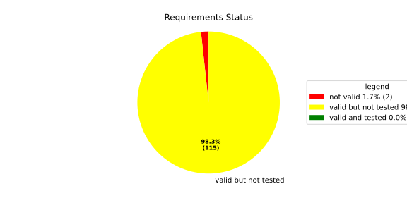
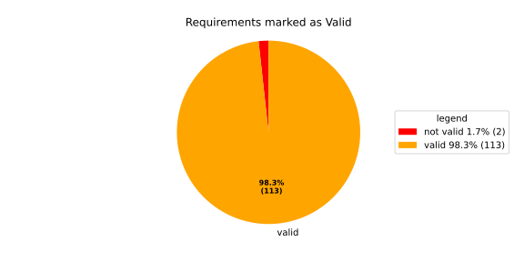
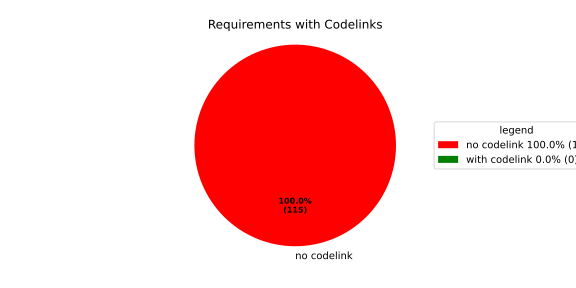

Verification Statistics#
Overview#

In Detail#


No needs passed the filters
Failed Tests
Hint: This table should be empty. Before a PR can be merged all tests have to be successful.
No needs passed the filters
Skipped / Disabled Tests
No needs passed the filters
All passed Tests#
No needs passed the filters
Details About Testcases#
No needs passed the filters
No needs passed the filters
Test Log Files#
tests-report/tests/integration/process_simple_rep_failure/process_simple_rep_failure/test.log
exec ${PAGER:-/usr/bin/less} "$0" || exit 1
Executing tests from //tests/integration/process_simple_rep_failure:process_simple_rep_failure
-----------------------------------------------------------------------------
============================= test session starts ==============================
platform linux -- Python 3.12.12, pytest-9.0.3, pluggy-1.5.0
rootdir: /home/runner/.bazel/sandbox/processwrapper-sandbox/1256/execroot/_main/bazel-out/k8-fastbuild/bin/tests/integration/process_simple_rep_failure/process_simple_rep_failure.runfiles/score_itf+
configfile: pytest.ini
collected 1 item
../score_itf+::test_recovery_action_simple_rep_failure
-------------------------------- live log setup --------------------------------
[2026-06-29 09:35:10.005] [INFO] [score.itf.plugins.docker] Executing custom image bootstrap command: tests/utils/environments/x86_64-linux/x86_64-linux.sh
[2026-06-29 09:35:10.185] [DEBUG] [docker.utils.config] Trying paths: ['/home/runner/.docker/config.json', '/home/runner/.dockercfg']
[2026-06-29 09:35:10.185] [DEBUG] [docker.utils.config] Found file at path: /home/runner/.docker/config.json
[2026-06-29 09:35:10.186] [DEBUG] [docker.auth] Found 'auths' section
[2026-06-29 09:35:10.186] [DEBUG] [docker.auth] Found entry (registry='https://index.docker.io/v1/', username='githubactions')
[2026-06-29 09:35:10.209] [DEBUG] [urllib3.connectionpool] http://localhost:None "GET /version HTTP/1.1" 200 823
[2026-06-29 09:35:10.266] [DEBUG] [urllib3.connectionpool] http://localhost:None "POST /v1.48/containers/create HTTP/1.1" 201 88
[2026-06-29 09:35:10.268] [DEBUG] [urllib3.connectionpool] http://localhost:None "GET /v1.48/containers/ec25a345dcf124ea79ed6d64fde39f191a8b41218d2e10a4f943c6f0bafcb4bc/json HTTP/1.1" 200 None
[2026-06-29 09:35:10.469] [DEBUG] [urllib3.connectionpool] http://localhost:None "POST /v1.48/containers/ec25a345dcf124ea79ed6d64fde39f191a8b41218d2e10a4f943c6f0bafcb4bc/start HTTP/1.1" 204 0
[2026-06-29 09:35:10.470] [DEBUG] [docker.utils.config] Trying paths: ['/home/runner/.docker/config.json', '/home/runner/.dockercfg']
[2026-06-29 09:35:10.470] [DEBUG] [docker.utils.config] Found file at path: /home/runner/.docker/config.json
[2026-06-29 09:35:10.470] [DEBUG] [docker.auth] Found 'auths' section
[2026-06-29 09:35:10.470] [DEBUG] [docker.auth] Found entry (registry='https://index.docker.io/v1/', username='githubactions')
[2026-06-29 09:35:10.476] [DEBUG] [urllib3.connectionpool] http://localhost:None "GET /version HTTP/1.1" 200 823
[2026-06-29 09:35:10.656] [INFO] [tests.utils.testing_utils.setup_test] Test case setup finished
-------------------------------- live log call ---------------------------------
[2026-06-29 09:35:10.770] [INFO] [launch_manager] 2026/06/29 09:35:10.5710768 6949939 000 ECU1 LM LM log debug verbose 1
[2026-06-29 09:35:10.771] [INFO] [launch_manager] Launch Manager Started !!!!
[2026-06-29 09:35:10.771] [INFO] [launch_manager] 2026/06/29 09:35:10.5710769 6949944 000 ECU1 LM LM log debug verbose 1
[2026-06-29 09:35:10.771] [INFO] [launch_manager] Loading LCM Configurations...
[2026-06-29 09:35:10.771] [INFO] [launch_manager] 2026/06/29 09:35:10.5710769 6949945 000 ECU1 LM LM log debug verbose 1
[2026-06-29 09:35:10.772] [INFO] [launch_manager] ECUCFG_ENV_VAR_ROOTFOLDER set successfully
[2026-06-29 09:35:10.772] [INFO] [launch_manager] 2026/06/29 09:35:10.5710769 6949947 000 ECU1 LM LM log debug verbose 5
[2026-06-29 09:35:10.774] [INFO] [launch_manager] FlatBufferParser::getModeGroupPgName: MainPG ( IdentifierHash: 18079021346025578134 )
[2026-06-29 09:35:10.775] [INFO] [launch_manager] 2026/06/29 09:35:10.5710769 6949949 000 ECU1 LM LM log debug verbose 5
[2026-06-29 09:35:10.775] [INFO] [launch_manager] FlatBufferParser::getModeGroupPgStateName: MainPG/Startup ( IdentifierHash: 10504605499600661529 )
[2026-06-29 09:35:10.775] [INFO] [launch_manager] 2026/06/29 09:35:10.5710769 6949951 000 ECU1 LM LM log debug verbose 5
[2026-06-29 09:35:10.776] [INFO] [launch_manager] FlatBufferParser::getModeGroupPgStateName: MainPG/run_target_app_does_report_krunning_in_time ( IdentifierHash: 11934981641920773349 )
[2026-06-29 09:35:10.776] [INFO] [launch_manager] 2026/06/29 09:35:10.5710770 6949952 000 ECU1 LM LM log debug verbose 5
[2026-06-29 09:35:10.776] [INFO] [launch_manager] FlatBufferParser::getModeGroupPgStateName: MainPG/run_target_app_does_not_report_krunning_in_time ( IdentifierHash: 7672161913816744053 )
[2026-06-29 09:35:10.776] [INFO] [launch_manager] 2026/06/29 09:35:10.5710770 6949954 000 ECU1 LM LM log debug verbose 5
[2026-06-29 09:35:10.776] [INFO] [launch_manager] FlatBufferParser::getModeGroupPgStateName: MainPG/Off ( IdentifierHash: 15281793077830264047 )
[2026-06-29 09:35:10.777] [INFO] [launch_manager] 2026/06/29 09:35:10.5710770 6949955 000 ECU1 LM LM log debug verbose 5
[2026-06-29 09:35:10.777] [INFO] [launch_manager] FlatBufferParser::getModeGroupPgStateName: MainPG/fallback_run_target ( IdentifierHash: 4059409696722237352 )
[2026-06-29 09:35:10.777] [INFO] [launch_manager] 2026/06/29 09:35:10.5710770 6949957 000 ECU1 LM LM log debug verbose 4
[2026-06-29 09:35:10.777] [INFO] [launch_manager] parseProcessConfigurations: Process index: 0 executable_path_: /tmp/tests/process_simple_rep_failure/control_client_mock
[2026-06-29 09:35:10.777] [INFO] [launch_manager] 2026/06/29 09:35:10.5710770 6949959 000 ECU1 LM LM log debug verbose 3
[2026-06-29 09:35:10.777] [INFO] [launch_manager] Process control_client_mock is Reporting execution state
[2026-06-29 09:35:10.778] [INFO] [launch_manager] 2026/06/29 09:35:10.5710770 6949960 000 ECU1 LM LM log debug verbose 1
[2026-06-29 09:35:10.778] [INFO] [launch_manager] Process is STATE_MANAGEMENT function Cluster Affiliation
[2026-06-29 09:35:10.778] [INFO] [launch_manager] 2026/06/29 09:35:10.5710770 6949961 000 ECU1 LM LM log debug verbose 3 Process control_client_mock is Self terminating
[2026-06-29 09:35:10.778] [INFO] [launch_manager] 2026/06/29 09:35:10.5710771 6949962 000 ECU1 LM LM log debug verbose 4
[2026-06-29 09:35:10.778] [INFO] [launch_manager] ParseProcessProcessGroup: id:::pg_name_: MainPG , pg_state_name_: MainPG/Startup
[2026-06-29 09:35:10.778] [INFO] [launch_manager] 2026/06/29 09:35:10.5710771 6949964 000 ECU1 LM LM log debug verbose 4
[2026-06-29 09:35:10.778] [INFO] [launch_manager] ParseProcessProcessGroup: id:::pg_name_: MainPG , pg_state_name_: MainPG/run_target_app_does_report_krunning_in_time
[2026-06-29 09:35:10.778] [INFO] [launch_manager] 2026/06/29 09:35:10.5710771 6949965 000 ECU1 LM LM log debug verbose 4 ParseProcessProcessGroup: id:::pg_name_: MainPG , pg_state_name_: MainPG/run_target_app_does_not_report_krunning_in_time
[2026-06-29 09:35:10.778] [INFO] [launch_manager] 2026/06/29 09:35:10.5710771 6949965 000 ECU1 LM LM log debug verbose 4 ParseProcessProcessGroup: id:::pg_name_: MainPG , pg_state_name_: MainPG/fallback_run_target
[2026-06-29 09:35:10.779] [INFO] [launch_manager] 2026/06/29 09:35:10.5710771 6949965 000 ECU1 LM LM log debug verbose 4 parseProcessConfigurations: Process index: 1 executable_path_: /tmp/tests/process_simple_rep_failure/process_simple_reporting
[2026-06-29 09:35:10.779] [INFO] [launch_manager] 2026/06/29 09:35:10.5710771 6949966 000 ECU1 LM LM log debug verbose 3 Process component_does_report_krunning_in_time is Reporting execution state
[2026-06-29 09:35:10.779] [INFO] [launch_manager] 2026/06/29 09:35:10.5710771 6949966 000 ECU1 LM LM log debug verbose 1 Process is NOT associated with any function Cluster Affiliation
[2026-06-29 09:35:10.779] [INFO] [launch_manager] 2026/06/29 09:35:10.5710771 6949966 000 ECU1 LM LM log debug verbose 3 Process component_does_report_krunning_in_time is Self terminating
[2026-06-29 09:35:10.779] [INFO] [launch_manager] 2026/06/29 09:35:10.5710771 6949966 000 ECU1 LM LM log debug verbose 4 ParseProcessProcessGroup: id:::pg_name_: MainPG , pg_state_name_: MainPG/run_target_app_does_report_krunning_in_time
[2026-06-29 09:35:10.779] [INFO] [launch_manager] 2026/06/29 09:35:10.5710771 6949969 000 ECU1 LM LM log debug verbose 4 parseProcessConfigurations: Process index: 2 executable_path_: /tmp/tests/process_simple_rep_failure/process_simple_reporting
[2026-06-29 09:35:10.779] [INFO] [launch_manager] 2026/06/29 09:35:10.5710771 6949970 000 ECU1 LM LM log debug verbose 3
[2026-06-29 09:35:10.779] [INFO] [launch_manager] Process component_does_not_report_krunning_in_time is Reporting execution state
[2026-06-29 09:35:10.779] [INFO] [launch_manager] 2026/06/29 09:35:10.5710772 6949972 000 ECU1 LM LM log debug verbose 1
[2026-06-29 09:35:10.780] [INFO] [launch_manager] Process is NOT associated with any function Cluster Affiliation
[2026-06-29 09:35:10.780] [INFO] [launch_manager] 2026/06/29 09:35:10.5710772 6949973 000 ECU1 LM LM log debug verbose 3
[2026-06-29 09:35:10.780] [INFO] [launch_manager] Process component_does_not_report_krunning_in_time is Self terminating
[2026-06-29 09:35:10.780] [INFO] [launch_manager] 2026/06/29 09:35:10.5710772 6949974 000 ECU1 LM LM log debug verbose 4
[2026-06-29 09:35:10.780] [INFO] [launch_manager] ParseProcessProcessGroup: id:::pg_name_: MainPG , pg_state_name_: MainPG/run_target_app_does_not_report_krunning_in_time
[2026-06-29 09:35:10.780] [INFO] [launch_manager] 2026/06/29 09:35:10.5710772 6949976 000 ECU1 LM LM log debug verbose 4
[2026-06-29 09:35:10.780] [INFO] [launch_manager] parseProcessConfigurations: Process index: 3 executable_path_: /tmp/tests/process_simple_rep_failure/verification_process
[2026-06-29 09:35:10.780] [INFO] [launch_manager] 2026/06/29 09:35:10.5710772 6949977 000 ECU1 LM LM log debug verbose 3
[2026-06-29 09:35:10.780] [INFO] [launch_manager] Process verification_component is NOT Reporting execution state
[2026-06-29 09:35:10.780] [INFO] [launch_manager] 2026/06/29 09:35:10.5710772 6949978 000 ECU1 LM LM log debug verbose 1 Process is NOT associated with any function Cluster Affiliation
[2026-06-29 09:35:10.781] [INFO] [launch_manager] 2026/06/29 09:35:10.5710772 6949979 000 ECU1 LM LM log debug verbose 3 Process verification_component is Self terminating
[2026-06-29 09:35:10.781] [INFO] [launch_manager] 2026/06/29 09:35:10.5710772 6949981 000 ECU1 LM LM log debug verbose 4
[2026-06-29 09:35:10.781] [INFO] [launch_manager] ParseProcessProcessGroup: id:::pg_name_: MainPG , pg_state_name_: MainPG/fallback_run_target
[2026-06-29 09:35:10.781] [INFO] [launch_manager] 2026/06/29 09:35:10.5710773 6949982 000 ECU1 LM LM log debug verbose 3
[2026-06-29 09:35:10.781] [INFO] [launch_manager] Loading SWCL Nr. 0 Succeeded
[2026-06-29 09:35:10.781] [INFO] [launch_manager] 2026/06/29 09:35:10.5710773 6949983 000 ECU1 LM LM log debug verbose 2 1 process group(s)
[2026-06-29 09:35:10.781] [INFO] [launch_manager] 2026/06/29 09:35:10.5710773 6949984 000 ECU1 LM LM log debug verbose 3
[2026-06-29 09:35:10.781] [INFO] [launch_manager] Creating graph with 4 nodes
[2026-06-29 09:35:10.782] [INFO] [launch_manager] 2026/06/29 09:35:10.5710773 6949985 000 ECU1 LM LM log debug verbose 1
[2026-06-29 09:35:10.782] [INFO] [launch_manager] Process groups initialized successfully
[2026-06-29 09:35:10.782] [INFO] [launch_manager] 2026/06/29 09:35:10.5710773 6949987 000 ECU1 LM LM log debug verbose 1
[2026-06-29 09:35:10.782] [INFO] [launch_manager] Process Group initialization done
[2026-06-29 09:35:10.782] [INFO] [launch_manager] 2026/06/29 09:35:10.5710773 6949988 000 ECU1 LM LM log debug verbose 3
[2026-06-29 09:35:10.782] [INFO] [launch_manager] Creating Safe Process Map with 4 entries
[2026-06-29 09:35:10.782] [INFO] [launch_manager] 2026/06/29 09:35:10.5710773 6949988 000 ECU1 LM LM log debug verbose 2 Creating job queue with capacity 1024
[2026-06-29 09:35:10.783] [INFO] [launch_manager] 2026/06/29 09:35:10.5710773 6949990 000 ECU1 LM LM log debug verbose 1 Creating worker threads...
[2026-06-29 09:35:10.783] [INFO] [launch_manager] 2026/06/29 09:35:10.5710776 6950011 000 ECU1 LM LM log debug verbose 7
[2026-06-29 09:35:10.783] [INFO] [launch_manager] Process group index 0 (with name MainPG ) has 4 processes
[2026-06-29 09:35:10.783] [INFO] [launch_manager] 2026/06/29 09:35:10.5710776 6950014 000 ECU1 LM LM log debug verbose 2
[2026-06-29 09:35:10.783] [INFO] [launch_manager] Creating process node with id: 0
[2026-06-29 09:35:10.783] [INFO] [launch_manager] 2026/06/29 09:35:10.5710776 6950016 000 ECU1 LM LM log debug verbose 5
[2026-06-29 09:35:10.783] [INFO] [launch_manager] Process 0 has 0 start dependencies
[2026-06-29 09:35:10.784] [INFO] [launch_manager] 2026/06/29 09:35:10.5710776 6950018 000 ECU1 LM LM log debug verbose 2
[2026-06-29 09:35:10.784] [INFO] [launch_manager] Creating process node with id: 1
[2026-06-29 09:35:10.784] [INFO] [launch_manager] 2026/06/29 09:35:10.5710777 6950025 000 ECU1 LM LM log debug verbose 5 Process 1 has 0 start dependencies
[2026-06-29 09:35:10.784] [INFO] [launch_manager] 2026/06/29 09:35:10.5710777 6950025 000 ECU1 LM LM log debug verbose 2 Creating process node with id: 2
[2026-06-29 09:35:10.784] [INFO] [launch_manager] 2026/06/29 09:35:10.5710777 6950025 000 ECU1 LM LM log debug verbose 5 Process 2 has 0 start dependencies
[2026-06-29 09:35:10.784] [INFO] [launch_manager] 2026/06/29 09:35:10.5710777 6950026 000 ECU1 LM LM log debug verbose 2 Creating process node with id: 3
[2026-06-29 09:35:10.784] [INFO] [launch_manager] 2026/06/29 09:35:10.5710777 6950026 000 ECU1 LM LM log debug verbose 5 Process 3 has 0 start dependencies
[2026-06-29 09:35:10.785] [INFO] [launch_manager] 2026/06/29 09:35:10.5710777 6950026 000 ECU1 LM LM log debug verbose 3 Created 4 process nodes
[2026-06-29 09:35:10.785] [INFO] [launch_manager] 2026/06/29 09:35:10.5710777 6950026 000 ECU1 LM LM log debug verbose 2 Creating successor lists for process group MainPG
[2026-06-29 09:35:10.785] [INFO] [launch_manager] 2026/06/29 09:35:10.5710777 6950027 000 ECU1 LM LM log debug verbose 1 Graphs initialized
[2026-06-29 09:35:10.785] [INFO] [launch_manager] 2026/06/29 09:35:10.5710777 6950028 000 ECU1 LM Fcty log info verbose 2 Factory for FlatCfg MachineConfig: Loading of HM Machine Configuration succeeded.
[2026-06-29 09:35:10.785] [INFO] [launch_manager] 2026/06/29 09:35:10.5710777 6950029 000 ECU1 LM Fcty log debug verbose 3 Factory for FlatCfg MachineConfig: Alive Supervision buffer size: 100
[2026-06-29 09:35:10.786] [INFO] [launch_manager] 2026/06/29 09:35:10.5710777 6950029 000 ECU1 LM Fcty log debug verbose 3 Factory for FlatCfg MachineConfig: Monitor buffer size: 512
[2026-06-29 09:35:10.786] [INFO] [launch_manager] 2026/06/29 09:35:10.5710777 6950029 000 ECU1 LM Fcty log debug verbose 4 Factory for FlatCfg MachineConfig: Periodicity: 50000000 ns
[2026-06-29 09:35:10.786] [INFO] [launch_manager] 2026/06/29 09:35:10.5710777 6950029 000 ECU1 LM Fcty log debug verbose 3 Factory for FlatCfg MachineConfig: Configured watchdogs: 0
[2026-06-29 09:35:10.786] [INFO] [launch_manager] 2026/06/29 09:35:10.5710777 6950029 000 ECU1 LM Fcty log warn verbose 2 Factory for FlatCfg MachineConfig: No watchdog configured
[2026-06-29 09:35:10.786] [INFO] [launch_manager] 2026/06/29 09:35:10.5710777 6950031 000 ECU1 LM Fcty log debug verbose 2 Software Cluster Handler starts constructing workers: MainCluster
[2026-06-29 09:35:10.786] [INFO] [launch_manager] 2026/06/29 09:35:10.5710777 6950031 000 ECU1 LM Fcty log debug verbose 3 Factory for FlatCfg AR24-11: Successfully created Process States: control_client_mock
[2026-06-29 09:35:10.786] [INFO] [launch_manager] 2026/06/29 09:35:10.5710777 6950031 000 ECU1 LM Fcty log debug verbose 3 Factory for FlatCfg AR24-11: Number of constructed Process States: 1
[2026-06-29 09:35:10.786] [INFO] [launch_manager] 2026/06/29 09:35:10.5710778 6950032 000 ECU1 LM Fcty log debug verbose 3 Factory for FlatCfg AR24-11: Successfully created Alive interface IPC with path: lifecycle_health_control_client_mock
[2026-06-29 09:35:10.786] [INFO] [launch_manager] 2026/06/29 09:35:10.5710778 6950032 000 ECU1 LM Fcty log debug verbose 3 Factory for FlatCfg AR24-11: Number of constructed Alive interface IPCs: 1
[2026-06-29 09:35:10.786] [INFO] [launch_manager] 2026/06/29 09:35:10.5710778 6950033 000 ECU1 LM Fcty log debug verbose 3 Factory for FlatCfg AR24-11: Successfully created Alive Interface: /lifecycle_health_control_client_mock
[2026-06-29 09:35:10.786] [INFO] [launch_manager] 2026/06/29 09:35:10.5710778 6950033 000 ECU1 LM Fcty log debug verbose 3 Factory for FlatCfg AR24-11: Number of constructed Alive interfaces: 1
[2026-06-29 09:35:10.786] [INFO] [launch_manager] 2026/06/29 09:35:10.5710778 6950033 000 ECU1 LM Fcty log debug verbose 3 Factory for FlatCfg AR24-11: Successfully created supervision checkpoint: control_client_mock_checkpoint
[2026-06-29 09:35:10.786] [INFO] [launch_manager] 2026/06/29 09:35:10.5710778 6950033 000 ECU1 LM Fcty log debug verbose 3 Factory for FlatCfg AR24-11: Number of constructed supervision checkpoints: 1
[2026-06-29 09:35:10.787] [INFO] [launch_manager] 2026/06/29 09:35:10.5710778 6950034 000 ECU1 LM Fcty log debug verbose 3 Factory for FlatCfg AR24-11: Successfully created alive supervision worker object: control_client_mock_alive_supervision
[2026-06-29 09:35:10.787] [INFO] [launch_manager] 2026/06/29 09:35:10.5710778 6950034 000 ECU1 LM Fcty log debug verbose 3 Factory for FlatCfg AR24-11: Number of constructed alive supervisions: 1
[2026-06-29 09:35:10.787] [INFO] [launch_manager] 2026/06/29 09:35:10.5710778 6950034 000 ECU1 LM Fcty log info verbose 2 Phm Daemon: The (configured) periodicity in [ns] is set to: 50000000
[2026-06-29 09:35:10.787] [INFO] [launch_manager] 2026/06/29 09:35:10.5710778 6950035 000 ECU1 LM Fcty log debug verbose 2 Phm Daemon: The accuracy of the monotonic system clock in [ns] is: 1
[2026-06-29 09:35:10.787] [INFO] [launch_manager] 2026/06/29 09:35:10.5710778 6950035 000 ECU1 LM Fcty log debug verbose 3 AliveMonitor: Initialization took 0 ms
[2026-06-29 09:35:10.787] [INFO] [launch_manager] 2026/06/29 09:35:10.5710778 6950035 000 ECU1 LM LM log info verbose 1 LCM started successfully
[2026-06-29 09:35:10.787] [INFO] [launch_manager] 2026/06/29 09:35:10.5710778 6950036 000 ECU1 LM LM log debug verbose 3 clock() at run(): 40.071000 ms
[2026-06-29 09:35:10.787] [INFO] [launch_manager] 2026/06/29 09:35:10.5710778 6950037 000 ECU1 LM LM log debug verbose 1 =============STARTING MAINPG STARTUP STATE============
[2026-06-29 09:35:10.787] [INFO] [launch_manager] 2026/06/29 09:35:10.5710778 6950038 000 ECU1 LM LM log debug verbose 9 Graph::setState changes from kSuccess to kInTransition for PG 0 ( MainPG )
[2026-06-29 09:35:10.787] [INFO] [launch_manager] 2026/06/29 09:35:10.5710778 6950038 000 ECU1 LM LM log debug verbose 2 Stop Dependencies: 0
[2026-06-29 09:35:10.787] [INFO] [launch_manager] 2026/06/29 09:35:10.5710778 6950038 000 ECU1 LM LM log debug verbose 2 Stop Dependencies: 0
[2026-06-29 09:35:10.787] [INFO] [launch_manager] 2026/06/29 09:35:10.5710778 6950038 000 ECU1 LM LM log debug verbose 2 Stop Dependencies: 0
[2026-06-29 09:35:10.787] [INFO] [launch_manager] 2026/06/29 09:35:10.5710778 6950039 000 ECU1 LM LM log debug verbose 2 Stop Dependencies: 0
[2026-06-29 09:35:10.788] [INFO] [launch_manager] 2026/06/29 09:35:10.5710778 6950039 000 ECU1 LM LM log debug verbose 2 Start Dependencies: 0
[2026-06-29 09:35:10.788] [INFO] [launch_manager] 2026/06/29 09:35:10.5710778 6950040 000 ECU1 LM LM log debug verbose 2 Start Dependencies: 0
[2026-06-29 09:35:10.788] [INFO] [launch_manager] 2026/06/29 09:35:10.5710778 6950040 000 ECU1 LM LM log debug verbose 2 Start Dependencies: 0
[2026-06-29 09:35:10.788] [INFO] [launch_manager] 2026/06/29 09:35:10.5710778 6950040 000 ECU1 LM LM log debug verbose 2 Start Dependencies: 0
[2026-06-29 09:35:10.788] [INFO] [launch_manager] 2026/06/29 09:35:10.5710778 6950041 000 ECU1 LM LM log debug verbose 6 Starting process 0 ( control_client_mock ) from executable /tmp/tests/process_simple_rep_failure/control_client_mock
[2026-06-29 09:35:10.788] [INFO] [launch_manager] 2026/06/29 09:35:10.5710779 6950042 000 ECU1 LM LM log debug verbose 3 Initialize the control client for control_client_mock process
[2026-06-29 09:35:10.788] [INFO] [launch_manager] 2026/06/29 09:35:10.5710779 6950042 000 ECU1 LM LM log debug verbose 1 ControlClientChannel initialized
[2026-06-29 09:35:10.788] [INFO] [launch_manager] 2026/06/29 09:35:10.5710779 6950048 000 ECU1 LM LM log debug verbose 4 startProcess pid 67 received for process: control_client_mock
[2026-06-29 09:35:10.788] [INFO] [launch_manager] 2026/06/29 09:35:10.5710779 6950048 000 ECU1 LM LM log debug verbose 1 ControlClientChannel obtained from sync.
[2026-06-29 09:35:10.789] [INFO] [launch_manager] [==========] Running 1 test from 1 test suite.
[2026-06-29 09:35:10.789] [INFO] [launch_manager] [----------] Global test environment set-up.
[2026-06-29 09:35:10.789] [INFO] [launch_manager] [----------] 1 test from RecoveryActionSimpleRepFailure
[2026-06-29 09:35:10.789] [INFO] [launch_manager] [ RUN ] RecoveryActionSimpleRepFailure.ControlClientMock
[2026-06-29 09:35:10.789] [INFO] [launch_manager] [ STEP ] Report running from ControlClientMock
[2026-06-29 09:35:10.789] [INFO] [launch_manager] [ END STEP ] Report running from ControlClientMock
[2026-06-29 09:35:10.789] [INFO] [launch_manager] [ STEP ] Activate RunTarget run_target_app_does_report_krunning_in_time
[2026-06-29 09:35:10.790] [INFO] [launch_manager] 2026/06/29 09:35:10.5710789 6950151 000 ECU1 LM LM log debug verbose 1 Request sent. Waiting for acknowledgment...
[2026-06-29 09:35:10.790] [INFO] [launch_manager] 2026/06/29 09:35:10.5710790 6950152 000 ECU1 LM LM log debug verbose 8 ProcessGroupManager::ControlClientHandler: got request kSetStateRequest ( 16 ) re state MainPG/run_target_app_does_report_krunning_in_time of PG MainPG
[2026-06-29 09:35:10.790] [INFO] [launch_manager] 2026/06/29 09:35:10.5710790 6950153 000 ECU1 LM LM log debug verbose 6 Pending state for process group MainPG changed from to MainPG/run_target_app_does_report_krunning_in_time
[2026-06-29 09:35:10.790] [INFO] [launch_manager] 2026/06/29 09:35:10.5710790 6950153 000 ECU1 LM LM log debug verbose 9 Graph::setState changes from kInTransition to kCancelled for PG 0 ( MainPG )
[2026-06-29 09:35:10.790] [INFO] [launch_manager] 2026/06/29 09:35:10.5710790 6950153 000 ECU1 LM LM log debug verbose 1 Control Client handler nudged
[2026-06-29 09:35:10.791] [INFO] [launch_manager] 2026/06/29 09:35:10.5710790 6950154 000 ECU1 LM LM log debug verbose 1 Request acknowledged.
[2026-06-29 09:35:10.791] [INFO] [launch_manager] 2026/06/29 09:35:10.5710790 6950156 000 ECU1 LM LM log debug verbose 1 Request acknowledged.
[2026-06-29 09:35:10.791] [INFO] [launch_manager] 2026/06/29 09:35:10.5710790 6950157 000 ECU1 LM LM log debug verbose 8
[2026-06-29 09:35:10.791] [INFO] [launch_manager] Got kRunning for pid 67 ( control_client_mock ) process 0 of group MainPG
[2026-06-29 09:35:10.791] [INFO] [launch_manager] 2026/06/29 09:35:10.5710791 6950162 000 ECU1 LM LM log debug verbose 7 startProcess for MainPG process 0 ( control_client_mock ) done
[2026-06-29 09:35:10.791] [INFO] [launch_manager] 2026/06/29 09:35:10.5710791 6950163 000 ECU1 LM LM log debug verbose 1 Control Client handler nudged
[2026-06-29 09:35:10.792] [INFO] [launch_manager] 2026/06/29 09:35:10.5710791 6950163 000 ECU1 LM LM log fatal verbose 3 clock() at failed initial state transition: 41.777000 ms
[2026-06-29 09:35:10.792] [INFO] [launch_manager] 2026/06/29 09:35:10.5710791 6950163 000 ECU1 LM LM log debug verbose 9 Graph::setState changes from kCancelled to kUndefinedState for PG 0 ( MainPG )
[2026-06-29 09:35:10.792] [INFO] [launch_manager] 2026/06/29 09:35:10.5710791 6950163 000 ECU1 LM LM log debug verbose 1 Control Client handler nudged
[2026-06-29 09:35:10.792] [INFO] [launch_manager] 2026/06/29 09:35:10.5710792 6950175 000 ECU1 LM LM log debug verbose 6
[2026-06-29 09:35:10.792] [INFO] [launch_manager] Pending state for process group MainPG changed from MainPG/run_target_app_does_report_krunning_in_time to
[2026-06-29 09:35:10.793] [INFO] [launch_manager] 2026/06/29 09:35:10.5710793 6950182 000 ECU1 LM LM log debug verbose 4
[2026-06-29 09:35:10.793] [INFO] [launch_manager] Start transition to MainPG/run_target_app_does_report_krunning_in_time for PG MainPG
[2026-06-29 09:35:10.793] [INFO] [launch_manager] 2026/06/29 09:35:10.5710793 6950187 000 ECU1 LM LM log debug verbose 9
[2026-06-29 09:35:10.794] [INFO] [launch_manager] Graph::setState changes from kUndefinedState to kInTransition for PG 0 ( MainPG )
[2026-06-29 09:35:10.794] [INFO] [launch_manager] 2026/06/29 09:35:10.5710794 6950193 000 ECU1 LM LM log debug verbose 2 Stop Dependencies: 0
[2026-06-29 09:35:10.794] [INFO] [launch_manager] 2026/06/29 09:35:10.5710794 6950196 000 ECU1 LM LM log debug verbose 2 Stop Dependencies: 0
[2026-06-29 09:35:10.794] [INFO] [launch_manager] 2026/06/29 09:35:10.5710794 6950197 000 ECU1 LM LM log debug verbose 2 Stop Dependencies: 0
[2026-06-29 09:35:10.794] [INFO] [launch_manager] 2026/06/29 09:35:10.5710794 6950197 000 ECU1 LM LM log debug verbose 2 Stop Dependencies: 0
[2026-06-29 09:35:10.795] [INFO] [launch_manager] 2026/06/29 09:35:10.5710794 6950200 000 ECU1 LM LM log debug verbose 2 Start Dependencies: 0
[2026-06-29 09:35:10.795] [INFO] [launch_manager] 2026/06/29 09:35:10.5710794 6950201 000 ECU1 LM LM log debug verbose 2 Start Dependencies: 0
[2026-06-29 09:35:10.795] [INFO] [launch_manager] 2026/06/29 09:35:10.5710794 6950201 000 ECU1 LM LM log debug verbose 2 Start Dependencies: 0
[2026-06-29 09:35:10.795] [INFO] [launch_manager] 2026/06/29 09:35:10.5710794 6950201 000 ECU1 LM LM log debug verbose 2 Start Dependencies: 0
[2026-06-29 09:35:10.795] [INFO] [launch_manager] 2026/06/29 09:35:10.5710795 6950202 000 ECU1 LM LM log debug verbose 6 Starting process 1 ( component_does_report_krunning_in_time ) from executable /tmp/tests/process_simple_rep_failure/process_simple_reporting
[2026-06-29 09:35:10.795] [INFO] [launch_manager] 2026/06/29 09:35:10.5710795 6950208 000 ECU1 LM LM log debug verbose 4
[2026-06-29 09:35:10.797] [INFO] [launch_manager] [==========] Running 1 test from 1 test suite.
[2026-06-29 09:35:10.798] [INFO] [launch_manager] startProcess pid 74 received for process: component_does_report_krunning_in_time
[2026-06-29 09:35:10.798] [INFO] [launch_manager] [----------] Global test environment set-up.
[2026-06-29 09:35:10.798] [INFO] [launch_manager] [----------] 1 test from ProcessSimpleRepFailure
[2026-06-29 09:35:10.798] [INFO] [launch_manager] [ RUN ] ProcessSimpleRepFailure.ProcessSimpleReporting
[2026-06-29 09:35:10.799] [INFO] [launch_manager] [ STEP ] Check args
[2026-06-29 09:35:10.799] [INFO] [launch_manager] [ END STEP ] Check args
[2026-06-29 09:35:10.799] [INFO] [launch_manager] [ STEP ] Report running from ProcessSimpleReporting
[2026-06-29 09:35:10.823] [DEBUG] [tests.utils.testing_utils.run_until_file_deployed] Waiting for /tmp/tests/test_end
[2026-06-29 09:35:10.828] [INFO] [launch_manager] 2026/06/29 09:35:10.5710828 6950536 000 ECU1 LM Sprv log debug verbose 6 Process with Id control_client_mock changed state PG MainPG/Startup PS 1
[2026-06-29 09:35:10.828] [INFO] [launch_manager] 2026/06/29 09:35:10.5710828 6950537 000 ECU1 LM Sprv log debug verbose 6 Process with Id control_client_mock changed state PG MainPG/Startup PS 2
[2026-06-29 09:35:10.829] [INFO] [launch_manager] 2026/06/29 09:35:10.5710828 6950537 000 ECU1 LM Sprv log debug verbose 6 Process with Id component_does_report_krunning_in_time changed state PG MainPG/run_target_app_does_report_krunning_in_time PS 1
[2026-06-29 09:35:10.829] [INFO] [launch_manager] 2026/06/29 09:35:10.5710828 6950537 000 ECU1 LM Sprv log info verbose 3 Alive Supervision ( control_client_mock_alive_supervision ) switched to OK.
[2026-06-29 09:35:11.302] [INFO] [launch_manager] [ END STEP ] Report running from ProcessSimpleReporting
[2026-06-29 09:35:11.302] [INFO] [launch_manager] [ OK ] ProcessSimpleRepFailure.ProcessSimpleReporting (502 ms)
[2026-06-29 09:35:11.302] [INFO] [launch_manager] [----------] 1 test from ProcessSimpleRepFailure (503 ms total)
[2026-06-29 09:35:11.303] [INFO] [launch_manager] [----------] Global test environment tear-down
[2026-06-29 09:35:11.303] [INFO] [launch_manager] [==========] 1 test from 1 test suite ran. (504 ms total)
[2026-06-29 09:35:11.303] [INFO] [launch_manager] [ PASSED ] 1 test.
[2026-06-29 09:35:11.303] [INFO] [launch_manager] 2026/06/29 09:35:11.5711302 6955281 000 ECU1 LM LM log debug verbose 12 Child process 1 of MainPG pid 74 ( component_does_report_krunning_in_time ) for node True terminated with status 0
[2026-06-29 09:35:11.304] [INFO] [launch_manager] 2026/06/29 09:35:11.5711303 6955282 000 ECU1 LM LM log debug verbose 8 Got kRunning for pid 74 ( component_does_report_krunning_in_time ) process 1 of group MainPG
[2026-06-29 09:35:11.304] [INFO] [launch_manager] 2026/06/29 09:35:11.5711303 6955283 000 ECU1 LM LM log debug verbose 7 startProcess for MainPG process 1 ( component_does_report_krunning_in_time ) done
[2026-06-29 09:35:11.304] [INFO] [launch_manager] 2026/06/29 09:35:11.5711303 6955283 000 ECU1 LM LM log debug verbose 9 Graph::setState changes from kInTransition to kSuccess for PG 0 ( MainPG )
[2026-06-29 09:35:11.304] [INFO] [launch_manager] 2026/06/29 09:35:11.5711303 6955284 000 ECU1 LM LM log info verbose 7 Completed the request for PG MainPG to State MainPG/run_target_app_does_report_krunning_in_time in 513 ms
[2026-06-29 09:35:11.304] [INFO] [launch_manager] 2026/06/29 09:35:11.5711303 6955284 000 ECU1 LM LM log debug verbose 1 Control Client handler nudged
[2026-06-29 09:35:11.305] [INFO] [launch_manager] 2026/06/29 09:35:11.5711304 6955292 000 ECU1 LM LM log debug verbose 8
[2026-06-29 09:35:11.305] [INFO] [launch_manager] ProcessGroupManager::ControlClientHandler: Sending kSetStateSuccess ( 20 ) re state MainPG/run_target_app_does_report_krunning_in_time of PG MainPG
[2026-06-29 09:35:11.305] [INFO] [launch_manager] 2026/06/29 09:35:11.5711304 6955293 000 ECU1 LM LM log debug verbose 1 Response sent.
[2026-06-29 09:35:11.328] [INFO] [launch_manager] 2026/06/29 09:35:11.5711328 6955536 000 ECU1 LM Sprv log debug verbose 6 Process with Id component_does_report_krunning_in_time changed state PG MainPG/run_target_app_does_report_krunning_in_time PS 4
[2026-06-29 09:35:11.387] [DEBUG] [tests.utils.testing_utils.run_until_file_deployed] Waiting for /tmp/tests/test_end
[2026-06-29 09:35:11.388] [INFO] [launch_manager] 2026/06/29 09:35:11.5711387 6956126 000 ECU1 LM LM log debug verbose 1 Response retrieved.
[2026-06-29 09:35:11.393] [INFO] [launch_manager] [ END STEP ] Activate RunTarget run_target_app_does_report_krunning_in_time
[2026-06-29 09:35:11.935] [DEBUG] [tests.utils.testing_utils.run_until_file_deployed] Waiting for /tmp/tests/test_end
[2026-06-29 09:35:12.388] [INFO] [launch_manager] [ STEP ] Verify fallback run target has not been activated
[2026-06-29 09:35:12.388] [INFO] [launch_manager] [ END STEP ] Verify fallback run target has not been activated
[2026-06-29 09:35:12.388] [INFO] [launch_manager] [ STEP ] Activate RunTarget run_target_app_does_not_report_krunning_in_time
[2026-06-29 09:35:12.388] [INFO] [launch_manager] 2026/06/29 09:35:12.5712387 6966129 000 ECU1 LM LM log debug verbose 1 Request sent. Waiting for acknowledgment...
[2026-06-29 09:35:12.388] [INFO] [launch_manager] 2026/06/29 09:35:12.5712388 6966134 000 ECU1 LM LM log debug verbose 8 ProcessGroupManager::ControlClientHandler: got request kSetStateRequest ( 16 ) re state MainPG/run_target_app_does_not_report_krunning_in_time of PG MainPG
[2026-06-29 09:35:12.389] [INFO] [launch_manager] 2026/06/29 09:35:12.5712388 6966135 000 ECU1 LM LM log debug verbose 6 Pending state for process group MainPG changed from to MainPG/run_target_app_does_not_report_krunning_in_time
[2026-06-29 09:35:12.389] [INFO] [launch_manager] 2026/06/29 09:35:12.5712388 6966135 000 ECU1 LM LM log debug verbose 1 Request acknowledged.
[2026-06-29 09:35:12.389] [INFO] [launch_manager] 2026/06/29 09:35:12.5712388 6966135 000 ECU1 LM LM log debug verbose 6 Pending state for process group MainPG changed from MainPG/run_target_app_does_not_report_krunning_in_time to
[2026-06-29 09:35:12.389] [INFO] [launch_manager] 2026/06/29 09:35:12.5712388 6966135 000 ECU1 LM LM log debug verbose 4 Start transition to MainPG/run_target_app_does_not_report_krunning_in_time for PG MainPG
[2026-06-29 09:35:12.389] [INFO] [launch_manager] 2026/06/29 09:35:12.5712388 6966135 000 ECU1 LM LM log debug verbose 9 Graph::setState changes from kSuccess to kInTransition for PG 0 ( MainPG )
[2026-06-29 09:35:12.389] [INFO] [launch_manager] 2026/06/29 09:35:12.5712388 6966136 000 ECU1 LM LM log debug verbose 2 Stop Dependencies: 0
[2026-06-29 09:35:12.390] [INFO] [launch_manager] 2026/06/29 09:35:12.5712388 6966136 000 ECU1 LM LM log debug verbose 2 Stop Dependencies: 0
[2026-06-29 09:35:12.390] [INFO] [launch_manager] 2026/06/29 09:35:12.5712388 6966136 000 ECU1 LM LM log debug verbose 2 Stop Dependencies: 0
[2026-06-29 09:35:12.390] [INFO] [launch_manager] 2026/06/29 09:35:12.5712388 6966136 000 ECU1 LM LM log debug verbose 2 Stop Dependencies: 0
[2026-06-29 09:35:12.390] [INFO] [launch_manager] 2026/06/29 09:35:12.5712388 6966136 000 ECU1 LM LM log debug verbose 2 Start Dependencies: 0
[2026-06-29 09:35:12.390] [INFO] [launch_manager] 2026/06/29 09:35:12.5712388 6966136 000 ECU1 LM LM log debug verbose 2 Start Dependencies: 0
[2026-06-29 09:35:12.390] [INFO] [launch_manager] 2026/06/29 09:35:12.5712388 6966137 000 ECU1 LM LM log debug verbose 2 Start Dependencies: 0
[2026-06-29 09:35:12.390] [INFO] [launch_manager] 2026/06/29 09:35:12.5712388 6966137 000 ECU1 LM LM log debug verbose 2 Start Dependencies: 0
[2026-06-29 09:35:12.390] [INFO] [launch_manager] 2026/06/29 09:35:12.5712388 6966138 000 ECU1 LM LM log debug verbose 6
[2026-06-29 09:35:12.391] [INFO] [launch_manager] Starting process 2 ( component_does_not_report_krunning_in_time ) from executable /tmp/tests/process_simple_rep_failure/process_simple_reporting
[2026-06-29 09:35:12.391] [INFO] [launch_manager] 2026/06/29 09:35:12.5712388 6966140 000 ECU1 LM LM log debug verbose 1 Request acknowledged.
[2026-06-29 09:35:12.391] [INFO] [launch_manager] 2026/06/29 09:35:12.5712389 6966145 000 ECU1 LM LM log debug verbose 4
[2026-06-29 09:35:12.391] [INFO] [launch_manager] startProcess pid 87 received for process: component_does_not_report_krunning_in_time
[2026-06-29 09:35:12.391] [INFO] [launch_manager] [==========] Running 1 test from 1 test suite.
[2026-06-29 09:35:12.392] [INFO] [launch_manager] [----------] Global test environment set-up.
[2026-06-29 09:35:12.392] [INFO] [launch_manager] [----------] 1 test from ProcessSimpleRepFailure
[2026-06-29 09:35:12.392] [INFO] [launch_manager] [ RUN ] ProcessSimpleRepFailure.ProcessSimpleReporting
[2026-06-29 09:35:12.392] [INFO] [launch_manager] [ STEP ] Check args
[2026-06-29 09:35:12.392] [INFO] [launch_manager] [ END STEP ] Check args
[2026-06-29 09:35:12.392] [INFO] [launch_manager] [ STEP ] Report running from ProcessSimpleReporting
[2026-06-29 09:35:12.428] [INFO] [launch_manager] 2026/06/29 09:35:12.5712428 6966536 000 ECU1 LM Sprv log debug verbose 6 Process with Id component_does_not_report_krunning_in_time changed state PG MainPG/run_target_app_does_not_report_krunning_in_time PS 1
[2026-06-29 09:35:12.488] [DEBUG] [tests.utils.testing_utils.run_until_file_deployed] Waiting for /tmp/tests/test_end
[2026-06-29 09:35:13.030] [DEBUG] [tests.utils.testing_utils.run_until_file_deployed] Waiting for /tmp/tests/test_end
[2026-06-29 09:35:13.441] [INFO] [launch_manager] 2026/06/29 09:35:13.5713440 6976661 000 ECU1 LM LM log error verbose 1 Semaphore timedWait or post failed: Unable to wait or post on semaphores within the specified timeout.
[2026-06-29 09:35:13.441] [INFO] [launch_manager] 2026/06/29 09:35:13.5713441 6976662 000 ECU1 LM LM log warn verbose 5 Got kRunning timeout for process 2 ( component_does_not_report_krunning_in_time )
[2026-06-29 09:35:13.441] [INFO] [launch_manager] 2026/06/29 09:35:13.5713441 6976662 000 ECU1 LM LM log debug verbose 5 terminating process 2 ( component_does_not_report_krunning_in_time )
[2026-06-29 09:35:13.441] [INFO] [launch_manager] 2026/06/29 09:35:13.5713441 6976662 000 ECU1 LM LM log debug verbose 9 Requesting termination of process 2 of MainPG pid 87 ( component_does_not_report_krunning_in_time )
[2026-06-29 09:35:13.441] [INFO] [launch_manager] 2026/06/29 09:35:13.5713441 6976662 000 ECU1 LM LM log debug verbose 2 Request termination received for 87
[2026-06-29 09:35:13.478] [INFO] [launch_manager] 2026/06/29 09:35:13.5713478 6977036 000 ECU1 LM Sprv log debug verbose 6 Process with Id component_does_not_report_krunning_in_time changed state PG MainPG/run_target_app_does_not_report_krunning_in_time PS 3
[2026-06-29 09:35:13.575] [DEBUG] [tests.utils.testing_utils.run_until_file_deployed] Waiting for /tmp/tests/test_end
[2026-06-29 09:35:14.127] [DEBUG] [tests.utils.testing_utils.run_until_file_deployed] Waiting for /tmp/tests/test_end
[2026-06-29 09:35:14.475] [INFO] [launch_manager] 2026/06/29 09:35:14.5714475 6987008 000 ECU1 LM LM log warn verbose 5 Process 2 ( component_does_not_report_krunning_in_time ) did not respond to SIGTERM, sending SIGKILL
[2026-06-29 09:35:14.476] [INFO] [launch_manager] 2026/06/29 09:35:14.5714475 6987008 000 ECU1 LM LM log debug verbose 2 Forced termination received for pid 87
[2026-06-29 09:35:14.476] [INFO] [launch_manager] 2026/06/29 09:35:14.5714476 6987013 000 ECU1 LM LM log debug verbose 12 Child process 2 of MainPG pid 87 ( component_does_not_report_krunning_in_time ) for node True terminated with status 9
[2026-06-29 09:35:14.476] [INFO] [launch_manager] 2026/06/29 09:35:14.5714476 6987013 000 ECU1 LM LM log warn verbose 7 unexpected termination of process 2 pid 87 ( component_does_not_report_krunning_in_time )
[2026-06-29 09:35:14.476] [INFO] [launch_manager] 2026/06/29 09:35:14.5714476 6987014 000 ECU1 LM LM log debug verbose 9 Graph::setState changes from kInTransition to kAborting for PG 0 ( MainPG )
[2026-06-29 09:35:14.478] [INFO] [launch_manager] 2026/06/29 09:35:14.5714477 6987030 000 ECU1 LM LM log debug verbose 7 terminateProcess for MainPG process 2 ( component_does_not_report_krunning_in_time ) done
[2026-06-29 09:35:14.478] [INFO] [launch_manager] 2026/06/29 09:35:14.5714477 6987031 000 ECU1 LM LM log debug verbose 7 startProcess for MainPG process 2 ( component_does_not_report_krunning_in_time ) done
[2026-06-29 09:35:14.478] [INFO] [launch_manager] 2026/06/29 09:35:14.5714477 6987031 000 ECU1 LM LM log debug verbose 9 Graph::setState changes from kAborting to kUndefinedState for PG 0 ( MainPG )
[2026-06-29 09:35:14.478] [INFO] [launch_manager] 2026/06/29 09:35:14.5714478 6987031 000 ECU1 LM LM log debug verbose 1 Control Client handler nudged
[2026-06-29 09:35:14.478] [INFO] [launch_manager] 2026/06/29 09:35:14.5714478 6987036 000 ECU1 LM Sprv log debug verbose 6 Process with Id component_does_not_report_krunning_in_time changed state PG MainPG/run_target_app_does_not_report_krunning_in_time PS 4
[2026-06-29 09:35:14.479] [INFO] [launch_manager] 2026/06/29 09:35:14.5714479 6987045 000 ECU1 LM LM log debug verbose 8 ProcessGroupManager::ControlClientHandler: Sending kFailedUnexpectedTerminationOnEnter ( 23 ) re state MainPG/run_target_app_does_not_report_krunning_in_time of PG MainPG
[2026-06-29 09:35:14.479] [INFO] [launch_manager] 2026/06/29 09:35:14.5714479 6987045 000 ECU1 LM LM log debug verbose 1 Response sent.
[2026-06-29 09:35:14.479] [INFO] [launch_manager] 2026/06/29 09:35:14.5714479 6987045 000 ECU1 LM LM log warn verbose 3 Problem discovered in PG MainPG Activating Recovery state.
[2026-06-29 09:35:14.479] [INFO] [launch_manager] 2026/06/29 09:35:14.5714479 6987046 000 ECU1 LM LM log debug verbose 9 Graph::setState changes from kUndefinedState to kInTransition for PG 0 ( MainPG )
[2026-06-29 09:35:14.479] [INFO] [launch_manager] 2026/06/29 09:35:14.5714479 6987046 000 ECU1 LM LM log debug verbose 2 Stop Dependencies: 0
[2026-06-29 09:35:14.480] [INFO] [launch_manager] 2026/06/29 09:35:14.5714479 6987046 000 ECU1 LM LM log debug verbose 2 Stop Dependencies: 0
[2026-06-29 09:35:14.480] [INFO] [launch_manager] 2026/06/29 09:35:14.5714479 6987046 000 ECU1 LM LM log debug verbose 2 Stop Dependencies: 0
[2026-06-29 09:35:14.480] [INFO] [launch_manager] 2026/06/29 09:35:14.5714479 6987047 000 ECU1 LM LM log debug verbose 2 Stop Dependencies: 0
[2026-06-29 09:35:14.480] [INFO] [launch_manager] 2026/06/29 09:35:14.5714479 6987047 000 ECU1 LM LM log debug verbose 2 Start Dependencies: 0
[2026-06-29 09:35:14.480] [INFO] [launch_manager] 2026/06/29 09:35:14.5714479 6987047 000 ECU1 LM LM log debug verbose 2 Start Dependencies: 0
[2026-06-29 09:35:14.480] [INFO] [launch_manager] 2026/06/29 09:35:14.5714479 6987047 000 ECU1 LM LM log debug verbose 2 Start Dependencies: 0
[2026-06-29 09:35:14.480] [INFO] [launch_manager] 2026/06/29 09:35:14.5714479 6987047 000 ECU1 LM LM log debug verbose 2 Start Dependencies: 0
[2026-06-29 09:35:14.480] [INFO] [launch_manager] 2026/06/29 09:35:14.5714479 6987049 000 ECU1 LM LM log debug verbose 6 Starting process 3 ( verification_component ) from executable /tmp/tests/process_simple_rep_failure/verification_process
[2026-06-29 09:35:14.480] [INFO] [launch_manager] 2026/06/29 09:35:14.5714480 6987055 000 ECU1 LM LM log debug verbose 4
[2026-06-29 09:35:14.480] [INFO] [launch_manager] startProcess pid 113 received for process: verification_component
[2026-06-29 09:35:14.481] [INFO] [launch_manager] 2026/06/29 09:35:14.5714480 6987058 000 ECU1 LM LM log debug verbose 8
[2026-06-29 09:35:14.481] [INFO] [launch_manager] Considered kRunning for Non Reporting Process pid 113 ( verification_component ) process 3 of group MainPG
[2026-06-29 09:35:14.481] [INFO] [launch_manager] 2026/06/29 09:35:14.5714480 6987061 000 ECU1 LM LM log debug verbose 7
[2026-06-29 09:35:14.481] [INFO] [launch_manager] startProcess for MainPG process 3 ( verification_component ) done
[2026-06-29 09:35:14.481] [INFO] [launch_manager] 2026/06/29 09:35:14.5714481 6987063 000 ECU1 LM LM log debug verbose 9
[2026-06-29 09:35:14.482] [INFO] [launch_manager] Graph::setState changes from kInTransition to kSuccess for PG 0 ( MainPG )
[2026-06-29 09:35:14.482] [INFO] [launch_manager] 2026/06/29 09:35:14.5714481 6987065 000 ECU1 LM LM log info verbose 7
[2026-06-29 09:35:14.482] [INFO] [launch_manager] Completed the request for PG MainPG to State MainPG/fallback_run_target in 1 ms
[2026-06-29 09:35:14.482] [INFO] [launch_manager] 2026/06/29 09:35:14.5714481 6987066 000 ECU1 LM LM log debug verbose 1
[2026-06-29 09:35:14.482] [INFO] [launch_manager] Control Client handler nudged
[2026-06-29 09:35:14.483] [INFO] [launch_manager] 2026/06/29 09:35:14.5714481 6987069 000 ECU1 LM LM log debug verbose 8 ProcessGroupManager::ControlClientHandler: Sending kSetStateSuccess ( 20 ) re state MainPG/fallback_run_target of PG MainPG
[2026-06-29 09:35:14.483] [INFO] [launch_manager] 2026/06/29 09:35:14.5714481 6987069 000 ECU1 LM LM log debug verbose 1 Failed to send response: response is not empty.
[2026-06-29 09:35:14.483] [INFO] [launch_manager] 2026/06/29 09:35:14.5714481 6987069 000 ECU1 LM LM log debug verbose 1 Control Client handler nudged
[2026-06-29 09:35:14.483] [INFO] [launch_manager] 2026/06/29 09:35:14.5714481 6987070 000 ECU1 LM LM log debug verbose 8 ProcessGroupManager::ControlClientHandler: Sending kSetStateSuccess ( 20 ) re state MainPG/fallback_run_target of PG MainPG
[2026-06-29 09:35:14.483] [INFO] [launch_manager] 2026/06/29 09:35:14.5714481 6987070 000 ECU1 LM LM log debug verbose 1 Failed to send response: response is not empty.
[2026-06-29 09:35:14.483] [INFO] [launch_manager] 2026/06/29 09:35:14.5714481 6987071 000 ECU1 LM LM log debug verbose 1 Control Client handler nudged
[2026-06-29 09:35:14.483] [INFO] [launch_manager] 2026/06/29 09:35:14.5714481 6987071 000 ECU1 LM LM log debug verbose 8 ProcessGroupManager::ControlClientHandler: Sending kSetStateSuccess ( 20 ) re state MainPG/fallback_run_target of PG MainPG
[2026-06-29 09:35:14.483] [INFO] [launch_manager] 2026/06/29 09:35:14.5714481 6987071 000 ECU1 LM LM log debug verbose 1 Failed to send response: response is not empty.
[2026-06-29 09:35:14.483] [INFO] [launch_manager] 2026/06/29 09:35:14.5714482 6987071 000 ECU1 LM LM log debug verbose 1 Control Client handler nudged
[2026-06-29 09:35:14.483] [INFO] [launch_manager] 2026/06/29 09:35:14.5714482 6987072 000 ECU1 LM LM log debug verbose 8 ProcessGroupManager::ControlClientHandler: Sending kSetStateSuccess ( 20 ) re state MainPG/fallback_run_target of PG MainPG
[2026-06-29 09:35:14.483] [INFO] [launch_manager] 2026/06/29 09:35:14.5714482 6987072 000 ECU1 LM LM log debug verbose 1 Failed to send response: response is not empty.
[2026-06-29 09:35:14.484] [INFO] [launch_manager] 2026/06/29 09:35:14.5714482 6987072 000 ECU1 LM LM log debug verbose 1 Control Client handler nudged
[2026-06-29 09:35:14.484] [INFO] [launch_manager] 2026/06/29 09:35:14.5714482 6987072 000 ECU1 LM LM log debug verbose 8 ProcessGroupManager::ControlClientHandler: Sending kSetStateSuccess ( 20 ) re state MainPG/fallback_run_target of PG MainPG
[2026-06-29 09:35:14.484] [INFO] [launch_manager] 2026/06/29 09:35:14.5714482 6987073 000 ECU1 LM LM log debug verbose 1 Failed to send response: response is not empty.
[2026-06-29 09:35:14.484] [INFO] [launch_manager] 2026/06/29 09:35:14.5714482 6987073 000 ECU1 LM LM log debug verbose 1 Control Client handler nudged
[2026-06-29 09:35:14.484] [INFO] [launch_manager] 2026/06/29 09:35:14.5714482 6987073 000 ECU1 LM LM log debug verbose 8 ProcessGroupManager::ControlClientHandler: Sending kSetStateSuccess ( 20 ) re state MainPG/fallback_run_target of PG MainPG
[2026-06-29 09:35:14.484] [INFO] [launch_manager] 2026/06/29 09:35:14.5714482 6987073 000 ECU1 LM LM log debug verbose 1 Failed to send response: response is not empty.
[2026-06-29 09:35:14.484] [INFO] [launch_manager] 2026/06/29 09:35:14.5714482 6987074 000 ECU1 LM LM log debug verbose 1 Control Client handler nudged
[2026-06-29 09:35:14.484] [INFO] [launch_manager] 2026/06/29 09:35:14.5714482 6987074 000 ECU1 LM LM log debug verbose 8 ProcessGroupManager::ControlClientHandler: Sending kSetStateSuccess ( 20 ) re state MainPG/fallback_run_target of PG MainPG
[2026-06-29 09:35:14.484] [INFO] [launch_manager] 2026/06/29 09:35:14.5714482 6987074 000 ECU1 LM LM log debug verbose 1 Failed to send response: response is not empty.
[2026-06-29 09:35:14.484] [INFO] [launch_manager] 2026/06/29 09:35:14.5714482 6987074 000 ECU1 LM LM log debug verbose 1 Control Client handler nudged
[2026-06-29 09:35:14.484] [INFO] [launch_manager] 2026/06/29 09:35:14.5714482 6987075 000 ECU1 LM LM log debug verbose 8 ProcessGroupManager::ControlClientHandler: Sending kSetStateSuccess ( 20 ) re state MainPG/fallback_run_target of PG MainPG
[2026-06-29 09:35:14.485] [INFO] [launch_manager] 2026/06/29 09:35:14.5714482 6987075 000 ECU1 LM LM log debug verbose 1 Failed to send response: response is not empty.
[2026-06-29 09:35:14.485] [INFO] [launch_manager] 2026/06/29 09:35:14.5714482 6987075 000 ECU1 LM LM log debug verbose 1 Control Client handler nudged
[2026-06-29 09:35:14.485] [INFO] [launch_manager] 2026/06/29 09:35:14.5714482 6987075 000 ECU1 LM LM log debug verbose 8 ProcessGroupManager::ControlClientHandler: Sending kSetStateSuccess ( 20 ) re state MainPG/fallback_run_target of PG MainPG
[2026-06-29 09:35:14.485] [INFO] [launch_manager] 2026/06/29 09:35:14.5714482 6987076 000 ECU1 LM LM log debug verbose 1 Failed to send response: response is not empty.
[2026-06-29 09:35:14.485] [INFO] [launch_manager] 2026/06/29 09:35:14.5714482 6987076 000 ECU1 LM LM log debug verbose 1 Control Client handler nudged
[2026-06-29 09:35:14.485] [INFO] [launch_manager] 2026/06/29 09:35:14.5714482 6987076 000 ECU1 LM LM log debug verbose 8 ProcessGroupManager::ControlClientHandler: Sending kSetStateSuccess ( 20 ) re state MainPG/fallback_run_target of PG MainPG
[2026-06-29 09:35:14.485] [INFO] [launch_manager] 2026/06/29 09:35:14.5714482 6987076 000 ECU1 LM LM log debug verbose 1 Failed to send response: response is not empty.
[2026-06-29 09:35:14.485] [INFO] [launch_manager] 2026/06/29 09:35:14.5714482 6987077 000 ECU1 LM LM log debug verbose 1 Control Client handler nudged
[2026-06-29 09:35:14.485] [INFO] [launch_manager] 2026/06/29 09:35:14.5714482 6987077 000 ECU1 LM LM log debug verbose 8 ProcessGroupManager::ControlClientHandler: Sending kSetStateSuccess ( 20 ) re state MainPG/fallback_run_target of PG MainPG
[2026-06-29 09:35:14.485] [INFO] [launch_manager] 2026/06/29 09:35:14.5714482 6987077 000 ECU1 LM LM log debug verbose 1 Failed to send response: response is not empty.
[2026-06-29 09:35:14.485] [INFO] [launch_manager] 2026/06/29 09:35:14.5714482 6987078 000 ECU1 LM LM log debug verbose 12 Child process 3 of MainPG pid 113 ( verification_component ) for node True terminated with status 0
[2026-06-29 09:35:14.485] [INFO] [launch_manager] 2026/06/29 09:35:14.5714482 6987078 000 ECU1 LM LM log debug verbose 1 Control Client handler nudged
[2026-06-29 09:35:14.486] [INFO] [launch_manager] 2026/06/29 09:35:14.5714482 6987078 000 ECU1 LM LM log debug verbose 8 ProcessGroupManager::ControlClientHandler: Sending kSetStateSuccess ( 20 ) re state MainPG/fallback_run_target of PG MainPG
[2026-06-29 09:35:14.486] [INFO] [launch_manager] 2026/06/29 09:35:14.5714482 6987078 000 ECU1 LM LM log debug verbose 1 Failed to send response: response is not empty.
[2026-06-29 09:35:14.486] [INFO] [launch_manager] 2026/06/29 09:35:14.5714482 6987079 000 ECU1 LM LM log debug verbose 1 Control Client handler nudged
[2026-06-29 09:35:14.486] [INFO] [launch_manager] 2026/06/29 09:35:14.5714482 6987079 000 ECU1 LM LM log debug verbose 8 ProcessGroupManager::ControlClientHandler: Sending kSetStateSuccess ( 20 ) re state MainPG/fallback_run_target of PG MainPG
[2026-06-29 09:35:14.486] [INFO] [launch_manager] 2026/06/29 09:35:14.5714482 6987079 000 ECU1 LM LM log debug verbose 1 Failed to send response: response is not empty.
[2026-06-29 09:35:14.486] [INFO] [launch_manager] 2026/06/29 09:35:14.5714482 6987079 000 ECU1 LM LM log debug verbose 1 Control Client handler nudged
[2026-06-29 09:35:14.486] [INFO] [launch_manager] 2026/06/29 09:35:14.5714482 6987080 000 ECU1 LM LM log debug verbose 8 ProcessGroupManager::ControlClientHandler: Sending kSetStateSuccess ( 20 ) re state MainPG/fallback_run_target of PG MainPG
[2026-06-29 09:35:14.486] [INFO] [launch_manager] 2026/06/29 09:35:14.5714482 6987080 000 ECU1 LM LM log debug verbose 1 Failed to send response: response is not empty.
[2026-06-29 09:35:14.486] [INFO] [launch_manager] 2026/06/29 09:35:14.5714482 6987081 000 ECU1 LM LM log debug verbose 1 Control Client handler nudged
[2026-06-29 09:35:14.487] [INFO] [launch_manager] 2026/06/29 09:35:14.5714482 6987081 000 ECU1 LM LM log debug verbose 8 ProcessGroupManager::ControlClientHandler: Sending kSetStateSuccess ( 20 ) re state MainPG/fallback_run_target of PG MainPG
[2026-06-29 09:35:14.487] [INFO] [launch_manager] 2026/06/29 09:35:14.5714483 6987082 000 ECU1 LM LM log debug verbose 1 Failed to send response: response is not empty.
[2026-06-29 09:35:14.487] [INFO] [launch_manager] 2026/06/29 09:35:14.5714483 6987083 000 ECU1 LM LM log debug verbose 1 Control Client handler nudged
[2026-06-29 09:35:14.487] [INFO] [launch_manager] 2026/06/29 09:35:14.5714483 6987083 000 ECU1 LM LM log debug verbose 8 ProcessGroupManager::ControlClientHandler: Sending kSetStateSuccess ( 20 ) re state MainPG/fallback_run_target of PG MainPG
[2026-06-29 09:35:14.487] [INFO] [launch_manager] 2026/06/29 09:35:14.5714483 6987083 000 ECU1 LM LM log debug verbose 1 Failed to send response: response is not empty.
[2026-06-29 09:35:14.487] [INFO] [launch_manager] 2026/06/29 09:35:14.5714483 6987083 000 ECU1 LM LM log debug verbose 1 Control Client handler nudged
[2026-06-29 09:35:14.487] [INFO] [launch_manager] 2026/06/29 09:35:14.5714483 6987084 000 ECU1 LM LM log debug verbose 8
[2026-06-29 09:35:14.487] [INFO] [launch_manager] ProcessGroupManager::ControlClientHandler: Sending kSetStateSuccess ( 20 ) re state MainPG/fallback_run_target of PG MainPG
[2026-06-29 09:35:14.487] [INFO] [launch_manager] 2026/06/29 09:35:14.5714483 6987085 000 ECU1 LM LM log debug verbose 1
[2026-06-29 09:35:14.487] [INFO] [launch_manager] Failed to send response: response is not empty.
[2026-06-29 09:35:14.488] [INFO] [launch_manager] 2026/06/29 09:35:14.5714483 6987086 000 ECU1 LM LM log debug verbose 1 Control Client handler nudged
[2026-06-29 09:35:14.488] [INFO] [launch_manager] 2026/06/29 09:35:14.5714483 6987086 000 ECU1 LM LM log debug verbose 8 ProcessGroupManager::ControlClientHandler: Sending kSetStateSuccess ( 20 ) re state MainPG/fallback_run_target of PG MainPG
[2026-06-29 09:35:14.488] [INFO] [launch_manager] 2026/06/29 09:35:14.5714483 6987086 000 ECU1 LM LM log debug verbose 1 Failed to send response: response is not empty.
[2026-06-29 09:35:14.488] [INFO] [launch_manager] 2026/06/29 09:35:14.5714483 6987086 000 ECU1 LM LM log debug verbose 1 Control Client handler nudged
[2026-06-29 09:35:14.488] [INFO] [launch_manager] 2026/06/29 09:35:14.5714483 6987087 000 ECU1 LM LM log debug verbose 8
[2026-06-29 09:35:14.488] [INFO] [launch_manager] ProcessGroupManager::ControlClientHandler: Sending kSetStateSuccess ( 20 ) re state MainPG/fallback_run_target of PG MainPG
[2026-06-29 09:35:14.488] [INFO] [launch_manager] 2026/06/29 09:35:14.5714483 6987088 000 ECU1 LM LM log debug verbose 1 Failed to send response: response is not empty.
[2026-06-29 09:35:14.488] [INFO] [launch_manager] 2026/06/29 09:35:14.5714483 6987088 000 ECU1 LM LM log debug verbose 1 Control Client handler nudged
[2026-06-29 09:35:14.488] [INFO] [launch_manager] 2026/06/29 09:35:14.5714483 6987089 000 ECU1 LM LM log debug verbose 8
[2026-06-29 09:35:14.489] [INFO] [launch_manager] ProcessGroupManager::ControlClientHandler: Sending kSetStateSuccess ( 20 ) re state MainPG/fallback_run_target of PG MainPG
[2026-06-29 09:35:14.489] [INFO] [launch_manager] 2026/06/29 09:35:14.5714483 6987091 000 ECU1 LM LM log debug verbose 1 Failed to send response: response is not empty.
[2026-06-29 09:35:14.489] [INFO] [launch_manager] 2026/06/29 09:35:14.5714484 6987091 000 ECU1 LM LM log debug verbose 1 Control Client handler nudged
[2026-06-29 09:35:14.489] [INFO] [launch_manager] 2026/06/29 09:35:14.5714484 6987092 000 ECU1 LM LM log debug verbose 8 ProcessGroupManager::ControlClientHandler: Sending kSetStateSuccess ( 20 ) re state MainPG/fallback_run_target of PG MainPG
[2026-06-29 09:35:14.489] [INFO] [launch_manager] 2026/06/29 09:35:14.5714484 6987093 000 ECU1 LM LM log debug verbose 1 Failed to send response: response is not empty.
[2026-06-29 09:35:14.489] [INFO] [launch_manager] 2026/06/29 09:35:14.5714484 6987093 000 ECU1 LM LM log debug verbose 1 Control Client handler nudged
[2026-06-29 09:35:14.489] [INFO] [launch_manager] 2026/06/29 09:35:14.5714484 6987093 000 ECU1 LM LM log debug verbose 8
[2026-06-29 09:35:14.489] [INFO] [launch_manager] ProcessGroupManager::ControlClientHandler: Sending kSetStateSuccess ( 20 ) re state MainPG/fallback_run_target of PG MainPG
[2026-06-29 09:35:14.489] [INFO] [launch_manager] 2026/06/29 09:35:14.5714484 6987094 000 ECU1 LM LM log debug verbose 1 Failed to send response: response is not empty.
[2026-06-29 09:35:14.490] [INFO] [launch_manager] 2026/06/29 09:35:14.5714484 6987094 000 ECU1 LM LM log debug verbose 1 Control Client handler nudged
[2026-06-29 09:35:14.490] [INFO] [launch_manager] 2026/06/29 09:35:14.5714484 6987095 000 ECU1 LM LM log debug verbose 8 ProcessGroupManager::ControlClientHandler: Sending kSetStateSuccess ( 20 ) re state MainPG/fallback_run_target of PG MainPG
[2026-06-29 09:35:14.490] [INFO] [launch_manager] 2026/06/29 09:35:14.5714484 6987096 000 ECU1 LM LM log debug verbose 1 Failed to send response: response is not empty.
[2026-06-29 09:35:14.490] [INFO] [launch_manager] 2026/06/29 09:35:14.5714484 6987096 000 ECU1 LM LM log debug verbose 1 Control Client handler nudged
[2026-06-29 09:35:14.490] [INFO] [launch_manager] 2026/06/29 09:35:14.5714484 6987097 000 ECU1 LM LM log debug verbose 8 ProcessGroupManager::ControlClientHandler: Sending kSetStateSuccess ( 20 ) re state MainPG/fallback_run_target of PG MainPG
[2026-06-29 09:35:14.490] [INFO] [launch_manager] 2026/06/29 09:35:14.5714484 6987098 000 ECU1 LM LM log debug verbose 1
[2026-06-29 09:35:14.490] [INFO] [launch_manager] Failed to send response: response is not empty.
[2026-06-29 09:35:14.490] [INFO] [launch_manager] 2026/06/29 09:35:14.5714484 6987098 000 ECU1 LM LM log debug verbose 1 Control Client handler nudged
[2026-06-29 09:35:14.490] [INFO] [launch_manager] 2026/06/29 09:35:14.5714484 6987099 000 ECU1 LM LM log debug verbose 8 ProcessGroupManager::ControlClientHandler: Sending kSetStateSuccess ( 20 ) re state MainPG/fallback_run_target of PG MainPG
[2026-06-29 09:35:14.490] [INFO] [launch_manager] 2026/06/29 09:35:14.5714484 6987099 000 ECU1 LM LM log debug verbose 1 Failed to send response: response is not empty.
[2026-06-29 09:35:14.491] [INFO] [launch_manager] 2026/06/29 09:35:14.5714484 6987099 000 ECU1 LM LM log debug verbose 1 Control Client handler nudged
[2026-06-29 09:35:14.491] [INFO] [launch_manager] 2026/06/29 09:35:14.5714484 6987101 000 ECU1 LM LM log debug verbose 8 ProcessGroupManager::ControlClientHandler: Sending kSetStateSuccess ( 20 ) re state MainPG/fallback_run_target of PG MainPG
[2026-06-29 09:35:14.491] [INFO] [launch_manager] 2026/06/29 09:35:14.5714484 6987101 000 ECU1 LM LM log debug verbose 1 Failed to send response: response is not empty.
[2026-06-29 09:35:14.491] [INFO] [launch_manager] 2026/06/29 09:35:14.5714484 6987101 000 ECU1 LM LM log debug verbose 1 Control Client handler nudged
[2026-06-29 09:35:14.491] [INFO] [launch_manager] 2026/06/29 09:35:14.5714485 6987102 000 ECU1 LM LM log debug verbose 8 ProcessGroupManager::ControlClientHandler: Sending kSetStateSuccess ( 20 ) re state MainPG/fallback_run_target of PG MainPG
[2026-06-29 09:35:14.491] [INFO] [launch_manager] 2026/06/29 09:35:14.5714485 6987102 000 ECU1 LM LM log debug verbose 1 Failed to send response: response is not empty.
[2026-06-29 09:35:14.491] [INFO] [launch_manager] 2026/06/29 09:35:14.5714485 6987103 000 ECU1 LM LM log debug verbose 1 Control Client handler nudged
[2026-06-29 09:35:14.491] [INFO] [launch_manager] 2026/06/29 09:35:14.5714485 6987103 000 ECU1 LM LM log debug verbose 8 ProcessGroupManager::ControlClientHandler: Sending kSetStateSuccess ( 20 ) re state MainPG/fallback_run_target of PG MainPG
[2026-06-29 09:35:14.491] [INFO] [launch_manager] 2026/06/29 09:35:14.5714485 6987103 000 ECU1 LM LM log debug verbose 1 Failed to send response: response is not empty.
[2026-06-29 09:35:14.491] [INFO] [launch_manager] 2026/06/29 09:35:14.5714485 6987103 000 ECU1 LM LM log debug verbose 1 Control Client handler nudged
[2026-06-29 09:35:14.491] [INFO] [launch_manager] 2026/06/29 09:35:14.5714485 6987104 000 ECU1 LM LM log debug verbose 8
[2026-06-29 09:35:14.491] [INFO] [launch_manager] ProcessGroupManager::ControlClientHandler: Sending kSetStateSuccess ( 20 ) re state MainPG/fallback_run_target of PG MainPG
[2026-06-29 09:35:14.491] [INFO] [launch_manager] 2026/06/29 09:35:14.5714485 6987105 000 ECU1 LM LM log debug verbose 1
[2026-06-29 09:35:14.491] [INFO] [launch_manager] Failed to send response: response is not empty.
[2026-06-29 09:35:14.491] [INFO] [launch_manager] 2026/06/29 09:35:14.5714485 6987105 000 ECU1 LM LM log debug verbose 1 Control Client handler nudged
[2026-06-29 09:35:14.491] [INFO] [launch_manager] 2026/06/29 09:35:14.5714485 6987106 000 ECU1 LM LM log debug verbose 8 ProcessGroupManager::ControlClientHandler: Sending kSetStateSuccess ( 20 ) re state MainPG/fallback_run_target of PG MainPG
[2026-06-29 09:35:14.491] [INFO] [launch_manager] 2026/06/29 09:35:14.5714485 6987107 000 ECU1 LM LM log debug verbose 1 Failed to send response: response is not empty.
[2026-06-29 09:35:14.491] [INFO] [launch_manager] 2026/06/29 09:35:14.5714485 6987107 000 ECU1 LM LM log debug verbose 1 Control Client handler nudged
[2026-06-29 09:35:14.491] [INFO] [launch_manager] 2026/06/29 09:35:14.5714485 6987108 000 ECU1 LM LM log debug verbose 8 ProcessGroupManager::ControlClientHandler: Sending kSetStateSuccess ( 20 ) re state MainPG/fallback_run_target of PG MainPG
[2026-06-29 09:35:14.492] [INFO] [launch_manager] 2026/06/29 09:35:14.5714485 6987108 000 ECU1 LM LM log debug verbose 1 Failed to send response: response is not empty.
[2026-06-29 09:35:14.492] [INFO] [launch_manager] 2026/06/29 09:35:14.5714485 6987108 000 ECU1 LM LM log debug verbose 1 Control Client handler nudged
[2026-06-29 09:35:14.492] [INFO] [launch_manager] 2026/06/29 09:35:14.5714485 6987108 000 ECU1 LM LM log debug verbose 8
[2026-06-29 09:35:14.492] [INFO] [launch_manager] ProcessGroupManager::ControlClientHandler: Sending kSetStateSuccess ( 20 ) re state MainPG/fallback_run_target of PG MainPG
[2026-06-29 09:35:14.492] [INFO] [launch_manager] 2026/06/29 09:35:14.5714485 6987109 000 ECU1 LM LM log debug verbose 1
[2026-06-29 09:35:14.492] [INFO] [launch_manager] Failed to send response: response is not empty.
[2026-06-29 09:35:14.492] [INFO] [launch_manager] 2026/06/29 09:35:14.5714485 6987110 000 ECU1 LM LM log debug verbose 1
[2026-06-29 09:35:14.492] [INFO] [launch_manager] Control Client handler nudged
[2026-06-29 09:35:14.492] [INFO] [launch_manager] 2026/06/29 09:35:14.5714486 6987111 000 ECU1 LM LM log debug verbose 8 ProcessGroupManager::ControlClientHandler: Sending kSetStateSuccess ( 20 ) re state MainPG/fallback_run_target of PG MainPG
[2026-06-29 09:35:14.492] [INFO] [launch_manager] 2026/06/29 09:35:14.5714486 6987112 000 ECU1 LM LM log debug verbose 1
[2026-06-29 09:35:14.492] [INFO] [launch_manager] Failed to send response: response is not empty.
[2026-06-29 09:35:14.492] [INFO] [launch_manager] 2026/06/29 09:35:14.5714486 6987113 000 ECU1 LM LM log debug verbose 1
[2026-06-29 09:35:14.492] [INFO] [launch_manager] Control Client handler nudged
[2026-06-29 09:35:14.492] [INFO] [launch_manager] 2026/06/29 09:35:14.5714486 6987114 000 ECU1 LM LM log debug verbose 8 ProcessGroupManager::ControlClientHandler: Sending kSetStateSuccess ( 20 ) re state MainPG/fallback_run_target of PG MainPG
[2026-06-29 09:35:14.492] [INFO] [launch_manager] 2026/06/29 09:35:14.5714486 6987114 000 ECU1 LM LM log debug verbose 1 Failed to send response: response is not empty.
[2026-06-29 09:35:14.492] [INFO] [launch_manager] 2026/06/29 09:35:14.5714486 6987114 000 ECU1 LM LM log debug verbose 1 Control Client handler nudged
[2026-06-29 09:35:14.492] [INFO] [launch_manager] 2026/06/29 09:35:14.5714486 6987114 000 ECU1 LM LM log debug verbose 8 ProcessGroupManager::ControlClientHandler: Sending kSetStateSuccess ( 20 ) re state MainPG/fallback_run_target of PG MainPG
[2026-06-29 09:35:14.492] [INFO] [launch_manager] 2026/06/29 09:35:14.5714486 6987115 000 ECU1 LM LM log debug verbose 1 Failed to send response: response is not empty.
[2026-06-29 09:35:14.493] [INFO] [launch_manager] 2026/06/29 09:35:14.5714486 6987115 000 ECU1 LM LM log debug verbose 1 Control Client handler nudged
[2026-06-29 09:35:14.493] [INFO] [launch_manager] 2026/06/29 09:35:14.5714486 6987116 000 ECU1 LM LM log debug verbose 8
[2026-06-29 09:35:14.493] [INFO] [launch_manager] ProcessGroupManager::ControlClientHandler: Sending kSetStateSuccess ( 20 ) re state MainPG/fallback_run_target of PG MainPG
[2026-06-29 09:35:14.493] [INFO] [launch_manager] 2026/06/29 09:35:14.5714486 6987117 000 ECU1 LM LM log debug verbose 1 Failed to send response: response is not empty.
[2026-06-29 09:35:14.493] [INFO] [launch_manager] 2026/06/29 09:35:14.5714486 6987117 000 ECU1 LM LM log debug verbose 1 Control Client handler nudged
[2026-06-29 09:35:14.493] [INFO] [launch_manager] 2026/06/29 09:35:14.5714486 6987117 000 ECU1 LM LM log debug verbose 8 ProcessGroupManager::ControlClientHandler: Sending kSetStateSuccess ( 20 ) re state MainPG/fallback_run_target of PG MainPG
[2026-06-29 09:35:14.493] [INFO] [launch_manager] 2026/06/29 09:35:14.5714486 6987117 000 ECU1 LM LM log debug verbose 1 Failed to send response: response is not empty.
[2026-06-29 09:35:14.493] [INFO] [launch_manager] 2026/06/29 09:35:14.5714486 6987118 000 ECU1 LM LM log debug verbose 1 Control Client handler nudged
[2026-06-29 09:35:14.493] [INFO] [launch_manager] 2026/06/29 09:35:14.5714486 6987118 000 ECU1 LM LM log debug verbose 8 ProcessGroupManager::ControlClientHandler: Sending kSetStateSuccess ( 20 ) re state MainPG/fallback_run_target of PG MainPG
[2026-06-29 09:35:14.493] [INFO] [launch_manager] 2026/06/29 09:35:14.5714486 6987118 000 ECU1 LM LM log debug verbose 1 Failed to send response: response is not empty.
[2026-06-29 09:35:14.493] [INFO] [launch_manager] 2026/06/29 09:35:14.5714486 6987118 000 ECU1 LM LM log debug verbose 1 Control Client handler nudged
[2026-06-29 09:35:14.493] [INFO] [launch_manager] 2026/06/29 09:35:14.5714486 6987119 000 ECU1 LM LM log debug verbose 8
[2026-06-29 09:35:14.493] [INFO] [launch_manager] ProcessGroupManager::ControlClientHandler: Sending kSetStateSuccess ( 20 ) re state MainPG/fallback_run_target of PG MainPG
[2026-06-29 09:35:14.493] [INFO] [launch_manager] 2026/06/29 09:35:14.5714486 6987120 000 ECU1 LM LM log debug verbose 1 Failed to send response: response is not empty.
[2026-06-29 09:35:14.493] [INFO] [launch_manager] 2026/06/29 09:35:14.5714486 6987120 000 ECU1 LM LM log debug verbose 1 Control Client handler nudged
[2026-06-29 09:35:14.493] [INFO] [launch_manager] 2026/06/29 09:35:14.5714486 6987121 000 ECU1 LM LM log debug verbose 8 ProcessGroupManager::ControlClientHandler: Sending kSetStateSuccess ( 20 ) re state MainPG/fallback_run_target of PG MainPG
[2026-06-29 09:35:14.493] [INFO] [launch_manager] 2026/06/29 09:35:14.5714487 6987122 000 ECU1 LM LM log debug verbose 1 Failed to send response: response is not empty.
[2026-06-29 09:35:14.493] [INFO] [launch_manager] 2026/06/29 09:35:14.5714487 6987123 000 ECU1 LM LM log debug verbose 1 Control Client handler nudged
[2026-06-29 09:35:14.494] [INFO] [launch_manager] 2026/06/29 09:35:14.5714487 6987123 000 ECU1 LM LM log debug verbose 8 ProcessGroupManager::ControlClientHandler: Sending kSetStateSuccess ( 20 ) re state MainPG/fallback_run_target of PG MainPG
[2026-06-29 09:35:14.494] [INFO] [launch_manager] 2026/06/29 09:35:14.5714487 6987124 000 ECU1 LM LM log debug verbose 1 Failed to send response: response is not empty.
[2026-06-29 09:35:14.494] [INFO] [launch_manager] 2026/06/29 09:35:14.5714487 6987124 000 ECU1 LM LM log debug verbose 1 Control Client handler nudged
[2026-06-29 09:35:14.494] [INFO] [launch_manager] 2026/06/29 09:35:14.5714487 6987124 000 ECU1 LM LM log debug verbose 8 ProcessGroupManager::ControlClientHandler: Sending kSetStateSuccess ( 20 ) re state MainPG/fallback_run_target of PG MainPG
[2026-06-29 09:35:14.494] [INFO] [launch_manager] 2026/06/29 09:35:14.5714487 6987125 000 ECU1 LM LM log debug verbose 1
[2026-06-29 09:35:14.494] [INFO] [launch_manager] Failed to send response: response is not empty.
[2026-06-29 09:35:14.494] [INFO] [launch_manager] 2026/06/29 09:35:14.5714487 6987125 000 ECU1 LM LM log debug verbose 1
[2026-06-29 09:35:14.494] [INFO] [launch_manager] Control Client handler nudged
[2026-06-29 09:35:14.494] [INFO] [launch_manager] 2026/06/29 09:35:14.5714487 6987126 000 ECU1 LM LM log debug verbose 8 ProcessGroupManager::ControlClientHandler: Sending kSetStateSuccess ( 20 ) re state MainPG/fallback_run_target of PG MainPG
[2026-06-29 09:35:14.494] [INFO] [launch_manager] 2026/06/29 09:35:14.5714487 6987127 000 ECU1 LM LM log debug verbose 1 Failed to send response: response is not empty.
[2026-06-29 09:35:14.494] [INFO] [launch_manager] 2026/06/29 09:35:14.5714487 6987127 000 ECU1 LM LM log debug verbose 1 Control Client handler nudged
[2026-06-29 09:35:14.494] [INFO] [launch_manager] 2026/06/29 09:35:14.5714487 6987127 000 ECU1 LM LM log debug verbose 8 ProcessGroupManager::ControlClientHandler: Sending kSetStateSuccess ( 20 ) re state MainPG/fallback_run_target of PG MainPG
[2026-06-29 09:35:14.494] [INFO] [launch_manager] 2026/06/29 09:35:14.5714487 6987127 000 ECU1 LM LM log debug verbose 1 Failed to send response: response is not empty.
[2026-06-29 09:35:14.494] [INFO] [launch_manager] 2026/06/29 09:35:14.5714487 6987128 000 ECU1 LM LM log debug verbose 1 Control Client handler nudged
[2026-06-29 09:35:14.494] [INFO] [launch_manager] 2026/06/29 09:35:14.5714487 6987128 000 ECU1 LM LM log debug verbose 8 ProcessGroupManager::ControlClientHandler: Sending kSetStateSuccess ( 20 ) re state MainPG/fallback_run_target of PG MainPG
[2026-06-29 09:35:14.494] [INFO] [launch_manager] 2026/06/29 09:35:14.5714487 6987128 000 ECU1 LM LM log debug verbose 1 Failed to send response: response is not empty.
[2026-06-29 09:35:14.494] [INFO] [launch_manager] 2026/06/29 09:35:14.5714487 6987128 000 ECU1 LM LM log debug verbose 1 Control Client handler nudged
[2026-06-29 09:35:14.494] [INFO] [launch_manager] 2026/06/29 09:35:14.5714487 6987129 000 ECU1 LM LM log debug verbose 8
[2026-06-29 09:35:14.495] [INFO] [launch_manager] ProcessGroupManager::ControlClientHandler: Sending kSetStateSuccess ( 20 ) re state MainPG/fallback_run_target of PG MainPG
[2026-06-29 09:35:14.495] [INFO] [launch_manager] 2026/06/29 09:35:14.5714487 6987130 000 ECU1 LM LM log debug verbose 1
[2026-06-29 09:35:14.495] [INFO] [launch_manager] Failed to send response: response is not empty.
[2026-06-29 09:35:14.495] [INFO] [launch_manager] 2026/06/29 09:35:14.5714487 6987131 000 ECU1 LM LM log debug verbose 1 Control Client handler nudged
[2026-06-29 09:35:14.495] [INFO] [launch_manager] 2026/06/29 09:35:14.5714487 6987131 000 ECU1 LM LM log debug verbose 8 ProcessGroupManager::ControlClientHandler: Sending kSetStateSuccess ( 20 ) re state MainPG/fallback_run_target of PG MainPG
[2026-06-29 09:35:14.495] [INFO] [launch_manager] 2026/06/29 09:35:14.5714488 6987131 000 ECU1 LM LM log debug verbose 1 Failed to send response: response is not empty.
[2026-06-29 09:35:14.495] [INFO] [launch_manager] 2026/06/29 09:35:14.5714488 6987132 000 ECU1 LM LM log debug verbose 1 Control Client handler nudged
[2026-06-29 09:35:14.495] [INFO] [launch_manager] 2026/06/29 09:35:14.5714488 6987132 000 ECU1 LM LM log debug verbose 8 ProcessGroupManager::ControlClientHandler: Sending kSetStateSuccess ( 20 ) re state MainPG/fallback_run_target of PG MainPG
[2026-06-29 09:35:14.495] [INFO] [launch_manager] 2026/06/29 09:35:14.5714488 6987133 000 ECU1 LM LM log debug verbose 1
[2026-06-29 09:35:14.495] [INFO] [launch_manager] Failed to send response: response is not empty.
[2026-06-29 09:35:14.495] [INFO] [launch_manager] 2026/06/29 09:35:14.5714488 6987134 000 ECU1 LM LM log debug verbose 1 Control Client handler nudged
[2026-06-29 09:35:14.495] [INFO] [launch_manager] 2026/06/29 09:35:14.5714488 6987134 000 ECU1 LM LM log debug verbose 8 ProcessGroupManager::ControlClientHandler: Sending kSetStateSuccess ( 20 ) re state MainPG/fallback_run_target of PG MainPG
[2026-06-29 09:35:14.495] [INFO] [launch_manager] 2026/06/29 09:35:14.5714488 6987134 000 ECU1 LM LM log debug verbose 1 Failed to send response: response is not empty.
[2026-06-29 09:35:14.495] [INFO] [launch_manager] 2026/06/29 09:35:14.5714488 6987134 000 ECU1 LM LM log debug verbose 1 Control Client handler nudged
[2026-06-29 09:35:14.495] [INFO] [launch_manager] 2026/06/29 09:35:14.5714488 6987135 000 ECU1 LM LM log debug verbose 8 ProcessGroupManager::ControlClientHandler: Sending kSetStateSuccess ( 20 ) re state MainPG/fallback_run_target of PG MainPG
[2026-06-29 09:35:14.496] [INFO] [launch_manager] 2026/06/29 09:35:14.5714488 6987135 000 ECU1 LM LM log debug verbose 1 Failed to send response: response is not empty.
[2026-06-29 09:35:14.496] [INFO] [launch_manager] 2026/06/29 09:35:14.5714488 6987135 000 ECU1 LM LM log debug verbose 1 Control Client handler nudged
[2026-06-29 09:35:14.496] [INFO] [launch_manager] 2026/06/29 09:35:14.5714488 6987136 000 ECU1 LM LM log debug verbose 8
[2026-06-29 09:35:14.496] [INFO] [launch_manager] ProcessGroupManager::ControlClientHandler: Sending kSetStateSuccess ( 20 ) re state MainPG/fallback_run_target of PG MainPG
[2026-06-29 09:35:14.496] [INFO] [launch_manager] 2026/06/29 09:35:14.5714488 6987136 000 ECU1 LM LM log debug verbose 1
[2026-06-29 09:35:14.496] [INFO] [launch_manager] Failed to send response: response is not empty.
[2026-06-29 09:35:14.496] [INFO] [launch_manager] 2026/06/29 09:35:14.5714488 6987137 000 ECU1 LM LM log debug verbose 1 Control Client handler nudged
[2026-06-29 09:35:14.496] [INFO] [launch_manager] 2026/06/29 09:35:14.5714488 6987138 000 ECU1 LM LM log debug verbose 8
[2026-06-29 09:35:14.496] [INFO] [launch_manager] ProcessGroupManager::ControlClientHandler: Sending kSetStateSuccess ( 20 ) re state MainPG/fallback_run_target of PG MainPG
[2026-06-29 09:35:14.496] [INFO] [launch_manager] 2026/06/29 09:35:14.5714488 6987139 000 ECU1 LM LM log debug verbose 1
[2026-06-29 09:35:14.496] [INFO] [launch_manager] Failed to send response: response is not empty.
[2026-06-29 09:35:14.496] [INFO] [launch_manager] 2026/06/29 09:35:14.5714488 6987140 000 ECU1 LM LM log debug verbose 1 Control Client handler nudged
[2026-06-29 09:35:14.496] [INFO] [launch_manager] 2026/06/29 09:35:14.5714488 6987141 000 ECU1 LM LM log debug verbose 8 ProcessGroupManager::ControlClientHandler: Sending kSetStateSuccess ( 20 ) re state MainPG/fallback_run_target of PG MainPG
[2026-06-29 09:35:14.496] [INFO] [launch_manager] 2026/06/29 09:35:14.5714488 6987141 000 ECU1 LM LM log debug verbose 1 Failed to send response: response is not empty.
[2026-06-29 09:35:14.497] [INFO] [launch_manager] 2026/06/29 09:35:14.5714488 6987141 000 ECU1 LM LM log debug verbose 1 Control Client handler nudged
[2026-06-29 09:35:14.497] [INFO] [launch_manager] 2026/06/29 09:35:14.5714489 6987142 000 ECU1 LM LM log debug verbose 8 ProcessGroupManager::ControlClientHandler: Sending kSetStateSuccess ( 20 ) re state MainPG/fallback_run_target of PG MainPG
[2026-06-29 09:35:14.497] [INFO] [launch_manager] 2026/06/29 09:35:14.5714489 6987142 000 ECU1 LM LM log debug verbose 1 Failed to send response: response is not empty.
[2026-06-29 09:35:14.497] [INFO] [launch_manager] 2026/06/29 09:35:14.5714489 6987142 000 ECU1 LM LM log debug verbose 1 Control Client handler nudged
[2026-06-29 09:35:14.497] [INFO] [launch_manager] 2026/06/29 09:35:14.5714489 6987142 000 ECU1 LM LM log debug verbose 8 ProcessGroupManager::ControlClientHandler: Sending kSetStateSuccess ( 20 ) re state MainPG/fallback_run_target of PG MainPG
[2026-06-29 09:35:14.497] [INFO] [launch_manager] 2026/06/29 09:35:14.5714489 6987143 000 ECU1 LM LM log debug verbose 1 Failed to send response: response is not empty.
[2026-06-29 09:35:14.497] [INFO] [launch_manager] 2026/06/29 09:35:14.5714489 6987143 000 ECU1 LM LM log debug verbose 1 Control Client handler nudged
[2026-06-29 09:35:14.497] [INFO] [launch_manager] 2026/06/29 09:35:14.5714489 6987143 000 ECU1 LM LM log debug verbose 8 ProcessGroupManager::ControlClientHandler: Sending kSetStateSuccess ( 20 ) re state MainPG/fallback_run_target of PG MainPG
[2026-06-29 09:35:14.497] [INFO] [launch_manager] 2026/06/29 09:35:14.5714489 6987144 000 ECU1 LM LM log debug verbose 1 Failed to send response: response is not empty.
[2026-06-29 09:35:14.497] [INFO] [launch_manager] 2026/06/29 09:35:14.5714489 6987144 000 ECU1 LM LM log debug verbose 1 Control Client handler nudged
[2026-06-29 09:35:14.497] [INFO] [launch_manager] 2026/06/29 09:35:14.5714489 6987144 000 ECU1 LM LM log debug verbose 8 ProcessGroupManager::ControlClientHandler: Sending kSetStateSuccess ( 20 ) re state MainPG/fallback_run_target of PG MainPG
[2026-06-29 09:35:14.497] [INFO] [launch_manager] 2026/06/29 09:35:14.5714489 6987144 000 ECU1 LM LM log debug verbose 1 Failed to send response: response is not empty.
[2026-06-29 09:35:14.497] [INFO] [launch_manager] 2026/06/29 09:35:14.5714489 6987145 000 ECU1 LM LM log debug verbose 1 Control Client handler nudged
[2026-06-29 09:35:14.497] [INFO] [launch_manager] 2026/06/29 09:35:14.5714489 6987145 000 ECU1 LM LM log debug verbose 8 ProcessGroupManager::ControlClientHandler: Sending kSetStateSuccess ( 20 ) re state MainPG/fallback_run_target of PG MainPG
[2026-06-29 09:35:14.497] [INFO] [launch_manager] 2026/06/29 09:35:14.5714489 6987145 000 ECU1 LM LM log debug verbose 1 Failed to send response: response is not empty.
[2026-06-29 09:35:14.498] [INFO] [launch_manager] 2026/06/29 09:35:14.5714489 6987146 000 ECU1 LM LM log debug verbose 1 Control Client handler nudged
[2026-06-29 09:35:14.498] [INFO] [launch_manager] 2026/06/29 09:35:14.5714489 6987146 000 ECU1 LM LM log debug verbose 8 ProcessGroupManager::ControlClientHandler: Sending kSetStateSuccess ( 20 ) re state MainPG/fallback_run_target of PG MainPG
[2026-06-29 09:35:14.498] [INFO] [launch_manager] 2026/06/29 09:35:14.5714489 6987146 000 ECU1 LM LM log debug verbose 1 Failed to send response: response is not empty.
[2026-06-29 09:35:14.498] [INFO] [launch_manager] 2026/06/29 09:35:14.5714489 6987146 000 ECU1 LM LM log debug verbose 1 Control Client handler nudged
[2026-06-29 09:35:14.498] [INFO] [launch_manager] 2026/06/29 09:35:14.5714489 6987147 000 ECU1 LM LM log debug verbose 8 ProcessGroupManager::ControlClientHandler: Sending kSetStateSuccess ( 20 ) re state MainPG/fallback_run_target of PG MainPG
[2026-06-29 09:35:14.498] [INFO] [launch_manager] 2026/06/29 09:35:14.5714489 6987147 000 ECU1 LM LM log debug verbose 1 Failed to send response: response is not empty.
[2026-06-29 09:35:14.498] [INFO] [launch_manager] 2026/06/29 09:35:14.5714489 6987147 000 ECU1 LM LM log debug verbose 1 Control Client handler nudged
[2026-06-29 09:35:14.498] [INFO] [launch_manager] 2026/06/29 09:35:14.5714489 6987148 000 ECU1 LM LM log debug verbose 8 ProcessGroupManager::ControlClientHandler: Sending kSetStateSuccess ( 20 ) re state MainPG/fallback_run_target of PG MainPG
[2026-06-29 09:35:14.498] [INFO] [launch_manager] 2026/06/29 09:35:14.5714489 6987148 000 ECU1 LM LM log debug verbose 1 Failed to send response: response is not empty.
[2026-06-29 09:35:14.498] [INFO] [launch_manager] 2026/06/29 09:35:14.5714489 6987148 000 ECU1 LM LM log debug verbose 1 Control Client handler nudged
[2026-06-29 09:35:14.498] [INFO] [launch_manager] 2026/06/29 09:35:14.5714489 6987149 000 ECU1 LM LM log debug verbose 8 ProcessGroupManager::ControlClientHandler: Sending kSetStateSuccess ( 20 ) re state MainPG/fallback_run_target of PG MainPG
[2026-06-29 09:35:14.498] [INFO] [launch_manager] 2026/06/29 09:35:14.5714489 6987149 000 ECU1 LM LM log debug verbose 1 Failed to send response: response is not empty.
[2026-06-29 09:35:14.498] [INFO] [launch_manager] 2026/06/29 09:35:14.5714489 6987149 000 ECU1 LM LM log debug verbose 1 Control Client handler nudged
[2026-06-29 09:35:14.498] [INFO] [launch_manager] 2026/06/29 09:35:14.5714489 6987149 000 ECU1 LM LM log debug verbose 8 ProcessGroupManager::ControlClientHandler: Sending kSetStateSuccess ( 20 ) re state MainPG/fallback_run_target of PG MainPG
[2026-06-29 09:35:14.499] [INFO] [launch_manager] 2026/06/29 09:35:14.5714489 6987150 000 ECU1 LM LM log debug verbose 1 Failed to send response: response is not empty.
[2026-06-29 09:35:14.499] [INFO] [launch_manager] 2026/06/29 09:35:14.5714489 6987150 000 ECU1 LM LM log debug verbose 1 Control Client handler nudged
[2026-06-29 09:35:14.499] [INFO] [launch_manager] 2026/06/29 09:35:14.5714489 6987151 000 ECU1 LM LM log debug verbose 8 ProcessGroupManager::ControlClientHandler: Sending kSetStateSuccess ( 20 ) re state MainPG/fallback_run_target of PG MainPG
[2026-06-29 09:35:14.499] [INFO] [launch_manager] 2026/06/29 09:35:14.5714489 6987151 000 ECU1 LM LM log debug verbose 1 Failed to send response: response is not empty.
[2026-06-29 09:35:14.499] [INFO] [launch_manager] 2026/06/29 09:35:14.5714489 6987151 000 ECU1 LM LM log debug verbose 1 Control Client handler nudged
[2026-06-29 09:35:14.499] [INFO] [launch_manager] 2026/06/29 09:35:14.5714490 6987152 000 ECU1 LM LM log debug verbose 8 ProcessGroupManager::ControlClientHandler: Sending kSetStateSuccess ( 20 ) re state MainPG/fallback_run_target of PG MainPG
[2026-06-29 09:35:14.499] [INFO] [launch_manager] 2026/06/29 09:35:14.5714490 6987152 000 ECU1 LM LM log debug verbose 1 Failed to send response: response is not empty.
[2026-06-29 09:35:14.499] [INFO] [launch_manager] 2026/06/29 09:35:14.5714490 6987152 000 ECU1 LM LM log debug verbose 1 Control Client handler nudged
[2026-06-29 09:35:14.499] [INFO] [launch_manager] 2026/06/29 09:35:14.5714490 6987152 000 ECU1 LM LM log debug verbose 8 ProcessGroupManager::ControlClientHandler: Sending kSetStateSuccess ( 20 ) re state MainPG/fallback_run_target of PG MainPG
[2026-06-29 09:35:14.499] [INFO] [launch_manager] 2026/06/29 09:35:14.5714490 6987153 000 ECU1 LM LM log debug verbose 1 Failed to send response: response is not empty.
[2026-06-29 09:35:14.499] [INFO] [launch_manager] 2026/06/29 09:35:14.5714490 6987153 000 ECU1 LM LM log debug verbose 1 Control Client handler nudged
[2026-06-29 09:35:14.499] [INFO] [launch_manager] 2026/06/29 09:35:14.5714490 6987153 000 ECU1 LM LM log debug verbose 8 ProcessGroupManager::ControlClientHandler: Sending kSetStateSuccess ( 20 ) re state MainPG/fallback_run_target of PG MainPG
[2026-06-29 09:35:14.499] [INFO] [launch_manager] 2026/06/29 09:35:14.5714490 6987153 000 ECU1 LM LM log debug verbose 1 Failed to send response: response is not empty.
[2026-06-29 09:35:14.499] [INFO] [launch_manager] 2026/06/29 09:35:14.5714490 6987154 000 ECU1 LM LM log debug verbose 1 Control Client handler nudged
[2026-06-29 09:35:14.499] [INFO] [launch_manager] 2026/06/29 09:35:14.5714490 6987154 000 ECU1 LM LM log debug verbose 8 ProcessGroupManager::ControlClientHandler: Sending kSetStateSuccess ( 20 ) re state MainPG/fallback_run_target of PG MainPG
[2026-06-29 09:35:14.500] [INFO] [launch_manager] 2026/06/29 09:35:14.5714490 6987154 000 ECU1 LM LM log debug verbose 1 Failed to send response: response is not empty.
[2026-06-29 09:35:14.500] [INFO] [launch_manager] 2026/06/29 09:35:14.5714490 6987155 000 ECU1 LM LM log debug verbose 1 Control Client handler nudged
[2026-06-29 09:35:14.500] [INFO] [launch_manager] 2026/06/29 09:35:14.5714490 6987155 000 ECU1 LM LM log debug verbose 8 ProcessGroupManager::ControlClientHandler: Sending kSetStateSuccess ( 20 ) re state MainPG/fallback_run_target of PG MainPG
[2026-06-29 09:35:14.500] [INFO] [launch_manager] 2026/06/29 09:35:14.5714490 6987155 000 ECU1 LM LM log debug verbose 1 Failed to send response: response is not empty.
[2026-06-29 09:35:14.500] [INFO] [launch_manager] 2026/06/29 09:35:14.5714490 6987155 000 ECU1 LM LM log debug verbose 1 Control Client handler nudged
[2026-06-29 09:35:14.500] [INFO] [launch_manager] 2026/06/29 09:35:14.5714490 6987156 000 ECU1 LM LM log debug verbose 8 ProcessGroupManager::ControlClientHandler: Sending kSetStateSuccess ( 20 ) re state MainPG/fallback_run_target of PG MainPG
[2026-06-29 09:35:14.500] [INFO] [launch_manager] 2026/06/29 09:35:14.5714490 6987156 000 ECU1 LM LM log debug verbose 1 Failed to send response: response is not empty.
[2026-06-29 09:35:14.500] [INFO] [launch_manager] 2026/06/29 09:35:14.5714490 6987156 000 ECU1 LM LM log debug verbose 1 Control Client handler nudged
[2026-06-29 09:35:14.500] [INFO] [launch_manager] 2026/06/29 09:35:14.5714490 6987157 000 ECU1 LM LM log debug verbose 8 ProcessGroupManager::ControlClientHandler: Sending kSetStateSuccess ( 20 ) re state MainPG/fallback_run_target of PG MainPG
[2026-06-29 09:35:14.500] [INFO] [launch_manager] 2026/06/29 09:35:14.5714490 6987157 000 ECU1 LM LM log debug verbose 1 Response sent.
[2026-06-29 09:35:14.500] [INFO] [launch_manager] 2026/06/29 09:35:14.5714490 6987157 000 ECU1 LM LM log debug verbose 1 Response retrieved.
[2026-06-29 09:35:14.500] [INFO] [launch_manager] [ END STEP ] Activate RunTarget run_target_app_does_not_report_krunning_in_time
[2026-06-29 09:35:14.591] [INFO] [launch_manager] 2026/06/29 09:35:14.5714590 6988159 000 ECU1 LM LM log debug verbose 1 Response retrieved.
[2026-06-29 09:35:14.669] [DEBUG] [tests.utils.testing_utils.run_until_file_deployed] Waiting for /tmp/tests/test_end
[2026-06-29 09:35:15.218] [DEBUG] [tests.utils.testing_utils.run_until_file_deployed] Waiting for /tmp/tests/test_end
[2026-06-29 09:35:15.490] [INFO] [launch_manager] [ STEP ] Verify fallback run target was activated
[2026-06-29 09:35:15.491] [INFO] [launch_manager] [ END STEP ] Verify fallback run target was activated
[2026-06-29 09:35:15.491] [INFO] [launch_manager] [ STEP ] Activate RunTarget Off
[2026-06-29 09:35:15.491] [INFO] [launch_manager] 2026/06/29 09:35:15.5715490 6997160 000 ECU1 LM LM log debug verbose 1 Request sent. Waiting for acknowledgment...
[2026-06-29 09:35:15.492] [INFO] [launch_manager] 2026/06/29 09:35:15.5715491 6997170 000 ECU1 LM LM log debug verbose 8 ProcessGroupManager::ControlClientHandler: got request kSetStateRequest ( 16 ) re state MainPG/Off of PG MainPG
[2026-06-29 09:35:15.492] [INFO] [launch_manager] 2026/06/29 09:35:15.5715491 6997171 000 ECU1 LM LM log debug verbose 6 Pending state for process group MainPG changed from to MainPG/Off
[2026-06-29 09:35:15.492] [INFO] [launch_manager] 2026/06/29 09:35:15.5715491 6997171 000 ECU1 LM LM log debug verbose 1 Request acknowledged.
[2026-06-29 09:35:15.492] [INFO] [launch_manager] 2026/06/29 09:35:15.5715491 6997171 000 ECU1 LM LM log debug verbose 6 Pending state for process group MainPG changed from MainPG/Off to
[2026-06-29 09:35:15.492] [INFO] [launch_manager] 2026/06/29 09:35:15.5715492 6997171 000 ECU1 LM LM log debug verbose 4 Start transition to MainPG/Off for PG MainPG
[2026-06-29 09:35:15.492] [INFO] [launch_manager] 2026/06/29 09:35:15.5715492 6997172 000 ECU1 LM LM log debug verbose 9 Graph::setState changes from kSuccess to kInTransition for PG 0 ( MainPG )
[2026-06-29 09:35:15.492] [INFO] [launch_manager] 2026/06/29 09:35:15.5715492 6997172 000 ECU1 LM LM log debug verbose 2 Stop Dependencies: 0
[2026-06-29 09:35:15.492] [INFO] [launch_manager] 2026/06/29 09:35:15.5715492 6997172 000 ECU1 LM LM log debug verbose 1 Request acknowledged.
[2026-06-29 09:35:15.492] [INFO] [launch_manager] [ END STEP ] Activate RunTarget Off
[2026-06-29 09:35:15.492] [INFO] [launch_manager] 2026/06/29 09:35:15.5715492 6997172 000 ECU1 LM LM log debug verbose 2 Stop Dependencies: 0
[2026-06-29 09:35:15.492] [INFO] [launch_manager] 2026/06/29 09:35:15.5715492 6997173 000 ECU1 LM LM log debug verbose 2 Stop Dependencies: 0
[2026-06-29 09:35:15.492] [INFO] [launch_manager] 2026/06/29 09:35:15.5715492 6997173 000 ECU1 LM LM log debug verbose 2 Stop Dependencies: 0
[2026-06-29 09:35:15.492] [INFO] [launch_manager] 2026/06/29 09:35:15.5715492 6997174 000 ECU1 LM LM log debug verbose 5 terminating process 0 ( control_client_mock )
[2026-06-29 09:35:15.492] [INFO] [launch_manager] 2026/06/29 09:35:15.5715492 6997174 000 ECU1 LM LM log debug verbose 9 Requesting termination of process 0 of MainPG pid 67 ( control_client_mock )
[2026-06-29 09:35:15.492] [INFO] [launch_manager] 2026/06/29 09:35:15.5715492 6997174 000 ECU1 LM LM log debug verbose 2 Request termination received for 67
[2026-06-29 09:35:15.528] [INFO] [launch_manager] 2026/06/29 09:35:15.5715528 6997536 000 ECU1 LM Sprv log debug verbose 6 Process with Id control_client_mock changed state PG MainPG/Off PS 3
[2026-06-29 09:35:15.528] [INFO] [launch_manager] 2026/06/29 09:35:15.5715528 6997537 000 ECU1 LM Sprv log debug verbose 3 Alive Supervision ( control_client_mock_alive_supervision ) switched to DEACTIVATED.
[2026-06-29 09:35:15.592] [INFO] [launch_manager] [ OK ] RecoveryActionSimpleRepFailure.ControlClientMock (4806 ms)
[2026-06-29 09:35:15.592] [INFO] [launch_manager] [----------] 1 test from RecoveryActionSimpleRepFailure (4807 ms total)
[2026-06-29 09:35:15.592] [INFO] [launch_manager] [----------] Global test environment tear-down
[2026-06-29 09:35:15.592] [INFO] [launch_manager] [==========] 1 test from 1 test suite ran. (4807 ms total)
[2026-06-29 09:35:15.593] [INFO] [launch_manager] [ PASSED ] 1 test.
[2026-06-29 09:35:15.593] [INFO] [launch_manager] 2026/06/29 09:35:15.5715593 6998184 000 ECU1 LM LM log debug verbose 12 Child process 0 of MainPG pid 67 ( control_client_mock ) for node True terminated with status 0
[2026-06-29 09:35:15.593] [INFO] [launch_manager] 2026/06/29 09:35:15.5715593 6998187 000 ECU1 LM LM log debug verbose 5 Queuing jobs after regular termination of process wait 0 ( control_client_mock )
[2026-06-29 09:35:15.593] [INFO] [launch_manager] 2026/06/29 09:35:15.5715593 6998188 000 ECU1 LM LM log debug verbose 7 terminateProcess for MainPG process 0 ( control_client_mock ) done
[2026-06-29 09:35:15.594] [INFO] [launch_manager] 2026/06/29 09:35:15.5715593 6998188 000 ECU1 LM LM log debug verbose 2 Start Dependencies: 0
[2026-06-29 09:35:15.594] [INFO] [launch_manager] 2026/06/29 09:35:15.5715593 6998188 000 ECU1 LM LM log debug verbose 2 Start Dependencies: 0
[2026-06-29 09:35:15.594] [INFO] [launch_manager] 2026/06/29 09:35:15.5715593 6998188 000 ECU1 LM LM log debug verbose 2 Start Dependencies: 0
[2026-06-29 09:35:15.594] [INFO] [launch_manager] 2026/06/29 09:35:15.5715593 6998189 000 ECU1 LM LM log debug verbose 2 Start Dependencies: 0
[2026-06-29 09:35:15.594] [INFO] [launch_manager] 2026/06/29 09:35:15.5715593 6998189 000 ECU1 LM LM log debug verbose 9 Graph::setState changes from kInTransition to kSuccess for PG 0 ( MainPG )
[2026-06-29 09:35:15.594] [INFO] [launch_manager] 2026/06/29 09:35:15.5715593 6998189 000 ECU1 LM LM log info verbose 7 Completed the request for PG MainPG to State MainPG/Off in 101 ms
[2026-06-29 09:35:15.594] [INFO] [launch_manager] 2026/06/29 09:35:15.5715593 6998189 000 ECU1 LM LM log debug verbose 1 Control Client handler nudged
[2026-06-29 09:35:15.628] [INFO] [launch_manager] 2026/06/29 09:35:15.5715628 6998536 000 ECU1 LM Sprv log debug verbose 6 Process with Id control_client_mock changed state PG MainPG/Off PS 4
[2026-06-29 09:35:15.804] [INFO] [launch_manager] 2026/06/29 09:35:15.5715803 7000289 000 ECU1 LM LM log debug verbose 1 Cancel all process group transitions
[2026-06-29 09:35:15.804] [INFO] [launch_manager] 2026/06/29 09:35:15.5715803 7000290 000 ECU1 LM LM log debug verbose 9 Graph::setState changes from kSuccess to kUndefinedState for PG 0 ( MainPG )
[2026-06-29 09:35:15.804] [INFO] [launch_manager] 2026/06/29 09:35:15.5715803 7000290 000 ECU1 LM LM log debug verbose 1 Wait for process group cancellations
[2026-06-29 09:35:15.804] [INFO] [launch_manager] 2026/06/29 09:35:15.5715803 7000290 000 ECU1 LM LM log debug verbose 1 Start transitioning process groups to Off state
[2026-06-29 09:35:15.804] [INFO] [launch_manager] 2026/06/29 09:35:15.5715803 7000291 000 ECU1 LM LM log debug verbose 9 Graph::setState changes from kUndefinedState to kInTransition for PG 0 ( MainPG )
[2026-06-29 09:35:15.804] [INFO] [launch_manager] 2026/06/29 09:35:15.5715803 7000291 000 ECU1 LM LM log debug verbose 2 Stop Dependencies: 0
[2026-06-29 09:35:15.804] [INFO] [launch_manager] 2026/06/29 09:35:15.5715803 7000291 000 ECU1 LM LM log debug verbose 2 Stop Dependencies: 0
[2026-06-29 09:35:15.804] [INFO] [launch_manager] 2026/06/29 09:35:15.5715804 7000291 000 ECU1 LM LM log debug verbose 2 Stop Dependencies: 0
[2026-06-29 09:35:15.805] [INFO] [launch_manager] 2026/06/29 09:35:15.5715804 7000291 000 ECU1 LM LM log debug verbose 2 Stop Dependencies: 0
[2026-06-29 09:35:15.805] [INFO] [launch_manager] 2026/06/29 09:35:15.5715804 7000292 000 ECU1 LM LM log debug verbose 2 Start Dependencies: 0
[2026-06-29 09:35:15.805] [INFO] [launch_manager] 2026/06/29 09:35:15.5715804 7000292 000 ECU1 LM LM log debug verbose 2 Start Dependencies: 0
[2026-06-29 09:35:15.805] [INFO] [launch_manager] 2026/06/29 09:35:15.5715804 7000292 000 ECU1 LM LM log debug verbose 2 Start Dependencies: 0
[2026-06-29 09:35:15.805] [INFO] [launch_manager] 2026/06/29 09:35:15.5715804 7000292 000 ECU1 LM LM log debug verbose 2 Start Dependencies: 0
[2026-06-29 09:35:15.805] [INFO] [launch_manager] 2026/06/29 09:35:15.5715804 7000292 000 ECU1 LM LM log debug verbose 9 Graph::setState changes from kInTransition to kSuccess for PG 0 ( MainPG )
[2026-06-29 09:35:15.805] [INFO] [launch_manager] 2026/06/29 09:35:15.5715804 7000292 000 ECU1 LM LM log info verbose 7 Completed the request for PG MainPG to State MainPG/Off in 0 ms
[2026-06-29 09:35:15.805] [INFO] [launch_manager] 2026/06/29 09:35:15.5715804 7000293 000 ECU1 LM LM log debug verbose 1 Control Client handler nudged
[2026-06-29 09:35:15.805] [INFO] [launch_manager] 2026/06/29 09:35:15.5715804 7000293 000 ECU1 LM LM log debug verbose 1 Wait for all process groups to complete the transition
[2026-06-29 09:35:15.893] [INFO] [launch_manager] 2026/06/29 09:35:15.5715893 7001188 000 ECU1 LM LM log debug verbose 1 LCM run successfully
[2026-06-29 09:35:15.928] [INFO] [launch_manager] 2026/06/29 09:35:15.5715928 7001536 000 ECU1 LM Fcty log info verbose 1 Phm Daemon: Received termination request - shutting down
[2026-06-29 09:35:15.930] [INFO] [launch_manager] 2026/06/29 09:35:15.5715930 7001552 000 ECU1 LM LM log debug verbose 1 Graph destroyed
[2026-06-29 09:35:15.930] [INFO] [launch_manager] 2026/06/29 09:35:15.5715930 7001553 000 ECU1 LM LM log info verbose 2 Launch Manager completed with exit code value: 0
PASSED [100%]
- generated xml file: /home/runner/.bazel/sandbox/processwrapper-sandbox/1256/execroot/_main/bazel-out/k8-fastbuild/testlogs/tests/integration/process_simple_rep_failure/process_simple_rep_failure/test.xml -
============================== 1 passed in 6.55s ===============================
tests-report/tests/integration/process_complex_rep_failure/process_complex_rep_failure/test.log
exec ${PAGER:-/usr/bin/less} "$0" || exit 1
Executing tests from //tests/integration/process_complex_rep_failure:process_complex_rep_failure
-----------------------------------------------------------------------------
============================= test session starts ==============================
platform linux -- Python 3.12.12, pytest-9.0.3, pluggy-1.5.0
rootdir: /home/runner/.bazel/sandbox/processwrapper-sandbox/1244/execroot/_main/bazel-out/k8-fastbuild/bin/tests/integration/process_complex_rep_failure/process_complex_rep_failure.runfiles/score_itf+
configfile: pytest.ini
collected 1 item
../score_itf+::test_recovery_action_complex_rep_failure
-------------------------------- live log setup --------------------------------
[2026-06-29 09:34:52.771] [INFO] [score.itf.plugins.docker] Executing custom image bootstrap command: tests/utils/environments/x86_64-linux/x86_64-linux.sh
[2026-06-29 09:34:56.554] [DEBUG] [docker.utils.config] Trying paths: ['/home/runner/.docker/config.json', '/home/runner/.dockercfg']
[2026-06-29 09:34:56.554] [DEBUG] [docker.utils.config] Found file at path: /home/runner/.docker/config.json
[2026-06-29 09:34:56.554] [DEBUG] [docker.auth] Found 'auths' section
[2026-06-29 09:34:56.554] [DEBUG] [docker.auth] Found entry (registry='https://index.docker.io/v1/', username='githubactions')
[2026-06-29 09:34:56.571] [DEBUG] [urllib3.connectionpool] http://localhost:None "GET /version HTTP/1.1" 200 823
[2026-06-29 09:34:58.307] [DEBUG] [urllib3.connectionpool] http://localhost:None "POST /v1.48/containers/create HTTP/1.1" 201 88
[2026-06-29 09:34:58.309] [DEBUG] [urllib3.connectionpool] http://localhost:None "GET /v1.48/containers/64ce54fe32caad50564e3afb3a4aecd5049a04a68566411fb29c36328f8ce9dc/json HTTP/1.1" 200 None
[2026-06-29 09:34:58.578] [DEBUG] [urllib3.connectionpool] http://localhost:None "POST /v1.48/containers/64ce54fe32caad50564e3afb3a4aecd5049a04a68566411fb29c36328f8ce9dc/start HTTP/1.1" 204 0
[2026-06-29 09:34:58.579] [DEBUG] [docker.utils.config] Trying paths: ['/home/runner/.docker/config.json', '/home/runner/.dockercfg']
[2026-06-29 09:34:58.579] [DEBUG] [docker.utils.config] Found file at path: /home/runner/.docker/config.json
[2026-06-29 09:34:58.579] [DEBUG] [docker.auth] Found 'auths' section
[2026-06-29 09:34:58.579] [DEBUG] [docker.auth] Found entry (registry='https://index.docker.io/v1/', username='githubactions')
[2026-06-29 09:34:58.587] [DEBUG] [urllib3.connectionpool] http://localhost:None "GET /version HTTP/1.1" 200 823
[2026-06-29 09:34:58.785] [INFO] [tests.utils.testing_utils.setup_test] Test case setup finished
-------------------------------- live log call ---------------------------------
[2026-06-29 09:34:58.948] [INFO] [launch_manager] 2026/06/29 09:34:58.5698947 6831731 000 ECU1 LM LM log debug verbose 1 Launch Manager Started !!!!
[2026-06-29 09:34:58.950] [INFO] [launch_manager] 2026/06/29 09:34:58.5698950 6831755 000 ECU1 LM LM log debug verbose 1 Loading LCM Configurations...
[2026-06-29 09:34:58.951] [INFO] [launch_manager] 2026/06/29 09:34:58.5698950 6831757 000 ECU1 LM LM log debug verbose 1
[2026-06-29 09:34:58.954] [INFO] [launch_manager] ECUCFG_ENV_VAR_ROOTFOLDER set successfully
[2026-06-29 09:34:58.954] [INFO] [launch_manager] 2026/06/29 09:34:58.5698950 6831759 000 ECU1 LM LM log debug verbose 5 FlatBufferParser::getModeGroupPgName: MainPG ( IdentifierHash: 18079021346025578134 )
[2026-06-29 09:34:58.954] [INFO] [launch_manager] 2026/06/29 09:34:58.5698951 6831761 000 ECU1 LM LM log debug verbose 5 FlatBufferParser::getModeGroupPgStateName: MainPG/Startup ( IdentifierHash: 10504605499600661529 )
[2026-06-29 09:34:58.954] [INFO] [launch_manager] 2026/06/29 09:34:58.5698951 6831763 000 ECU1 LM LM log debug verbose 5 FlatBufferParser::getModeGroupPgStateName: MainPG/run_target_app_does_report_krunning_in_time ( IdentifierHash: 11934981641920773349 )
[2026-06-29 09:34:58.954] [INFO] [launch_manager] 2026/06/29 09:34:58.5698951 6831764 000 ECU1 LM LM log debug verbose 5 FlatBufferParser::getModeGroupPgStateName: MainPG/run_target_app_does_not_report_krunning_in_time ( IdentifierHash: 7672161913816744053 )
[2026-06-29 09:34:58.954] [INFO] [launch_manager] 2026/06/29 09:34:58.5698951 6831764 000 ECU1 LM LM log debug verbose 5 FlatBufferParser::getModeGroupPgStateName: MainPG/Off ( IdentifierHash: 15281793077830264047 )
[2026-06-29 09:34:58.954] [INFO] [launch_manager] 2026/06/29 09:34:58.5698951 6831764 000 ECU1 LM LM log debug verbose 5 FlatBufferParser::getModeGroupPgStateName: MainPG/fallback_run_target ( IdentifierHash: 4059409696722237352 )
[2026-06-29 09:34:58.954] [INFO] [launch_manager] 2026/06/29 09:34:58.5698951 6831766 000 ECU1 LM LM log debug verbose 4 parseProcessConfigurations: Process index: 0 executable_path_: /tmp/tests/process_complex_rep_failure/control_client_mock
[2026-06-29 09:34:58.954] [INFO] [launch_manager] 2026/06/29 09:34:58.5698951 6831767 000 ECU1 LM LM log debug verbose 3 Process control_client_mock is Reporting execution state
[2026-06-29 09:34:58.956] [INFO] [launch_manager] 2026/06/29 09:34:58.5698951 6831769 000 ECU1 LM LM log debug verbose 1 Process is STATE_MANAGEMENT function Cluster Affiliation
[2026-06-29 09:34:58.958] [INFO] [launch_manager] 2026/06/29 09:34:58.5698951 6831771 000 ECU1 LM LM log debug verbose 3 Process control_client_mock is Self terminating
[2026-06-29 09:34:58.958] [INFO] [launch_manager] 2026/06/29 09:34:58.5698952 6831773 000 ECU1 LM LM log debug verbose 4 ParseProcessProcessGroup: id:::pg_name_: MainPG , pg_state_name_: MainPG/Startup
[2026-06-29 09:34:58.958] [INFO] [launch_manager] 2026/06/29 09:34:58.5698952 6831775 000 ECU1 LM LM log debug verbose 4 ParseProcessProcessGroup: id:::pg_name_: MainPG , pg_state_name_: MainPG/run_target_app_does_report_krunning_in_time
[2026-06-29 09:34:58.959] [INFO] [launch_manager] 2026/06/29 09:34:58.5698952 6831776 000 ECU1 LM LM log debug verbose 4 ParseProcessProcessGroup: id:::pg_name_: MainPG , pg_state_name_: MainPG/run_target_app_does_not_report_krunning_in_time
[2026-06-29 09:34:58.959] [INFO] [launch_manager] 2026/06/29 09:34:58.5698952 6831777 000 ECU1 LM LM log debug verbose 4
[2026-06-29 09:34:58.959] [INFO] [launch_manager] ParseProcessProcessGroup: id:::pg_name_: MainPG , pg_state_name_: MainPG/fallback_run_target
[2026-06-29 09:34:58.959] [INFO] [launch_manager] 2026/06/29 09:34:58.5698952 6831780 000 ECU1 LM LM log debug verbose 4
[2026-06-29 09:34:58.959] [INFO] [launch_manager] parseProcessConfigurations: Process index: 1 executable_path_: /tmp/tests/process_complex_rep_failure/complex_reporting_process
[2026-06-29 09:34:58.959] [INFO] [launch_manager] 2026/06/29 09:34:58.5698953 6831782 000 ECU1 LM LM log debug verbose 3 Process component_does_report_krunning_in_time is Reporting execution state
[2026-06-29 09:34:58.959] [INFO] [launch_manager] 2026/06/29 09:34:58.5698953 6831783 000 ECU1 LM LM log debug verbose 1 Process is NOT associated with any function Cluster Affiliation
[2026-06-29 09:34:58.960] [INFO] [launch_manager] 2026/06/29 09:34:58.5698953 6831785 000 ECU1 LM LM log debug verbose 3 Process component_does_report_krunning_in_time is Self terminating
[2026-06-29 09:34:58.960] [INFO] [launch_manager] 2026/06/29 09:34:58.5698953 6831786 000 ECU1 LM LM log debug verbose 4 ParseProcessProcessGroup: id:::pg_name_: MainPG , pg_state_name_: MainPG/run_target_app_does_report_krunning_in_time
[2026-06-29 09:34:58.960] [INFO] [launch_manager] 2026/06/29 09:34:58.5698953 6831788 000 ECU1 LM LM log debug verbose 4 parseProcessConfigurations: Process index: 2 executable_path_: /tmp/tests/process_complex_rep_failure/complex_reporting_process
[2026-06-29 09:34:58.960] [INFO] [launch_manager] 2026/06/29 09:34:58.5698953 6831788 000 ECU1 LM LM log debug verbose 3 Process component_does_not_report_krunning_in_time is Reporting execution state
[2026-06-29 09:34:58.961] [INFO] [launch_manager] 2026/06/29 09:34:58.5698953 6831789 000 ECU1 LM LM log debug verbose 1
[2026-06-29 09:34:58.961] [INFO] [launch_manager] Process is NOT associated with any function Cluster Affiliation
[2026-06-29 09:34:58.962] [INFO] [launch_manager] 2026/06/29 09:34:58.5698954 6831796 000 ECU1 LM LM log debug verbose 3
[2026-06-29 09:34:58.962] [INFO] [launch_manager] Process component_does_not_report_krunning_in_time is Self terminating
[2026-06-29 09:34:58.962] [INFO] [launch_manager] 2026/06/29 09:34:58.5698954 6831798 000 ECU1 LM LM log debug verbose 4
[2026-06-29 09:34:58.962] [INFO] [launch_manager] ParseProcessProcessGroup: id:::pg_name_: MainPG , pg_state_name_: MainPG/run_target_app_does_not_report_krunning_in_time
[2026-06-29 09:34:58.962] [INFO] [launch_manager] 2026/06/29 09:34:58.5698954 6831800 000 ECU1 LM LM log debug verbose 4
[2026-06-29 09:34:58.962] [INFO] [launch_manager] parseProcessConfigurations: Process index: 3 executable_path_: /tmp/tests/process_complex_rep_failure/verification_process
[2026-06-29 09:34:58.962] [INFO] [launch_manager] 2026/06/29 09:34:58.5698955 6831803 000 ECU1 LM LM log debug verbose 3
[2026-06-29 09:34:58.962] [INFO] [launch_manager] Process verification_component is NOT Reporting execution state
[2026-06-29 09:34:58.963] [INFO] [launch_manager] 2026/06/29 09:34:58.5698955 6831809 000 ECU1 LM LM log debug verbose 1
[2026-06-29 09:34:58.963] [INFO] [launch_manager] Process is NOT associated with any function Cluster Affiliation
[2026-06-29 09:34:58.963] [INFO] [launch_manager] 2026/06/29 09:34:58.5698957 6831825 000 ECU1 LM LM log debug verbose 3
[2026-06-29 09:34:58.963] [INFO] [launch_manager] Process verification_component is Self terminating
[2026-06-29 09:34:58.963] [INFO] [launch_manager] 2026/06/29 09:34:58.5698957 6831828 000 ECU1 LM LM log debug verbose 4
[2026-06-29 09:34:58.963] [INFO] [launch_manager] ParseProcessProcessGroup: id:::pg_name_: MainPG , pg_state_name_: MainPG/fallback_run_target
[2026-06-29 09:34:58.963] [INFO] [launch_manager] 2026/06/29 09:34:58.5698957 6831830 000 ECU1 LM LM log debug verbose 3
[2026-06-29 09:34:58.963] [INFO] [launch_manager] Loading SWCL Nr. 0 Succeeded
[2026-06-29 09:34:58.964] [INFO] [launch_manager] 2026/06/29 09:34:58.5698958 6831833 000 ECU1 LM LM log debug verbose 2
[2026-06-29 09:34:58.964] [INFO] [launch_manager] 1 process group(s)
[2026-06-29 09:34:58.964] [INFO] [launch_manager] 2026/06/29 09:34:58.5698958 6831836 000 ECU1 LM LM log debug verbose 3
[2026-06-29 09:34:58.964] [INFO] [launch_manager] Creating graph with 4 nodes
[2026-06-29 09:34:58.964] [INFO] [launch_manager] 2026/06/29 09:34:58.5698958 6831838 000 ECU1 LM LM log debug verbose 1
[2026-06-29 09:34:58.964] [INFO] [launch_manager] Process groups initialized successfully
[2026-06-29 09:34:58.964] [INFO] [launch_manager] 2026/06/29 09:34:58.5698959 6831847 000 ECU1 LM LM log debug verbose 1
[2026-06-29 09:34:58.964] [INFO] [launch_manager] Process Group initialization done
[2026-06-29 09:34:58.964] [INFO] [launch_manager] 2026/06/29 09:34:58.5698959 6831851 000 ECU1 LM LM log debug verbose 3
[2026-06-29 09:34:58.965] [INFO] [launch_manager] Creating Safe Process Map with 4 entries
[2026-06-29 09:34:58.965] [INFO] [launch_manager] 2026/06/29 09:34:58.5698960 6831853 000 ECU1 LM LM log debug verbose 2
[2026-06-29 09:34:58.965] [INFO] [launch_manager] Creating job queue with capacity 1024
[2026-06-29 09:34:58.965] [INFO] [launch_manager] 2026/06/29 09:34:58.5698960 6831856 000 ECU1 LM LM log debug verbose 1
[2026-06-29 09:34:58.965] [INFO] [launch_manager] Creating worker threads...
[2026-06-29 09:34:58.965] [INFO] [launch_manager] 2026/06/29 09:34:58.5698963 6831889 000 ECU1 LM LM log debug verbose 7
[2026-06-29 09:34:58.965] [INFO] [launch_manager] Process group index 0 (with name MainPG ) has 4 processes
[2026-06-29 09:34:58.966] [INFO] [launch_manager] 2026/06/29 09:34:58.5698964 6831892 000 ECU1 LM LM log debug verbose 2
[2026-06-29 09:34:58.966] [INFO] [launch_manager] Creating process node with id: 0
[2026-06-29 09:34:58.966] [INFO] [launch_manager] 2026/06/29 09:34:58.5698964 6831894 000 ECU1 LM LM log debug verbose 5
[2026-06-29 09:34:58.966] [INFO] [launch_manager] Process 0 has 0 start dependencies
[2026-06-29 09:34:58.966] [INFO] [launch_manager] 2026/06/29 09:34:58.5698964 6831896 000 ECU1 LM LM log debug verbose 2
[2026-06-29 09:34:58.966] [INFO] [launch_manager] Creating process node with id: 1
[2026-06-29 09:34:58.966] [INFO] [launch_manager] 2026/06/29 09:34:58.5698964 6831899 000 ECU1 LM LM log debug verbose 5
[2026-06-29 09:34:58.966] [INFO] [launch_manager] Process 1 has 0 start dependencies
[2026-06-29 09:34:58.967] [INFO] [launch_manager] 2026/06/29 09:34:58.5698964 6831901 000 ECU1 LM LM log debug verbose 2
[2026-06-29 09:34:58.967] [INFO] [launch_manager] Creating process node with id: 2
[2026-06-29 09:34:58.967] [INFO] [launch_manager] 2026/06/29 09:34:58.5698965 6831903 000 ECU1 LM LM log debug verbose 5
[2026-06-29 09:34:58.967] [INFO] [launch_manager] Process 2 has 0 start dependencies
[2026-06-29 09:34:58.967] [INFO] [launch_manager] 2026/06/29 09:34:58.5698965 6831906 000 ECU1 LM LM log debug verbose 2
[2026-06-29 09:34:58.967] [INFO] [launch_manager] Creating process node with id: 3
[2026-06-29 09:34:58.967] [INFO] [launch_manager] 2026/06/29 09:34:58.5698965 6831908 000 ECU1 LM LM log debug verbose 5
[2026-06-29 09:34:58.968] [INFO] [launch_manager] Process 3 has 0 start dependencies
[2026-06-29 09:34:58.968] [INFO] [launch_manager] 2026/06/29 09:34:58.5698965 6831910 000 ECU1 LM LM log debug verbose 3
[2026-06-29 09:34:58.968] [INFO] [launch_manager] Created 4 process nodes
[2026-06-29 09:34:58.968] [INFO] [launch_manager] 2026/06/29 09:34:58.5698966 6831912 000 ECU1 LM LM log debug verbose 2
[2026-06-29 09:34:58.968] [INFO] [launch_manager] Creating successor lists for process group MainPG
[2026-06-29 09:34:58.968] [INFO] [launch_manager] 2026/06/29 09:34:58.5698966 6831914 000 ECU1 LM LM log debug verbose 1
[2026-06-29 09:34:58.968] [INFO] [launch_manager] Graphs initialized
[2026-06-29 09:34:58.969] [INFO] [launch_manager] 2026/06/29 09:34:58.5698966 6831917 000 ECU1 LM Fcty log info verbose 2 Factory for FlatCfg MachineConfig: Loading of HM Machine Configuration succeeded.
[2026-06-29 09:34:58.969] [INFO] [launch_manager] 2026/06/29 09:34:58.5698966 6831918 000 ECU1 LM Fcty log debug verbose 3 Factory for FlatCfg MachineConfig: Alive Supervision buffer size: 100
[2026-06-29 09:34:58.969] [INFO] [launch_manager] 2026/06/29 09:34:58.5698966 6831918 000 ECU1 LM Fcty log debug verbose 3 Factory for FlatCfg MachineConfig: Monitor buffer size: 512
[2026-06-29 09:34:58.969] [INFO] [launch_manager] 2026/06/29 09:34:58.5698966 6831918 000 ECU1 LM Fcty log debug verbose 4 Factory for FlatCfg MachineConfig: Periodicity: 50000000 ns
[2026-06-29 09:34:58.969] [INFO] [launch_manager] 2026/06/29 09:34:58.5698966 6831919 000 ECU1 LM Fcty log debug verbose 3 Factory for FlatCfg MachineConfig: Configured watchdogs: 0
[2026-06-29 09:34:58.969] [INFO] [launch_manager] 2026/06/29 09:34:58.5698966 6831919 000 ECU1 LM Fcty log warn verbose 2 Factory for FlatCfg MachineConfig: No watchdog configured
[2026-06-29 09:34:58.969] [INFO] [launch_manager] 2026/06/29 09:34:58.5698966 6831919 000 ECU1 LM Fcty log debug verbose 2 Software Cluster Handler starts constructing workers: MainCluster
[2026-06-29 09:34:58.969] [INFO] [launch_manager] 2026/06/29 09:34:58.5698966 6831920 000 ECU1 LM Fcty log debug verbose 3 Factory for FlatCfg AR24-11: Successfully created Process States: control_client_mock
[2026-06-29 09:34:58.969] [INFO] [launch_manager] 2026/06/29 09:34:58.5698966 6831920 000 ECU1 LM Fcty log debug verbose 3 Factory for FlatCfg AR24-11: Number of constructed Process States: 1
[2026-06-29 09:34:58.969] [INFO] [launch_manager] 2026/06/29 09:34:58.5698967 6831921 000 ECU1 LM Fcty log debug verbose 3 Factory for FlatCfg AR24-11: Successfully created Alive interface IPC with path: lifecycle_health_control_client_mock
[2026-06-29 09:34:58.969] [INFO] [launch_manager] 2026/06/29 09:34:58.5698967 6831922 000 ECU1 LM Fcty log debug verbose 3 Factory for FlatCfg AR24-11: Number of constructed Alive interface IPCs: 1
[2026-06-29 09:34:58.969] [INFO] [launch_manager] 2026/06/29 09:34:58.5698967 6831922 000 ECU1 LM Fcty log debug verbose 3 Factory for FlatCfg AR24-11: Successfully created Alive Interface: /lifecycle_health_control_client_mock
[2026-06-29 09:34:58.969] [INFO] [launch_manager] 2026/06/29 09:34:58.5698967 6831922 000 ECU1 LM Fcty log debug verbose 3 Factory for FlatCfg AR24-11: Number of constructed Alive interfaces: 1
[2026-06-29 09:34:58.970] [INFO] [launch_manager] 2026/06/29 09:34:58.5698967 6831922 000 ECU1 LM Fcty log debug verbose 3 Factory for FlatCfg AR24-11: Successfully created supervision checkpoint: control_client_mock_checkpoint
[2026-06-29 09:34:58.970] [INFO] [launch_manager] 2026/06/29 09:34:58.5698967 6831923 000 ECU1 LM Fcty log debug verbose 3 Factory for FlatCfg AR24-11: Number of constructed supervision checkpoints: 1
[2026-06-29 09:34:58.970] [INFO] [launch_manager] 2026/06/29 09:34:58.5698967 6831923 000 ECU1 LM Fcty log debug verbose 3 Factory for FlatCfg AR24-11: Successfully created alive supervision worker object: control_client_mock_alive_supervision
[2026-06-29 09:34:58.970] [INFO] [launch_manager] 2026/06/29 09:34:58.5698967 6831923 000 ECU1 LM Fcty log debug verbose 3 Factory for FlatCfg AR24-11: Number of constructed alive supervisions: 1
[2026-06-29 09:34:58.970] [INFO] [launch_manager] 2026/06/29 09:34:58.5698967 6831924 000 ECU1 LM Fcty log info verbose 2 Phm Daemon: The (configured) periodicity in [ns] is set to: 50000000
[2026-06-29 09:34:58.970] [INFO] [launch_manager] 2026/06/29 09:34:58.5698967 6831924 000 ECU1 LM Fcty log debug verbose 2 Phm Daemon: The accuracy of the monotonic system clock in [ns] is: 1
[2026-06-29 09:34:58.970] [INFO] [launch_manager] 2026/06/29 09:34:58.5698967 6831924 000 ECU1 LM Fcty log debug verbose 3 AliveMonitor: Initialization took 0 ms
[2026-06-29 09:34:58.970] [INFO] [launch_manager] 2026/06/29 09:34:58.5698967 6831926 000 ECU1 LM LM log info verbose 1
[2026-06-29 09:34:58.970] [INFO] [launch_manager] LCM started successfully
[2026-06-29 09:34:58.970] [INFO] [launch_manager] 2026/06/29 09:34:58.5698967 6831929 000 ECU1 LM LM log debug verbose 3
[2026-06-29 09:34:58.970] [INFO] [launch_manager] clock() at run(): 44.263000 ms
[2026-06-29 09:34:58.971] [INFO] [launch_manager] 2026/06/29 09:34:58.5698968 6831934 000 ECU1 LM LM log debug verbose 1 =============STARTING MAINPG STARTUP STATE============
[2026-06-29 09:34:58.971] [INFO] [launch_manager] 2026/06/29 09:34:58.5698968 6831934 000 ECU1 LM LM log debug verbose 9 Graph::setState changes from kSuccess to kInTransition for PG 0 ( MainPG )
[2026-06-29 09:34:58.971] [INFO] [launch_manager] 2026/06/29 09:34:58.5698968 6831934 000 ECU1 LM LM log debug verbose 2 Stop Dependencies: 0
[2026-06-29 09:34:58.971] [INFO] [launch_manager] 2026/06/29 09:34:58.5698968 6831935 000 ECU1 LM LM log debug verbose 2 Stop Dependencies: 0
[2026-06-29 09:34:58.971] [INFO] [launch_manager] 2026/06/29 09:34:58.5698968 6831935 000 ECU1 LM LM log debug verbose 2 Stop Dependencies: 0
[2026-06-29 09:34:58.971] [INFO] [launch_manager] 2026/06/29 09:34:58.5698968 6831935 000 ECU1 LM LM log debug verbose 2 Stop Dependencies: 0
[2026-06-29 09:34:58.971] [INFO] [launch_manager] 2026/06/29 09:34:58.5698968 6831936 000 ECU1 LM LM log debug verbose 2 Start Dependencies: 0
[2026-06-29 09:34:58.971] [INFO] [launch_manager] 2026/06/29 09:34:58.5698968 6831936 000 ECU1 LM LM log debug verbose 2 Start Dependencies: 0
[2026-06-29 09:34:58.971] [INFO] [launch_manager] 2026/06/29 09:34:58.5698968 6831936 000 ECU1 LM LM log debug verbose 2 Start Dependencies: 0
[2026-06-29 09:34:58.971] [INFO] [launch_manager] 2026/06/29 09:34:58.5698968 6831936 000 ECU1 LM LM log debug verbose 2 Start Dependencies: 0
[2026-06-29 09:34:58.971] [INFO] [launch_manager] 2026/06/29 09:34:58.5698968 6831938 000 ECU1 LM LM log debug verbose 6 Starting process 0 ( control_client_mock ) from executable /tmp/tests/process_complex_rep_failure/control_client_mock
[2026-06-29 09:34:58.971] [INFO] [launch_manager] 2026/06/29 09:34:58.5698968 6831939 000 ECU1 LM LM log debug verbose 3 Initialize the control client for control_client_mock process
[2026-06-29 09:34:58.971] [INFO] [launch_manager] 2026/06/29 09:34:58.5698968 6831939 000 ECU1 LM LM log debug verbose 1 ControlClientChannel initialized
[2026-06-29 09:34:58.972] [INFO] [launch_manager] 2026/06/29 09:34:58.5698969 6831945 000 ECU1 LM LM log debug verbose 4 startProcess pid 68 received for process: control_client_mock
[2026-06-29 09:34:58.972] [INFO] [launch_manager] 2026/06/29 09:34:58.5698969 6831945 000 ECU1 LM LM log debug verbose 1 ControlClientChannel obtained from sync.
[2026-06-29 09:34:58.972] [INFO] [launch_manager] [==========] Running 1 test from 1 test suite.
[2026-06-29 09:34:58.972] [INFO] [launch_manager] [----------] Global test environment set-up.
[2026-06-29 09:34:58.972] [INFO] [launch_manager] [----------] 1 test from RecoveryActionComplexRepFailure
[2026-06-29 09:34:58.972] [INFO] [launch_manager] [ RUN ] RecoveryActionComplexRepFailure.ControlClientMock
[2026-06-29 09:34:58.972] [INFO] [launch_manager] [ STEP ] Report running from ControlClientMock
[2026-06-29 09:34:58.976] [INFO] [launch_manager] [ END STEP ] Report running from ControlClientMock
[2026-06-29 09:34:58.977] [INFO] [launch_manager] [ STEP ] Activate RunTarget run_target_app_does_report_krunning_in_time
[2026-06-29 09:34:58.977] [INFO] [launch_manager] 2026/06/29 09:34:58.5698975 6832008 000 ECU1 LM LM log debug verbose 8 Got kRunning for pid 68 ( control_client_mock ) process 0 of group MainPG
[2026-06-29 09:34:58.977] [INFO] [launch_manager] 2026/06/29 09:34:58.5698975 6832008 000 ECU1 LM LM log debug verbose 7 startProcess for MainPG process 0 ( control_client_mock ) done
[2026-06-29 09:34:58.977] [INFO] [launch_manager] 2026/06/29 09:34:58.5698975 6832009 000 ECU1 LM LM log debug verbose 1 Control Client handler nudged
[2026-06-29 09:34:58.977] [INFO] [launch_manager] 2026/06/29 09:34:58.5698975 6832009 000 ECU1 LM LM log debug verbose 3 clock() at successful initial state transition: 45.705000 ms
[2026-06-29 09:34:58.977] [INFO] [launch_manager] 2026/06/29 09:34:58.5698975 6832009 000 ECU1 LM LM log debug verbose 9 Graph::setState changes from kInTransition to kSuccess for PG 0 ( MainPG )
[2026-06-29 09:34:58.977] [INFO] [launch_manager] 2026/06/29 09:34:58.5698975 6832010 000 ECU1 LM LM log info verbose 7 Completed the request for PG MainPG to State MainPG/Startup in 7 ms
[2026-06-29 09:34:58.977] [INFO] [launch_manager] 2026/06/29 09:34:58.5698975 6832010 000 ECU1 LM LM log debug verbose 1 Control Client handler nudged
[2026-06-29 09:34:58.977] [INFO] [launch_manager] 2026/06/29 09:34:58.5698975 6832012 000 ECU1 LM LM log debug verbose 1 Request sent. Waiting for acknowledgment...
[2026-06-29 09:34:58.979] [INFO] [launch_manager] 2026/06/29 09:34:58.5698977 6832021 000 ECU1 LM LM log debug verbose 8 ProcessGroupManager::ControlClientHandler: got request kSetStateRequest ( 16 ) re state MainPG/run_target_app_does_report_krunning_in_time of PG MainPG
[2026-06-29 09:34:58.979] [INFO] [launch_manager] 2026/06/29 09:34:58.5698977 6832022 000 ECU1 LM LM log debug verbose 6 Pending state for process group MainPG changed from to MainPG/run_target_app_does_report_krunning_in_time
[2026-06-29 09:34:58.979] [INFO] [launch_manager] 2026/06/29 09:34:58.5698977 6832022 000 ECU1 LM LM log debug verbose 1 Request acknowledged.
[2026-06-29 09:34:58.979] [INFO] [launch_manager] 2026/06/29 09:34:58.5698977 6832022 000 ECU1 LM LM log debug verbose 6 Pending state for process group MainPG changed from MainPG/run_target_app_does_report_krunning_in_time to
[2026-06-29 09:34:58.979] [INFO] [launch_manager] 2026/06/29 09:34:58.5698977 6832023 000 ECU1 LM LM log debug verbose 4 Start transition to MainPG/run_target_app_does_report_krunning_in_time for PG MainPG
[2026-06-29 09:34:58.979] [INFO] [launch_manager] 2026/06/29 09:34:58.5698977 6832023 000 ECU1 LM LM log debug verbose 9 Graph::setState changes from kSuccess to kInTransition for PG 0 ( MainPG )
[2026-06-29 09:34:58.979] [INFO] [launch_manager] 2026/06/29 09:34:58.5698977 6832023 000 ECU1 LM LM log debug verbose 2 Stop Dependencies: 0
[2026-06-29 09:34:58.980] [INFO] [launch_manager] 2026/06/29 09:34:58.5698977 6832023 000 ECU1 LM LM log debug verbose 2 Stop Dependencies: 0
[2026-06-29 09:34:58.980] [INFO] [launch_manager] 2026/06/29 09:34:58.5698977 6832024 000 ECU1 LM LM log debug verbose 2 Stop Dependencies: 0
[2026-06-29 09:34:58.980] [INFO] [launch_manager] 2026/06/29 09:34:58.5698977 6832024 000 ECU1 LM LM log debug verbose 2 Stop Dependencies: 0
[2026-06-29 09:34:58.980] [INFO] [launch_manager] 2026/06/29 09:34:58.5698977 6832024 000 ECU1 LM LM log debug verbose 2 Start Dependencies: 0
[2026-06-29 09:34:58.980] [INFO] [launch_manager] 2026/06/29 09:34:58.5698977 6832024 000 ECU1 LM LM log debug verbose 2 Start Dependencies: 0
[2026-06-29 09:34:58.980] [INFO] [launch_manager] 2026/06/29 09:34:58.5698977 6832024 000 ECU1 LM LM log debug verbose 2 Start Dependencies: 0
[2026-06-29 09:34:58.980] [INFO] [launch_manager] 2026/06/29 09:34:58.5698977 6832024 000 ECU1 LM LM log debug verbose 2 Start Dependencies: 0
[2026-06-29 09:34:58.980] [INFO] [launch_manager] 2026/06/29 09:34:58.5698977 6832025 000 ECU1 LM LM log debug verbose 1 Request acknowledged.
[2026-06-29 09:34:58.980] [INFO] [launch_manager] 2026/06/29 09:34:58.5698977 6832026 000 ECU1 LM LM log debug verbose 6 Starting process 1 ( component_does_report_krunning_in_time ) from executable /tmp/tests/process_complex_rep_failure/complex_reporting_process
[2026-06-29 09:34:58.980] [INFO] [launch_manager] 2026/06/29 09:34:58.5698978 6832032 000 ECU1 LM LM log debug verbose 4 startProcess pid 70 received for process: component_does_report_krunning_in_time
[2026-06-29 09:34:58.980] [INFO] [launch_manager] [==========] Running 1 test from 1 test suite.
[2026-06-29 09:34:58.980] [INFO] [launch_manager] [----------] Global test environment set-up.
[2026-06-29 09:34:58.981] [INFO] [launch_manager] [----------] 1 test from ComplexReportingProcess
[2026-06-29 09:34:58.981] [INFO] [launch_manager] [ RUN ] ComplexReportingProcess.ReportsRunning
[2026-06-29 09:34:58.981] [INFO] [launch_manager] [ STEP ] Check args
[2026-06-29 09:34:58.981] [INFO] [launch_manager] [ END STEP ] Check args
[2026-06-29 09:34:58.981] [INFO] [launch_manager] [ STEP ] Report running from ProcessComplexReporting
[2026-06-29 09:34:59.017] [INFO] [launch_manager] 2026/06/29 09:34:59.5699017 6832426 000 ECU1 LM Sprv log debug verbose 6 Process with Id control_client_mock changed state PG MainPG/Startup PS 1
[2026-06-29 09:34:59.018] [INFO] [launch_manager] 2026/06/29 09:34:59.5699017 6832427 000 ECU1 LM Sprv log debug verbose 6 Process with Id control_client_mock changed state PG MainPG/Startup PS 2
[2026-06-29 09:34:59.018] [INFO] [launch_manager] 2026/06/29 09:34:59.5699017 6832427 000 ECU1 LM Sprv log debug verbose 6 Process with Id component_does_report_krunning_in_time changed state PG MainPG/run_target_app_does_report_krunning_in_time PS 1
[2026-06-29 09:34:59.018] [INFO] [launch_manager] 2026/06/29 09:34:59.5699017 6832427 000 ECU1 LM Sprv log info verbose 3 Alive Supervision ( control_client_mock_alive_supervision ) switched to OK.
[2026-06-29 09:34:59.023] [DEBUG] [tests.utils.testing_utils.run_until_file_deployed] Waiting for /tmp/tests/test_end
[2026-06-29 09:34:59.481] [INFO] [launch_manager] 2026/06/29 09:34:59.5699480 6837059 000 ECU1 LM DFLT log info verbose 1 Initializing LifeCycleManager
[2026-06-29 09:34:59.481] [INFO] [launch_manager] 2026/06/29 09:34:59.5699480 6837061 000 ECU1 LM DFLT log info verbose 1 LifeCycleManager started
[2026-06-29 09:34:59.481] [INFO] [launch_manager] 2026/06/29 09:34:59.5699481 6837062 000 ECU1 LM DFLT log info verbose 1 Running Application
[2026-06-29 09:34:59.481] [INFO] [launch_manager] 2026/06/29 09:34:59.5699481 6837062 000 ECU1 LM DFLT log info verbose 1 Reporting kRunning to Launch Manager
[2026-06-29 09:34:59.481] [INFO] [launch_manager] 2026/06/29 09:34:59.5699481 6837063 000 ECU1 LM DFLT log info verbose 1 Signal handler started
[2026-06-29 09:34:59.483] [INFO] [launch_manager] 2026/06/29 09:34:59.5699483 6837084 000 ECU1 LM DFLT log info verbose 1 Shutting down Application
[2026-06-29 09:34:59.483] [INFO] [launch_manager] 2026/06/29 09:34:59.5699483 6837084 000 ECU1 LM DFLT log info verbose 4 Application /tmp/tests/process_complex_rep_failure/complex_reporting_process run finished with 0
[2026-06-29 09:34:59.483] [INFO] [launch_manager] 2026/06/29 09:34:59.5699483 6837085 000 ECU1 LM DFLT log info verbose 1
[2026-06-29 09:34:59.483] [INFO] [launch_manager] Signal SIGTERM received, requesting to stop the app
[2026-06-29 09:34:59.483] [INFO] [launch_manager] [ END STEP ] Report running from ProcessComplexReporting
[2026-06-29 09:34:59.484] [INFO] [launch_manager] [ OK ] ComplexReportingProcess.ReportsRunning (503 ms)
[2026-06-29 09:34:59.484] [INFO] [launch_manager] [----------] 1 test from ComplexReportingProcess (503 ms total)
[2026-06-29 09:34:59.484] [INFO] [launch_manager] [----------] Global test environment tear-down
[2026-06-29 09:34:59.484] [INFO] [launch_manager] [==========] 1 test from 1 test suite ran. (503 ms total)
[2026-06-29 09:34:59.484] [INFO] [launch_manager] [ PASSED ] 1 test.
[2026-06-29 09:34:59.484] [INFO] [launch_manager] 2026/06/29 09:34:59.5699484 6837093 000 ECU1 LM LM log debug verbose 12 Child process 1 of MainPG pid 70 ( component_does_report_krunning_in_time ) for node True terminated with status 0
[2026-06-29 09:34:59.484] [INFO] [launch_manager] 2026/06/29 09:34:59.5699484 6837098 000 ECU1 LM LM log debug verbose 8 Got kRunning for pid 70 ( component_does_report_krunning_in_time ) process 1 of group MainPG
[2026-06-29 09:34:59.485] [INFO] [launch_manager] 2026/06/29 09:34:59.5699484 6837099 000 ECU1 LM LM log debug verbose 7 startProcess for MainPG process 1 ( component_does_report_krunning_in_time ) done
[2026-06-29 09:34:59.485] [INFO] [launch_manager] 2026/06/29 09:34:59.5699484 6837099 000 ECU1 LM LM log debug verbose 9 Graph::setState changes from kInTransition to kSuccess for PG 0 ( MainPG )
[2026-06-29 09:34:59.485] [INFO] [launch_manager] 2026/06/29 09:34:59.5699484 6837100 000 ECU1 LM LM log info verbose 7
[2026-06-29 09:34:59.485] [INFO] [launch_manager] Completed the request for PG MainPG to State MainPG/run_target_app_does_report_krunning_in_time in 507 ms
[2026-06-29 09:34:59.485] [INFO] [launch_manager] 2026/06/29 09:34:59.5699484 6837101 000 ECU1 LM LM log debug verbose 1 Control Client handler nudged
[2026-06-29 09:34:59.486] [INFO] [launch_manager] 2026/06/29 09:34:59.5699486 6837114 000 ECU1 LM LM log debug verbose 8 ProcessGroupManager::ControlClientHandler: Sending kSetStateSuccess ( 20 ) re state MainPG/run_target_app_does_report_krunning_in_time of PG MainPG
[2026-06-29 09:34:59.486] [INFO] [launch_manager] 2026/06/29 09:34:59.5699486 6837115 000 ECU1 LM LM log debug verbose 1 Response sent.
[2026-06-29 09:34:59.517] [INFO] [launch_manager] 2026/06/29 09:34:59.5699517 6837426 000 ECU1 LM Sprv log debug verbose 6 Process with Id component_does_report_krunning_in_time changed state PG MainPG/run_target_app_does_report_krunning_in_time PS 4
[2026-06-29 09:34:59.573] [INFO] [launch_manager] 2026/06/29 09:34:59.5699573 6837986 000 ECU1 LM LM log debug verbose 1 Response retrieved.
[2026-06-29 09:34:59.574] [INFO] [launch_manager] [ END STEP ] Activate RunTarget run_target_app_does_report_krunning_in_time
[2026-06-29 09:34:59.577] [DEBUG] [tests.utils.testing_utils.run_until_file_deployed] Waiting for /tmp/tests/test_end
[2026-06-29 09:35:00.154] [DEBUG] [tests.utils.testing_utils.run_until_file_deployed] Waiting for /tmp/tests/test_end
[2026-06-29 09:35:00.574] [INFO] [launch_manager] [ STEP ] Verify fallback run target has not been activated
[2026-06-29 09:35:00.574] [INFO] [launch_manager] [ END STEP ] Verify fallback run target has not been activated
[2026-06-29 09:35:00.575] [INFO] [launch_manager] [ STEP ] Activate RunTarget run_target_app_does_not_report_krunning_in_time
[2026-06-29 09:35:00.575] [INFO] [launch_manager] 2026/06/29 09:35:00.5700575 6848007 000 ECU1 LM LM log debug verbose 1
[2026-06-29 09:35:00.576] [INFO] [launch_manager] Request sent. Waiting for acknowledgment...
[2026-06-29 09:35:00.578] [INFO] [launch_manager] 2026/06/29 09:35:00.5700577 6848028 000 ECU1 LM LM log debug verbose 8 ProcessGroupManager::ControlClientHandler: got request kSetStateRequest ( 16 ) re state MainPG/run_target_app_does_not_report_krunning_in_time of PG MainPG
[2026-06-29 09:35:00.578] [INFO] [launch_manager] 2026/06/29 09:35:00.5700577 6848028 000 ECU1 LM LM log debug verbose 6 Pending state for process group MainPG changed from to MainPG/run_target_app_does_not_report_krunning_in_time
[2026-06-29 09:35:00.578] [INFO] [launch_manager] 2026/06/29 09:35:00.5700577 6848029 000 ECU1 LM LM log debug verbose 1 Request acknowledged.
[2026-06-29 09:35:00.578] [INFO] [launch_manager] 2026/06/29 09:35:00.5700577 6848029 000 ECU1 LM LM log debug verbose 6 Pending state for process group MainPG changed from MainPG/run_target_app_does_not_report_krunning_in_time to
[2026-06-29 09:35:00.578] [INFO] [launch_manager] 2026/06/29 09:35:00.5700577 6848029 000 ECU1 LM LM log debug verbose 4 Start transition to MainPG/run_target_app_does_not_report_krunning_in_time for PG MainPG
[2026-06-29 09:35:00.578] [INFO] [launch_manager] 2026/06/29 09:35:00.5700577 6848029 000 ECU1 LM LM log debug verbose 9 Graph::setState changes from kSuccess to kInTransition for PG 0 ( MainPG )
[2026-06-29 09:35:00.578] [INFO] [launch_manager] 2026/06/29 09:35:00.5700577 6848030 000 ECU1 LM LM log debug verbose 2 Stop Dependencies: 0
[2026-06-29 09:35:00.578] [INFO] [launch_manager] 2026/06/29 09:35:00.5700577 6848030 000 ECU1 LM LM log debug verbose 2 Stop Dependencies: 0
[2026-06-29 09:35:00.579] [INFO] [launch_manager] 2026/06/29 09:35:00.5700577 6848031 000 ECU1 LM LM log debug verbose 2 Stop Dependencies: 0
[2026-06-29 09:35:00.579] [INFO] [launch_manager] 2026/06/29 09:35:00.5700577 6848031 000 ECU1 LM LM log debug verbose 2 Stop Dependencies: 0
[2026-06-29 09:35:00.579] [INFO] [launch_manager] 2026/06/29 09:35:00.5700577 6848031 000 ECU1 LM LM log debug verbose 2 Start Dependencies: 0
[2026-06-29 09:35:00.579] [INFO] [launch_manager] 2026/06/29 09:35:00.5700577 6848031 000 ECU1 LM LM log debug verbose 2 Start Dependencies: 0
[2026-06-29 09:35:00.579] [INFO] [launch_manager] 2026/06/29 09:35:00.5700578 6848031 000 ECU1 LM LM log debug verbose 2 Start Dependencies: 0
[2026-06-29 09:35:00.579] [INFO] [launch_manager] 2026/06/29 09:35:00.5700578 6848032 000 ECU1 LM LM log debug verbose 2 Start Dependencies: 0
[2026-06-29 09:35:00.581] [INFO] [launch_manager] 2026/06/29 09:35:00.5700579 6848048 000 ECU1 LM LM log debug verbose 6 Starting process 2 ( component_does_not_report_krunning_in_time ) from executable /tmp/tests/process_complex_rep_failure/complex_reporting_process
[2026-06-29 09:35:00.583] [INFO] [launch_manager] 2026/06/29 09:35:00.5700580 6848052 000 ECU1 LM LM log debug verbose 1
[2026-06-29 09:35:00.584] [INFO] [launch_manager] Request acknowledged.
[2026-06-29 09:35:00.584] [INFO] [launch_manager] 2026/06/29 09:35:00.5700580 6848060 000 ECU1 LM LM log debug verbose 4
[2026-06-29 09:35:00.585] [INFO] [launch_manager] startProcess pid 89 received for process: component_does_not_report_krunning_in_time
[2026-06-29 09:35:00.585] [INFO] [launch_manager] [==========] Running 1 test from 1 test suite.
[2026-06-29 09:35:00.585] [INFO] [launch_manager] [----------] Global test environment set-up.
[2026-06-29 09:35:00.585] [INFO] [launch_manager] [----------] 1 test from ComplexReportingProcess
[2026-06-29 09:35:00.585] [INFO] [launch_manager] [ RUN ] ComplexReportingProcess.ReportsRunning
[2026-06-29 09:35:00.585] [INFO] [launch_manager] [ STEP ] Check args
[2026-06-29 09:35:00.586] [INFO] [launch_manager] [ END STEP ] Check args
[2026-06-29 09:35:00.586] [INFO] [launch_manager] [ STEP ] Report running from ProcessComplexReporting
[2026-06-29 09:35:00.617] [INFO] [launch_manager] 2026/06/29 09:35:00.5700617 6848426 000 ECU1 LM Sprv log debug verbose 6
[2026-06-29 09:35:00.618] [INFO] [launch_manager] Process with Id component_does_not_report_krunning_in_time changed state PG MainPG/run_target_app_does_not_report_krunning_in_time PS 1
[2026-06-29 09:35:00.725] [DEBUG] [tests.utils.testing_utils.run_until_file_deployed] Waiting for /tmp/tests/test_end
[2026-06-29 09:35:01.294] [DEBUG] [tests.utils.testing_utils.run_until_file_deployed] Waiting for /tmp/tests/test_end
[2026-06-29 09:35:01.635] [INFO] [launch_manager] 2026/06/29 09:35:01.5701634 6858596 000 ECU1 LM LM log error verbose 1 Semaphore timedWait or post failed: Unable to wait or post on semaphores within the specified timeout.
[2026-06-29 09:35:01.636] [INFO] [launch_manager] 2026/06/29 09:35:01.5701634 6858597 000 ECU1 LM LM log warn verbose 5 Got kRunning timeout for process 2 ( component_does_not_report_krunning_in_time )
[2026-06-29 09:35:01.636] [INFO] [launch_manager] 2026/06/29 09:35:01.5701634 6858597 000 ECU1 LM LM log debug verbose 5 terminating process 2 ( component_does_not_report_krunning_in_time )
[2026-06-29 09:35:01.636] [INFO] [launch_manager] 2026/06/29 09:35:01.5701634 6858598 000 ECU1 LM LM log debug verbose 9 Requesting termination of process 2 of MainPG pid 89 ( component_does_not_report_krunning_in_time )
[2026-06-29 09:35:01.636] [INFO] [launch_manager] 2026/06/29 09:35:01.5701634 6858598 000 ECU1 LM LM log debug verbose 2 Request termination received for 89
[2026-06-29 09:35:01.667] [INFO] [launch_manager] 2026/06/29 09:35:01.5701667 6858925 000 ECU1 LM Sprv log debug verbose 6 Process with Id component_does_not_report_krunning_in_time changed state PG MainPG/run_target_app_does_not_report_krunning_in_time PS 3
[2026-06-29 09:35:01.852] [DEBUG] [tests.utils.testing_utils.run_until_file_deployed] Waiting for /tmp/tests/test_end
[2026-06-29 09:35:02.086] [INFO] [launch_manager] 2026/06/29 09:35:02.5702085 6863107 000 ECU1 LM DFLT log info verbose 1 Initializing LifeCycleManager
[2026-06-29 09:35:02.086] [INFO] [launch_manager] 2026/06/29 09:35:02.5702085 6863108 000 ECU1 LM DFLT log info verbose 1 LifeCycleManager started
[2026-06-29 09:35:02.086] [INFO] [launch_manager] 2026/06/29 09:35:02.5702085 6863110 000 ECU1 LM DFLT log info verbose 1 Running Application
[2026-06-29 09:35:02.086] [INFO] [launch_manager] 2026/06/29 09:35:02.5702085 6863111 000 ECU1 LM DFLT log info verbose 1 Reporting kRunning to Launch Manager
[2026-06-29 09:35:02.087] [INFO] [launch_manager] 2026/06/29 09:35:02.5702085 6863111 000 ECU1 LM DFLT log info verbose 1 Signal handler started
[2026-06-29 09:35:02.426] [DEBUG] [tests.utils.testing_utils.run_until_file_deployed] Waiting for /tmp/tests/test_end
[2026-06-29 09:35:02.697] [INFO] [launch_manager] 2026/06/29 09:35:02.5702697 6869224 000 ECU1 LM LM log warn verbose 5 Process 2 ( component_does_not_report_krunning_in_time ) did not respond to SIGTERM, sending SIGKILL
[2026-06-29 09:35:02.698] [INFO] [launch_manager] 2026/06/29 09:35:02.5702697 6869224 000 ECU1 LM LM log debug verbose 2 Forced termination received for pid 89
[2026-06-29 09:35:02.698] [INFO] [launch_manager] 2026/06/29 09:35:02.5702697 6869231 000 ECU1 LM LM log debug verbose 12 Child process 2 of MainPG pid 89 ( component_does_not_report_krunning_in_time ) for node True terminated with status 9
[2026-06-29 09:35:02.698] [INFO] [launch_manager] 2026/06/29 09:35:02.5702698 6869232 000 ECU1 LM LM log warn verbose 7 unexpected termination of process 2 pid 89 ( component_does_not_report_krunning_in_time )
[2026-06-29 09:35:02.698] [INFO] [launch_manager] 2026/06/29 09:35:02.5702698 6869232 000 ECU1 LM LM log debug verbose 9 Graph::setState changes from kInTransition to kAborting for PG 0 ( MainPG )
[2026-06-29 09:35:02.699] [INFO] [launch_manager] 2026/06/29 09:35:02.5702699 6869246 000 ECU1 LM LM log debug verbose 7 terminateProcess for MainPG process 2 ( component_does_not_report_krunning_in_time ) done
[2026-06-29 09:35:02.699] [INFO] [launch_manager] 2026/06/29 09:35:02.5702699 6869246 000 ECU1 LM LM log debug verbose 7 startProcess for MainPG process 2 ( component_does_not_report_krunning_in_time ) done
[2026-06-29 09:35:02.699] [INFO] [launch_manager] 2026/06/29 09:35:02.5702699 6869247 000 ECU1 LM LM log debug verbose 9 Graph::setState changes from kAborting to kUndefinedState for PG 0 ( MainPG )
[2026-06-29 09:35:02.699] [INFO] [launch_manager] 2026/06/29 09:35:02.5702699 6869247 000 ECU1 LM LM log debug verbose 1 Control Client handler nudged
[2026-06-29 09:35:02.701] [INFO] [launch_manager] 2026/06/29 09:35:02.5702701 6869264 000 ECU1 LM LM log debug verbose 8 ProcessGroupManager::ControlClientHandler: Sending kFailedUnexpectedTerminationOnEnter ( 23 ) re state MainPG/run_target_app_does_not_report_krunning_in_time of PG MainPG
[2026-06-29 09:35:02.702] [INFO] [launch_manager] 2026/06/29 09:35:02.5702701 6869265 000 ECU1 LM LM log debug verbose 1 Response sent.
[2026-06-29 09:35:02.702] [INFO] [launch_manager] 2026/06/29 09:35:02.5702701 6869265 000 ECU1 LM LM log warn verbose 3 Problem discovered in PG MainPG Activating Recovery state.
[2026-06-29 09:35:02.702] [INFO] [launch_manager] 2026/06/29 09:35:02.5702701 6869266 000 ECU1 LM LM log debug verbose 9 Graph::setState changes from kUndefinedState to kInTransition for PG 0 ( MainPG )
[2026-06-29 09:35:02.702] [INFO] [launch_manager] 2026/06/29 09:35:02.5702701 6869266 000 ECU1 LM LM log debug verbose 2 Stop Dependencies: 0
[2026-06-29 09:35:02.702] [INFO] [launch_manager] 2026/06/29 09:35:02.5702701 6869266 000 ECU1 LM LM log debug verbose 2 Stop Dependencies: 0
[2026-06-29 09:35:02.702] [INFO] [launch_manager] 2026/06/29 09:35:02.5702701 6869267 000 ECU1 LM LM log debug verbose 2 Stop Dependencies: 0
[2026-06-29 09:35:02.703] [INFO] [launch_manager] 2026/06/29 09:35:02.5702701 6869267 000 ECU1 LM LM log debug verbose 2 Stop Dependencies: 0
[2026-06-29 09:35:02.703] [INFO] [launch_manager] 2026/06/29 09:35:02.5702701 6869267 000 ECU1 LM LM log debug verbose 2 Start Dependencies: 0
[2026-06-29 09:35:02.703] [INFO] [launch_manager] 2026/06/29 09:35:02.5702701 6869268 000 ECU1 LM LM log debug verbose 2 Start Dependencies: 0
[2026-06-29 09:35:02.703] [INFO] [launch_manager] 2026/06/29 09:35:02.5702701 6869268 000 ECU1 LM LM log debug verbose 2
[2026-06-29 09:35:02.703] [INFO] [launch_manager] Start Dependencies: 0
[2026-06-29 09:35:02.703] [INFO] [launch_manager] 2026/06/29 09:35:02.5702701 6869268 000 ECU1 LM LM log debug verbose 2 Start Dependencies: 0
[2026-06-29 09:35:02.703] [INFO] [launch_manager] 2026/06/29 09:35:02.5702701 6869269 000 ECU1 LM LM log debug verbose 6 Starting process 3 ( verification_component ) from executable /tmp/tests/process_complex_rep_failure/verification_process
[2026-06-29 09:35:02.703] [INFO] [launch_manager] 2026/06/29 09:35:02.5702702 6869276 000 ECU1 LM LM log debug verbose 4 startProcess pid 115 received for process: verification_component
[2026-06-29 09:35:02.703] [INFO] [launch_manager] 2026/06/29 09:35:02.5702702 6869277 000 ECU1 LM LM log debug verbose 8 Considered kRunning for Non Reporting Process pid 115 ( verification_component ) process 3 of group MainPG
[2026-06-29 09:35:02.703] [INFO] [launch_manager] 2026/06/29 09:35:02.5702702 6869278 000 ECU1 LM LM log debug verbose 7
[2026-06-29 09:35:02.703] [INFO] [launch_manager] startProcess for MainPG process 3 ( verification_component ) done
[2026-06-29 09:35:02.704] [INFO] [launch_manager] 2026/06/29 09:35:02.5702703 6869290 000 ECU1 LM LM log debug verbose 9
[2026-06-29 09:35:02.704] [INFO] [launch_manager] Graph::setState changes from kInTransition to kSuccess for PG 0 ( MainPG )
[2026-06-29 09:35:02.704] [INFO] [launch_manager] 2026/06/29 09:35:02.5702704 6869292 000 ECU1 LM LM log info verbose 7
[2026-06-29 09:35:02.704] [INFO] [launch_manager] Completed the request for PG MainPG to State MainPG/fallback_run_target in 2 ms
[2026-06-29 09:35:02.704] [INFO] [launch_manager] 2026/06/29 09:35:02.5702704 6869293 000 ECU1 LM LM log debug verbose 1
[2026-06-29 09:35:02.704] [INFO] [launch_manager] Control Client handler nudged
[2026-06-29 09:35:02.705] [INFO] [launch_manager] 2026/06/29 09:35:02.5702705 6869303 000 ECU1 LM LM log debug verbose 12
[2026-06-29 09:35:02.713] [INFO] [launch_manager] Child process 3 of MainPG pid 115 ( verification_component ) for node True terminated with status 0
[2026-06-29 09:35:02.717] [INFO] [launch_manager] 2026/06/29 09:35:02.5702706 6869312 000 ECU1 LM LM log debug verbose 8 ProcessGroupManager::ControlClientHandler: Sending kSetStateSuccess ( 20 ) re state MainPG/fallback_run_target of PG MainPG
[2026-06-29 09:35:02.720] [INFO] [launch_manager] 2026/06/29 09:35:02.5702706 6869312 000 ECU1 LM LM log debug verbose 1
[2026-06-29 09:35:02.720] [INFO] [launch_manager] Failed to send response: response is not empty.
[2026-06-29 09:35:02.720] [INFO] [launch_manager] 2026/06/29 09:35:02.5702706 6869313 000 ECU1 LM LM log debug verbose 1 Control Client handler nudged
[2026-06-29 09:35:02.720] [INFO] [launch_manager] 2026/06/29 09:35:02.5702706 6869313 000 ECU1 LM LM log debug verbose 8 ProcessGroupManager::ControlClientHandler: Sending kSetStateSuccess ( 20 ) re state MainPG/fallback_run_target of PG MainPG
[2026-06-29 09:35:02.720] [INFO] [launch_manager] 2026/06/29 09:35:02.5702706 6869313 000 ECU1 LM LM log debug verbose 1 Failed to send response: response is not empty.
[2026-06-29 09:35:02.720] [INFO] [launch_manager] 2026/06/29 09:35:02.5702706 6869313 000 ECU1 LM LM log debug verbose 1 Control Client handler nudged
[2026-06-29 09:35:02.720] [INFO] [launch_manager] 2026/06/29 09:35:02.5702706 6869314 000 ECU1 LM LM log debug verbose 8 ProcessGroupManager::ControlClientHandler: Sending kSetStateSuccess ( 20 ) re state MainPG/fallback_run_target of PG MainPG
[2026-06-29 09:35:02.720] [INFO] [launch_manager] 2026/06/29 09:35:02.5702706 6869314 000 ECU1 LM LM log debug verbose 1 Failed to send response: response is not empty.
[2026-06-29 09:35:02.722] [INFO] [launch_manager] 2026/06/29 09:35:02.5702706 6869314 000 ECU1 LM LM log debug verbose 1 Control Client handler nudged
[2026-06-29 09:35:02.731] [INFO] [launch_manager] 2026/06/29 09:35:02.5702706 6869315 000 ECU1 LM LM log debug verbose 8 ProcessGroupManager::ControlClientHandler: Sending kSetStateSuccess ( 20 ) re state MainPG/fallback_run_target of PG MainPG
[2026-06-29 09:35:02.731] [INFO] [launch_manager] 2026/06/29 09:35:02.5702706 6869315 000 ECU1 LM LM log debug verbose 1 Failed to send response: response is not empty.
[2026-06-29 09:35:02.732] [INFO] [launch_manager] 2026/06/29 09:35:02.5702706 6869315 000 ECU1 LM LM log debug verbose 1 Control Client handler nudged
[2026-06-29 09:35:02.732] [INFO] [launch_manager] 2026/06/29 09:35:02.5702706 6869315 000 ECU1 LM LM log debug verbose 8 ProcessGroupManager::ControlClientHandler: Sending kSetStateSuccess ( 20 ) re state MainPG/fallback_run_target of PG MainPG
[2026-06-29 09:35:02.733] [INFO] [launch_manager] 2026/06/29 09:35:02.5702706 6869316 000 ECU1 LM LM log debug verbose 1 Failed to send response: response is not empty.
[2026-06-29 09:35:02.733] [INFO] [launch_manager] 2026/06/29 09:35:02.5702706 6869316 000 ECU1 LM LM log debug verbose 1 Control Client handler nudged
[2026-06-29 09:35:02.733] [INFO] [launch_manager] 2026/06/29 09:35:02.5702706 6869316 000 ECU1 LM LM log debug verbose 8 ProcessGroupManager::ControlClientHandler: Sending kSetStateSuccess ( 20 ) re state MainPG/fallback_run_target of PG MainPG
[2026-06-29 09:35:02.734] [INFO] [launch_manager] 2026/06/29 09:35:02.5702706 6869316 000 ECU1 LM LM log debug verbose 1 Failed to send response: response is not empty.
[2026-06-29 09:35:02.734] [INFO] [launch_manager] 2026/06/29 09:35:02.5702706 6869317 000 ECU1 LM LM log debug verbose 1 Control Client handler nudged
[2026-06-29 09:35:02.734] [INFO] [launch_manager] 2026/06/29 09:35:02.5702706 6869317 000 ECU1 LM LM log debug verbose 8
[2026-06-29 09:35:02.734] [INFO] [launch_manager] ProcessGroupManager::ControlClientHandler: Sending kSetStateSuccess ( 20 ) re state MainPG/fallback_run_target of PG MainPG
[2026-06-29 09:35:02.734] [INFO] [launch_manager] 2026/06/29 09:35:02.5702706 6869317 000 ECU1 LM LM log debug verbose 1 Failed to send response: response is not empty.
[2026-06-29 09:35:02.734] [INFO] [launch_manager] 2026/06/29 09:35:02.5702706 6869317 000 ECU1 LM LM log debug verbose 1 Control Client handler nudged
[2026-06-29 09:35:02.735] [INFO] [launch_manager] 2026/06/29 09:35:02.5702706 6869318 000 ECU1 LM LM log debug verbose 8 ProcessGroupManager::ControlClientHandler: Sending kSetStateSuccess ( 20 ) re state MainPG/fallback_run_target of PG MainPG
[2026-06-29 09:35:02.735] [INFO] [launch_manager] 2026/06/29 09:35:02.5702706 6869318 000 ECU1 LM LM log debug verbose 1 Failed to send response: response is not empty.
[2026-06-29 09:35:02.735] [INFO] [launch_manager] 2026/06/29 09:35:02.5702706 6869318 000 ECU1 LM LM log debug verbose 1 Control Client handler nudged
[2026-06-29 09:35:02.735] [INFO] [launch_manager] 2026/06/29 09:35:02.5702706 6869318 000 ECU1 LM LM log debug verbose 8 ProcessGroupManager::ControlClientHandler: Sending kSetStateSuccess ( 20 ) re state MainPG/fallback_run_target of PG MainPG
[2026-06-29 09:35:02.735] [INFO] [launch_manager] 2026/06/29 09:35:02.5702706 6869319 000 ECU1 LM LM log debug verbose 1 Failed to send response: response is not empty.
[2026-06-29 09:35:02.735] [INFO] [launch_manager] 2026/06/29 09:35:02.5702706 6869319 000 ECU1 LM LM log debug verbose 1 Control Client handler nudged
[2026-06-29 09:35:02.736] [INFO] [launch_manager] 2026/06/29 09:35:02.5702706 6869320 000 ECU1 LM LM log debug verbose 8 ProcessGroupManager::ControlClientHandler: Sending kSetStateSuccess ( 20 ) re state MainPG/fallback_run_target of PG MainPG
[2026-06-29 09:35:02.736] [INFO] [launch_manager] 2026/06/29 09:35:02.5702706 6869320 000 ECU1 LM LM log debug verbose 1 Failed to send response: response is not empty.
[2026-06-29 09:35:02.736] [INFO] [launch_manager] 2026/06/29 09:35:02.5702706 6869320 000 ECU1 LM LM log debug verbose 1 Control Client handler nudged
[2026-06-29 09:35:02.737] [INFO] [launch_manager] 2026/06/29 09:35:02.5702706 6869321 000 ECU1 LM LM log debug verbose 8 ProcessGroupManager::ControlClientHandler: Sending kSetStateSuccess ( 20 ) re state MainPG/fallback_run_target of PG MainPG
[2026-06-29 09:35:02.737] [INFO] [launch_manager] 2026/06/29 09:35:02.5702706 6869321 000 ECU1 LM LM log debug verbose 1 Failed to send response: response is not empty.
[2026-06-29 09:35:02.743] [INFO] [launch_manager] 2026/06/29 09:35:02.5702707 6869321 000 ECU1 LM LM log debug verbose 1 Control Client handler nudged
[2026-06-29 09:35:02.743] [INFO] [launch_manager] 2026/06/29 09:35:02.5702707 6869322 000 ECU1 LM LM log debug verbose 8 ProcessGroupManager::ControlClientHandler: Sending kSetStateSuccess ( 20 ) re state MainPG/fallback_run_target of PG MainPG
[2026-06-29 09:35:02.743] [INFO] [launch_manager] 2026/06/29 09:35:02.5702707 6869322 000 ECU1 LM LM log debug verbose 1 Failed to send response: response is not empty.
[2026-06-29 09:35:02.743] [INFO] [launch_manager] 2026/06/29 09:35:02.5702707 6869322 000 ECU1 LM LM log debug verbose 1
[2026-06-29 09:35:02.744] [INFO] [launch_manager] Control Client handler nudged
[2026-06-29 09:35:02.744] [INFO] [launch_manager] 2026/06/29 09:35:02.5702707 6869323 000 ECU1 LM LM log debug verbose 8 ProcessGroupManager::ControlClientHandler: Sending kSetStateSuccess ( 20 ) re state MainPG/fallback_run_target of PG MainPG
[2026-06-29 09:35:02.744] [INFO] [launch_manager] 2026/06/29 09:35:02.5702707 6869323 000 ECU1 LM LM log debug verbose 1 Failed to send response: response is not empty.
[2026-06-29 09:35:02.744] [INFO] [launch_manager] 2026/06/29 09:35:02.5702707 6869323 000 ECU1 LM LM log debug verbose 1 Control Client handler nudged
[2026-06-29 09:35:02.744] [INFO] [launch_manager] 2026/06/29 09:35:02.5702707 6869324 000 ECU1 LM LM log debug verbose 8 ProcessGroupManager::ControlClientHandler: Sending kSetStateSuccess ( 20 ) re state MainPG/fallback_run_target of PG MainPG
[2026-06-29 09:35:02.744] [INFO] [launch_manager] 2026/06/29 09:35:02.5702707 6869324 000 ECU1 LM LM log debug verbose 1 Failed to send response: response is not empty.
[2026-06-29 09:35:02.744] [INFO] [launch_manager] 2026/06/29 09:35:02.5702707 6869324 000 ECU1 LM LM log debug verbose 1 Control Client handler nudged
[2026-06-29 09:35:02.744] [INFO] [launch_manager] 2026/06/29 09:35:02.5702707 6869325 000 ECU1 LM LM log debug verbose 8 ProcessGroupManager::ControlClientHandler: Sending kSetStateSuccess ( 20 ) re state MainPG/fallback_run_target of PG MainPG
[2026-06-29 09:35:02.744] [INFO] [launch_manager] 2026/06/29 09:35:02.5702707 6869325 000 ECU1 LM LM log debug verbose 1 Failed to send response: response is not empty.
[2026-06-29 09:35:02.745] [INFO] [launch_manager] 2026/06/29 09:35:02.5702707 6869325 000 ECU1 LM LM log debug verbose 1 Control Client handler nudged
[2026-06-29 09:35:02.745] [INFO] [launch_manager] 2026/06/29 09:35:02.5702707 6869326 000 ECU1 LM LM log debug verbose 8 ProcessGroupManager::ControlClientHandler: Sending kSetStateSuccess ( 20 ) re state MainPG/fallback_run_target of PG MainPG
[2026-06-29 09:35:02.745] [INFO] [launch_manager] 2026/06/29 09:35:02.5702707 6869326 000 ECU1 LM LM log debug verbose 1 Failed to send response: response is not empty.
[2026-06-29 09:35:02.745] [INFO] [launch_manager] 2026/06/29 09:35:02.5702707 6869326 000 ECU1 LM LM log debug verbose 1 Control Client handler nudged
[2026-06-29 09:35:02.745] [INFO] [launch_manager] 2026/06/29 09:35:02.5702707 6869327 000 ECU1 LM LM log debug verbose 8 ProcessGroupManager::ControlClientHandler: Sending kSetStateSuccess ( 20 ) re state MainPG/fallback_run_target of PG MainPG
[2026-06-29 09:35:02.745] [INFO] [launch_manager] 2026/06/29 09:35:02.5702707 6869327 000 ECU1 LM LM log debug verbose 1 Failed to send response: response is not empty.
[2026-06-29 09:35:02.745] [INFO] [launch_manager] 2026/06/29 09:35:02.5702707 6869327 000 ECU1 LM LM log debug verbose 1 Control Client handler nudged
[2026-06-29 09:35:02.745] [INFO] [launch_manager] 2026/06/29 09:35:02.5702707 6869328 000 ECU1 LM LM log debug verbose 8 ProcessGroupManager::ControlClientHandler: Sending kSetStateSuccess ( 20 ) re state MainPG/fallback_run_target of PG MainPG
[2026-06-29 09:35:02.745] [INFO] [launch_manager] 2026/06/29 09:35:02.5702707 6869328 000 ECU1 LM LM log debug verbose 1 Failed to send response: response is not empty.
[2026-06-29 09:35:02.746] [INFO] [launch_manager] 2026/06/29 09:35:02.5702707 6869328 000 ECU1 LM LM log debug verbose 1 Control Client handler nudged
[2026-06-29 09:35:02.746] [INFO] [launch_manager] 2026/06/29 09:35:02.5702707 6869328 000 ECU1 LM LM log debug verbose 8 ProcessGroupManager::ControlClientHandler: Sending kSetStateSuccess ( 20 ) re state MainPG/fallback_run_target of PG MainPG
[2026-06-29 09:35:02.746] [INFO] [launch_manager] 2026/06/29 09:35:02.5702707 6869329 000 ECU1 LM LM log debug verbose 1 Failed to send response: response is not empty.
[2026-06-29 09:35:02.746] [INFO] [launch_manager] 2026/06/29 09:35:02.5702707 6869329 000 ECU1 LM LM log debug verbose 1 Control Client handler nudged
[2026-06-29 09:35:02.746] [INFO] [launch_manager] 2026/06/29 09:35:02.5702707 6869329 000 ECU1 LM LM log debug verbose 8 ProcessGroupManager::ControlClientHandler: Sending kSetStateSuccess ( 20 ) re state MainPG/fallback_run_target of PG MainPG
[2026-06-29 09:35:02.746] [INFO] [launch_manager] 2026/06/29 09:35:02.5702707 6869330 000 ECU1 LM LM log debug verbose 1 Failed to send response: response is not empty.
[2026-06-29 09:35:02.746] [INFO] [launch_manager] 2026/06/29 09:35:02.5702707 6869330 000 ECU1 LM LM log debug verbose 1 Control Client handler nudged
[2026-06-29 09:35:02.746] [INFO] [launch_manager] 2026/06/29 09:35:02.5702707 6869330 000 ECU1 LM LM log debug verbose 8 ProcessGroupManager::ControlClientHandler: Sending kSetStateSuccess ( 20 ) re state MainPG/fallback_run_target of PG MainPG
[2026-06-29 09:35:02.746] [INFO] [launch_manager] 2026/06/29 09:35:02.5702707 6869331 000 ECU1 LM LM log debug verbose 1 Failed to send response: response is not empty.
[2026-06-29 09:35:02.747] [INFO] [launch_manager] 2026/06/29 09:35:02.5702707 6869331 000 ECU1 LM LM log debug verbose 1 Control Client handler nudged
[2026-06-29 09:35:02.747] [INFO] [launch_manager] 2026/06/29 09:35:02.5702707 6869331 000 ECU1 LM LM log debug verbose 8 ProcessGroupManager::ControlClientHandler: Sending kSetStateSuccess ( 20 ) re state MainPG/fallback_run_target of PG MainPG
[2026-06-29 09:35:02.747] [INFO] [launch_manager] 2026/06/29 09:35:02.5702708 6869332 000 ECU1 LM LM log debug verbose 1 Failed to send response: response is not empty.
[2026-06-29 09:35:02.747] [INFO] [launch_manager] 2026/06/29 09:35:02.5702708 6869332 000 ECU1 LM LM log debug verbose 1 Control Client handler nudged
[2026-06-29 09:35:02.747] [INFO] [launch_manager] 2026/06/29 09:35:02.5702708 6869332 000 ECU1 LM LM log debug verbose 8 ProcessGroupManager::ControlClientHandler: Sending kSetStateSuccess ( 20 ) re state MainPG/fallback_run_target of PG MainPG
[2026-06-29 09:35:02.747] [INFO] [launch_manager] 2026/06/29 09:35:02.5702708 6869332 000 ECU1 LM LM log debug verbose 1 Failed to send response: response is not empty.
[2026-06-29 09:35:02.747] [INFO] [launch_manager] 2026/06/29 09:35:02.5702708 6869333 000 ECU1 LM LM log debug verbose 1 Control Client handler nudged
[2026-06-29 09:35:02.747] [INFO] [launch_manager] 2026/06/29 09:35:02.5702708 6869333 000 ECU1 LM LM log debug verbose 8
[2026-06-29 09:35:02.748] [INFO] [launch_manager] ProcessGroupManager::ControlClientHandler: Sending kSetStateSuccess ( 20 ) re state MainPG/fallback_run_target of PG MainPG
[2026-06-29 09:35:02.748] [INFO] [launch_manager] 2026/06/29 09:35:02.5702708 6869333 000 ECU1 LM LM log debug verbose 1 Failed to send response: response is not empty.
[2026-06-29 09:35:02.748] [INFO] [launch_manager] 2026/06/29 09:35:02.5702708 6869333 000 ECU1 LM LM log debug verbose 1 Control Client handler nudged
[2026-06-29 09:35:02.748] [INFO] [launch_manager] 2026/06/29 09:35:02.5702708 6869334 000 ECU1 LM LM log debug verbose 8 ProcessGroupManager::ControlClientHandler: Sending kSetStateSuccess ( 20 ) re state MainPG/fallback_run_target of PG MainPG
[2026-06-29 09:35:02.748] [INFO] [launch_manager] 2026/06/29 09:35:02.5702708 6869334 000 ECU1 LM LM log debug verbose 1 Failed to send response: response is not empty.
[2026-06-29 09:35:02.748] [INFO] [launch_manager] 2026/06/29 09:35:02.5702708 6869334 000 ECU1 LM LM log debug verbose 1 Control Client handler nudged
[2026-06-29 09:35:02.748] [INFO] [launch_manager] 2026/06/29 09:35:02.5702708 6869335 000 ECU1 LM LM log debug verbose 8 ProcessGroupManager::ControlClientHandler: Sending kSetStateSuccess ( 20 ) re state MainPG/fallback_run_target of PG MainPG
[2026-06-29 09:35:02.748] [INFO] [launch_manager] 2026/06/29 09:35:02.5702708 6869335 000 ECU1 LM LM log debug verbose 1 Failed to send response: response is not empty.
[2026-06-29 09:35:02.748] [INFO] [launch_manager] 2026/06/29 09:35:02.5702708 6869335 000 ECU1 LM LM log debug verbose 1 Control Client handler nudged
[2026-06-29 09:35:02.748] [INFO] [launch_manager] 2026/06/29 09:35:02.5702708 6869336 000 ECU1 LM LM log debug verbose 8 ProcessGroupManager::ControlClientHandler: Sending kSetStateSuccess ( 20 ) re state MainPG/fallback_run_target of PG MainPG
[2026-06-29 09:35:02.749] [INFO] [launch_manager] 2026/06/29 09:35:02.5702708 6869336 000 ECU1 LM LM log debug verbose 1 Failed to send response: response is not empty.
[2026-06-29 09:35:02.749] [INFO] [launch_manager] 2026/06/29 09:35:02.5702708 6869336 000 ECU1 LM LM log debug verbose 1 Control Client handler nudged
[2026-06-29 09:35:02.749] [INFO] [launch_manager] 2026/06/29 09:35:02.5702708 6869337 000 ECU1 LM LM log debug verbose 8 ProcessGroupManager::ControlClientHandler: Sending kSetStateSuccess ( 20 ) re state MainPG/fallback_run_target of PG MainPG
[2026-06-29 09:35:02.749] [INFO] [launch_manager] 2026/06/29 09:35:02.5702708 6869337 000 ECU1 LM LM log debug verbose 1 Failed to send response: response is not empty.
[2026-06-29 09:35:02.749] [INFO] [launch_manager] 2026/06/29 09:35:02.5702708 6869337 000 ECU1 LM LM log debug verbose 1 Control Client handler nudged
[2026-06-29 09:35:02.749] [INFO] [launch_manager] 2026/06/29 09:35:02.5702708 6869337 000 ECU1 LM LM log debug verbose 8 ProcessGroupManager::ControlClientHandler: Sending kSetStateSuccess ( 20 ) re state MainPG/fallback_run_target of PG MainPG
[2026-06-29 09:35:02.749] [INFO] [launch_manager] 2026/06/29 09:35:02.5702708 6869338 000 ECU1 LM LM log debug verbose 1 Failed to send response: response is not empty.
[2026-06-29 09:35:02.749] [INFO] [launch_manager] 2026/06/29 09:35:02.5702708 6869338 000 ECU1 LM LM log debug verbose 1 Control Client handler nudged
[2026-06-29 09:35:02.750] [INFO] [launch_manager] 2026/06/29 09:35:02.5702708 6869339 000 ECU1 LM LM log debug verbose 8 ProcessGroupManager::ControlClientHandler: Sending kSetStateSuccess ( 20 ) re state MainPG/fallback_run_target of PG MainPG
[2026-06-29 09:35:02.750] [INFO] [launch_manager] 2026/06/29 09:35:02.5702708 6869339 000 ECU1 LM LM log debug verbose 1 Failed to send response: response is not empty.
[2026-06-29 09:35:02.750] [INFO] [launch_manager] 2026/06/29 09:35:02.5702708 6869339 000 ECU1 LM LM log debug verbose 1 Control Client handler nudged
[2026-06-29 09:35:02.750] [INFO] [launch_manager] 2026/06/29 09:35:02.5702708 6869341 000 ECU1 LM LM log debug verbose 8 ProcessGroupManager::ControlClientHandler: Sending kSetStateSuccess ( 20 ) re state MainPG/fallback_run_target of PG MainPG
[2026-06-29 09:35:02.750] [INFO] [launch_manager] 2026/06/29 09:35:02.5702709 6869341 000 ECU1 LM LM log debug verbose 1 Failed to send response: response is not empty.
[2026-06-29 09:35:02.751] [INFO] [launch_manager] 2026/06/29 09:35:02.5702709 6869341 000 ECU1 LM LM log debug verbose 1 Control Client handler nudged
[2026-06-29 09:35:02.751] [INFO] [launch_manager] 2026/06/29 09:35:02.5702709 6869342 000 ECU1 LM LM log debug verbose 8 ProcessGroupManager::ControlClientHandler: Sending kSetStateSuccess ( 20 ) re state MainPG/fallback_run_target of PG MainPG
[2026-06-29 09:35:02.751] [INFO] [launch_manager] 2026/06/29 09:35:02.5702709 6869342 000 ECU1 LM LM log debug verbose 1 Failed to send response: response is not empty.
[2026-06-29 09:35:02.751] [INFO] [launch_manager] 2026/06/29 09:35:02.5702709 6869342 000 ECU1 LM LM log debug verbose 1 Control Client handler nudged
[2026-06-29 09:35:02.751] [INFO] [launch_manager] 2026/06/29 09:35:02.5702709 6869343 000 ECU1 LM LM log debug verbose 8 ProcessGroupManager::ControlClientHandler: Sending kSetStateSuccess ( 20 ) re state MainPG/fallback_run_target of PG MainPG
[2026-06-29 09:35:02.752] [INFO] [launch_manager] 2026/06/29 09:35:02.5702709 6869343 000 ECU1 LM LM log debug verbose 1 Failed to send response: response is not empty.
[2026-06-29 09:35:02.752] [INFO] [launch_manager] 2026/06/29 09:35:02.5702709 6869343 000 ECU1 LM LM log debug verbose 1 Control Client handler nudged
[2026-06-29 09:35:02.753] [INFO] [launch_manager] 2026/06/29 09:35:02.5702709 6869344 000 ECU1 LM LM log debug verbose 8 ProcessGroupManager::ControlClientHandler: Sending kSetStateSuccess ( 20 ) re state MainPG/fallback_run_target of PG MainPG
[2026-06-29 09:35:02.753] [INFO] [launch_manager] 2026/06/29 09:35:02.5702709 6869344 000 ECU1 LM LM log debug verbose 1 Failed to send response: response is not empty.
[2026-06-29 09:35:02.753] [INFO] [launch_manager] 2026/06/29 09:35:02.5702709 6869344 000 ECU1 LM LM log debug verbose 1 Control Client handler nudged
[2026-06-29 09:35:02.753] [INFO] [launch_manager] 2026/06/29 09:35:02.5702709 6869344 000 ECU1 LM LM log debug verbose 8 ProcessGroupManager::ControlClientHandler: Sending kSetStateSuccess ( 20 ) re state MainPG/fallback_run_target of PG MainPG
[2026-06-29 09:35:02.753] [INFO] [launch_manager] 2026/06/29 09:35:02.5702709 6869345 000 ECU1 LM LM log debug verbose 1 Failed to send response: response is not empty.
[2026-06-29 09:35:02.754] [INFO] [launch_manager] 2026/06/29 09:35:02.5702709 6869346 000 ECU1 LM LM log debug verbose 1 Control Client handler nudged
[2026-06-29 09:35:02.754] [INFO] [launch_manager] 2026/06/29 09:35:02.5702709 6869346 000 ECU1 LM LM log debug verbose 8 ProcessGroupManager::ControlClientHandler: Sending kSetStateSuccess ( 20 ) re state MainPG/fallback_run_target of PG MainPG
[2026-06-29 09:35:02.754] [INFO] [launch_manager] 2026/06/29 09:35:02.5702709 6869346 000 ECU1 LM LM log debug verbose 1 Failed to send response: response is not empty.
[2026-06-29 09:35:02.754] [INFO] [launch_manager] 2026/06/29 09:35:02.5702709 6869346 000 ECU1 LM LM log debug verbose 1 Control Client handler nudged
[2026-06-29 09:35:02.754] [INFO] [launch_manager] 2026/06/29 09:35:02.5702709 6869348 000 ECU1 LM LM log debug verbose 8 ProcessGroupManager::ControlClientHandler: Sending kSetStateSuccess ( 20 ) re state MainPG/fallback_run_target of PG MainPG
[2026-06-29 09:35:02.754] [INFO] [launch_manager] 2026/06/29 09:35:02.5702709 6869348 000 ECU1 LM LM log debug verbose 1 Failed to send response: response is not empty.
[2026-06-29 09:35:02.754] [INFO] [launch_manager] 2026/06/29 09:35:02.5702709 6869349 000 ECU1 LM LM log debug verbose 1 Control Client handler nudged
[2026-06-29 09:35:02.754] [INFO] [launch_manager] 2026/06/29 09:35:02.5702709 6869349 000 ECU1 LM LM log debug verbose 8 ProcessGroupManager::ControlClientHandler: Sending kSetStateSuccess ( 20 ) re state MainPG/fallback_run_target of PG MainPG
[2026-06-29 09:35:02.755] [INFO] [launch_manager] 2026/06/29 09:35:02.5702709 6869349 000 ECU1 LM LM log debug verbose 1 Failed to send response: response is not empty.
[2026-06-29 09:35:02.756] [INFO] [launch_manager] 2026/06/29 09:35:02.5702709 6869349 000 ECU1 LM LM log debug verbose 1 Control Client handler nudged
[2026-06-29 09:35:02.756] [INFO] [launch_manager] 2026/06/29 09:35:02.5702709 6869350 000 ECU1 LM LM log debug verbose 8 ProcessGroupManager::ControlClientHandler: Sending kSetStateSuccess ( 20 ) re state MainPG/fallback_run_target of PG MainPG
[2026-06-29 09:35:02.757] [INFO] [launch_manager] 2026/06/29 09:35:02.5702709 6869350 000 ECU1 LM LM log debug verbose 1 Failed to send response: response is not empty.
[2026-06-29 09:35:02.757] [INFO] [launch_manager] 2026/06/29 09:35:02.5702709 6869350 000 ECU1 LM LM log debug verbose 1 Control Client handler nudged
[2026-06-29 09:35:02.757] [INFO] [launch_manager] 2026/06/29 09:35:02.5702709 6869351 000 ECU1 LM LM log debug verbose 8 ProcessGroupManager::ControlClientHandler: Sending kSetStateSuccess ( 20 ) re state MainPG/fallback_run_target of PG MainPG
[2026-06-29 09:35:02.757] [INFO] [launch_manager] 2026/06/29 09:35:02.5702709 6869351 000 ECU1 LM LM log debug verbose 1 Failed to send response: response is not empty.
[2026-06-29 09:35:02.757] [INFO] [launch_manager] 2026/06/29 09:35:02.5702710 6869351 000 ECU1 LM LM log debug verbose 1 Control Client handler nudged
[2026-06-29 09:35:02.757] [INFO] [launch_manager] 2026/06/29 09:35:02.5702710 6869352 000 ECU1 LM LM log debug verbose 8 ProcessGroupManager::ControlClientHandler: Sending kSetStateSuccess ( 20 ) re state MainPG/fallback_run_target of PG MainPG
[2026-06-29 09:35:02.758] [INFO] [launch_manager] 2026/06/29 09:35:02.5702710 6869352 000 ECU1 LM LM log debug verbose 1 Failed to send response: response is not empty.
[2026-06-29 09:35:02.758] [INFO] [launch_manager] 2026/06/29 09:35:02.5702710 6869352 000 ECU1 LM LM log debug verbose 1 Control Client handler nudged
[2026-06-29 09:35:02.758] [INFO] [launch_manager] 2026/06/29 09:35:02.5702710 6869354 000 ECU1 LM LM log debug verbose 8 ProcessGroupManager::ControlClientHandler: Sending kSetStateSuccess ( 20 ) re state MainPG/fallback_run_target of PG MainPG
[2026-06-29 09:35:02.758] [INFO] [launch_manager] 2026/06/29 09:35:02.5702710 6869354 000 ECU1 LM LM log debug verbose 1 Failed to send response: response is not empty.
[2026-06-29 09:35:02.758] [INFO] [launch_manager] 2026/06/29 09:35:02.5702710 6869354 000 ECU1 LM LM log debug verbose 1 Control Client handler nudged
[2026-06-29 09:35:02.758] [INFO] [launch_manager] 2026/06/29 09:35:02.5702710 6869354 000 ECU1 LM LM log debug verbose 8 ProcessGroupManager::ControlClientHandler: Sending kSetStateSuccess ( 20 ) re state MainPG/fallback_run_target of PG MainPG
[2026-06-29 09:35:02.758] [INFO] [launch_manager] 2026/06/29 09:35:02.5702710 6869355 000 ECU1 LM LM log debug verbose 1 Failed to send response: response is not empty.
[2026-06-29 09:35:02.758] [INFO] [launch_manager] 2026/06/29 09:35:02.5702710 6869355 000 ECU1 LM LM log debug verbose 1 Control Client handler nudged
[2026-06-29 09:35:02.758] [INFO] [launch_manager] 2026/06/29 09:35:02.5702710 6869355 000 ECU1 LM LM log debug verbose 8 ProcessGroupManager::ControlClientHandler: Sending kSetStateSuccess ( 20 ) re state MainPG/fallback_run_target of PG MainPG
[2026-06-29 09:35:02.761] [INFO] [launch_manager] 2026/06/29 09:35:02.5702710 6869356 000 ECU1 LM LM log debug verbose 1 Failed to send response: response is not empty.
[2026-06-29 09:35:02.761] [INFO] [launch_manager] 2026/06/29 09:35:02.5702710 6869356 000 ECU1 LM LM log debug verbose 1 Control Client handler nudged
[2026-06-29 09:35:02.761] [INFO] [launch_manager] 2026/06/29 09:35:02.5702710 6869356 000 ECU1 LM LM log debug verbose 8 ProcessGroupManager::ControlClientHandler: Sending kSetStateSuccess ( 20 ) re state MainPG/fallback_run_target of PG MainPG
[2026-06-29 09:35:02.761] [INFO] [launch_manager] 2026/06/29 09:35:02.5702710 6869356 000 ECU1 LM LM log debug verbose 1 Failed to send response: response is not empty.
[2026-06-29 09:35:02.761] [INFO] [launch_manager] 2026/06/29 09:35:02.5702710 6869357 000 ECU1 LM LM log debug verbose 1 Control Client handler nudged
[2026-06-29 09:35:02.761] [INFO] [launch_manager] 2026/06/29 09:35:02.5702710 6869357 000 ECU1 LM LM log debug verbose 8 ProcessGroupManager::ControlClientHandler: Sending kSetStateSuccess ( 20 ) re state MainPG/fallback_run_target of PG MainPG
[2026-06-29 09:35:02.763] [INFO] [launch_manager] 2026/06/29 09:35:02.5702710 6869357 000 ECU1 LM LM log debug verbose 1 Failed to send response: response is not empty.
[2026-06-29 09:35:02.763] [INFO] [launch_manager] 2026/06/29 09:35:02.5702710 6869358 000 ECU1 LM LM log debug verbose 1 Control Client handler nudged
[2026-06-29 09:35:02.764] [INFO] [launch_manager] 2026/06/29 09:35:02.5702710 6869358 000 ECU1 LM LM log debug verbose 8 ProcessGroupManager::ControlClientHandler: Sending kSetStateSuccess ( 20 ) re state MainPG/fallback_run_target of PG MainPG
[2026-06-29 09:35:02.764] [INFO] [launch_manager] 2026/06/29 09:35:02.5702710 6869360 000 ECU1 LM LM log debug verbose 1 Failed to send response: response is not empty.
[2026-06-29 09:35:02.765] [INFO] [launch_manager] 2026/06/29 09:35:02.5702710 6869360 000 ECU1 LM LM log debug verbose 1 Control Client handler nudged
[2026-06-29 09:35:02.769] [INFO] [launch_manager] 2026/06/29 09:35:02.5702710 6869361 000 ECU1 LM LM log debug verbose 8 ProcessGroupManager::ControlClientHandler: Sending kSetStateSuccess ( 20 ) re state MainPG/fallback_run_target of PG MainPG
[2026-06-29 09:35:02.769] [INFO] [launch_manager] 2026/06/29 09:35:02.5702710 6869361 000 ECU1 LM LM log debug verbose 1 Failed to send response: response is not empty.
[2026-06-29 09:35:02.769] [INFO] [launch_manager] 2026/06/29 09:35:02.5702710 6869361 000 ECU1 LM LM log debug verbose 1 Control Client handler nudged
[2026-06-29 09:35:02.769] [INFO] [launch_manager] 2026/06/29 09:35:02.5702711 6869361 000 ECU1 LM LM log debug verbose 8 ProcessGroupManager::ControlClientHandler: Sending kSetStateSuccess ( 20 ) re state MainPG/fallback_run_target of PG MainPG
[2026-06-29 09:35:02.769] [INFO] [launch_manager] 2026/06/29 09:35:02.5702711 6869362 000 ECU1 LM LM log debug verbose 1 Failed to send response: response is not empty.
[2026-06-29 09:35:02.769] [INFO] [launch_manager] 2026/06/29 09:35:02.5702711 6869362 000 ECU1 LM LM log debug verbose 1 Control Client handler nudged
[2026-06-29 09:35:02.769] [INFO] [launch_manager] 2026/06/29 09:35:02.5702711 6869362 000 ECU1 LM LM log debug verbose 8 ProcessGroupManager::ControlClientHandler: Sending kSetStateSuccess ( 20 ) re state MainPG/fallback_run_target of PG MainPG
[2026-06-29 09:35:02.769] [INFO] [launch_manager] 2026/06/29 09:35:02.5702711 6869363 000 ECU1 LM LM log debug verbose 1 Failed to send response: response is not empty.
[2026-06-29 09:35:02.769] [INFO] [launch_manager] 2026/06/29 09:35:02.5702711 6869363 000 ECU1 LM LM log debug verbose 1 Control Client handler nudged
[2026-06-29 09:35:02.776] [INFO] [launch_manager] 2026/06/29 09:35:02.5702711 6869363 000 ECU1 LM LM log debug verbose 8 ProcessGroupManager::ControlClientHandler: Sending kSetStateSuccess ( 20 ) re state MainPG/fallback_run_target of PG MainPG
[2026-06-29 09:35:02.776] [INFO] [launch_manager] 2026/06/29 09:35:02.5702711 6869363 000 ECU1 LM LM log debug verbose 1 Failed to send response: response is not empty.
[2026-06-29 09:35:02.778] [INFO] [launch_manager] 2026/06/29 09:35:02.5702711 6869364 000 ECU1 LM LM log debug verbose 1
[2026-06-29 09:35:02.778] [INFO] [launch_manager] Control Client handler nudged
[2026-06-29 09:35:02.778] [INFO] [launch_manager] 2026/06/29 09:35:02.5702711 6869364 000 ECU1 LM LM log debug verbose 8 ProcessGroupManager::ControlClientHandler: Sending kSetStateSuccess ( 20 ) re state MainPG/fallback_run_target of PG MainPG
[2026-06-29 09:35:02.778] [INFO] [launch_manager] 2026/06/29 09:35:02.5702711 6869364 000 ECU1 LM LM log debug verbose 1 Failed to send response: response is not empty.
[2026-06-29 09:35:02.779] [INFO] [launch_manager] 2026/06/29 09:35:02.5702711 6869365 000 ECU1 LM LM log debug verbose 1 Control Client handler nudged
[2026-06-29 09:35:02.780] [INFO] [launch_manager] 2026/06/29 09:35:02.5702711 6869365 000 ECU1 LM LM log debug verbose 8 ProcessGroupManager::ControlClientHandler: Sending kSetStateSuccess ( 20 ) re state MainPG/fallback_run_target of PG MainPG
[2026-06-29 09:35:02.780] [INFO] [launch_manager] 2026/06/29 09:35:02.5702711 6869365 000 ECU1 LM LM log debug verbose 1 Failed to send response: response is not empty.
[2026-06-29 09:35:02.780] [INFO] [launch_manager] 2026/06/29 09:35:02.5702711 6869365 000 ECU1 LM LM log debug verbose 1 Control Client handler nudged
[2026-06-29 09:35:02.780] [INFO] [launch_manager] 2026/06/29 09:35:02.5702711 6869366 000 ECU1 LM LM log debug verbose 8 ProcessGroupManager::ControlClientHandler: Sending kSetStateSuccess ( 20 ) re state MainPG/fallback_run_target of PG MainPG
[2026-06-29 09:35:02.780] [INFO] [launch_manager] 2026/06/29 09:35:02.5702711 6869366 000 ECU1 LM LM log debug verbose 1 Failed to send response: response is not empty.
[2026-06-29 09:35:02.782] [INFO] [launch_manager] 2026/06/29 09:35:02.5702711 6869366 000 ECU1 LM LM log debug verbose 1 Control Client handler nudged
[2026-06-29 09:35:02.783] [INFO] [launch_manager] 2026/06/29 09:35:02.5702711 6869366 000 ECU1 LM LM log debug verbose 8 ProcessGroupManager::ControlClientHandler: Sending kSetStateSuccess ( 20 ) re state MainPG/fallback_run_target of PG MainPG
[2026-06-29 09:35:02.783] [INFO] [launch_manager] 2026/06/29 09:35:02.5702711 6869367 000 ECU1 LM LM log debug verbose 1 Failed to send response: response is not empty.
[2026-06-29 09:35:02.783] [INFO] [launch_manager] 2026/06/29 09:35:02.5702711 6869367 000 ECU1 LM LM log debug verbose 1 Control Client handler nudged
[2026-06-29 09:35:02.783] [INFO] [launch_manager] 2026/06/29 09:35:02.5702711 6869367 000 ECU1 LM LM log debug verbose 8 ProcessGroupManager::ControlClientHandler: Sending kSetStateSuccess ( 20 ) re state MainPG/fallback_run_target of PG MainPG
[2026-06-29 09:35:02.783] [INFO] [launch_manager] 2026/06/29 09:35:02.5702711 6869367 000 ECU1 LM LM log debug verbose 1 Failed to send response: response is not empty.
[2026-06-29 09:35:02.783] [INFO] [launch_manager] 2026/06/29 09:35:02.5702711 6869368 000 ECU1 LM LM log debug verbose 1 Control Client handler nudged
[2026-06-29 09:35:02.785] [INFO] [launch_manager] 2026/06/29 09:35:02.5702711 6869368 000 ECU1 LM LM log debug verbose 8 ProcessGroupManager::ControlClientHandler: Sending kSetStateSuccess ( 20 ) re state MainPG/fallback_run_target of PG MainPG
[2026-06-29 09:35:02.785] [INFO] [launch_manager] 2026/06/29 09:35:02.5702711 6869368 000 ECU1 LM LM log debug verbose 1 Failed to send response: response is not empty.
[2026-06-29 09:35:02.786] [INFO] [launch_manager] 2026/06/29 09:35:02.5702711 6869368 000 ECU1 LM LM log debug verbose 1
[2026-06-29 09:35:02.787] [INFO] [launch_manager] Control Client handler nudged
[2026-06-29 09:35:02.787] [INFO] [launch_manager] 2026/06/29 09:35:02.5702711 6869369 000 ECU1 LM LM log debug verbose 8 ProcessGroupManager::ControlClientHandler: Sending kSetStateSuccess ( 20 ) re state MainPG/fallback_run_target of PG MainPG
[2026-06-29 09:35:02.788] [INFO] [launch_manager] 2026/06/29 09:35:02.5702711 6869369 000 ECU1 LM LM log debug verbose 1 Failed to send response: response is not empty.
[2026-06-29 09:35:02.789] [INFO] [launch_manager] 2026/06/29 09:35:02.5702711 6869369 000 ECU1 LM LM log debug verbose 1 Control Client handler nudged
[2026-06-29 09:35:02.789] [INFO] [launch_manager] 2026/06/29 09:35:02.5702711 6869370 000 ECU1 LM LM log debug verbose 8 ProcessGroupManager::ControlClientHandler: Sending kSetStateSuccess ( 20 ) re state MainPG/fallback_run_target of PG MainPG
[2026-06-29 09:35:02.789] [INFO] [launch_manager] 2026/06/29 09:35:02.5702711 6869370 000 ECU1 LM LM log debug verbose 1 Failed to send response: response is not empty.
[2026-06-29 09:35:02.789] [INFO] [launch_manager] 2026/06/29 09:35:02.5702712 6869372 000 ECU1 LM LM log debug verbose 1 Control Client handler nudged
[2026-06-29 09:35:02.789] [INFO] [launch_manager] 2026/06/29 09:35:02.5702712 6869372 000 ECU1 LM LM log debug verbose 8 ProcessGroupManager::ControlClientHandler: Sending kSetStateSuccess ( 20 ) re state MainPG/fallback_run_target of PG MainPG
[2026-06-29 09:35:02.789] [INFO] [launch_manager] 2026/06/29 09:35:02.5702712 6869372 000 ECU1 LM LM log debug verbose 1 Failed to send response: response is not empty.
[2026-06-29 09:35:02.789] [INFO] [launch_manager] 2026/06/29 09:35:02.5702712 6869373 000 ECU1 LM LM log debug verbose 1 Control Client handler nudged
[2026-06-29 09:35:02.789] [INFO] [launch_manager] 2026/06/29 09:35:02.5702712 6869373 000 ECU1 LM LM log debug verbose 8 ProcessGroupManager::ControlClientHandler: Sending kSetStateSuccess ( 20 ) re state MainPG/fallback_run_target of PG MainPG
[2026-06-29 09:35:02.790] [INFO] [launch_manager] 2026/06/29 09:35:02.5702712 6869373 000 ECU1 LM LM log debug verbose 1 Failed to send response: response is not empty.
[2026-06-29 09:35:02.791] [INFO] [launch_manager] 2026/06/29 09:35:02.5702712 6869374 000 ECU1 LM LM log debug verbose 1 Control Client handler nudged
[2026-06-29 09:35:02.791] [INFO] [launch_manager] 2026/06/29 09:35:02.5702712 6869374 000 ECU1 LM LM log debug verbose 8 ProcessGroupManager::ControlClientHandler: Sending kSetStateSuccess ( 20 ) re state MainPG/fallback_run_target of PG MainPG
[2026-06-29 09:35:02.791] [INFO] [launch_manager] 2026/06/29 09:35:02.5702712 6869374 000 ECU1 LM LM log debug verbose 1 Failed to send response: response is not empty.
[2026-06-29 09:35:02.791] [INFO] [launch_manager] 2026/06/29 09:35:02.5702712 6869374 000 ECU1 LM LM log debug verbose 1 Control Client handler nudged
[2026-06-29 09:35:02.791] [INFO] [launch_manager] 2026/06/29 09:35:02.5702712 6869375 000 ECU1 LM LM log debug verbose 8 ProcessGroupManager::ControlClientHandler: Sending kSetStateSuccess ( 20 ) re state MainPG/fallback_run_target of PG MainPG
[2026-06-29 09:35:02.791] [INFO] [launch_manager] 2026/06/29 09:35:02.5702712 6869375 000 ECU1 LM LM log debug verbose 1 Failed to send response: response is not empty.
[2026-06-29 09:35:02.791] [INFO] [launch_manager] 2026/06/29 09:35:02.5702712 6869376 000 ECU1 LM LM log debug verbose 1 Control Client handler nudged
[2026-06-29 09:35:02.791] [INFO] [launch_manager] 2026/06/29 09:35:02.5702712 6869376 000 ECU1 LM LM log debug verbose 8 ProcessGroupManager::ControlClientHandler: Sending kSetStateSuccess ( 20 ) re state MainPG/fallback_run_target of PG MainPG
[2026-06-29 09:35:02.793] [INFO] [launch_manager] 2026/06/29 09:35:02.5702712 6869377 000 ECU1 LM LM log debug verbose 1 Failed to send response: response is not empty.
[2026-06-29 09:35:02.793] [INFO] [launch_manager] 2026/06/29 09:35:02.5702712 6869378 000 ECU1 LM LM log debug verbose 1 Control Client handler nudged
[2026-06-29 09:35:02.793] [INFO] [launch_manager] 2026/06/29 09:35:02.5702712 6869378 000 ECU1 LM LM log debug verbose 8 ProcessGroupManager::ControlClientHandler: Sending kSetStateSuccess ( 20 ) re state MainPG/fallback_run_target of PG MainPG
[2026-06-29 09:35:02.793] [INFO] [launch_manager] 2026/06/29 09:35:02.5702712 6869378 000 ECU1 LM LM log debug verbose 1 Failed to send response: response is not empty.
[2026-06-29 09:35:02.793] [INFO] [launch_manager] 2026/06/29 09:35:02.5702712 6869379 000 ECU1 LM LM log debug verbose 1 Control Client handler nudged
[2026-06-29 09:35:02.793] [INFO] [launch_manager] 2026/06/29 09:35:02.5702712 6869379 000 ECU1 LM LM log debug verbose 8
[2026-06-29 09:35:02.793] [INFO] [launch_manager] ProcessGroupManager::ControlClientHandler: Sending kSetStateSuccess ( 20 ) re state MainPG/fallback_run_target of PG MainPG
[2026-06-29 09:35:02.793] [INFO] [launch_manager] 2026/06/29 09:35:02.5702712 6869379 000 ECU1 LM LM log debug verbose 1 Failed to send response: response is not empty.
[2026-06-29 09:35:02.793] [INFO] [launch_manager] 2026/06/29 09:35:02.5702712 6869379 000 ECU1 LM LM log debug verbose 1 Control Client handler nudged
[2026-06-29 09:35:02.794] [INFO] [launch_manager] 2026/06/29 09:35:02.5702712 6869380 000 ECU1 LM LM log debug verbose 8 ProcessGroupManager::ControlClientHandler: Sending kSetStateSuccess ( 20 ) re state MainPG/fallback_run_target of PG MainPG
[2026-06-29 09:35:02.794] [INFO] [launch_manager] 2026/06/29 09:35:02.5702712 6869380 000 ECU1 LM LM log debug verbose 1 Failed to send response: response is not empty.
[2026-06-29 09:35:02.794] [INFO] [launch_manager] 2026/06/29 09:35:02.5702712 6869380 000 ECU1 LM LM log debug verbose 1 Control Client handler nudged
[2026-06-29 09:35:02.794] [INFO] [launch_manager] 2026/06/29 09:35:02.5702712 6869381 000 ECU1 LM LM log debug verbose 8 ProcessGroupManager::ControlClientHandler: Sending kSetStateSuccess ( 20 ) re state MainPG/fallback_run_target of PG MainPG
[2026-06-29 09:35:02.794] [INFO] [launch_manager] 2026/06/29 09:35:02.5702712 6869381 000 ECU1 LM LM log debug verbose 1 Failed to send response: response is not empty.
[2026-06-29 09:35:02.794] [INFO] [launch_manager] 2026/06/29 09:35:02.5702712 6869381 000 ECU1 LM LM log debug verbose 1 Control Client handler nudged
[2026-06-29 09:35:02.794] [INFO] [launch_manager] 2026/06/29 09:35:02.5702713 6869383 000 ECU1 LM LM log debug verbose 8 ProcessGroupManager::ControlClientHandler: Sending kSetStateSuccess ( 20 ) re state MainPG/fallback_run_target of PG MainPG
[2026-06-29 09:35:02.794] [INFO] [launch_manager] 2026/06/29 09:35:02.5702713 6869383 000 ECU1 LM LM log debug verbose 1 Failed to send response: response is not empty.
[2026-06-29 09:35:02.794] [INFO] [launch_manager] 2026/06/29 09:35:02.5702713 6869383 000 ECU1 LM LM log debug verbose 1 Control Client handler nudged
[2026-06-29 09:35:02.794] [INFO] [launch_manager] 2026/06/29 09:35:02.5702713 6869384 000 ECU1 LM LM log debug verbose 8 ProcessGroupManager::ControlClientHandler: Sending kSetStateSuccess ( 20 ) re state MainPG/fallback_run_target of PG MainPG
[2026-06-29 09:35:02.795] [INFO] [launch_manager] 2026/06/29 09:35:02.5702713 6869384 000 ECU1 LM LM log debug verbose 1
[2026-06-29 09:35:02.795] [INFO] [launch_manager] Failed to send response: response is not empty.
[2026-06-29 09:35:02.795] [INFO] [launch_manager] 2026/06/29 09:35:02.5702713 6869384 000 ECU1 LM LM log debug verbose 1 Control Client handler nudged
[2026-06-29 09:35:02.795] [INFO] [launch_manager] 2026/06/29 09:35:02.5702713 6869385 000 ECU1 LM LM log debug verbose 8 ProcessGroupManager::ControlClientHandler: Sending kSetStateSuccess ( 20 ) re state MainPG/fallback_run_target of PG MainPG
[2026-06-29 09:35:02.795] [INFO] [launch_manager] 2026/06/29 09:35:02.5702713 6869385 000 ECU1 LM LM log debug verbose 1 Failed to send response: response is not empty.
[2026-06-29 09:35:02.795] [INFO] [launch_manager] 2026/06/29 09:35:02.5702713 6869385 000 ECU1 LM LM log debug verbose 1 Control Client handler nudged
[2026-06-29 09:35:02.795] [INFO] [launch_manager] 2026/06/29 09:35:02.5702713 6869385 000 ECU1 LM LM log debug verbose 8 ProcessGroupManager::ControlClientHandler: Sending kSetStateSuccess ( 20 ) re state MainPG/fallback_run_target of PG MainPG
[2026-06-29 09:35:02.795] [INFO] [launch_manager] 2026/06/29 09:35:02.5702713 6869385 000 ECU1 LM LM log debug verbose 1 Failed to send response: response is not empty.
[2026-06-29 09:35:02.799] [INFO] [launch_manager] 2026/06/29 09:35:02.5702713 6869386 000 ECU1 LM LM log debug verbose 1 Control Client handler nudged
[2026-06-29 09:35:02.799] [INFO] [launch_manager] 2026/06/29 09:35:02.5702713 6869386 000 ECU1 LM LM log debug verbose 8 ProcessGroupManager::ControlClientHandler: Sending kSetStateSuccess ( 20 ) re state MainPG/fallback_run_target of PG MainPG
[2026-06-29 09:35:02.799] [INFO] [launch_manager] 2026/06/29 09:35:02.5702713 6869386 000 ECU1 LM LM log debug verbose 1 Failed to send response: response is not empty.
[2026-06-29 09:35:02.799] [INFO] [launch_manager] 2026/06/29 09:35:02.5702713 6869386 000 ECU1 LM LM log debug verbose 1 Control Client handler nudged
[2026-06-29 09:35:02.799] [INFO] [launch_manager] 2026/06/29 09:35:02.5702713 6869388 000 ECU1 LM LM log debug verbose 8 ProcessGroupManager::ControlClientHandler: Sending kSetStateSuccess ( 20 ) re state MainPG/fallback_run_target of PG MainPG
[2026-06-29 09:35:02.799] [INFO] [launch_manager] 2026/06/29 09:35:02.5702713 6869388 000 ECU1 LM LM log debug verbose 1 Failed to send response: response is not empty.
[2026-06-29 09:35:02.799] [INFO] [launch_manager] 2026/06/29 09:35:02.5702713 6869389 000 ECU1 LM LM log debug verbose 1 Control Client handler nudged
[2026-06-29 09:35:02.800] [INFO] [launch_manager] 2026/06/29 09:35:02.5702713 6869389 000 ECU1 LM LM log debug verbose 8 ProcessGroupManager::ControlClientHandler: Sending kSetStateSuccess ( 20 ) re state MainPG/fallback_run_target of PG MainPG
[2026-06-29 09:35:02.800] [INFO] [launch_manager] 2026/06/29 09:35:02.5702713 6869389 000 ECU1 LM LM log debug verbose 1 Failed to send response: response is not empty.
[2026-06-29 09:35:02.800] [INFO] [launch_manager] 2026/06/29 09:35:02.5702713 6869389 000 ECU1 LM LM log debug verbose 1 Control Client handler nudged
[2026-06-29 09:35:02.800] [INFO] [launch_manager] 2026/06/29 09:35:02.5702713 6869390 000 ECU1 LM LM log debug verbose 8 ProcessGroupManager::ControlClientHandler: Sending kSetStateSuccess ( 20 ) re state MainPG/fallback_run_target of PG MainPG
[2026-06-29 09:35:02.800] [INFO] [launch_manager] 2026/06/29 09:35:02.5702713 6869390 000 ECU1 LM LM log debug verbose 1 Failed to send response: response is not empty.
[2026-06-29 09:35:02.800] [INFO] [launch_manager] 2026/06/29 09:35:02.5702713 6869390 000 ECU1 LM LM log debug verbose 1 Control Client handler nudged
[2026-06-29 09:35:02.800] [INFO] [launch_manager] 2026/06/29 09:35:02.5702713 6869391 000 ECU1 LM LM log debug verbose 8 ProcessGroupManager::ControlClientHandler: Sending kSetStateSuccess ( 20 ) re state MainPG/fallback_run_target of PG MainPG
[2026-06-29 09:35:02.800] [INFO] [launch_manager] 2026/06/29 09:35:02.5702713 6869391 000 ECU1 LM LM log debug verbose 1 Failed to send response: response is not empty.
[2026-06-29 09:35:02.800] [INFO] [launch_manager] 2026/06/29 09:35:02.5702714 6869391 000 ECU1 LM LM log debug verbose 1 Control Client handler nudged
[2026-06-29 09:35:02.801] [INFO] [launch_manager] 2026/06/29 09:35:02.5702714 6869392 000 ECU1 LM LM log debug verbose 8 ProcessGroupManager::ControlClientHandler: Sending kSetStateSuccess ( 20 ) re state MainPG/fallback_run_target of PG MainPG
[2026-06-29 09:35:02.801] [INFO] [launch_manager] 2026/06/29 09:35:02.5702714 6869392 000 ECU1 LM LM log debug verbose 1 Failed to send response: response is not empty.
[2026-06-29 09:35:02.801] [INFO] [launch_manager] 2026/06/29 09:35:02.5702714 6869392 000 ECU1 LM LM log debug verbose 1 Control Client handler nudged
[2026-06-29 09:35:02.801] [INFO] [launch_manager] 2026/06/29 09:35:02.5702714 6869394 000 ECU1 LM LM log debug verbose 8 ProcessGroupManager::ControlClientHandler: Sending kSetStateSuccess ( 20 ) re state MainPG/fallback_run_target of PG MainPG
[2026-06-29 09:35:02.801] [INFO] [launch_manager] 2026/06/29 09:35:02.5702714 6869394 000 ECU1 LM LM log debug verbose 1 Failed to send response: response is not empty.
[2026-06-29 09:35:02.801] [INFO] [launch_manager] 2026/06/29 09:35:02.5702714 6869394 000 ECU1 LM LM log debug verbose 1 Control Client handler nudged
[2026-06-29 09:35:02.801] [INFO] [launch_manager] 2026/06/29 09:35:02.5702714 6869395 000 ECU1 LM LM log debug verbose 8 ProcessGroupManager::ControlClientHandler: Sending kSetStateSuccess ( 20 ) re state MainPG/fallback_run_target of PG MainPG
[2026-06-29 09:35:02.802] [INFO] [launch_manager] 2026/06/29 09:35:02.5702714 6869395 000 ECU1 LM LM log debug verbose 1 Failed to send response: response is not empty.
[2026-06-29 09:35:02.802] [INFO] [launch_manager] 2026/06/29 09:35:02.5702714 6869395 000 ECU1 LM LM log debug verbose 1 Control Client handler nudged
[2026-06-29 09:35:02.802] [INFO] [launch_manager] 2026/06/29 09:35:02.5702714 6869396 000 ECU1 LM LM log debug verbose 8 ProcessGroupManager::ControlClientHandler: Sending kSetStateSuccess ( 20 ) re state MainPG/fallback_run_target of PG MainPG
[2026-06-29 09:35:02.802] [INFO] [launch_manager] 2026/06/29 09:35:02.5702714 6869396 000 ECU1 LM LM log debug verbose 1 Failed to send response: response is not empty.
[2026-06-29 09:35:02.802] [INFO] [launch_manager] 2026/06/29 09:35:02.5702714 6869396 000 ECU1 LM LM log debug verbose 1 Control Client handler nudged
[2026-06-29 09:35:02.802] [INFO] [launch_manager] 2026/06/29 09:35:02.5702714 6869396 000 ECU1 LM LM log debug verbose 8 ProcessGroupManager::ControlClientHandler: Sending kSetStateSuccess ( 20 ) re state MainPG/fallback_run_target of PG MainPG
[2026-06-29 09:35:02.802] [INFO] [launch_manager] 2026/06/29 09:35:02.5702714 6869397 000 ECU1 LM LM log debug verbose 1 Failed to send response: response is not empty.
[2026-06-29 09:35:02.802] [INFO] [launch_manager] 2026/06/29 09:35:02.5702714 6869397 000 ECU1 LM LM log debug verbose 1 Control Client handler nudged
[2026-06-29 09:35:02.802] [INFO] [launch_manager] 2026/06/29 09:35:02.5702714 6869397 000 ECU1 LM LM log debug verbose 8 ProcessGroupManager::ControlClientHandler: Sending kSetStateSuccess ( 20 ) re state MainPG/fallback_run_target of PG MainPG
[2026-06-29 09:35:02.802] [INFO] [launch_manager] 2026/06/29 09:35:02.5702714 6869397 000 ECU1 LM LM log debug verbose 1 Failed to send response: response is not empty.
[2026-06-29 09:35:02.803] [INFO] [launch_manager] 2026/06/29 09:35:02.5702714 6869397 000 ECU1 LM LM log debug verbose 1 Control Client handler nudged
[2026-06-29 09:35:02.803] [INFO] [launch_manager] 2026/06/29 09:35:02.5702714 6869399 000 ECU1 LM LM log debug verbose 8 ProcessGroupManager::ControlClientHandler: Sending kSetStateSuccess ( 20 ) re state MainPG/fallback_run_target of PG MainPG
[2026-06-29 09:35:02.803] [INFO] [launch_manager] 2026/06/29 09:35:02.5702714 6869400 000 ECU1 LM LM log debug verbose 1 Failed to send response: response is not empty.
[2026-06-29 09:35:02.803] [INFO] [launch_manager] 2026/06/29 09:35:02.5702714 6869400 000 ECU1 LM LM log debug verbose 1 Control Client handler nudged
[2026-06-29 09:35:02.803] [INFO] [launch_manager] 2026/06/29 09:35:02.5702714 6869400 000 ECU1 LM LM log debug verbose 8 ProcessGroupManager::ControlClientHandler: Sending kSetStateSuccess ( 20 ) re state MainPG/fallback_run_target of PG MainPG
[2026-06-29 09:35:02.803] [INFO] [launch_manager] 2026/06/29 09:35:02.5702714 6869401 000 ECU1 LM LM log debug verbose 1
[2026-06-29 09:35:02.803] [INFO] [launch_manager] Failed to send response: response is not empty.
[2026-06-29 09:35:02.804] [INFO] [launch_manager] 2026/06/29 09:35:02.5702714 6869401 000 ECU1 LM LM log debug verbose 1 Control Client handler nudged
[2026-06-29 09:35:02.804] [INFO] [launch_manager] 2026/06/29 09:35:02.5702714 6869401 000 ECU1 LM LM log debug verbose 8 ProcessGroupManager::ControlClientHandler: Sending kSetStateSuccess ( 20 ) re state MainPG/fallback_run_target of PG MainPG
[2026-06-29 09:35:02.804] [INFO] [launch_manager] 2026/06/29 09:35:02.5702715 6869402 000 ECU1 LM LM log debug verbose 1 Failed to send response: response is not empty.
[2026-06-29 09:35:02.804] [INFO] [launch_manager] 2026/06/29 09:35:02.5702715 6869402 000 ECU1 LM LM log debug verbose 1 Control Client handler nudged
[2026-06-29 09:35:02.804] [INFO] [launch_manager] 2026/06/29 09:35:02.5702715 6869402 000 ECU1 LM LM log debug verbose 8 ProcessGroupManager::ControlClientHandler: Sending kSetStateSuccess ( 20 ) re state MainPG/fallback_run_target of PG MainPG
[2026-06-29 09:35:02.804] [INFO] [launch_manager] 2026/06/29 09:35:02.5702715 6869402 000 ECU1 LM LM log debug verbose 1 Failed to send response: response is not empty.
[2026-06-29 09:35:02.804] [INFO] [launch_manager] 2026/06/29 09:35:02.5702715 6869403 000 ECU1 LM LM log debug verbose 1 Control Client handler nudged
[2026-06-29 09:35:02.804] [INFO] [launch_manager] 2026/06/29 09:35:02.5702715 6869403 000 ECU1 LM LM log debug verbose 8 ProcessGroupManager::ControlClientHandler: Sending kSetStateSuccess ( 20 ) re state MainPG/fallback_run_target of PG MainPG
[2026-06-29 09:35:02.804] [INFO] [launch_manager] 2026/06/29 09:35:02.5702715 6869403 000 ECU1 LM LM log debug verbose 1 Failed to send response: response is not empty.
[2026-06-29 09:35:02.805] [INFO] [launch_manager] 2026/06/29 09:35:02.5702715 6869403 000 ECU1 LM LM log debug verbose 1 Control Client handler nudged
[2026-06-29 09:35:02.805] [INFO] [launch_manager] 2026/06/29 09:35:02.5702715 6869403 000 ECU1 LM LM log debug verbose 8 ProcessGroupManager::ControlClientHandler: Sending kSetStateSuccess ( 20 ) re state MainPG/fallback_run_target of PG MainPG
[2026-06-29 09:35:02.805] [INFO] [launch_manager] 2026/06/29 09:35:02.5702715 6869405 000 ECU1 LM LM log debug verbose 1 Failed to send response: response is not empty.
[2026-06-29 09:35:02.805] [INFO] [launch_manager] 2026/06/29 09:35:02.5702715 6869406 000 ECU1 LM LM log debug verbose 1 Control Client handler nudged
[2026-06-29 09:35:02.805] [INFO] [launch_manager] 2026/06/29 09:35:02.5702715 6869406 000 ECU1 LM LM log debug verbose 8 ProcessGroupManager::ControlClientHandler: Sending kSetStateSuccess ( 20 ) re state MainPG/fallback_run_target of PG MainPG
[2026-06-29 09:35:02.805] [INFO] [launch_manager] 2026/06/29 09:35:02.5702715 6869406 000 ECU1 LM LM log debug verbose 1 Failed to send response: response is not empty.
[2026-06-29 09:35:02.805] [INFO] [launch_manager] 2026/06/29 09:35:02.5702715 6869406 000 ECU1 LM LM log debug verbose 1 Control Client handler nudged
[2026-06-29 09:35:02.805] [INFO] [launch_manager] 2026/06/29 09:35:02.5702715 6869407 000 ECU1 LM LM log debug verbose 8 ProcessGroupManager::ControlClientHandler: Sending kSetStateSuccess ( 20 ) re state MainPG/fallback_run_target of PG MainPG
[2026-06-29 09:35:02.805] [INFO] [launch_manager] 2026/06/29 09:35:02.5702715 6869407 000 ECU1 LM LM log debug verbose 1 Failed to send response: response is not empty.
[2026-06-29 09:35:02.805] [INFO] [launch_manager] 2026/06/29 09:35:02.5702715 6869407 000 ECU1 LM LM log debug verbose 1 Control Client handler nudged
[2026-06-29 09:35:02.806] [INFO] [launch_manager] 2026/06/29 09:35:02.5702715 6869407 000 ECU1 LM LM log debug verbose 8 ProcessGroupManager::ControlClientHandler: Sending kSetStateSuccess ( 20 ) re state MainPG/fallback_run_target of PG MainPG
[2026-06-29 09:35:02.806] [INFO] [launch_manager] 2026/06/29 09:35:02.5702715 6869408 000 ECU1 LM LM log debug verbose 1 Failed to send response: response is not empty.
[2026-06-29 09:35:02.806] [INFO] [launch_manager] 2026/06/29 09:35:02.5702715 6869408 000 ECU1 LM LM log debug verbose 1 Control Client handler nudged
[2026-06-29 09:35:02.806] [INFO] [launch_manager] 2026/06/29 09:35:02.5702715 6869408 000 ECU1 LM LM log debug verbose 8 ProcessGroupManager::ControlClientHandler: Sending kSetStateSuccess ( 20 ) re state MainPG/fallback_run_target of PG MainPG
[2026-06-29 09:35:02.806] [INFO] [launch_manager] 2026/06/29 09:35:02.5702715 6869408 000 ECU1 LM LM log debug verbose 1 Failed to send response: response is not empty.
[2026-06-29 09:35:02.806] [INFO] [launch_manager] 2026/06/29 09:35:02.5702715 6869409 000 ECU1 LM LM log debug verbose 1 Control Client handler nudged
[2026-06-29 09:35:02.806] [INFO] [launch_manager] 2026/06/29 09:35:02.5702715 6869411 000 ECU1 LM LM log debug verbose 8 ProcessGroupManager::ControlClientHandler: Sending kSetStateSuccess ( 20 ) re state MainPG/fallback_run_target of PG MainPG
[2026-06-29 09:35:02.807] [INFO] [launch_manager] 2026/06/29 09:35:02.5702715 6869411 000 ECU1 LM LM log debug verbose 1 Failed to send response: response is not empty.
[2026-06-29 09:35:02.807] [INFO] [launch_manager] 2026/06/29 09:35:02.5702715 6869411 000 ECU1 LM LM log debug verbose 1 Control Client handler nudged
[2026-06-29 09:35:02.807] [INFO] [launch_manager] 2026/06/29 09:35:02.5702715 6869411 000 ECU1 LM LM log debug verbose 8 ProcessGroupManager::ControlClientHandler: Sending kSetStateSuccess ( 20 ) re state MainPG/fallback_run_target of PG MainPG
[2026-06-29 09:35:02.807] [INFO] [launch_manager] 2026/06/29 09:35:02.5702716 6869411 000 ECU1 LM LM log debug verbose 1 Failed to send response: response is not empty.
[2026-06-29 09:35:02.808] [INFO] [launch_manager] 2026/06/29 09:35:02.5702716 6869412 000 ECU1 LM LM log debug verbose 1 Control Client handler nudged
[2026-06-29 09:35:02.808] [INFO] [launch_manager] 2026/06/29 09:35:02.5702716 6869412 000 ECU1 LM LM log debug verbose 8 ProcessGroupManager::ControlClientHandler: Sending kSetStateSuccess ( 20 ) re state MainPG/fallback_run_target of PG MainPG
[2026-06-29 09:35:02.808] [INFO] [launch_manager] 2026/06/29 09:35:02.5702716 6869412 000 ECU1 LM LM log debug verbose 1 Failed to send response: response is not empty.
[2026-06-29 09:35:02.808] [INFO] [launch_manager] 2026/06/29 09:35:02.5702716 6869412 000 ECU1 LM LM log debug verbose 1 Control Client handler nudged
[2026-06-29 09:35:02.808] [INFO] [launch_manager] 2026/06/29 09:35:02.5702716 6869413 000 ECU1 LM LM log debug verbose 8 ProcessGroupManager::ControlClientHandler: Sending kSetStateSuccess ( 20 ) re state MainPG/fallback_run_target of PG MainPG
[2026-06-29 09:35:02.808] [INFO] [launch_manager] 2026/06/29 09:35:02.5702716 6869413 000 ECU1 LM LM log debug verbose 1 Failed to send response: response is not empty.
[2026-06-29 09:35:02.808] [INFO] [launch_manager] 2026/06/29 09:35:02.5702716 6869413 000 ECU1 LM LM log debug verbose 1 Control Client handler nudged
[2026-06-29 09:35:02.810] [INFO] [launch_manager] 2026/06/29 09:35:02.5702716 6869413 000 ECU1 LM LM log debug verbose 8 ProcessGroupManager::ControlClientHandler: Sending kSetStateSuccess ( 20 ) re state MainPG/fallback_run_target of PG MainPG
[2026-06-29 09:35:02.811] [INFO] [launch_manager] 2026/06/29 09:35:02.5702716 6869414 000 ECU1 LM LM log debug verbose 1 Failed to send response: response is not empty.
[2026-06-29 09:35:02.811] [INFO] [launch_manager] 2026/06/29 09:35:02.5702716 6869414 000 ECU1 LM LM log debug verbose 1 Control Client handler nudged
[2026-06-29 09:35:02.811] [INFO] [launch_manager] 2026/06/29 09:35:02.5702716 6869414 000 ECU1 LM LM log debug verbose 8 ProcessGroupManager::ControlClientHandler: Sending kSetStateSuccess ( 20 ) re state MainPG/fallback_run_target of PG MainPG
[2026-06-29 09:35:02.812] [INFO] [launch_manager] 2026/06/29 09:35:02.5702716 6869414 000 ECU1 LM LM log debug verbose 1 Failed to send response: response is not empty.
[2026-06-29 09:35:02.812] [INFO] [launch_manager] 2026/06/29 09:35:02.5702716 6869415 000 ECU1 LM LM log debug verbose 1 Control Client handler nudged
[2026-06-29 09:35:02.812] [INFO] [launch_manager] 2026/06/29 09:35:02.5702716 6869415 000 ECU1 LM LM log debug verbose 8 ProcessGroupManager::ControlClientHandler: Sending kSetStateSuccess ( 20 ) re state MainPG/fallback_run_target of PG MainPG
[2026-06-29 09:35:02.812] [INFO] [launch_manager] 2026/06/29 09:35:02.5702716 6869415 000 ECU1 LM LM log debug verbose 1
[2026-06-29 09:35:02.812] [INFO] [launch_manager] Failed to send response: response is not empty.
[2026-06-29 09:35:02.812] [INFO] [launch_manager] 2026/06/29 09:35:02.5702716 6869417 000 ECU1 LM LM log debug verbose 1 Control Client handler nudged
[2026-06-29 09:35:02.812] [INFO] [launch_manager] 2026/06/29 09:35:02.5702716 6869417 000 ECU1 LM LM log debug verbose 8 ProcessGroupManager::ControlClientHandler: Sending kSetStateSuccess ( 20 ) re state MainPG/fallback_run_target of PG MainPG
[2026-06-29 09:35:02.812] [INFO] [launch_manager] 2026/06/29 09:35:02.5702716 6869417 000 ECU1 LM LM log debug verbose 1 Failed to send response: response is not empty.
[2026-06-29 09:35:02.815] [INFO] [launch_manager] 2026/06/29 09:35:02.5702716 6869418 000 ECU1 LM LM log debug verbose 1 Control Client handler nudged
[2026-06-29 09:35:02.815] [INFO] [launch_manager] 2026/06/29 09:35:02.5702716 6869418 000 ECU1 LM LM log debug verbose 8 ProcessGroupManager::ControlClientHandler: Sending kSetStateSuccess ( 20 ) re state MainPG/fallback_run_target of PG MainPG
[2026-06-29 09:35:02.815] [INFO] [launch_manager] 2026/06/29 09:35:02.5702716 6869418 000 ECU1 LM LM log debug verbose 1 Failed to send response: response is not empty.
[2026-06-29 09:35:02.816] [INFO] [launch_manager] 2026/06/29 09:35:02.5702716 6869419 000 ECU1 LM LM log debug verbose 1 Control Client handler nudged
[2026-06-29 09:35:02.816] [INFO] [launch_manager] 2026/06/29 09:35:02.5702716 6869419 000 ECU1 LM LM log debug verbose 8 ProcessGroupManager::ControlClientHandler: Sending kSetStateSuccess ( 20 ) re state MainPG/fallback_run_target of PG MainPG
[2026-06-29 09:35:02.816] [INFO] [launch_manager] 2026/06/29 09:35:02.5702716 6869419 000 ECU1 LM LM log debug verbose 1 Failed to send response: response is not empty.
[2026-06-29 09:35:02.817] [INFO] [launch_manager] 2026/06/29 09:35:02.5702716 6869419 000 ECU1 LM LM log debug verbose 1 Control Client handler nudged
[2026-06-29 09:35:02.817] [INFO] [launch_manager] 2026/06/29 09:35:02.5702716 6869420 000 ECU1 LM LM log debug verbose 8 ProcessGroupManager::ControlClientHandler: Sending kSetStateSuccess ( 20 ) re state MainPG/fallback_run_target of PG MainPG
[2026-06-29 09:35:02.817] [INFO] [launch_manager] 2026/06/29 09:35:02.5702716 6869420 000 ECU1 LM LM log debug verbose 1 Failed to send response: response is not empty.
[2026-06-29 09:35:02.817] [INFO] [launch_manager] 2026/06/29 09:35:02.5702716 6869420 000 ECU1 LM LM log debug verbose 1 Control Client handler nudged
[2026-06-29 09:35:02.817] [INFO] [launch_manager] 2026/06/29 09:35:02.5702716 6869422 000 ECU1 LM LM log debug verbose 8 ProcessGroupManager::ControlClientHandler: Sending kSetStateSuccess ( 20 ) re state MainPG/fallback_run_target of PG MainPG
[2026-06-29 09:35:02.817] [INFO] [launch_manager] 2026/06/29 09:35:02.5702717 6869422 000 ECU1 LM LM log debug verbose 1 Failed to send response: response is not empty.
[2026-06-29 09:35:02.817] [INFO] [launch_manager] 2026/06/29 09:35:02.5702717 6869422 000 ECU1 LM LM log debug verbose 1 Control Client handler nudged
[2026-06-29 09:35:02.817] [INFO] [launch_manager] 2026/06/29 09:35:02.5702717 6869423 000 ECU1 LM LM log debug verbose 8 ProcessGroupManager::ControlClientHandler: Sending kSetStateSuccess ( 20 ) re state MainPG/fallback_run_target of PG MainPG
[2026-06-29 09:35:02.817] [INFO] [launch_manager] 2026/06/29 09:35:02.5702717 6869423 000 ECU1 LM LM log debug verbose 1 Failed to send response: response is not empty.
[2026-06-29 09:35:02.818] [INFO] [launch_manager] 2026/06/29 09:35:02.5702717 6869423 000 ECU1 LM LM log debug verbose 1 Control Client handler nudged
[2026-06-29 09:35:02.818] [INFO] [launch_manager] 2026/06/29 09:35:02.5702717 6869424 000 ECU1 LM LM log debug verbose 8 ProcessGroupManager::ControlClientHandler: Sending kSetStateSuccess ( 20 ) re state MainPG/fallback_run_target of PG MainPG
[2026-06-29 09:35:02.818] [INFO] [launch_manager] 2026/06/29 09:35:02.5702717 6869424 000 ECU1 LM LM log debug verbose 1 Failed to send response: response is not empty.
[2026-06-29 09:35:02.818] [INFO] [launch_manager] 2026/06/29 09:35:02.5702717 6869424 000 ECU1 LM LM log debug verbose 1 Control Client handler nudged
[2026-06-29 09:35:02.818] [INFO] [launch_manager] 2026/06/29 09:35:02.5702717 6869424 000 ECU1 LM LM log debug verbose 8 ProcessGroupManager::ControlClientHandler: Sending kSetStateSuccess ( 20 ) re state MainPG/fallback_run_target of PG MainPG
[2026-06-29 09:35:02.818] [INFO] [launch_manager] 2026/06/29 09:35:02.5702717 6869425 000 ECU1 LM LM log debug verbose 1 Failed to send response: response is not empty.
[2026-06-29 09:35:02.818] [INFO] [launch_manager] 2026/06/29 09:35:02.5702717 6869425 000 ECU1 LM LM log debug verbose 1 Control Client handler nudged
[2026-06-29 09:35:02.820] [INFO] [launch_manager] 2026/06/29 09:35:02.5702717 6869426 000 ECU1 LM LM log debug verbose 8 ProcessGroupManager::ControlClientHandler: Sending kSetStateSuccess ( 20 ) re state MainPG/fallback_run_target of PG MainPG
[2026-06-29 09:35:02.821] [INFO] [launch_manager] 2026/06/29 09:35:02.5702717 6869426 000 ECU1 LM LM log debug verbose 1 Failed to send response: response is not empty.
[2026-06-29 09:35:02.821] [INFO] [launch_manager] 2026/06/29 09:35:02.5702717 6869426 000 ECU1 LM LM log debug verbose 1 Control Client handler nudged
[2026-06-29 09:35:02.821] [INFO] [launch_manager] 2026/06/29 09:35:02.5702717 6869426 000 ECU1 LM LM log debug verbose 8
[2026-06-29 09:35:02.821] [INFO] [launch_manager] ProcessGroupManager::ControlClientHandler: Sending kSetStateSuccess ( 20 ) re state MainPG/fallback_run_target of PG MainPG
[2026-06-29 09:35:02.821] [INFO] [launch_manager] 2026/06/29 09:35:02.5702717 6869428 000 ECU1 LM Sprv log debug verbose 6 Process with Id component_does_not_report_krunning_in_time changed state PG MainPG/run_target_app_does_not_report_krunning_in_time PS 4
[2026-06-29 09:35:02.821] [INFO] [launch_manager] 2026/06/29 09:35:02.5702717 6869429 000 ECU1 LM LM log debug verbose 1 Failed to send response: response is not empty.
[2026-06-29 09:35:02.821] [INFO] [launch_manager] 2026/06/29 09:35:02.5702717 6869429 000 ECU1 LM LM log debug verbose 1 Control Client handler nudged
[2026-06-29 09:35:02.821] [INFO] [launch_manager] 2026/06/29 09:35:02.5702717 6869430 000 ECU1 LM LM log debug verbose 8 ProcessGroupManager::ControlClientHandler: Sending kSetStateSuccess ( 20 ) re state MainPG/fallback_run_target of PG MainPG
[2026-06-29 09:35:02.821] [INFO] [launch_manager] 2026/06/29 09:35:02.5702717 6869430 000 ECU1 LM LM log debug verbose 1 Failed to send response: response is not empty.
[2026-06-29 09:35:02.821] [INFO] [launch_manager] 2026/06/29 09:35:02.5702717 6869430 000 ECU1 LM LM log debug verbose 1 Control Client handler nudged
[2026-06-29 09:35:02.822] [INFO] [launch_manager] 2026/06/29 09:35:02.5702717 6869430 000 ECU1 LM LM log debug verbose 8 ProcessGroupManager::ControlClientHandler: Sending kSetStateSuccess ( 20 ) re state MainPG/fallback_run_target of PG MainPG
[2026-06-29 09:35:02.822] [INFO] [launch_manager] 2026/06/29 09:35:02.5702717 6869431 000 ECU1 LM LM log debug verbose 1 Failed to send response: response is not empty.
[2026-06-29 09:35:02.822] [INFO] [launch_manager] 2026/06/29 09:35:02.5702717 6869431 000 ECU1 LM LM log debug verbose 1 Control Client handler nudged
[2026-06-29 09:35:02.825] [INFO] [launch_manager] 2026/06/29 09:35:02.5702718 6869431 000 ECU1 LM LM log debug verbose 8 ProcessGroupManager::ControlClientHandler: Sending kSetStateSuccess ( 20 ) re state MainPG/fallback_run_target of PG MainPG
[2026-06-29 09:35:02.825] [INFO] [launch_manager] 2026/06/29 09:35:02.5702718 6869431 000 ECU1 LM LM log debug verbose 1 Failed to send response: response is not empty.
[2026-06-29 09:35:02.825] [INFO] [launch_manager] 2026/06/29 09:35:02.5702718 6869432 000 ECU1 LM LM log debug verbose 1 Control Client handler nudged
[2026-06-29 09:35:02.825] [INFO] [launch_manager] 2026/06/29 09:35:02.5702718 6869432 000 ECU1 LM LM log debug verbose 8 ProcessGroupManager::ControlClientHandler: Sending kSetStateSuccess ( 20 ) re state MainPG/fallback_run_target of PG MainPG
[2026-06-29 09:35:02.827] [INFO] [launch_manager] 2026/06/29 09:35:02.5702718 6869432 000 ECU1 LM LM log debug verbose 1 Failed to send response: response is not empty.
[2026-06-29 09:35:02.828] [INFO] [launch_manager] 2026/06/29 09:35:02.5702718 6869432 000 ECU1 LM LM log debug verbose 1 Control Client handler nudged
[2026-06-29 09:35:02.828] [INFO] [launch_manager] 2026/06/29 09:35:02.5702718 6869433 000 ECU1 LM LM log debug verbose 8 ProcessGroupManager::ControlClientHandler: Sending kSetStateSuccess ( 20 ) re state MainPG/fallback_run_target of PG MainPG
[2026-06-29 09:35:02.828] [INFO] [launch_manager] 2026/06/29 09:35:02.5702718 6869433 000 ECU1 LM LM log debug verbose 1 Failed to send response: response is not empty.
[2026-06-29 09:35:02.828] [INFO] [launch_manager] 2026/06/29 09:35:02.5702718 6869435 000 ECU1 LM LM log debug verbose 1 Control Client handler nudged
[2026-06-29 09:35:02.828] [INFO] [launch_manager] 2026/06/29 09:35:02.5702718 6869435 000 ECU1 LM LM log debug verbose 8 ProcessGroupManager::ControlClientHandler: Sending kSetStateSuccess ( 20 ) re state MainPG/fallback_run_target of PG MainPG
[2026-06-29 09:35:02.828] [INFO] [launch_manager] 2026/06/29 09:35:02.5702718 6869435 000 ECU1 LM LM log debug verbose 1 Failed to send response: response is not empty.
[2026-06-29 09:35:02.828] [INFO] [launch_manager] 2026/06/29 09:35:02.5702718 6869435 000 ECU1 LM LM log debug verbose 1 Control Client handler nudged
[2026-06-29 09:35:02.828] [INFO] [launch_manager] 2026/06/29 09:35:02.5702718 6869436 000 ECU1 LM LM log debug verbose 8 ProcessGroupManager::ControlClientHandler: Sending kSetStateSuccess ( 20 ) re state MainPG/fallback_run_target of PG MainPG
[2026-06-29 09:35:02.828] [INFO] [launch_manager] 2026/06/29 09:35:02.5702718 6869436 000 ECU1 LM LM log debug verbose 1 Failed to send response: response is not empty.
[2026-06-29 09:35:02.829] [INFO] [launch_manager] 2026/06/29 09:35:02.5702718 6869436 000 ECU1 LM LM log debug verbose 1 Control Client handler nudged
[2026-06-29 09:35:02.829] [INFO] [launch_manager] 2026/06/29 09:35:02.5702718 6869437 000 ECU1 LM LM log debug verbose 8 ProcessGroupManager::ControlClientHandler: Sending kSetStateSuccess ( 20 ) re state MainPG/fallback_run_target of PG MainPG
[2026-06-29 09:35:02.829] [INFO] [launch_manager] 2026/06/29 09:35:02.5702718 6869437 000 ECU1 LM LM log debug verbose 1 Failed to send response: response is not empty.
[2026-06-29 09:35:02.829] [INFO] [launch_manager] 2026/06/29 09:35:02.5702718 6869437 000 ECU1 LM LM log debug verbose 1 Control Client handler nudged
[2026-06-29 09:35:02.829] [INFO] [launch_manager] 2026/06/29 09:35:02.5702718 6869437 000 ECU1 LM LM log debug verbose 8 ProcessGroupManager::ControlClientHandler: Sending kSetStateSuccess ( 20 ) re state MainPG/fallback_run_target of PG MainPG
[2026-06-29 09:35:02.829] [INFO] [launch_manager] 2026/06/29 09:35:02.5702718 6869438 000 ECU1 LM LM log debug verbose 1 Failed to send response: response is not empty.
[2026-06-29 09:35:02.829] [INFO] [launch_manager] 2026/06/29 09:35:02.5702718 6869438 000 ECU1 LM LM log debug verbose 1 Control Client handler nudged
[2026-06-29 09:35:02.829] [INFO] [launch_manager] 2026/06/29 09:35:02.5702718 6869438 000 ECU1 LM LM log debug verbose 8 ProcessGroupManager::ControlClientHandler: Sending kSetStateSuccess ( 20 ) re state MainPG/fallback_run_target of PG MainPG
[2026-06-29 09:35:02.832] [INFO] [launch_manager] 2026/06/29 09:35:02.5702718 6869438 000 ECU1 LM LM log debug verbose 1 Failed to send response: response is not empty.
[2026-06-29 09:35:02.833] [INFO] [launch_manager] 2026/06/29 09:35:02.5702718 6869439 000 ECU1 LM LM log debug verbose 1 Control Client handler nudged
[2026-06-29 09:35:02.833] [INFO] [launch_manager] 2026/06/29 09:35:02.5702718 6869439 000 ECU1 LM LM log debug verbose 8 ProcessGroupManager::ControlClientHandler: Sending kSetStateSuccess ( 20 ) re state MainPG/fallback_run_target of PG MainPG
[2026-06-29 09:35:02.833] [INFO] [launch_manager] 2026/06/29 09:35:02.5702718 6869439 000 ECU1 LM LM log debug verbose 1 Failed to send response: response is not empty.
[2026-06-29 09:35:02.833] [INFO] [launch_manager] 2026/06/29 09:35:02.5702718 6869441 000 ECU1 LM LM log debug verbose 1 Control Client handler nudged
[2026-06-29 09:35:02.833] [INFO] [launch_manager] 2026/06/29 09:35:02.5702719 6869442 000 ECU1 LM LM log debug verbose 8 ProcessGroupManager::ControlClientHandler: Sending kSetStateSuccess ( 20 ) re state MainPG/fallback_run_target of PG MainPG
[2026-06-29 09:35:02.833] [INFO] [launch_manager] 2026/06/29 09:35:02.5702719 6869442 000 ECU1 LM LM log debug verbose 1 Failed to send response: response is not empty.
[2026-06-29 09:35:02.833] [INFO] [launch_manager] 2026/06/29 09:35:02.5702719 6869442 000 ECU1 LM LM log debug verbose 1 Control Client handler nudged
[2026-06-29 09:35:02.833] [INFO] [launch_manager] 2026/06/29 09:35:02.5702719 6869442 000 ECU1 LM LM log debug verbose 8 ProcessGroupManager::ControlClientHandler: Sending kSetStateSuccess ( 20 ) re state MainPG/fallback_run_target of PG MainPG
[2026-06-29 09:35:02.834] [INFO] [launch_manager] 2026/06/29 09:35:02.5702719 6869442 000 ECU1 LM LM log debug verbose 1 Failed to send response: response is not empty.
[2026-06-29 09:35:02.834] [INFO] [launch_manager] 2026/06/29 09:35:02.5702719 6869443 000 ECU1 LM LM log debug verbose 1 Control Client handler nudged
[2026-06-29 09:35:02.834] [INFO] [launch_manager] 2026/06/29 09:35:02.5702719 6869443 000 ECU1 LM LM log debug verbose 8 ProcessGroupManager::ControlClientHandler: Sending kSetStateSuccess ( 20 ) re state MainPG/fallback_run_target of PG MainPG
[2026-06-29 09:35:02.834] [INFO] [launch_manager] 2026/06/29 09:35:02.5702719 6869443 000 ECU1 LM LM log debug verbose 1 Failed to send response: response is not empty.
[2026-06-29 09:35:02.834] [INFO] [launch_manager] 2026/06/29 09:35:02.5702719 6869443 000 ECU1 LM LM log debug verbose 1 Control Client handler nudged
[2026-06-29 09:35:02.834] [INFO] [launch_manager] 2026/06/29 09:35:02.5702719 6869444 000 ECU1 LM LM log debug verbose 8 ProcessGroupManager::ControlClientHandler: Sending kSetStateSuccess ( 20 ) re state MainPG/fallback_run_target of PG MainPG
[2026-06-29 09:35:02.834] [INFO] [launch_manager] 2026/06/29 09:35:02.5702719 6869444 000 ECU1 LM LM log debug verbose 1 Failed to send response: response is not empty.
[2026-06-29 09:35:02.834] [INFO] [launch_manager] 2026/06/29 09:35:02.5702719 6869444 000 ECU1 LM LM log debug verbose 1 Control Client handler nudged
[2026-06-29 09:35:02.835] [INFO] [launch_manager] 2026/06/29 09:35:02.5702719 6869445 000 ECU1 LM LM log debug verbose 8 ProcessGroupManager::ControlClientHandler: Sending kSetStateSuccess ( 20 ) re state MainPG/fallback_run_target of PG MainPG
[2026-06-29 09:35:02.835] [INFO] [launch_manager] 2026/06/29 09:35:02.5702719 6869445 000 ECU1 LM LM log debug verbose 1 Failed to send response: response is not empty.
[2026-06-29 09:35:02.835] [INFO] [launch_manager] 2026/06/29 09:35:02.5702719 6869445 000 ECU1 LM LM log debug verbose 1 Control Client handler nudged
[2026-06-29 09:35:02.835] [INFO] [launch_manager] 2026/06/29 09:35:02.5702719 6869447 000 ECU1 LM LM log debug verbose 8 ProcessGroupManager::ControlClientHandler: Sending kSetStateSuccess ( 20 ) re state MainPG/fallback_run_target of PG MainPG
[2026-06-29 09:35:02.835] [INFO] [launch_manager] 2026/06/29 09:35:02.5702719 6869447 000 ECU1 LM LM log debug verbose 1 Failed to send response: response is not empty.
[2026-06-29 09:35:02.835] [INFO] [launch_manager] 2026/06/29 09:35:02.5702719 6869447 000 ECU1 LM LM log debug verbose 1 Control Client handler nudged
[2026-06-29 09:35:02.835] [INFO] [launch_manager] 2026/06/29 09:35:02.5702719 6869448 000 ECU1 LM LM log debug verbose 8 ProcessGroupManager::ControlClientHandler: Sending kSetStateSuccess ( 20 ) re state MainPG/fallback_run_target of PG MainPG
[2026-06-29 09:35:02.835] [INFO] [launch_manager] 2026/06/29 09:35:02.5702719 6869448 000 ECU1 LM LM log debug verbose 1 Failed to send response: response is not empty.
[2026-06-29 09:35:02.837] [INFO] [launch_manager] 2026/06/29 09:35:02.5702719 6869448 000 ECU1 LM LM log debug verbose 1 Control Client handler nudged
[2026-06-29 09:35:02.837] [INFO] [launch_manager] 2026/06/29 09:35:02.5702719 6869448 000 ECU1 LM LM log debug verbose 8 ProcessGroupManager::ControlClientHandler: Sending kSetStateSuccess ( 20 ) re state MainPG/fallback_run_target of PG MainPG
[2026-06-29 09:35:02.837] [INFO] [launch_manager] 2026/06/29 09:35:02.5702719 6869449 000 ECU1 LM LM log debug verbose 1 Failed to send response: response is not empty.
[2026-06-29 09:35:02.837] [INFO] [launch_manager] 2026/06/29 09:35:02.5702719 6869449 000 ECU1 LM LM log debug verbose 1 Control Client handler nudged
[2026-06-29 09:35:02.837] [INFO] [launch_manager] 2026/06/29 09:35:02.5702719 6869449 000 ECU1 LM LM log debug verbose 8 ProcessGroupManager::ControlClientHandler: Sending kSetStateSuccess ( 20 ) re state MainPG/fallback_run_target of PG MainPG
[2026-06-29 09:35:02.837] [INFO] [launch_manager] 2026/06/29 09:35:02.5702719 6869449 000 ECU1 LM LM log debug verbose 1 Failed to send response: response is not empty.
[2026-06-29 09:35:02.837] [INFO] [launch_manager] 2026/06/29 09:35:02.5702719 6869449 000 ECU1 LM LM log debug verbose 1 Control Client handler nudged
[2026-06-29 09:35:02.837] [INFO] [launch_manager] 2026/06/29 09:35:02.5702719 6869450 000 ECU1 LM LM log debug verbose 8 ProcessGroupManager::ControlClientHandler: Sending kSetStateSuccess ( 20 ) re state MainPG/fallback_run_target of PG MainPG
[2026-06-29 09:35:02.837] [INFO] [launch_manager] 2026/06/29 09:35:02.5702719 6869450 000 ECU1 LM LM log debug verbose 1 Failed to send response: response is not empty.
[2026-06-29 09:35:02.837] [INFO] [launch_manager] 2026/06/29 09:35:02.5702719 6869450 000 ECU1 LM LM log debug verbose 1 Control Client handler nudged
[2026-06-29 09:35:02.837] [INFO] [launch_manager] 2026/06/29 09:35:02.5702720 6869460 000 ECU1 LM LM log debug verbose 8 ProcessGroupManager::ControlClientHandler: Sending kSetStateSuccess ( 20 ) re state MainPG/fallback_run_target of PG MainPG
[2026-06-29 09:35:02.838] [INFO] [launch_manager] 2026/06/29 09:35:02.5702720 6869460 000 ECU1 LM LM log debug verbose 1 Failed to send response: response is not empty.
[2026-06-29 09:35:02.838] [INFO] [launch_manager] 2026/06/29 09:35:02.5702720 6869461 000 ECU1 LM LM log debug verbose 1 Control Client handler nudged
[2026-06-29 09:35:02.838] [INFO] [launch_manager] 2026/06/29 09:35:02.5702720 6869461 000 ECU1 LM LM log debug verbose 8 ProcessGroupManager::ControlClientHandler: Sending kSetStateSuccess ( 20 ) re state MainPG/fallback_run_target of PG MainPG
[2026-06-29 09:35:02.838] [INFO] [launch_manager] 2026/06/29 09:35:02.5702721 6869461 000 ECU1 LM LM log debug verbose 1 Failed to send response: response is not empty.
[2026-06-29 09:35:02.838] [INFO] [launch_manager] 2026/06/29 09:35:02.5702721 6869461 000 ECU1 LM LM log debug verbose 1 Control Client handler nudged
[2026-06-29 09:35:02.838] [INFO] [launch_manager] 2026/06/29 09:35:02.5702721 6869462 000 ECU1 LM LM log debug verbose 8 ProcessGroupManager::ControlClientHandler: Sending kSetStateSuccess ( 20 ) re state MainPG/fallback_run_target of PG MainPG
[2026-06-29 09:35:02.838] [INFO] [launch_manager] 2026/06/29 09:35:02.5702721 6869462 000 ECU1 LM LM log debug verbose 1 Failed to send response: response is not empty.
[2026-06-29 09:35:02.838] [INFO] [launch_manager] 2026/06/29 09:35:02.5702721 6869462 000 ECU1 LM LM log debug verbose 1 Control Client handler nudged
[2026-06-29 09:35:02.838] [INFO] [launch_manager] 2026/06/29 09:35:02.5702721 6869463 000 ECU1 LM LM log debug verbose 8 ProcessGroupManager::ControlClientHandler: Sending kSetStateSuccess ( 20 ) re state MainPG/fallback_run_target of PG MainPG
[2026-06-29 09:35:02.838] [INFO] [launch_manager] 2026/06/29 09:35:02.5702721 6869463 000 ECU1 LM LM log debug verbose 1 Failed to send response: response is not empty.
[2026-06-29 09:35:02.839] [INFO] [launch_manager] 2026/06/29 09:35:02.5702721 6869463 000 ECU1 LM LM log debug verbose 1 Control Client handler nudged
[2026-06-29 09:35:02.839] [INFO] [launch_manager] 2026/06/29 09:35:02.5702721 6869464 000 ECU1 LM LM log debug verbose 8 ProcessGroupManager::ControlClientHandler: Sending kSetStateSuccess ( 20 ) re state MainPG/fallback_run_target of PG MainPG
[2026-06-29 09:35:02.839] [INFO] [launch_manager] 2026/06/29 09:35:02.5702721 6869464 000 ECU1 LM LM log debug verbose 1 Failed to send response: response is not empty.
[2026-06-29 09:35:02.839] [INFO] [launch_manager] 2026/06/29 09:35:02.5702721 6869464 000 ECU1 LM LM log debug verbose 1 Control Client handler nudged
[2026-06-29 09:35:02.840] [INFO] [launch_manager] 2026/06/29 09:35:02.5702721 6869464 000 ECU1 LM LM log debug verbose 8 ProcessGroupManager::ControlClientHandler: Sending kSetStateSuccess ( 20 ) re state MainPG/fallback_run_target of PG MainPG
[2026-06-29 09:35:02.840] [INFO] [launch_manager] 2026/06/29 09:35:02.5702721 6869465 000 ECU1 LM LM log debug verbose 1 Failed to send response: response is not empty.
[2026-06-29 09:35:02.840] [INFO] [launch_manager] 2026/06/29 09:35:02.5702721 6869465 000 ECU1 LM LM log debug verbose 1 Control Client handler nudged
[2026-06-29 09:35:02.840] [INFO] [launch_manager] 2026/06/29 09:35:02.5702721 6869465 000 ECU1 LM LM log debug verbose 8 ProcessGroupManager::ControlClientHandler: Sending kSetStateSuccess ( 20 ) re state MainPG/fallback_run_target of PG MainPG
[2026-06-29 09:35:02.840] [INFO] [launch_manager] 2026/06/29 09:35:02.5702721 6869465 000 ECU1 LM LM log debug verbose 1 Failed to send response: response is not empty.
[2026-06-29 09:35:02.840] [INFO] [launch_manager] 2026/06/29 09:35:02.5702721 6869466 000 ECU1 LM LM log debug verbose 1 Control Client handler nudged
[2026-06-29 09:35:02.840] [INFO] [launch_manager] 2026/06/29 09:35:02.5702721 6869466 000 ECU1 LM LM log debug verbose 8 ProcessGroupManager::ControlClientHandler: Sending kSetStateSuccess ( 20 ) re state MainPG/fallback_run_target of PG MainPG
[2026-06-29 09:35:02.840] [INFO] [launch_manager] 2026/06/29 09:35:02.5702721 6869466 000 ECU1 LM LM log debug verbose 1 Failed to send response: response is not empty.
[2026-06-29 09:35:02.840] [INFO] [launch_manager] 2026/06/29 09:35:02.5702721 6869466 000 ECU1 LM LM log debug verbose 1 Control Client handler nudged
[2026-06-29 09:35:02.840] [INFO] [launch_manager] 2026/06/29 09:35:02.5702721 6869467 000 ECU1 LM LM log debug verbose 8 ProcessGroupManager::ControlClientHandler: Sending kSetStateSuccess ( 20 ) re state MainPG/fallback_run_target of PG MainPG
[2026-06-29 09:35:02.840] [INFO] [launch_manager] 2026/06/29 09:35:02.5702721 6869467 000 ECU1 LM LM log debug verbose 1 Failed to send response: response is not empty.
[2026-06-29 09:35:02.841] [INFO] [launch_manager] 2026/06/29 09:35:02.5702721 6869467 000 ECU1 LM LM log debug verbose 1 Control Client handler nudged
[2026-06-29 09:35:02.841] [INFO] [launch_manager] 2026/06/29 09:35:02.5702721 6869468 000 ECU1 LM LM log debug verbose 8 ProcessGroupManager::ControlClientHandler: Sending kSetStateSuccess ( 20 ) re state MainPG/fallback_run_target of PG MainPG
[2026-06-29 09:35:02.841] [INFO] [launch_manager] 2026/06/29 09:35:02.5702721 6869468 000 ECU1 LM LM log debug verbose 1 Failed to send response: response is not empty.
[2026-06-29 09:35:02.841] [INFO] [launch_manager] 2026/06/29 09:35:02.5702721 6869468 000 ECU1 LM LM log debug verbose 1 Control Client handler nudged
[2026-06-29 09:35:02.841] [INFO] [launch_manager] 2026/06/29 09:35:02.5702721 6869469 000 ECU1 LM LM log debug verbose 8 ProcessGroupManager::ControlClientHandler: Sending kSetStateSuccess ( 20 ) re state MainPG/fallback_run_target of PG MainPG
[2026-06-29 09:35:02.841] [INFO] [launch_manager] 2026/06/29 09:35:02.5702721 6869469 000 ECU1 LM LM log debug verbose 1 Failed to send response: response is not empty.
[2026-06-29 09:35:02.841] [INFO] [launch_manager] 2026/06/29 09:35:02.5702721 6869469 000 ECU1 LM LM log debug verbose 1 Control Client handler nudged
[2026-06-29 09:35:02.841] [INFO] [launch_manager] 2026/06/29 09:35:02.5702721 6869469 000 ECU1 LM LM log debug verbose 8 ProcessGroupManager::ControlClientHandler: Sending kSetStateSuccess ( 20 ) re state MainPG/fallback_run_target of PG MainPG
[2026-06-29 09:35:02.841] [INFO] [launch_manager] 2026/06/29 09:35:02.5702721 6869470 000 ECU1 LM LM log debug verbose 1 Failed to send response: response is not empty.
[2026-06-29 09:35:02.841] [INFO] [launch_manager] 2026/06/29 09:35:02.5702721 6869470 000 ECU1 LM LM log debug verbose 1 Control Client handler nudged
[2026-06-29 09:35:02.841] [INFO] [launch_manager] 2026/06/29 09:35:02.5702721 6869470 000 ECU1 LM LM log debug verbose 8 ProcessGroupManager::ControlClientHandler: Sending kSetStateSuccess ( 20 ) re state MainPG/fallback_run_target of PG MainPG
[2026-06-29 09:35:02.842] [INFO] [launch_manager] 2026/06/29 09:35:02.5702721 6869471 000 ECU1 LM LM log debug verbose 1 Failed to send response: response is not empty.
[2026-06-29 09:35:02.842] [INFO] [launch_manager] 2026/06/29 09:35:02.5702721 6869471 000 ECU1 LM LM log debug verbose 1 Control Client handler nudged
[2026-06-29 09:35:02.842] [INFO] [launch_manager] 2026/06/29 09:35:02.5702721 6869471 000 ECU1 LM LM log debug verbose 8 ProcessGroupManager::ControlClientHandler: Sending kSetStateSuccess ( 20 ) re state MainPG/fallback_run_target of PG MainPG
[2026-06-29 09:35:02.842] [INFO] [launch_manager] 2026/06/29 09:35:02.5702721 6869471 000 ECU1 LM LM log debug verbose 1 Failed to send response: response is not empty.
[2026-06-29 09:35:02.842] [INFO] [launch_manager] 2026/06/29 09:35:02.5702722 6869471 000 ECU1 LM LM log debug verbose 1 Control Client handler nudged
[2026-06-29 09:35:02.843] [INFO] [launch_manager] 2026/06/29 09:35:02.5702722 6869472 000 ECU1 LM LM log debug verbose 8 ProcessGroupManager::ControlClientHandler: Sending kSetStateSuccess ( 20 ) re state MainPG/fallback_run_target of PG MainPG
[2026-06-29 09:35:02.843] [INFO] [launch_manager] 2026/06/29 09:35:02.5702722 6869472 000 ECU1 LM LM log debug verbose 1 Failed to send response: response is not empty.
[2026-06-29 09:35:02.843] [INFO] [launch_manager] 2026/06/29 09:35:02.5702722 6869472 000 ECU1 LM LM log debug verbose 1 Control Client handler nudged
[2026-06-29 09:35:02.843] [INFO] [launch_manager] 2026/06/29 09:35:02.5702722 6869472 000 ECU1 LM LM log debug verbose 8 ProcessGroupManager::ControlClientHandler: Sending kSetStateSuccess ( 20 ) re state MainPG/fallback_run_target of PG MainPG
[2026-06-29 09:35:02.843] [INFO] [launch_manager] 2026/06/29 09:35:02.5702722 6869473 000 ECU1 LM LM log debug verbose 1 Failed to send response: response is not empty.
[2026-06-29 09:35:02.843] [INFO] [launch_manager] 2026/06/29 09:35:02.5702722 6869473 000 ECU1 LM LM log debug verbose 1 Control Client handler nudged
[2026-06-29 09:35:02.844] [INFO] [launch_manager] 2026/06/29 09:35:02.5702722 6869473 000 ECU1 LM LM log debug verbose 8 ProcessGroupManager::ControlClientHandler: Sending kSetStateSuccess ( 20 ) re state MainPG/fallback_run_target of PG MainPG
[2026-06-29 09:35:02.844] [INFO] [launch_manager] 2026/06/29 09:35:02.5702722 6869473 000 ECU1 LM LM log debug verbose 1 Failed to send response: response is not empty.
[2026-06-29 09:35:02.844] [INFO] [launch_manager] 2026/06/29 09:35:02.5702722 6869474 000 ECU1 LM LM log debug verbose 1 Control Client handler nudged
[2026-06-29 09:35:02.844] [INFO] [launch_manager] 2026/06/29 09:35:02.5702722 6869474 000 ECU1 LM LM log debug verbose 8 ProcessGroupManager::ControlClientHandler: Sending kSetStateSuccess ( 20 ) re state MainPG/fallback_run_target of PG MainPG
[2026-06-29 09:35:02.845] [INFO] [launch_manager] 2026/06/29 09:35:02.5702722 6869474 000 ECU1 LM LM log debug verbose 1 Failed to send response: response is not empty.
[2026-06-29 09:35:02.845] [INFO] [launch_manager] 2026/06/29 09:35:02.5702722 6869474 000 ECU1 LM LM log debug verbose 1 Control Client handler nudged
[2026-06-29 09:35:02.845] [INFO] [launch_manager] 2026/06/29 09:35:02.5702722 6869475 000 ECU1 LM LM log debug verbose 8 ProcessGroupManager::ControlClientHandler: Sending kSetStateSuccess ( 20 ) re state MainPG/fallback_run_target of PG MainPG
[2026-06-29 09:35:02.845] [INFO] [launch_manager] 2026/06/29 09:35:02.5702722 6869475 000 ECU1 LM LM log debug verbose 1 Failed to send response: response is not empty.
[2026-06-29 09:35:02.845] [INFO] [launch_manager] 2026/06/29 09:35:02.5702722 6869475 000 ECU1 LM LM log debug verbose 1 Control Client handler nudged
[2026-06-29 09:35:02.846] [INFO] [launch_manager] 2026/06/29 09:35:02.5702722 6869476 000 ECU1 LM LM log debug verbose 8 ProcessGroupManager::ControlClientHandler: Sending kSetStateSuccess ( 20 ) re state MainPG/fallback_run_target of PG MainPG
[2026-06-29 09:35:02.846] [INFO] [launch_manager] 2026/06/29 09:35:02.5702722 6869476 000 ECU1 LM LM log debug verbose 1 Failed to send response: response is not empty.
[2026-06-29 09:35:02.846] [INFO] [launch_manager] 2026/06/29 09:35:02.5702722 6869476 000 ECU1 LM LM log debug verbose 1 Control Client handler nudged
[2026-06-29 09:35:02.846] [INFO] [launch_manager] 2026/06/29 09:35:02.5702722 6869476 000 ECU1 LM LM log debug verbose 8 ProcessGroupManager::ControlClientHandler: Sending kSetStateSuccess ( 20 ) re state MainPG/fallback_run_target of PG MainPG
[2026-06-29 09:35:02.846] [INFO] [launch_manager] 2026/06/29 09:35:02.5702722 6869477 000 ECU1 LM LM log debug verbose 1 Failed to send response: response is not empty.
[2026-06-29 09:35:02.846] [INFO] [launch_manager] 2026/06/29 09:35:02.5702722 6869477 000 ECU1 LM LM log debug verbose 1 Control Client handler nudged
[2026-06-29 09:35:02.846] [INFO] [launch_manager] 2026/06/29 09:35:02.5702722 6869477 000 ECU1 LM LM log debug verbose 8 ProcessGroupManager::ControlClientHandler: Sending kSetStateSuccess ( 20 ) re state MainPG/fallback_run_target of PG MainPG
[2026-06-29 09:35:02.846] [INFO] [launch_manager] 2026/06/29 09:35:02.5702722 6869477 000 ECU1 LM LM log debug verbose 1 Failed to send response: response is not empty.
[2026-06-29 09:35:02.846] [INFO] [launch_manager] 2026/06/29 09:35:02.5702722 6869478 000 ECU1 LM LM log debug verbose 1 Control Client handler nudged
[2026-06-29 09:35:02.847] [INFO] [launch_manager] 2026/06/29 09:35:02.5702722 6869478 000 ECU1 LM LM log debug verbose 8 ProcessGroupManager::ControlClientHandler: Sending kSetStateSuccess ( 20 ) re state MainPG/fallback_run_target of PG MainPG
[2026-06-29 09:35:02.847] [INFO] [launch_manager] 2026/06/29 09:35:02.5702722 6869478 000 ECU1 LM LM log debug verbose 1 Failed to send response: response is not empty.
[2026-06-29 09:35:02.847] [INFO] [launch_manager] 2026/06/29 09:35:02.5702722 6869478 000 ECU1 LM LM log debug verbose 1 Control Client handler nudged
[2026-06-29 09:35:02.847] [INFO] [launch_manager] 2026/06/29 09:35:02.5702722 6869479 000 ECU1 LM LM log debug verbose 8 ProcessGroupManager::ControlClientHandler: Sending kSetStateSuccess ( 20 ) re state MainPG/fallback_run_target of PG MainPG
[2026-06-29 09:35:02.847] [INFO] [launch_manager] 2026/06/29 09:35:02.5702722 6869479 000 ECU1 LM LM log debug verbose 1 Failed to send response: response is not empty.
[2026-06-29 09:35:02.847] [INFO] [launch_manager] 2026/06/29 09:35:02.5702722 6869479 000 ECU1 LM LM log debug verbose 1 Control Client handler nudged
[2026-06-29 09:35:02.848] [INFO] [launch_manager] 2026/06/29 09:35:02.5702722 6869480 000 ECU1 LM LM log debug verbose 8 ProcessGroupManager::ControlClientHandler: Sending kSetStateSuccess ( 20 ) re state MainPG/fallback_run_target of PG MainPG
[2026-06-29 09:35:02.848] [INFO] [launch_manager] 2026/06/29 09:35:02.5702722 6869480 000 ECU1 LM LM log debug verbose 1 Failed to send response: response is not empty.
[2026-06-29 09:35:02.848] [INFO] [launch_manager] 2026/06/29 09:35:02.5702722 6869480 000 ECU1 LM LM log debug verbose 1 Control Client handler nudged
[2026-06-29 09:35:02.848] [INFO] [launch_manager] 2026/06/29 09:35:02.5702722 6869481 000 ECU1 LM LM log debug verbose 8 ProcessGroupManager::ControlClientHandler: Sending kSetStateSuccess ( 20 ) re state MainPG/fallback_run_target of PG MainPG
[2026-06-29 09:35:02.848] [INFO] [launch_manager] 2026/06/29 09:35:02.5702722 6869481 000 ECU1 LM LM log debug verbose 1 Failed to send response: response is not empty.
[2026-06-29 09:35:02.848] [INFO] [launch_manager] 2026/06/29 09:35:02.5702722 6869481 000 ECU1 LM LM log debug verbose 1 Control Client handler nudged
[2026-06-29 09:35:02.848] [INFO] [launch_manager] 2026/06/29 09:35:02.5702723 6869481 000 ECU1 LM LM log debug verbose 8 ProcessGroupManager::ControlClientHandler: Sending kSetStateSuccess ( 20 ) re state MainPG/fallback_run_target of PG MainPG
[2026-06-29 09:35:02.848] [INFO] [launch_manager] 2026/06/29 09:35:02.5702723 6869482 000 ECU1 LM LM log debug verbose 1 Failed to send response: response is not empty.
[2026-06-29 09:35:02.848] [INFO] [launch_manager] 2026/06/29 09:35:02.5702723 6869482 000 ECU1 LM LM log debug verbose 1 Control Client handler nudged
[2026-06-29 09:35:02.849] [INFO] [launch_manager] 2026/06/29 09:35:02.5702723 6869482 000 ECU1 LM LM log debug verbose 8 ProcessGroupManager::ControlClientHandler: Sending kSetStateSuccess ( 20 ) re state MainPG/fallback_run_target of PG MainPG
[2026-06-29 09:35:02.850] [INFO] [launch_manager] 2026/06/29 09:35:02.5702723 6869482 000 ECU1 LM LM log debug verbose 1 Failed to send response: response is not empty.
[2026-06-29 09:35:02.850] [INFO] [launch_manager] 2026/06/29 09:35:02.5702723 6869482 000 ECU1 LM LM log debug verbose 1 Control Client handler nudged
[2026-06-29 09:35:02.850] [INFO] [launch_manager] 2026/06/29 09:35:02.5702723 6869483 000 ECU1 LM LM log debug verbose 8 ProcessGroupManager::ControlClientHandler: Sending kSetStateSuccess ( 20 ) re state MainPG/fallback_run_target of PG MainPG
[2026-06-29 09:35:02.850] [INFO] [launch_manager] 2026/06/29 09:35:02.5702723 6869483 000 ECU1 LM LM log debug verbose 1 Failed to send response: response is not empty.
[2026-06-29 09:35:02.850] [INFO] [launch_manager] 2026/06/29 09:35:02.5702723 6869483 000 ECU1 LM LM log debug verbose 1 Control Client handler nudged
[2026-06-29 09:35:02.850] [INFO] [launch_manager] 2026/06/29 09:35:02.5702723 6869484 000 ECU1 LM LM log debug verbose 8 ProcessGroupManager::ControlClientHandler: Sending kSetStateSuccess ( 20 ) re state MainPG/fallback_run_target of PG MainPG
[2026-06-29 09:35:02.850] [INFO] [launch_manager] 2026/06/29 09:35:02.5702723 6869484 000 ECU1 LM LM log debug verbose 1 Failed to send response: response is not empty.
[2026-06-29 09:35:02.851] [INFO] [launch_manager] 2026/06/29 09:35:02.5702723 6869484 000 ECU1 LM LM log debug verbose 1 Control Client handler nudged
[2026-06-29 09:35:02.851] [INFO] [launch_manager] 2026/06/29 09:35:02.5702723 6869485 000 ECU1 LM LM log debug verbose 8 ProcessGroupManager::ControlClientHandler: Sending kSetStateSuccess ( 20 ) re state MainPG/fallback_run_target of PG MainPG
[2026-06-29 09:35:02.851] [INFO] [launch_manager] 2026/06/29 09:35:02.5702723 6869485 000 ECU1 LM LM log debug verbose 1 Failed to send response: response is not empty.
[2026-06-29 09:35:02.851] [INFO] [launch_manager] 2026/06/29 09:35:02.5702723 6869485 000 ECU1 LM LM log debug verbose 1 Control Client handler nudged
[2026-06-29 09:35:02.851] [INFO] [launch_manager] 2026/06/29 09:35:02.5702723 6869486 000 ECU1 LM LM log debug verbose 8 ProcessGroupManager::ControlClientHandler: Sending kSetStateSuccess ( 20 ) re state MainPG/fallback_run_target of PG MainPG
[2026-06-29 09:35:02.851] [INFO] [launch_manager] 2026/06/29 09:35:02.5702723 6869486 000 ECU1 LM LM log debug verbose 1 Failed to send response: response is not empty.
[2026-06-29 09:35:02.851] [INFO] [launch_manager] 2026/06/29 09:35:02.5702723 6869486 000 ECU1 LM LM log debug verbose 1 Control Client handler nudged
[2026-06-29 09:35:02.851] [INFO] [launch_manager] 2026/06/29 09:35:02.5702723 6869486 000 ECU1 LM LM log debug verbose 8 ProcessGroupManager::ControlClientHandler: Sending kSetStateSuccess ( 20 ) re state MainPG/fallback_run_target of PG MainPG
[2026-06-29 09:35:02.851] [INFO] [launch_manager] 2026/06/29 09:35:02.5702723 6869487 000 ECU1 LM LM log debug verbose 1 Failed to send response: response is not empty.
[2026-06-29 09:35:02.851] [INFO] [launch_manager] 2026/06/29 09:35:02.5702723 6869487 000 ECU1 LM LM log debug verbose 1 Control Client handler nudged
[2026-06-29 09:35:02.852] [INFO] [launch_manager] 2026/06/29 09:35:02.5702723 6869487 000 ECU1 LM LM log debug verbose 8 ProcessGroupManager::ControlClientHandler: Sending kSetStateSuccess ( 20 ) re state MainPG/fallback_run_target of PG MainPG
[2026-06-29 09:35:02.853] [INFO] [launch_manager] 2026/06/29 09:35:02.5702723 6869487 000 ECU1 LM LM log debug verbose 1 Failed to send response: response is not empty.
[2026-06-29 09:35:02.853] [INFO] [launch_manager] 2026/06/29 09:35:02.5702723 6869488 000 ECU1 LM LM log debug verbose 1 Control Client handler nudged
[2026-06-29 09:35:02.853] [INFO] [launch_manager] 2026/06/29 09:35:02.5702723 6869488 000 ECU1 LM LM log debug verbose 8 ProcessGroupManager::ControlClientHandler: Sending kSetStateSuccess ( 20 ) re state MainPG/fallback_run_target of PG MainPG
[2026-06-29 09:35:02.853] [INFO] [launch_manager] 2026/06/29 09:35:02.5702723 6869488 000 ECU1 LM LM log debug verbose 1 Failed to send response: response is not empty.
[2026-06-29 09:35:02.854] [INFO] [launch_manager] 2026/06/29 09:35:02.5702723 6869488 000 ECU1 LM LM log debug verbose 1 Control Client handler nudged
[2026-06-29 09:35:02.854] [INFO] [launch_manager] 2026/06/29 09:35:02.5702723 6869488 000 ECU1 LM LM log debug verbose 8 ProcessGroupManager::ControlClientHandler: Sending kSetStateSuccess ( 20 ) re state MainPG/fallback_run_target of PG MainPG
[2026-06-29 09:35:02.854] [INFO] [launch_manager] 2026/06/29 09:35:02.5702723 6869489 000 ECU1 LM LM log debug verbose 1 Failed to send response: response is not empty.
[2026-06-29 09:35:02.854] [INFO] [launch_manager] 2026/06/29 09:35:02.5702723 6869489 000 ECU1 LM LM log debug verbose 1 Control Client handler nudged
[2026-06-29 09:35:02.855] [INFO] [launch_manager] 2026/06/29 09:35:02.5702723 6869489 000 ECU1 LM LM log debug verbose 8 ProcessGroupManager::ControlClientHandler: Sending kSetStateSuccess ( 20 ) re state MainPG/fallback_run_target of PG MainPG
[2026-06-29 09:35:02.855] [INFO] [launch_manager] 2026/06/29 09:35:02.5702723 6869490 000 ECU1 LM LM log debug verbose 1 Failed to send response: response is not empty.
[2026-06-29 09:35:02.855] [INFO] [launch_manager] 2026/06/29 09:35:02.5702723 6869490 000 ECU1 LM LM log debug verbose 1 Control Client handler nudged
[2026-06-29 09:35:02.855] [INFO] [launch_manager] 2026/06/29 09:35:02.5702723 6869490 000 ECU1 LM LM log debug verbose 8 ProcessGroupManager::ControlClientHandler: Sending kSetStateSuccess ( 20 ) re state MainPG/fallback_run_target of PG MainPG
[2026-06-29 09:35:02.855] [INFO] [launch_manager] 2026/06/29 09:35:02.5702723 6869491 000 ECU1 LM LM log debug verbose 1 Failed to send response: response is not empty.
[2026-06-29 09:35:02.855] [INFO] [launch_manager] 2026/06/29 09:35:02.5702723 6869491 000 ECU1 LM LM log debug verbose 1 Control Client handler nudged
[2026-06-29 09:35:02.856] [INFO] [launch_manager] 2026/06/29 09:35:02.5702724 6869492 000 ECU1 LM LM log debug verbose 8 ProcessGroupManager::ControlClientHandler: Sending kSetStateSuccess ( 20 ) re state MainPG/fallback_run_target of PG MainPG
[2026-06-29 09:35:02.856] [INFO] [launch_manager] 2026/06/29 09:35:02.5702724 6869492 000 ECU1 LM LM log debug verbose 1 Failed to send response: response is not empty.
[2026-06-29 09:35:02.856] [INFO] [launch_manager] 2026/06/29 09:35:02.5702724 6869492 000 ECU1 LM LM log debug verbose 1 Control Client handler nudged
[2026-06-29 09:35:02.856] [INFO] [launch_manager] 2026/06/29 09:35:02.5702724 6869492 000 ECU1 LM LM log debug verbose 8 ProcessGroupManager::ControlClientHandler: Sending kSetStateSuccess ( 20 ) re state MainPG/fallback_run_target of PG MainPG
[2026-06-29 09:35:02.856] [INFO] [launch_manager] 2026/06/29 09:35:02.5702724 6869493 000 ECU1 LM LM log debug verbose 1 Failed to send response: response is not empty.
[2026-06-29 09:35:02.856] [INFO] [launch_manager] 2026/06/29 09:35:02.5702724 6869493 000 ECU1 LM LM log debug verbose 1 Control Client handler nudged
[2026-06-29 09:35:02.856] [INFO] [launch_manager] 2026/06/29 09:35:02.5702724 6869493 000 ECU1 LM LM log debug verbose 8 ProcessGroupManager::ControlClientHandler: Sending kSetStateSuccess ( 20 ) re state MainPG/fallback_run_target of PG MainPG
[2026-06-29 09:35:02.856] [INFO] [launch_manager] 2026/06/29 09:35:02.5702724 6869493 000 ECU1 LM LM log debug verbose 1 Failed to send response: response is not empty.
[2026-06-29 09:35:02.856] [INFO] [launch_manager] 2026/06/29 09:35:02.5702724 6869494 000 ECU1 LM LM log debug verbose 1 Control Client handler nudged
[2026-06-29 09:35:02.856] [INFO] [launch_manager] 2026/06/29 09:35:02.5702724 6869494 000 ECU1 LM LM log debug verbose 8 ProcessGroupManager::ControlClientHandler: Sending kSetStateSuccess ( 20 ) re state MainPG/fallback_run_target of PG MainPG
[2026-06-29 09:35:02.858] [INFO] [launch_manager] 2026/06/29 09:35:02.5702724 6869494 000 ECU1 LM LM log debug verbose 1 Failed to send response: response is not empty.
[2026-06-29 09:35:02.858] [INFO] [launch_manager] 2026/06/29 09:35:02.5702724 6869494 000 ECU1 LM LM log debug verbose 1 Control Client handler nudged
[2026-06-29 09:35:02.858] [INFO] [launch_manager] 2026/06/29 09:35:02.5702724 6869495 000 ECU1 LM LM log debug verbose 8 ProcessGroupManager::ControlClientHandler: Sending kSetStateSuccess ( 20 ) re state MainPG/fallback_run_target of PG MainPG
[2026-06-29 09:35:02.858] [INFO] [launch_manager] 2026/06/29 09:35:02.5702724 6869495 000 ECU1 LM LM log debug verbose 1 Failed to send response: response is not empty.
[2026-06-29 09:35:02.858] [INFO] [launch_manager] 2026/06/29 09:35:02.5702724 6869496 000 ECU1 LM LM log debug verbose 1 Control Client handler nudged
[2026-06-29 09:35:02.859] [INFO] [launch_manager] 2026/06/29 09:35:02.5702724 6869496 000 ECU1 LM LM log debug verbose 8 ProcessGroupManager::ControlClientHandler: Sending kSetStateSuccess ( 20 ) re state MainPG/fallback_run_target of PG MainPG
[2026-06-29 09:35:02.859] [INFO] [launch_manager] 2026/06/29 09:35:02.5702724 6869497 000 ECU1 LM LM log debug verbose 1 Failed to send response: response is not empty.
[2026-06-29 09:35:02.859] [INFO] [launch_manager] 2026/06/29 09:35:02.5702724 6869497 000 ECU1 LM LM log debug verbose 1 Control Client handler nudged
[2026-06-29 09:35:02.859] [INFO] [launch_manager] 2026/06/29 09:35:02.5702724 6869497 000 ECU1 LM LM log debug verbose 8 ProcessGroupManager::ControlClientHandler: Sending kSetStateSuccess ( 20 ) re state MainPG/fallback_run_target of PG MainPG
[2026-06-29 09:35:02.859] [INFO] [launch_manager] 2026/06/29 09:35:02.5702724 6869498 000 ECU1 LM LM log debug verbose 1 Failed to send response: response is not empty.
[2026-06-29 09:35:02.859] [INFO] [launch_manager] 2026/06/29 09:35:02.5702724 6869498 000 ECU1 LM LM log debug verbose 1 Control Client handler nudged
[2026-06-29 09:35:02.859] [INFO] [launch_manager] 2026/06/29 09:35:02.5702724 6869498 000 ECU1 LM LM log debug verbose 8 ProcessGroupManager::ControlClientHandler: Sending kSetStateSuccess ( 20 ) re state MainPG/fallback_run_target of PG MainPG
[2026-06-29 09:35:02.859] [INFO] [launch_manager] 2026/06/29 09:35:02.5702724 6869498 000 ECU1 LM LM log debug verbose 1 Failed to send response: response is not empty.
[2026-06-29 09:35:02.860] [INFO] [launch_manager] 2026/06/29 09:35:02.5702724 6869498 000 ECU1 LM LM log debug verbose 1 Control Client handler nudged
[2026-06-29 09:35:02.860] [INFO] [launch_manager] 2026/06/29 09:35:02.5702724 6869499 000 ECU1 LM LM log debug verbose 8 ProcessGroupManager::ControlClientHandler: Sending kSetStateSuccess ( 20 ) re state MainPG/fallback_run_target of PG MainPG
[2026-06-29 09:35:02.860] [INFO] [launch_manager] 2026/06/29 09:35:02.5702724 6869499 000 ECU1 LM LM log debug verbose 1 Failed to send response: response is not empty.
[2026-06-29 09:35:02.860] [INFO] [launch_manager] 2026/06/29 09:35:02.5702724 6869499 000 ECU1 LM LM log debug verbose 1 Control Client handler nudged
[2026-06-29 09:35:02.860] [INFO] [launch_manager] 2026/06/29 09:35:02.5702724 6869500 000 ECU1 LM LM log debug verbose 8 ProcessGroupManager::ControlClientHandler: Sending kSetStateSuccess ( 20 ) re state MainPG/fallback_run_target of PG MainPG
[2026-06-29 09:35:02.860] [INFO] [launch_manager] 2026/06/29 09:35:02.5702724 6869500 000 ECU1 LM LM log debug verbose 1 Failed to send response: response is not empty.
[2026-06-29 09:35:02.860] [INFO] [launch_manager] 2026/06/29 09:35:02.5702724 6869500 000 ECU1 LM LM log debug verbose 1 Control Client handler nudged
[2026-06-29 09:35:02.860] [INFO] [launch_manager] 2026/06/29 09:35:02.5702724 6869501 000 ECU1 LM LM log debug verbose 8 ProcessGroupManager::ControlClientHandler: Sending kSetStateSuccess ( 20 ) re state MainPG/fallback_run_target of PG MainPG
[2026-06-29 09:35:02.860] [INFO] [launch_manager] 2026/06/29 09:35:02.5702724 6869501 000 ECU1 LM LM log debug verbose 1 Failed to send response: response is not empty.
[2026-06-29 09:35:02.860] [INFO] [launch_manager] 2026/06/29 09:35:02.5702725 6869501 000 ECU1 LM LM log debug verbose 1 Control Client handler nudged
[2026-06-29 09:35:02.862] [INFO] [launch_manager] 2026/06/29 09:35:02.5702725 6869502 000 ECU1 LM LM log debug verbose 8 ProcessGroupManager::ControlClientHandler: Sending kSetStateSuccess ( 20 ) re state MainPG/fallback_run_target of PG MainPG
[2026-06-29 09:35:02.862] [INFO] [launch_manager] 2026/06/29 09:35:02.5702725 6869502 000 ECU1 LM LM log debug verbose 1 Failed to send response: response is not empty.
[2026-06-29 09:35:02.863] [INFO] [launch_manager] 2026/06/29 09:35:02.5702725 6869502 000 ECU1 LM LM log debug verbose 1 Control Client handler nudged
[2026-06-29 09:35:02.863] [INFO] [launch_manager] 2026/06/29 09:35:02.5702725 6869503 000 ECU1 LM LM log debug verbose 8 ProcessGroupManager::ControlClientHandler: Sending kSetStateSuccess ( 20 ) re state MainPG/fallback_run_target of PG MainPG
[2026-06-29 09:35:02.863] [INFO] [launch_manager] 2026/06/29 09:35:02.5702725 6869503 000 ECU1 LM LM log debug verbose 1 Failed to send response: response is not empty.
[2026-06-29 09:35:02.863] [INFO] [launch_manager] 2026/06/29 09:35:02.5702725 6869503 000 ECU1 LM LM log debug verbose 1 Control Client handler nudged
[2026-06-29 09:35:02.863] [INFO] [launch_manager] 2026/06/29 09:35:02.5702725 6869504 000 ECU1 LM LM log debug verbose 8 ProcessGroupManager::ControlClientHandler: Sending kSetStateSuccess ( 20 ) re state MainPG/fallback_run_target of PG MainPG
[2026-06-29 09:35:02.863] [INFO] [launch_manager] 2026/06/29 09:35:02.5702725 6869504 000 ECU1 LM LM log debug verbose 1 Failed to send response: response is not empty.
[2026-06-29 09:35:02.863] [INFO] [launch_manager] 2026/06/29 09:35:02.5702725 6869504 000 ECU1 LM LM log debug verbose 1 Control Client handler nudged
[2026-06-29 09:35:02.863] [INFO] [launch_manager] 2026/06/29 09:35:02.5702725 6869504 000 ECU1 LM LM log debug verbose 8 ProcessGroupManager::ControlClientHandler: Sending kSetStateSuccess ( 20 ) re state MainPG/fallback_run_target of PG MainPG
[2026-06-29 09:35:02.863] [INFO] [launch_manager] 2026/06/29 09:35:02.5702725 6869505 000 ECU1 LM LM log debug verbose 1 Failed to send response: response is not empty.
[2026-06-29 09:35:02.863] [INFO] [launch_manager] 2026/06/29 09:35:02.5702725 6869505 000 ECU1 LM LM log debug verbose 1 Control Client handler nudged
[2026-06-29 09:35:02.865] [INFO] [launch_manager] 2026/06/29 09:35:02.5702725 6869505 000 ECU1 LM LM log debug verbose 8 ProcessGroupManager::ControlClientHandler: Sending kSetStateSuccess ( 20 ) re state MainPG/fallback_run_target of PG MainPG
[2026-06-29 09:35:02.865] [INFO] [launch_manager] 2026/06/29 09:35:02.5702725 6869506 000 ECU1 LM LM log debug verbose 1 Failed to send response: response is not empty.
[2026-06-29 09:35:02.866] [INFO] [launch_manager] 2026/06/29 09:35:02.5702725 6869506 000 ECU1 LM LM log debug verbose 1 Control Client handler nudged
[2026-06-29 09:35:02.866] [INFO] [launch_manager] 2026/06/29 09:35:02.5702725 6869508 000 ECU1 LM LM log debug verbose 8 ProcessGroupManager::ControlClientHandler: Sending kSetStateSuccess ( 20 ) re state MainPG/fallback_run_target of PG MainPG
[2026-06-29 09:35:02.866] [INFO] [launch_manager] 2026/06/29 09:35:02.5702725 6869508 000 ECU1 LM LM log debug verbose 1 Failed to send response: response is not empty.
[2026-06-29 09:35:02.866] [INFO] [launch_manager] 2026/06/29 09:35:02.5702725 6869508 000 ECU1 LM LM log debug verbose 1 Control Client handler nudged
[2026-06-29 09:35:02.866] [INFO] [launch_manager] 2026/06/29 09:35:02.5702725 6869509 000 ECU1 LM LM log debug verbose 8 ProcessGroupManager::ControlClientHandler: Sending kSetStateSuccess ( 20 ) re state MainPG/fallback_run_target of PG MainPG
[2026-06-29 09:35:02.866] [INFO] [launch_manager] 2026/06/29 09:35:02.5702725 6869509 000 ECU1 LM LM log debug verbose 1 Failed to send response: response is not empty.
[2026-06-29 09:35:02.866] [INFO] [launch_manager] 2026/06/29 09:35:02.5702725 6869509 000 ECU1 LM LM log debug verbose 1 Control Client handler nudged
[2026-06-29 09:35:02.867] [INFO] [launch_manager] 2026/06/29 09:35:02.5702725 6869509 000 ECU1 LM LM log debug verbose 8 ProcessGroupManager::ControlClientHandler: Sending kSetStateSuccess ( 20 ) re state MainPG/fallback_run_target of PG MainPG
[2026-06-29 09:35:02.867] [INFO] [launch_manager] 2026/06/29 09:35:02.5702725 6869510 000 ECU1 LM LM log debug verbose 1 Failed to send response: response is not empty.
[2026-06-29 09:35:02.867] [INFO] [launch_manager] 2026/06/29 09:35:02.5702725 6869510 000 ECU1 LM LM log debug verbose 1 Control Client handler nudged
[2026-06-29 09:35:02.867] [INFO] [launch_manager] 2026/06/29 09:35:02.5702725 6869511 000 ECU1 LM LM log debug verbose 8 ProcessGroupManager::ControlClientHandler: Sending kSetStateSuccess ( 20 ) re state MainPG/fallback_run_target of PG MainPG
[2026-06-29 09:35:02.868] [INFO] [launch_manager] 2026/06/29 09:35:02.5702725 6869511 000 ECU1 LM LM log debug verbose 1 Failed to send response: response is not empty.
[2026-06-29 09:35:02.868] [INFO] [launch_manager] 2026/06/29 09:35:02.5702726 6869511 000 ECU1 LM LM log debug verbose 1 Control Client handler nudged
[2026-06-29 09:35:02.868] [INFO] [launch_manager] 2026/06/29 09:35:02.5702726 6869512 000 ECU1 LM LM log debug verbose 8 ProcessGroupManager::ControlClientHandler: Sending kSetStateSuccess ( 20 ) re state MainPG/fallback_run_target of PG MainPG
[2026-06-29 09:35:02.868] [INFO] [launch_manager] 2026/06/29 09:35:02.5702726 6869512 000 ECU1 LM LM log debug verbose 1 Failed to send response: response is not empty.
[2026-06-29 09:35:02.868] [INFO] [launch_manager] 2026/06/29 09:35:02.5702726 6869512 000 ECU1 LM LM log debug verbose 1 Control Client handler nudged
[2026-06-29 09:35:02.868] [INFO] [launch_manager] 2026/06/29 09:35:02.5702726 6869514 000 ECU1 LM LM log debug verbose 8 ProcessGroupManager::ControlClientHandler: Sending kSetStateSuccess ( 20 ) re state MainPG/fallback_run_target of PG MainPG
[2026-06-29 09:35:02.868] [INFO] [launch_manager] 2026/06/29 09:35:02.5702726 6869514 000 ECU1 LM LM log debug verbose 1 Failed to send response: response is not empty.
[2026-06-29 09:35:02.868] [INFO] [launch_manager] 2026/06/29 09:35:02.5702726 6869514 000 ECU1 LM LM log debug verbose 1 Control Client handler nudged
[2026-06-29 09:35:02.868] [INFO] [launch_manager] 2026/06/29 09:35:02.5702726 6869514 000 ECU1 LM LM log debug verbose 8 ProcessGroupManager::ControlClientHandler: Sending kSetStateSuccess ( 20 ) re state MainPG/fallback_run_target of PG MainPG
[2026-06-29 09:35:02.869] [INFO] [launch_manager] 2026/06/29 09:35:02.5702726 6869515 000 ECU1 LM LM log debug verbose 1 Failed to send response: response is not empty.
[2026-06-29 09:35:02.870] [INFO] [launch_manager] 2026/06/29 09:35:02.5702726 6869515 000 ECU1 LM LM log debug verbose 1 Control Client handler nudged
[2026-06-29 09:35:02.870] [INFO] [launch_manager] 2026/06/29 09:35:02.5702726 6869515 000 ECU1 LM LM log debug verbose 8 ProcessGroupManager::ControlClientHandler: Sending kSetStateSuccess ( 20 ) re state MainPG/fallback_run_target of PG MainPG
[2026-06-29 09:35:02.870] [INFO] [launch_manager] 2026/06/29 09:35:02.5702726 6869516 000 ECU1 LM LM log debug verbose 1 Failed to send response: response is not empty.
[2026-06-29 09:35:02.870] [INFO] [launch_manager] 2026/06/29 09:35:02.5702726 6869516 000 ECU1 LM LM log debug verbose 1 Control Client handler nudged
[2026-06-29 09:35:02.870] [INFO] [launch_manager] 2026/06/29 09:35:02.5702726 6869516 000 ECU1 LM LM log debug verbose 8 ProcessGroupManager::ControlClientHandler: Sending kSetStateSuccess ( 20 ) re state MainPG/fallback_run_target of PG MainPG
[2026-06-29 09:35:02.870] [INFO] [launch_manager] 2026/06/29 09:35:02.5702726 6869517 000 ECU1 LM LM log debug verbose 1 Failed to send response: response is not empty.
[2026-06-29 09:35:02.870] [INFO] [launch_manager] 2026/06/29 09:35:02.5702726 6869517 000 ECU1 LM LM log debug verbose 1 Control Client handler nudged
[2026-06-29 09:35:02.870] [INFO] [launch_manager] 2026/06/29 09:35:02.5702726 6869517 000 ECU1 LM LM log debug verbose 8 ProcessGroupManager::ControlClientHandler: Sending kSetStateSuccess ( 20 ) re state MainPG/fallback_run_target of PG MainPG
[2026-06-29 09:35:02.871] [INFO] [launch_manager] 2026/06/29 09:35:02.5702726 6869518 000 ECU1 LM LM log debug verbose 1 Failed to send response: response is not empty.
[2026-06-29 09:35:02.871] [INFO] [launch_manager] 2026/06/29 09:35:02.5702726 6869518 000 ECU1 LM LM log debug verbose 1 Control Client handler nudged
[2026-06-29 09:35:02.871] [INFO] [launch_manager] 2026/06/29 09:35:02.5702726 6869518 000 ECU1 LM LM log debug verbose 8 ProcessGroupManager::ControlClientHandler: Sending kSetStateSuccess ( 20 ) re state MainPG/fallback_run_target of PG MainPG
[2026-06-29 09:35:02.871] [INFO] [launch_manager] 2026/06/29 09:35:02.5702726 6869520 000 ECU1 LM LM log debug verbose 1 Failed to send response: response is not empty.
[2026-06-29 09:35:02.871] [INFO] [launch_manager] 2026/06/29 09:35:02.5702726 6869520 000 ECU1 LM LM log debug verbose 1 Control Client handler nudged
[2026-06-29 09:35:02.871] [INFO] [launch_manager] 2026/06/29 09:35:02.5702726 6869521 000 ECU1 LM LM log debug verbose 8 ProcessGroupManager::ControlClientHandler: Sending kSetStateSuccess ( 20 ) re state MainPG/fallback_run_target of PG MainPG
[2026-06-29 09:35:02.871] [INFO] [launch_manager] 2026/06/29 09:35:02.5702726 6869521 000 ECU1 LM LM log debug verbose 1 Failed to send response: response is not empty.
[2026-06-29 09:35:02.871] [INFO] [launch_manager] 2026/06/29 09:35:02.5702727 6869521 000 ECU1 LM LM log debug verbose 1 Control Client handler nudged
[2026-06-29 09:35:02.871] [INFO] [launch_manager] 2026/06/29 09:35:02.5702727 6869522 000 ECU1 LM LM log debug verbose 8 ProcessGroupManager::ControlClientHandler: Sending kSetStateSuccess ( 20 ) re state MainPG/fallback_run_target of PG MainPG
[2026-06-29 09:35:02.871] [INFO] [launch_manager] 2026/06/29 09:35:02.5702727 6869522 000 ECU1 LM LM log debug verbose 1 Failed to send response: response is not empty.
[2026-06-29 09:35:02.871] [INFO] [launch_manager] 2026/06/29 09:35:02.5702727 6869522 000 ECU1 LM LM log debug verbose 1 Control Client handler nudged
[2026-06-29 09:35:02.872] [INFO] [launch_manager] 2026/06/29 09:35:02.5702727 6869522 000 ECU1 LM LM log debug verbose 8 ProcessGroupManager::ControlClientHandler: Sending kSetStateSuccess ( 20 ) re state MainPG/fallback_run_target of PG MainPG
[2026-06-29 09:35:02.872] [INFO] [launch_manager] 2026/06/29 09:35:02.5702727 6869523 000 ECU1 LM LM log debug verbose 1 Failed to send response: response is not empty.
[2026-06-29 09:35:02.872] [INFO] [launch_manager] 2026/06/29 09:35:02.5702727 6869523 000 ECU1 LM LM log debug verbose 1 Control Client handler nudged
[2026-06-29 09:35:02.872] [INFO] [launch_manager] 2026/06/29 09:35:02.5702727 6869523 000 ECU1 LM LM log debug verbose 8 ProcessGroupManager::ControlClientHandler: Sending kSetStateSuccess ( 20 ) re state MainPG/fallback_run_target of PG MainPG
[2026-06-29 09:35:02.872] [INFO] [launch_manager] 2026/06/29 09:35:02.5702727 6869523 000 ECU1 LM LM log debug verbose 1 Failed to send response: response is not empty.
[2026-06-29 09:35:02.872] [INFO] [launch_manager] 2026/06/29 09:35:02.5702727 6869523 000 ECU1 LM LM log debug verbose 1 Control Client handler nudged
[2026-06-29 09:35:02.872] [INFO] [launch_manager] 2026/06/29 09:35:02.5702727 6869524 000 ECU1 LM LM log debug verbose 8 ProcessGroupManager::ControlClientHandler: Sending kSetStateSuccess ( 20 ) re state MainPG/fallback_run_target of PG MainPG
[2026-06-29 09:35:02.872] [INFO] [launch_manager] 2026/06/29 09:35:02.5702727 6869524 000 ECU1 LM LM log debug verbose 1 Failed to send response: response is not empty.
[2026-06-29 09:35:02.872] [INFO] [launch_manager] 2026/06/29 09:35:02.5702727 6869524 000 ECU1 LM LM log debug verbose 1 Control Client handler nudged
[2026-06-29 09:35:02.872] [INFO] [launch_manager] 2026/06/29 09:35:02.5702727 6869524 000 ECU1 LM LM log debug v
[2026-06-29 09:35:02.873] [INFO] [launch_manager] erbose 8 ProcessGroupManager::ControlClientHandler: Sending kSetStateSuccess ( 20 ) re state MainPG/fallback_run_target of PG MainPG
[2026-06-29 09:35:02.873] [INFO] [launch_manager] 2026/06/29 09:35:02.5702727 6869525 000 ECU1 LM LM log debug verbose 1 Failed to send response: response is not empty.
[2026-06-29 09:35:02.873] [INFO] [launch_manager] 2026/06/29 09:35:02.5702727 6869525 000 ECU1 LM LM log debug verbose 1 Control Client handler nudged
[2026-06-29 09:35:02.873] [INFO] [launch_manager] 2026/06/29 09:35:02.5702727 6869525 000 ECU1 LM LM log debug verbose 8 ProcessGroupManager::ControlClientHandler: Sending kSetStateSuccess ( 20 ) re state MainPG/fallback_run_target of PG MainPG
[2026-06-29 09:35:02.873] [INFO] [launch_manager] 2026/06/29 09:35:02.5702727 6869525 000 ECU1 LM LM log debug verbose 1 Failed to send response: response is not empty.
[2026-06-29 09:35:02.873] [INFO] [launch_manager] 2026/06/29 09:35:02.5702727 6869526 000 ECU1 LM LM log debug verbose 1 Control Client handler nudged
[2026-06-29 09:35:02.873] [INFO] [launch_manager] 2026/06/29 09:35:02.5702727 6869526 000 ECU1 LM LM log debug verbose 8 ProcessGroupManager::ControlClientHandler: Sending kSetStateSuccess ( 20 ) re state MainPG/fallback_run_target of PG MainPG
[2026-06-29 09:35:02.873] [INFO] [launch_manager] 2026/06/29 09:35:02.5702727 6869526 000 ECU1 LM LM log debug verbose 1 Failed to send response: response is not empty.
[2026-06-29 09:35:02.873] [INFO] [launch_manager] 2026/06/29 09:35:02.5702727 6869526 000 ECU1 LM LM log debug verbose 1 Control Client handler nudged
[2026-06-29 09:35:02.873] [INFO] [launch_manager] 2026/06/29 09:35:02.5702727 6869527 000 ECU1 LM LM log debug verbose 8 ProcessGroupManager::ControlClientHandler: Sending kSetStateSuccess ( 20 ) re state MainPG/fallback_run_target of PG MainPG
[2026-06-29 09:35:02.874] [INFO] [launch_manager] 2026/06/29 09:35:02.5702727 6869527 000 ECU1 LM LM log debug verbose 1 Failed to send response: response is not empty.
[2026-06-29 09:35:02.874] [INFO] [launch_manager] 2026/06/29 09:35:02.5702727 6869527 000 ECU1 LM LM log debug verbose 1 Control Client handler nudged
[2026-06-29 09:35:02.874] [INFO] [launch_manager] 2026/06/29 09:35:02.5702727 6869528 000 ECU1 LM LM log debug verbose 8 ProcessGroupManager::ControlClientHandler: Sending kSetStateSuccess ( 20 ) re state MainPG/fallback_run_target of PG MainPG
[2026-06-29 09:35:02.874] [INFO] [launch_manager] 2026/06/29 09:35:02.5702727 6869528 000 ECU1 LM LM log debug verbose 1 Failed to send response: response is not empty.
[2026-06-29 09:35:02.874] [INFO] [launch_manager] 2026/06/29 09:35:02.5702727 6869528 000 ECU1 LM LM log debug verbose 1 Control Client handler nudged
[2026-06-29 09:35:02.874] [INFO] [launch_manager] 2026/06/29 09:35:02.5702727 6869528 000 ECU1 LM LM log debug verbose 8 ProcessGroupManager::ControlClientHandler: Sending kSetStateSuccess ( 20 ) re state MainPG/fallback_run_target of PG MainPG
[2026-06-29 09:35:02.874] [INFO] [launch_manager] 2026/06/29 09:35:02.5702727 6869529 000 ECU1 LM LM log debug verbose 1 Failed to send response: response is not empty.
[2026-06-29 09:35:02.874] [INFO] [launch_manager] 2026/06/29 09:35:02.5702727 6869529 000 ECU1 LM LM log debug verbose 1 Control Client handler nudged
[2026-06-29 09:35:02.874] [INFO] [launch_manager] 2026/06/29 09:35:02.5702727 6869529 000 ECU1 LM LM log debug verbose 8 ProcessGroupManager::ControlClientHandler: Sending kSetStateSuccess ( 20 ) re state MainPG/fallback_run_target of PG MainPG
[2026-06-29 09:35:02.874] [INFO] [launch_manager] 2026/06/29 09:35:02.5702727 6869529 000 ECU1 LM LM log debug verbose 1 Failed to send response: response is not empty.
[2026-06-29 09:35:02.874] [INFO] [launch_manager] 2026/06/29 09:35:02.5702727 6869529 000 ECU1 LM LM log debug verbose 1 Control Client handler nudged
[2026-06-29 09:35:02.874] [INFO] [launch_manager] 2026/06/29 09:35:02.5702727 6869530 000 ECU1 LM LM log debug verbose 8 ProcessGroupManager::ControlClientHandler: Sending kSetStateSuccess ( 20 ) re state MainPG/fallback_run_target of PG MainPG
[2026-06-29 09:35:02.875] [INFO] [launch_manager] 2026/06/29 09:35:02.5702727 6869530 000 ECU1 LM LM log debug verbose 1 Failed to send response: response is not empty.
[2026-06-29 09:35:02.875] [INFO] [launch_manager] 2026/06/29 09:35:02.5702727 6869530 000 ECU1 LM LM log debug verbose 1 Control Client handler nudged
[2026-06-29 09:35:02.875] [INFO] [launch_manager] 2026/06/29 09:35:02.5702727 6869530 000 ECU1 LM LM log debug verbose 8 ProcessGroupManager::ControlClientHandler: Sending kSetStateSuccess ( 20 ) re state MainPG/fallback_run_target of PG MainPG
[2026-06-29 09:35:02.875] [INFO] [launch_manager] 2026/06/29 09:35:02.5702727 6869531 000 ECU1 LM LM log debug verbose 1 Failed to send response: response is not empty.
[2026-06-29 09:35:02.875] [INFO] [launch_manager] 2026/06/29 09:35:02.5702727 6869531 000 ECU1 LM LM log debug verbose 1 Control Client handler nudged
[2026-06-29 09:35:02.875] [INFO] [launch_manager] 2026/06/29 09:35:02.5702728 6869531 000 ECU1 LM LM log debug verbose 8 ProcessGroupManager::ControlClientHandler: Sending kSetStateSuccess ( 20 ) re state MainPG/fallback_run_target of PG MainPG
[2026-06-29 09:35:02.875] [INFO] [launch_manager] 2026/06/29 09:35:02.5702728 6869532 000 ECU1 LM LM log debug verbose 1 Failed to send response: response is not empty.
[2026-06-29 09:35:02.875] [INFO] [launch_manager] 2026/06/29 09:35:02.5702728 6869532 000 ECU1 LM LM log debug verbose 1 Control Client handler nudged
[2026-06-29 09:35:02.875] [INFO] [launch_manager] 2026/06/29 09:35:02.5702728 6869532 000 ECU1 LM LM log debug verbose 8 ProcessGroupManager::ControlClientHandler: Sending kSetStateSuccess ( 20 ) re state MainPG/fallback_run_target of PG MainPG
[2026-06-29 09:35:02.875] [INFO] [launch_manager] 2026/06/29 09:35:02.5702728 6869533 000 ECU1 LM LM log debug verbose 1 Failed to send response: response is not empty.
[2026-06-29 09:35:02.875] [INFO] [launch_manager] 2026/06/29 09:35:02.5702728 6869533 000 ECU1 LM LM log debug verbose 1 Control Client handler nudged
[2026-06-29 09:35:02.876] [INFO] [launch_manager] 2026/06/29 09:35:02.5702728 6869533 000 ECU1 LM LM log debug verbose 8 ProcessGroupManager::ControlClientHandler: Sending kSetStateSuccess ( 20 ) re state MainPG/fallback_run_target of PG MainPG
[2026-06-29 09:35:02.876] [INFO] [launch_manager] 2026/06/29 09:35:02.5702728 6869534 000 ECU1 LM LM log debug verbose 1 Failed to send response: response is not empty.
[2026-06-29 09:35:02.876] [INFO] [launch_manager] 2026/06/29 09:35:02.5702728 6869534 000 ECU1 LM LM log debug verbose 1 Control Client handler nudged
[2026-06-29 09:35:02.876] [INFO] [launch_manager] 2026/06/29 09:35:02.5702728 6869534 000 ECU1 LM LM log debug verbose 8 ProcessGroupManager::ControlClientHandler: Sending kSetStateSuccess ( 20 ) re state MainPG/fallback_run_target of PG MainPG
[2026-06-29 09:35:02.876] [INFO] [launch_manager] 2026/06/29 09:35:02.5702728 6869535 000 ECU1 LM LM log debug verbose 1 Failed to send response: response is not empty.
[2026-06-29 09:35:02.876] [INFO] [launch_manager] 2026/06/29 09:35:02.5702728 6869535 000 ECU1 LM LM log debug verbose 1 Control Client handler nudged
[2026-06-29 09:35:02.876] [INFO] [launch_manager] 2026/06/29 09:35:02.5702728 6869535 000 ECU1 LM LM log debug verbose 8 ProcessGroupManager::ControlClientHandler: Sending kSetStateSuccess ( 20 ) re state MainPG/fallback_run_target of PG MainPG
[2026-06-29 09:35:02.876] [INFO] [launch_manager] 2026/06/29 09:35:02.5702728 6869535 000 ECU1 LM LM log debug verbose 1 Failed to send response: response is not empty.
[2026-06-29 09:35:02.876] [INFO] [launch_manager] 2026/06/29 09:35:02.5702728 6869535 000 ECU1 LM LM log debug verbose 1 Control Client handler nudged
[2026-06-29 09:35:02.876] [INFO] [launch_manager] 2026/06/29 09:35:02.5702728 6869536 000 ECU1 LM LM log debug verbose 8 ProcessGroupManager::ControlClientHandler: Sending kSetStateSuccess ( 20 ) re state MainPG/fallback_run_target of PG MainPG
[2026-06-29 09:35:02.876] [INFO] [launch_manager] 2026/06/29 09:35:02.5702728 6869536 000 ECU1 LM LM log debug verbose 1 Failed to send response: response is not empty.
[2026-06-29 09:35:02.876] [INFO] [launch_manager] 2026/06/29 09:35:02.5702728 6869536 000 ECU1 LM LM log debug verbose 1 Control Client handler nudged
[2026-06-29 09:35:02.877] [INFO] [launch_manager] 2026/06/29 09:35:02.5702728 6869537 000 ECU1 LM LM log debug verbose 8 ProcessGroupManager::ControlClientHandler: Sending kSetStateSuccess ( 20 ) re state MainPG/fallback_run_target of PG MainPG
[2026-06-29 09:35:02.877] [INFO] [launch_manager] 2026/06/29 09:35:02.5702728 6869539 000 ECU1 LM LM log debug verbose 1 Failed to send response: response is not empty.
[2026-06-29 09:35:02.877] [INFO] [launch_manager] 2026/06/29 09:35:02.5702728 6869539 000 ECU1 LM LM log debug verbose 1 Control Client handler nudged
[2026-06-29 09:35:02.877] [INFO] [launch_manager] 2026/06/29 09:35:02.5702728 6869539 000 ECU1 LM LM log debug verbose 8 ProcessGroupManager::ControlClientHandler: Sending kSetStateSuccess ( 20 ) re state MainPG/fallback_run_target of PG MainPG
[2026-06-29 09:35:02.877] [INFO] [launch_manager] 2026/06/29 09:35:02.5702728 6869539 000 ECU1 LM LM log debug verbose 1 Failed to send response: response is not empty.
[2026-06-29 09:35:02.877] [INFO] [launch_manager] 2026/06/29 09:35:02.5702728 6869540 000 ECU1 LM LM log debug verbose 1 Control Client handler nudged
[2026-06-29 09:35:02.877] [INFO] [launch_manager] 2026/06/29 09:35:02.5702728 6869540 000 ECU1 LM LM log debug verbose 8 ProcessGroupManager::ControlClientHandler: Sending kSetStateSuccess ( 20 ) re state MainPG/fallback_run_target of PG MainPG
[2026-06-29 09:35:02.877] [INFO] [launch_manager] 2026/06/29 09:35:02.5702728 6869540 000 ECU1 LM LM log debug verbose 1 Failed to send response: response is not empty.
[2026-06-29 09:35:02.877] [INFO] [launch_manager] 2026/06/29 09:35:02.5702728 6869541 000 ECU1 LM LM log debug verbose 1 Control Client handler nudged
[2026-06-29 09:35:02.877] [INFO] [launch_manager] 2026/06/29 09:35:02.5702728 6869541 000 ECU1 LM LM log debug verbose 8 ProcessGroupManager::ControlClientHandler: Sending kSetStateSuccess ( 20 ) re state MainPG/fallback_run_target of PG MainPG
[2026-06-29 09:35:02.877] [INFO] [launch_manager] 2026/06/29 09:35:02.5702729 6869541 000 ECU1 LM LM log debug verbose 1 Failed to send response: response is not empty.
[2026-06-29 09:35:02.878] [INFO] [launch_manager] 2026/06/29 09:35:02.5702729 6869541 000 ECU1 LM LM log debug verbose 1 Control Client handler nudged
[2026-06-29 09:35:02.878] [INFO] [launch_manager] 2026/06/29 09:35:02.5702729 6869542 000 ECU1 LM LM log debug verbose 8 ProcessGroupManager::ControlClientHandler: Sending kSetStateSuccess ( 20 ) re state MainPG/fallback_run_target of PG MainPG
[2026-06-29 09:35:02.878] [INFO] [launch_manager] 2026/06/29 09:35:02.5702729 6869542 000 ECU1 LM LM log debug verbose 1 Failed to send response: response is not empty.
[2026-06-29 09:35:02.878] [INFO] [launch_manager] 2026/06/29 09:35:02.5702729 6869542 000 ECU1 LM LM log debug verbose 1 Control Client handler nudged
[2026-06-29 09:35:02.878] [INFO] [launch_manager] 2026/06/29 09:35:02.5702729 6869542 000 ECU1 LM LM log debug verbose 8 ProcessGroupManager::ControlClientHandler: Sending kSetStateSuccess ( 20 ) re state MainPG/fallback_run_target of PG MainPG
[2026-06-29 09:35:02.878] [INFO] [launch_manager] 2026/06/29 09:35:02.5702729 6869543 000 ECU1 LM LM log debug verbose 1 Failed to send response: response is not empty.
[2026-06-29 09:35:02.878] [INFO] [launch_manager] 2026/06/29 09:35:02.5702729 6869543 000 ECU1 LM LM log debug verbose 1 Control Client handler nudged
[2026-06-29 09:35:02.878] [INFO] [launch_manager] 2026/06/29 09:35:02.5702729 6869543 000 ECU1 LM LM log debug verbose 8 ProcessGroupManager::ControlClientHandler: Sending kSetStateSuccess ( 20 ) re state MainPG/fallback_run_target of PG MainPG
[2026-06-29 09:35:02.878] [INFO] [launch_manager] 2026/06/29 09:35:02.5702729 6869543 000 ECU1 LM LM log debug verbose 1 Failed to send response: response is not empty.
[2026-06-29 09:35:02.878] [INFO] [launch_manager] 2026/06/29 09:35:02.5702729 6869543 000 ECU1 LM LM log debug verbose 1 Control Client handler nudged
[2026-06-29 09:35:02.878] [INFO] [launch_manager] 2026/06/29 09:35:02.5702729 6869544 000 ECU1 LM LM log debug verbose 8 ProcessGroupManager::ControlClientHandler: Sending kSetStateSuccess ( 20 ) re state MainPG/fallback_run_target of PG MainPG
[2026-06-29 09:35:02.879] [INFO] [launch_manager] 2026/06/29 09:35:02.5702729 6869544 000 ECU1 LM LM log debug verbose 1 Failed to send response: response is not empty.
[2026-06-29 09:35:02.879] [INFO] [launch_manager] 2026/06/29 09:35:02.5702729 6869544 000 ECU1 LM LM log debug verbose 1 Control Client handler nudged
[2026-06-29 09:35:02.879] [INFO] [launch_manager] 2026/06/29 09:35:02.5702729 6869544 000 ECU1 LM LM log debug verbose 8 ProcessGroupManager::ControlClientHandler: Sending kSetStateSuccess ( 20 ) re state MainPG/fallback_run_target of PG MainPG
[2026-06-29 09:35:02.879] [INFO] [launch_manager] 2026/06/29 09:35:02.5702729 6869545 000 ECU1 LM LM log debug verbose 1 Failed to send response: response is not empty.
[2026-06-29 09:35:02.879] [INFO] [launch_manager] 2026/06/29 09:35:02.5702729 6869545 000 ECU1 LM LM log debug verbose 1 Control Client handler nudged
[2026-06-29 09:35:02.879] [INFO] [launch_manager] 2026/06/29 09:35:02.5702729 6869545 000 ECU1 LM LM log debug verbose 8 ProcessGroupManager::ControlClientHandler: Sending kSetStateSuccess ( 20 ) re state MainPG/fallback_run_target of PG MainPG
[2026-06-29 09:35:02.879] [INFO] [launch_manager] 2026/06/29 09:35:02.5702729 6869545 000 ECU1 LM LM log debug verbose 1 Failed to send response: response is not empty.
[2026-06-29 09:35:02.879] [INFO] [launch_manager] 2026/06/29 09:35:02.5702729 6869545 000 ECU1 LM LM log debug verbose 1 Control Client handler nudged
[2026-06-29 09:35:02.879] [INFO] [launch_manager] 2026/06/29 09:35:02.5702729 6869546 000 ECU1 LM LM log debug verbose 8 ProcessGroupManager::ControlClientHandler: Sending kSetStateSuccess ( 20 ) re state MainPG/fallback_run_target of PG MainPG
[2026-06-29 09:35:02.879] [INFO] [launch_manager] 2026/06/29 09:35:02.5702729 6869546 000 ECU1 LM LM log debug verbose 1 Failed to send response: response is not empty.
[2026-06-29 09:35:02.879] [INFO] [launch_manager] 2026/06/29 09:35:02.5702729 6869546 000 ECU1 LM LM log debug verbose 1 Control Client handler nudged
[2026-06-29 09:35:02.879] [INFO] [launch_manager] 2026/06/29 09:35:02.5702729 6869546 000 ECU1 LM LM log debug verbose 8 ProcessGroupManager::ControlClientHandler: Sending kSetStateSuccess ( 20 ) re state MainPG/fallback_run_target of PG MainPG
[2026-06-29 09:35:02.880] [INFO] [launch_manager] 2026/06/29 09:35:02.5702729 6869547 000 ECU1 LM LM log debug verbose 1 Failed to send response: response is not empty.
[2026-06-29 09:35:02.880] [INFO] [launch_manager] 2026/06/29 09:35:02.5702729 6869547 000 ECU1 LM LM log debug verbose 1 Control Client handler nudged
[2026-06-29 09:35:02.880] [INFO] [launch_manager] 2026/06/29 09:35:02.5702729 6869547 000 ECU1 LM LM log debug verbose 8 ProcessGroupManager::ControlClientHandler: Sending kSetStateSuccess ( 20 ) re state MainPG/fallback_run_target of PG MainPG
[2026-06-29 09:35:02.880] [INFO] [launch_manager] 2026/06/29 09:35:02.5702729 6869547 000 ECU1 LM LM log debug verbose 1 Failed to send response: response is not empty.
[2026-06-29 09:35:02.880] [INFO] [launch_manager] 2026/06/29 09:35:02.5702729 6869548 000 ECU1 LM LM log debug verbose 1 Control Client handler nudged
[2026-06-29 09:35:02.880] [INFO] [launch_manager] 2026/06/29 09:35:02.5702729 6869548 000 ECU1 LM LM log debug verbose 8 ProcessGroupManager::ControlClientHandler: Sending kSetStateSuccess ( 20 ) re state MainPG/fallback_run_target of PG MainPG
[2026-06-29 09:35:02.880] [INFO] [launch_manager] 2026/06/29 09:35:02.5702729 6869548 000 ECU1 LM LM log debug verbose 1 Failed to send response: response is not empty.
[2026-06-29 09:35:02.880] [INFO] [launch_manager] 2026/06/29 09:35:02.5702729 6869548 000 ECU1 LM LM log debug verbose 1 Control Client handler nudged
[2026-06-29 09:35:02.880] [INFO] [launch_manager] 2026/06/29 09:35:02.5702729 6869548 000 ECU1 LM LM log debug verbose 8 ProcessGroupManager::ControlClientHandler: Sending kSetStateSuccess ( 20 ) re state MainPG/fallback_run_target of PG MainPG
[2026-06-29 09:35:02.880] [INFO] [launch_manager] 2026/06/29 09:35:02.5702729 6869549 000 ECU1 LM LM log debug verbose 1 Failed to send response: response is not empty.
[2026-06-29 09:35:02.880] [INFO] [launch_manager] 2026/06/29 09:35:02.5702729 6869549 000 ECU1 LM LM log debug verbose 1 Control Client handler nudged
[2026-06-29 09:35:02.881] [INFO] [launch_manager] 2026/06/29 09:35:02.5702729 6869549 000 ECU1 LM LM log debug verbose 8 ProcessGroupManager::ControlClientHandler: Sending kSetStateSuccess ( 20 ) re state MainPG/fallback_run_target of PG MainPG
[2026-06-29 09:35:02.881] [INFO] [launch_manager] 2026/06/29 09:35:02.5702729 6869549 000 ECU1 LM LM log debug verbose 1 Failed to send response: response is not empty.
[2026-06-29 09:35:02.881] [INFO] [launch_manager] 2026/06/29 09:35:02.5702729 6869550 000 ECU1 LM LM log debug verbose 1 Control Client handler nudged
[2026-06-29 09:35:02.881] [INFO] [launch_manager] 2026/06/29 09:35:02.5702729 6869550 000 ECU1 LM LM log debug verbose 8 ProcessGroupManager::ControlClientHandler: Sending kSetStateSuccess ( 20 ) re state MainPG/fallback_run_target of PG MainPG
[2026-06-29 09:35:02.881] [INFO] [launch_manager] 2026/06/29 09:35:02.5702729 6869550 000 ECU1 LM LM log debug verbose 1 Failed to send response: response is not empty.
[2026-06-29 09:35:02.881] [INFO] [launch_manager] 2026/06/29 09:35:02.5702729 6869550 000 ECU1 LM LM log debug verbose 1 Control Client handler nudged
[2026-06-29 09:35:02.881] [INFO] [launch_manager] 2026/06/29 09:35:02.5702729 6869551 000 ECU1 LM LM log debug verbose 8 ProcessGroupManager::ControlClientHandler: Sending kSetStateSuccess ( 20 ) re state MainPG/fallback_run_target of PG MainPG
[2026-06-29 09:35:02.881] [INFO] [launch_manager] 2026/06/29 09:35:02.5702729 6869551 000 ECU1 LM LM log debug verbose 1 Failed to send response: response is not empty.
[2026-06-29 09:35:02.881] [INFO] [launch_manager] 2026/06/29 09:35:02.5702730 6869551 000 ECU1 LM LM log debug verbose 1 Control Client handler nudged
[2026-06-29 09:35:02.881] [INFO] [launch_manager] 2026/06/29 09:35:02.5702730 6869552 000 ECU1 LM LM log debug verbose 8 ProcessGroupManager::ControlClientHandler: Sending kSetStateSuccess ( 20 ) re state MainPG/fallback_run_target of PG MainPG
[2026-06-29 09:35:02.881] [INFO] [launch_manager] 2026/06/29 09:35:02.5702730 6869552 000 ECU1 LM LM log debug verbose 1 Failed to send response: response is not empty.
[2026-06-29 09:35:02.881] [INFO] [launch_manager] 2026/06/29 09:35:02.5702730 6869552 000 ECU1 LM LM log debug verbose 1 Control Client handler nudged
[2026-06-29 09:35:02.881] [INFO] [launch_manager] 2026/06/29 09:35:02.5702730 6869552 000 ECU1 LM LM log debug verbose 8 ProcessGroupManager::ControlClientHandler: Sending kSetStateSuccess ( 20 ) re state MainPG/fallback_run_target of PG MainPG
[2026-06-29 09:35:02.882] [INFO] [launch_manager] 2026/06/29 09:35:02.5702730 6869552 000 ECU1 LM LM log debug verbose 1 Failed to send response: response is not empty.
[2026-06-29 09:35:02.882] [INFO] [launch_manager] 2026/06/29 09:35:02.5702730 6869553 000 ECU1 LM LM log debug verbose 1 Control Client handler nudged
[2026-06-29 09:35:02.882] [INFO] [launch_manager] 2026/06/29 09:35:02.5702730 6869553 000 ECU1 LM LM log debug verbose 8 ProcessGroupManager::ControlClientHandler: Sending kSetStateSuccess ( 20 ) re state MainPG/fallback_run_target of PG MainPG
[2026-06-29 09:35:02.882] [INFO] [launch_manager] 2026/06/29 09:35:02.5702730 6869553 000 ECU1 LM LM log debug verbose 1 Failed to send response: response is not empty.
[2026-06-29 09:35:02.882] [INFO] [launch_manager] 2026/06/29 09:35:02.5702730 6869553 000 ECU1 LM LM log debug verbose 1 Control Client handler nudged
[2026-06-29 09:35:02.882] [INFO] [launch_manager] 2026/06/29 09:35:02.5702730 6869554 000 ECU1 LM LM log debug verbose 8 ProcessGroupManager::ControlClientHandler: Sending kSetStateSuccess ( 20 ) re state MainPG/fallback_run_target of PG MainPG
[2026-06-29 09:35:02.882] [INFO] [launch_manager] 2026/06/29 09:35:02.5702730 6869554 000 ECU1 LM LM log debug verbose 1 Failed to send response: response is not empty.
[2026-06-29 09:35:02.882] [INFO] [launch_manager] 2026/06/29 09:35:02.5702730 6869554 000 ECU1 LM LM log debug verbose 1 Control Client handler nudged
[2026-06-29 09:35:02.882] [INFO] [launch_manager] 2026/06/29 09:35:02.5702730 6869554 000 ECU1 LM LM log debug verbose 8 ProcessGroupManager::ControlClientHandler: Sending kSetStateSuccess ( 20 ) re state MainPG/fallback_run_target of PG MainPG
[2026-06-29 09:35:02.883] [INFO] [launch_manager] 2026/06/29 09:35:02.5702730 6869555 000 ECU1 LM LM log debug verbose 1 Failed to send response: response is not empty.
[2026-06-29 09:35:02.883] [INFO] [launch_manager] 2026/06/29 09:35:02.5702730 6869555 000 ECU1 LM LM log debug verbose 1 Control Client handler nudged
[2026-06-29 09:35:02.883] [INFO] [launch_manager] 2026/06/29 09:35:02.5702730 6869555 000 ECU1 LM LM log debug verbose 8 ProcessGroupManager::ControlClientHandler: Sending kSetStateSuccess ( 20 ) re state MainPG/fallback_run_target of PG MainPG
[2026-06-29 09:35:02.883] [INFO] [launch_manager] 2026/06/29 09:35:02.5702730 6869555 000 ECU1 LM LM log debug verbose 1 Failed to send response: response is not empty.
[2026-06-29 09:35:02.883] [INFO] [launch_manager] 2026/06/29 09:35:02.5702730 6869555 000 ECU1 LM LM log debug verbose 1 Control Client handler nudged
[2026-06-29 09:35:02.883] [INFO] [launch_manager] 2026/06/29 09:35:02.5702730 6869556 000 ECU1 LM LM log debug verbose 8 ProcessGroupManager::ControlClientHandler: Sending kSetStateSuccess ( 20 ) re state MainPG/fallback_run_target of PG MainPG
[2026-06-29 09:35:02.883] [INFO] [launch_manager] 2026/06/29 09:35:02.5702730 6869556 000 ECU1 LM LM log debug verbose 1 Failed to send response: response is not empty.
[2026-06-29 09:35:02.883] [INFO] [launch_manager] 2026/06/29 09:35:02.5702730 6869556 000 ECU1 LM LM log debug verbose 1 Control Client handler nudged
[2026-06-29 09:35:02.883] [INFO] [launch_manager] 2026/06/29 09:35:02.5702730 6869556 000 ECU1 LM LM log debug verbose 8 ProcessGroupManager::ControlClientHandler: Sending kSetStateSuccess ( 20 ) re state MainPG/fallback_run_target of PG MainPG
[2026-06-29 09:35:02.883] [INFO] [launch_manager] 2026/06/29 09:35:02.5702730 6869557 000 ECU1 LM LM log debug verbose 1 Failed to send response: response is not empty.
[2026-06-29 09:35:02.883] [INFO] [launch_manager] 2026/06/29 09:35:02.5702730 6869557 000 ECU1 LM LM log debug verbose 1 Control Client handler nudged
[2026-06-29 09:35:02.883] [INFO] [launch_manager] 2026/06/29 09:35:02.5702730 6869557 000 ECU1 LM LM log debug verbose 8 ProcessGroupManager::ControlClientHandler: Sending kSetStateSuccess ( 20 ) re state MainPG/fallback_run_target of PG MainPG
[2026-06-29 09:35:02.884] [INFO] [launch_manager] 2026/06/29 09:35:02.5702730 6869557 000 ECU1 LM LM log debug verbose 1 Failed to send response: response is not empty.
[2026-06-29 09:35:02.884] [INFO] [launch_manager] 2026/06/29 09:35:02.5702730 6869557 000 ECU1 LM LM log debug verbose 1 Control Client handler nudged
[2026-06-29 09:35:02.884] [INFO] [launch_manager] 2026/06/29 09:35:02.5702730 6869558 000 ECU1 LM LM log debug verbose 8 ProcessGroupManager::ControlClientHandler: Sending kSetStateSuccess ( 20 ) re state MainPG/fallback_run_target of PG MainPG
[2026-06-29 09:35:02.884] [INFO] [launch_manager] 2026/06/29 09:35:02.5702730 6869558 000 ECU1 LM LM log debug verbose 1 Failed to send response: response is not empty.
[2026-06-29 09:35:02.884] [INFO] [launch_manager] 2026/06/29 09:35:02.5702730 6869558 000 ECU1 LM LM log debug verbose 1 Control Client handler nudged
[2026-06-29 09:35:02.884] [INFO] [launch_manager] 2026/06/29 09:35:02.5702730 6869558 000 ECU1 LM LM log debug verbose 8 ProcessGroupManager::ControlClientHandler: Sending kSetStateSuccess ( 20 ) re state MainPG/fallback_run_target of PG MainPG
[2026-06-29 09:35:02.884] [INFO] [launch_manager] 2026/06/29 09:35:02.5702730 6869559 000 ECU1 LM LM log debug verbose 1 Failed to send response: response is not empty.
[2026-06-29 09:35:02.884] [INFO] [launch_manager] 2026/06/29 09:35:02.5702730 6869559 000 ECU1 LM LM log debug verbose 1 Control Client handler nudged
[2026-06-29 09:35:02.884] [INFO] [launch_manager] 2026/06/29 09:35:02.5702730 6869559 000 ECU1 LM LM log debug verbose 8 ProcessGroupManager::ControlClientHandler: Sending kSetStateSuccess ( 20 ) re state MainPG/fallback_run_target of PG MainPG
[2026-06-29 09:35:02.884] [INFO] [launch_manager] 2026/06/29 09:35:02.5702730 6869559 000 ECU1 LM LM log debug verbose 1 Failed to send response: response is not empty.
[2026-06-29 09:35:02.884] [INFO] [launch_manager] 2026/06/29 09:35:02.5702730 6869559 000 ECU1 LM LM log debug verbose 1 Control Client handler nudged
[2026-06-29 09:35:02.885] [INFO] [launch_manager] 2026/06/29 09:35:02.5702730 6869560 000 ECU1 LM LM log debug verbose 8 ProcessGroupManager::ControlClientHandler: Sending kSetStateSuccess ( 20 ) re state MainPG/fallback_run_target of PG MainPG
[2026-06-29 09:35:02.885] [INFO] [launch_manager] 2026/06/29 09:35:02.5702730 6869560 000 ECU1 LM LM log debug verbose 1 Failed to send response: response is not empty.
[2026-06-29 09:35:02.885] [INFO] [launch_manager] 2026/06/29 09:35:02.5702730 6869561 000 ECU1 LM LM log debug verbose 1 Control Client handler nudged
[2026-06-29 09:35:02.885] [INFO] [launch_manager] 2026/06/29 09:35:02.5702730 6869561 000 ECU1 LM LM log debug verbose 8 ProcessGroupManager::ControlClientHandler: Sending kSetStateSuccess ( 20 ) re state MainPG/fallback_run_target of PG MainPG
[2026-06-29 09:35:02.885] [INFO] [launch_manager] 2026/06/29 09:35:02.5702730 6869561 000 ECU1 LM LM log debug verbose 1 Failed to send response: response is not empty.
[2026-06-29 09:35:02.885] [INFO] [launch_manager] 2026/06/29 09:35:02.5702730 6869561 000 ECU1 LM LM log debug verbose 1 Control Client handler nudged
[2026-06-29 09:35:02.885] [INFO] [launch_manager] 2026/06/29 09:35:02.5702731 6869562 000 ECU1 LM LM log debug verbose 8 ProcessGroupManager::ControlClientHandler: Sending kSetStateSuccess ( 20 ) re state MainPG/fallback_run_target of PG MainPG
[2026-06-29 09:35:02.885] [INFO] [launch_manager] 2026/06/29 09:35:02.5702731 6869562 000 ECU1 LM LM log debug verbose 1 Failed to send response: response is not empty.
[2026-06-29 09:35:02.885] [INFO] [launch_manager] 2026/06/29 09:35:02.5702731 6869562 000 ECU1 LM LM log debug verbose 1 Control Client handler nudged
[2026-06-29 09:35:02.885] [INFO] [launch_manager] 2026/06/29 09:35:02.5702731 6869562 000 ECU1 LM LM log debug verbose 8 ProcessGroupManager::ControlClientHandler: Sending kSetStateSuccess ( 20 ) re state MainPG/fallback_run_target of PG MainPG
[2026-06-29 09:35:02.885] [INFO] [launch_manager] 2026/06/29 09:35:02.5702731 6869562 000 ECU1 LM LM log debug verbose 1 Failed to send response: response is not empty.
[2026-06-29 09:35:02.885] [INFO] [launch_manager] 2026/06/29 09:35:02.5702731 6869563 000 ECU1 LM LM log debug verbose 1 Control Client handler nudged
[2026-06-29 09:35:02.886] [INFO] [launch_manager] 2026/06/29 09:35:02.5702731 6869563 000 ECU1 LM LM log debug verbose 8 ProcessGroupManager::ControlClientHandler: Sending kSetStateSuccess ( 20 ) re state MainPG/fallback_run_target of PG MainPG
[2026-06-29 09:35:02.886] [INFO] [launch_manager] 2026/06/29 09:35:02.5702731 6869564 000 ECU1 LM LM log debug verbose 1 Failed to send response: response is not empty.
[2026-06-29 09:35:02.886] [INFO] [launch_manager] 2026/06/29 09:35:02.5702731 6869564 000 ECU1 LM LM log debug verbose 1 Control Client handler nudged
[2026-06-29 09:35:02.886] [INFO] [launch_manager] 2026/06/29 09:35:02.5702731 6869565 000 ECU1 LM LM log debug verbose 8 ProcessGroupManager::ControlClientHandler: Sending kSetStateSuccess ( 20 ) re state MainPG/fallback_run_target of PG MainPG
[2026-06-29 09:35:02.886] [INFO] [launch_manager] 2026/06/29 09:35:02.5702731 6869566 000 ECU1 LM LM log debug verbose 1 Failed to send response: response is not empty.
[2026-06-29 09:35:02.886] [INFO] [launch_manager] 2026/06/29 09:35:02.5702731 6869567 000 ECU1 LM LM log debug verbose 1 Control Client handler nudged
[2026-06-29 09:35:02.886] [INFO] [launch_manager] 2026/06/29 09:35:02.5702731 6869567 000 ECU1 LM LM log debug verbose 8 ProcessGroupManager::ControlClientHandler: Sending kSetStateSuccess ( 20 ) re state MainPG/fallback_run_target of PG MainPG
[2026-06-29 09:35:02.886] [INFO] [launch_manager] 2026/06/29 09:35:02.5702731 6869568 000 ECU1 LM LM log debug verbose 1 Failed to send response: response is not empty.
[2026-06-29 09:35:02.886] [INFO] [launch_manager] 2026/06/29 09:35:02.5702731 6869569 000 ECU1 LM LM log debug verbose 1 Control Client handler nudged
[2026-06-29 09:35:02.886] [INFO] [launch_manager] 2026/06/29 09:35:02.5702731 6869569 000 ECU1 LM LM log debug verbose 8 ProcessGroupManager::ControlClientHandler: Sending kSetStateSuccess ( 20 ) re state MainPG/fallback_run_target of PG MainPG
[2026-06-29 09:35:02.886] [INFO] [launch_manager] 2026/06/29 09:35:02.5702731 6869570 000 ECU1 LM LM log debug verbose 1 Failed to send response: response is not empty.
[2026-06-29 09:35:02.887] [INFO] [launch_manager] 2026/06/29 09:35:02.5702731 6869571 000 ECU1 LM LM log debug verbose 1 Control Client handler nudged
[2026-06-29 09:35:02.887] [INFO] [launch_manager] 2026/06/29 09:35:02.5702732 6869572 000 ECU1 LM LM log debug verbose 8 ProcessGroupManager::ControlClientHandler: Sending kSetStateSuccess ( 20 ) re state MainPG/fallback_run_target of PG MainPG
[2026-06-29 09:35:02.887] [INFO] [launch_manager] 2026/06/29 09:35:02.5702732 6869573 000 ECU1 LM LM log debug verbose 1 Failed to send response: response is not empty.
[2026-06-29 09:35:02.887] [INFO] [launch_manager] 2026/06/29 09:35:02.5702732 6869573 000 ECU1 LM LM log debug verbose 1 Control Client handler nudged
[2026-06-29 09:35:02.887] [INFO] [launch_manager] 2026/06/29 09:35:02.5702732 6869574 000 ECU1 LM LM log debug verbose 8 ProcessGroupManager::ControlClientHandler: Sending kSetStateSuccess ( 20 ) re state MainPG/fallback_run_target of PG MainPG
[2026-06-29 09:35:02.887] [INFO] [launch_manager] 2026/06/29 09:35:02.5702732 6869575 000 ECU1 LM LM log debug verbose 1 Failed to send response: response is not empty.
[2026-06-29 09:35:02.887] [INFO] [launch_manager] 2026/06/29 09:35:02.5702732 6869576 000 ECU1 LM LM log debug verbose 1 Control Client handler nudged
[2026-06-29 09:35:02.887] [INFO] [launch_manager] 2026/06/29 09:35:02.5702732 6869577 000 ECU1 LM LM log debug verbose 8 ProcessGroupManager::ControlClientHandler: Sending kSetStateSuccess ( 20 ) re state MainPG/fallback_run_target of PG MainPG
[2026-06-29 09:35:02.887] [INFO] [launch_manager] 2026/06/29 09:35:02.5702732 6869577 000 ECU1 LM LM log debug verbose 1 Failed to send response: response is not empty.
[2026-06-29 09:35:02.888] [INFO] [launch_manager] 2026/06/29 09:35:02.5702732 6869578 000 ECU1 LM LM log debug verbose 1 Control Client handler nudged
[2026-06-29 09:35:02.888] [INFO] [launch_manager] 2026/06/29 09:35:02.5702732 6869579 000 ECU1 LM LM log debug verbose 8 ProcessGroupManager::ControlClientHandler: Sending kSetStateSuccess ( 20 ) re state MainPG/fallback_run_target of PG MainPG
[2026-06-29 09:35:02.888] [INFO] [launch_manager] 2026/06/29 09:35:02.5702732 6869579 000 ECU1 LM LM log debug verbose 1 Failed to send response: response is not empty.
[2026-06-29 09:35:02.888] [INFO] [launch_manager] 2026/06/29 09:35:02.5702732 6869580 000 ECU1 LM LM log debug verbose 1 Control Client handler nudged
[2026-06-29 09:35:02.888] [INFO] [launch_manager] 2026/06/29 09:35:02.5702732 6869581 000 ECU1 LM LM log debug verbose 8 ProcessGroupManager::ControlClientHandler: Sending kSetStateSuccess ( 20 ) re state MainPG/fallback_run_target of PG MainPG
[2026-06-29 09:35:02.888] [INFO] [launch_manager] 2026/06/29 09:35:02.5702733 6869582 000 ECU1 LM LM log debug verbose 1 Failed to send response: response is not empty.
[2026-06-29 09:35:02.888] [INFO] [launch_manager] 2026/06/29 09:35:02.5702733 6869583 000 ECU1 LM LM log debug verbose 1 Control Client handler nudged
[2026-06-29 09:35:02.888] [INFO] [launch_manager] 2026/06/29 09:35:02.5702733 6869583 000 ECU1 LM LM log debug verbose 8 ProcessGroupManager::ControlClientHandler: Sending kSetStateSuccess ( 20 ) re state MainPG/fallback_run_target of PG MainPG
[2026-06-29 09:35:02.888] [INFO] [launch_manager] 2026/06/29 09:35:02.5702733 6869584 000 ECU1 LM LM log debug verbose 1 Failed to send response: response is not empty.
[2026-06-29 09:35:02.888] [INFO] [launch_manager] 2026/06/29 09:35:02.5702733 6869585 000 ECU1 LM LM log debug verbose 1 Control Client handler nudged
[2026-06-29 09:35:02.888] [INFO] [launch_manager] 2026/06/29 09:35:02.5702733 6869586 000 ECU1 LM LM log debug verbose 8 ProcessGroupManager::ControlClientHandler: Sending kSetStateSuccess ( 20 ) re state MainPG/fallback_run_target of PG MainPG
[2026-06-29 09:35:02.889] [INFO] [launch_manager] 2026/06/29 09:35:02.5702733 6869587 000 ECU1 LM LM log debug verbose 1 Failed to send response: response is not empty.
[2026-06-29 09:35:02.889] [INFO] [launch_manager] 2026/06/29 09:35:02.5702733 6869588 000 ECU1 LM LM log debug verbose 1 Control Client handler nudged
[2026-06-29 09:35:02.889] [INFO] [launch_manager] 2026/06/29 09:35:02.5702733 6869588 000 ECU1 LM LM log debug verbose 8 ProcessGroupManager::ControlClientHandler: Sending kSetStateSuccess ( 20 ) re state MainPG/fallback_run_target of PG MainPG
[2026-06-29 09:35:02.889] [INFO] [launch_manager] 2026/06/29 09:35:02.5702733 6869589 000 ECU1 LM LM log debug verbose 1 Failed to send response: response is not empty.
[2026-06-29 09:35:02.889] [INFO] [launch_manager] 2026/06/29 09:35:02.5702733 6869590 000 ECU1 LM LM log debug verbose 1 Control Client handler nudged
[2026-06-29 09:35:02.889] [INFO] [launch_manager] 2026/06/29 09:35:02.5702733 6869591 000 ECU1 LM LM log debug verbose 8 ProcessGroupManager::ControlClientHandler: Sending kSetStateSuccess ( 20 ) re state MainPG/fallback_run_target of PG MainPG
[2026-06-29 09:35:02.889] [INFO] [launch_manager] 2026/06/29 09:35:02.5702734 6869592 000 ECU1 LM LM log debug verbose 1 Failed to send response: response is not empty.
[2026-06-29 09:35:02.889] [INFO] [launch_manager] 2026/06/29 09:35:02.5702734 6869592 000 ECU1 LM LM log debug verbose 1 Control Client handler nudged
[2026-06-29 09:35:02.889] [INFO] [launch_manager] 2026/06/29 09:35:02.5702734 6869593 000 ECU1 LM LM log debug verbose 8 ProcessGroupManager::ControlClientHandler: Sending kSetStateSuccess ( 20 ) re state MainPG/fallback_run_target of PG MainPG
[2026-06-29 09:35:02.889] [INFO] [launch_manager] 2026/06/29 09:35:02.5702735 6869606 000 ECU1 LM LM log debug verbose 1 Failed to send response: response is not empty.
[2026-06-29 09:35:02.889] [INFO] [launch_manager] 2026/06/29 09:35:02.5702735 6869606 000 ECU1 LM LM log debug verbose 1 Control Client handler nudged
[2026-06-29 09:35:02.889] [INFO] [launch_manager] 2026/06/29 09:35:02.5702735 6869607 000 ECU1 LM LM log debug verbose 8 ProcessGroupManager::ControlClientHandler: Sending kSetStateSuccess ( 20 ) re state MainPG/fallback_run_target of PG MainPG
[2026-06-29 09:35:02.890] [INFO] [launch_manager] 2026/06/29 09:35:02.5702735 6869608 000 ECU1 LM LM log debug verbose 1 Failed to send response: response is not empty.
[2026-06-29 09:35:02.890] [INFO] [launch_manager] 2026/06/29 09:35:02.5702735 6869609 000 ECU1 LM LM log debug verbose 1 Control Client handler nudged
[2026-06-29 09:35:02.890] [INFO] [launch_manager] 2026/06/29 09:35:02.5702735 6869609 000 ECU1 LM LM log debug verbose 8 ProcessGroupManager::ControlClientHandler: Sending kSetStateSuccess ( 20 ) re state MainPG/fallback_run_target of PG MainPG
[2026-06-29 09:35:02.890] [INFO] [launch_manager] 2026/06/29 09:35:02.5702735 6869611 000 ECU1 LM LM log debug verbose 1 Failed to send response: response is not empty.
[2026-06-29 09:35:02.890] [INFO] [launch_manager] 2026/06/29 09:35:02.5702736 6869611 000 ECU1 LM LM log debug verbose 1 Control Client handler nudged
[2026-06-29 09:35:02.890] [INFO] [launch_manager] 2026/06/29 09:35:02.5702736 6869612 000 ECU1 LM LM log debug verbose 8 ProcessGroupManager::ControlClientHandler: Sending kSetStateSuccess ( 20 ) re state MainPG/fallback_run_target of PG MainPG
[2026-06-29 09:35:02.890] [INFO] [launch_manager] 2026/06/29 09:35:02.5702736 6869613 000 ECU1 LM LM log debug verbose 1 Failed to send response: response is not empty.
[2026-06-29 09:35:02.890] [INFO] [launch_manager] 2026/06/29 09:35:02.5702736 6869614 000 ECU1 LM LM log debug verbose 1 Control Client handler nudged
[2026-06-29 09:35:02.890] [INFO] [launch_manager] 2026/06/29 09:35:02.5702736 6869614 000 ECU1 LM LM log debug verbose 8 ProcessGroupManager::ControlClientHandler: Sending kSetStateSuccess ( 20 ) re state MainPG/fallback_run_target of PG MainPG
[2026-06-29 09:35:02.890] [INFO] [launch_manager] 2026/06/29 09:35:02.5702736 6869615 000 ECU1 LM LM log debug verbose 1 Failed to send response: response is not empty.
[2026-06-29 09:35:02.890] [INFO] [launch_manager] 2026/06/29 09:35:02.5702736 6869616 000 ECU1 LM LM log debug verbose 1 Control Client handler nudged
[2026-06-29 09:35:02.890] [INFO] [launch_manager] 2026/06/29 09:35:02.5702736 6869617 000 ECU1 LM LM log debug verbose 8 ProcessGroupManager::ControlClientHandler: Sending kSetStateSuccess ( 20 ) re state MainPG/fallback_run_target of PG MainPG
[2026-06-29 09:35:02.890] [INFO] [launch_manager] 2026/06/29 09:35:02.5702736 6869618 000 ECU1 LM LM log debug verbose 1 Failed to send response: response is not empty.
[2026-06-29 09:35:02.891] [INFO] [launch_manager] 2026/06/29 09:35:02.5702736 6869619 000 ECU1 LM LM log debug verbose 1 Control Client handler nudged
[2026-06-29 09:35:02.891] [INFO] [launch_manager] 2026/06/29 09:35:02.5702736 6869619 000 ECU1 LM LM log debug verbose 8 ProcessGroupManager::ControlClientHandler: Sending kSetStateSuccess ( 20 ) re state MainPG/fallback_run_target of PG MainPG
[2026-06-29 09:35:02.891] [INFO] [launch_manager] 2026/06/29 09:35:02.5702736 6869620 000 ECU1 LM LM log debug verbose 1 Failed to send response: response is not empty.
[2026-06-29 09:35:02.891] [INFO] [launch_manager] 2026/06/29 09:35:02.5702737 6869621 000 ECU1 LM LM log debug verbose 1 Control Client handler nudged
[2026-06-29 09:35:02.891] [INFO] [launch_manager] 2026/06/29 09:35:02.5702737 6869622 000 ECU1 LM LM log debug verbose 8 ProcessGroupManager::ControlClientHandler: Sending kSetStateSuccess ( 20 ) re state MainPG/fallback_run_target of PG MainPG
[2026-06-29 09:35:02.891] [INFO] [launch_manager] 2026/06/29 09:35:02.5702737 6869623 000 ECU1 LM LM log debug verbose 1 Failed to send response: response is not empty.
[2026-06-29 09:35:02.891] [INFO] [launch_manager] 2026/06/29 09:35:02.5702737 6869624 000 ECU1 LM LM log debug verbose 1 Control Client handler nudged
[2026-06-29 09:35:02.891] [INFO] [launch_manager] 2026/06/29 09:35:02.5702737 6869625 000 ECU1 LM LM log debug verbose 8 ProcessGroupManager::ControlClientHandler: Sending kSetStateSuccess ( 20 ) re state MainPG/fallback_run_target of PG MainPG
[2026-06-29 09:35:02.891] [INFO] [launch_manager] 2026/06/29 09:35:02.5702737 6869625 000 ECU1 LM LM log debug verbose 1 Failed to send response: response is not empty.
[2026-06-29 09:35:02.891] [INFO] [launch_manager] 2026/06/29 09:35:02.5702737 6869626 000 ECU1 LM LM log debug verbose 1 Control Client handler nudged
[2026-06-29 09:35:02.891] [INFO] [launch_manager] 2026/06/29 09:35:02.5702737 6869627 000 ECU1 LM LM log debug verbose 8 ProcessGroupManager::ControlClientHandler: Sending kSetStateSuccess ( 20 ) re state MainPG/fallback_run_target of PG MainPG
[2026-06-29 09:35:02.891] [INFO] [launch_manager] 2026/06/29 09:35:02.5702737 6869628 000 ECU1 LM LM log debug verbose 1 Failed to send response: response is not empty.
[2026-06-29 09:35:02.891] [INFO] [launch_manager] 2026/06/29 09:35:02.5702737 6869628 000 ECU1 LM LM log debug verbose 1 Control Client handler nudged
[2026-06-29 09:35:02.891] [INFO] [launch_manager] 2026/06/29 09:35:02.5702737 6869628 000 ECU1 LM LM log debug verbose 8 ProcessGroupManager::ControlClientHandler: Sending kSetStateSuccess ( 20 ) re state MainPG/fallback_run_target of PG MainPG
[2026-06-29 09:35:02.891] [INFO] [launch_manager] 2026/06/29 09:35:02.5702737 6869628 000 ECU1 LM LM log debug verbose 1 Failed to send response: response is not empty.
[2026-06-29 09:35:02.892] [INFO] [launch_manager] 2026/06/29 09:35:02.5702737 6869628 000 ECU1 LM LM log debug verbose 1 Control Client handler nudged
[2026-06-29 09:35:02.892] [INFO] [launch_manager] 2026/06/29 09:35:02.5702737 6869629 000 ECU1 LM LM log debug verbose 8 ProcessGroupManager::ControlClientHandler: Sending kSetStateSuccess ( 20 ) re state MainPG/fallback_run_target of PG MainPG
[2026-06-29 09:35:02.892] [INFO] [launch_manager] 2026/06/29 09:35:02.5702737 6869629 000 ECU1 LM LM log debug verbose 1 Failed to send response: response is not empty.
[2026-06-29 09:35:02.892] [INFO] [launch_manager] 2026/06/29 09:35:02.5702737 6869629 000 ECU1 LM LM log debug verbose 1 Control Client handler nudged
[2026-06-29 09:35:02.892] [INFO] [launch_manager] 2026/06/29 09:35:02.5702737 6869629 000 ECU1 LM LM log debug verbose 8 ProcessGroupManager::ControlClientHandler: Sending kSetStateSuccess ( 20 ) re state MainPG/fallback_run_target of PG MainPG
[2026-06-29 09:35:02.892] [INFO] [launch_manager] 2026/06/29 09:35:02.5702737 6869630 000 ECU1 LM LM log debug verbose 1 Failed to send response: response is not empty.
[2026-06-29 09:35:02.892] [INFO] [launch_manager] 2026/06/29 09:35:02.5702737 6869630 000 ECU1 LM LM log debug verbose 1 Control Client handler nudged
[2026-06-29 09:35:02.892] [INFO] [launch_manager] 2026/06/29 09:35:02.5702737 6869631 000 ECU1 LM LM log debug verbose 8 ProcessGroupManager::ControlClientHandler: Sending kSetStateSuccess ( 20 ) re state MainPG/fallback_run_target of PG MainPG
[2026-06-29 09:35:02.892] [INFO] [launch_manager] 2026/06/29 09:35:02.5702737 6869631 000 ECU1 LM LM log debug verbose 1 Failed to send response: response is not empty.
[2026-06-29 09:35:02.892] [INFO] [launch_manager] 2026/06/29 09:35:02.5702737 6869631 000 ECU1 LM LM log debug verbose 1 Control Client handler nudged
[2026-06-29 09:35:02.892] [INFO] [launch_manager] 2026/06/29 09:35:02.5702738 6869631 000 ECU1 LM LM log debug verbose 8 ProcessGroupManager::ControlClientHandler: Sending kSetStateSuccess ( 20 ) re state MainPG/fallback_run_target of PG MainPG
[2026-06-29 09:35:02.892] [INFO] [launch_manager] 2026/06/29 09:35:02.5702738 6869631 000 ECU1 LM LM log debug verbose 1 Failed to send response: response is not empty.
[2026-06-29 09:35:02.892] [INFO] [launch_manager] 2026/06/29 09:35:02.5702738 6869632 000 ECU1 LM LM log debug verbose 1 Control Client handler nudged
[2026-06-29 09:35:02.893] [INFO] [launch_manager] 2026/06/29 09:35:02.5702738 6869632 000 ECU1 LM LM log debug verbose 8 ProcessGroupManager::ControlClientHandler: Sending kSetStateSuccess ( 20 ) re state MainPG/fallback_run_target of PG MainPG
[2026-06-29 09:35:02.893] [INFO] [launch_manager] 2026/06/29 09:35:02.5702738 6869632 000 ECU1 LM LM log debug verbose 1 Failed to send response: response is not empty.
[2026-06-29 09:35:02.893] [INFO] [launch_manager] 2026/06/29 09:35:02.5702738 6869632 000 ECU1 LM LM log debug verbose 1 Control Client handler nudged
[2026-06-29 09:35:02.893] [INFO] [launch_manager] 2026/06/29 09:35:02.5702738 6869633 000 ECU1 LM LM log debug verbose 8 ProcessGroupManager::ControlClientHandler: Sending kSetStateSuccess ( 20 ) re state MainPG/fallback_run_target of PG MainPG
[2026-06-29 09:35:02.893] [INFO] [launch_manager] 2026/06/29 09:35:02.5702738 68
[2026-06-29 09:35:02.893] [INFO] [launch_manager] 69633 000 ECU1 LM LM log debug verbose 1 Failed to send response: response is not empty.
[2026-06-29 09:35:02.893] [INFO] [launch_manager] 2026/06/29 09:35:02.5702738 6869633 000 ECU1 LM LM log debug verbose 1 Control Client handler nudged
[2026-06-29 09:35:02.893] [INFO] [launch_manager] 2026/06/29 09:35:02.5702738 6869633 000 ECU1 LM LM log debug verbose 8 ProcessGroupManager::ControlClientHandler: Sending kSetStateSuccess ( 20 ) re state MainPG/fallback_run_target of PG MainPG
[2026-06-29 09:35:02.894] [INFO] [launch_manager] 2026/06/29 09:35:02.5702738 6869633 000 ECU1 LM LM log debug verbose 1 Failed to send response: response is not empty.
[2026-06-29 09:35:02.894] [INFO] [launch_manager] 2026/06/29 09:35:02.5702738 6869634 000 ECU1 LM LM log debug verbose 1 Control Client handler nudged
[2026-06-29 09:35:02.894] [INFO] [launch_manager] 2026/06/29 09:35:02.5702738 6869634 000 ECU1 LM LM log debug verbose 8 ProcessGroupManager::ControlClientHandler: Sending kSetStateSuccess ( 20 ) re state MainPG/fallback_run_target of PG MainPG
[2026-06-29 09:35:02.894] [INFO] [launch_manager] 2026/06/29 09:35:02.5702738 6869634 000 ECU1 LM LM log debug verbose 1 Failed to send response: response is not empty.
[2026-06-29 09:35:02.894] [INFO] [launch_manager] 2026/06/29 09:35:02.5702738 6869634 000 ECU1 LM LM log debug verbose 1 Control Client handler nudged
[2026-06-29 09:35:02.894] [INFO] [launch_manager] 2026/06/29 09:35:02.5702738 6869635 000 ECU1 LM LM log debug verbose 8 ProcessGroupManager::ControlClientHandler: Sending kSetStateSuccess ( 20 ) re state MainPG/fallback_run_target of PG MainPG
[2026-06-29 09:35:02.894] [INFO] [launch_manager] 2026/06/29 09:35:02.5702738 6869635 000 ECU1 LM LM log debug verbose 1 Failed to send response: response is not empty.
[2026-06-29 09:35:02.894] [INFO] [launch_manager] 2026/06/29 09:35:02.5702738 6869635 000 ECU1 LM LM log debug verbose 1 Control Client handler nudged
[2026-06-29 09:35:02.894] [INFO] [launch_manager] 2026/06/29 09:35:02.5702738 6869635 000 ECU1 LM LM log debug verbose 8 ProcessGroupManager::ControlClientHandler: Sending kSetStateSuccess ( 20 ) re state MainPG/fallback_run_target of PG MainPG
[2026-06-29 09:35:02.894] [INFO] [launch_manager] 2026/06/29 09:35:02.5702738 6869635 000 ECU1 LM LM log debug verbose 1 Failed to send response: response is not empty.
[2026-06-29 09:35:02.894] [INFO] [launch_manager] 2026/06/29 09:35:02.5702738 6869636 000 ECU1 LM LM log debug verbose 1 Control Client handler nudged
[2026-06-29 09:35:02.894] [INFO] [launch_manager] 2026/06/29 09:35:02.5702738 6869636 000 ECU1 LM LM log debug verbose 8 ProcessGroupManager::ControlClientHandler: Sending kSetStateSuccess ( 20 ) re state MainPG/fallback_run_target of PG MainPG
[2026-06-29 09:35:02.895] [INFO] [launch_manager] 2026/06/29 09:35:02.5702738 6869636 000 ECU1 LM LM log debug verbose 1 Failed to send response: response is not empty.
[2026-06-29 09:35:02.895] [INFO] [launch_manager] 2026/06/29 09:35:02.5702738 6869636 000 ECU1 LM LM log debug verbose 1 Control Client handler nudged
[2026-06-29 09:35:02.895] [INFO] [launch_manager] 2026/06/29 09:35:02.5702738 6869637 000 ECU1 LM LM log debug verbose 8 ProcessGroupManager::ControlClientHandler: Sending kSetStateSuccess ( 20 ) re state MainPG/fallback_run_target of PG MainPG
[2026-06-29 09:35:02.895] [INFO] [launch_manager] 2026/06/29 09:35:02.5702738 6869637 000 ECU1 LM LM log debug verbose 1 Failed to send response: response is not empty.
[2026-06-29 09:35:02.895] [INFO] [launch_manager] 2026/06/29 09:35:02.5702738 6869637 000 ECU1 LM LM log debug verbose 1 Control Client handler nudged
[2026-06-29 09:35:02.895] [INFO] [launch_manager] 2026/06/29 09:35:02.5702738 6869637 000 ECU1 LM LM log debug verbose 8 ProcessGroupManager::ControlClientHandler: Sending kSetStateSuccess ( 20 ) re state MainPG/fallback_run_target of PG MainPG
[2026-06-29 09:35:02.895] [INFO] [launch_manager] 2026/06/29 09:35:02.5702738 6869637 000 ECU1 LM LM log debug verbose 1 Failed to send response: response is not empty.
[2026-06-29 09:35:02.895] [INFO] [launch_manager] 2026/06/29 09:35:02.5702738 6869638 000 ECU1 LM LM log debug verbose 1 Control Client handler nudged
[2026-06-29 09:35:02.895] [INFO] [launch_manager] 2026/06/29 09:35:02.5702738 6869638 000 ECU1 LM LM log debug verbose 8 ProcessGroupManager::ControlClientHandler: Sending kSetStateSuccess ( 20 ) re state MainPG/fallback_run_target of PG MainPG
[2026-06-29 09:35:02.895] [INFO] [launch_manager] 2026/06/29 09:35:02.5702738 6869638 000 ECU1 LM LM log debug verbose 1 Failed to send response: response is not empty.
[2026-06-29 09:35:02.895] [INFO] [launch_manager] 2026/06/29 09:35:02.5702738 6869638 000 ECU1 LM LM log debug verbose 1 Control Client handler nudged
[2026-06-29 09:35:02.895] [INFO] [launch_manager] 2026/06/29 09:35:02.5702738 6869638 000 ECU1 LM LM log debug verbose 8 ProcessGroupManager::ControlClientHandler: Sending kSetStateSuccess ( 20 ) re state MainPG/fallback_run_target of PG MainPG
[2026-06-29 09:35:02.896] [INFO] [launch_manager] 2026/06/29 09:35:02.5702738 6869639 000 ECU1 LM LM log debug verbose 1 Failed to send response: response is not empty.
[2026-06-29 09:35:02.896] [INFO] [launch_manager] 2026/06/29 09:35:02.5702738 6869639 000 ECU1 LM LM log debug verbose 1 Control Client handler nudged
[2026-06-29 09:35:02.896] [INFO] [launch_manager] 2026/06/29 09:35:02.5702738 6869639 000 ECU1 LM LM log debug verbose 8 ProcessGroupManager::ControlClientHandler: Sending kSetStateSuccess ( 20 ) re state MainPG/fallback_run_target of PG MainPG
[2026-06-29 09:35:02.896] [INFO] [launch_manager] 2026/06/29 09:35:02.5702738 6869639 000 ECU1 LM LM log debug verbose 1 Failed to send response: response is not empty.
[2026-06-29 09:35:02.896] [INFO] [launch_manager] 2026/06/29 09:35:02.5702738 6869639 000 ECU1 LM LM log debug verbose 1 Control Client handler nudged
[2026-06-29 09:35:02.896] [INFO] [launch_manager] 2026/06/29 09:35:02.5702738 6869641 000 ECU1 LM LM log debug verbose 8 ProcessGroupManager::ControlClientHandler: Sending kSetStateSuccess ( 20 ) re state MainPG/fallback_run_target of PG MainPG
[2026-06-29 09:35:02.896] [INFO] [launch_manager] 2026/06/29 09:35:02.5702739 6869642 000 ECU1 LM LM log debug verbose 1 Failed to send response: response is not empty.
[2026-06-29 09:35:02.896] [INFO] [launch_manager] 2026/06/29 09:35:02.5702739 6869642 000 ECU1 LM LM log debug verbose 1 Control Client handler nudged
[2026-06-29 09:35:02.896] [INFO] [launch_manager] 2026/06/29 09:35:02.5702739 6869643 000 ECU1 LM LM log debug verbose 8 ProcessGroupManager::ControlClientHandler: Sending kSetStateSuccess ( 20 ) re state MainPG/fallback_run_target of PG MainPG
[2026-06-29 09:35:02.896] [INFO] [launch_manager] 2026/06/29 09:35:02.5702739 6869644 000 ECU1 LM LM log debug verbose 1 Failed to send response: response is not empty.
[2026-06-29 09:35:02.896] [INFO] [launch_manager] 2026/06/29 09:35:02.5702739 6869645 000 ECU1 LM LM log debug verbose 1 Control Client handler nudged
[2026-06-29 09:35:02.896] [INFO] [launch_manager] 2026/06/29 09:35:02.5702739 6869645 000 ECU1 LM LM log debug verbose 8 ProcessGroupManager::ControlClientHandler: Sending kSetStateSuccess ( 20 ) re state MainPG/fallback_run_target of PG MainPG
[2026-06-29 09:35:02.896] [INFO] [launch_manager] 2026/06/29 09:35:02.5702739 6869646 000 ECU1 LM LM log debug verbose 1 Failed to send response: response is not empty.
[2026-06-29 09:35:02.896] [INFO] [launch_manager] 2026/06/29 09:35:02.5702739 6869647 000 ECU1 LM LM log debug verbose 1 Control Client handler nudged
[2026-06-29 09:35:02.897] [INFO] [launch_manager] 2026/06/29 09:35:02.5702739 6869648 000 ECU1 LM LM log debug verbose 8 ProcessGroupManager::ControlClientHandler: Sending kSetStateSuccess ( 20 ) re state MainPG/fallback_run_target of PG MainPG
[2026-06-29 09:35:02.897] [INFO] [launch_manager] 2026/06/29 09:35:02.5702739 6869648 000 ECU1 LM LM log debug verbose 1 Failed to send response: response is not empty.
[2026-06-29 09:35:02.897] [INFO] [launch_manager] 2026/06/29 09:35:02.5702739 6869649 000 ECU1 LM LM log debug verbose 1 Control Client handler nudged
[2026-06-29 09:35:02.897] [INFO] [launch_manager] 2026/06/29 09:35:02.5702739 6869650 000 ECU1 LM LM log debug verbose 8 ProcessGroupManager::ControlClientHandler: Sending kSetStateSuccess ( 20 ) re state MainPG/fallback_run_target of PG MainPG
[2026-06-29 09:35:02.897] [INFO] [launch_manager] 2026/06/29 09:35:02.5702739 6869651 000 ECU1 LM LM log debug verbose 1 Failed to send response: response is not empty.
[2026-06-29 09:35:02.897] [INFO] [launch_manager] 2026/06/29 09:35:02.5702740 6869651 000 ECU1 LM LM log debug verbose 1 Control Client handler nudged
[2026-06-29 09:35:02.897] [INFO] [launch_manager] 2026/06/29 09:35:02.5702740 6869652 000 ECU1 LM LM log debug verbose 8 ProcessGroupManager::ControlClientHandler: Sending kSetStateSuccess ( 20 ) re state MainPG/fallback_run_target of PG MainPG
[2026-06-29 09:35:02.897] [INFO] [launch_manager] 2026/06/29 09:35:02.5702740 6869653 000 ECU1 LM LM log debug verbose 1 Failed to send response: response is not empty.
[2026-06-29 09:35:02.897] [INFO] [launch_manager] 2026/06/29 09:35:02.5702740 6869654 000 ECU1 LM LM log debug verbose 1 Control Client handler nudged
[2026-06-29 09:35:02.897] [INFO] [launch_manager] 2026/06/29 09:35:02.5702740 6869655 000 ECU1 LM LM log debug verbose 8 ProcessGroupManager::ControlClientHandler: Sending kSetStateSuccess ( 20 ) re state MainPG/fallback_run_target of PG MainPG
[2026-06-29 09:35:02.898] [INFO] [launch_manager] 2026/06/29 09:35:02.5702740 6869655 000 ECU1 LM LM log debug verbose 1 Failed to send response: response is not empty.
[2026-06-29 09:35:02.898] [INFO] [launch_manager] 2026/06/29 09:35:02.5702740 6869656 000 ECU1 LM LM log debug verbose 1 Control Client handler nudged
[2026-06-29 09:35:02.898] [INFO] [launch_manager] 2026/06/29 09:35:02.5702740 6869657 000 ECU1 LM LM log debug verbose 8 ProcessGroupManager::ControlClientHandler: Sending kSetStateSuccess ( 20 ) re state MainPG/fallback_run_target of PG MainPG
[2026-06-29 09:35:02.898] [INFO] [launch_manager] 2026/06/29 09:35:02.5702740 6869658 000 ECU1 LM LM log debug verbose 1 Failed to send response: response is not empty.
[2026-06-29 09:35:02.898] [INFO] [launch_manager] 2026/06/29 09:35:02.5702740 6869659 000 ECU1 LM LM log debug verbose 1 Control Client handler nudged
[2026-06-29 09:35:02.898] [INFO] [launch_manager] 2026/06/29 09:35:02.5702740 6869660 000 ECU1 LM LM log debug verbose 8 ProcessGroupManager::ControlClientHandler: Sending kSetStateSuccess ( 20 ) re state MainPG/fallback_run_target of PG MainPG
[2026-06-29 09:35:02.898] [INFO] [launch_manager] 2026/06/29 09:35:02.5702740 6869661 000 ECU1 LM LM log debug verbose 1 Failed to send response: response is not empty.
[2026-06-29 09:35:02.898] [INFO] [launch_manager] 2026/06/29 09:35:02.5702741 6869662 000 ECU1 LM LM log debug verbose 1 Control Client handler nudged
[2026-06-29 09:35:02.898] [INFO] [launch_manager] 2026/06/29 09:35:02.5702741 6869663 000 ECU1 LM LM log debug verbose 8 ProcessGroupManager::ControlClientHandler: Sending kSetStateSuccess ( 20 ) re state MainPG/fallback_run_target of PG MainPG
[2026-06-29 09:35:02.898] [INFO] [launch_manager] 2026/06/29 09:35:02.5702741 6869664 000 ECU1 LM LM log debug verbose 1 Failed to send response: response is not empty.
[2026-06-29 09:35:02.898] [INFO] [launch_manager] 2026/06/29 09:35:02.5702741 6869664 000 ECU1 LM LM log debug verbose 1 Control Client handler nudged
[2026-06-29 09:35:02.898] [INFO] [launch_manager] 2026/06/29 09:35:02.5702741 6869665 000 ECU1 LM LM log debug verbose 8 ProcessGroupManager::ControlClientHandler: Sending kSetStateSuccess ( 20 ) re state MainPG/fallback_run_target of PG MainPG
[2026-06-29 09:35:02.899] [INFO] [launch_manager] 2026/06/29 09:35:02.5702741 6869666 000 ECU1 LM LM log debug verbose 1 Failed to send response: response is not empty.
[2026-06-29 09:35:02.899] [INFO] [launch_manager] 2026/06/29 09:35:02.5702741 6869667 000 ECU1 LM LM log debug verbose 1 Control Client handler nudged
[2026-06-29 09:35:02.899] [INFO] [launch_manager] 2026/06/29 09:35:02.5702741 6869668 000 ECU1 LM LM log debug verbose 8 ProcessGroupManager::ControlClientHandler: Sending kSetStateSuccess ( 20 ) re state MainPG/fallback_run_target of PG MainPG
[2026-06-29 09:35:02.899] [INFO] [launch_manager] 2026/06/29 09:35:02.5702741 6869669 000 ECU1 LM LM log debug verbose 1 Failed to send response: response is not empty.
[2026-06-29 09:35:02.899] [INFO] [launch_manager] 2026/06/29 09:35:02.5702741 6869670 000 ECU1 LM LM log debug verbose 1 Control Client handler nudged
[2026-06-29 09:35:02.899] [INFO] [launch_manager] 2026/06/29 09:35:02.5702741 6869671 000 ECU1 LM LM log debug verbose 8 ProcessGroupManager::ControlClientHandler: Sending kSetStateSuccess ( 20 ) re state MainPG/fallback_run_target of PG MainPG
[2026-06-29 09:35:02.899] [INFO] [launch_manager] 2026/06/29 09:35:02.5702742 6869671 000 ECU1 LM LM log debug verbose 1 Failed to send response: response is not empty.
[2026-06-29 09:35:02.899] [INFO] [launch_manager] 2026/06/29 09:35:02.5702742 6869672 000 ECU1 LM LM log debug verbose 1 Control Client handler nudged
[2026-06-29 09:35:02.899] [INFO] [launch_manager] 2026/06/29 09:35:02.5702742 6869672 000 ECU1 LM LM log debug verbose 8 ProcessGroupManager::ControlClientHandler: Sending kSetStateSuccess ( 20 ) re state MainPG/fallback_run_target of PG MainPG
[2026-06-29 09:35:02.899] [INFO] [launch_manager] 2026/06/29 09:35:02.5702742 6869672 000 ECU1 LM LM log debug verbose 1 Failed to send response: response is not empty.
[2026-06-29 09:35:02.899] [INFO] [launch_manager] 2026/06/29 09:35:02.5702742 6869672 000 ECU1 LM LM log debug verbose 1 Control Client handler nudged
[2026-06-29 09:35:02.899] [INFO] [launch_manager] 2026/06/29 09:35:02.5702742 6869673 000 ECU1 LM LM log debug verbose 8 ProcessGroupManager::ControlClientHandler: Sending kSetStateSuccess ( 20 ) re state MainPG/fallback_run_target of PG MainPG
[2026-06-29 09:35:02.900] [INFO] [launch_manager] 2026/06/29 09:35:02.5702742 6869673 000 ECU1 LM LM log debug verbose 1 Failed to send response: response is not empty.
[2026-06-29 09:35:02.900] [INFO] [launch_manager] 2026/06/29 09:35:02.5702742 6869673 000 ECU1 LM LM log debug verbose 1 Control Client handler nudged
[2026-06-29 09:35:02.900] [INFO] [launch_manager] 2026/06/29 09:35:02.5702742 6869673 000 ECU1 LM LM log debug verbose 8 ProcessGroupManager::ControlClientHandler: Sending kSetStateSuccess ( 20 ) re state MainPG/fallback_run_target of PG MainPG
[2026-06-29 09:35:02.900] [INFO] [launch_manager] 2026/06/29 09:35:02.5702742 6869674 000 ECU1 LM LM log debug verbose 1 Failed to send response: response is not empty.
[2026-06-29 09:35:02.900] [INFO] [launch_manager] 2026/06/29 09:35:02.5702742 6869674 000 ECU1 LM LM log debug verbose 1 Control Client handler nudged
[2026-06-29 09:35:02.900] [INFO] [launch_manager] 2026/06/29 09:35:02.5702742 6869674 000 ECU1 LM LM log debug verbose 8 ProcessGroupManager::ControlClientHandler: Sending kSetStateSuccess ( 20 ) re state MainPG/fallback_run_target of PG MainPG
[2026-06-29 09:35:02.900] [INFO] [launch_manager] 2026/06/29 09:35:02.5702742 6869674 000 ECU1 LM LM log debug verbose 1 Failed to send response: response is not empty.
[2026-06-29 09:35:02.900] [INFO] [launch_manager] 2026/06/29 09:35:02.5702742 6869674 000 ECU1 LM LM log debug verbose 1 Control Client handler nudged
[2026-06-29 09:35:02.900] [INFO] [launch_manager] 2026/06/29 09:35:02.5702742 6869675 000 ECU1 LM LM log debug verbose 8 ProcessGroupManager::ControlClientHandler: Sending kSetStateSuccess ( 20 ) re state MainPG/fallback_run_target of PG MainPG
[2026-06-29 09:35:02.900] [INFO] [launch_manager] 2026/06/29 09:35:02.5702742 6869675 000 ECU1 LM LM log debug verbose 1 Failed to send response: response is not empty.
[2026-06-29 09:35:02.900] [INFO] [launch_manager] 2026/06/29 09:35:02.5702742 6869675 000 ECU1 LM LM log debug verbose 1 Control Client handler nudged
[2026-06-29 09:35:02.900] [INFO] [launch_manager] 2026/06/29 09:35:02.5702742 6869675 000 ECU1 LM LM log debug verbose 8 ProcessGroupManager::ControlClientHandler: Sending kSetStateSuccess ( 20 ) re state MainPG/fallback_run_target of PG MainPG
[2026-06-29 09:35:02.900] [INFO] [launch_manager] 2026/06/29 09:35:02.5702742 6869676 000 ECU1 LM LM log debug verbose 1 Failed to send response: response is not empty.
[2026-06-29 09:35:02.901] [INFO] [launch_manager] 2026/06/29 09:35:02.5702742 6869676 000 ECU1 LM LM log debug verbose 1 Control Client handler nudged
[2026-06-29 09:35:02.901] [INFO] [launch_manager] 2026/06/29 09:35:02.5702742 6869676 000 ECU1 LM LM log debug verbose 8 ProcessGroupManager::ControlClientHandler: Sending kSetStateSuccess ( 20 ) re state MainPG/fallback_run_target of PG MainPG
[2026-06-29 09:35:02.901] [INFO] [launch_manager] 2026/06/29 09:35:02.5702742 6869676 000 ECU1 LM LM log debug verbose 1 Failed to send response: response is not empty.
[2026-06-29 09:35:02.901] [INFO] [launch_manager] 2026/06/29 09:35:02.5702742 6869676 000 ECU1 LM LM log debug verbose 1 Control Client handler nudged
[2026-06-29 09:35:02.901] [INFO] [launch_manager] 2026/06/29 09:35:02.5702742 6869677 000 ECU1 LM LM log debug verbose 8 ProcessGroupManager::ControlClientHandler: Sending kSetStateSuccess ( 20 ) re state MainPG/fallback_run_target of PG MainPG
[2026-06-29 09:35:02.901] [INFO] [launch_manager] 2026/06/29 09:35:02.5702742 6869677 000 ECU1 LM LM log debug verbose 1 Failed to send response: response is not empty.
[2026-06-29 09:35:02.901] [INFO] [launch_manager] 2026/06/29 09:35:02.5702742 6869677 000 ECU1 LM LM log debug verbose 1 Control Client handler nudged
[2026-06-29 09:35:02.901] [INFO] [launch_manager] 2026/06/29 09:35:02.5702742 6869677 000 ECU1 LM LM log debug verbose 8 ProcessGroupManager::ControlClientHandler: Sending kSetStateSuccess ( 20 ) re state MainPG/fallback_run_target of PG MainPG
[2026-06-29 09:35:02.901] [INFO] [launch_manager] 2026/06/29 09:35:02.5702742 6869678 000 ECU1 LM LM log debug verbose 1 Failed to send response: response is not empty.
[2026-06-29 09:35:02.901] [INFO] [launch_manager] 2026/06/29 09:35:02.5702742 6869678 000 ECU1 LM LM log debug verbose 1 Control Client handler nudged
[2026-06-29 09:35:02.901] [INFO] [launch_manager] 2026/06/29 09:35:02.5702742 6869678 000 ECU1 LM LM log debug verbose 8 ProcessGroupManager::ControlClientHandler: Sending kSetStateSuccess ( 20 ) re state MainPG/fallback_run_target of PG MainPG
[2026-06-29 09:35:02.901] [INFO] [launch_manager] 2026/06/29 09:35:02.5702742 6869678 000 ECU1 LM LM log debug verbose 1 Failed to send response: response is not empty.
[2026-06-29 09:35:02.901] [INFO] [launch_manager] 2026/06/29 09:35:02.5702742 6869679 000 ECU1 LM LM log debug verbose 1 Control Client handler nudged
[2026-06-29 09:35:02.902] [INFO] [launch_manager] 2026/06/29 09:35:02.5702742 6869679 000 ECU1 LM LM log debug verbose 8 ProcessGroupManager::ControlClientHandler: Sending kSetStateSuccess ( 20 ) re state MainPG/fallback_run_target of PG MainPG
[2026-06-29 09:35:02.902] [INFO] [launch_manager] 2026/06/29 09:35:02.5702742 6869679 000 ECU1 LM LM log debug verbose 1 Failed to send response: response is not empty.
[2026-06-29 09:35:02.902] [INFO] [launch_manager] 2026/06/29 09:35:02.5702742 6869679 000 ECU1 LM LM log debug verbose 1 Control Client handler nudged
[2026-06-29 09:35:02.902] [INFO] [launch_manager] 2026/06/29 09:35:02.5702742 6869679 000 ECU1 LM LM log debug verbose 8 ProcessGroupManager::ControlClientHandler: Sending kSetStateSuccess ( 20 ) re state MainPG/fallback_run_target of PG MainPG
[2026-06-29 09:35:02.902] [INFO] [launch_manager] 2026/06/29 09:35:02.5702744 6869692 000 ECU1 LM LM log debug verbose 1 Failed to send response: response is not empty.
[2026-06-29 09:35:02.902] [INFO] [launch_manager] 2026/06/29 09:35:02.5702744 6869692 000 ECU1 LM LM log debug verbose 1 Control Client handler nudged
[2026-06-29 09:35:02.902] [INFO] [launch_manager] 2026/06/29 09:35:02.5702744 6869693 000 ECU1 LM LM log debug verbose 8 ProcessGroupManager::ControlClientHandler: Sending kSetStateSuccess ( 20 ) re state MainPG/fallback_run_target of PG MainPG
[2026-06-29 09:35:02.902] [INFO] [launch_manager] 2026/06/29 09:35:02.5702744 6869693 000 ECU1 LM LM log debug verbose 1 Failed to send response: response is not empty.
[2026-06-29 09:35:02.902] [INFO] [launch_manager] 2026/06/29 09:35:02.5702744 6869693 000 ECU1 LM LM log debug verbose 1 Control Client handler nudged
[2026-06-29 09:35:02.903] [INFO] [launch_manager] 2026/06/29 09:35:02.5702744 6869693 000 ECU1 LM LM log debug verbose 8 ProcessGroupManager::ControlClientHandler: Sending kSetStateSuccess ( 20 ) re state MainPG/fallback_run_target of PG MainPG
[2026-06-29 09:35:02.903] [INFO] [launch_manager] 2026/06/29 09:35:02.5702744 6869693 000 ECU1 LM LM log debug verbose 1 Failed to send response: response is not empty.
[2026-06-29 09:35:02.903] [INFO] [launch_manager] 2026/06/29 09:35:02.5702744 6869693 000 ECU1 LM LM log debug verbose 1 Control Client handler nudged
[2026-06-29 09:35:02.903] [INFO] [launch_manager] 2026/06/29 09:35:02.5702744 6869694 000 ECU1 LM LM log debug verbose 8 ProcessGroupManager::ControlClientHandler: Sending kSetStateSuccess ( 20 ) re state MainPG/fallback_run_target of PG MainPG
[2026-06-29 09:35:02.903] [INFO] [launch_manager] 2026/06/29 09:35:02.5702744 6869694 000 ECU1 LM LM log debug verbose 1 Failed to send response: response is not empty.
[2026-06-29 09:35:02.903] [INFO] [launch_manager] 2026/06/29 09:35:02.5702744 6869694 000 ECU1 LM LM log debug verbose 1 Control Client handler nudged
[2026-06-29 09:35:02.903] [INFO] [launch_manager] 2026/06/29 09:35:02.5702744 6869694 000 ECU1 LM LM log debug verbose 8 ProcessGroupManager::ControlClientHandler: Sending kSetStateSuccess ( 20 ) re state MainPG/fallback_run_target of PG MainPG
[2026-06-29 09:35:02.903] [INFO] [launch_manager] 2026/06/29 09:35:02.5702744 6869695 000 ECU1 LM LM log debug verbose 1 Failed to send response: response is not empty.
[2026-06-29 09:35:02.903] [INFO] [launch_manager] 2026/06/29 09:35:02.5702744 6869695 000 ECU1 LM LM log debug verbose 1 Control Client handler nudged
[2026-06-29 09:35:02.903] [INFO] [launch_manager] 2026/06/29 09:35:02.5702744 6869695 000 ECU1 LM LM log debug verbose 8 ProcessGroupManager::ControlClientHandler: Sending kSetStateSuccess ( 20 ) re state MainPG/fallback_run_target of PG MainPG
[2026-06-29 09:35:02.903] [INFO] [launch_manager] 2026/06/29 09:35:02.5702744 6869695 000 ECU1 LM LM log debug verbose 1 Failed to send response: response is not empty.
[2026-06-29 09:35:02.903] [INFO] [launch_manager] 2026/06/29 09:35:02.5702744 6869696 000 ECU1 LM LM log debug verbose 1 Control Client handler nudged
[2026-06-29 09:35:02.903] [INFO] [launch_manager] 2026/06/29 09:35:02.5702744 6869696 000 ECU1 LM LM log debug verbose 8 ProcessGroupManager::ControlClientHandler: Sending kSetStateSuccess ( 20 ) re state MainPG/fallback_run_target of PG MainPG
[2026-06-29 09:35:02.904] [INFO] [launch_manager] 2026/06/29 09:35:02.5702744 6869696 000 ECU1 LM LM log debug verbose 1 Failed to send response: response is not empty.
[2026-06-29 09:35:02.904] [INFO] [launch_manager] 2026/06/29 09:35:02.5702744 6869696 000 ECU1 LM LM log debug verbose 1 Control Client handler nudged
[2026-06-29 09:35:02.904] [INFO] [launch_manager] 2026/06/29 09:35:02.5702744 6869696 000 ECU1 LM LM log debug verbose 8 ProcessGroupManager::ControlClientHandler: Sending kSetStateSuccess ( 20 ) re state MainPG/fallback_run_target of PG MainPG
[2026-06-29 09:35:02.904] [INFO] [launch_manager] 2026/06/29 09:35:02.5702744 6869697 000 ECU1 LM LM log debug verbose 1 Failed to send response: response is not empty.
[2026-06-29 09:35:02.904] [INFO] [launch_manager] 2026/06/29 09:35:02.5702744 6869697 000 ECU1 LM LM log debug verbose 1 Control Client handler nudged
[2026-06-29 09:35:02.904] [INFO] [launch_manager] 2026/06/29 09:35:02.5702744 6869697 000 ECU1 LM LM log debug verbose 8 ProcessGroupManager::ControlClientHandler: Sending kSetStateSuccess ( 20 ) re state MainPG/fallback_run_target of PG MainPG
[2026-06-29 09:35:02.904] [INFO] [launch_manager] 2026/06/29 09:35:02.5702744 6869697 000 ECU1 LM LM log debug verbose 1 Failed to send response: response is not empty.
[2026-06-29 09:35:02.904] [INFO] [launch_manager] 2026/06/29 09:35:02.5702744 6869697 000 ECU1 LM LM log debug verbose 1 Control Client handler nudged
[2026-06-29 09:35:02.904] [INFO] [launch_manager] 2026/06/29 09:35:02.5702744 6869698 000 ECU1 LM LM log debug verbose 8 ProcessGroupManager::ControlClientHandler: Sending kSetStateSuccess ( 20 ) re state MainPG/fallback_run_target of PG MainPG
[2026-06-29 09:35:02.904] [INFO] [launch_manager] 2026/06/29 09:35:02.5702744 6869698 000 ECU1 LM LM log debug verbose 1 Failed to send response: response is not empty.
[2026-06-29 09:35:02.904] [INFO] [launch_manager] 2026/06/29 09:35:02.5702744 6869698 000 ECU1 LM LM log debug verbose 1 Control Client handler nudged
[2026-06-29 09:35:02.905] [INFO] [launch_manager] 2026/06/29 09:35:02.5702744 6869698 000 ECU1 LM LM log debug verbose 8 ProcessGroupManager::ControlClientHandler: Sending kSetStateSuccess ( 20 ) re state MainPG/fallback_run_target of PG MainPG
[2026-06-29 09:35:02.905] [INFO] [launch_manager] 2026/06/29 09:35:02.5702744 6869699 000 ECU1 LM LM log debug verbose 1 Failed to send response: response is not empty.
[2026-06-29 09:35:02.905] [INFO] [launch_manager] 2026/06/29 09:35:02.5702744 6869699 000 ECU1 LM LM log debug verbose 1 Control Client handler nudged
[2026-06-29 09:35:02.905] [INFO] [launch_manager] 2026/06/29 09:35:02.5702744 6869699 000 ECU1 LM LM log debug verbose 8 ProcessGroupManager::ControlClientHandler: Sending kSetStateSuccess ( 20 ) re state MainPG/fallback_run_target of PG MainPG
[2026-06-29 09:35:02.905] [INFO] [launch_manager] 2026/06/29 09:35:02.5702744 6869699 000 ECU1 LM LM log debug verbose 1 Failed to send response: response is not empty.
[2026-06-29 09:35:02.905] [INFO] [launch_manager] 2026/06/29 09:35:02.5702744 6869699 000 ECU1 LM LM log debug verbose 1 Control Client handler nudged
[2026-06-29 09:35:02.905] [INFO] [launch_manager] 2026/06/29 09:35:02.5702744 6869700 000 ECU1 LM LM log debug verbose 8 ProcessGroupManager::ControlClientHandler: Sending kSetStateSuccess ( 20 ) re state MainPG/fallback_run_target of PG MainPG
[2026-06-29 09:35:02.905] [INFO] [launch_manager] 2026/06/29 09:35:02.5702744 6869700 000 ECU1 LM LM log debug verbose 1 Failed to send response: response is not empty.
[2026-06-29 09:35:02.905] [INFO] [launch_manager] 2026/06/29 09:35:02.5702744 6869700 000 ECU1 LM LM log debug verbose 1 Control Client handler nudged
[2026-06-29 09:35:02.905] [INFO] [launch_manager] 2026/06/29 09:35:02.5702744 6869701 000 ECU1 LM LM log debug verbose 8 ProcessGroupManager::ControlClientHandler: Sending kSetStateSuccess ( 20 ) re state MainPG/fallback_run_target of PG MainPG
[2026-06-29 09:35:02.905] [INFO] [launch_manager] 2026/06/29 09:35:02.5702744 6869701 000 ECU1 LM LM log debug verbose 1 Failed to send response: response is not empty.
[2026-06-29 09:35:02.905] [INFO] [launch_manager] 2026/06/29 09:35:02.5702744 6869701 000 ECU1 LM LM log debug verbose 1 Control Client handler nudged
[2026-06-29 09:35:02.905] [INFO] [launch_manager] 2026/06/29 09:35:02.5702745 6869701 000 ECU1 LM LM log debug verbose 8 ProcessGroupManager::ControlClientHandler: Sending kSetStateSuccess ( 20 ) re state MainPG/fallback_run_target of PG MainPG
[2026-06-29 09:35:02.906] [INFO] [launch_manager] 2026/06/29 09:35:02.5702745 6869702 000 ECU1 LM LM log debug verbose 1 Failed to send response: response is not empty.
[2026-06-29 09:35:02.906] [INFO] [launch_manager] 2026/06/29 09:35:02.5702745 6869702 000 ECU1 LM LM log debug verbose 1 Control Client handler nudged
[2026-06-29 09:35:02.906] [INFO] [launch_manager] 2026/06/29 09:35:02.5702745 6869702 000 ECU1 LM LM log debug verbose 8 ProcessGroupManager::ControlClientHandler: Sending kSetStateSuccess ( 20 ) re state MainPG/fallback_run_target of PG MainPG
[2026-06-29 09:35:02.906] [INFO] [launch_manager] 2026/06/29 09:35:02.5702745 6869702 000 ECU1 LM LM log debug verbose 1 Failed to send response: response is not empty.
[2026-06-29 09:35:02.906] [INFO] [launch_manager] 2026/06/29 09:35:02.5702745 6869703 000 ECU1 LM LM log debug verbose 1 Control Client handler nudged
[2026-06-29 09:35:02.906] [INFO] [launch_manager] 2026/06/29 09:35:02.5702745 6869703 000 ECU1 LM LM log debug verbose 8 ProcessGroupManager::ControlClientHandler: Sending kSetStateSuccess ( 20 ) re state MainPG/fallback_run_target of PG MainPG
[2026-06-29 09:35:02.906] [INFO] [launch_manager] 2026/06/29 09:35:02.5702745 6869703 000 ECU1 LM LM log debug verbose 1 Failed to send response: response is not empty.
[2026-06-29 09:35:02.906] [INFO] [launch_manager] 2026/06/29 09:35:02.5702745 6869703 000 ECU1 LM LM log debug verbose 1 Control Client handler nudged
[2026-06-29 09:35:02.906] [INFO] [launch_manager] 2026/06/29 09:35:02.5702745 6869704 000 ECU1 LM LM log debug verbose 8 ProcessGroupManager::ControlClientHandler: Sending kSetStateSuccess ( 20 ) re state MainPG/fallback_run_target of PG MainPG
[2026-06-29 09:35:02.906] [INFO] [launch_manager] 2026/06/29 09:35:02.5702745 6869704 000 ECU1 LM LM log debug verbose 1 Failed to send response: response is not empty.
[2026-06-29 09:35:02.906] [INFO] [launch_manager] 2026/06/29 09:35:02.5702745 6869704 000 ECU1 LM LM log debug verbose 1 Control Client handler nudged
[2026-06-29 09:35:02.906] [INFO] [launch_manager] 2026/06/29 09:35:02.5702745 6869704 000 ECU1 LM LM log debug verbose 8 ProcessGroupManager::ControlClientHandler: Sending kSetStateSuccess ( 20 ) re state MainPG/fallback_run_target of PG MainPG
[2026-06-29 09:35:02.907] [INFO] [launch_manager] 2026/06/29 09:35:02.5702745 6869704 000 ECU1 LM LM log debug verbose 1 Failed to send response: response is not empty.
[2026-06-29 09:35:02.907] [INFO] [launch_manager] 2026/06/29 09:35:02.5702745 6869705 000 ECU1 LM LM log debug verbose 1 Control Client handler nudged
[2026-06-29 09:35:02.907] [INFO] [launch_manager] 2026/06/29 09:35:02.5702745 6869705 000 ECU1 LM LM log debug verbose 8 ProcessGroupManager::ControlClientHandler: Sending kSetStateSuccess ( 20 ) re state MainPG/fallback_run_target of PG MainPG
[2026-06-29 09:35:02.907] [INFO] [launch_manager] 2026/06/29 09:35:02.5702745 6869705 000 ECU1 LM LM log debug verbose 1 Failed to send response: response is not empty.
[2026-06-29 09:35:02.907] [INFO] [launch_manager] 2026/06/29 09:35:02.5702745 6869705 000 ECU1 LM LM log debug verbose 1 Control Client handler nudged
[2026-06-29 09:35:02.907] [INFO] [launch_manager] 2026/06/29 09:35:02.5702745 6869706 000 ECU1 LM LM log debug verbose 8 ProcessGroupManager::ControlClientHandler: Sending kSetStateSuccess ( 20 ) re state MainPG/fallback_run_target of PG MainPG
[2026-06-29 09:35:02.907] [INFO] [launch_manager] 2026/06/29 09:35:02.5702745 6869706 000 ECU1 LM LM log debug verbose 1 Failed to send response: response is not empty.
[2026-06-29 09:35:02.907] [INFO] [launch_manager] 2026/06/29 09:35:02.5702745 6869706 000 ECU1 LM LM log debug verbose 1 Control Client handler nudged
[2026-06-29 09:35:02.907] [INFO] [launch_manager] 2026/06/29 09:35:02.5702745 6869706 000 ECU1 LM LM log debug verbose 8 ProcessGroupManager::ControlClientHandler: Sending kSetStateSuccess ( 20 ) re state MainPG/fallback_run_target of PG MainPG
[2026-06-29 09:35:02.907] [INFO] [launch_manager] 2026/06/29 09:35:02.5702745 6869706 000 ECU1 LM LM log debug verbose 1 Failed to send response: response is not empty.
[2026-06-29 09:35:02.907] [INFO] [launch_manager] 2026/06/29 09:35:02.5702745 6869706 000 ECU1 LM LM log debug verbose 1 Control Client handler nudged
[2026-06-29 09:35:02.907] [INFO] [launch_manager] 2026/06/29 09:35:02.5702745 6869707 000 ECU1 LM LM log debug verbose 8 ProcessGroupManager::ControlClientHandler: Sending kSetStateSuccess ( 20 ) re state MainPG/fallback_run_target of PG MainPG
[2026-06-29 09:35:02.908] [INFO] [launch_manager] 2026/06/29 09:35:02.5702745 6869707 000 ECU1 LM LM log debug verbose 1 Failed to send response: response is not empty.
[2026-06-29 09:35:02.908] [INFO] [launch_manager] 2026/06/29 09:35:02.5702745 6869707 000 ECU1 LM LM log debug verbose 1 Control Client handler nudged
[2026-06-29 09:35:02.908] [INFO] [launch_manager] 2026/06/29 09:35:02.5702745 6869707 000 ECU1 LM LM log debug verbose 8 ProcessGroupManager::ControlClientHandler: Sending kSetStateSuccess ( 20 ) re state MainPG/fallback_run_target of PG MainPG
[2026-06-29 09:35:02.908] [INFO] [launch_manager] 2026/06/29 09:35:02.5702745 6869708 000 ECU1 LM LM log debug verbose 1 Failed to send response: response is not empty.
[2026-06-29 09:35:02.908] [INFO] [launch_manager] 2026/06/29 09:35:02.5702745 6869708 000 ECU1 LM LM log debug verbose 1 Control Client handler nudged
[2026-06-29 09:35:02.908] [INFO] [launch_manager] 2026/06/29 09:35:02.5702745 6869708 000 ECU1 LM LM log debug verbose 8 ProcessGroupManager::ControlClientHandler: Sending kSetStateSuccess ( 20 ) re state MainPG/fallback_run_target of PG MainPG
[2026-06-29 09:35:02.908] [INFO] [launch_manager] 2026/06/29 09:35:02.5702745 6869708 000 ECU1 LM LM log debug verbose 1 Failed to send response: response is not empty.
[2026-06-29 09:35:02.908] [INFO] [launch_manager] 2026/06/29 09:35:02.5702745 6869708 000 ECU1 LM LM log debug verbose 1 Control Client handler nudged
[2026-06-29 09:35:02.908] [INFO] [launch_manager] 2026/06/29 09:35:02.5702745 6869709 000 ECU1 LM LM log debug verbose 8 ProcessGroupManager::ControlClientHandler: Sending kSetStateSuccess ( 20 ) re state MainPG/fallback_run_target of PG MainPG
[2026-06-29 09:35:02.908] [INFO] [launch_manager] 2026/06/29 09:35:02.5702745 6869709 000 ECU1 LM LM log debug verbose 1 Failed to send response: response is not empty.
[2026-06-29 09:35:02.908] [INFO] [launch_manager] 2026/06/29 09:35:02.5702745 6869709 000 ECU1 LM LM log debug verbose 1 Control Client handler nudged
[2026-06-29 09:35:02.909] [INFO] [launch_manager] 2026/06/29 09:35:02.5702745 6869709 000 ECU1 LM LM log debug verbose 8 ProcessGroupManager::ControlClientHandler: Sending kSetStateSuccess ( 20 ) re state MainPG/fallback_run_target of PG MainPG
[2026-06-29 09:35:02.909] [INFO] [launch_manager] 2026/06/29 09:35:02.5702745 6869709 000 ECU1 LM LM log debug verbose 1 Failed to send response: response is not empty.
[2026-06-29 09:35:02.909] [INFO] [launch_manager] 2026/06/29 09:35:02.5702745 6869710 000 ECU1 LM LM log debug verbose 1 Control Client handler nudged
[2026-06-29 09:35:02.909] [INFO] [launch_manager] 2026/06/29 09:35:02.5702745 6869710 000 ECU1 LM LM log debug verbose 8 ProcessGroupManager::ControlClientHandler: Sending kSetStateSuccess ( 20 ) re state MainPG/fallback_run_target of PG MainPG
[2026-06-29 09:35:02.909] [INFO] [launch_manager] 2026/06/29 09:35:02.5702745 6869710 000 ECU1 LM LM log debug verbose 1 Failed to send response: response is not empty.
[2026-06-29 09:35:02.909] [INFO] [launch_manager] 2026/06/29 09:35:02.5702745 6869711 000 ECU1 LM LM log debug verbose 1 Control Client handler nudged
[2026-06-29 09:35:02.909] [INFO] [launch_manager] 2026/06/29 09:35:02.5702745 6869711 000 ECU1 LM LM log debug verbose 8 ProcessGroupManager::ControlClientHandler: Sending kSetStateSuccess ( 20 ) re state MainPG/fallback_run_target of PG MainPG
[2026-06-29 09:35:02.909] [INFO] [launch_manager] 2026/06/29 09:35:02.5702745 6869711 000 ECU1 LM LM log debug verbose 1 Failed to send response: response is not empty.
[2026-06-29 09:35:02.909] [INFO] [launch_manager] 2026/06/29 09:35:02.5702745 6869711 000 ECU1 LM LM log debug verbose 1 Control Client handler nudged
[2026-06-29 09:35:02.909] [INFO] [launch_manager] 2026/06/29 09:35:02.5702746 6869711 000 ECU1 LM LM log debug verbose 8 ProcessGroupManager::ControlClientHandler: Sending kSetStateSuccess ( 20 ) re state MainPG/fallback_run_target of PG MainPG
[2026-06-29 09:35:02.909] [INFO] [launch_manager] 2026/06/29 09:35:02.5702746 6869712 000 ECU1 LM LM log debug verbose 1 Failed to send response: response is not empty.
[2026-06-29 09:35:02.910] [INFO] [launch_manager] 2026/06/29 09:35:02.5702746 6869712 000 ECU1 LM LM log debug verbose 1 Control Client handler nudged
[2026-06-29 09:35:02.910] [INFO] [launch_manager] 2026/06/29 09:35:02.5702746 6869712 000 ECU1 LM LM log debug verbose 8 ProcessGroupManager::ControlClientHandler: Sending kSetStateSuccess ( 20 ) re state MainPG/fallback_run_target of PG MainPG
[2026-06-29 09:35:02.910] [INFO] [launch_manager] 2026/06/29 09:35:02.5702746 6869712 000 ECU1 LM LM log debug verbose 1 Failed to send response: response is not empty.
[2026-06-29 09:35:02.910] [INFO] [launch_manager] 2026/06/29 09:35:02.5702746 6869713 000 ECU1 LM LM log debug verbose 1 Control Client handler nudged
[2026-06-29 09:35:02.910] [INFO] [launch_manager] 2026/06/29 09:35:02.5702746 6869713 000 ECU1 LM LM log debug verbose 8 ProcessGroupManager::ControlClientHandler: Sending kSetStateSuccess ( 20 ) re state MainPG/fallback_run_target of PG MainPG
[2026-06-29 09:35:02.910] [INFO] [launch_manager] 2026/06/29 09:35:02.5702746 6869713 000 ECU1 LM LM log debug verbose 1 Failed to send response: response is not empty.
[2026-06-29 09:35:02.910] [INFO] [launch_manager] 2026/06/29 09:35:02.5702746 6869713 000 ECU1 LM LM log debug verbose 1 Control Client handler nudged
[2026-06-29 09:35:02.910] [INFO] [launch_manager] 2026/06/29 09:35:02.5702746 6869713 000 ECU1 LM LM log debug verbose 8 ProcessGroupManager::ControlClientHandler: Sending kSetStateSuccess ( 20 ) re state MainPG/fallback_run_target of PG MainPG
[2026-06-29 09:35:02.910] [INFO] [launch_manager] 2026/06/29 09:35:02.5702746 6869714 000 ECU1 LM LM log debug verbose 1 Failed to send response: response is not empty.
[2026-06-29 09:35:02.910] [INFO] [launch_manager] 2026/06/29 09:35:02.5702746 6869714 000 ECU1 LM LM log debug verbose 1 Control Client handler nudged
[2026-06-29 09:35:02.910] [INFO] [launch_manager] 2026/06/29 09:35:02.5702746 6869714 000 ECU1 LM LM log debug verbose 8 ProcessGroupManager::ControlClientHandler: Sending kSetStateSuccess ( 20 ) re state MainPG/fallback_run_target of PG MainPG
[2026-06-29 09:35:02.910] [INFO] [launch_manager] 2026/06/29 09:35:02.5702746 6869714 000 ECU1 LM LM log debug verbose 1 Failed to send response: response is not empty.
[2026-06-29 09:35:02.910] [INFO] [launch_manager] 2026/06/29 09:35:02.5702746 6869714 000 ECU1 LM LM log debug verbose 1 Control Client handler nudged
[2026-06-29 09:35:02.911] [INFO] [launch_manager] 2026/06/29 09:35:02.5702746 6869715 000 ECU1 LM LM log debug verbose 8 ProcessGroupManager::ControlClientHandler: Sending kSetStateSuccess ( 20 ) re state MainPG/fallback_run_target of PG MainPG
[2026-06-29 09:35:02.911] [INFO] [launch_manager] 2026/06/29 09:35:02.5702746 6869715 000 ECU1 LM LM log debug verbose 1 Failed to send response: response is not empty.
[2026-06-29 09:35:02.911] [INFO] [launch_manager] 2026/06/29 09:35:02.5702746 6869715 000 ECU1 LM LM log debug verbose 1 Control Client handler nudged
[2026-06-29 09:35:02.911] [INFO] [launch_manager] 2026/06/29 09:35:02.5702746 6869715 000 ECU1 LM LM log debug verbose 8 ProcessGroupManager::ControlClientHandler: Sending kSetStateSuccess ( 20 ) re state MainPG/fallback_run_target of PG MainPG
[2026-06-29 09:35:02.911] [INFO] [launch_manager] 2026/06/29 09:35:02.5702746 6869716 000 ECU1 LM LM log debug verbose 1 Failed to send response: response is not empty.
[2026-06-29 09:35:02.911] [INFO] [launch_manager] 2026/06/29 09:35:02.5702746 6869716 000 ECU1 LM LM log debug verbose 1 Control Client handler nudged
[2026-06-29 09:35:02.911] [INFO] [launch_manager] 2026/06/29 09:35:02.5702746 6869716 000 ECU1 LM LM log debug verbose 8 ProcessGroupManager::ControlClientHandler: Sending kSetStateSuccess ( 20 ) re state MainPG/fallback_run_target of PG MainPG
[2026-06-29 09:35:02.911] [INFO] [launch_manager] 2026/06/29 09:35:02.5702746 6869716 000 ECU1 LM LM log debug verbose 1 Failed to send response: response is not empty.
[2026-06-29 09:35:02.911] [INFO] [launch_manager] 2026/06/29 09:35:02.5702746 6869716 000 ECU1 LM LM log debug verbose 1 Control Client handler nudged
[2026-06-29 09:35:02.911] [INFO] [launch_manager] 2026/06/29 09:35:02.5702746 6869717 000 ECU1 LM LM log debug verbose 8 ProcessGroupManager::ControlClientHandler: Sending kSetStateSuccess ( 20 ) re state MainPG/fallback_run_target of PG MainPG
[2026-06-29 09:35:02.911] [INFO] [launch_manager] 2026/06/29 09:35:02.5702746 6869717 000 ECU1 LM LM log debug verbose 1 Failed to send response: response is not empty.
[2026-06-29 09:35:02.911] [INFO] [launch_manager] 2026/06/29 09:35:02.5702746 6869717 000 ECU1 LM LM log debug verbose 1 Control Client handler nudged
[2026-06-29 09:35:02.911] [INFO] [launch_manager] 2026/06/29 09:35:02.5702746 6869717 000 ECU1 LM LM log debug verbose 8 ProcessGroupManager::ControlClientHandler: Sending kSetStateSuccess ( 20 ) re state MainPG/fallback_run_target of PG MainPG
[2026-06-29 09:35:02.912] [INFO] [launch_manager] 2026/06/29 09:35:02.5702746 6869718 000 ECU1 LM LM log debug verbose 1 Failed to send response: response is not empty.
[2026-06-29 09:35:02.912] [INFO] [launch_manager] 2026/06/29 09:35:02.5702746 6869718 000 ECU1 LM LM log debug verbose 1 Control Client handler nudged
[2026-06-29 09:35:02.912] [INFO] [launch_manager] 2026/06/29 09:35:02.5702746 6869718 000 ECU1 LM LM log debug verbose 8 ProcessGroupManager::ControlClientHandler: Sending kSetStateSuccess ( 20 ) re state MainPG/fallback_run_target of PG MainPG
[2026-06-29 09:35:02.912] [INFO] [launch_manager] 2026/06/29 09:35:02.5702746 6869718 000 ECU1 LM LM log debug verbose 1 Failed to send response: response is not empty.
[2026-06-29 09:35:02.912] [INFO] [launch_manager] 2026/06/29 09:35:02.5702746 6869718 000 ECU1 LM LM log debug verbose 1 Control Client handler nudged
[2026-06-29 09:35:02.912] [INFO] [launch_manager] 2026/06/29 09:35:02.5702746 6869719 000 ECU1 LM LM log debug verbose 8 ProcessGroupManager::ControlClientHandler: Sending kSetStateSuccess ( 20 ) re state MainPG/fallback_run_target of PG MainPG
[2026-06-29 09:35:02.912] [INFO] [launch_manager] 2026/06/29 09:35:02.5702746 6869719 000 ECU1 LM LM log debug verbose 1 Failed to send response: response is not empty.
[2026-06-29 09:35:02.912] [INFO] [launch_manager] 2026/06/29 09:35:02.5702746 6869719 000 ECU1 LM LM log debug verbose 1 Control Client handler nudged
[2026-06-29 09:35:02.912] [INFO] [launch_manager] 2026/06/29 09:35:02.5702746 6869719 000 ECU1 LM LM log debug verbose 8 ProcessGroupManager::ControlClientHandler: Sending kSetStateSuccess ( 20 ) re state MainPG/fallback_run_target of PG MainPG
[2026-06-29 09:35:02.912] [INFO] [launch_manager] 2026/06/29 09:35:02.5702746 6869720 000 ECU1 LM LM log debug verbose 1 Failed to send response: response is not empty.
[2026-06-29 09:35:02.912] [INFO] [launch_manager] 2026/06/29 09:35:02.5702746 6869721 000 ECU1 LM LM log debug verbose 1 Control Client handler nudged
[2026-06-29 09:35:02.913] [INFO] [launch_manager] 2026/06/29 09:35:02.5702747 6869722 000 ECU1 LM LM log debug verbose 8 ProcessGroupManager::ControlClientHandler: Sending kSetStateSuccess ( 20 ) re state MainPG/fallback_run_target of PG MainPG
[2026-06-29 09:35:02.913] [INFO] [launch_manager] 2026/06/29 09:35:02.5702747 6869723 000 ECU1 LM LM log debug verbose 1 Failed to send response: response is not empty.
[2026-06-29 09:35:02.913] [INFO] [launch_manager] 2026/06/29 09:35:02.5702747 6869723 000 ECU1 LM LM log debug verbose 1 Control Client handler nudged
[2026-06-29 09:35:02.913] [INFO] [launch_manager] 2026/06/29 09:35:02.5702747 6869723 000 ECU1 LM LM log debug verbose 8 ProcessGroupManager::ControlClientHandler: Sending kSetStateSuccess ( 20 ) re state MainPG/fallback_run_target of PG MainPG
[2026-06-29 09:35:02.913] [INFO] [launch_manager] 2026/06/29 09:35:02.5702747 6869723 000 ECU1 LM LM log debug verbose 1 Failed to send response: response is not empty.
[2026-06-29 09:35:02.913] [INFO] [launch_manager] 2026/06/29 09:35:02.5702747 6869724 000 ECU1 LM LM log debug verbose 1 Con
[2026-06-29 09:35:02.913] [INFO] [launch_manager] trol Client handler nudged
[2026-06-29 09:35:02.913] [INFO] [launch_manager] 2026/06/29 09:35:02.5702747 6869724 000 ECU1 LM LM log debug verbose 8 ProcessGroupManager::ControlClientHandler: Sending kSetStateSuccess ( 20 ) re state MainPG/fallback_run_target of PG MainPG
[2026-06-29 09:35:02.914] [INFO] [launch_manager] 2026/06/29 09:35:02.5702747 6869724 000 ECU1 LM LM log debug verbose 1 Failed to send response: response is not empty.
[2026-06-29 09:35:02.914] [INFO] [launch_manager] 2026/06/29 09:35:02.5702747 6869724 000 ECU1 LM LM log debug verbose 1 Control Client handler nudged
[2026-06-29 09:35:02.914] [INFO] [launch_manager] 2026/06/29 09:35:02.5702747 6869725 000 ECU1 LM LM log debug verbose 8 ProcessGroupManager::ControlClientHandler: Sending kSetStateSuccess ( 20 ) re state MainPG/fallback_run_target of PG MainPG
[2026-06-29 09:35:02.914] [INFO] [launch_manager] 2026/06/29 09:35:02.5702747 6869725 000 ECU1 LM LM log debug verbose 1 Failed to send response: response is not empty.
[2026-06-29 09:35:02.914] [INFO] [launch_manager] 2026/06/29 09:35:02.5702747 6869725 000 ECU1 LM LM log debug verbose 1 Control Client handler nudged
[2026-06-29 09:35:02.914] [INFO] [launch_manager] 2026/06/29 09:35:02.5702747 6869725 000 ECU1 LM LM log debug verbose 8 ProcessGroupManager::ControlClientHandler: Sending kSetStateSuccess ( 20 ) re state MainPG/fallback_run_target of PG MainPG
[2026-06-29 09:35:02.914] [INFO] [launch_manager] 2026/06/29 09:35:02.5702747 6869725 000 ECU1 LM LM log debug verbose 1 Failed to send response: response is not empty.
[2026-06-29 09:35:02.914] [INFO] [launch_manager] 2026/06/29 09:35:02.5702747 6869726 000 ECU1 LM LM log debug verbose 1 Control Client handler nudged
[2026-06-29 09:35:02.914] [INFO] [launch_manager] 2026/06/29 09:35:02.5702747 6869726 000 ECU1 LM LM log debug verbose 8 ProcessGroupManager::ControlClientHandler: Sending kSetStateSuccess ( 20 ) re state MainPG/fallback_run_target of PG MainPG
[2026-06-29 09:35:02.914] [INFO] [launch_manager] 2026/06/29 09:35:02.5702747 6869726 000 ECU1 LM LM log debug verbose 1 Failed to send response: response is not empty.
[2026-06-29 09:35:02.914] [INFO] [launch_manager] 2026/06/29 09:35:02.5702747 6869726 000 ECU1 LM LM log debug verbose 1 Control Client handler nudged
[2026-06-29 09:35:02.915] [INFO] [launch_manager] 2026/06/29 09:35:02.5702747 6869727 000 ECU1 LM LM log debug verbose 8 ProcessGroupManager::ControlClientHandler: Sending kSetStateSuccess ( 20 ) re state MainPG/fallback_run_target of PG MainPG
[2026-06-29 09:35:02.915] [INFO] [launch_manager] 2026/06/29 09:35:02.5702747 6869727 000 ECU1 LM LM log debug verbose 1 Failed to send response: response is not empty.
[2026-06-29 09:35:02.915] [INFO] [launch_manager] 2026/06/29 09:35:02.5702747 6869727 000 ECU1 LM LM log debug verbose 1 Control Client handler nudged
[2026-06-29 09:35:02.915] [INFO] [launch_manager] 2026/06/29 09:35:02.5702747 6869727 000 ECU1 LM LM log debug verbose 8 ProcessGroupManager::ControlClientHandler: Sending kSetStateSuccess ( 20 ) re state MainPG/fallback_run_target of PG MainPG
[2026-06-29 09:35:02.915] [INFO] [launch_manager] 2026/06/29 09:35:02.5702747 6869728 000 ECU1 LM LM log debug verbose 1 Failed to send response: response is not empty.
[2026-06-29 09:35:02.915] [INFO] [launch_manager] 2026/06/29 09:35:02.5702747 6869728 000 ECU1 LM LM log debug verbose 1 Control Client handler nudged
[2026-06-29 09:35:02.915] [INFO] [launch_manager] 2026/06/29 09:35:02.5702747 6869728 000 ECU1 LM LM log debug verbose 8 ProcessGroupManager::ControlClientHandler: Sending kSetStateSuccess ( 20 ) re state MainPG/fallback_run_target of PG MainPG
[2026-06-29 09:35:02.915] [INFO] [launch_manager] 2026/06/29 09:35:02.5702747 6869728 000 ECU1 LM LM log debug verbose 1 Failed to send response: response is not empty.
[2026-06-29 09:35:02.915] [INFO] [launch_manager] 2026/06/29 09:35:02.5702747 6869728 000 ECU1 LM LM log debug verbose 1 Control Client handler nudged
[2026-06-29 09:35:02.915] [INFO] [launch_manager] 2026/06/29 09:35:02.5702747 6869729 000 ECU1 LM LM log debug verbose 8 ProcessGroupManager::ControlClientHandler: Sending kSetStateSuccess ( 20 ) re state MainPG/fallback_run_target of PG MainPG
[2026-06-29 09:35:02.915] [INFO] [launch_manager] 2026/06/29 09:35:02.5702747 6869729 000 ECU1 LM LM log debug verbose 1 Failed to send response: response is not empty.
[2026-06-29 09:35:02.915] [INFO] [launch_manager] 2026/06/29 09:35:02.5702747 6869729 000 ECU1 LM LM log debug verbose 1 Control Client handler nudged
[2026-06-29 09:35:02.916] [INFO] [launch_manager] 2026/06/29 09:35:02.5702747 6869729 000 ECU1 LM LM log debug verbose 8 ProcessGroupManager::ControlClientHandler: Sending kSetStateSuccess ( 20 ) re state MainPG/fallback_run_target of PG MainPG
[2026-06-29 09:35:02.916] [INFO] [launch_manager] 2026/06/29 09:35:02.5702747 6869729 000 ECU1 LM LM log debug verbose 1 Failed to send response: response is not empty.
[2026-06-29 09:35:02.916] [INFO] [launch_manager] 2026/06/29 09:35:02.5702747 6869730 000 ECU1 LM LM log debug verbose 1 Control Client handler nudged
[2026-06-29 09:35:02.916] [INFO] [launch_manager] 2026/06/29 09:35:02.5702747 6869730 000 ECU1 LM LM log debug verbose 8 ProcessGroupManager::ControlClientHandler: Sending kSetStateSuccess ( 20 ) re state MainPG/fallback_run_target of PG MainPG
[2026-06-29 09:35:02.916] [INFO] [launch_manager] 2026/06/29 09:35:02.5702747 6869730 000 ECU1 LM LM log debug verbose 1 Failed to send response: response is not empty.
[2026-06-29 09:35:02.916] [INFO] [launch_manager] 2026/06/29 09:35:02.5702747 6869731 000 ECU1 LM LM log debug verbose 1 Control Client handler nudged
[2026-06-29 09:35:02.916] [INFO] [launch_manager] 2026/06/29 09:35:02.5702747 6869731 000 ECU1 LM LM log debug verbose 8 ProcessGroupManager::ControlClientHandler: Sending kSetStateSuccess ( 20 ) re state MainPG/fallback_run_target of PG MainPG
[2026-06-29 09:35:02.916] [INFO] [launch_manager] 2026/06/29 09:35:02.5702747 6869731 000 ECU1 LM LM log debug verbose 1 Failed to send response: response is not empty.
[2026-06-29 09:35:02.916] [INFO] [launch_manager] 2026/06/29 09:35:02.5702747 6869731 000 ECU1 LM LM log debug verbose 1 Control Client handler nudged
[2026-06-29 09:35:02.916] [INFO] [launch_manager] 2026/06/29 09:35:02.5702748 6869731 000 ECU1 LM LM log debug verbose 8 ProcessGroupManager::ControlClientHandler: Sending kSetStateSuccess ( 20 ) re state MainPG/fallback_run_target of PG MainPG
[2026-06-29 09:35:02.916] [INFO] [launch_manager] 2026/06/29 09:35:02.5702748 6869732 000 ECU1 LM LM log debug verbose 1 Failed to send response: response is not empty.
[2026-06-29 09:35:02.916] [INFO] [launch_manager] 2026/06/29 09:35:02.5702748 6869732 000 ECU1 LM LM log debug verbose 1 Control Client handler nudged
[2026-06-29 09:35:02.917] [INFO] [launch_manager] 2026/06/29 09:35:02.5702748 6869732 000 ECU1 LM LM log debug verbose 8 ProcessGroupManager::ControlClientHandler: Sending kSetStateSuccess ( 20 ) re state MainPG/fallback_run_target of PG MainPG
[2026-06-29 09:35:02.917] [INFO] [launch_manager] 2026/06/29 09:35:02.5702748 6869732 000 ECU1 LM LM log debug verbose 1 Failed to send response: response is not empty.
[2026-06-29 09:35:02.917] [INFO] [launch_manager] 2026/06/29 09:35:02.5702748 6869733 000 ECU1 LM LM log debug verbose 1 Control Client handler nudged
[2026-06-29 09:35:02.917] [INFO] [launch_manager] 2026/06/29 09:35:02.5702748 6869733 000 ECU1 LM LM log debug verbose 8 ProcessGroupManager::ControlClientHandler: Sending kSetStateSuccess ( 20 ) re state MainPG/fallback_run_target of PG MainPG
[2026-06-29 09:35:02.917] [INFO] [launch_manager] 2026/06/29 09:35:02.5702748 6869733 000 ECU1 LM LM log debug verbose 1 Failed to send response: response is not empty.
[2026-06-29 09:35:02.917] [INFO] [launch_manager] 2026/06/29 09:35:02.5702748 6869733 000 ECU1 LM LM log debug verbose 1 Control Client handler nudged
[2026-06-29 09:35:02.917] [INFO] [launch_manager] 2026/06/29 09:35:02.5702748 6869734 000 ECU1 LM LM log debug verbose 8 ProcessGroupManager::ControlClientHandler: Sending kSetStateSuccess ( 20 ) re state MainPG/fallback_run_target of PG MainPG
[2026-06-29 09:35:02.917] [INFO] [launch_manager] 2026/06/29 09:35:02.5702748 6869734 000 ECU1 LM LM log debug verbose 1 Failed to send response: response is not empty.
[2026-06-29 09:35:02.917] [INFO] [launch_manager] 2026/06/29 09:35:02.5702748 6869734 000 ECU1 LM LM log debug verbose 1 Control Client handler nudged
[2026-06-29 09:35:02.917] [INFO] [launch_manager] 2026/06/29 09:35:02.5702748 6869734 000 ECU1 LM LM log debug verbose 8 ProcessGroupManager::ControlClientHandler: Sending kSetStateSuccess ( 20 ) re state MainPG/fallback_run_target of PG MainPG
[2026-06-29 09:35:02.917] [INFO] [launch_manager] 2026/06/29 09:35:02.5702748 6869734 000 ECU1 LM LM log debug verbose 1 Failed to send response: response is not empty.
[2026-06-29 09:35:02.917] [INFO] [launch_manager] 2026/06/29 09:35:02.5702748 6869735 000 ECU1 LM LM log debug verbose 1 Control Client handler nudged
[2026-06-29 09:35:02.918] [INFO] [launch_manager] 2026/06/29 09:35:02.5702748 6869735 000 ECU1 LM LM log debug verbose 8 ProcessGroupManager::ControlClientHandler: Sending kSetStateSuccess ( 20 ) re state MainPG/fallback_run_target of PG MainPG
[2026-06-29 09:35:02.918] [INFO] [launch_manager] 2026/06/29 09:35:02.5702748 6869735 000 ECU1 LM LM log debug verbose 1 Failed to send response: response is not empty.
[2026-06-29 09:35:02.918] [INFO] [launch_manager] 2026/06/29 09:35:02.5702748 6869735 000 ECU1 LM LM log debug verbose 1 Control Client handler nudged
[2026-06-29 09:35:02.918] [INFO] [launch_manager] 2026/06/29 09:35:02.5702748 6869736 000 ECU1 LM LM log debug verbose 8 ProcessGroupManager::ControlClientHandler: Sending kSetStateSuccess ( 20 ) re state MainPG/fallback_run_target of PG MainPG
[2026-06-29 09:35:02.918] [INFO] [launch_manager] 2026/06/29 09:35:02.5702748 6869736 000 ECU1 LM LM log debug verbose 1 Failed to send response: response is not empty.
[2026-06-29 09:35:02.918] [INFO] [launch_manager] 2026/06/29 09:35:02.5702748 6869736 000 ECU1 LM LM log debug verbose 1 Control Client handler nudged
[2026-06-29 09:35:02.918] [INFO] [launch_manager] 2026/06/29 09:35:02.5702748 6869736 000 ECU1 LM LM log debug verbose 8 ProcessGroupManager::ControlClientHandler: Sending kSetStateSuccess ( 20 ) re state MainPG/fallback_run_target of PG MainPG
[2026-06-29 09:35:02.918] [INFO] [launch_manager] 2026/06/29 09:35:02.5702748 6869736 000 ECU1 LM LM log debug verbose 1 Failed to send response: response is not empty.
[2026-06-29 09:35:02.918] [INFO] [launch_manager] 2026/06/29 09:35:02.5702748 6869737 000 ECU1 LM LM log debug verbose 1 Control Client handler nudged
[2026-06-29 09:35:02.918] [INFO] [launch_manager] 2026/06/29 09:35:02.5702748 6869737 000 ECU1 LM LM log debug verbose 8 ProcessGroupManager::ControlClientHandler: Sending kSetStateSuccess ( 20 ) re state MainPG/fallback_run_target of PG MainPG
[2026-06-29 09:35:02.918] [INFO] [launch_manager] 2026/06/29 09:35:02.5702748 6869737 000 ECU1 LM LM log debug verbose 1 Failed to send response: response is not empty.
[2026-06-29 09:35:02.918] [INFO] [launch_manager] 2026/06/29 09:35:02.5702748 6869737 000 ECU1 LM LM log debug verbose 1 Control Client handler nudged
[2026-06-29 09:35:02.918] [INFO] [launch_manager] 2026/06/29 09:35:02.5702748 6869738 000 ECU1 LM LM log debug verbose 8 ProcessGroupManager::ControlClientHandler: Sending kSetStateSuccess ( 20 ) re state MainPG/fallback_run_target of PG MainPG
[2026-06-29 09:35:02.919] [INFO] [launch_manager] 2026/06/29 09:35:02.5702748 6869738 000 ECU1 LM LM log debug verbose 1 Failed to send response: response is not empty.
[2026-06-29 09:35:02.919] [INFO] [launch_manager] 2026/06/29 09:35:02.5702748 6869738 000 ECU1 LM LM log debug verbose 1 Control Client handler nudged
[2026-06-29 09:35:02.919] [INFO] [launch_manager] 2026/06/29 09:35:02.5702748 6869738 000 ECU1 LM LM log debug verbose 8 ProcessGroupManager::ControlClientHandler: Sending kSetStateSuccess ( 20 ) re state MainPG/fallback_run_target of PG MainPG
[2026-06-29 09:35:02.919] [INFO] [launch_manager] 2026/06/29 09:35:02.5702748 6869738 000 ECU1 LM LM log debug verbose 1 Failed to send response: response is not empty.
[2026-06-29 09:35:02.919] [INFO] [launch_manager] 2026/06/29 09:35:02.5702748 6869739 000 ECU1 LM LM log debug verbose 1 Control Client handler nudged
[2026-06-29 09:35:02.919] [INFO] [launch_manager] 2026/06/29 09:35:02.5702748 6869739 000 ECU1 LM LM log debug verbose 8 ProcessGroupManager::ControlClientHandler: Sending kSetStateSuccess ( 20 ) re state MainPG/fallback_run_target of PG MainPG
[2026-06-29 09:35:02.919] [INFO] [launch_manager] 2026/06/29 09:35:02.5702748 6869739 000 ECU1 LM LM log debug verbose 1 Failed to send response: response is not empty.
[2026-06-29 09:35:02.919] [INFO] [launch_manager] 2026/06/29 09:35:02.5702748 6869739 000 ECU1 LM LM log debug verbose 1 Control Client handler nudged
[2026-06-29 09:35:02.919] [INFO] [launch_manager] 2026/06/29 09:35:02.5702748 6869740 000 ECU1 LM LM log debug verbose 8 ProcessGroupManager::ControlClientHandler: Sending kSetStateSuccess ( 20 ) re state MainPG/fallback_run_target of PG MainPG
[2026-06-29 09:35:02.919] [INFO] [launch_manager] 2026/06/29 09:35:02.5702748 6869740 000 ECU1 LM LM log debug verbose 1 Failed to send response: response is not empty.
[2026-06-29 09:35:02.919] [INFO] [launch_manager] 2026/06/29 09:35:02.5702748 6869740 000 ECU1 LM LM log debug verbose 1 Control Client handler nudged
[2026-06-29 09:35:02.919] [INFO] [launch_manager] 2026/06/29 09:35:02.5702748 6869741 000 ECU1 LM LM log debug verbose 8 ProcessGroupManager::ControlClientHandler: Sending kSetStateSuccess ( 20 ) re state MainPG/fallback_run_target of PG MainPG
[2026-06-29 09:35:02.920] [INFO] [launch_manager] 2026/06/29 09:35:02.5702748 6869741 000 ECU1 LM LM log debug verbose 1 Failed to send response: response is not empty.
[2026-06-29 09:35:02.920] [INFO] [launch_manager] 2026/06/29 09:35:02.5702748 6869741 000 ECU1 LM LM log debug verbose 1 Control Client handler nudged
[2026-06-29 09:35:02.920] [INFO] [launch_manager] 2026/06/29 09:35:02.5702749 6869741 000 ECU1 LM LM log debug verbose 8 ProcessGroupManager::ControlClientHandler: Sending kSetStateSuccess ( 20 ) re state MainPG/fallback_run_target of PG MainPG
[2026-06-29 09:35:02.920] [INFO] [launch_manager] 2026/06/29 09:35:02.5702749 6869742 000 ECU1 LM LM log debug verbose 1 Failed to send response: response is not empty.
[2026-06-29 09:35:02.920] [INFO] [launch_manager] 2026/06/29 09:35:02.5702749 6869742 000 ECU1 LM LM log debug verbose 1 Control Client handler nudged
[2026-06-29 09:35:02.920] [INFO] [launch_manager] 2026/06/29 09:35:02.5702749 6869742 000 ECU1 LM LM log debug verbose 8 ProcessGroupManager::ControlClientHandler: Sending kSetStateSuccess ( 20 ) re state MainPG/fallback_run_target of PG MainPG
[2026-06-29 09:35:02.920] [INFO] [launch_manager] 2026/06/29 09:35:02.5702749 6869742 000 ECU1 LM LM log debug verbose 1 Failed to send response: response is not empty.
[2026-06-29 09:35:02.920] [INFO] [launch_manager] 2026/06/29 09:35:02.5702749 6869742 000 ECU1 LM LM log debug verbose 1 Control Client handler nudged
[2026-06-29 09:35:02.920] [INFO] [launch_manager] 2026/06/29 09:35:02.5702749 6869743 000 ECU1 LM LM log debug verbose 8 ProcessGroupManager::ControlClientHandler: Sending kSetStateSuccess ( 20 ) re state MainPG/fallback_run_target of PG MainPG
[2026-06-29 09:35:02.920] [INFO] [launch_manager] 2026/06/29 09:35:02.5702749 6869743 000 ECU1 LM LM log debug verbose 1 Failed to send response: response is not empty.
[2026-06-29 09:35:02.920] [INFO] [launch_manager] 2026/06/29 09:35:02.5702749 6869743 000 ECU1 LM LM log debug verbose 1 Control Client handler nudged
[2026-06-29 09:35:02.921] [INFO] [launch_manager] 2026/06/29 09:35:02.5702749 6869743 000 ECU1 LM LM log debug verbose 8 ProcessGroupManager::ControlClientHandler: Sending kSetStateSuccess ( 20 ) re state MainPG/fallback_run_target of PG MainPG
[2026-06-29 09:35:02.921] [INFO] [launch_manager] 2026/06/29 09:35:02.5702749 6869743 000 ECU1 LM LM log debug verbose 1 Failed to send response: response is not empty.
[2026-06-29 09:35:02.921] [INFO] [launch_manager] 2026/06/29 09:35:02.5702749 6869744 000 ECU1 LM LM log debug verbose 1 Control Client handler nudged
[2026-06-29 09:35:02.921] [INFO] [launch_manager] 2026/06/29 09:35:02.5702749 6869744 000 ECU1 LM LM log debug verbose 8 ProcessGroupManager::ControlClientHandler: Sending kSetStateSuccess ( 20 ) re state MainPG/fallback_run_target of PG MainPG
[2026-06-29 09:35:02.921] [INFO] [launch_manager] 2026/06/29 09:35:02.5702749 6869744 000 ECU1 LM LM log debug verbose 1 Failed to send response: response is not empty.
[2026-06-29 09:35:02.921] [INFO] [launch_manager] 2026/06/29 09:35:02.5702749 6869744 000 ECU1 LM LM log debug verbose 1 Control Client handler nudged
[2026-06-29 09:35:02.921] [INFO] [launch_manager] 2026/06/29 09:35:02.5702749 6869744 000 ECU1 LM LM log debug verbose 8 ProcessGroupManager::ControlClientHandler: Sending kSetStateSuccess ( 20 ) re state MainPG/fallback_run_target of PG MainPG
[2026-06-29 09:35:02.921] [INFO] [launch_manager] 2026/06/29 09:35:02.5702749 6869745 000 ECU1 LM LM log debug verbose 1 Failed to send response: response is not empty.
[2026-06-29 09:35:02.921] [INFO] [launch_manager] 2026/06/29 09:35:02.5702749 6869745 000 ECU1 LM LM log debug verbose 1 Control Client handler nudged
[2026-06-29 09:35:02.921] [INFO] [launch_manager] 2026/06/29 09:35:02.5702749 6869745 000 ECU1 LM LM log debug verbose 8 ProcessGroupManager::ControlClientHandler: Sending kSetStateSuccess ( 20 ) re state MainPG/fallback_run_target of PG MainPG
[2026-06-29 09:35:02.921] [INFO] [launch_manager] 2026/06/29 09:35:02.5702749 6869745 000 ECU1 LM LM log debug verbose 1 Failed to send response: response is not empty.
[2026-06-29 09:35:02.921] [INFO] [launch_manager] 2026/06/29 09:35:02.5702749 6869745 000 ECU1 LM LM log debug verbose 1 Control Client handler nudged
[2026-06-29 09:35:02.922] [INFO] [launch_manager] 2026/06/29 09:35:02.5702749 6869746 000 ECU1 LM LM log debug verbose 8 ProcessGroupManager::ControlClientHandler: Sending kSetStateSuccess ( 20 ) re state MainPG/fallback_run_target of PG MainPG
[2026-06-29 09:35:02.922] [INFO] [launch_manager] 2026/06/29 09:35:02.5702749 6869746 000 ECU1 LM LM log debug verbose 1 Failed to send response: response is not empty.
[2026-06-29 09:35:02.922] [INFO] [launch_manager] 2026/06/29 09:35:02.5702749 6869746 000 ECU1 LM LM log debug verbose 1 Control Client handler nudged
[2026-06-29 09:35:02.922] [INFO] [launch_manager] 2026/06/29 09:35:02.5702749 6869746 000 ECU1 LM LM log debug verbose 8 ProcessGroupManager::ControlClientHandler: Sending kSetStateSuccess ( 20 ) re state MainPG/fallback_run_target of PG MainPG
[2026-06-29 09:35:02.922] [INFO] [launch_manager] 2026/06/29 09:35:02.5702749 6869746 000 ECU1 LM LM log debug verbose 1 Failed to send response: response is not empty.
[2026-06-29 09:35:02.922] [INFO] [launch_manager] 2026/06/29 09:35:02.5702749 6869747 000 ECU1 LM LM log debug verbose 1 Control Client handler nudged
[2026-06-29 09:35:02.922] [INFO] [launch_manager] 2026/06/29 09:35:02.5702749 6869747 000 ECU1 LM LM log debug verbose 8 ProcessGroupManager::ControlClientHandler: Sending kSetStateSuccess ( 20 ) re state MainPG/fallback_run_target of PG MainPG
[2026-06-29 09:35:02.922] [INFO] [launch_manager] 2026/06/29 09:35:02.5702749 6869747 000 ECU1 LM LM log debug verbose 1 Failed to send response: response is not empty.
[2026-06-29 09:35:02.922] [INFO] [launch_manager] 2026/06/29 09:35:02.5702749 6869747 000 ECU1 LM LM log debug verbose 1 Control Client handler nudged
[2026-06-29 09:35:02.922] [INFO] [launch_manager] 2026/06/29 09:35:02.5702749 6869747 000 ECU1 LM LM log debug verbose 8 ProcessGroupManager::ControlClientHandler: Sending kSetStateSuccess ( 20 ) re state MainPG/fallback_run_target of PG MainPG
[2026-06-29 09:35:02.922] [INFO] [launch_manager] 2026/06/29 09:35:02.5702749 6869748 000 ECU1 LM LM log debug verbose 1 Failed to send response: response is not empty.
[2026-06-29 09:35:02.922] [INFO] [launch_manager] 2026/06/29 09:35:02.5702749 6869748 000 ECU1 LM LM log debug verbose 1 Control Client handler nudged
[2026-06-29 09:35:02.923] [INFO] [launch_manager] 2026/06/29 09:35:02.5702749 6869748 000 ECU1 LM LM log debug verbose 8 ProcessGroupManager::ControlClientHandler: Sending kSetStateSuccess ( 20 ) re state MainPG/fallback_run_target of PG MainPG
[2026-06-29 09:35:02.923] [INFO] [launch_manager] 2026/06/29 09:35:02.5702749 6869748 000 ECU1 LM LM log debug verbose 1 Failed to send response: response is not empty.
[2026-06-29 09:35:02.923] [INFO] [launch_manager] 2026/06/29 09:35:02.5702749 6869748 000 ECU1 LM LM log debug verbose 1 Control Client handler nudged
[2026-06-29 09:35:02.923] [INFO] [launch_manager] 2026/06/29 09:35:02.5702749 6869748 000 ECU1 LM LM log debug verbose 8 ProcessGroupManager::ControlClientHandler: Sending kSetStateSuccess ( 20 ) re state MainPG/fallback_run_target of PG MainPG
[2026-06-29 09:35:02.923] [INFO] [launch_manager] 2026/06/29 09:35:02.5702749 6869749 000 ECU1 LM LM log debug verbose 1 Failed to send response: response is not empty.
[2026-06-29 09:35:02.923] [INFO] [launch_manager] 2026/06/29 09:35:02.5702749 6869749 000 ECU1 LM LM log debug verbose 1 Control Client handler nudged
[2026-06-29 09:35:02.923] [INFO] [launch_manager] 2026/06/29 09:35:02.5702749 6869749 000 ECU1 LM LM log debug verbose 8 ProcessGroupManager::ControlClientHandler: Sending kSetStateSuccess ( 20 ) re state MainPG/fallback_run_target of PG MainPG
[2026-06-29 09:35:02.923] [INFO] [launch_manager] 2026/06/29 09:35:02.5702749 6869749 000 ECU1 LM LM log debug verbose 1 Failed to send response: response is not empty.
[2026-06-29 09:35:02.923] [INFO] [launch_manager] 2026/06/29 09:35:02.5702749 6869749 000 ECU1 LM LM log debug verbose 1 Control Client handler nudged
[2026-06-29 09:35:02.923] [INFO] [launch_manager] 2026/06/29 09:35:02.5702749 6869751 000 ECU1 LM LM log debug verbose 8 ProcessGroupManager::ControlClientHandler: Sending kSetStateSuccess ( 20 ) re state MainPG/fallback_run_target of PG MainPG
[2026-06-29 09:35:02.923] [INFO] [launch_manager] 2026/06/29 09:35:02.5702750 6869752 000 ECU1 LM LM log debug verbose 1 Failed to send response: response is not empty.
[2026-06-29 09:35:02.923] [INFO] [launch_manager] 2026/06/29 09:35:02.5702750 6869753 000 ECU1 LM LM log debug verbose 1 Control Client handler nudged
[2026-06-29 09:35:02.924] [INFO] [launch_manager] 2026/06/29 09:35:02.5702750 6869754 000 ECU1 LM LM log debug verbose 8 ProcessGroupManager::ControlClientHandler: Sending kSetStateSuccess ( 20 ) re state MainPG/fallback_run_target of PG MainPG
[2026-06-29 09:35:02.924] [INFO] [launch_manager] 2026/06/29 09:35:02.5702750 6869755 000 ECU1 LM LM log debug verbose 1 Failed to send response: response is not empty.
[2026-06-29 09:35:02.924] [INFO] [launch_manager] 2026/06/29 09:35:02.5702750 6869756 000 ECU1 LM LM log debug verbose 1 Control Client handler nudged
[2026-06-29 09:35:02.924] [INFO] [launch_manager] 2026/06/29 09:35:02.5702750 6869757 000 ECU1 LM LM log debug verbose 8 ProcessGroupManager::ControlClientHandler: Sending kSetStateSuccess ( 20 ) re state MainPG/fallback_run_target of PG MainPG
[2026-06-29 09:35:02.924] [INFO] [launch_manager] 2026/06/29 09:35:02.5702750 6869758 000 ECU1 LM LM log debug verbose 1 Failed to send response: response is not empty.
[2026-06-29 09:35:02.924] [INFO] [launch_manager] 2026/06/29 09:35:02.5702750 6869759 000 ECU1 LM LM log debug verbose 1 Control Client handler nudged
[2026-06-29 09:35:02.924] [INFO] [launch_manager] 2026/06/29 09:35:02.5702750 6869761 000 ECU1 LM LM log debug verbose 8 ProcessGroupManager::ControlClientHandler: Sending kSetStateSuccess ( 20 ) re state MainPG/fallback_run_target of PG MainPG
[2026-06-29 09:35:02.924] [INFO] [launch_manager] 2026/06/29 09:35:02.5702751 6869762 000 ECU1 LM LM log debug verbose 1 Failed to send response: response is not empty.
[2026-06-29 09:35:02.924] [INFO] [launch_manager] 2026/06/29 09:35:02.5702751 6869763 000 ECU1 LM LM log debug verbose 1 Control Client handler nudged
[2026-06-29 09:35:02.924] [INFO] [launch_manager] 2026/06/29 09:35:02.5702751 6869764 000 ECU1 LM LM log debug verbose 8 ProcessGroupManager::ControlClientHandler: Sending kSetStateSuccess ( 20 ) re state MainPG/fallback_run_target of PG MainPG
[2026-06-29 09:35:02.924] [INFO] [launch_manager] 2026/06/29 09:35:02.5702751 6869766 000 ECU1 LM LM log debug verbose 1 Failed to send response: response is not empty.
[2026-06-29 09:35:02.924] [INFO] [launch_manager] 2026/06/29 09:35:02.5702751 6869767 000 ECU1 LM LM log debug verbose 1 Control Client handler nudged
[2026-06-29 09:35:02.925] [INFO] [launch_manager] 2026/06/29 09:35:02.5702751 6869768 000 ECU1 LM LM log debug verbose 8 ProcessGroupManager::ControlClientHandler: Sending kSetStateSuccess ( 20 ) re state MainPG/fallback_run_target of PG MainPG
[2026-06-29 09:35:02.925] [INFO] [launch_manager] 2026/06/29 09:35:02.5702751 6869769 000 ECU1 LM LM log debug verbose 1 Failed to send response: response is not empty.
[2026-06-29 09:35:02.925] [INFO] [launch_manager] 2026/06/29 09:35:02.5702751 6869771 000 ECU1 LM LM log debug verbose 1 Control Client handler nudged
[2026-06-29 09:35:02.925] [INFO] [launch_manager] 2026/06/29 09:35:02.5702752 6869772 000 ECU1 LM LM log debug verbose 8 ProcessGroupManager::ControlClientHandler: Sending kSetStateSuccess ( 20 ) re state MainPG/fallback_run_target of PG MainPG
[2026-06-29 09:35:02.925] [INFO] [launch_manager] 2026/06/29 09:35:02.5702752 6869773 000 ECU1 LM LM log debug verbose 1 Failed to send response: response is not empty.
[2026-06-29 09:35:02.925] [INFO] [launch_manager] 2026/06/29 09:35:02.5702752 6869774 000 ECU1 LM LM log debug verbose 1 Control Client handler nudged
[2026-06-29 09:35:02.925] [INFO] [launch_manager] 2026/06/29 09:35:02.5702752 6869775 000 ECU1 LM LM log debug verbose 8 ProcessGroupManager::ControlClientHandler: Sending kSetStateSuccess ( 20 ) re state MainPG/fallback_run_target of PG MainPG
[2026-06-29 09:35:02.925] [INFO] [launch_manager] 2026/06/29 09:35:02.5702752 6869776 000 ECU1 LM LM log debug verbose 1 Failed to send response: response is not empty.
[2026-06-29 09:35:02.925] [INFO] [launch_manager] 2026/06/29 09:35:02.5702752 6869777 000 ECU1 LM LM log debug verbose 1 Control Client handler nudged
[2026-06-29 09:35:02.925] [INFO] [launch_manager] 2026/06/29 09:35:02.5702752 6869778 000 ECU1 LM LM log debug verbose 8 ProcessGroupManager::ControlClientHandler: Sending kSetStateSuccess ( 20 ) re state MainPG/fallback_run_target of PG MainPG
[2026-06-29 09:35:02.925] [INFO] [launch_manager] 2026/06/29 09:35:02.5702752 6869779 000 ECU1 LM LM log debug verbose 1 Failed to send response: response is not empty.
[2026-06-29 09:35:02.925] [INFO] [launch_manager] 2026/06/29 09:35:02.5702752 6869781 000 ECU1 LM LM log debug verbose 1 Control Client handler nudged
[2026-06-29 09:35:02.925] [INFO] [launch_manager] 2026/06/29 09:35:02.5702753 6869782 000 ECU1 LM LM log debug verbose 8 ProcessGroupManager::ControlClientHandler: Sending kSetStateSuccess ( 20 ) re state MainPG/fallback_run_target of PG MainPG
[2026-06-29 09:35:02.926] [INFO] [launch_manager] 2026/06/29 09:35:02.5702753 6869783 000 ECU1 LM LM log debug verbose 1 Failed to send response: response is not empty.
[2026-06-29 09:35:02.926] [INFO] [launch_manager] 2026/06/29 09:35:02.5702753 6869784 000 ECU1 LM LM log debug verbose 1 Control Client handler nudged
[2026-06-29 09:35:02.926] [INFO] [launch_manager] 2026/06/29 09:35:02.5702753 6869785 000 ECU1 LM LM log debug verbose 8 ProcessGroupManager::ControlClientHandler: Sending kSetStateSuccess ( 20 ) re state MainPG/fallback_run_target of PG MainPG
[2026-06-29 09:35:02.926] [INFO] [launch_manager] 2026/06/29 09:35:02.5702753 6869786 000 ECU1 LM LM log debug verbose 1 Failed to send response: response is not empty.
[2026-06-29 09:35:02.926] [INFO] [launch_manager] 2026/06/29 09:35:02.5702753 6869787 000 ECU1 LM LM log debug verbose 1 Control Client handler nudged
[2026-06-29 09:35:02.926] [INFO] [launch_manager] 2026/06/29 09:35:02.5702753 6869789 000 ECU1 LM LM log debug verbose 8 ProcessGroupManager::ControlClientHandler: Sending kSetStateSuccess ( 20 ) re state MainPG/fallback_run_target of PG MainPG
[2026-06-29 09:35:02.926] [INFO] [launch_manager] 2026/06/29 09:35:02.5702753 6869789 000 ECU1 LM LM log debug verbose 1 Failed to send response: response is not empty.
[2026-06-29 09:35:02.926] [INFO] [launch_manager] 2026/06/29 09:35:02.5702753 6869789 000 ECU1 LM LM log debug verbose 1 Control Client handler nudged
[2026-06-29 09:35:02.927] [INFO] [launch_manager] 2026/06/29 09:35:02.5702753 6869789 000 ECU1 LM LM log debug verbose 8 ProcessGroupManager::ControlClientHandler: Sending kSetStateSuccess ( 20 ) re state MainPG/fallback_run_target of PG MainPG
[2026-06-29 09:35:02.927] [INFO] [launch_manager] 2026/06/29 09:35:02.5702753 6869790 000 ECU1 LM LM log debug verbose 1 Failed to send response: response is not empty.
[2026-06-29 09:35:02.927] [INFO] [launch_manager] 2026/06/29 09:35:02.5702753 6869790 000 ECU1 LM LM log debug verbose 1 Control Client handler nudged
[2026-06-29 09:35:02.927] [INFO] [launch_manager] 2026/06/29 09:35:02.5702753 6869790 000 ECU1 LM LM log debug verbose 8 ProcessGroupManager::ControlClientHandler: Sending kSetStateSuccess ( 20 ) re state MainPG/fallback_run_target of PG MainPG
[2026-06-29 09:35:02.927] [INFO] [launch_manager] 2026/06/29 09:35:02.5702753 6869791 000 ECU1 LM LM log debug verbose 1 Failed to send response: response is not empty.
[2026-06-29 09:35:02.927] [INFO] [launch_manager] 2026/06/29 09:35:02.5702753 6869791 000 ECU1 LM LM log debug verbose 1 Control Client handler nudged
[2026-06-29 09:35:02.927] [INFO] [launch_manager] 2026/06/29 09:35:02.5702753 6869791 000 ECU1 LM LM log debug verbose 8 ProcessGroupManager::ControlClientHandler: Sending kSetStateSuccess ( 20 ) re state MainPG/fallback_run_target of PG MainPG
[2026-06-29 09:35:02.927] [INFO] [launch_manager] 2026/06/29 09:35:02.5702754 6869791 000 ECU1 LM LM log debug verbose 1 Failed to send response: response is not empty.
[2026-06-29 09:35:02.928] [INFO] [launch_manager] 2026/06/29 09:35:02.5702754 6869791 000 ECU1 LM LM log debug verbose 1 Control Client handler nudged
[2026-06-29 09:35:02.928] [INFO] [launch_manager] 2026/06/29 09:35:02.5702754 6869792 000 ECU1 LM LM log debug verbose 8 ProcessGroupManager::ControlClientHandler: Sending kSetStateSuccess ( 20 ) re state MainPG/fallback_run_target of PG MainPG
[2026-06-29 09:35:02.928] [INFO] [launch_manager] 2026/06/29 09:35:02.5702754 6869792 000 ECU1 LM LM log debug verbose 1 Failed to send response: response is not empty.
[2026-06-29 09:35:02.928] [INFO] [launch_manager] 2026/06/29 09:35:02.5702754 6869792 000 ECU1 LM LM log debug verbose 1 Control Client handler nudged
[2026-06-29 09:35:02.928] [INFO] [launch_manager] 2026/06/29 09:35:02.5702754 6869792 000 ECU1 LM LM log debug verbose 8 ProcessGroupManager::ControlClientHandler: Sending kSetStateSuccess ( 20 ) re state MainPG/fallback_run_target of PG MainPG
[2026-06-29 09:35:02.928] [INFO] [launch_manager] 2026/06/29 09:35:02.5702754 6869793 000 ECU1 LM LM log debug verbose 1 Failed to send response: response is not empty.
[2026-06-29 09:35:02.928] [INFO] [launch_manager] 2026/06/29 09:35:02.5702754 6869793 000 ECU1 LM LM log debug verbose 1 Control Client handler nudged
[2026-06-29 09:35:02.928] [INFO] [launch_manager] 2026/06/29 09:35:02.5702754 6869793 000 ECU1 LM LM log debug verbose 8 ProcessGroupManager::ControlClientHandler: Sending kSetStateSuccess ( 20 ) re state MainPG/fallback_run_target of PG MainPG
[2026-06-29 09:35:02.928] [INFO] [launch_manager] 2026/06/29 09:35:02.5702754 6869793 000 ECU1 LM LM log debug verbose 1 Failed to send response: response is not empty.
[2026-06-29 09:35:02.929] [INFO] [launch_manager] 2026/06/29 09:35:02.5702754 6869794 000 ECU1 LM LM log debug verbose 1 Control Client handler nudged
[2026-06-29 09:35:02.929] [INFO] [launch_manager] 2026/06/29 09:35:02.5702754 6869794 000 ECU1 LM LM log debug verbose 8 ProcessGroupManager::ControlClientHandler: Sending kSetStateSuccess ( 20 ) re state MainPG/fallback_run_target of PG MainPG
[2026-06-29 09:35:02.929] [INFO] [launch_manager] 2026/06/29 09:35:02.5702754 6869794 000 ECU1 LM LM log debug verbose 1 Failed to send response: response is not empty.
[2026-06-29 09:35:02.929] [INFO] [launch_manager] 2026/06/29 09:35:02.5702754 6869794 000 ECU1 LM LM log debug verbose 1 Control Client handler nudged
[2026-06-29 09:35:02.929] [INFO] [launch_manager] 2026/06/29 09:35:02.5702754 6869795 000 ECU1 LM LM log debug verbose 8 ProcessGroupManager::ControlClientHandler: Sending kSetStateSuccess ( 20 ) re state MainPG/fallback_run_target of PG MainPG
[2026-06-29 09:35:02.929] [INFO] [launch_manager] 2026/06/29 09:35:02.5702754 6869795 000 ECU1 LM LM log debug verbose 1 Failed to send response: response is not empty.
[2026-06-29 09:35:02.929] [INFO] [launch_manager] 2026/06/29 09:35:02.5702754 6869795 000 ECU1 LM LM log debug verbose 1 Control Client handler nudged
[2026-06-29 09:35:02.929] [INFO] [launch_manager] 2026/06/29 09:35:02.5702754 6869795 000 ECU1 LM LM log debug verbose 8 ProcessGroupManager::ControlClientHandler: Sending kSetStateSuccess ( 20 ) re state MainPG/fallback_run_target of PG MainPG
[2026-06-29 09:35:02.929] [INFO] [launch_manager] 2026/06/29 09:35:02.5702754 6869795 000 ECU1 LM LM log debug verbose 1 Failed to send response: response is not empty.
[2026-06-29 09:35:02.929] [INFO] [launch_manager] 2026/06/29 09:35:02.5702754 6869796 000 ECU1 LM LM log debug verbose 1 Control Client handler nudged
[2026-06-29 09:35:02.929] [INFO] [launch_manager] 2026/06/29 09:35:02.5702754 6869796 000 ECU1 LM LM log debug verbose 8 ProcessGroupManager::ControlClientHandler: Sending kSetStateSuccess ( 20 ) re state MainPG/fallback_run_target of PG MainPG
[2026-06-29 09:35:02.935] [INFO] [launch_manager] 2026/06/29 09:35:02.5702754 6869796 000 ECU1 LM LM log debug verbose 1 Failed to send response: response is not empty.
[2026-06-29 09:35:02.935] [INFO] [launch_manager] 2026/06/29 09:35:02.5702754 6869796 000 ECU1 LM LM log debug verbose 1 Control Client handler nudged
[2026-06-29 09:35:02.935] [INFO] [launch_manager] 2026/06/29 09:35:02.5702754 6869797 000 ECU1 LM LM log debug verbose 8 ProcessGroupManager::ControlClientHandler: Sending kSetStateSuccess ( 20 ) re state MainPG/fallback_run_target of PG MainPG
[2026-06-29 09:35:02.935] [INFO] [launch_manager] 2026/06/29 09:35:02.5702754 6869797 000 ECU1 LM LM log debug verbose 1 Failed to send response: response is not empty.
[2026-06-29 09:35:02.936] [INFO] [launch_manager] 2026/06/29 09:35:02.5702754 6869797 000 ECU1 LM LM log debug verbose 1 Control Client handler nudged
[2026-06-29 09:35:02.936] [INFO] [launch_manager] 2026/06/29 09:35:02.5702754 6869797 000 ECU1 LM LM log debug verbose 8 ProcessGroupManager::ControlClientHandler: Sending kSetStateSuccess ( 20 ) re state MainPG/fallback_run_target of PG MainPG
[2026-06-29 09:35:02.936] [INFO] [launch_manager] 2026/06/29 09:35:02.5702754 6869797 000 ECU1 LM LM log debug verbose 1 Failed to send response: response is not empty.
[2026-06-29 09:35:02.936] [INFO] [launch_manager] 2026/06/29 09:35:02.5702754 6869798 000 ECU1 LM LM log debug verbose 1 Control Client handler nudged
[2026-06-29 09:35:02.936] [INFO] [launch_manager] 2026/06/29 09:35:02.5702754 6869798 000 ECU1 LM LM log debug verbose 8 ProcessGroupManager::ControlClientHandler: Sending kSetStateSuccess ( 20 ) re state MainPG/fallback_run_target of PG MainPG
[2026-06-29 09:35:02.936] [INFO] [launch_manager] 2026/06/29 09:35:02.5702754 6869798 000 ECU1 LM LM log debug verbose 1 Failed to send response: response is not empty.
[2026-06-29 09:35:02.936] [INFO] [launch_manager] 2026/06/29 09:35:02.5702754 6869798 000 ECU1 LM LM log debug verbose 1 Control Client handler nudged
[2026-06-29 09:35:02.937] [INFO] [launch_manager] 2026/06/29 09:35:02.5702754 6869799 000 ECU1 LM LM log debug verbose 8 ProcessGroupManager::ControlClientHandler: Sending kSetStateSuccess ( 20 ) re state MainPG/fallback_run_target of PG MainPG
[2026-06-29 09:35:02.937] [INFO] [launch_manager] 2026/06/29 09:35:02.5702754 6869799 000 ECU1 LM LM log debug verbose 1 Failed to send response: response is not empty.
[2026-06-29 09:35:02.937] [INFO] [launch_manager] 2026/06/29 09:35:02.5702754 6869799 000 ECU1 LM LM log debug verbose 1 Control Client handler nudged
[2026-06-29 09:35:02.937] [INFO] [launch_manager] 2026/06/29 09:35:02.5702754 6869799 000 ECU1 LM LM log debug verbose 8 ProcessGroupManager::ControlClientHandler: Sending kSetStateSuccess ( 20 ) re state MainPG/fallback_run_target of PG MainPG
[2026-06-29 09:35:02.937] [INFO] [launch_manager] 2026/06/29 09:35:02.5702754 6869799 000 ECU1 LM LM log debug verbose 1 Failed to send response: response is not empty.
[2026-06-29 09:35:02.937] [INFO] [launch_manager] 2026/06/29 09:35:02.5702754 6869800 000 ECU1 LM LM log debug verbose 1 Control Client handler nudged
[2026-06-29 09:35:02.937] [INFO] [launch_manager] 2026/06/29 09:35:02.5702755 6869802 000 ECU1 LM LM log debug verbose 8 ProcessGroupManager::ControlClientHandler: Sending kSetStateSuccess ( 20 ) re state MainPG/fallback_run_target of PG MainPG
[2026-06-29 09:35:02.937] [INFO] [launch_manager] 2026/06/29 09:35:02.5702755 6869803 000 ECU1 LM LM log debug verbose 1 Failed to send response: response is not empty.
[2026-06-29 09:35:02.938] [INFO] [launch_manager] 2026/06/29 09:35:02.5702755 6869804 000 ECU1 LM LM log debug verbose 1 Control Client handler nudged
[2026-06-29 09:35:02.938] [INFO] [launch_manager] 2026/06/29 09:35:02.5702755 6869805 000 ECU1 LM LM log debug verbose 8 ProcessGroupManager::ControlClientHandler: Sending kSetStateSuccess ( 20 ) re state MainPG/fallback_run_target of PG MainPG
[2026-06-29 09:35:02.938] [INFO] [launch_manager] 2026/06/29 09:35:02.5702755 6869806 000 ECU1 LM LM log debug verbose 1 Failed to send response: response is not empty.
[2026-06-29 09:35:02.938] [INFO] [launch_manager] 2026/06/29 09:35:02.5702755 6869807 000 ECU1 LM LM log debug verbose 1 Control Client handler nudged
[2026-06-29 09:35:02.938] [INFO] [launch_manager] 2026/06/29 09:35:02.5702755 6869808 000 ECU1 LM LM log debug verbose 8 ProcessGroupManager::ControlClientHandler: Sending kSetStateSuccess ( 20 ) re state MainPG/fallback_run_target of PG MainPG
[2026-06-29 09:35:02.938] [INFO] [launch_manager] 2026/06/29 09:35:02.5702755 6869810 000 ECU1 LM LM log debug verbose 1 Failed to send response: response is not empty.
[2026-06-29 09:35:02.938] [INFO] [launch_manager] 2026/06/29 09:35:02.5702755 6869811 000 ECU1 LM LM log debug verbose 1 Control Client handler nudged
[2026-06-29 09:35:02.938] [INFO] [launch_manager] 2026/06/29 09:35:02.5702756 6869812 000 ECU1 LM LM log debug verbose 8 ProcessGroupManager::ControlClientHandler: Sending kSetStateSuccess ( 20 ) re state MainPG/fallback_run_target of PG MainPG
[2026-06-29 09:35:02.938] [INFO] [launch_manager] 2026/06/29 09:35:02.5702756 6869813 000 ECU1 LM LM log debug verbose 1 Failed to send response: response is not empty.
[2026-06-29 09:35:02.939] [INFO] [launch_manager] 2026/06/29 09:35:02.5702756 6869814 000 ECU1 LM LM log debug verbose 1 Control Client handler nudged
[2026-06-29 09:35:02.939] [INFO] [launch_manager] 2026/06/29 09:35:02.5702756 6869815 000 ECU1 LM LM log debug verbose 8 ProcessGroupManager::ControlClientHandler: Sending kSetStateSuccess ( 20 ) re state MainPG/fallback_run_target of PG MainPG
[2026-06-29 09:35:02.939] [INFO] [launch_manager] 2026/06/29 09:35:02.5702756 6869816 000 ECU1 LM LM log debug verbose 1 Failed to send response: response is not empty.
[2026-06-29 09:35:02.939] [INFO] [launch_manager] 2026/06/29 09:35:02.5702756 6869817 000 ECU1 LM LM log debug verbose 1 Control Client handler nudged
[2026-06-29 09:35:02.939] [INFO] [launch_manager] 2026/06/29 09:35:02.5702756 6869819 000 ECU1 LM LM log debug verbose 8 ProcessGroupManager::ControlClientHandler: Sending kSetStateSuccess ( 20 ) re state MainPG/fallback_run_target of PG MainPG
[2026-06-29 09:35:02.939] [INFO] [launch_manager] 2026/06/29 09:35:02.5702756 6869820 000 ECU1 LM LM log debug verbose 1 Failed to send response: response is not empty.
[2026-06-29 09:35:02.939] [INFO] [launch_manager] 2026/06/29 09:35:02.5702756 6869821 000 ECU1 LM LM log debug verbose 1 Control Client handler nudged
[2026-06-29 09:35:02.939] [INFO] [launch_manager] 2026/06/29 09:35:02.5702757 6869822 000 ECU1 LM LM log debug verbose 8 ProcessGroupManager::ControlClientHandler: Sending kSetStateSuccess ( 20 ) re state MainPG/fallback_run_target of PG MainPG
[2026-06-29 09:35:02.939] [INFO] [launch_manager] 2026/06/29 09:35:02.5702757 6869823 000 ECU1 LM LM log debug verbose 1 Failed to send response: response is not empty.
[2026-06-29 09:35:02.940] [INFO] [launch_manager] 2026/06/29 09:35:02.5702757 6869824 000 ECU1 LM LM log debug verbose 1 Control Client handler nudged
[2026-06-29 09:35:02.940] [INFO] [launch_manager] 2026/06/29 09:35:02.5702757 6869824 000 ECU1 LM LM log debug verbose 8 ProcessGroupManager::ControlClientHandler: Sending kSetStateSuccess ( 20 ) re state MainPG/fallback_run_target of PG MainPG
[2026-06-29 09:35:02.940] [INFO] [launch_manager] 2026/06/29 09:35:02.5702757 6869825 000 ECU1 LM LM log debug verbose 1 Failed to send response: response is not empty.
[2026-06-29 09:35:02.940] [INFO] [launch_manager] 2026/06/29 09:35:02.5702757 6869825 000 ECU1 LM LM log debug verbose 1 Control Client handler nudged
[2026-06-29 09:35:02.940] [INFO] [launch_manager] 2026/06/29 09:35:02.5702757 6869825 000 ECU1 LM LM log debug verbose 8 ProcessGroupManager::ControlClientHandler: Sending kSetStateSuccess ( 20 ) re state MainPG/fallback_run_target of PG MainPG
[2026-06-29 09:35:02.940] [INFO] [launch_manager] 2026/06/29 09:35:02.5702757 6869825 000 ECU1 LM LM log debug verbose 1 Failed to send response: response is not empty.
[2026-06-29 09:35:02.940] [INFO] [launch_manager] 2026/06/29 09:35:02.5702757 6869826 000 ECU1 LM LM log debug verbose 1 Control Client handler nudged
[2026-06-29 09:35:02.940] [INFO] [launch_manager] 2026/06/29 09:35:02.5702757 6869826 000 ECU1 LM LM log debug verbose 8 ProcessGroupManager::ControlClientHandler: Sending kSetStateSuccess ( 20 ) re state MainPG/fallback_run_target of PG MainPG
[2026-06-29 09:35:02.940] [INFO] [launch_manager] 2026/06/29 09:35:02.5702757 6869826 000 ECU1 LM LM log debug verbose 1 Failed to send response: response is not empty.
[2026-06-29 09:35:02.941] [INFO] [launch_manager] 2026/06/29 09:35:02.5702757 6869826 000 ECU1 LM LM log debug verbose 1 Control Client handler nudged
[2026-06-29 09:35:02.941] [INFO] [launch_manager] 2026/06/29 09:35:02.5702757 6869827 000 ECU1 LM LM log debug verbose 8 ProcessGroupManager::ControlClientHandler: Sending kSetStateSuccess ( 20 ) re state MainPG/fallback_run_target of PG MainPG
[2026-06-29 09:35:02.941] [INFO] [launch_manager] 2026/06/29 09:35:02.5702757 6869827 000 ECU1 LM LM log debug verbose 1 Failed to send response: response is not empty.
[2026-06-29 09:35:02.941] [INFO] [launch_manager] 2026/06/29 09:35:02.5702757 6869827 000 ECU1 LM LM log debug verbose 1 Control Client handler nudged
[2026-06-29 09:35:02.941] [INFO] [launch_manager] 2026/06/29 09:35:02.5702757 6869827 000 ECU1 LM LM log debug verbose 8 ProcessGroupManager::ControlClientHandler: Sending kSetStateSuccess ( 20 ) re state MainPG/fallback_run_target of PG MainPG
[2026-06-29 09:35:02.941] [INFO] [launch_manager] 2026/06/29 09:35:02.5702757 6869827 000 ECU1 LM LM log debug verbose 1 Failed to send response: response is not empty.
[2026-06-29 09:35:02.941] [INFO] [launch_manager] 2026/06/29 09:35:02.5702757 6869828 000 ECU1 LM LM log debug verbose 1 Control Client handler nudged
[2026-06-29 09:35:02.941] [INFO] [launch_manager] 2026/06/29 09:35:02.5702757 6869828 000 ECU1 LM LM log debug verbose 8 ProcessGroupManager::ControlClientHandler: Sending kSetStateSucce
[2026-06-29 09:35:02.941] [INFO] [launch_manager] ss ( 20 ) re state MainPG/fallback_run_target of PG MainPG
[2026-06-29 09:35:02.942] [INFO] [launch_manager] 2026/06/29 09:35:02.5702757 6869828 000 ECU1 LM LM log debug verbose 1 Failed to send response: response is not empty.
[2026-06-29 09:35:02.942] [INFO] [launch_manager] 2026/06/29 09:35:02.5702757 6869828 000 ECU1 LM LM log debug verbose 1 Control Client handler nudged
[2026-06-29 09:35:02.942] [INFO] [launch_manager] 2026/06/29 09:35:02.5702757 6869829 000 ECU1 LM LM log debug verbose 8 ProcessGroupManager::ControlClientHandler: Sending kSetStateSuccess ( 20 ) re state MainPG/fallback_run_target of PG MainPG
[2026-06-29 09:35:02.942] [INFO] [launch_manager] 2026/06/29 09:35:02.5702757 6869829 000 ECU1 LM LM log debug verbose 1 Failed to send response: response is not empty.
[2026-06-29 09:35:02.942] [INFO] [launch_manager] 2026/06/29 09:35:02.5702757 6869829 000 ECU1 LM LM log debug verbose 1 Control Client handler nudged
[2026-06-29 09:35:02.942] [INFO] [launch_manager] 2026/06/29 09:35:02.5702757 6869829 000 ECU1 LM LM log debug verbose 8 ProcessGroupManager::ControlClientHandler: Sending kSetStateSuccess ( 20 ) re state MainPG/fallback_run_target of PG MainPG
[2026-06-29 09:35:02.942] [INFO] [launch_manager] 2026/06/29 09:35:02.5702757 6869829 000 ECU1 LM LM log debug verbose 1 Failed to send response: response is not empty.
[2026-06-29 09:35:02.942] [INFO] [launch_manager] 2026/06/29 09:35:02.5702757 6869829 000 ECU1 LM LM log debug verbose 1 Control Client handler nudged
[2026-06-29 09:35:02.942] [INFO] [launch_manager] 2026/06/29 09:35:02.5702757 6869830 000 ECU1 LM LM log debug verbose 8 ProcessGroupManager::ControlClientHandler: Sending kSetStateSuccess ( 20 ) re state MainPG/fallback_run_target of PG MainPG
[2026-06-29 09:35:02.943] [INFO] [launch_manager] 2026/06/29 09:35:02.5702757 6869830 000 ECU1 LM LM log debug verbose 1 Failed to send response: response is not empty.
[2026-06-29 09:35:02.943] [INFO] [launch_manager] 2026/06/29 09:35:02.5702757 6869830 000 ECU1 LM LM log debug verbose 1 Control Client handler nudged
[2026-06-29 09:35:02.943] [INFO] [launch_manager] 2026/06/29 09:35:02.5702757 6869831 000 ECU1 LM LM log debug verbose 8 ProcessGroupManager::ControlClientHandler: Sending kSetStateSuccess ( 20 ) re state MainPG/fallback_run_target of PG MainPG
[2026-06-29 09:35:02.943] [INFO] [launch_manager] 2026/06/29 09:35:02.5702757 6869831 000 ECU1 LM LM log debug verbose 1 Failed to send response: response is not empty.
[2026-06-29 09:35:02.943] [INFO] [launch_manager] 2026/06/29 09:35:02.5702757 6869831 000 ECU1 LM LM log debug verbose 1 Control Client handler nudged
[2026-06-29 09:35:02.943] [INFO] [launch_manager] 2026/06/29 09:35:02.5702758 6869831 000 ECU1 LM LM log debug verbose 8 ProcessGroupManager::ControlClientHandler: Sending kSetStateSuccess ( 20 ) re state MainPG/fallback_run_target of PG MainPG
[2026-06-29 09:35:02.943] [INFO] [launch_manager] 2026/06/29 09:35:02.5702758 6869832 000 ECU1 LM LM log debug verbose 1 Failed to send response: response is not empty.
[2026-06-29 09:35:02.943] [INFO] [launch_manager] 2026/06/29 09:35:02.5702758 6869832 000 ECU1 LM LM log debug verbose 1 Control Client handler nudged
[2026-06-29 09:35:02.943] [INFO] [launch_manager] 2026/06/29 09:35:02.5702758 6869832 000 ECU1 LM LM log debug verbose 8 ProcessGroupManager::ControlClientHandler: Sending kSetStateSuccess ( 20 ) re state MainPG/fallback_run_target of PG MainPG
[2026-06-29 09:35:02.943] [INFO] [launch_manager] 2026/06/29 09:35:02.5702758 6869832 000 ECU1 LM LM log debug verbose 1 Failed to send response: response is not empty.
[2026-06-29 09:35:02.943] [INFO] [launch_manager] 2026/06/29 09:35:02.5702758 6869833 000 ECU1 LM LM log debug verbose 1 Control Client handler nudged
[2026-06-29 09:35:02.943] [INFO] [launch_manager] 2026/06/29 09:35:02.5702758 6869833 000 ECU1 LM LM log debug verbose 8 ProcessGroupManager::ControlClientHandler: Sending kSetStateSuccess ( 20 ) re state MainPG/fallback_run_target of PG MainPG
[2026-06-29 09:35:02.943] [INFO] [launch_manager] 2026/06/29 09:35:02.5702758 6869833 000 ECU1 LM LM log debug verbose 1 Failed to send response: response is not empty.
[2026-06-29 09:35:02.944] [INFO] [launch_manager] 2026/06/29 09:35:02.5702758 6869833 000 ECU1 LM LM log debug verbose 1 Control Client handler nudged
[2026-06-29 09:35:02.944] [INFO] [launch_manager] 2026/06/29 09:35:02.5702758 6869834 000 ECU1 LM LM log debug verbose 8 ProcessGroupManager::ControlClientHandler: Sending kSetStateSuccess ( 20 ) re state MainPG/fallback_run_target of PG MainPG
[2026-06-29 09:35:02.944] [INFO] [launch_manager] 2026/06/29 09:35:02.5702758 6869834 000 ECU1 LM LM log debug verbose 1 Failed to send response: response is not empty.
[2026-06-29 09:35:02.944] [INFO] [launch_manager] 2026/06/29 09:35:02.5702758 6869834 000 ECU1 LM LM log debug verbose 1 Control Client handler nudged
[2026-06-29 09:35:02.944] [INFO] [launch_manager] 2026/06/29 09:35:02.5702758 6869834 000 ECU1 LM LM log debug verbose 8 ProcessGroupManager::ControlClientHandler: Sending kSetStateSuccess ( 20 ) re state MainPG/fallback_run_target of PG MainPG
[2026-06-29 09:35:02.944] [INFO] [launch_manager] 2026/06/29 09:35:02.5702758 6869834 000 ECU1 LM LM log debug verbose 1 Failed to send response: response is not empty.
[2026-06-29 09:35:02.944] [INFO] [launch_manager] 2026/06/29 09:35:02.5702758 6869835 000 ECU1 LM LM log debug verbose 1 Control Client handler nudged
[2026-06-29 09:35:02.944] [INFO] [launch_manager] 2026/06/29 09:35:02.5702758 6869835 000 ECU1 LM LM log debug verbose 8 ProcessGroupManager::ControlClientHandler: Sending kSetStateSuccess ( 20 ) re state MainPG/fallback_run_target of PG MainPG
[2026-06-29 09:35:02.944] [INFO] [launch_manager] 2026/06/29 09:35:02.5702758 6869835 000 ECU1 LM LM log debug verbose 1 Failed to send response: response is not empty.
[2026-06-29 09:35:02.944] [INFO] [launch_manager] 2026/06/29 09:35:02.5702758 6869835 000 ECU1 LM LM log debug verbose 1 Control Client handler nudged
[2026-06-29 09:35:02.944] [INFO] [launch_manager] 2026/06/29 09:35:02.5702758 6869836 000 ECU1 LM LM log debug verbose 8 ProcessGroupManager::ControlClientHandler: Sending kSetStateSuccess ( 20 ) re state MainPG/fallback_run_target of PG MainPG
[2026-06-29 09:35:02.944] [INFO] [launch_manager] 2026/06/29 09:35:02.5702758 6869836 000 ECU1 LM LM log debug verbose 1 Failed to send response: response is not empty.
[2026-06-29 09:35:02.944] [INFO] [launch_manager] 2026/06/29 09:35:02.5702758 6869836 000 ECU1 LM LM log debug verbose 1 Control Client handler nudged
[2026-06-29 09:35:02.944] [INFO] [launch_manager] 2026/06/29 09:35:02.5702758 6869836 000 ECU1 LM LM log debug verbose 8 ProcessGroupManager::ControlClientHandler: Sending kSetStateSuccess ( 20 ) re state MainPG/fallback_run_target of PG MainPG
[2026-06-29 09:35:02.945] [INFO] [launch_manager] 2026/06/29 09:35:02.5702758 6869837 000 ECU1 LM LM log debug verbose 1 Failed to send response: response is not empty.
[2026-06-29 09:35:02.945] [INFO] [launch_manager] 2026/06/29 09:35:02.5702758 6869837 000 ECU1 LM LM log debug verbose 1 Control Client handler nudged
[2026-06-29 09:35:02.945] [INFO] [launch_manager] 2026/06/29 09:35:02.5702758 6869837 000 ECU1 LM LM log debug verbose 8 ProcessGroupManager::ControlClientHandler: Sending kSetStateSuccess ( 20 ) re state MainPG/fallback_run_target of PG MainPG
[2026-06-29 09:35:02.945] [INFO] [launch_manager] 2026/06/29 09:35:02.5702758 6869837 000 ECU1 LM LM log debug verbose 1 Failed to send response: response is not empty.
[2026-06-29 09:35:02.945] [INFO] [launch_manager] 2026/06/29 09:35:02.5702758 6869837 000 ECU1 LM LM log debug verbose 1 Control Client handler nudged
[2026-06-29 09:35:02.945] [INFO] [launch_manager] 2026/06/29 09:35:02.5702758 6869838 000 ECU1 LM LM log debug verbose 8 ProcessGroupManager::ControlClientHandler: Sending kSetStateSuccess ( 20 ) re state MainPG/fallback_run_target of PG MainPG
[2026-06-29 09:35:02.945] [INFO] [launch_manager] 2026/06/29 09:35:02.5702758 6869838 000 ECU1 LM LM log debug verbose 1 Failed to send response: response is not empty.
[2026-06-29 09:35:02.945] [INFO] [launch_manager] 2026/06/29 09:35:02.5702758 6869838 000 ECU1 LM LM log debug verbose 1 Control Client handler nudged
[2026-06-29 09:35:02.945] [INFO] [launch_manager] 2026/06/29 09:35:02.5702758 6869839 000 ECU1 LM LM log debug verbose 8 ProcessGroupManager::ControlClientHandler: Sending kSetStateSuccess ( 20 ) re state MainPG/fallback_run_target of PG MainPG
[2026-06-29 09:35:02.945] [INFO] [launch_manager] 2026/06/29 09:35:02.5702758 6869839 000 ECU1 LM LM log debug verbose 1 Failed to send response: response is not empty.
[2026-06-29 09:35:02.945] [INFO] [launch_manager] 2026/06/29 09:35:02.5702758 6869839 000 ECU1 LM LM log debug verbose 1 Control Client handler nudged
[2026-06-29 09:35:02.945] [INFO] [launch_manager] 2026/06/29 09:35:02.5702758 6869839 000 ECU1 LM LM log debug verbose 8 ProcessGroupManager::ControlClientHandler: Sending kSetStateSuccess ( 20 ) re state MainPG/fallback_run_target of PG MainPG
[2026-06-29 09:35:02.946] [INFO] [launch_manager] 2026/06/29 09:35:02.5702758 6869839 000 ECU1 LM LM log debug verbose 1 Failed to send response: response is not empty.
[2026-06-29 09:35:02.946] [INFO] [launch_manager] 2026/06/29 09:35:02.5702758 6869841 000 ECU1 LM LM log debug verbose 1 Control Client handler nudged
[2026-06-29 09:35:02.946] [INFO] [launch_manager] 2026/06/29 09:35:02.5702759 6869842 000 ECU1 LM LM log debug verbose 8 ProcessGroupManager::ControlClientHandler: Sending kSetStateSuccess ( 20 ) re state MainPG/fallback_run_target of PG MainPG
[2026-06-29 09:35:02.946] [INFO] [launch_manager] 2026/06/29 09:35:02.5702759 6869843 000 ECU1 LM LM log debug verbose 1 Failed to send response: response is not empty.
[2026-06-29 09:35:02.946] [INFO] [launch_manager] 2026/06/29 09:35:02.5702759 6869844 000 ECU1 LM LM log debug verbose 1 Control Client handler nudged
[2026-06-29 09:35:02.946] [INFO] [launch_manager] 2026/06/29 09:35:02.5702759 6869845 000 ECU1 LM LM log debug verbose 8 ProcessGroupManager::ControlClientHandler: Sending kSetStateSuccess ( 20 ) re state MainPG/fallback_run_target of PG MainPG
[2026-06-29 09:35:02.946] [INFO] [launch_manager] 2026/06/29 09:35:02.5702759 6869847 000 ECU1 LM LM log debug verbose 1 Failed to send response: response is not empty.
[2026-06-29 09:35:02.946] [INFO] [launch_manager] 2026/06/29 09:35:02.5702759 6869848 000 ECU1 LM LM log debug verbose 1 Control Client handler nudged
[2026-06-29 09:35:02.946] [INFO] [launch_manager] 2026/06/29 09:35:02.5702759 6869848 000 ECU1 LM LM log debug verbose 8 ProcessGroupManager::ControlClientHandler: Sending kSetStateSuccess ( 20 ) re state MainPG/fallback_run_target of PG MainPG
[2026-06-29 09:35:02.946] [INFO] [launch_manager] 2026/06/29 09:35:02.5702759 6869848 000 ECU1 LM LM log debug verbose 1 Failed to send response: response is not empty.
[2026-06-29 09:35:02.946] [INFO] [launch_manager] 2026/06/29 09:35:02.5702759 6869848 000 ECU1 LM LM log debug verbose 1 Control Client handler nudged
[2026-06-29 09:35:02.947] [INFO] [launch_manager] 2026/06/29 09:35:02.5702759 6869849 000 ECU1 LM LM log debug verbose 8 ProcessGroupManager::ControlClientHandler: Sending kSetStateSuccess ( 20 ) re state MainPG/fallback_run_target of PG MainPG
[2026-06-29 09:35:02.947] [INFO] [launch_manager] 2026/06/29 09:35:02.5702759 6869849 000 ECU1 LM LM log debug verbose 1 Failed to send response: response is not empty.
[2026-06-29 09:35:02.947] [INFO] [launch_manager] 2026/06/29 09:35:02.5702759 6869849 000 ECU1 LM LM log debug verbose 1 Control Client handler nudged
[2026-06-29 09:35:02.947] [INFO] [launch_manager] 2026/06/29 09:35:02.5702759 6869849 000 ECU1 LM LM log debug verbose 8 ProcessGroupManager::ControlClientHandler: Sending kSetStateSuccess ( 20 ) re state MainPG/fallback_run_target of PG MainPG
[2026-06-29 09:35:02.947] [INFO] [launch_manager] 2026/06/29 09:35:02.5702759 6869850 000 ECU1 LM LM log debug verbose 1 Failed to send response: response is not empty.
[2026-06-29 09:35:02.947] [INFO] [launch_manager] 2026/06/29 09:35:02.5702759 6869850 000 ECU1 LM LM log debug verbose 1 Control Client handler nudged
[2026-06-29 09:35:02.947] [INFO] [launch_manager] 2026/06/29 09:35:02.5702759 6869850 000 ECU1 LM LM log debug verbose 8 ProcessGroupManager::ControlClientHandler: Sending kSetStateSuccess ( 20 ) re state MainPG/fallback_run_target of PG MainPG
[2026-06-29 09:35:02.947] [INFO] [launch_manager] 2026/06/29 09:35:02.5702759 6869851 000 ECU1 LM LM log debug verbose 1 Failed to send response: response is not empty.
[2026-06-29 09:35:02.947] [INFO] [launch_manager] 2026/06/29 09:35:02.5702759 6869851 000 ECU1 LM LM log debug verbose 1 Control Client handler nudged
[2026-06-29 09:35:02.947] [INFO] [launch_manager] 2026/06/29 09:35:02.5702759 6869851 000 ECU1 LM LM log debug verbose 8 ProcessGroupManager::ControlClientHandler: Sending kSetStateSuccess ( 20 ) re state MainPG/fallback_run_target of PG MainPG
[2026-06-29 09:35:02.947] [INFO] [launch_manager] 2026/06/29 09:35:02.5702759 6869851 000 ECU1 LM LM log debug verbose 1 Failed to send response: response is not empty.
[2026-06-29 09:35:02.947] [INFO] [launch_manager] 2026/06/29 09:35:02.5702760 6869851 000 ECU1 LM LM log debug verbose 1 Control Client handler nudged
[2026-06-29 09:35:02.948] [INFO] [launch_manager] 2026/06/29 09:35:02.5702760 6869852 000 ECU1 LM LM log debug verbose 8 ProcessGroupManager::ControlClientHandler: Sending kSetStateSuccess ( 20 ) re state MainPG/fallback_run_target of PG MainPG
[2026-06-29 09:35:02.948] [INFO] [launch_manager] 2026/06/29 09:35:02.5702760 6869852 000 ECU1 LM LM log debug verbose 1 Failed to send response: response is not empty.
[2026-06-29 09:35:02.948] [INFO] [launch_manager] 2026/06/29 09:35:02.5702760 6869852 000 ECU1 LM LM log debug verbose 1 Control Client handler nudged
[2026-06-29 09:35:02.948] [INFO] [launch_manager] 2026/06/29 09:35:02.5702760 6869852 000 ECU1 LM LM log debug verbose 8 ProcessGroupManager::ControlClientHandler: Sending kSetStateSuccess ( 20 ) re state MainPG/fallback_run_target of PG MainPG
[2026-06-29 09:35:02.948] [INFO] [launch_manager] 2026/06/29 09:35:02.5702760 6869853 000 ECU1 LM LM log debug verbose 1 Failed to send response: response is not empty.
[2026-06-29 09:35:02.948] [INFO] [launch_manager] 2026/06/29 09:35:02.5702760 6869853 000 ECU1 LM LM log debug verbose 1 Control Client handler nudged
[2026-06-29 09:35:02.948] [INFO] [launch_manager] 2026/06/29 09:35:02.5702760 6869853 000 ECU1 LM LM log debug verbose 8 ProcessGroupManager::ControlClientHandler: Sending kSetStateSuccess ( 20 ) re state MainPG/fallback_run_target of PG MainPG
[2026-06-29 09:35:02.948] [INFO] [launch_manager] 2026/06/29 09:35:02.5702760 6869853 000 ECU1 LM LM log debug verbose 1 Failed to send response: response is not empty.
[2026-06-29 09:35:02.948] [INFO] [launch_manager] 2026/06/29 09:35:02.5702760 6869853 000 ECU1 LM LM log debug verbose 1 Control Client handler nudged
[2026-06-29 09:35:02.948] [INFO] [launch_manager] 2026/06/29 09:35:02.5702760 6869854 000 ECU1 LM LM log debug verbose 8 ProcessGroupManager::ControlClientHandler: Sending kSetStateSuccess ( 20 ) re state MainPG/fallback_run_target of PG MainPG
[2026-06-29 09:35:02.948] [INFO] [launch_manager] 2026/06/29 09:35:02.5702760 6869854 000 ECU1 LM LM log debug verbose 1 Failed to send response: response is not empty.
[2026-06-29 09:35:02.949] [INFO] [launch_manager] 2026/06/29 09:35:02.5702760 6869854 000 ECU1 LM LM log debug verbose 1 Control Client handler nudged
[2026-06-29 09:35:02.949] [INFO] [launch_manager] 2026/06/29 09:35:02.5702760 6869854 000 ECU1 LM LM log debug verbose 8 ProcessGroupManager::ControlClientHandler: Sending kSetStateSuccess ( 20 ) re state MainPG/fallback_run_target of PG MainPG
[2026-06-29 09:35:02.949] [INFO] [launch_manager] 2026/06/29 09:35:02.5702760 6869855 000 ECU1 LM LM log debug verbose 1 Failed to send response: response is not empty.
[2026-06-29 09:35:02.949] [INFO] [launch_manager] 2026/06/29 09:35:02.5702760 6869855 000 ECU1 LM LM log debug verbose 1 Control Client handler nudged
[2026-06-29 09:35:02.949] [INFO] [launch_manager] 2026/06/29 09:35:02.5702760 6869855 000 ECU1 LM LM log debug verbose 8 ProcessGroupManager::ControlClientHandler: Sending kSetStateSuccess ( 20 ) re state MainPG/fallback_run_target of PG MainPG
[2026-06-29 09:35:02.949] [INFO] [launch_manager] 2026/06/29 09:35:02.5702760 6869855 000 ECU1 LM LM log debug verbose 1 Failed to send response: response is not empty.
[2026-06-29 09:35:02.949] [INFO] [launch_manager] 2026/06/29 09:35:02.5702760 6869856 000 ECU1 LM LM log debug verbose 1 Control Client handler nudged
[2026-06-29 09:35:02.949] [INFO] [launch_manager] 2026/06/29 09:35:02.5702760 6869856 000 ECU1 LM LM log debug verbose 8 ProcessGroupManager::ControlClientHandler: Sending kSetStateSuccess ( 20 ) re state MainPG/fallback_run_target of PG MainPG
[2026-06-29 09:35:02.949] [INFO] [launch_manager] 2026/06/29 09:35:02.5702760 6869856 000 ECU1 LM LM log debug verbose 1 Failed to send response: response is not empty.
[2026-06-29 09:35:02.949] [INFO] [launch_manager] 2026/06/29 09:35:02.5702760 6869856 000 ECU1 LM LM log debug verbose 1 Control Client handler nudged
[2026-06-29 09:35:02.949] [INFO] [launch_manager] 2026/06/29 09:35:02.5702760 6869857 000 ECU1 LM LM log debug verbose 8 ProcessGroupManager::ControlClientHandler: Sending kSetStateSuccess ( 20 ) re state MainPG/fallback_run_target of PG MainPG
[2026-06-29 09:35:02.949] [INFO] [launch_manager] 2026/06/29 09:35:02.5702760 6869857 000 ECU1 LM LM log debug verbose 1 Failed to send response: response is not empty.
[2026-06-29 09:35:02.949] [INFO] [launch_manager] 2026/06/29 09:35:02.5702760 6869857 000 ECU1 LM LM log debug verbose 1 Control Client handler nudged
[2026-06-29 09:35:02.950] [INFO] [launch_manager] 2026/06/29 09:35:02.5702760 6869857 000 ECU1 LM LM log debug verbose 8 ProcessGroupManager::ControlClientHandler: Sending kSetStateSuccess ( 20 ) re state MainPG/fallback_run_target of PG MainPG
[2026-06-29 09:35:02.950] [INFO] [launch_manager] 2026/06/29 09:35:02.5702760 6869857 000 ECU1 LM LM log debug verbose 1 Failed to send response: response is not empty.
[2026-06-29 09:35:02.950] [INFO] [launch_manager] 2026/06/29 09:35:02.5702760 6869858 000 ECU1 LM LM log debug verbose 1 Control Client handler nudged
[2026-06-29 09:35:02.950] [INFO] [launch_manager] 2026/06/29 09:35:02.5702760 6869858 000 ECU1 LM LM log debug verbose 8 ProcessGroupManager::ControlClientHandler: Sending kSetStateSuccess ( 20 ) re state MainPG/fallback_run_target of PG MainPG
[2026-06-29 09:35:02.950] [INFO] [launch_manager] 2026/06/29 09:35:02.5702760 6869858 000 ECU1 LM LM log debug verbose 1 Failed to send response: response is not empty.
[2026-06-29 09:35:02.950] [INFO] [launch_manager] 2026/06/29 09:35:02.5702760 6869858 000 ECU1 LM LM log debug verbose 1 Control Client handler nudged
[2026-06-29 09:35:02.951] [INFO] [launch_manager] 2026/06/29 09:35:02.5702760 6869859 000 ECU1 LM LM log debug verbose 8 ProcessGroupManager::ControlClientHandler: Sending kSetStateSuccess ( 20 ) re state MainPG/fallback_run_target of PG MainPG
[2026-06-29 09:35:02.951] [INFO] [launch_manager] 2026/06/29 09:35:02.5702760 6869859 000 ECU1 LM LM log debug verbose 1 Failed to send response: response is not empty.
[2026-06-29 09:35:02.952] [INFO] [launch_manager] 2026/06/29 09:35:02.5702760 6869859 000 ECU1 LM LM log debug verbose 1 Control Client handler nudged
[2026-06-29 09:35:02.952] [INFO] [launch_manager] 2026/06/29 09:35:02.5702760 6869859 000 ECU1 LM LM log debug verbose 8 ProcessGroupManager::ControlClientHandler: Sending kSetStateSuccess ( 20 ) re state MainPG/fallback_run_target of PG MainPG
[2026-06-29 09:35:02.952] [INFO] [launch_manager] 2026/06/29 09:35:02.5702760 6869860 000 ECU1 LM LM log debug verbose 1 Failed to send response: response is not empty.
[2026-06-29 09:35:02.952] [INFO] [launch_manager] 2026/06/29 09:35:02.5702760 6869860 000 ECU1 LM LM log debug verbose 1 Control Client handler nudged
[2026-06-29 09:35:02.952] [INFO] [launch_manager] 2026/06/29 09:35:02.5702760 6869860 000 ECU1 LM LM log debug verbose 8 ProcessGroupManager::ControlClientHandler: Sending kSetStateSuccess ( 20 ) re state MainPG/fallback_run_target of PG MainPG
[2026-06-29 09:35:02.952] [INFO] [launch_manager] 2026/06/29 09:35:02.5702760 6869861 000 ECU1 LM LM log debug verbose 1 Failed to send response: response is not empty.
[2026-06-29 09:35:02.952] [INFO] [launch_manager] 2026/06/29 09:35:02.5702760 6869861 000 ECU1 LM LM log debug verbose 1 Control Client handler nudged
[2026-06-29 09:35:02.952] [INFO] [launch_manager] 2026/06/29 09:35:02.5702760 6869861 000 ECU1 LM LM log debug verbose 8 ProcessGroupManager::ControlClientHandler: Sending kSetStateSuccess ( 20 ) re state MainPG/fallback_run_target of PG MainPG
[2026-06-29 09:35:02.952] [INFO] [launch_manager] 2026/06/29 09:35:02.5702761 6869861 000 ECU1 LM LM log debug verbose 1 Failed to send response: response is not empty.
[2026-06-29 09:35:02.952] [INFO] [launch_manager] 2026/06/29 09:35:02.5702761 6869862 000 ECU1 LM LM log debug verbose 1 Control Client handler nudged
[2026-06-29 09:35:02.952] [INFO] [launch_manager] 2026/06/29 09:35:02.5702761 6869862 000 ECU1 LM LM log debug verbose 8 ProcessGroupManager::ControlClientHandler: Sending kSetStateSuccess ( 20 ) re state MainPG/fallback_run_target of PG MainPG
[2026-06-29 09:35:02.953] [INFO] [launch_manager] 2026/06/29 09:35:02.5702761 6869862 000 ECU1 LM LM log debug verbose 1 Failed to send response: response is not empty.
[2026-06-29 09:35:02.953] [INFO] [launch_manager] 2026/06/29 09:35:02.5702761 6869862 000 ECU1 LM LM log debug verbose 1 Control Client handler nudged
[2026-06-29 09:35:02.953] [INFO] [launch_manager] 2026/06/29 09:35:02.5702761 6869863 000 ECU1 LM LM log debug verbose 8 ProcessGroupManager::ControlClientHandler: Sending kSetStateSuccess ( 20 ) re state MainPG/fallback_run_target of PG MainPG
[2026-06-29 09:35:02.953] [INFO] [launch_manager] 2026/06/29 09:35:02.5702761 6869863 000 ECU1 LM LM log debug verbose 1 Failed to send response: response is not empty.
[2026-06-29 09:35:02.953] [INFO] [launch_manager] 2026/06/29 09:35:02.5702761 6869863 000 ECU1 LM LM log debug verbose 1 Control Client handler nudged
[2026-06-29 09:35:02.953] [INFO] [launch_manager] 2026/06/29 09:35:02.5702761 6869863 000 ECU1 LM LM log debug verbose 8 ProcessGroupManager::ControlClientHandler: Sending kSetStateSuccess ( 20 ) re state MainPG/fallback_run_target of PG MainPG
[2026-06-29 09:35:02.953] [INFO] [launch_manager] 2026/06/29 09:35:02.5702761 6869863 000 ECU1 LM LM log debug verbose 1 Failed to send response: response is not empty.
[2026-06-29 09:35:02.953] [INFO] [launch_manager] 2026/06/29 09:35:02.5702761 6869864 000 ECU1 LM LM log debug verbose 1 Control Client handler nudged
[2026-06-29 09:35:02.953] [INFO] [launch_manager] 2026/06/29 09:35:02.5702761 6869864 000 ECU1 LM LM log debug verbose 8 ProcessGroupManager::ControlClientHandler: Sending kSetStateSuccess ( 20 ) re state MainPG/fallback_run_target of PG MainPG
[2026-06-29 09:35:02.953] [INFO] [launch_manager] 2026/06/29 09:35:02.5702761 6869864 000 ECU1 LM LM log debug verbose 1 Failed to send response: response is not empty.
[2026-06-29 09:35:02.953] [INFO] [launch_manager] 2026/06/29 09:35:02.5702761 6869864 000 ECU1 LM LM log debug verbose 1 Control Client handler nudged
[2026-06-29 09:35:02.953] [INFO] [launch_manager] 2026/06/29 09:35:02.5702761 6869865 000 ECU1 LM LM log debug verbose 8 ProcessGroupManager::ControlClientHandler: Sending kSetStateSuccess ( 20 ) re state MainPG/fallback_run_target of PG MainPG
[2026-06-29 09:35:02.954] [INFO] [launch_manager] 2026/06/29 09:35:02.5702761 6869865 000 ECU1 LM LM log debug verbose 1 Failed to send response: response is not empty.
[2026-06-29 09:35:02.954] [INFO] [launch_manager] 2026/06/29 09:35:02.5702761 6869865 000 ECU1 LM LM log debug verbose 1 Control Client handler nudged
[2026-06-29 09:35:02.954] [INFO] [launch_manager] 2026/06/29 09:35:02.5702761 6869865 000 ECU1 LM LM log debug verbose 8 ProcessGroupManager::ControlClientHandler: Sending kSetStateSuccess ( 20 ) re state MainPG/fallback_run_target of PG MainPG
[2026-06-29 09:35:02.954] [INFO] [launch_manager] 2026/06/29 09:35:02.5702761 6869866 000 ECU1 LM LM log debug verbose 1 Failed to send response: response is not empty.
[2026-06-29 09:35:02.954] [INFO] [launch_manager] 2026/06/29 09:35:02.5702761 6869866 000 ECU1 LM LM log debug verbose 1 Control Client handler nudged
[2026-06-29 09:35:02.954] [INFO] [launch_manager] 2026/06/29 09:35:02.5702761 6869866 000 ECU1 LM LM log debug verbose 8 ProcessGroupManager::ControlClientHandler: Sending kSetStateSuccess ( 20 ) re state MainPG/fallback_run_target of PG MainPG
[2026-06-29 09:35:02.954] [INFO] [launch_manager] 2026/06/29 09:35:02.5702761 6869866 000 ECU1 LM LM log debug verbose 1 Failed to send response: response is not empty.
[2026-06-29 09:35:02.954] [INFO] [launch_manager] 2026/06/29 09:35:02.5702761 6869866 000 ECU1 LM LM log debug verbose 1 Control Client handler nudged
[2026-06-29 09:35:02.954] [INFO] [launch_manager] 2026/06/29 09:35:02.5702761 6869867 000 ECU1 LM LM log debug verbose 8 ProcessGroupManager::ControlClientHandler: Sending kSetStateSuccess ( 20 ) re state MainPG/fallback_run_target of PG MainPG
[2026-06-29 09:35:02.954] [INFO] [launch_manager] 2026/06/29 09:35:02.5702761 6869867 000 ECU1 LM LM log debug verbose 1 Failed to send response: response is not empty.
[2026-06-29 09:35:02.954] [INFO] [launch_manager] 2026/06/29 09:35:02.5702761 6869867 000 ECU1 LM LM log debug verbose 1 Control Client handler nudged
[2026-06-29 09:35:02.955] [INFO] [launch_manager] 2026/06/29 09:35:02.5702761 6869867 000 ECU1 LM LM log debug verbose 8 ProcessGroupManager::ControlClientHandler: Sending kSetStateSuccess ( 20 ) re state MainPG/fallback_run_target of PG MainPG
[2026-06-29 09:35:02.955] [INFO] [launch_manager] 2026/06/29 09:35:02.5702761 6869868 000 ECU1 LM LM log debug verbose 1 Failed to send response: response is not empty.
[2026-06-29 09:35:02.955] [INFO] [launch_manager] 2026/06/29 09:35:02.5702761 6869868 000 ECU1 LM LM log debug verbose 1 Control Client handler nudged
[2026-06-29 09:35:02.955] [INFO] [launch_manager] 2026/06/29 09:35:02.5702761 6869868 000 ECU1 LM LM log debug verbose 8 ProcessGroupManager::ControlClientHandler: Sending kSetStateSuccess ( 20 ) re state MainPG/fallback_run_target of PG MainPG
[2026-06-29 09:35:02.955] [INFO] [launch_manager] 2026/06/29 09:35:02.5702761 6869868 000 ECU1 LM LM log debug verbose 1 Failed to send response: response is not empty.
[2026-06-29 09:35:02.955] [INFO] [launch_manager] 2026/06/29 09:35:02.5702761 6869868 000 ECU1 LM LM log debug verbose 1 Control Client handler nudged
[2026-06-29 09:35:02.955] [INFO] [launch_manager] 2026/06/29 09:35:02.5702761 6869869 000 ECU1 LM LM log debug verbose 8 ProcessGroupManager::ControlClientHandler: Sending kSetStateSuccess ( 20 ) re state MainPG/fallback_run_target of PG MainPG
[2026-06-29 09:35:02.955] [INFO] [launch_manager] 2026/06/29 09:35:02.5702761 6869869 000 ECU1 LM LM log debug verbose 1 Failed to send response: response is not empty.
[2026-06-29 09:35:02.955] [INFO] [launch_manager] 2026/06/29 09:35:02.5702761 6869869 000 ECU1 LM LM log debug verbose 1 Control Client handler nudged
[2026-06-29 09:35:02.955] [INFO] [launch_manager] 2026/06/29 09:35:02.5702761 6869869 000 ECU1 LM LM log debug verbose 8 ProcessGroupManager::ControlClientHandler: Sending kSetStateSuccess ( 20 ) re state MainPG/fallback_run_target of PG MainPG
[2026-06-29 09:35:02.955] [INFO] [launch_manager] 2026/06/29 09:35:02.5702761 6869871 000 ECU1 LM LM log debug verbose 1 Failed to send response: response is not empty.
[2026-06-29 09:35:02.955] [INFO] [launch_manager] 2026/06/29 09:35:02.5702762 6869872 000 ECU1 LM LM log debug verbose 1 Control Client handler nudged
[2026-06-29 09:35:02.956] [INFO] [launch_manager] 2026/06/29 09:35:02.5702762 6869873 000 ECU1 LM LM log debug verbose 8 ProcessGroupManager::ControlClientHandler: Sending kSetStateSuccess ( 20 ) re state MainPG/fallback_run_target of PG MainPG
[2026-06-29 09:35:02.956] [INFO] [launch_manager] 2026/06/29 09:35:02.5702762 6869874 000 ECU1 LM LM log debug verbose 1 Failed to send response: response is not empty.
[2026-06-29 09:35:02.956] [INFO] [launch_manager] 2026/06/29 09:35:02.5702762 6869875 000 ECU1 LM LM log debug verbose 1 Control Client handler nudged
[2026-06-29 09:35:02.956] [INFO] [launch_manager] 2026/06/29 09:35:02.5702762 6869876 000 ECU1 LM LM log debug verbose 8 ProcessGroupManager::ControlClientHandler: Sending kSetStateSuccess ( 20 ) re state MainPG/fallback_run_target of PG MainPG
[2026-06-29 09:35:02.956] [INFO] [launch_manager] 2026/06/29 09:35:02.5702762 6869878 000 ECU1 LM LM log debug verbose 1 Failed to send response: response is not empty.
[2026-06-29 09:35:02.956] [INFO] [launch_manager] 2026/06/29 09:35:02.5702762 6869879 000 ECU1 LM LM log debug verbose 1 Control Client handler nudged
[2026-06-29 09:35:02.956] [INFO] [launch_manager] 2026/06/29 09:35:02.5702762 6869880 000 ECU1 LM LM log debug verbose 8 ProcessGroupManager::ControlClientHandler: Sending kSetStateSuccess ( 20 ) re state MainPG/fallback_run_target of PG MainPG
[2026-06-29 09:35:02.956] [INFO] [launch_manager] 2026/06/29 09:35:02.5702763 6869881 000 ECU1 LM LM log debug verbose 1 Failed to send response: response is not empty.
[2026-06-29 09:35:02.956] [INFO] [launch_manager] 2026/06/29 09:35:02.5702763 6869882 000 ECU1 LM LM log debug verbose 1 Control Client handler nudged
[2026-06-29 09:35:02.956] [INFO] [launch_manager] 2026/06/29 09:35:02.5702763 6869884 000 ECU1 LM LM log debug verbose 8 ProcessGroupManager::ControlClientHandler: Sending kSetStateSuccess ( 20 ) re state MainPG/fallback_run_target of PG MainPG
[2026-06-29 09:35:02.956] [INFO] [launch_manager] 2026/06/29 09:35:02.5702763 6869885 000 ECU1 LM LM log debug verbose 1 Failed to send response: response is not empty.
[2026-06-29 09:35:02.956] [INFO] [launch_manager] 2026/06/29 09:35:02.5702763 6869886 000 ECU1 LM LM log debug verbose 1 Control Client handler nudged
[2026-06-29 09:35:02.956] [INFO] [launch_manager] 2026/06/29 09:35:02.5702763 6869887 000 ECU1 LM LM log debug verbose 8 ProcessGroupManager::ControlClientHandler: Sending kSetStateSuccess ( 20 ) re state MainPG/fallback_run_target of PG MainPG
[2026-06-29 09:35:02.956] [INFO] [launch_manager] 2026/06/29 09:35:02.5702763 6869888 000 ECU1 LM LM log debug verbose 1 Failed to send response: response is not empty.
[2026-06-29 09:35:02.957] [INFO] [launch_manager] 2026/06/29 09:35:02.5702763 6869890 000 ECU1 LM LM log debug verbose 1 Control Client handler nudged
[2026-06-29 09:35:02.957] [INFO] [launch_manager] 2026/06/29 09:35:02.5702763 6869891 000 ECU1 LM LM log debug verbose 8 ProcessGroupManager::ControlClientHandler: Sending kSetStateSuccess ( 20 ) re state MainPG/fallback_run_target of PG MainPG
[2026-06-29 09:35:02.957] [INFO] [launch_manager] 2026/06/29 09:35:02.5702764 6869892 000 ECU1 LM LM log debug verbose 1 Failed to send response: response is not empty.
[2026-06-29 09:35:02.957] [INFO] [launch_manager] 2026/06/29 09:35:02.5702764 6869893 000 ECU1 LM LM log debug verbose 1 Control Client handler nudged
[2026-06-29 09:35:02.957] [INFO] [launch_manager] 2026/06/29 09:35:02.5702764 6869894 000 ECU1 LM LM log debug verbose 8 ProcessGroupManager::ControlClientHandler: Sending kSetStateSuccess ( 20 ) re state MainPG/fallback_run_target of PG MainPG
[2026-06-29 09:35:02.957] [INFO] [launch_manager] 2026/06/29 09:35:02.5702764 6869894 000 ECU1 LM LM log debug verbose 1 Failed to send response: response is not empty.
[2026-06-29 09:35:02.957] [INFO] [launch_manager] 2026/06/29 09:35:02.5702764 6869894 000 ECU1 LM LM log debug verbose 1 Control Client handler nudged
[2026-06-29 09:35:02.957] [INFO] [launch_manager] 2026/06/29 09:35:02.5702764 6869895 000 ECU1 LM LM log debug verbose 8 ProcessGroupManager::ControlClientHandler: Sending kSetStateSuccess ( 20 ) re state MainPG/fallback_run_target of PG MainPG
[2026-06-29 09:35:02.957] [INFO] [launch_manager] 2026/06/29 09:35:02.5702764 6869895 000 ECU1 LM LM log debug verbose 1 Failed to send response: response is not empty.
[2026-06-29 09:35:02.957] [INFO] [launch_manager] 2026/06/29 09:35:02.5702764 6869895 000 ECU1 LM LM log debug verbose 1 Control Client handler nudged
[2026-06-29 09:35:02.957] [INFO] [launch_manager] 2026/06/29 09:35:02.5702764 6869895 000 ECU1 LM LM log debug verbose 8 ProcessGroupManager::ControlClientHandler: Sending kSetStateSuccess ( 20 ) re state MainPG/fallback_run_target of PG MainPG
[2026-06-29 09:35:02.957] [INFO] [launch_manager] 2026/06/29 09:35:02.5702764 6869896 000 ECU1 LM LM log debug verbose 1 Failed to send response: response is not empty.
[2026-06-29 09:35:02.957] [INFO] [launch_manager] 2026/06/29 09:35:02.5702764 6869896 000 ECU1 LM LM log debug verbose 1 Control Client handler nudged
[2026-06-29 09:35:02.958] [INFO] [launch_manager] 2026/06/29 09:35:02.5702764 6869896 000 ECU1 LM LM log debug verbose 8 ProcessGroupManager::ControlClientHandler: Sending kSetStateSuccess ( 20 ) re state MainPG/fallback_run_target of PG MainPG
[2026-06-29 09:35:02.958] [INFO] [launch_manager] 2026/06/29 09:35:02.5702764 6869896 000 ECU1 LM LM log debug verbose 1 Failed to send response: response is not empty.
[2026-06-29 09:35:02.958] [INFO] [launch_manager] 2026/06/29 09:35:02.5702764 6869897 000 ECU1 LM LM log debug verbose 1 Control Client handler nudged
[2026-06-29 09:35:02.958] [INFO] [launch_manager] 2026/06/29 09:35:02.5702764 6869897 000 ECU1 LM LM log debug verbose 8 ProcessGroupManager::ControlClientHandler: Sending kSetStateSuccess ( 20 ) re state MainPG/fallback_run_target of PG MainPG
[2026-06-29 09:35:02.958] [INFO] [launch_manager] 2026/06/29 09:35:02.5702764 6869897 000 ECU1 LM LM log debug verbose 1 Failed to send response: response is not empty.
[2026-06-29 09:35:02.958] [INFO] [launch_manager] 2026/06/29 09:35:02.5702764 6869897 000 ECU1 LM LM log debug verbose 1 Control Client handler nudged
[2026-06-29 09:35:02.958] [INFO] [launch_manager] 2026/06/29 09:35:02.5702764 6869898 000 ECU1 LM LM log debug verbose 8 ProcessGroupManager::ControlClientHandler: Sending kSetStateSuccess ( 20 ) re state MainPG/fallback_run_target of PG MainPG
[2026-06-29 09:35:02.958] [INFO] [launch_manager] 2026/06/29 09:35:02.5702764 6869898 000 ECU1 LM LM log debug verbose 1 Failed to send response: response is not empty.
[2026-06-29 09:35:02.958] [INFO] [launch_manager] 2026/06/29 09:35:02.5702764 6869898 000 ECU1 LM LM log debug verbose 1 Control Client handler nudged
[2026-06-29 09:35:02.958] [INFO] [launch_manager] 2026/06/29 09:35:02.5702764 6869898 000 ECU1 LM LM log debug verbose 8 ProcessGroupManager::ControlClientHandler: Sending kSetStateSuccess ( 20 ) re state MainPG/fallback_run_target of PG MainPG
[2026-06-29 09:35:02.958] [INFO] [launch_manager] 2026/06/29 09:35:02.5702764 6869899 000 ECU1 LM LM log debug verbose 1 Failed to send response: response is not empty.
[2026-06-29 09:35:02.958] [INFO] [launch_manager] 2026/06/29 09:35:02.5702764 6869899 000 ECU1 LM LM log debug verbose 1 Control Client handler nudged
[2026-06-29 09:35:02.958] [INFO] [launch_manager] 2026/06/29 09:35:02.5702764 6869899 000 ECU1 LM LM log debug verbose 8 ProcessGroupManager::ControlClientHandler: Sending kSetStateSuccess ( 20 ) re state MainPG/fallback_run_target of PG MainPG
[2026-06-29 09:35:02.958] [INFO] [launch_manager] 2026/06/29 09:35:02.5702764 6869899 000 ECU1 LM LM log debug verbose 1 Failed to send response: response is not empty.
[2026-06-29 09:35:02.959] [INFO] [launch_manager] 2026/06/29 09:35:02.5702764 6869900 000 ECU1 LM LM log debug verbose 1 Control Client handler nudged
[2026-06-29 09:35:02.959] [INFO] [launch_manager] 2026/06/29 09:35:02.5702764 6869900 000 ECU1 LM LM log debug verbose 8 ProcessGroupManager::ControlClientHandler: Sending kSetStateSuccess ( 20 ) re state MainPG/fallback_run_target of PG MainPG
[2026-06-29 09:35:02.959] [INFO] [launch_manager] 2026/06/29 09:35:02.5702764 6869900 000 ECU1 LM LM log debug verbose 1 Failed to send response: response is not empty.
[2026-06-29 09:35:02.959] [INFO] [launch_manager] 2026/06/29 09:35:02.5702764 6869901 000 ECU1 LM LM log debug verbose 1 Control Client handler nudged
[2026-06-29 09:35:02.959] [INFO] [launch_manager] 2026/06/29 09:35:02.5702764 6869901 000 ECU1 LM LM log debug verbose 8 ProcessGroupManager::ControlClientHandler: Sending kSetStateSuccess ( 20 ) re state MainPG/fallback_run_target of PG MainPG
[2026-06-29 09:35:02.959] [INFO] [launch_manager] 2026/06/29 09:35:02.5702764 6869901 000 ECU1 LM LM log debug verbose 1 Failed to send response: response is not empty.
[2026-06-29 09:35:02.959] [INFO] [launch_manager] 2026/06/29 09:35:02.5702765 6869901 000 ECU1 LM LM log debug verbose 1 Control Client handler nudged
[2026-06-29 09:35:02.959] [INFO] [launch_manager] 2026/06/29 09:35:02.5702765 6869902 000 ECU1 LM LM log debug verbose 8 ProcessGroupManager::ControlClientHandler: Sending kSetStateSuccess ( 20 ) re state MainPG/fallback_run_target of PG MainPG
[2026-06-29 09:35:02.959] [INFO] [launch_manager] 2026/06/29 09:35:02.5702765 6869902 000 ECU1 LM LM log debug verbose 1 Failed to send response: response is not empty.
[2026-06-29 09:35:02.959] [INFO] [launch_manager] 2026/06/29 09:35:02.5702765 6869902 000 ECU1 LM LM log debug verbose 1 Control Client handler nudged
[2026-06-29 09:35:02.959] [INFO] [launch_manager] 2026/06/29 09:35:02.5702765 6869902 000 ECU1 LM LM log debug verbose 8 ProcessGroupManager::ControlClientHandler: Sending kSetStateSuccess ( 20 ) re state MainPG/fallback_run_target of PG MainPG
[2026-06-29 09:35:02.959] [INFO] [launch_manager] 2026/06/29 09:35:02.5702765 6869903 000 ECU1 LM LM log debug verbose 1 Failed to send response: response is not empty.
[2026-06-29 09:35:02.959] [INFO] [launch_manager] 2026/06/29 09:35:02.5702765 6869903 000 ECU1 LM LM log debug verbose 1 Control Client handler nudged
[2026-06-29 09:35:02.960] [INFO] [launch_manager] 2026/06/29 09:35:02.5702765 6869903 000 ECU1 LM LM log debug verbose 8 ProcessGroupManager::ControlClientHandler: Sending kSetStateSuccess ( 20 ) re state MainPG/fallback_run_target of PG MainPG
[2026-06-29 09:35:02.960] [INFO] [launch_manager] 2026/06/29 09:35:02.5702765 6869903 000 ECU1 LM LM log debug verbose 1 Failed to send response: response is not empty.
[2026-06-29 09:35:02.960] [INFO] [launch_manager] 2026/06/29 09:35:02.5702765 6869903 000 ECU1 LM LM log debug verbose 1 Control Client handler nudged
[2026-06-29 09:35:02.960] [INFO] [launch_manager] 2026/06/29 09:35:02.5702765 6869904 000 ECU1 LM LM log debug verbose 8 ProcessGroupManager::ControlClientHandler: Sending kSetStateSuccess ( 20 ) re state MainPG/fallback_run_target of PG MainPG
[2026-06-29 09:35:02.960] [INFO] [launch_manager] 2026/06/29 09:35:02.5702765 6869904 000 ECU1 LM LM log debug verbose 1 Failed to send response: response is not empty.
[2026-06-29 09:35:02.960] [INFO] [launch_manager] 2026/06/29 09:35:02.5702765 6869904 000 ECU1 LM LM log debug verbose 1 Control Client handler nudged
[2026-06-29 09:35:02.960] [INFO] [launch_manager] 2026/06/29 09:35:02.5702765 6869904 000 ECU1 LM LM log debug verbose 8 ProcessGroupManager::ControlClientHandler: Sending kSetStateSuccess ( 20 ) re state MainPG/fallback_run_target of PG MainPG
[2026-06-29 09:35:02.960] [INFO] [launch_manager] 2026/06/29 09:35:02.5702765 6869905 000 ECU1 LM LM log debug verbose 1 Failed to send response: response is not empty.
[2026-06-29 09:35:02.960] [INFO] [launch_manager] 2026/06/29 09:35:02.5702765 6869905 000 ECU1 LM LM log debug verbose 1 Control Client handler nudged
[2026-06-29 09:35:02.960] [INFO] [launch_manager] 2026/06/29 09:35:02.5702765 6869905 000 ECU1 LM LM log debug verbose 8 ProcessGroupManager::ControlClientHandler: Sending kSetStateSuccess ( 20 ) re state MainPG/fallback_run_target of PG MainPG
[2026-06-29 09:35:02.960] [INFO] [launch_manager] 2026/06/29 09:35:02.5702765 6869905 000 ECU1 LM LM log debug verbose 1 Failed to send response: response is not empty.
[2026-06-29 09:35:02.960] [INFO] [launch_manager] 2026/06/29 09:35:02.5702765 6869905 000 ECU1 LM LM log debug verbose 1 Control Client handler nudged
[2026-06-29 09:35:02.960] [INFO] [launch_manager] 2026/06/29 09:35:02.5702765 6869906 000 ECU1 LM LM log debug verbose 8 ProcessGroupManager::ControlClientHandler: Sending kSetStateSuccess ( 20 ) re state MainPG/fallback_run_target of PG MainPG
[2026-06-29 09:35:02.960] [INFO] [launch_manager] 2026/06/29 09:35:02.5702765 6869906 000 ECU1 LM LM log debug verbose 1 Failed to send response: response is not empty.
[2026-06-29 09:35:02.960] [INFO] [launch_manager] 2026/06/29 09:35:02.5702765 6869906 000 ECU1 LM LM log debug verbose 1 Control Client handler nudged
[2026-06-29 09:35:02.961] [INFO] [launch_manager] 2026/06/29 09:35:02.5702765 6869906 000 ECU1 LM LM log debug verbose 8 ProcessGroupManager::ControlClientHandler: Sending kSetStateSuccess ( 20 ) re state MainPG/fallback_run_target of PG MainPG
[2026-06-29 09:35:02.961] [INFO] [launch_manager] 2026/06/29 09:35:02.5702765 6869906 000 ECU1 LM LM log debug verbose 1 Failed to send response: response is not empty.
[2026-06-29 09:35:02.961] [INFO] [launch_manager] 2026/06/29 09:35:02.5702765 6869907 000 ECU1 LM LM log debug verbose 1 Control Client handler nudged
[2026-06-29 09:35:02.961] [INFO] [launch_manager] 2026/06/29 09:35:02.5702765 6869907 000 ECU1 LM LM log debug verbose 8 ProcessGroupManager::ControlClientHandler: Sending kSetStateSuccess ( 20 ) re state MainPG/fallback_run_target of PG MainPG
[2026-06-29 09:35:02.961] [INFO] [launch_manager] 2026/06/29 09:35:02.5702765 6869907 000 ECU1 LM LM log debug verbose 1 Failed to send response: response is not empty.
[2026-06-29 09:35:02.961] [INFO] [launch_manager] 2026/06/29 09:35:02.5702765 6869907 000 ECU1 LM LM log debug verbose 1 Control Client handler nudged
[2026-06-29 09:35:02.961] [INFO] [launch_manager] 2026/06/29 09:35:02.5702765 6869908 000 ECU1 LM LM log debug verbose 8 ProcessGroupManager::ControlClientHandler: Sending kSetStateSuccess ( 20 ) re state MainPG/fallback_run_target of PG MainPG
[2026-06-29 09:35:02.961] [INFO] [launch_manager] 2026/06/29 09:35:02.5702765 6869908 000 ECU1 LM LM log debug verbose 1 Failed to send response: response is not empty.
[2026-06-29 09:35:02.961] [INFO] [launch_manager] 2026/06/29 09:35:02.5702765 6869908 000 ECU1 LM LM log debug verbose 1 Control Client handler nudged
[2026-06-29 09:35:02.961] [INFO] [launch_manager] 2026/06/29 09:35:02.5702765 6869909 000 ECU1 LM LM log debug verbose 8 ProcessGroupManager::ControlClientHandler: Sending kSetStateSuccess ( 20 ) re state MainPG/fallback_run_target of PG MainPG
[2026-06-29 09:35:02.961] [INFO] [launch_manager] 2026/06/29 09:35:02.5702765 6869909 000 ECU1 LM LM log debug verbose 1 Failed to send response: response is not empty.
[2026-06-29 09:35:02.961] [INFO] [launch_manager] 2026/06/29 09:35:02.5702765 6869909 000 ECU1 LM LM log debug verbose 1 Control Client handler nudged
[2026-06-29 09:35:02.961] [INFO] [launch_manager] 2026/06/29 09:35:02.5702765 6869909 000 ECU1 LM LM log debug verbose 8 ProcessGroupManager::ControlClientHandler: Sending kSetStateSuccess ( 20 ) re state MainPG/fallback_run_target of PG MainPG
[2026-06-29 09:35:02.961] [INFO] [launch_manager] 2026/06/29 09:35:02.5702765 6869909 000 ECU1 LM LM log debug verbose 1 Failed to send response: response is not empty.
[2026-06-29 09:35:02.962] [INFO] [launch_manager] 2026/06/29 09:35:02.5702765 6869911 000 ECU1 LM LM log debug verbose 1 Control Client handler nudged
[2026-06-29 09:35:02.962] [INFO] [launch_manager] 2026/06/29 09:35:02.5702766 6869912 000 ECU1 LM LM log debug verbose 8 ProcessGroupManager::ControlClientHandler: Sending kSetStateSuccess ( 20 ) re state MainPG/fallback_run_target of PG MainPG
[2026-06-29 09:35:02.962] [INFO] [launch_manager] 2026/06/29 09:35:02.5702766 6869913 000 ECU1 LM LM log debug verbose 1 Failed to send response: response
[2026-06-29 09:35:02.962] [INFO] [launch_manager] is not empty.
[2026-06-29 09:35:02.962] [INFO] [launch_manager] 2026/06/29 09:35:02.5702766 6869914 000 ECU1 LM LM log debug verbose 1 Control Client handler nudged
[2026-06-29 09:35:02.962] [INFO] [launch_manager] 2026/06/29 09:35:02.5702766 6869915 000 ECU1 LM LM log debug verbose 8 ProcessGroupManager::ControlClientHandler: Sending kSetStateSuccess ( 20 ) re state MainPG/fallback_run_target of PG MainPG
[2026-06-29 09:35:02.962] [INFO] [launch_manager] 2026/06/29 09:35:02.5702766 6869916 000 ECU1 LM LM log debug verbose 1 Failed to send response: response is not empty.
[2026-06-29 09:35:02.962] [INFO] [launch_manager] 2026/06/29 09:35:02.5702766 6869917 000 ECU1 LM LM log debug verbose 1 Control Client handler nudged
[2026-06-29 09:35:02.962] [INFO] [launch_manager] 2026/06/29 09:35:02.5702766 6869919 000 ECU1 LM LM log debug verbose 8 ProcessGroupManager::ControlClientHandler: Sending kSetStateSuccess ( 20 ) re state MainPG/fallback_run_target of PG MainPG
[2026-06-29 09:35:02.962] [INFO] [launch_manager] 2026/06/29 09:35:02.5702766 6869920 000 ECU1 LM LM log debug verbose 1 Failed to send response: response is not empty.
[2026-06-29 09:35:02.962] [INFO] [launch_manager] 2026/06/29 09:35:02.5702766 6869921 000 ECU1 LM LM log debug verbose 1 Control Client handler nudged
[2026-06-29 09:35:02.963] [INFO] [launch_manager] 2026/06/29 09:35:02.5702767 6869922 000 ECU1 LM LM log debug verbose 8 ProcessGroupManager::ControlClientHandler: Sending kSetStateSuccess ( 20 ) re state MainPG/fallback_run_target of PG MainPG
[2026-06-29 09:35:02.963] [INFO] [launch_manager] 2026/06/29 09:35:02.5702767 6869923 000 ECU1 LM LM log debug verbose 1 Failed to send response: response is not empty.
[2026-06-29 09:35:02.963] [INFO] [launch_manager] 2026/06/29 09:35:02.5702767 6869924 000 ECU1 LM LM log debug verbose 1 Control Client handler nudged
[2026-06-29 09:35:02.963] [INFO] [launch_manager] 2026/06/29 09:35:02.5702767 6869926 000 ECU1 LM LM log debug verbose 8 ProcessGroupManager::ControlClientHandler: Sending kSetStateSuccess ( 20 ) re state MainPG/fallback_run_target of PG MainPG
[2026-06-29 09:35:02.963] [INFO] [launch_manager] 2026/06/29 09:35:02.5702767 6869927 000 ECU1 LM LM log debug verbose 1 Failed to send response: response is not empty.
[2026-06-29 09:35:02.963] [INFO] [launch_manager] 2026/06/29 09:35:02.5702767 6869928 000 ECU1 LM LM log debug verbose 1 Control Client handler nudged
[2026-06-29 09:35:02.963] [INFO] [launch_manager] 2026/06/29 09:35:02.5702767 6869930 000 ECU1 LM LM log debug verbose 8 ProcessGroupManager::ControlClientHandler: Sending kSetStateSuccess ( 20 ) re state MainPG/fallback_run_target of PG MainPG
[2026-06-29 09:35:02.963] [INFO] [launch_manager] 2026/06/29 09:35:02.5702767 6869931 000 ECU1 LM LM log debug verbose 1 Failed to send response: response is not empty.
[2026-06-29 09:35:02.963] [INFO] [launch_manager] 2026/06/29 09:35:02.5702767 6869931 000 ECU1 LM LM log debug verbose 1 Control Client handler nudged
[2026-06-29 09:35:02.963] [INFO] [launch_manager] 2026/06/29 09:35:02.5702768 6869932 000 ECU1 LM LM log debug verbose 8 ProcessGroupManager::ControlClientHandler: Sending kSetStateSuccess ( 20 ) re state MainPG/fallback_run_target of PG MainPG
[2026-06-29 09:35:02.963] [INFO] [launch_manager] 2026/06/29 09:35:02.5702768 6869932 000 ECU1 LM LM log debug verbose 1 Failed to send response: response is not empty.
[2026-06-29 09:35:02.963] [INFO] [launch_manager] 2026/06/29 09:35:02.5702768 6869932 000 ECU1 LM LM log debug verbose 1 Control Client handler nudged
[2026-06-29 09:35:02.963] [INFO] [launch_manager] 2026/06/29 09:35:02.5702768 6869932 000 ECU1 LM LM log debug verbose 8 ProcessGroupManager::ControlClientHandler: Sending kSetStateSuccess ( 20 ) re state MainPG/fallback_run_target of PG MainPG
[2026-06-29 09:35:02.964] [INFO] [launch_manager] 2026/06/29 09:35:02.5702768 6869932 000 ECU1 LM LM log debug verbose 1 Failed to send response: response is not empty.
[2026-06-29 09:35:02.964] [INFO] [launch_manager] 2026/06/29 09:35:02.5702768 6869933 000 ECU1 LM LM log debug verbose 1 Control Client handler nudged
[2026-06-29 09:35:02.964] [INFO] [launch_manager] 2026/06/29 09:35:02.5702768 6869933 000 ECU1 LM LM log debug verbose 8 ProcessGroupManager::ControlClientHandler: Sending kSetStateSuccess ( 20 ) re state MainPG/fallback_run_target of PG MainPG
[2026-06-29 09:35:02.964] [INFO] [launch_manager] 2026/06/29 09:35:02.5702768 6869933 000 ECU1 LM LM log debug verbose 1 Failed to send response: response is not empty.
[2026-06-29 09:35:02.964] [INFO] [launch_manager] 2026/06/29 09:35:02.5702768 6869933 000 ECU1 LM LM log debug verbose 1 Control Client handler nudged
[2026-06-29 09:35:02.964] [INFO] [launch_manager] 2026/06/29 09:35:02.5702768 6869934 000 ECU1 LM LM log debug verbose 8 ProcessGroupManager::ControlClientHandler: Sending kSetStateSuccess ( 20 ) re state MainPG/fallback_run_target of PG MainPG
[2026-06-29 09:35:02.964] [INFO] [launch_manager] 2026/06/29 09:35:02.5702768 6869934 000 ECU1 LM LM log debug verbose 1 Failed to send response: response is not empty.
[2026-06-29 09:35:02.964] [INFO] [launch_manager] 2026/06/29 09:35:02.5702768 6869934 000 ECU1 LM LM log debug verbose 1 Control Client handler nudged
[2026-06-29 09:35:02.964] [INFO] [launch_manager] 2026/06/29 09:35:02.5702768 6869934 000 ECU1 LM LM log debug verbose 8 ProcessGroupManager::ControlClientHandler: Sending kSetStateSuccess ( 20 ) re state MainPG/fallback_run_target of PG MainPG
[2026-06-29 09:35:02.964] [INFO] [launch_manager] 2026/06/29 09:35:02.5702768 6869935 000 ECU1 LM LM log debug verbose 1 Failed to send response: response is not empty.
[2026-06-29 09:35:02.964] [INFO] [launch_manager] 2026/06/29 09:35:02.5702768 6869935 000 ECU1 LM LM log debug verbose 1 Control Client handler nudged
[2026-06-29 09:35:02.964] [INFO] [launch_manager] 2026/06/29 09:35:02.5702768 6869935 000 ECU1 LM LM log debug verbose 8 ProcessGroupManager::ControlClientHandler: Sending kSetStateSuccess ( 20 ) re state MainPG/fallback_run_target of PG MainPG
[2026-06-29 09:35:02.964] [INFO] [launch_manager] 2026/06/29 09:35:02.5702768 6869935 000 ECU1 LM LM log debug verbose 1 Failed to send response: response is not empty.
[2026-06-29 09:35:02.964] [INFO] [launch_manager] 2026/06/29 09:35:02.5702768 6869935 000 ECU1 LM LM log debug verbose 1 Control Client handler nudged
[2026-06-29 09:35:02.965] [INFO] [launch_manager] 2026/06/29 09:35:02.5702768 6869936 000 ECU1 LM LM log debug verbose 8 ProcessGroupManager::ControlClientHandler: Sending kSetStateSuccess ( 20 ) re state MainPG/fallback_run_target of PG MainPG
[2026-06-29 09:35:02.965] [INFO] [launch_manager] 2026/06/29 09:35:02.5702768 6869936 000 ECU1 LM LM log debug verbose 1 Failed to send response: response is not empty.
[2026-06-29 09:35:02.965] [INFO] [launch_manager] 2026/06/29 09:35:02.5702768 6869936 000 ECU1 LM LM log debug verbose 1 Control Client handler nudged
[2026-06-29 09:35:02.965] [INFO] [launch_manager] 2026/06/29 09:35:02.5702768 6869936 000 ECU1 LM LM log debug verbose 8 ProcessGroupManager::ControlClientHandler: Sending kSetStateSuccess ( 20 ) re state MainPG/fallback_run_target of PG MainPG
[2026-06-29 09:35:02.965] [INFO] [launch_manager] 2026/06/29 09:35:02.5702768 6869937 000 ECU1 LM LM log debug verbose 1 Failed to send response: response is not empty.
[2026-06-29 09:35:02.965] [INFO] [launch_manager] 2026/06/29 09:35:02.5702768 6869937 000 ECU1 LM LM log debug verbose 1 Control Client handler nudged
[2026-06-29 09:35:02.965] [INFO] [launch_manager] 2026/06/29 09:35:02.5702768 6869937 000 ECU1 LM LM log debug verbose 8 ProcessGroupManager::ControlClientHandler: Sending kSetStateSuccess ( 20 ) re state MainPG/fallback_run_target of PG MainPG
[2026-06-29 09:35:02.965] [INFO] [launch_manager] 2026/06/29 09:35:02.5702768 6869937 000 ECU1 LM LM log debug verbose 1 Failed to send response: response is not empty.
[2026-06-29 09:35:02.965] [INFO] [launch_manager] 2026/06/29 09:35:02.5702768 6869938 000 ECU1 LM LM log debug verbose 1 Control Client handler nudged
[2026-06-29 09:35:02.965] [INFO] [launch_manager] 2026/06/29 09:35:02.5702768 6869938 000 ECU1 LM LM log debug verbose 8 ProcessGroupManager::ControlClientHandler: Sending kSetStateSuccess ( 20 ) re state MainPG/fallback_run_target of PG MainPG
[2026-06-29 09:35:02.965] [INFO] [launch_manager] 2026/06/29 09:35:02.5702768 6869938 000 ECU1 LM LM log debug verbose 1 Failed to send response: response is not empty.
[2026-06-29 09:35:02.965] [INFO] [launch_manager] 2026/06/29 09:35:02.5702768 6869938 000 ECU1 LM LM log debug verbose 1 Control Client handler nudged
[2026-06-29 09:35:02.965] [INFO] [launch_manager] 2026/06/29 09:35:02.5702768 6869939 000 ECU1 LM LM log debug verbose 8 ProcessGroupManager::ControlClientHandler: Sending kSetStateSuccess ( 20 ) re state MainPG/fallback_run_target of PG MainPG
[2026-06-29 09:35:02.965] [INFO] [launch_manager] 2026/06/29 09:35:02.5702768 6869939 000 ECU1 LM LM log debug verbose 1 Failed to send response: response is not empty.
[2026-06-29 09:35:02.966] [INFO] [launch_manager] 2026/06/29 09:35:02.5702768 6869939 000 ECU1 LM LM log debug verbose 1 Control Client handler nudged
[2026-06-29 09:35:02.966] [INFO] [launch_manager] 2026/06/29 09:35:02.5702768 6869939 000 ECU1 LM LM log debug verbose 8 ProcessGroupManager::ControlClientHandler: Sending kSetStateSuccess ( 20 ) re state MainPG/fallback_run_target of PG MainPG
[2026-06-29 09:35:02.966] [INFO] [launch_manager] 2026/06/29 09:35:02.5702768 6869939 000 ECU1 LM LM log debug verbose 1 Failed to send response: response is not empty.
[2026-06-29 09:35:02.966] [INFO] [launch_manager] 2026/06/29 09:35:02.5702768 6869940 000 ECU1 LM LM log debug verbose 1 Control Client handler nudged
[2026-06-29 09:35:02.966] [INFO] [launch_manager] 2026/06/29 09:35:02.5702768 6869940 000 ECU1 LM LM log debug verbose 8 ProcessGroupManager::ControlClientHandler: Sending kSetStateSuccess ( 20 ) re state MainPG/fallback_run_target of PG MainPG
[2026-06-29 09:35:02.966] [INFO] [launch_manager] 2026/06/29 09:35:02.5702768 6869940 000 ECU1 LM LM log debug verbose 1 Failed to send response: response is not empty.
[2026-06-29 09:35:02.966] [INFO] [launch_manager] 2026/06/29 09:35:02.5702768 6869941 000 ECU1 LM LM log debug verbose 1 Control Client handler nudged
[2026-06-29 09:35:02.966] [INFO] [launch_manager] 2026/06/29 09:35:02.5702768 6869941 000 ECU1 LM LM log debug verbose 8 ProcessGroupManager::ControlClientHandler: Sending kSetStateSuccess ( 20 ) re state MainPG/fallback_run_target of PG MainPG
[2026-06-29 09:35:02.966] [INFO] [launch_manager] 2026/06/29 09:35:02.5702768 6869941 000 ECU1 LM LM log debug verbose 1 Failed to send response: response is not empty.
[2026-06-29 09:35:02.966] [INFO] [launch_manager] 2026/06/29 09:35:02.5702769 6869941 000 ECU1 LM LM log debug verbose 1 Control Client handler nudged
[2026-06-29 09:35:02.966] [INFO] [launch_manager] 2026/06/29 09:35:02.5702769 6869941 000 ECU1 LM LM log debug verbose 8 ProcessGroupManager::ControlClientHandler: Sending kSetStateSuccess ( 20 ) re state MainPG/fallback_run_target of PG MainPG
[2026-06-29 09:35:02.966] [INFO] [launch_manager] 2026/06/29 09:35:02.5702769 6869942 000 ECU1 LM LM log debug verbose 1 Failed to send response: response is not empty.
[2026-06-29 09:35:02.966] [INFO] [launch_manager] 2026/06/29 09:35:02.5702769 6869942 000 ECU1 LM LM log debug verbose 1 Control Client handler nudged
[2026-06-29 09:35:02.967] [INFO] [launch_manager] 2026/06/29 09:35:02.5702769 6869942 000 ECU1 LM LM log debug verbose 8 ProcessGroupManager::ControlClientHandler: Sending kSetStateSuccess ( 20 ) re state MainPG/fallback_run_target of PG MainPG
[2026-06-29 09:35:02.967] [INFO] [launch_manager] 2026/06/29 09:35:02.5702769 6869942 000 ECU1 LM LM log debug verbose 1 Failed to send response: response is not empty.
[2026-06-29 09:35:02.967] [INFO] [launch_manager] 2026/06/29 09:35:02.5702769 6869943 000 ECU1 LM LM log debug verbose 1 Control Client handler nudged
[2026-06-29 09:35:02.967] [INFO] [launch_manager] 2026/06/29 09:35:02.5702769 6869943 000 ECU1 LM LM log debug verbose 8 ProcessGroupManager::ControlClientHandler: Sending kSetStateSuccess ( 20 ) re state MainPG/fallback_run_target of PG MainPG
[2026-06-29 09:35:02.967] [INFO] [launch_manager] 2026/06/29 09:35:02.5702769 6869943 000 ECU1 LM LM log debug verbose 1 Failed to send response: response is not empty.
[2026-06-29 09:35:02.967] [INFO] [launch_manager] 2026/06/29 09:35:02.5702769 6869943 000 ECU1 LM LM log debug verbose 1 Control Client handler nudged
[2026-06-29 09:35:02.967] [INFO] [launch_manager] 2026/06/29 09:35:02.5702769 6869943 000 ECU1 LM LM log debug verbose 8 ProcessGroupManager::ControlClientHandler: Sending kSetStateSuccess ( 20 ) re state MainPG/fallback_run_target of PG MainPG
[2026-06-29 09:35:02.967] [INFO] [launch_manager] 2026/06/29 09:35:02.5702769 6869944 000 ECU1 LM LM log debug verbose 1 Failed to send response: response is not empty.
[2026-06-29 09:35:02.967] [INFO] [launch_manager] 2026/06/29 09:35:02.5702769 6869944 000 ECU1 LM LM log debug verbose 1 Control Client handler nudged
[2026-06-29 09:35:02.967] [INFO] [launch_manager] 2026/06/29 09:35:02.5702769 6869944 000 ECU1 LM LM log debug verbose 8 ProcessGroupManager::ControlClientHandler: Sending kSetStateSuccess ( 20 ) re state MainPG/fallback_run_target of PG MainPG
[2026-06-29 09:35:02.967] [INFO] [launch_manager] 2026/06/29 09:35:02.5702769 6869944 000 ECU1 LM LM log debug verbose 1 Failed to send response: response is not empty.
[2026-06-29 09:35:02.967] [INFO] [launch_manager] 2026/06/29 09:35:02.5702769 6869944 000 ECU1 LM LM log debug verbose 1 Control Client handler nudged
[2026-06-29 09:35:02.968] [INFO] [launch_manager] 2026/06/29 09:35:02.5702769 6869945 000 ECU1 LM LM log debug verbose 8 ProcessGroupManager::ControlClientHandler: Sending kSetStateSuccess ( 20 ) re state MainPG/fallback_run_target of PG MainPG
[2026-06-29 09:35:02.968] [INFO] [launch_manager] 2026/06/29 09:35:02.5702769 6869945 000 ECU1 LM LM log debug verbose 1 Failed to send response: response is not empty.
[2026-06-29 09:35:02.968] [INFO] [launch_manager] 2026/06/29 09:35:02.5702769 6869945 000 ECU1 LM LM log debug verbose 1 Control Client handler nudged
[2026-06-29 09:35:02.968] [INFO] [launch_manager] 2026/06/29 09:35:02.5702769 6869945 000 ECU1 LM LM log debug verbose 8 ProcessGroupManager::ControlClientHandler: Sending kSetStateSuccess ( 20 ) re state MainPG/fallback_run_target of PG MainPG
[2026-06-29 09:35:02.968] [INFO] [launch_manager] 2026/06/29 09:35:02.5702769 6869946 000 ECU1 LM LM log debug verbose 1 Failed to send response: response is not empty.
[2026-06-29 09:35:02.968] [INFO] [launch_manager] 2026/06/29 09:35:02.5702769 6869946 000 ECU1 LM LM log debug verbose 1 Control Client handler nudged
[2026-06-29 09:35:02.968] [INFO] [launch_manager] 2026/06/29 09:35:02.5702769 6869946 000 ECU1 LM LM log debug verbose 8 ProcessGroupManager::ControlClientHandler: Sending kSetStateSuccess ( 20 ) re state MainPG/fallback_run_target of PG MainPG
[2026-06-29 09:35:02.968] [INFO] [launch_manager] 2026/06/29 09:35:02.5702769 6869946 000 ECU1 LM LM log debug verbose 1 Failed to send response: response is not empty.
[2026-06-29 09:35:02.968] [INFO] [launch_manager] 2026/06/29 09:35:02.5702769 6869947 000 ECU1 LM LM log debug verbose 1 Control Client handler nudged
[2026-06-29 09:35:02.968] [INFO] [launch_manager] 2026/06/29 09:35:02.5702769 6869947 000 ECU1 LM LM log debug verbose 8 ProcessGroupManager::ControlClientHandler: Sending kSetStateSuccess ( 20 ) re state MainPG/fallback_run_target of PG MainPG
[2026-06-29 09:35:02.968] [INFO] [launch_manager] 2026/06/29 09:35:02.5702769 6869947 000 ECU1 LM LM log debug verbose 1 Failed to send response: response is not empty.
[2026-06-29 09:35:02.968] [INFO] [launch_manager] 2026/06/29 09:35:02.5702769 6869947 000 ECU1 LM LM log debug verbose 1 Control Client handler nudged
[2026-06-29 09:35:02.968] [INFO] [launch_manager] 2026/06/29 09:35:02.5702769 6869948 000 ECU1 LM LM log debug verbose 8 ProcessGroupManager::ControlClientHandler: Sending kSetStateSuccess ( 20 ) re state MainPG/fallback_run_target of PG MainPG
[2026-06-29 09:35:02.968] [INFO] [launch_manager] 2026/06/29 09:35:02.5702769 6869948 000 ECU1 LM LM log debug verbose 1 Failed to send response: response is not empty.
[2026-06-29 09:35:02.969] [INFO] [launch_manager] 2026/06/29 09:35:02.5702769 6869948 000 ECU1 LM LM log debug verbose 1 Control Client handler nudged
[2026-06-29 09:35:02.969] [INFO] [launch_manager] 2026/06/29 09:35:02.5702769 6869948 000 ECU1 LM LM log debug verbose 8 ProcessGroupManager::ControlClientHandler: Sending kSetStateSuccess ( 20 ) re state MainPG/fallback_run_target of PG MainPG
[2026-06-29 09:35:02.969] [INFO] [launch_manager] 2026/06/29 09:35:02.5702769 6869948 000 ECU1 LM LM log debug verbose 1 Failed to send response: response is not empty.
[2026-06-29 09:35:02.969] [INFO] [launch_manager] 2026/06/29 09:35:02.5702769 6869949 000 ECU1 LM LM log debug verbose 1 Control Client handler nudged
[2026-06-29 09:35:02.969] [INFO] [launch_manager] 2026/06/29 09:35:02.5702769 6869949 000 ECU1 LM LM log debug verbose 8 ProcessGroupManager::ControlClientHandler: Sending kSetStateSuccess ( 20 ) re state MainPG/fallback_run_target of PG MainPG
[2026-06-29 09:35:02.969] [INFO] [launch_manager] 2026/06/29 09:35:02.5702769 6869949 000 ECU1 LM LM log debug verbose 1 Failed to send response: response is not empty.
[2026-06-29 09:35:02.969] [INFO] [launch_manager] 2026/06/29 09:35:02.5702769 6869949 000 ECU1 LM LM log debug verbose 1 Control Client handler nudged
[2026-06-29 09:35:02.969] [INFO] [launch_manager] 2026/06/29 09:35:02.5702769 6869950 000 ECU1 LM LM log debug verbose 8 ProcessGroupManager::ControlClientHandler: Sending kSetStateSuccess ( 20 ) re state MainPG/fallback_run_target of PG MainPG
[2026-06-29 09:35:02.969] [INFO] [launch_manager] 2026/06/29 09:35:02.5702769 6869951 000 ECU1 LM LM log debug verbose 1 Failed to send response: response is not empty.
[2026-06-29 09:35:02.969] [INFO] [launch_manager] 2026/06/29 09:35:02.5702770 6869952 000 ECU1 LM LM log debug verbose 1 Control Client handler nudged
[2026-06-29 09:35:02.969] [INFO] [launch_manager] 2026/06/29 09:35:02.5702770 6869953 000 ECU1 LM LM log debug verbose 8 ProcessGroupManager::ControlClientHandler: Sending kSetStateSuccess ( 20 ) re state MainPG/fallback_run_target of PG MainPG
[2026-06-29 09:35:02.969] [INFO] [launch_manager] 2026/06/29 09:35:02.5702770 6869954 000 ECU1 LM LM log debug verbose 1 Failed to send response: response is not empty.
[2026-06-29 09:35:02.969] [INFO] [launch_manager] 2026/06/29 09:35:02.5702770 6869955 000 ECU1 LM LM log debug verbose 1 Control Client handler nudged
[2026-06-29 09:35:02.969] [INFO] [launch_manager] 2026/06/29 09:35:02.5702770 6869957 000 ECU1 LM LM log debug verbose 8 ProcessGroupManager::ControlClientHandler: Sending kSetStateSuccess ( 20 ) re state MainPG/fallback_run_target of PG MainPG
[2026-06-29 09:35:02.970] [INFO] [launch_manager] 2026/06/29 09:35:02.5702770 6869958 000 ECU1 LM LM log debug verbose 1 Failed to send response: response is not empty.
[2026-06-29 09:35:02.970] [INFO] [launch_manager] 2026/06/29 09:35:02.5702770 6869959 000 ECU1 LM LM log debug verbose 1 Control Client handler nudged
[2026-06-29 09:35:02.970] [INFO] [launch_manager] 2026/06/29 09:35:02.5702770 6869960 000 ECU1 LM LM log debug verbose 8 ProcessGroupManager::ControlClientHandler: Sending kSetStateSuccess ( 20 ) re state MainPG/fallback_run_target of PG MainPG
[2026-06-29 09:35:02.970] [INFO] [launch_manager] 2026/06/29 09:35:02.5702770 6869961 000 ECU1 LM LM log debug verbose 1 Failed to send response: response is not empty.
[2026-06-29 09:35:02.970] [INFO] [launch_manager] 2026/06/29 09:35:02.5702771 6869962 000 ECU1 LM LM log debug verbose 1 Control Client handler nudged
[2026-06-29 09:35:02.970] [INFO] [launch_manager] 2026/06/29 09:35:02.5702771 6869963 000 ECU1 LM LM log debug verbose 8 ProcessGroupManager::ControlClientHandler: Sending kSetStateSuccess ( 20 ) re state MainPG/fallback_run_target of PG MainPG
[2026-06-29 09:35:02.970] [INFO] [launch_manager] 2026/06/29 09:35:02.5702771 6869964 000 ECU1 LM LM log debug verbose 1 Failed to send response: response is not empty.
[2026-06-29 09:35:02.970] [INFO] [launch_manager] 2026/06/29 09:35:02.5702771 6869965 000 ECU1 LM LM log debug verbose 1 Control Client handler nudged
[2026-06-29 09:35:02.970] [INFO] [launch_manager] 2026/06/29 09:35:02.5702771 6869965 000 ECU1 LM LM log debug verbose 8 ProcessGroupManager::ControlClientHandler: Sending kSetStateSuccess ( 20 ) re state MainPG/fallback_run_target of PG MainPG
[2026-06-29 09:35:02.970] [INFO] [launch_manager] 2026/06/29 09:35:02.5702771 6869966 000 ECU1 LM LM log debug verbose 1 Failed to send response: response is not empty.
[2026-06-29 09:35:02.970] [INFO] [launch_manager] 2026/06/29 09:35:02.5702771 6869966 000 ECU1 LM LM log debug verbose 1 Control Client handler nudged
[2026-06-29 09:35:02.970] [INFO] [launch_manager] 2026/06/29 09:35:02.5702771 6869966 000 ECU1 LM LM log debug verbose 8 ProcessGroupManager::ControlClientHandler: Sending kSetStateSuccess ( 20 ) re state MainPG/fallback_run_target of PG MainPG
[2026-06-29 09:35:02.970] [INFO] [launch_manager] 2026/06/29 09:35:02.5702771 6869966 000 ECU1 LM LM log debug verbose 1 Failed to send response: response is not empty.
[2026-06-29 09:35:02.970] [INFO] [launch_manager] 2026/06/29 09:35:02.5702771 6869967 000 ECU1 LM LM log debug verbose 1 Control Client handler nudged
[2026-06-29 09:35:02.970] [INFO] [launch_manager] 2026/06/29 09:35:02.5702771 6869967 000 ECU1 LM LM log debug verbose 8 ProcessGroupManager::ControlClientHandler: Sending kSetStateSuccess ( 20 ) re state MainPG/fallback_run_target of PG MainPG
[2026-06-29 09:35:02.971] [INFO] [launch_manager] 2026/06/29 09:35:02.5702771 6869967 000 ECU1 LM LM log debug verbose 1 Failed to send response: response is not empty.
[2026-06-29 09:35:02.971] [INFO] [launch_manager] 2026/06/29 09:35:02.5702771 6869967 000 ECU1 LM LM log debug verbose 1 Control Client handler nudged
[2026-06-29 09:35:02.971] [INFO] [launch_manager] 2026/06/29 09:35:02.5702771 6869967 000 ECU1 LM LM log debug verbose 8 ProcessGroupManager::ControlClientHandler: Sending kSetStateSuccess ( 20 ) re state MainPG/fallback_run_target of PG MainPG
[2026-06-29 09:35:02.971] [INFO] [launch_manager] 2026/06/29 09:35:02.5702771 6869968 000 ECU1 LM LM log debug verbose 1 Failed to send response: response is not empty.
[2026-06-29 09:35:02.971] [INFO] [launch_manager] 2026/06/29 09:35:02.5702771 6869968 000 ECU1 LM LM log debug verbose 1 Control Client handler nudged
[2026-06-29 09:35:02.971] [INFO] [launch_manager] 2026/06/29 09:35:02.5702771 6869968 000 ECU1 LM LM log debug verbose 8 ProcessGroupManager::ControlClientHandler: Sending kSetStateSuccess ( 20 ) re state MainPG/fallback_run_target of PG MainPG
[2026-06-29 09:35:02.971] [INFO] [launch_manager] 2026/06/29 09:35:02.5702771 6869968 000 ECU1 LM LM log debug verbose 1 Failed to send response: response is not empty.
[2026-06-29 09:35:02.971] [INFO] [launch_manager] 2026/06/29 09:35:02.5702771 6869968 000 ECU1 LM LM log debug verbose 1 Control Client handler nudged
[2026-06-29 09:35:02.971] [INFO] [launch_manager] 2026/06/29 09:35:02.5702771 6869969 000 ECU1 LM LM log debug verbose 8 ProcessGroupManager::ControlClientHandler: Sending kSetStateSuccess ( 20 ) re state MainPG/fallback_run_target of PG MainPG
[2026-06-29 09:35:02.971] [INFO] [launch_manager] 2026/06/29 09:35:02.5702771 6869969 000 ECU1 LM LM log debug verbose 1 Failed to send response: response is not empty.
[2026-06-29 09:35:02.971] [INFO] [launch_manager] 2026/06/29 09:35:02.5702771 6869969 000 ECU1 LM LM log debug verbose 1 Control Client handler nudged
[2026-06-29 09:35:02.971] [INFO] [launch_manager] 2026/06/29 09:35:02.5702771 6869969 000 ECU1 LM LM log debug verbose 8 ProcessGroupManager::ControlClientHandler: Sending kSetStateSuccess ( 20 ) re state MainPG/fallback_run_target of PG MainPG
[2026-06-29 09:35:02.971] [INFO] [launch_manager] 2026/06/29 09:35:02.5702771 6869970 000 ECU1 LM LM log debug verbose 1 Failed to send response: response is not empty.
[2026-06-29 09:35:02.971] [INFO] [launch_manager] 2026/06/29 09:35:02.5702771 6869970 000 ECU1 LM LM log debug verbose 1 Control Client handler nudged
[2026-06-29 09:35:02.971] [INFO] [launch_manager] 2026/06/29 09:35:02.5702771 6869970 000 ECU1 LM LM log debug verbose 8 ProcessGroupManager::ControlClientHandler: Sending kSetStateSuccess ( 20 ) re state MainPG/fallback_run_target of PG MainPG
[2026-06-29 09:35:02.972] [INFO] [launch_manager] 2026/06/29 09:35:02.5702771 6869970 000 ECU1 LM LM log debug verbose 1 Failed to send response: response is not empty.
[2026-06-29 09:35:02.972] [INFO] [launch_manager] 2026/06/29 09:35:02.5702771 6869971 000 ECU1 LM LM log debug verbose 1 Control Client handler nudged
[2026-06-29 09:35:02.972] [INFO] [launch_manager] 2026/06/29 09:35:02.5702771 6869971 000 ECU1 LM LM log debug verbose 8 ProcessGroupManager::ControlClientHandler: Sending kSetStateSuccess ( 20 ) re state MainPG/fallback_run_target of PG MainPG
[2026-06-29 09:35:02.972] [INFO] [launch_manager] 2026/06/29 09:35:02.5702771 6869971 000 ECU1 LM LM log debug verbose 1 Failed to send response: response is not empty.
[2026-06-29 09:35:02.972] [INFO] [launch_manager] 2026/06/29 09:35:02.5702772 6869971 000 ECU1 LM LM log debug verbose 1 Control Client handler nudged
[2026-06-29 09:35:02.972] [INFO] [launch_manager] 2026/06/29 09:35:02.5702772 6869972 000 ECU1 LM LM log debug verbose 8 ProcessGroupManager::ControlClientHandler: Sending kSetStateSuccess ( 20 ) re state MainPG/fallback_run_target of PG MainPG
[2026-06-29 09:35:02.972] [INFO] [launch_manager] 2026/06/29 09:35:02.5702772 6869972 000 ECU1 LM LM log debug verbose 1 Failed to send response: response is not empty.
[2026-06-29 09:35:02.972] [INFO] [launch_manager] 2026/06/29 09:35:02.5702772 6869972 000 ECU1 LM LM log debug verbose 1 Control Client handler nudged
[2026-06-29 09:35:02.972] [INFO] [launch_manager] 2026/06/29 09:35:02.5702772 6869972 000 ECU1 LM LM log debug verbose 8 ProcessGroupManager::ControlClientHandler: Sending kSetStateSuccess ( 20 ) re state MainPG/fallback_run_target of PG MainPG
[2026-06-29 09:35:02.972] [INFO] [launch_manager] 2026/06/29 09:35:02.5702772 6869973 000 ECU1 LM LM log debug verbose 1 Failed to send response: response is not empty.
[2026-06-29 09:35:02.972] [INFO] [launch_manager] 2026/06/29 09:35:02.5702772 6869973 000 ECU1 LM LM log debug verbose 1 Control Client handler nudged
[2026-06-29 09:35:02.972] [INFO] [launch_manager] 2026/06/29 09:35:02.5702772 6869973 000 ECU1 LM LM log debug verbose 8 ProcessGroupManager::ControlClientHandler: Sending kSetStateSuccess ( 20 ) re state MainPG/fallback_run_target of PG MainPG
[2026-06-29 09:35:02.972] [INFO] [launch_manager] 2026/06/29 09:35:02.5702772 6869973 000 ECU1 LM LM log debug verbose 1 Failed to send response: response is not empty.
[2026-06-29 09:35:02.972] [INFO] [launch_manager] 2026/06/29 09:35:02.5702772 6869973 000 ECU1 LM LM log debug verbose 1 Control Client handler nudged
[2026-06-29 09:35:02.972] [INFO] [launch_manager] 2026/06/29 09:35:02.5702772 6869974 000 ECU1 LM LM log debug verbose 8 ProcessGroupManager::ControlClientHandler: Sending kSetStateSuccess ( 20 ) re state MainPG/fallback_run_target of PG MainPG
[2026-06-29 09:35:02.972] [INFO] [launch_manager] 2026/06/29 09:35:02.5702772 6869974 000 ECU1 LM LM log debug verbose 1 Failed to send response: response is not empty.
[2026-06-29 09:35:02.973] [INFO] [launch_manager] 2026/06/29 09:35:02.5702772 6869974 000 ECU1 LM LM log debug verbose 1 Control Client handler nudged
[2026-06-29 09:35:02.973] [INFO] [launch_manager] 2026/06/29 09:35:02.5702772 6869974 000 ECU1 LM LM log debug verbose 8 ProcessGroupManager::ControlClientHandler: Sending kSetStateSuccess ( 20 ) re state MainPG/fallback_run_target of PG MainPG
[2026-06-29 09:35:02.973] [INFO] [launch_manager] 2026/06/29 09:35:02.5702772 6869975 000 ECU1 LM LM log debug verbose 1 Failed to send response: response is not empty.
[2026-06-29 09:35:02.973] [INFO] [launch_manager] 2026/06/29 09:35:02.5702772 6869975 000 ECU1 LM LM log debug verbose 1 Control Client handler nudged
[2026-06-29 09:35:02.973] [INFO] [launch_manager] 2026/06/29 09:35:02.5702772 6869975 000 ECU1 LM LM log debug verbose 8 ProcessGroupManager::ControlClientHandler: Sending kSetStateSuccess ( 20 ) re state MainPG/fallback_run_target of PG MainPG
[2026-06-29 09:35:02.973] [INFO] [launch_manager] 2026/06/29 09:35:02.5702772 6869975 000 ECU1 LM LM log debug verbose 1 Failed to send response: response is not empty.
[2026-06-29 09:35:02.973] [INFO] [launch_manager] 2026/06/29 09:35:02.5702772 6869976 000 ECU1 LM LM log debug verbose 1 Control Client handler nudged
[2026-06-29 09:35:02.973] [INFO] [launch_manager] 2026/06/29 09:35:02.5702772 6869976 000 ECU1 LM LM log debug verbose 8 ProcessGroupManager::ControlClientHandler: Sending kSetStateSuccess ( 20 ) re state MainPG/fallback_run_target of PG MainPG
[2026-06-29 09:35:02.973] [INFO] [launch_manager] 2026/06/29 09:35:02.5702772 6869976 000 ECU1 LM LM log debug verbose 1 Failed to send response: response is not empty.
[2026-06-29 09:35:02.973] [INFO] [launch_manager] 2026/06/29 09:35:02.5702772 6869976 000 ECU1 LM LM log debug verbose 1 Control Client handler nudged
[2026-06-29 09:35:02.973] [INFO] [launch_manager] 2026/06/29 09:35:02.5702772 6869976 000 ECU1 LM LM log debug verbose 8 ProcessGroupManager::ControlClientHandler: Sending kSetStateSuccess ( 20 ) re state MainPG/fallback_run_target of PG MainPG
[2026-06-29 09:35:02.973] [INFO] [launch_manager] 2026/06/29 09:35:02.5702772 6869977 000 ECU1 LM LM log debug verbose 1 Failed to send response: response is not empty.
[2026-06-29 09:35:02.973] [INFO] [launch_manager] 2026/06/29 09:35:02.5702772 6869977 000 ECU1 LM LM log debug verbose 1 Control Client handler nudged
[2026-06-29 09:35:02.973] [INFO] [launch_manager] 2026/06/29 09:35:02.5702772 6869977 000 ECU1 LM LM log debug verbose 8 ProcessGroupManager::ControlClientHandler: Sending kSetStateSuccess ( 20 ) re state MainPG/fallback_run_target of PG MainPG
[2026-06-29 09:35:02.973] [INFO] [launch_manager] 2026/06/29 09:35:02.5702772 6869977 000 ECU1 LM LM log debug verbose 1 Failed to send response: response is not empty.
[2026-06-29 09:35:02.974] [INFO] [launch_manager] 2026/06/29 09:35:02.5702772 6869978 000 ECU1 LM LM log debug verbose 1 Control Client handler nudged
[2026-06-29 09:35:02.974] [INFO] [launch_manager] 2026/06/29 09:35:02.5702772 6869978 000 ECU1 LM LM log debug verbose 8 ProcessGroupManager::ControlClientHandler: Sending kSetStateSuccess ( 20 ) re state MainPG/fallback_run_target of PG MainPG
[2026-06-29 09:35:02.974] [INFO] [launch_manager] 2026/06/29 09:35:02.5702772 6869978 000 ECU1 LM LM log debug verbose 1 Failed to send response: response is not empty.
[2026-06-29 09:35:02.974] [INFO] [launch_manager] 2026/06/29 09:35:02.5702772 6869978 000 ECU1 LM LM log debug verbose 1 Control Client handler nudged
[2026-06-29 09:35:02.974] [INFO] [launch_manager] 2026/06/29 09:35:02.5702772 6869979 000 ECU1 LM LM log debug verbose 8 ProcessGroupManager::ControlClientHandler: Sending kSetStateSuccess ( 20 ) re state MainPG/fallback_run_target of PG MainPG
[2026-06-29 09:35:02.974] [INFO] [launch_manager] 2026/06/29 09:35:02.5702772 6869979 000 ECU1 LM LM log debug verbose 1 Failed to send response: response is not empty.
[2026-06-29 09:35:02.974] [INFO] [launch_manager] 2026/06/29 09:35:02.5702772 6869979 000 ECU1 LM LM log debug verbose 1 Control Client handler nudged
[2026-06-29 09:35:02.974] [INFO] [launch_manager] 2026/06/29 09:35:02.5702772 6869979 000 ECU1 LM LM log debug verbose 8 ProcessGroupManager::ControlClientHandler: Sending kSetStateSuccess ( 20 ) re state MainPG/fallback_run_target of PG MainPG
[2026-06-29 09:35:02.974] [INFO] [launch_manager] 2026/06/29 09:35:02.5702772 6869980 000 ECU1 LM LM log debug verbose 1 Failed to send response: response is not empty.
[2026-06-29 09:35:02.974] [INFO] [launch_manager] 2026/06/29 09:35:02.5702772 6869980 000 ECU1 LM LM log debug verbose 1 Control Client handler nudged
[2026-06-29 09:35:02.974] [INFO] [launch_manager] 2026/06/29 09:35:02.5702772 6869980 000 ECU1 LM LM log debug verbose 8 ProcessGroupManager::ControlClientHandler: Sending kSetStateSuccess ( 20 ) re state MainPG/fallback_run_target of PG MainPG
[2026-06-29 09:35:02.974] [INFO] [launch_manager] 2026/06/29 09:35:02.5702772 6869981 000 ECU1 LM LM log debug verbose 1 Failed to send response: response is not empty.
[2026-06-29 09:35:02.974] [INFO] [launch_manager] 2026/06/29 09:35:02.5702772 6869981 000 ECU1 LM LM log debug verbose 1 Control Client handler nudged
[2026-06-29 09:35:02.974] [INFO] [launch_manager] 2026/06/29 09:35:02.5702772 6869981 000 ECU1 LM LM log debug verbose 8 ProcessGroupManager::ControlClientHandler: Sending kSetStateSuccess ( 20 ) re state MainPG/fallback_run_target of PG MainPG
[2026-06-29 09:35:02.974] [INFO] [launch_manager] 2026/06/29 09:35:02.5702772 6869981 000 ECU1 LM LM log debug verbose 1 Failed to send response: response is not empty.
[2026-06-29 09:35:02.974] [INFO] [launch_manager] 2026/06/29 09:35:02.5702773 6869981 000 ECU1 LM LM log debug verbose 1 Control Client handler nudged
[2026-06-29 09:35:02.975] [INFO] [launch_manager] 2026/06/29 09:35:02.5702773 6869982 000 ECU1 LM LM log debug verbose 8 ProcessGroupManager::ControlClientHandler: Sending kSetStateSuccess ( 20 ) re state MainPG/fallback_run_target of PG MainPG
[2026-06-29 09:35:02.975] [INFO] [launch_manager] 2026/06/29 09:35:02.5702773 6869982 000 ECU1 LM LM log debug verbose 1 Failed to send response: response is not empty.
[2026-06-29 09:35:02.975] [INFO] [launch_manager] 2026/06/29 09:35:02.5702773 6869982 000 ECU1 LM LM log debug verbose 1 Control Client handler nudged
[2026-06-29 09:35:02.975] [INFO] [launch_manager] 2026/06/29 09:35:02.5702773 6869982 000 ECU1 LM LM log debug verbose 8 ProcessGroupManager::ControlClientHandler: Sending kSetStateSuccess ( 20 ) re state MainPG/fallback_run_target of PG MainPG
[2026-06-29 09:35:02.975] [INFO] [launch_manager] 2026/06/29 09:35:02.5702773 6869983 000 ECU1 LM LM log debug verbose 1 Failed to send response: response is not empty.
[2026-06-29 09:35:02.975] [INFO] [launch_manager] 2026/06/29 09:35:02.5702773 6869983 000 ECU1 LM LM log debug verbose 1 Control Client handler nudged
[2026-06-29 09:35:02.975] [INFO] [launch_manager] 2026/06/29 09:35:02.5702773 6869983 000 ECU1 LM LM log debug verbose 8 ProcessGroupManager::ControlClientHandler: Sending kSetStateSuccess ( 20 ) re state MainPG/fallback_run_target of PG MainPG
[2026-06-29 09:35:02.975] [INFO] [launch_manager] 2026/06/29 09:35:02.5702773 6869983 000 ECU1 LM LM log debug verbose 1 Failed to send response: response is not empty.
[2026-06-29 09:35:02.975] [INFO] [launch_manager] 2026/06/29 09:35:02.5702773 6869984 000 ECU1 LM LM log debug verbose 1 Control Client handler nudged
[2026-06-29 09:35:02.975] [INFO] [launch_manager] 2026/06/29 09:35:02.5702773 6869984 000 ECU1 LM LM log debug verbose 8 ProcessGroupManager::ControlClientHandler: Sending kSetStateSuccess ( 20 ) re state MainPG/fallback_run_target of PG MainPG
[2026-06-29 09:35:02.975] [INFO] [launch_manager] 2026/06/29 09:35:02.5702773 6869984 000 ECU1 LM LM log debug verbose 1 Failed to send response: response is not empty.
[2026-06-29 09:35:02.975] [INFO] [launch_manager] 2026/06/29 09:35:02.5702773 6869984 000 ECU1 LM LM log debug verbose 1 Control Client handler nudged
[2026-06-29 09:35:02.975] [INFO] [launch_manager] 2026/06/29 09:35:02.5702773 6869985 000 ECU1 LM LM log debug verbose 8 ProcessGroupManager::ControlClientHandler: Sending kSetStateSuccess ( 20 ) re state MainPG/fallback_run_target of PG MainPG
[2026-06-29 09:35:02.975] [INFO] [launch_manager] 2026/06/29 09:35:02.5702773 6869985 000 ECU1 LM LM log debug verbose 1 Failed to send response: response is not empty.
[2026-06-29 09:35:02.975] [INFO] [launch_manager] 2026/06/29 09:35:02.5702773 6869985 000 ECU1 LM LM log debug verbose 1 Control Client handler nudged
[2026-06-29 09:35:02.976] [INFO] [launch_manager] 2026/06/29 09:35:02.5702773 6869985 000 ECU1 LM LM log debug verbose 8 ProcessGroupManager::ControlClientHandler: Sending kSetStateSuccess ( 20 ) re state MainPG/fallback_run_target of PG MainPG
[2026-06-29 09:35:02.976] [INFO] [launch_manager] 2026/06/29 09:35:02.5702773 6869985 000 ECU1 LM LM log debug verbose 1 Failed to send response: response is not empty.
[2026-06-29 09:35:02.976] [INFO] [launch_manager] 2026/06/29 09:35:02.5702773 6869986 000 ECU1 LM LM log debug verbose 1 Control Client handler nudged
[2026-06-29 09:35:02.976] [INFO] [launch_manager] 2026/06/29 09:35:02.5702773 6869986 000 ECU1 LM LM log debug verbose 8 ProcessGroupManager::ControlClientHandler: Sending kSetStateSuccess ( 20 ) re state MainPG/fallback_run_target of PG MainPG
[2026-06-29 09:35:02.976] [INFO] [launch_manager] 2026/06/29 09:35:02.5702773 6869986 000 ECU1 LM LM log debug verbose 1 Failed to send response: response is not empty.
[2026-06-29 09:35:02.976] [INFO] [launch_manager] 2026/06/29 09:35:02.5702773 6869986 000 ECU1 LM LM log debug verbose 1 Control Client handler nudged
[2026-06-29 09:35:02.976] [INFO] [launch_manager] 2026/06/29 09:35:02.5702773 6869987 000 ECU1 LM LM log debug verbose 8 ProcessGroupManager::ControlClientHandler: Sending kSetStateSuccess ( 20 ) re state MainPG/fallback_run_target of PG MainPG
[2026-06-29 09:35:02.976] [INFO] [launch_manager] 2026/06/29 09:35:02.5702773 6869987 000 ECU1 LM LM log debug verbose 1 Failed to send response: response is not empty.
[2026-06-29 09:35:02.976] [INFO] [launch_manager] 2026/06/29 09:35:02.5702773 6869987 000 ECU1 LM LM log debug verbose 1 Control Client handler nudged
[2026-06-29 09:35:02.976] [INFO] [launch_manager] 2026/06/29 09:35:02.5702773 6869987 000 ECU1 LM LM log debug verbose 8 ProcessGroupManager::ControlClientHandler: Sending kSetStateSuccess ( 20 ) re state MainPG/fallback_run_target of PG MainPG
[2026-06-29 09:35:02.976] [INFO] [launch_manager] 2026/06/29 09:35:02.5702773 6869988 000 ECU1 LM LM log debug verbose 1 Failed to send response: response is not empty.
[2026-06-29 09:35:02.976] [INFO] [launch_manager] 2026/06/29 09:35:02.5702773 6869988 000 ECU1 LM LM log debug verbose 1 Control Client handler nudged
[2026-06-29 09:35:02.976] [INFO] [launch_manager] 2026/06/29 09:35:02.5702773 6869988 000 ECU1 LM LM log debug verbose 8 ProcessGroupManager::ControlClientHandler: Sending kSetStateSuccess ( 20 ) re state MainPG/fallback_run_target of PG MainPG
[2026-06-29 09:35:02.976] [INFO] [launch_manager] 2026/06/29 09:35:02.5702773 6869988 000 ECU1 LM LM log debug verbose 1 Failed to send response: response is not empty.
[2026-06-29 09:35:02.976] [INFO] [launch_manager] 2026/06/29 09:35:02.5702773 6869988 000 ECU1 LM LM log debug verbose 1 Control Client handler nudged
[2026-06-29 09:35:02.976] [INFO] [launch_manager] 2026/06/29 09:35:02.5702773 6869989 000 ECU1 LM LM log debug verbose 8 ProcessGroupManager::ControlClientHandler: Sending kSetStateSuccess ( 20 ) re state MainPG/fallback_run_target of PG MainPG
[2026-06-29 09:35:02.976] [INFO] [launch_manager] 2026/06/29 09:35:02.5702773 6869989 000 ECU1 LM LM log debug verbose 1 Failed to send response: response is not empty.
[2026-06-29 09:35:02.977] [INFO] [launch_manager] 2026/06/29 09:35:02.5702773 6869989 000 ECU1 LM LM log debug verbose 1 Control Client handler nudged
[2026-06-29 09:35:02.977] [INFO] [launch_manager] 2026/06/29 09:35:02.5702773 6869990 000 ECU1 LM LM log debug verbose 8 ProcessGroupManager::ControlClientHandler: Sending kSetStateSuccess ( 20 ) re state MainPG/fallback_run_target of PG MainPG
[2026-06-29 09:35:02.977] [INFO] [launch_manager] 2026/06/29 09:35:02.5702774 6869991 000 ECU1 LM LM log debug verbose 1 Failed to send response: response is not empty.
[2026-06-29 09:35:02.977] [INFO] [launch_manager] 2026/06/29 09:35:02.5702774 6869992 000 ECU1 LM LM log debug verbose 1 Control Client handler nudged
[2026-06-29 09:35:02.977] [INFO] [launch_manager] 2026/06/29 09:35:02.5702774 6869994 000 ECU1 LM LM log debug verbose 8 ProcessGroupManager::ControlClientHandler: Sending kSetStateSuccess ( 20 ) re state MainPG/fallback_run_target of PG MainPG
[2026-06-29 09:35:02.977] [INFO] [launch_manager] 2026/06/29 09:35:02.5702774 6869995 000 ECU1 LM LM log debug verbose 1 Failed to send response: response is not empty.
[2026-06-29 09:35:02.977] [INFO] [launch_manager] 2026/06/29 09:35:02.5702774 6869996 000 ECU1 LM LM log debug verbose 1 Control Client handler nudged
[2026-06-29 09:35:02.977] [INFO] [launch_manager] 2026/06/29 09:35:02.5702774 6869997 000 ECU1 LM LM log debug verbose 8 ProcessGroupManager::ControlClientHandler: Sending kSetStateSuccess ( 20 ) re state MainPG/fallback_run_target of PG MainPG
[2026-06-29 09:35:02.977] [INFO] [launch_manager] 2026/06/29 09:35:02.5702774 6869998 000 ECU1 LM LM log debug verbose 1 Failed to send response: response is not empty.
[2026-06-29 09:35:02.977] [INFO] [launch_manager] 2026/06/29 09:35:02.5702774 6869999 000 ECU1 LM LM log debug verbose 1 Control Client handler nudged
[2026-06-29 09:35:02.977] [INFO] [launch_manager] 2026/06/29 09:35:02.5702774 6870001 000 ECU1 LM LM log debug verbose 8 ProcessGroupManager::ControlClientHandler: Sending kSetStateSuccess ( 20 ) re state MainPG/fallback_run_target of PG MainPG
[2026-06-29 09:35:02.977] [INFO] [launch_manager] 2026/06/29 09:35:02.5702775 6870002 000 ECU1 LM LM log debug verbose 1 Failed to send response: response is not empty.
[2026-06-29 09:35:02.977] [INFO] [launch_manager] 2026/06/29 09:35:02.5702775 6870003 000 ECU1 LM LM log debug verbose 1 Control Client handler nudged
[2026-06-29 09:35:02.977] [INFO] [launch_manager] 2026/06/29 09:35:02.5702775 6870004 000 ECU1 LM LM log debug verbose 8 ProcessGroupManager::ControlClientHandler: Sending kSetStateSuccess ( 20 ) re state MainPG/fallback_run_target of PG MainPG
[2026-06-29 09:35:02.977] [INFO] [launch_manager] 2026/06/29 09:35:02.5702775 6870005 000 ECU1 LM LM log debug verbose 1 Failed to send response: response is not empty.
[2026-06-29 09:35:02.977] [INFO] [launch_manager] 2026/06/29 09:35:02.5702775 6870006 000 ECU1 LM LM log debug verbose 1 Control Client handler nudged
[2026-06-29 09:35:02.977] [INFO] [launch_manager] 2026/06/29 09:35:02.5702775 6870007 000 ECU1 LM LM log debug verbose 8 ProcessGroupManager::ControlClientHandler: Sending kSetStateSuccess ( 20 ) re state MainPG/fallback_run_target of PG MainPG
[2026-06-29 09:35:02.978] [INFO] [launch_manager] 2026/06/29 09:35:02.5702775 6870008 000 ECU1 LM LM log debug verbose 1 Failed to send response: response is not empty.
[2026-06-29 09:35:02.978] [INFO] [launch_manager] 2026/06/29 09:35:02.5702775 6870009 000 ECU1 LM LM log debug verbose 1 Control Client handler nudged
[2026-06-29 09:35:02.978] [INFO] [launch_manager] 2026/06/29 09:35:02.5702775 6870011 000 ECU1 LM LM log debug verbose 8 ProcessGroupManager::ControlClientHandler: Sending kSetStateSuccess ( 20 ) re state MainPG/fallback_run_target of PG MainPG
[2026-06-29 09:35:02.978] [INFO] [launch_manager] 2026/06/29 09:35:02.5702776 6870012 000 ECU1 LM LM log debug verbose 1 Failed to send response: response is not empty.
[2026-06-29 09:35:02.978] [INFO] [launch_manager] 2026/06/29 09:35:02.5702776 6870013 000 ECU1 LM LM log debug verbose 1 Control Client handler nudged
[2026-06-29 09:35:02.978] [INFO] [launch_manager] 2026/06/29 09:35:02.5702776 6870014 000 ECU1 LM LM log debug verbose 8 ProcessGroupManager::ControlClientHandler: Sending kSetStateSuccess ( 20 ) re state MainPG/fallback_run_target of PG MainPG
[2026-06-29 09:35:02.978] [INFO] [launch_manager] 2026/06/29 09:35:02.5702776 6870014 000 ECU1 LM LM log debug verbose 1 Failed to send response: response is not empty.
[2026-06-29 09:35:02.978] [INFO] [launch_manager] 2026/06/29 09:35:02.5702776 6870014 000 ECU1 LM LM log debug verbose 1 Control Client handler nudged
[2026-06-29 09:35:02.978] [INFO] [launch_manager] 2026/06/29 09:35:02.5702776 6870015 000 ECU1 L
[2026-06-29 09:35:02.978] [INFO] [launch_manager] M LM log debug verbose 8 ProcessGroupManager::ControlClientHandler: Sending kSetStateSuccess ( 20 ) re state MainPG/fallback_run_target of PG MainPG
[2026-06-29 09:35:02.978] [INFO] [launch_manager] 2026/06/29 09:35:02.5702776 6870015 000 ECU1 LM LM log debug verbose 1 Failed to send response: response is not empty.
[2026-06-29 09:35:02.978] [INFO] [launch_manager] 2026/06/29 09:35:02.5702776 6870015 000 ECU1 LM LM log debug verbose 1 Control Client handler nudged
[2026-06-29 09:35:02.978] [INFO] [launch_manager] 2026/06/29 09:35:02.5702776 6870015 000 ECU1 LM LM log debug verbose 8 ProcessGroupManager::ControlClientHandler: Sending kSetStateSuccess ( 20 ) re state MainPG/fallback_run_target of PG MainPG
[2026-06-29 09:35:02.979] [INFO] [launch_manager] 2026/06/29 09:35:02.5702776 6870015 000 ECU1 LM LM log debug verbose 1 Failed to send response: response is not empty.
[2026-06-29 09:35:02.979] [INFO] [launch_manager] 2026/06/29 09:35:02.5702776 6870016 000 ECU1 LM LM log debug verbose 1 Control Client handler nudged
[2026-06-29 09:35:02.979] [INFO] [launch_manager] 2026/06/29 09:35:02.5702776 6870016 000 ECU1 LM LM log debug verbose 8 ProcessGroupManager::ControlClientHandler: Sending kSetStateSuccess ( 20 ) re state MainPG/fallback_run_target of PG MainPG
[2026-06-29 09:35:02.979] [INFO] [launch_manager] 2026/06/29 09:35:02.5702776 6870016 000 ECU1 LM LM log debug verbose 1 Failed to send response: response is not empty.
[2026-06-29 09:35:02.979] [INFO] [launch_manager] 2026/06/29 09:35:02.5702776 6870016 000 ECU1 LM LM log debug verbose 1 Control Client handler nudged
[2026-06-29 09:35:02.979] [INFO] [launch_manager] 2026/06/29 09:35:02.5702776 6870017 000 ECU1 LM LM log debug verbose 8 ProcessGroupManager::ControlClientHandler: Sending kSetStateSuccess ( 20 ) re state MainPG/fallback_run_target of PG MainPG
[2026-06-29 09:35:02.979] [INFO] [launch_manager] 2026/06/29 09:35:02.5702776 6870017 000 ECU1 LM LM log debug verbose 1 Failed to send response: response is not empty.
[2026-06-29 09:35:02.979] [INFO] [launch_manager] 2026/06/29 09:35:02.5702776 6870017 000 ECU1 LM LM log debug verbose 1 Control Client handler nudged
[2026-06-29 09:35:02.979] [INFO] [launch_manager] 2026/06/29 09:35:02.5702776 6870017 000 ECU1 LM LM log debug verbose 8 ProcessGroupManager::ControlClientHandler: Sending kSetStateSuccess ( 20 ) re state MainPG/fallback_run_target of PG MainPG
[2026-06-29 09:35:02.979] [INFO] [launch_manager] 2026/06/29 09:35:02.5702776 6870018 000 ECU1 LM LM log debug verbose 1 Failed to send response: response is not empty.
[2026-06-29 09:35:02.979] [INFO] [launch_manager] 2026/06/29 09:35:02.5702776 6870018 000 ECU1 LM LM log debug verbose 1 Control Client handler nudged
[2026-06-29 09:35:02.979] [INFO] [launch_manager] 2026/06/29 09:35:02.5702776 6870018 000 ECU1 LM LM log debug verbose 8 ProcessGroupManager::ControlClientHandler: Sending kSetStateSuccess ( 20 ) re state MainPG/fallback_run_target of PG MainPG
[2026-06-29 09:35:02.979] [INFO] [launch_manager] 2026/06/29 09:35:02.5702776 6870018 000 ECU1 LM LM log debug verbose 1 Failed to send response: response is not empty.
[2026-06-29 09:35:02.979] [INFO] [launch_manager] 2026/06/29 09:35:02.5702776 6870018 000 ECU1 LM LM log debug verbose 1 Control Client handler nudged
[2026-06-29 09:35:02.979] [INFO] [launch_manager] 2026/06/29 09:35:02.5702776 6870019 000 ECU1 LM LM log debug verbose 8 ProcessGroupManager::ControlClientHandler: Sending kSetStateSuccess ( 20 ) re state MainPG/fallback_run_target of PG MainPG
[2026-06-29 09:35:02.979] [INFO] [launch_manager] 2026/06/29 09:35:02.5702776 6870019 000 ECU1 LM LM log debug verbose 1 Failed to send response: response is not empty.
[2026-06-29 09:35:02.980] [INFO] [launch_manager] 2026/06/29 09:35:02.5702776 6870019 000 ECU1 LM LM log debug verbose 1 Control Client handler nudged
[2026-06-29 09:35:02.980] [INFO] [launch_manager] 2026/06/29 09:35:02.5702776 6870019 000 ECU1 LM LM log debug verbose 8 ProcessGroupManager::ControlClientHandler: Sending kSetStateSuccess ( 20 ) re state MainPG/fallback_run_target of PG MainPG
[2026-06-29 09:35:02.980] [INFO] [launch_manager] 2026/06/29 09:35:02.5702776 6870020 000 ECU1 LM LM log debug verbose 1 Failed to send response: response is not empty.
[2026-06-29 09:35:02.980] [INFO] [launch_manager] 2026/06/29 09:35:02.5702776 6870020 000 ECU1 LM LM log debug verbose 1 Control Client handler nudged
[2026-06-29 09:35:02.980] [INFO] [launch_manager] 2026/06/29 09:35:02.5702776 6870020 000 ECU1 LM LM log debug verbose 8 ProcessGroupManager::ControlClientHandler: Sending kSetStateSuccess ( 20 ) re state MainPG/fallback_run_target of PG MainPG
[2026-06-29 09:35:02.980] [INFO] [launch_manager] 2026/06/29 09:35:02.5702776 6870020 000 ECU1 LM LM log debug verbose 1 Failed to send response: response is not empty.
[2026-06-29 09:35:02.980] [INFO] [launch_manager] 2026/06/29 09:35:02.5702776 6870021 000 ECU1 LM LM log debug verbose 1 Control Client handler nudged
[2026-06-29 09:35:02.980] [INFO] [launch_manager] 2026/06/29 09:35:02.5702776 6870021 000 ECU1 LM LM log debug verbose 8 ProcessGroupManager::ControlClientHandler: Sending kSetStateSuccess ( 20 ) re state MainPG/fallback_run_target of PG MainPG
[2026-06-29 09:35:02.980] [INFO] [launch_manager] 2026/06/29 09:35:02.5702776 6870021 000 ECU1 LM LM log debug verbose 1 Failed to send response: response is not empty.
[2026-06-29 09:35:02.980] [INFO] [launch_manager] 2026/06/29 09:35:02.5702777 6870021 000 ECU1 LM LM log debug verbose 1 Control Client handler nudged
[2026-06-29 09:35:02.980] [INFO] [launch_manager] 2026/06/29 09:35:02.5702777 6870022 000 ECU1 LM LM log debug verbose 8 ProcessGroupManager::ControlClientHandler: Sending kSetStateSuccess ( 20 ) re state MainPG/fallback_run_target of PG MainPG
[2026-06-29 09:35:02.980] [INFO] [launch_manager] 2026/06/29 09:35:02.5702777 6870022 000 ECU1 LM LM log debug verbose 1 Failed to send response: response is not empty.
[2026-06-29 09:35:02.980] [INFO] [launch_manager] 2026/06/29 09:35:02.5702777 6870022 000 ECU1 LM LM log debug verbose 1 Control Client handler nudged
[2026-06-29 09:35:02.980] [INFO] [launch_manager] 2026/06/29 09:35:02.5702777 6870022 000 ECU1 LM LM log debug verbose 8 ProcessGroupManager::ControlClientHandler: Sending kSetStateSuccess ( 20 ) re state MainPG/fallback_run_target of PG MainPG
[2026-06-29 09:35:02.980] [INFO] [launch_manager] 2026/06/29 09:35:02.5702777 6870023 000 ECU1 LM LM log debug verbose 1 Failed to send response: response is not empty.
[2026-06-29 09:35:02.980] [INFO] [launch_manager] 2026/06/29 09:35:02.5702777 6870023 000 ECU1 LM LM log debug verbose 1 Control Client handler nudged
[2026-06-29 09:35:02.981] [INFO] [launch_manager] 2026/06/29 09:35:02.5702777 6870023 000 ECU1 LM LM log debug verbose 8 ProcessGroupManager::ControlClientHandler: Sending kSetStateSuccess ( 20 ) re state MainPG/fallback_run_target of PG MainPG
[2026-06-29 09:35:02.981] [INFO] [launch_manager] 2026/06/29 09:35:02.5702777 6870023 000 ECU1 LM LM log debug verbose 1 Failed to send response: response is not empty.
[2026-06-29 09:35:02.981] [INFO] [launch_manager] 2026/06/29 09:35:02.5702777 6870024 000 ECU1 LM LM log debug verbose 1 Control Client handler nudged
[2026-06-29 09:35:02.981] [INFO] [launch_manager] 2026/06/29 09:35:02.5702777 6870024 000 ECU1 LM LM log debug verbose 8 ProcessGroupManager::ControlClientHandler: Sending kSetStateSuccess ( 20 ) re state MainPG/fallback_run_target of PG MainPG
[2026-06-29 09:35:02.981] [INFO] [launch_manager] 2026/06/29 09:35:02.5702777 6870024 000 ECU1 LM LM log debug verbose 1 Failed to send response: response is not empty.
[2026-06-29 09:35:02.981] [INFO] [launch_manager] 2026/06/29 09:35:02.5702777 6870024 000 ECU1 LM LM log debug verbose 1 Control Client handler nudged
[2026-06-29 09:35:02.981] [INFO] [launch_manager] 2026/06/29 09:35:02.5702777 6870025 000 ECU1 LM LM log debug verbose 8 ProcessGroupManager::ControlClientHandler: Sending kSetStateSuccess ( 20 ) re state MainPG/fallback_run_target of PG MainPG
[2026-06-29 09:35:02.981] [INFO] [launch_manager] 2026/06/29 09:35:02.5702777 6870025 000 ECU1 LM LM log debug verbose 1 Failed to send response: response is not empty.
[2026-06-29 09:35:02.981] [INFO] [launch_manager] 2026/06/29 09:35:02.5702777 6870025 000 ECU1 LM LM log debug verbose 1 Control Client handler nudged
[2026-06-29 09:35:02.981] [INFO] [launch_manager] 2026/06/29 09:35:02.5702777 6870025 000 ECU1 LM LM log debug verbose 8 ProcessGroupManager::ControlClientHandler: Sending kSetStateSuccess ( 20 ) re state MainPG/fallback_run_target of PG MainPG
[2026-06-29 09:35:02.981] [INFO] [launch_manager] 2026/06/29 09:35:02.5702777 6870025 000 ECU1 LM LM log debug verbose 1 Failed to send response: response is not empty.
[2026-06-29 09:35:02.981] [INFO] [launch_manager] 2026/06/29 09:35:02.5702777 6870026 000 ECU1 LM LM log debug verbose 1 Control Client handler nudged
[2026-06-29 09:35:02.981] [INFO] [launch_manager] 2026/06/29 09:35:02.5702777 6870026 000 ECU1 LM LM log debug verbose 8 ProcessGroupManager::ControlClientHandler: Sending kSetStateSuccess ( 20 ) re state MainPG/fallback_run_target of PG MainPG
[2026-06-29 09:35:02.981] [INFO] [launch_manager] 2026/06/29 09:35:02.5702777 6870026 000 ECU1 LM LM log debug verbose 1 Failed to send response: response is not empty.
[2026-06-29 09:35:02.981] [INFO] [launch_manager] 2026/06/29 09:35:02.5702777 6870026 000 ECU1 LM LM log debug verbose 1 Control Client handler nudged
[2026-06-29 09:35:02.982] [INFO] [launch_manager] 2026/06/29 09:35:02.5702777 6870027 000 ECU1 LM LM log debug verbose 8 ProcessGroupManager::ControlClientHandler: Sending kSetStateSuccess ( 20 ) re state MainPG/fallback_run_target of PG MainPG
[2026-06-29 09:35:02.982] [INFO] [launch_manager] 2026/06/29 09:35:02.5702777 6870027 000 ECU1 LM LM log debug verbose 1 Failed to send response: response is not empty.
[2026-06-29 09:35:02.982] [INFO] [launch_manager] 2026/06/29 09:35:02.5702777 6870027 000 ECU1 LM LM log debug verbose 1 Control Client handler nudged
[2026-06-29 09:35:02.982] [INFO] [launch_manager] 2026/06/29 09:35:02.5702777 6870027 000 ECU1 LM LM log debug verbose 8 ProcessGroupManager::ControlClientHandler: Sending kSetStateSuccess ( 20 ) re state MainPG/fallback_run_target of PG MainPG
[2026-06-29 09:35:02.982] [INFO] [launch_manager] 2026/06/29 09:35:02.5702777 6870028 000 ECU1 LM LM log debug verbose 1 Failed to send response: response is not empty.
[2026-06-29 09:35:02.982] [INFO] [launch_manager] 2026/06/29 09:35:02.5702777 6870028 000 ECU1 LM LM log debug verbose 1 Control Client handler nudged
[2026-06-29 09:35:02.982] [INFO] [launch_manager] 2026/06/29 09:35:02.5702777 6870028 000 ECU1 LM LM log debug verbose 8 ProcessGroupManager::ControlClientHandler: Sending kSetStateSuccess ( 20 ) re state MainPG/fallback_run_target of PG MainPG
[2026-06-29 09:35:02.982] [INFO] [launch_manager] 2026/06/29 09:35:02.5702777 6870028 000 ECU1 LM LM log debug verbose 1 Failed to send response: response is not empty.
[2026-06-29 09:35:02.982] [INFO] [launch_manager] 2026/06/29 09:35:02.5702777 6870029 000 ECU1 LM LM log debug verbose 1 Control Client handler nudged
[2026-06-29 09:35:02.982] [INFO] [launch_manager] 2026/06/29 09:35:02.5702777 6870029 000 ECU1 LM LM log debug verbose 8 ProcessGroupManager::ControlClientHandler: Sending kSetStateSuccess ( 20 ) re state MainPG/fallback_run_target of PG MainPG
[2026-06-29 09:35:02.982] [INFO] [launch_manager] 2026/06/29 09:35:02.5702777 6870029 000 ECU1 LM LM log debug verbose 1 Failed to send response: response is not empty.
[2026-06-29 09:35:02.982] [INFO] [launch_manager] 2026/06/29 09:35:02.5702777 6870029 000 ECU1 LM LM log debug verbose 1 Control Client handler nudged
[2026-06-29 09:35:02.982] [INFO] [launch_manager] 2026/06/29 09:35:02.5702777 6870030 000 ECU1 LM LM log debug verbose 8 ProcessGroupManager::ControlClientHandler: Sending kSetStateSuccess ( 20 ) re state MainPG/fallback_run_target of PG MainPG
[2026-06-29 09:35:02.982] [INFO] [launch_manager] 2026/06/29 09:35:02.5702778 6870031 000 ECU1 LM LM log debug verbose 1 Failed to send response: response is not empty.
[2026-06-29 09:35:02.982] [INFO] [launch_manager] 2026/06/29 09:35:02.5702778 6870032 000 ECU1 LM LM log debug verbose 1 Control Client handler nudged
[2026-06-29 09:35:02.982] [INFO] [launch_manager] 2026/06/29 09:35:02.5702778 6870034 000 ECU1 LM LM log debug verbose 8 ProcessGroupManager::ControlClientHandler: Sending kSetStateSuccess ( 20 ) re state MainPG/fallback_run_target of PG MainPG
[2026-06-29 09:35:02.983] [INFO] [launch_manager] 2026/06/29 09:35:02.5702778 6870035 000 ECU1 LM LM log debug verbose 1 Failed to send response: response is not empty.
[2026-06-29 09:35:02.983] [INFO] [launch_manager] 2026/06/29 09:35:02.5702778 6870035 000 ECU1 LM LM log debug verbose 1 Control Client handler nudged
[2026-06-29 09:35:02.983] [INFO] [launch_manager] 2026/06/29 09:35:02.5702778 6870036 000 ECU1 LM LM log debug verbose 8 ProcessGroupManager::ControlClientHandler: Sending kSetStateSuccess ( 20 ) re state MainPG/fallback_run_target of PG MainPG
[2026-06-29 09:35:02.983] [INFO] [launch_manager] 2026/06/29 09:35:02.5702778 6870036 000 ECU1 LM LM log debug verbose 1 Failed to send response: response is not empty.
[2026-06-29 09:35:02.983] [INFO] [launch_manager] 2026/06/29 09:35:02.5702778 6870036 000 ECU1 LM LM log debug verbose 1 Control Client handler nudged
[2026-06-29 09:35:02.983] [INFO] [launch_manager] 2026/06/29 09:35:02.5702778 6870036 000 ECU1 LM LM log debug verbose 8 ProcessGroupManager::ControlClientHandler: Sending kSetStateSuccess ( 20 ) re state MainPG/fallback_run_target of PG MainPG
[2026-06-29 09:35:02.983] [INFO] [launch_manager] 2026/06/29 09:35:02.5702778 6870037 000 ECU1 LM LM log debug verbose 1 Failed to send response: response is not empty.
[2026-06-29 09:35:02.983] [INFO] [launch_manager] 2026/06/29 09:35:02.5702778 6870037 000 ECU1 LM LM log debug verbose 1 Control Client handler nudged
[2026-06-29 09:35:02.983] [INFO] [launch_manager] 2026/06/29 09:35:02.5702778 6870037 000 ECU1 LM LM log debug verbose 8 ProcessGroupManager::ControlClientHandler: Sending kSetStateSuccess ( 20 ) re state MainPG/fallback_run_target of PG MainPG
[2026-06-29 09:35:02.983] [INFO] [launch_manager] 2026/06/29 09:35:02.5702778 6870037 000 ECU1 LM LM log debug verbose 1 Failed to send response: response is not empty.
[2026-06-29 09:35:02.983] [INFO] [launch_manager] 2026/06/29 09:35:02.5702778 6870038 000 ECU1 LM LM log debug verbose 1 Control Client handler nudged
[2026-06-29 09:35:02.983] [INFO] [launch_manager] 2026/06/29 09:35:02.5702778 6870038 000 ECU1 LM LM log debug verbose 8 ProcessGroupManager::ControlClientHandler: Sending kSetStateSuccess ( 20 ) re state MainPG/fallback_run_target of PG MainPG
[2026-06-29 09:35:02.983] [INFO] [launch_manager] 2026/06/29 09:35:02.5702778 6870038 000 ECU1 LM LM log debug verbose 1 Failed to send response: response is not empty.
[2026-06-29 09:35:02.983] [INFO] [launch_manager] 2026/06/29 09:35:02.5702778 6870038 000 ECU1 LM LM log debug verbose 1 Control Client handler nudged
[2026-06-29 09:35:02.983] [INFO] [launch_manager] 2026/06/29 09:35:02.5702778 6870039 000 ECU1 LM LM log debug verbose 8 ProcessGroupManager::ControlClientHandler: Sending kSetStateSuccess ( 20 ) re state MainPG/fallback_run_target of PG MainPG
[2026-06-29 09:35:02.984] [INFO] [launch_manager] 2026/06/29 09:35:02.5702778 6870039 000 ECU1 LM LM log debug verbose 1 Failed to send response: response is not empty.
[2026-06-29 09:35:02.984] [INFO] [launch_manager] 2026/06/29 09:35:02.5702778 6870039 000 ECU1 LM LM log debug verbose 1 Control Client handler nudged
[2026-06-29 09:35:02.984] [INFO] [launch_manager] 2026/06/29 09:35:02.5702778 6870039 000 ECU1 LM LM log debug verbose 8 ProcessGroupManager::ControlClientHandler: Sending kSetStateSuccess ( 20 ) re state MainPG/fallback_run_target of PG MainPG
[2026-06-29 09:35:02.984] [INFO] [launch_manager] 2026/06/29 09:35:02.5702778 6870039 000 ECU1 LM LM log debug verbose 1 Failed to send response: response is not empty.
[2026-06-29 09:35:02.984] [INFO] [launch_manager] 2026/06/29 09:35:02.5702778 6870040 000 ECU1 LM LM log debug verbose 1 Control Client handler nudged
[2026-06-29 09:35:02.984] [INFO] [launch_manager] 2026/06/29 09:35:02.5702778 6870040 000 ECU1 LM LM log debug verbose 8 ProcessGroupManager::ControlClientHandler: Sending kSetStateSuccess ( 20 ) re state MainPG/fallback_run_target of PG MainPG
[2026-06-29 09:35:02.984] [INFO] [launch_manager] 2026/06/29 09:35:02.5702778 6870040 000 ECU1 LM LM log debug verbose 1 Failed to send response: response is not empty.
[2026-06-29 09:35:02.984] [INFO] [launch_manager] 2026/06/29 09:35:02.5702778 6870041 000 ECU1 LM LM log debug verbose 1 Control Client handler nudged
[2026-06-29 09:35:02.984] [INFO] [launch_manager] 2026/06/29 09:35:02.5702778 6870041 000 ECU1 LM LM log debug verbose 8 ProcessGroupManager::ControlClientHandler: Sending kSetStateSuccess ( 20 ) re state MainPG/fallback_run_target of PG MainPG
[2026-06-29 09:35:02.984] [INFO] [launch_manager] 2026/06/29 09:35:02.5702778 6870041 000 ECU1 LM LM log debug verbose 1 Failed to send response: response is not empty.
[2026-06-29 09:35:02.984] [INFO] [launch_manager] 2026/06/29 09:35:02.5702779 6870041 000 ECU1 LM LM log debug verbose 1 Control Client handler nudged
[2026-06-29 09:35:02.984] [INFO] [launch_manager] 2026/06/29 09:35:02.5702779 6870042 000 ECU1 LM LM log debug verbose 8 ProcessGroupManager::ControlClientHandler: Sending kSetStateSuccess ( 20 ) re state MainPG/fallback_run_target of PG MainPG
[2026-06-29 09:35:02.984] [INFO] [launch_manager] 2026/06/29 09:35:02.5702779 6870042 000 ECU1 LM LM log debug verbose 1 Failed to send response: response is not empty.
[2026-06-29 09:35:02.984] [INFO] [launch_manager] 2026/06/29 09:35:02.5702779 6870042 000 ECU1 LM LM log debug verbose 1 Control Client handler nudged
[2026-06-29 09:35:02.984] [INFO] [launch_manager] 2026/06/29 09:35:02.5702779 6870042 000 ECU1 LM LM log debug verbose 8 ProcessGroupManager::ControlClientHandler: Sending kSetStateSuccess ( 20 ) re state MainPG/fallback_run_target of PG MainPG
[2026-06-29 09:35:02.985] [INFO] [launch_manager] 2026/06/29 09:35:02.5702779 6870043 000 ECU1 LM LM log debug verbose 1 Failed to send response: response is not empty.
[2026-06-29 09:35:02.985] [INFO] [launch_manager] 2026/06/29 09:35:02.5702779 6870043 000 ECU1 LM LM log debug verbose 1 Control Client handler nudged
[2026-06-29 09:35:02.985] [INFO] [launch_manager] 2026/06/29 09:35:02.5702779 6870043 000 ECU1 LM LM log debug verbose 8 ProcessGroupManager::ControlClientHandler: Sending kSetStateSuccess ( 20 ) re state MainPG/fallback_run_target of PG MainPG
[2026-06-29 09:35:02.985] [INFO] [launch_manager] 2026/06/29 09:35:02.5702779 6870043 000 ECU1 LM LM log debug verbose 1 Failed to send response: response is not empty.
[2026-06-29 09:35:02.985] [INFO] [launch_manager] 2026/06/29 09:35:02.5702779 6870043 000 ECU1 LM LM log debug verbose 1 Control Client handler nudged
[2026-06-29 09:35:02.985] [INFO] [launch_manager] 2026/06/29 09:35:02.5702779 6870044 000 ECU1 LM LM log debug verbose 8 ProcessGroupManager::ControlClientHandler: Sending kSetStateSuccess ( 20 ) re state MainPG/fallback_run_target of PG MainPG
[2026-06-29 09:35:02.985] [INFO] [launch_manager] 2026/06/29 09:35:02.5702779 6870044 000 ECU1 LM LM log debug verbose 1 Failed to send response: response is not empty.
[2026-06-29 09:35:02.985] [INFO] [launch_manager] 2026/06/29 09:35:02.5702779 6870044 000 ECU1 LM LM log debug verbose 1 Control Client handler nudged
[2026-06-29 09:35:02.985] [INFO] [launch_manager] 2026/06/29 09:35:02.5702779 6870044 000 ECU1 LM LM log debug verbose 8 ProcessGroupManager::ControlClientHandler: Sending kSetStateSuccess ( 20 ) re state MainPG/fallback_run_target of PG MainPG
[2026-06-29 09:35:02.985] [INFO] [launch_manager] 2026/06/29 09:35:02.5702779 6870045 000 ECU1 LM LM log debug verbose 1 Failed to send response: response is not empty.
[2026-06-29 09:35:02.985] [INFO] [launch_manager] 2026/06/29 09:35:02.5702779 6870045 000 ECU1 LM LM log debug verbose 1 Control Client handler nudged
[2026-06-29 09:35:02.985] [INFO] [launch_manager] 2026/06/29 09:35:02.5702779 6870045 000 ECU1 LM LM log debug verbose 8 ProcessGroupManager::ControlClientHandler: Sending kSetStateSuccess ( 20 ) re state MainPG/fallback_run_target of PG MainPG
[2026-06-29 09:35:02.985] [INFO] [launch_manager] 2026/06/29 09:35:02.5702779 6870045 000 ECU1 LM LM log debug verbose 1 Failed to send response: response is not empty.
[2026-06-29 09:35:02.985] [INFO] [launch_manager] 2026/06/29 09:35:02.5702779 6870046 000 ECU1 LM LM log debug verbose 1 Control Client handler nudged
[2026-06-29 09:35:02.985] [INFO] [launch_manager] 2026/06/29 09:35:02.5702779 6870046 000 ECU1 LM LM log debug verbose 8 ProcessGroupManager::ControlClientHandler: Sending kSetStateSuccess ( 20 ) re state MainPG/fallback_run_target of PG MainPG
[2026-06-29 09:35:02.985] [INFO] [launch_manager] 2026/06/29 09:35:02.5702779 6870046 000 ECU1 LM LM log debug verbose 1 Failed to send response: response is not empty.
[2026-06-29 09:35:02.986] [INFO] [launch_manager] 2026/06/29 09:35:02.5702779 6870046 000 ECU1 LM LM log debug verbose 1 Control Client handler nudged
[2026-06-29 09:35:02.986] [INFO] [launch_manager] 2026/06/29 09:35:02.5702779 6870047 000 ECU1 LM LM log debug verbose 8 ProcessGroupManager::ControlClientHandler: Sending kSetStateSuccess ( 20 ) re state MainPG/fallback_run_target of PG MainPG
[2026-06-29 09:35:02.986] [INFO] [launch_manager] 2026/06/29 09:35:02.5702779 6870047 000 ECU1 LM LM log debug verbose 1 Failed to send response: response is not empty.
[2026-06-29 09:35:02.986] [INFO] [launch_manager] 2026/06/29 09:35:02.5702779 6870047 000 ECU1 LM LM log debug verbose 1 Control Client handler nudged
[2026-06-29 09:35:02.986] [INFO] [launch_manager] 2026/06/29 09:35:02.5702779 6870047 000 ECU1 LM LM log debug verbose 8 ProcessGroupManager::ControlClientHandler: Sending kSetStateSuccess ( 20 ) re state MainPG/fallback_run_target of PG MainPG
[2026-06-29 09:35:02.986] [INFO] [launch_manager] 2026/06/29 09:35:02.5702779 6870048 000 ECU1 LM LM log debug verbose 1 Failed to send response: response is not empty.
[2026-06-29 09:35:02.986] [INFO] [launch_manager] 2026/06/29 09:35:02.5702779 6870048 000 ECU1 LM LM log debug verbose 1 Control Client handler nudged
[2026-06-29 09:35:02.986] [INFO] [launch_manager] 2026/06/29 09:35:02.5702779 6870048 000 ECU1 LM LM log debug verbose 8 ProcessGroupManager::ControlClientHandler: Sending kSetStateSuccess ( 20 ) re state MainPG/fallback_run_target of PG MainPG
[2026-06-29 09:35:02.986] [INFO] [launch_manager] 2026/06/29 09:35:02.5702779 6870048 000 ECU1 LM LM log debug verbose 1 Failed to send response: response is not empty.
[2026-06-29 09:35:02.986] [INFO] [launch_manager] 2026/06/29 09:35:02.5702779 6870048 000 ECU1 LM LM log debug verbose 1 Control Client handler nudged
[2026-06-29 09:35:02.986] [INFO] [launch_manager] 2026/06/29 09:35:02.5702779 6870049 000 ECU1 LM LM log debug verbose 8 ProcessGroupManager::ControlClientHandler: Sending kSetStateSuccess ( 20 ) re state MainPG/fallback_run_target of PG MainPG
[2026-06-29 09:35:02.986] [INFO] [launch_manager] 2026/06/29 09:35:02.5702779 6870049 000 ECU1 LM LM log debug verbose 1 Failed to send response: response is not empty.
[2026-06-29 09:35:02.986] [INFO] [launch_manager] 2026/06/29 09:35:02.5702779 6870049 000 ECU1 LM LM log debug verbose 1 Control Client handler nudged
[2026-06-29 09:35:02.986] [INFO] [launch_manager] 2026/06/29 09:35:02.5702779 6870050 000 ECU1 LM LM log debug verbose 8 ProcessGroupManager::ControlClientHandler: Sending kSetStateSuccess ( 20 ) re state MainPG/fallback_run_target of PG MainPG
[2026-06-29 09:35:02.986] [INFO] [launch_manager] 2026/06/29 09:35:02.5702779 6870050 000 ECU1 LM LM log debug verbose 1 Failed to send response: response is not empty.
[2026-06-29 09:35:02.987] [INFO] [launch_manager] 2026/06/29 09:35:02.5702779 6870050 000 ECU1 LM LM log debug verbose 1 Control Client handler nudged
[2026-06-29 09:35:02.987] [INFO] [launch_manager] 2026/06/29 09:35:02.5702779 6870051 000 ECU1 LM LM log debug verbose 8 ProcessGroupManager::ControlClientHandler: Sending kSetStateSuccess ( 20 ) re state MainPG/fallback_run_target of PG MainPG
[2026-06-29 09:35:02.987] [INFO] [launch_manager] 2026/06/29 09:35:02.5702779 6870051 000 ECU1 LM LM log debug verbose 1 Failed to send response: response is not empty.
[2026-06-29 09:35:02.987] [INFO] [launch_manager] 2026/06/29 09:35:02.5702779 6870051 000 ECU1 LM LM log debug verbose 1 Control Client handler nudged
[2026-06-29 09:35:02.987] [INFO] [launch_manager] 2026/06/29 09:35:02.5702780 6870051 000 ECU1 LM LM log debug verbose 8 ProcessGroupManager::ControlClientHandler: Sending kSetStateSuccess ( 20 ) re state MainPG/fallback_run_target of PG MainPG
[2026-06-29 09:35:02.987] [INFO] [launch_manager] 2026/06/29 09:35:02.5702780 6870052 000 ECU1 LM LM log debug verbose 1 Failed to send response: response is not empty.
[2026-06-29 09:35:02.987] [INFO] [launch_manager] 2026/06/29 09:35:02.5702780 6870052 000 ECU1 LM LM log debug verbose 1 Control Client handler nudged
[2026-06-29 09:35:02.987] [INFO] [launch_manager] 2026/06/29 09:35:02.5702780 6870052 000 ECU1 LM LM log debug verbose 8 ProcessGroupManager::ControlClientHandler: Sending kSetStateSuccess ( 20 ) re state MainPG/fallback_run_target of PG MainPG
[2026-06-29 09:35:02.987] [INFO] [launch_manager] 2026/06/29 09:35:02.5702780 6870052 000 ECU1 LM LM log debug verbose 1 Failed to send response: response is not empty.
[2026-06-29 09:35:02.987] [INFO] [launch_manager] 2026/06/29 09:35:02.5702780 6870052 000 ECU1 LM LM log debug verbose 1 Control Client handler nudged
[2026-06-29 09:35:02.987] [INFO] [launch_manager] 2026/06/29 09:35:02.5702780 6870053 000 ECU1 LM LM log debug verbose 8 ProcessGroupManager::ControlClientHandler: Sending kSetStateSuccess ( 20 ) re state MainPG/fallback_run_target of PG MainPG
[2026-06-29 09:35:02.987] [INFO] [launch_manager] 2026/06/29 09:35:02.5702780 6870053 000 ECU1 LM LM log debug verbose 1 Failed to send response: response is not empty.
[2026-06-29 09:35:02.987] [INFO] [launch_manager] 2026/06/29 09:35:02.5702780 6870053 000 ECU1 LM LM log debug verbose 1 Control Client handler nudged
[2026-06-29 09:35:02.987] [INFO] [launch_manager] 2026/06/29 09:35:02.5702780 6870053 000 ECU1 LM LM log debug verbose 8 ProcessGroupManager::ControlClientHandler: Sending kSetStateSuccess ( 20 ) re state MainPG/fallback_run_target of PG MainPG
[2026-06-29 09:35:02.987] [INFO] [launch_manager] 2026/06/29 09:35:02.5702780 6870054 000 ECU1 LM LM log debug verbose 1 Failed to send response: response is not empty.
[2026-06-29 09:35:02.988] [INFO] [launch_manager] 2026/06/29 09:35:02.5702780 6870054 000 ECU1 LM LM log debug verbose 1 Control Client handler nudged
[2026-06-29 09:35:02.988] [INFO] [launch_manager] 2026/06/29 09:35:02.5702780 6870054 000 ECU1 LM LM log debug verbose 8 ProcessGroupManager::ControlClientHandler: Sending kSetStateSuccess ( 20 ) re state MainPG/fallback_run_target of PG MainPG
[2026-06-29 09:35:02.988] [INFO] [launch_manager] 2026/06/29 09:35:02.5702780 6870054 000 ECU1 LM LM log debug verbose 1 Failed to send response: response is not empty.
[2026-06-29 09:35:02.988] [INFO] [launch_manager] 2026/06/29 09:35:02.5702780 6870054 000 ECU1 LM LM log debug verbose 1 Control Client handler nudged
[2026-06-29 09:35:02.988] [INFO] [launch_manager] 2026/06/29 09:35:02.5702780 6870055 000 ECU1 LM LM log debug verbose 8 ProcessGroupManager::ControlClientHandler: Sending kSetStateSuccess ( 20 ) re state MainPG/fallback_run_target of PG MainPG
[2026-06-29 09:35:02.988] [INFO] [launch_manager] 2026/06/29 09:35:02.5702780 6870055 000 ECU1 LM LM log debug verbose 1 Failed to send response: response is not empty.
[2026-06-29 09:35:02.988] [INFO] [launch_manager] 2026/06/29 09:35:02.5702780 6870055 000 ECU1 LM LM log debug verbose 1 Control Client handler nudged
[2026-06-29 09:35:02.988] [INFO] [launch_manager] 2026/06/29 09:35:02.5702780 6870056 000 ECU1 LM LM log debug verbose 8 ProcessGroupManager::ControlClientHandler: Sending kSetStateSuccess ( 20 ) re state MainPG/fallback_run_target of PG MainPG
[2026-06-29 09:35:02.988] [INFO] [launch_manager] 2026/06/29 09:35:02.5702780 6870056 000 ECU1 LM LM log debug verbose 1 Failed to send response: response is not empty.
[2026-06-29 09:35:02.988] [INFO] [launch_manager] 2026/06/29 09:35:02.5702780 6870056 000 ECU1 LM LM log debug verbose 1 Control Client handler nudged
[2026-06-29 09:35:02.988] [INFO] [launch_manager] 2026/06/29 09:35:02.5702780 6870056 000 ECU1 LM LM log debug verbose 8 ProcessGroupManager::ControlClientHandler: Sending kSetStateSuccess ( 20 ) re state MainPG/fallback_run_target of PG MainPG
[2026-06-29 09:35:02.988] [INFO] [launch_manager] 2026/06/29 09:35:02.5702780 6870056 000 ECU1 LM LM log debug verbose 1 Failed to send response: response is not empty.
[2026-06-29 09:35:02.988] [INFO] [launch_manager] 2026/06/29 09:35:02.5702780 6870057 000 ECU1 LM LM log debug verbose 1 Control Client handler nudged
[2026-06-29 09:35:02.989] [INFO] [launch_manager] 2026/06/29 09:35:02.5702780 6870057 000 ECU1 LM LM log debug verbose 8 ProcessGroupManager::ControlClientHandler: Sending kSetStateSuccess ( 20 ) re state MainPG/fallback_run_target of PG MainPG
[2026-06-29 09:35:02.989] [INFO] [launch_manager] 2026/06/29 09:35:02.5702780 6870057 000 ECU1 LM LM log debug verbose 1 Failed to send response: response is not empty.
[2026-06-29 09:35:02.989] [INFO] [launch_manager] 2026/06/29 09:35:02.5702780 6870057 000 ECU1 LM LM log debug verbose 1 Control Client handler nudged
[2026-06-29 09:35:02.989] [INFO] [launch_manager] 2026/06/29 09:35:02.5702780 6870058 000 ECU1 LM LM log debug verbose 8 ProcessGroupManager::ControlClientHandler: Sending kSetStateSuccess ( 20 ) re state MainPG/fallback_run_target of PG MainPG
[2026-06-29 09:35:02.989] [INFO] [launch_manager] 2026/06/29 09:35:02.5702780 6870058 000 ECU1 LM LM log debug verbose 1 Failed to send response: response is not empty.
[2026-06-29 09:35:02.989] [INFO] [launch_manager] 2026/06/29 09:35:02.5702780 6870058 000 ECU1 LM LM log debug verbose 1 Control Client handler nudged
[2026-06-29 09:35:02.989] [INFO] [launch_manager] 2026/06/29 09:35:02.5702780 6870058 000 ECU1 LM LM log debug verbose 8 ProcessGroupManager::ControlClientHandler: Sending kSetStateSuccess ( 20 ) re state MainPG/fallback_run_target of PG MainPG
[2026-06-29 09:35:02.989] [INFO] [launch_manager] 2026/06/29 09:35:02.5702780 6870059 000 ECU1 LM LM log debug verbose 1 Failed to send response: response is not empty.
[2026-06-29 09:35:02.989] [INFO] [launch_manager] 2026/06/29 09:35:02.5702780 6870059 000 ECU1 LM LM log debug verbose 1 Control Client handler nudged
[2026-06-29 09:35:02.989] [INFO] [launch_manager] 2026/06/29 09:35:02.5702780 6870059 000 ECU1 LM LM log debug verbose 8 ProcessGroupManager::ControlClientHandler: Sending kSetStateSuccess ( 20 ) re state MainPG/fallback_run_target of PG MainPG
[2026-06-29 09:35:02.990] [INFO] [launch_manager] 2026/06/29 09:35:02.5702780 6870059 000 ECU1 LM LM log debug verbose 1 Failed to send response: response is not empty.
[2026-06-29 09:35:02.990] [INFO] [launch_manager] 2026/06/29 09:35:02.5702780 6870059 000 ECU1 LM LM log debug verbose 1 Control Client handler nudged
[2026-06-29 09:35:02.990] [INFO] [launch_manager] 2026/06/29 09:35:02.5702780 6870061 000 ECU1 LM LM log debug verbose 8 ProcessGroupManager::ControlClientHandler: Sending kSetStateSuccess ( 20 ) re state MainPG/fallback_run_target of PG MainPG
[2026-06-29 09:35:02.990] [INFO] [launch_manager] 2026/06/29 09:35:02.5702781 6870062 000 ECU1 LM LM log debug verbose 1 Failed to send response: response is not empty.
[2026-06-29 09:35:02.990] [INFO] [launch_manager] 2026/06/29 09:35:02.5702781 6870063 000 ECU1 LM LM log debug verbose 1 Control Client handler nudged
[2026-06-29 09:35:02.990] [INFO] [launch_manager] 2026/06/29 09:35:02.5702781 6870064 000 ECU1 LM LM log debug verbose 8 ProcessGroupManager::ControlClientHandler: Sending kSetStateSuccess ( 20 ) re state MainPG/fallback_run_target of PG MainPG
[2026-06-29 09:35:02.990] [INFO] [launch_manager] 2026/06/29 09:35:02.5702781 6870066 000 ECU1 LM LM log debug verbose 1 Failed to send response: response is not empty.
[2026-06-29 09:35:02.990] [INFO] [launch_manager] 2026/06/29 09:35:02.5702781 6870066 000 ECU1 LM LM log debug verbose 1 Control Client handler nudged
[2026-06-29 09:35:02.990] [INFO] [launch_manager] 2026/06/29 09:35:02.5702781 6870068 000 ECU1 LM LM log debug verbose 8 ProcessGroupManager::ControlClientHandler: Sending kSetStateSuccess ( 20 ) re state MainPG/fallback_run_target of PG MainPG
[2026-06-29 09:35:02.990] [INFO] [launch_manager] 2026/06/29 09:35:02.5702781 6870069 000 ECU1 LM LM log debug verbose 1 Failed to send response: response is not empty.
[2026-06-29 09:35:02.990] [INFO] [launch_manager] 2026/06/29 09:35:02.5702781 6870070 000 ECU1 LM LM log debug verbose 1 Control Client handler nudged
[2026-06-29 09:35:02.990] [INFO] [launch_manager] 2026/06/29 09:35:02.5702782 6870071 000 ECU1 LM LM log debug verbose 8 ProcessGroupManager::ControlClientHandler: Sending kSetStateSuccess ( 20 ) re state MainPG/fallback_run_target of PG MainPG
[2026-06-29 09:35:02.990] [INFO] [launch_manager] 2026/06/29 09:35:02.5702782 6870072 000 ECU1 LM LM log debug verbose 1 Failed to send response: response is not empty.
[2026-06-29 09:35:02.990] [INFO] [launch_manager] 2026/06/29 09:35:02.5702782 6870073 000 ECU1 LM LM log debug verbose 1 Control Client handler nudged
[2026-06-29 09:35:02.990] [INFO] [launch_manager] 2026/06/29 09:35:02.5702782 6870074 000 ECU1 LM LM log debug verbose 8 ProcessGroupManager::ControlClientHandler: Sending kSetStateSuccess ( 20 ) re state MainPG/fallback_run_target of PG MainPG
[2026-06-29 09:35:02.990] [INFO] [launch_manager] 2026/06/29 09:35:02.5702782 6870076 000 ECU1 LM LM log debug verbose 1 Failed to send response: response is not empty.
[2026-06-29 09:35:02.990] [INFO] [launch_manager] 2026/06/29 09:35:02.5702782 6870076 000 ECU1 LM LM log debug verbose 1 Control Client handler nudged
[2026-06-29 09:35:02.990] [INFO] [launch_manager] 2026/06/29 09:35:02.5702782 6870077 000 ECU1 LM LM log debug verbose 8 ProcessGroupManager::ControlClientHandler: Sending kSetStateSuccess ( 20 ) re state MainPG/fallback_run_target of PG MainPG
[2026-06-29 09:35:02.991] [INFO] [launch_manager] 2026/06/29 09:35:02.5702782 6870077 000 ECU1 LM LM log debug verbose 1 Failed to send response: response is not empty.
[2026-06-29 09:35:02.991] [INFO] [launch_manager] 2026/06/29 09:35:02.5702782 6870077 000 ECU1 LM LM log debug verbose 1 Control Client handler nudged
[2026-06-29 09:35:02.991] [INFO] [launch_manager] 2026/06/29 09:35:02.5702782 6870077 000 ECU1 LM LM log debug verbose 8 ProcessGroupManager::ControlClientHandler: Sending kSetStateSuccess ( 20 ) re state MainPG/fallback_run_target of PG MainPG
[2026-06-29 09:35:02.991] [INFO] [launch_manager] 2026/06/29 09:35:02.5702782 6870078 000 ECU1 LM LM log debug verbose 1 Failed to send response: response is not empty.
[2026-06-29 09:35:02.991] [INFO] [launch_manager] 2026/06/29 09:35:02.5702782 6870078 000 ECU1 LM LM log debug verbose 1 Control Client handler nudged
[2026-06-29 09:35:02.991] [INFO] [launch_manager] 2026/06/29 09:35:02.5702782 6870078 000 ECU1 LM LM log debug verbose 8 ProcessGroupManager::ControlClientHandler: Sending kSetStateSuccess ( 20 ) re state MainPG/fallback_run_target of PG MainPG
[2026-06-29 09:35:02.992] [INFO] [launch_manager] 2026/06/29 09:35:02.5702782 6870078 000 ECU1 LM LM log debug verbose 1 Failed to send response: response is not empty.
[2026-06-29 09:35:02.992] [INFO] [launch_manager] 2026/06/29 09:35:02.5702782 6870078 000 ECU1 LM LM log debug verbose 1 Control Client handler nudged
[2026-06-29 09:35:02.992] [INFO] [launch_manager] 2026/06/29 09:35:02.5702782 6870079 000 ECU1 LM LM log debug verbose 8 ProcessGroupManager::ControlClientHandler: Sending kSetStateSuccess ( 20 ) re state MainPG/fallback_run_target of PG MainPG
[2026-06-29 09:35:02.993] [INFO] [launch_manager] 2026/06/29 09:35:02.5702782 6870079 000 ECU1 LM LM log debug verbose 1 Failed to send response: response is not empty.
[2026-06-29 09:35:02.993] [INFO] [launch_manager] 2026/06/29 09:35:02.5702782 6870079 000 ECU1 LM LM log debug verbose 1 Control Client handler nudged
[2026-06-29 09:35:02.993] [INFO] [launch_manager] 2026/06/29 09:35:02.5702782 6870079 000 ECU1 LM LM log debug verbose 8 ProcessGroupManager::ControlClientHandler: Sending kSetStateSuccess ( 20 ) re state MainPG/fallback_run_target of PG MainPG
[2026-06-29 09:35:02.993] [INFO] [launch_manager] 2026/06/29 09:35:02.5702782 6870080 000 ECU1 LM LM log debug verbose 1 Failed to send response: response is not empty.
[2026-06-29 09:35:02.993] [INFO] [launch_manager] 2026/06/29 09:35:02.5702782 6870080 000 ECU1 LM LM log debug verbose 1 Control Client handler nudged
[2026-06-29 09:35:02.993] [INFO] [launch_manager] 2026/06/29 09:35:02.5702782 6870080 000 ECU1 LM LM log debug verbose 8 ProcessGroupManager::ControlClientHandler: Sending kSetStateSuccess ( 20 ) re state MainPG/fallback_run_target of PG MainPG
[2026-06-29 09:35:02.994] [INFO] [launch_manager] 2026/06/29 09:35:02.5702782 6870081 000 ECU1 LM LM log debug verbose 1 Failed to send response: response is not empty.
[2026-06-29 09:35:02.994] [INFO] [launch_manager] 2026/06/29 09:35:02.5702782 6870081 000 ECU1 LM LM log debug verbose 1 Control Client handler nudged
[2026-06-29 09:35:02.994] [INFO] [launch_manager] 2026/06/29 09:35:02.5702782 6870081 000 ECU1 LM LM log debug verbose 8 ProcessGroupManager::ControlClientHandler: Sending kSetStateSuccess ( 20 ) re state MainPG/fallback_run_target of PG MainPG
[2026-06-29 09:35:02.994] [INFO] [launch_manager] 2026/06/29 09:35:02.5702783 6870081 000 ECU1 LM LM log debug verbose 1 Failed to send response: response is not empty.
[2026-06-29 09:35:02.995] [INFO] [launch_manager] 2026/06/29 09:35:02.5702783 6870082 000 ECU1 LM LM log debug verbose 1 Control Client handler nudged
[2026-06-29 09:35:02.995] [INFO] [launch_manager] 2026/06/29 09:35:02.5702783 6870082 000 ECU1 LM LM log debug verbose 8 ProcessGroupManager::ControlClientHandler: Sending kSetStateSuccess ( 20 ) re state MainPG/fallback_run_target of PG MainPG
[2026-06-29 09:35:02.996] [INFO] [launch_manager] 2026/06/29 09:35:02.5702783 6870082 000 ECU1 LM LM log debug verbose 1 Failed to send response: response is not empty.
[2026-06-29 09:35:02.996] [INFO] [launch_manager] 2026/06/29 09:35:02.5702783 6870082 000 ECU1 LM LM log debug verbose 1 Control Client handler nudged
[2026-06-29 09:35:02.996] [INFO] [launch_manager] 2026/06/29 09:35:02.5702783 6870083 000 ECU1 LM LM log debug verbose 8 ProcessGroupManager::ControlClientHandler: Sending kSetStateSuccess ( 20 ) re state MainPG/fallback_run_target of PG MainPG
[2026-06-29 09:35:02.996] [INFO] [launch_manager] 2026/06/29 09:35:02.5702783 6870083 000 ECU1 LM LM log debug verbose 1 Failed to send response: response is not empty.
[2026-06-29 09:35:02.996] [INFO] [launch_manager] 2026/06/29 09:35:02.5702783 6870083 000 ECU1 LM LM log debug verbose 1 Control Client handler nudged
[2026-06-29 09:35:02.996] [INFO] [launch_manager] 2026/06/29 09:35:02.5702783 6870083 000 ECU1 LM LM log debug verbose 8 ProcessGroupManager::ControlClientHandler: Sending kSetStateSuccess ( 20 ) re state MainPG/fallback_run_target of PG MainPG
[2026-06-29 09:35:02.996] [INFO] [launch_manager] 2026/06/29 09:35:02.5702783 6870083 000 ECU1 LM LM log debug verbose 1 Failed to send response: response is not empty.
[2026-06-29 09:35:02.996] [INFO] [launch_manager] 2026/06/29 09:35:02.5702783 6870084 000 ECU1 LM LM log debug verbose 1 Control Client handler nudged
[2026-06-29 09:35:02.996] [INFO] [launch_manager] 2026/06/29 09:35:02.5702783 6870084 000 ECU1 LM LM log debug verbose 8 ProcessGroupManager::ControlClientHandler: Sending kSetStateSuccess ( 20 ) re state MainPG/fallback_run_target of PG MainPG
[2026-06-29 09:35:02.996] [INFO] [launch_manager] 2026/06/29 09:35:02.5702783 6870084 000 ECU1 LM LM log debug verbose 1 Failed to send response: response is not empty.
[2026-06-29 09:35:02.996] [INFO] [launch_manager] 2026/06/29 09:35:02.5702783 6870084 000 ECU1 LM LM log debug verbose 1 Control Client handler nudged
[2026-06-29 09:35:02.997] [INFO] [launch_manager] 2026/06/29 09:35:02.5702783 6870085 000 ECU1 LM LM log debug verbose 8 ProcessGroupManager::ControlClientHandler: Sending kSetStateSuccess ( 20 ) re state MainPG/fallback_run_target of PG MainPG
[2026-06-29 09:35:02.997] [INFO] [launch_manager] 2026/06/29 09:35:02.5702783 6870085 000 ECU1 LM LM log debug verbose 1 Failed to send response: response is not empty.
[2026-06-29 09:35:02.997] [INFO] [launch_manager] 2026/06/29 09:35:02.5702783 6870085 000 ECU1 LM LM log debug verbose 1 Control Client handler nudged
[2026-06-29 09:35:02.997] [INFO] [launch_manager] 2026/06/29 09:35:02.5702783 6870085 000 ECU1 LM LM log debug verbose 8 ProcessGroupManager::ControlClientHandler: Sending kSetStateSuccess ( 20 ) re state MainPG/fallback_run_target of PG MainPG
[2026-06-29 09:35:02.997] [INFO] [launch_manager] 2026/06/29 09:35:02.5702783 6870086 000 ECU1 LM LM log debug verbose 1 Failed to send response: response is not empty.
[2026-06-29 09:35:02.997] [INFO] [launch_manager] 2026/06/29 09:35:02.5702783 6870086 000 ECU1 LM LM log debug verbose 1 Control Client handler nudged
[2026-06-29 09:35:02.997] [INFO] [launch_manager] 2026/06/29 09:35:02.5702783 6870086 000 ECU1 LM LM log debug verbose 8 ProcessGroupManager::ControlClientHandler: Sending kSetStateSuccess ( 20 ) re state MainPG/fallback_run_target of PG MainPG
[2026-06-29 09:35:02.997] [INFO] [launch_manager] 2026/06/29 09:35:02.5702783 6870086 000 ECU1 LM LM log debug verbose 1 Failed to send response: response is not empty.
[2026-06-29 09:35:02.997] [INFO] [launch_manager] 2026/06/29 09:35:02.5702783 6870086 000 ECU1 LM LM log debug verbose 1 Control Client handler nudged
[2026-06-29 09:35:02.997] [INFO] [launch_manager] 2026/06/29 09:35:02.5702783 6870087 000 ECU1 LM LM log debug verbose 8 ProcessGroupManager::ControlClientHandler: Sending kSetStateSuccess ( 20 ) re state MainPG/fallback_run_target of PG MainPG
[2026-06-29 09:35:02.997] [INFO] [launch_manager] 2026/06/29 09:35:02.5702783 6870087 000 ECU1 LM LM log debug verbose 1 Failed to send response: response is not empty.
[2026-06-29 09:35:02.997] [INFO] [launch_manager] 2026/06/29 09:35:02.5702783 6870087 000 ECU1 LM LM log debug verbose 1 Control Client handler nudged
[2026-06-29 09:35:02.998] [INFO] [launch_manager] 2026/06/29 09:35:02.5702783 6870087 000 ECU1 LM LM log debug verbose 8 ProcessGroupManager::ControlClientHandler: Sending kSetStateSuccess ( 20 ) re state MainPG/fallback_run_target of PG MainPG
[2026-06-29 09:35:02.998] [INFO] [launch_manager] 2026/06/29 09:35:02.5702783 6870088 000 ECU1 LM LM log debug verbose 1 Failed to send response: response is not empty.
[2026-06-29 09:35:02.998] [INFO] [launch_manager] 2026/06/29 09:35:02.5702783 6870088 000 ECU1 LM LM log debug verbose 1 Control Client handler nudged
[2026-06-29 09:35:02.998] [INFO] [launch_manager] 2026/06/29 09:35:02.5702783 6870088 000 ECU1 LM LM log debug verbose 8 ProcessGroupManager::ControlClientHandler: Sending kSetStateSuccess ( 20 ) re state MainPG/fallback_run_target of PG MainPG
[2026-06-29 09:35:02.998] [INFO] [launch_manager] 2026/06/29 09:35:02.5702783 6870088 000 ECU1 LM LM log debug verbose 1 Failed to send response: response is not empty.
[2026-06-29 09:35:02.998] [INFO] [launch_manager] 2026/06/29 09:35:02.5702783 6870089 000 ECU1 LM LM log debug verbose 1 Control Client handler nudged
[2026-06-29 09:35:02.998] [INFO] [launch_manager] 2026/06/29 09:35:02.5702783 6870089 000 ECU1 LM LM log debug verbose 8 ProcessGroupManager::ControlClientHandler: Sending kSetStateSuccess ( 20 ) re state MainPG/fallback_run_target of PG MainPG
[2026-06-29 09:35:02.998] [INFO] [launch_manager] 2026/06/29 09:
[2026-06-29 09:35:02.998] [INFO] [launch_manager] 35:02.5702783 6870089 000 ECU1 LM LM log debug verbose 1 Failed to send response: response is not empty.
[2026-06-29 09:35:02.998] [INFO] [launch_manager] 2026/06/29 09:35:02.5702783 6870089 000 ECU1 LM LM log debug verbose 1 Control Client handler nudged
[2026-06-29 09:35:02.998] [INFO] [launch_manager] 2026/06/29 09:35:02.5702783 6870090 000 ECU1 LM LM log debug verbose 8 ProcessGroupManager::ControlClientHandler: Sending kSetStateSuccess ( 20 ) re state MainPG/fallback_run_target of PG MainPG
[2026-06-29 09:35:02.999] [DEBUG] [tests.utils.testing_utils.run_until_file_deployed] Waiting for /tmp/tests/test_end
[2026-06-29 09:35:02.999] [INFO] [launch_manager] 2026/06/29 09:35:02.5702783 6870090 000 ECU1 LM LM log debug verbose 1 Failed to send response: response is not empty.
[2026-06-29 09:35:02.999] [INFO] [launch_manager] 2026/06/29 09:35:02.5702783 6870090 000 ECU1 LM LM log debug verbose 1 Control Client handler nudged
[2026-06-29 09:35:03.000] [INFO] [launch_manager] 2026/06/29 09:35:02.5702783 6870090 000 ECU1 LM LM log debug verbose 8 ProcessGroupManager::ControlClientHandler: Sending kSetStateSuccess ( 20 ) re state MainPG/fallback_run_target of PG MainPG
[2026-06-29 09:35:03.000] [INFO] [launch_manager] 2026/06/29 09:35:02.5702783 6870091 000 ECU1 LM LM log debug verbose 1 Failed to send response: response is not empty.
[2026-06-29 09:35:03.000] [INFO] [launch_manager] 2026/06/29 09:35:02.5702783 6870091 000 ECU1 LM LM log debug verbose 1 Control Client handler nudged
[2026-06-29 09:35:03.000] [INFO] [launch_manager] 2026/06/29 09:35:02.5702783 6870091 000 ECU1 LM LM log debug verbose 8 ProcessGroupManager::ControlClientHandler: Sending kSetStateSuccess ( 20 ) re state MainPG/fallback_run_target of PG MainPG
[2026-06-29 09:35:03.000] [INFO] [launch_manager] 2026/06/29 09:35:02.5702784 6870091 000 ECU1 LM LM log debug verbose 1 Failed to send response: response is not empty.
[2026-06-29 09:35:03.000] [INFO] [launch_manager] 2026/06/29 09:35:02.5702784 6870091 000 ECU1 LM LM log debug verbose 1 Control Client handler nudged
[2026-06-29 09:35:03.000] [INFO] [launch_manager] 2026/06/29 09:35:02.5702784 6870092 000 ECU1 LM LM log debug verbose 8 ProcessGroupManager::ControlClientHandler: Sending kSetStateSuccess ( 20 ) re state MainPG/fallback_run_target of PG MainPG
[2026-06-29 09:35:03.000] [INFO] [launch_manager] 2026/06/29 09:35:02.5702784 6870092 000 ECU1 LM LM log debug verbose 1 Failed to send response: response is not empty.
[2026-06-29 09:35:03.000] [INFO] [launch_manager] 2026/06/29 09:35:02.5702784 6870092 000 ECU1 LM LM log debug verbose 1 Control Client handler nudged
[2026-06-29 09:35:03.000] [INFO] [launch_manager] 2026/06/29 09:35:02.5702784 6870092 000 ECU1 LM LM log debug verbose 8 ProcessGroupManager::ControlClientHandler: Sending kSetStateSuccess ( 20 ) re state MainPG/fallback_run_target of PG MainPG
[2026-06-29 09:35:03.000] [INFO] [launch_manager] 2026/06/29 09:35:02.5702784 6870093 000 ECU1 LM LM log debug verbose 1 Failed to send response: response is not empty.
[2026-06-29 09:35:03.000] [INFO] [launch_manager] 2026/06/29 09:35:02.5702784 6870093 000 ECU1 LM LM log debug verbose 1 Control Client handler nudged
[2026-06-29 09:35:03.000] [INFO] [launch_manager] 2026/06/29 09:35:02.5702784 6870093 000 ECU1 LM LM log debug verbose 8 ProcessGroupManager::ControlClientHandler: Sending kSetStateSuccess ( 20 ) re state MainPG/fallback_run_target of PG MainPG
[2026-06-29 09:35:03.001] [INFO] [launch_manager] 2026/06/29 09:35:02.5702784 6870093 000 ECU1 LM LM log debug verbose 1 Failed to send response: response is not empty.
[2026-06-29 09:35:03.001] [INFO] [launch_manager] 2026/06/29 09:35:02.5702784 6870093 000 ECU1 LM LM log debug verbose 1 Control Client handler nudged
[2026-06-29 09:35:03.001] [INFO] [launch_manager] 2026/06/29 09:35:02.5702784 6870094 000 ECU1 LM LM log debug verbose 8 ProcessGroupManager::ControlClientHandler: Sending kSetStateSuccess ( 20 ) re state MainPG/fallback_run_target of PG MainPG
[2026-06-29 09:35:03.001] [INFO] [launch_manager] 2026/06/29 09:35:02.5702784 6870094 000 ECU1 LM LM log debug verbose 1 Failed to send response: response is not empty.
[2026-06-29 09:35:03.001] [INFO] [launch_manager] 2026/06/29 09:35:02.5702784 6870094 000 ECU1 LM LM log debug verbose 1 Control Client handler nudged
[2026-06-29 09:35:03.001] [INFO] [launch_manager] 2026/06/29 09:35:02.5702784 6870094 000 ECU1 LM LM log debug verbose 8 ProcessGroupManager::ControlClientHandler: Sending kSetStateSuccess ( 20 ) re state MainPG/fallback_run_target of PG MainPG
[2026-06-29 09:35:03.001] [INFO] [launch_manager] 2026/06/29 09:35:02.5702784 6870094 000 ECU1 LM LM log debug verbose 1 Failed to send response: response is not empty.
[2026-06-29 09:35:03.001] [INFO] [launch_manager] 2026/06/29 09:35:02.5702784 6870095 000 ECU1 LM LM log debug verbose 1 Control Client handler nudged
[2026-06-29 09:35:03.001] [INFO] [launch_manager] 2026/06/29 09:35:02.5702784 6870095 000 ECU1 LM LM log debug verbose 8 ProcessGroupManager::ControlClientHandler: Sending kSetStateSuccess ( 20 ) re state MainPG/fallback_run_target of PG MainPG
[2026-06-29 09:35:03.001] [INFO] [launch_manager] 2026/06/29 09:35:02.5702784 6870095 000 ECU1 LM LM log debug verbose 1 Failed to send response: response is not empty.
[2026-06-29 09:35:03.001] [INFO] [launch_manager] 2026/06/29 09:35:02.5702784 6870095 000 ECU1 LM LM log debug verbose 1 Control Client handler nudged
[2026-06-29 09:35:03.001] [INFO] [launch_manager] 2026/06/29 09:35:02.5702784 6870096 000 ECU1 LM LM log debug verbose 8 ProcessGroupManager::ControlClientHandler: Sending kSetStateSuccess ( 20 ) re state MainPG/fallback_run_target of PG MainPG
[2026-06-29 09:35:03.001] [INFO] [launch_manager] 2026/06/29 09:35:02.5702784 6870096 000 ECU1 LM LM log debug verbose 1 Failed to send response: response is not empty.
[2026-06-29 09:35:03.001] [INFO] [launch_manager] 2026/06/29 09:35:02.5702784 6870096 000 ECU1 LM LM log debug verbose 1 Control Client handler nudged
[2026-06-29 09:35:03.002] [INFO] [launch_manager] 2026/06/29 09:35:02.5702784 6870096 000 ECU1 LM LM log debug verbose 8 ProcessGroupManager::ControlClientHandler: Sending kSetStateSuccess ( 20 ) re state MainPG/fallback_run_target of PG MainPG
[2026-06-29 09:35:03.002] [INFO] [launch_manager] 2026/06/29 09:35:02.5702784 6870097 000 ECU1 LM LM log debug verbose 1 Failed to send response: response is not empty.
[2026-06-29 09:35:03.002] [INFO] [launch_manager] 2026/06/29 09:35:02.5702784 6870097 000 ECU1 LM LM log debug verbose 1 Control Client handler nudged
[2026-06-29 09:35:03.002] [INFO] [launch_manager] 2026/06/29 09:35:02.5702784 6870097 000 ECU1 LM LM log debug verbose 8 ProcessGroupManager::ControlClientHandler: Sending kSetStateSuccess ( 20 ) re state MainPG/fallback_run_target of PG MainPG
[2026-06-29 09:35:03.002] [INFO] [launch_manager] 2026/06/29 09:35:02.5702784 6870097 000 ECU1 LM LM log debug verbose 1 Failed to send response: response is not empty.
[2026-06-29 09:35:03.002] [INFO] [launch_manager] 2026/06/29 09:35:02.5702784 6870097 000 ECU1 LM LM log debug verbose 1 Control Client handler nudged
[2026-06-29 09:35:03.002] [INFO] [launch_manager] 2026/06/29 09:35:02.5702784 6870098 000 ECU1 LM LM log debug verbose 8 ProcessGroupManager::ControlClientHandler: Sending kSetStateSuccess ( 20 ) re state MainPG/fallback_run_target of PG MainPG
[2026-06-29 09:35:03.002] [INFO] [launch_manager] 2026/06/29 09:35:02.5702784 6870098 000 ECU1 LM LM log debug verbose 1 Failed to send response: response is not empty.
[2026-06-29 09:35:03.002] [INFO] [launch_manager] 2026/06/29 09:35:02.5702784 6870098 000 ECU1 LM LM log debug verbose 1 Control Client handler nudged
[2026-06-29 09:35:03.002] [INFO] [launch_manager] 2026/06/29 09:35:02.5702784 6870098 000 ECU1 LM LM log debug verbose 8 ProcessGroupManager::ControlClientHandler: Sending kSetStateSuccess ( 20 ) re state MainPG/fallback_run_target of PG MainPG
[2026-06-29 09:35:03.002] [INFO] [launch_manager] 2026/06/29 09:35:02.5702784 6870098 000 ECU1 LM LM log debug verbose 1 Failed to send response: response is not empty.
[2026-06-29 09:35:03.002] [INFO] [launch_manager] 2026/06/29 09:35:02.5702784 6870099 000 ECU1 LM LM log debug verbose 1 Control Client handler nudged
[2026-06-29 09:35:03.002] [INFO] [launch_manager] 2026/06/29 09:35:02.5702784 6870099 000 ECU1 LM LM log debug verbose 8 ProcessGroupManager::ControlClientHandler: Sending kSetStateSuccess ( 20 ) re state MainPG/fallback_run_target of PG MainPG
[2026-06-29 09:35:03.002] [INFO] [launch_manager] 2026/06/29 09:35:02.5702784 6870099 000 ECU1 LM LM log debug verbose 1 Failed to send response: response is not empty.
[2026-06-29 09:35:03.002] [INFO] [launch_manager] 2026/06/29 09:35:02.5702784 6870099 000 ECU1 LM LM log debug verbose 1 Control Client handler nudged
[2026-06-29 09:35:03.002] [INFO] [launch_manager] 2026/06/29 09:35:02.5702784 6870100 000 ECU1 LM LM log debug verbose 8 ProcessGroupManager::ControlClientHandler: Sending kSetStateSuccess ( 20 ) re state MainPG/fallback_run_target of PG MainPG
[2026-06-29 09:35:03.003] [INFO] [launch_manager] 2026/06/29 09:35:02.5702784 6870101 000 ECU1 LM LM log debug verbose 1 Failed to send response: response is not empty.
[2026-06-29 09:35:03.003] [INFO] [launch_manager] 2026/06/29 09:35:02.5702785 6870102 000 ECU1 LM LM log debug verbose 1 Control Client handler nudged
[2026-06-29 09:35:03.003] [INFO] [launch_manager] 2026/06/29 09:35:02.5702785 6870103 000 ECU1 LM LM log debug verbose 8 ProcessGroupManager::ControlClientHandler: Sending kSetStateSuccess ( 20 ) re state MainPG/fallback_run_target of PG MainPG
[2026-06-29 09:35:03.003] [INFO] [launch_manager] 2026/06/29 09:35:02.5702785 6870104 000 ECU1 LM LM log debug verbose 1 Failed to send response: response is not empty.
[2026-06-29 09:35:03.003] [INFO] [launch_manager] 2026/06/29 09:35:02.5702785 6870105 000 ECU1 LM LM log debug verbose 1 Control Client handler nudged
[2026-06-29 09:35:03.003] [INFO] [launch_manager] 2026/06/29 09:35:02.5702785 6870106 000 ECU1 LM LM log debug verbose 8 ProcessGroupManager::ControlClientHandler: Sending kSetStateSuccess ( 20 ) re state MainPG/fallback_run_target of PG MainPG
[2026-06-29 09:35:03.003] [INFO] [launch_manager] 2026/06/29 09:35:02.5702785 6870107 000 ECU1 LM LM log debug verbose 1 Failed to send response: response is not empty.
[2026-06-29 09:35:03.003] [INFO] [launch_manager] 2026/06/29 09:35:02.5702785 6870108 000 ECU1 LM LM log debug verbose 1 Control Client handler nudged
[2026-06-29 09:35:03.004] [INFO] [launch_manager] 2026/06/29 09:35:02.5702785 6870108 000 ECU1 LM LM log debug verbose 8 ProcessGroupManager::ControlClientHandler: Sending kSetStateSuccess ( 20 ) re state MainPG/fallback_run_target of PG MainPG
[2026-06-29 09:35:03.004] [INFO] [launch_manager] 2026/06/29 09:35:02.5702785 6870109 000 ECU1 LM LM log debug verbose 1 Failed to send response: response is not empty.
[2026-06-29 09:35:03.004] [INFO] [launch_manager] 2026/06/29 09:35:02.5702785 6870109 000 ECU1 LM LM log debug verbose 1 Control Client handler nudged
[2026-06-29 09:35:03.004] [INFO] [launch_manager] 2026/06/29 09:35:02.5702785 6870109 000 ECU1 LM LM log debug verbose 8 ProcessGroupManager::ControlClientHandler: Sending kSetStateSuccess ( 20 ) re state MainPG/fallback_run_target of PG MainPG
[2026-06-29 09:35:03.004] [INFO] [launch_manager] 2026/06/29 09:35:02.5702785 6870109 000 ECU1 LM LM log debug verbose 1 Failed to send response: response is not empty.
[2026-06-29 09:35:03.004] [INFO] [launch_manager] 2026/06/29 09:35:02.5702785 6870109 000 ECU1 LM LM log debug verbose 1 Control Client handler nudged
[2026-06-29 09:35:03.004] [INFO] [launch_manager] 2026/06/29 09:35:02.5702785 6870110 000 ECU1 LM LM log debug verbose 8 ProcessGroupManager::ControlClientHandler: Sending kSetStateSuccess ( 20 ) re state MainPG/fallback_run_target of PG MainPG
[2026-06-29 09:35:03.004] [INFO] [launch_manager] 2026/06/29 09:35:02.5702785 6870110 000 ECU1 LM LM log debug verbose 1 Failed to send response: response is not empty.
[2026-06-29 09:35:03.004] [INFO] [launch_manager] 2026/06/29 09:35:02.5702785 6870110 000 ECU1 LM LM log debug verbose 1 Control Client handler nudged
[2026-06-29 09:35:03.004] [INFO] [launch_manager] 2026/06/29 09:35:02.5702785 6870111 000 ECU1 LM LM log debug verbose 8 ProcessGroupManager::ControlClientHandler: Sending kSetStateSuccess ( 20 ) re state MainPG/fallback_run_target of PG MainPG
[2026-06-29 09:35:03.004] [INFO] [launch_manager] 2026/06/29 09:35:02.5702785 6870111 000 ECU1 LM LM log debug verbose 1 Failed to send response: response is not empty.
[2026-06-29 09:35:03.004] [INFO] [launch_manager] 2026/06/29 09:35:02.5702785 6870111 000 ECU1 LM LM log debug verbose 1 Control Client handler nudged
[2026-06-29 09:35:03.004] [INFO] [launch_manager] 2026/06/29 09:35:02.5702786 6870111 000 ECU1 LM LM log debug verbose 8 ProcessGroupManager::ControlClientHandler: Sending kSetStateSuccess ( 20 ) re state MainPG/fallback_run_target of PG MainPG
[2026-06-29 09:35:03.005] [INFO] [launch_manager] 2026/06/29 09:35:02.5702786 6870112 000 ECU1 LM LM log debug verbose 1 Failed to send response: response is not empty.
[2026-06-29 09:35:03.005] [INFO] [launch_manager] 2026/06/29 09:35:02.5702786 6870112 000 ECU1 LM LM log debug verbose 1 Control Client handler nudged
[2026-06-29 09:35:03.005] [INFO] [launch_manager] 2026/06/29 09:35:02.5702786 6870112 000 ECU1 LM LM log debug verbose 8 ProcessGroupManager::ControlClientHandler: Sending kSetStateSuccess ( 20 ) re state MainPG/fallback_run_target of PG MainPG
[2026-06-29 09:35:03.005] [INFO] [launch_manager] 2026/06/29 09:35:02.5702786 6870112 000 ECU1 LM LM log debug verbose 1 Failed to send response: response is not empty.
[2026-06-29 09:35:03.005] [INFO] [launch_manager] 2026/06/29 09:35:02.5702786 6870113 000 ECU1 LM LM log debug verbose 1 Control Client handler nudged
[2026-06-29 09:35:03.005] [INFO] [launch_manager] 2026/06/29 09:35:02.5702786 6870113 000 ECU1 LM LM log debug verbose 8 ProcessGroupManager::ControlClientHandler: Sending kSetStateSuccess ( 20 ) re state MainPG/fallback_run_target of PG MainPG
[2026-06-29 09:35:03.005] [INFO] [launch_manager] 2026/06/29 09:35:02.5702786 6870113 000 ECU1 LM LM log debug verbose 1 Failed to send response: response is not empty.
[2026-06-29 09:35:03.005] [INFO] [launch_manager] 2026/06/29 09:35:02.5702786 6870113 000 ECU1 LM LM log debug verbose 1 Control Client handler nudged
[2026-06-29 09:35:03.005] [INFO] [launch_manager] 2026/06/29 09:35:02.5702786 6870114 000 ECU1 LM LM log debug verbose 8 ProcessGroupManager::ControlClientHandler: Sending kSetStateSuccess ( 20 ) re state MainPG/fallback_run_target of PG MainPG
[2026-06-29 09:35:03.005] [INFO] [launch_manager] 2026/06/29 09:35:02.5702786 6870114 000 ECU1 LM LM log debug verbose 1 Failed to send response: response is not empty.
[2026-06-29 09:35:03.005] [INFO] [launch_manager] 2026/06/29 09:35:02.5702786 6870114 000 ECU1 LM LM log debug verbose 1 Control Client handler nudged
[2026-06-29 09:35:03.005] [INFO] [launch_manager] 2026/06/29 09:35:02.5702786 6870114 000 ECU1 LM LM log debug verbose 8 ProcessGroupManager::ControlClientHandler: Sending kSetStateSuccess ( 20 ) re state MainPG/fallback_run_target of PG MainPG
[2026-06-29 09:35:03.005] [INFO] [launch_manager] 2026/06/29 09:35:02.5702786 6870114 000 ECU1 LM LM log debug verbose 1 Failed to send response: response is not empty.
[2026-06-29 09:35:03.006] [INFO] [launch_manager] 2026/06/29 09:35:02.5702786 6870115 000 ECU1 LM LM log debug verbose 1 Control Client handler nudged
[2026-06-29 09:35:03.006] [INFO] [launch_manager] 2026/06/29 09:35:02.5702786 6870115 000 ECU1 LM LM log debug verbose 8 ProcessGroupManager::ControlClientHandler: Sending kSetStateSuccess ( 20 ) re state MainPG/fallback_run_target of PG MainPG
[2026-06-29 09:35:03.006] [INFO] [launch_manager] 2026/06/29 09:35:02.5702786 6870115 000 ECU1 LM LM log debug verbose 1 Failed to send response: response is not empty.
[2026-06-29 09:35:03.006] [INFO] [launch_manager] 2026/06/29 09:35:02.5702786 6870115 000 ECU1 LM LM log debug verbose 1 Control Client handler nudged
[2026-06-29 09:35:03.006] [INFO] [launch_manager] 2026/06/29 09:35:02.5702786 6870116 000 ECU1 LM LM log debug verbose 8 ProcessGroupManager::ControlClientHandler: Sending kSetStateSuccess ( 20 ) re state MainPG/fallback_run_target of PG MainPG
[2026-06-29 09:35:03.006] [INFO] [launch_manager] 2026/06/29 09:35:02.5702786 6870116 000 ECU1 LM LM log debug verbose 1 Failed to send response: response is not empty.
[2026-06-29 09:35:03.006] [INFO] [launch_manager] 2026/06/29 09:35:02.5702786 6870116 000 ECU1 LM LM log debug verbose 1 Control Client handler nudged
[2026-06-29 09:35:03.006] [INFO] [launch_manager] 2026/06/29 09:35:02.5702786 6870116 000 ECU1 LM LM log debug verbose 8 ProcessGroupManager::ControlClientHandler: Sending kSetStateSuccess ( 20 ) re state MainPG/fallback_run_target of PG MainPG
[2026-06-29 09:35:03.006] [INFO] [launch_manager] 2026/06/29 09:35:02.5702786 6870116 000 ECU1 LM LM log debug verbose 1 Failed to send response: response is not empty.
[2026-06-29 09:35:03.006] [INFO] [launch_manager] 2026/06/29 09:35:02.5702786 6870117 000 ECU1 LM LM log debug verbose 1 Control Client handler nudged
[2026-06-29 09:35:03.006] [INFO] [launch_manager] 2026/06/29 09:35:02.5702786 6870117 000 ECU1 LM LM log debug verbose 8 ProcessGroupManager::ControlClientHandler: Sending kSetStateSuccess ( 20 ) re state MainPG/fallback_run_target of PG MainPG
[2026-06-29 09:35:03.006] [INFO] [launch_manager] 2026/06/29 09:35:02.5702786 6870117 000 ECU1 LM LM log debug verbose 1 Failed to send response: response is not empty.
[2026-06-29 09:35:03.006] [INFO] [launch_manager] 2026/06/29 09:35:02.5702786 6870117 000 ECU1 LM LM log debug verbose 1 Control Client handler nudged
[2026-06-29 09:35:03.006] [INFO] [launch_manager] 2026/06/29 09:35:02.5702786 6870117 000 ECU1 LM LM log debug verbose 8 ProcessGroupManager::ControlClientHandler: Sending kSetStateSuccess ( 20 ) re state MainPG/fallback_run_target of PG MainPG
[2026-06-29 09:35:03.006] [INFO] [launch_manager] 2026/06/29 09:35:02.5702786 6870118 000 ECU1 LM LM log debug verbose 1 Failed to send response: response is not empty.
[2026-06-29 09:35:03.007] [INFO] [launch_manager] 2026/06/29 09:35:02.5702786 6870118 000 ECU1 LM LM log debug verbose 1 Control Client handler nudged
[2026-06-29 09:35:03.007] [INFO] [launch_manager] 2026/06/29 09:35:02.5702786 6870119 000 ECU1 LM LM log debug verbose 1 2026/06/29 09:35:02.5702786 6870120 000 ECU1 LM LM log debug verbose 8 ProcessGroupManager::ControlClientHandler: Sending kSetStateSuccess ( 20 ) re state MainPG/fallback_run_target of PG MainPG
[2026-06-29 09:35:03.007] [INFO] [launch_manager] 2026/06/29 09:35:02.5702787 6870122 000 ECU1 LM LM log debug verbose 1 Response retrieved.
[2026-06-29 09:35:03.007] [INFO] [launch_manager] Response sent.
[2026-06-29 09:35:03.007] [INFO] [launch_manager] [ END STEP ] Activate RunTarget run_target_app_does_not_report_krunning_in_time
[2026-06-29 09:35:03.007] [INFO] [launch_manager] 2026/06/29 09:35:02.5702887 6871126 000 ECU1 LM LM log debug verbose 1 Response retrieved.
[2026-06-29 09:35:03.566] [DEBUG] [tests.utils.testing_utils.run_until_file_deployed] Waiting for /tmp/tests/test_end
[2026-06-29 09:35:03.787] [INFO] [launch_manager] [ STEP ] Verify fallback run target was activated
[2026-06-29 09:35:03.787] [INFO] [launch_manager] [ END STEP ] Verify fallback run target was activated
[2026-06-29 09:35:03.788] [INFO] [launch_manager] [ STEP ] Activate RunTarget Off
[2026-06-29 09:35:03.788] [INFO] [launch_manager] 2026/06/29 09:35:03.5703787 6880126 000 ECU1 LM LM log debug verbose 1 Request sent. Waiting for acknowledgment...
[2026-06-29 09:35:03.789] [INFO] [launch_manager] 2026/06/29 09:35:03.5703789 6880143 000 ECU1 LM LM log debug verbose 8 ProcessGroupManager::ControlClientHandler: got request kSetStateRequest ( 16 ) re state MainPG/Off of PG MainPG
[2026-06-29 09:35:03.789] [INFO] [launch_manager] 2026/06/29 09:35:03.5703789 6880144 000 ECU1 LM LM log debug verbose 6 Pending state for process group MainPG changed from to MainPG/Off
[2026-06-29 09:35:03.789] [INFO] [launch_manager] 2026/06/29 09:35:03.5703789 6880144 000 ECU1 LM LM log debug verbose 1 Request acknowledged.
[2026-06-29 09:35:03.789] [INFO] [launch_manager] 2026/06/29 09:35:03.5703789 6880144 000 ECU1 LM LM log debug verbose 6 Pending state for process group MainPG changed from MainPG/Off to
[2026-06-29 09:35:03.790] [INFO] [launch_manager] 2026/06/29 09:35:03.5703789 6880145 000 ECU1 LM LM log debug verbose 4 Start transition to MainPG/Off for PG MainPG
[2026-06-29 09:35:03.790] [INFO] [launch_manager] 2026/06/29 09:35:03.5703789 6880145 000 ECU1 LM LM log debug verbose 9 Graph::setState changes from kSuccess to kInTransition for PG 0 ( MainPG )
[2026-06-29 09:35:03.790] [INFO] [launch_manager] 2026/06/29 09:35:03.5703789 6880145 000 ECU1 LM LM log debug verbose 2 Stop Dependencies: 0
[2026-06-29 09:35:03.790] [INFO] [launch_manager] 2026/06/29 09:35:03.5703789 6880145 000 ECU1 LM LM log debug verbose 2 Stop Dependencies: 0
[2026-06-29 09:35:03.790] [INFO] [launch_manager] 2026/06/29 09:35:03.5703789 6880146 000 ECU1 LM LM log debug verbose 2 Stop Dependencies: 0
[2026-06-29 09:35:03.790] [INFO] [launch_manager] 2026/06/29 09:35:03.5703789 6880146 000 ECU1 LM LM log debug verbose 2 Stop Dependencies: 0
[2026-06-29 09:35:03.790] [INFO] [launch_manager] 2026/06/29 09:35:03.5703789 6880147 000 ECU1 LM LM log debug verbose 5 terminating process 0 ( control_client_mock )
[2026-06-29 09:35:03.790] [INFO] [launch_manager] 2026/06/29 09:35:03.5703789 6880147 000 ECU1 LM LM log debug verbose 9 Requesting termination of process 0 of MainPG pid 68 ( control_client_mock )
[2026-06-29 09:35:03.791] [INFO] [launch_manager] 2026/06/29 09:35:03.5703789 6880148 000 ECU1 LM LM log debug verbose 2 Request termination received for 68
[2026-06-29 09:35:03.791] [INFO] [launch_manager] 2026/06/29 09:35:03.5703789 6880148 000 ECU1 LM LM log debug verbose 1 Request acknowledged.
[2026-06-29 09:35:03.791] [INFO] [launch_manager] [ END STEP ] Activate RunTarget Off
[2026-06-29 09:35:03.818] [INFO] [launch_manager] 2026/06/29 09:35:03.5703817 6880426 000 ECU1 LM Sprv log debug verbose 6 Process with Id control_client_mock changed state PG MainPG/Off PS 3
[2026-06-29 09:35:03.819] [INFO] [launch_manager] 2026/06/29 09:35:03.5703817 6880426 000 ECU1 LM Sprv log debug verbose 3 Alive Supervision ( control_client_mock_alive_supervision ) switched to DEACTIVATED.
[2026-06-29 09:35:03.889] [INFO] [launch_manager] [ OK ] RecoveryActionComplexRepFailure.ControlClientMock (4917 ms)
[2026-06-29 09:35:03.889] [INFO] [launch_manager] [----------] 1 test from RecoveryActionComplexRepFailure (4917 ms total)
[2026-06-29 09:35:03.890] [INFO] [launch_manager] [----------] Global test environment tear-down
[2026-06-29 09:35:03.891] [INFO] [launch_manager] [==========] 1 test from 1 test suite ran. (4919 ms total)
[2026-06-29 09:35:03.891] [INFO] [launch_manager] [ PASSED ] 1 test.
[2026-06-29 09:35:03.893] [INFO] [launch_manager] 2026/06/29 09:35:03.5703893 6881183 000 ECU1 LM LM log debug verbose 12
[2026-06-29 09:35:03.893] [INFO] [launch_manager] Child process 0 of MainPG pid 68 ( control_client_mock ) for node True terminated with status 0
[2026-06-29 09:35:03.895] [INFO] [launch_manager] 2026/06/29 09:35:03.5703895 6881207 000 ECU1 LM LM log debug verbose 5 Queuing jobs after regular termination of process wait 0 ( control_client_mock )
[2026-06-29 09:35:03.896] [INFO] [launch_manager] 2026/06/29 09:35:03.5703895 6881207 000 ECU1 LM LM log debug verbose 7 terminateProcess for MainPG process 0 ( control_client_mock ) done
[2026-06-29 09:35:03.896] [INFO] [launch_manager] 2026/06/29 09:35:03.5703895 6881207 000 ECU1 LM LM log debug verbose 2 Start Dependencies: 0
[2026-06-29 09:35:03.896] [INFO] [launch_manager] 2026/06/29 09:35:03.5703895 6881207 000 ECU1 LM LM log debug verbose 2 Start Dependencies: 0
[2026-06-29 09:35:03.896] [INFO] [launch_manager] 2026/06/29 09:35:03.5703895 6881208 000 ECU1 LM LM log debug verbose 2 Start Dependencies: 0
[2026-06-29 09:35:03.896] [INFO] [launch_manager] 2026/06/29 09:35:03.5703895 6881208 000 ECU1 LM LM log debug verbose 2 Start Dependencies: 0
[2026-06-29 09:35:03.896] [INFO] [launch_manager] 2026/06/29 09:35:03.5703895 6881208 000 ECU1 LM LM log debug verbose 9 Graph::setState changes from kInTransition to kSuccess for PG 0 ( MainPG )
[2026-06-29 09:35:03.896] [INFO] [launch_manager] 2026/06/29 09:35:03.5703895 6881208 000 ECU1 LM LM log info verbose 7 Completed the request for PG MainPG to State MainPG/Off in 106 ms
[2026-06-29 09:35:03.896] [INFO] [launch_manager] 2026/06/29 09:35:03.5703895 6881209 000 ECU1 LM LM log debug verbose 1 Control Client handler nudged
[2026-06-29 09:35:03.918] [INFO] [launch_manager] 2026/06/29 09:35:03.5703917 6881431 000 ECU1 LM Sprv log debug verbose 6 Process with Id control_client_mock changed state PG MainPG/Off PS 4
[2026-06-29 09:35:04.226] [INFO] [launch_manager] 2026/06/29 09:35:04.5704218 6884440 000 ECU1 LM LM log debug verbose 1 Cancel all process group transitions
[2026-06-29 09:35:04.229] [INFO] [launch_manager] 2026/06/29 09:35:04.5704218 6884440 000 ECU1 LM LM log debug verbose 9 Graph::setState changes from kSuccess to kUndefinedState for PG 0 ( MainPG )
[2026-06-29 09:35:04.229] [INFO] [launch_manager] 2026/06/29 09:35:04.5704218 6884441 000 ECU1 LM LM log debug verbose 1 Wait for process group cancellations
[2026-06-29 09:35:04.229] [INFO] [launch_manager] 2026/06/29 09:35:04.5704218 6884441 000 ECU1 LM LM log debug verbose 1 Start transitioning process groups to Off state
[2026-06-29 09:35:04.229] [INFO] [launch_manager] 2026/06/29 09:35:04.5704219 6884441 000 ECU1 LM LM log debug verbose 9 Graph::setState changes from kUndefinedState to kInTransition for PG 0 ( MainPG )
[2026-06-29 09:35:04.229] [INFO] [launch_manager] 2026/06/29 09:35:04.5704219 6884442 000 ECU1 LM LM log debug verbose 2 Stop Dependencies: 0
[2026-06-29 09:35:04.230] [INFO] [launch_manager] 2026/06/29 09:35:04.5704219 6884442 000 ECU1 LM LM log debug verbose 2 Stop Dependencies: 0
[2026-06-29 09:35:04.230] [INFO] [launch_manager] 2026/06/29 09:35:04.5704219 6884442 000 ECU1 LM LM log debug verbose 2 Stop Dependencies: 0
[2026-06-29 09:35:04.230] [INFO] [launch_manager] 2026/06/29 09:35:04.5704219 6884443 000 ECU1 LM LM log debug verbose 2 Stop Dependencies: 0
[2026-06-29 09:35:04.230] [INFO] [launch_manager] 2026/06/29 09:35:04.5704219 6884443 000 ECU1 LM LM log debug verbose 2 Start Dependencies: 0
[2026-06-29 09:35:04.230] [INFO] [launch_manager] 2026/06/29 09:35:04.5704219 6884443 000 ECU1 LM LM log debug verbose 2 Start Dependencies: 0
[2026-06-29 09:35:04.230] [INFO] [launch_manager] 2026/06/29 09:35:04.5704219 6884444 000 ECU1 LM LM log debug verbose 2 Start Dependencies: 0
[2026-06-29 09:35:04.230] [INFO] [launch_manager] 2026/06/29 09:35:04.5704219 6884444 000 ECU1 LM LM log debug verbose 2 Start Dependencies: 0
[2026-06-29 09:35:04.230] [INFO] [launch_manager] 2026/06/29 09:35:04.5704219 6884444 000 ECU1 LM LM log debug verbose 9 Graph::setState changes from kInTransition to kSuccess for PG 0 ( MainPG )
[2026-06-29 09:35:04.231] [INFO] [launch_manager] 2026/06/29 09:35:04.5704219 6884445 000 ECU1 LM LM log info verbose 7 Completed the request for PG MainPG to State MainPG/Off in 0 ms
[2026-06-29 09:35:04.231] [INFO] [launch_manager] 2026/06/29 09:35:04.5704219 6884445 000 ECU1 LM LM log debug verbose 1 Control Client handler nudged
[2026-06-29 09:35:04.231] [INFO] [launch_manager] 2026/06/29 09:35:04.5704219 6884445 000 ECU1 LM LM log debug verbose 1 Wait for all process groups to complete the transition
[2026-06-29 09:35:04.296] [INFO] [launch_manager] 2026/06/29 09:35:04.5704295 6885211 000 ECU1 LM LM log debug verbose 1 LCM run successfully
[2026-06-29 09:35:04.317] [INFO] [launch_manager] 2026/06/29 09:35:04.5704317 6885425 000 ECU1 LM Fcty log info verbose 1
[2026-06-29 09:35:04.319] [INFO] [launch_manager] Phm Daemon: Received termination request - shutting down
[2026-06-29 09:35:04.320] [INFO] [launch_manager] 2026/06/29 09:35:04.5704320 6885455 000 ECU1 LM LM log debug verbose 1
[2026-06-29 09:35:04.321] [INFO] [launch_manager] Graph destroyed
[2026-06-29 09:35:04.322] [INFO] [launch_manager] 2026/06/29 09:35:04.5704320 6885457 000 ECU1 LM LM log info verbose 2 Launch Manager completed with exit code value: 0
PASSED [100%]
- generated xml file: /home/runner/.bazel/sandbox/processwrapper-sandbox/1244/execroot/_main/bazel-out/k8-fastbuild/testlogs/tests/integration/process_complex_rep_failure/process_complex_rep_failure/test.xml -
============================== 1 passed in 12.38s ==============================
tests-report/tests/integration/switch_run_target/switch_run_target/test.log
exec ${PAGER:-/usr/bin/less} "$0" || exit 1
Executing tests from //tests/integration/switch_run_target:switch_run_target
-----------------------------------------------------------------------------
============================= test session starts ==============================
platform linux -- Python 3.12.12, pytest-9.0.3, pluggy-1.5.0
rootdir: /home/runner/.bazel/sandbox/processwrapper-sandbox/1257/execroot/_main/bazel-out/k8-fastbuild/bin/tests/integration/switch_run_target/switch_run_target.runfiles/score_itf+
configfile: pytest.ini
collected 1 item
../score_itf+::test_switch_run_target
-------------------------------- live log setup --------------------------------
[2026-06-29 09:35:10.767] [INFO] [score.itf.plugins.docker] Executing custom image bootstrap command: tests/utils/environments/x86_64-linux/x86_64-linux.sh
[2026-06-29 09:35:10.909] [DEBUG] [docker.utils.config] Trying paths: ['/home/runner/.docker/config.json', '/home/runner/.dockercfg']
[2026-06-29 09:35:10.909] [DEBUG] [docker.utils.config] Found file at path: /home/runner/.docker/config.json
[2026-06-29 09:35:10.910] [DEBUG] [docker.auth] Found 'auths' section
[2026-06-29 09:35:10.910] [DEBUG] [docker.auth] Found entry (registry='https://index.docker.io/v1/', username='githubactions')
[2026-06-29 09:35:10.917] [DEBUG] [urllib3.connectionpool] http://localhost:None "GET /version HTTP/1.1" 200 823
[2026-06-29 09:35:10.946] [DEBUG] [urllib3.connectionpool] http://localhost:None "POST /v1.48/containers/create HTTP/1.1" 201 88
[2026-06-29 09:35:10.947] [DEBUG] [urllib3.connectionpool] http://localhost:None "GET /v1.48/containers/422a790d3bec40992153cf273e655ca89a57d0910596130297e63d3e868639b8/json HTTP/1.1" 200 None
[2026-06-29 09:35:11.081] [DEBUG] [urllib3.connectionpool] http://localhost:None "POST /v1.48/containers/422a790d3bec40992153cf273e655ca89a57d0910596130297e63d3e868639b8/start HTTP/1.1" 204 0
[2026-06-29 09:35:11.081] [DEBUG] [docker.utils.config] Trying paths: ['/home/runner/.docker/config.json', '/home/runner/.dockercfg']
[2026-06-29 09:35:11.081] [DEBUG] [docker.utils.config] Found file at path: /home/runner/.docker/config.json
[2026-06-29 09:35:11.081] [DEBUG] [docker.auth] Found 'auths' section
[2026-06-29 09:35:11.082] [DEBUG] [docker.auth] Found entry (registry='https://index.docker.io/v1/', username='githubactions')
[2026-06-29 09:35:11.088] [DEBUG] [urllib3.connectionpool] http://localhost:None "GET /version HTTP/1.1" 200 823
[2026-06-29 09:35:11.270] [INFO] [tests.utils.testing_utils.setup_test] Test case setup finished
-------------------------------- live log call ---------------------------------
[2026-06-29 09:35:11.370] [INFO] [launch_manager] 2026/06/29 09:35:11.5711363 6955885 000 ECU1 LM LM log debug verbose 1 Launch Manager Started !!!!
[2026-06-29 09:35:11.370] [INFO] [launch_manager] 2026/06/29 09:35:11.5711363 6955888 000 ECU1 LM LM log debug verbose 1 Loading LCM Configurations...
[2026-06-29 09:35:11.370] [INFO] [launch_manager] 2026/06/29 09:35:11.5711363 6955889 000 ECU1 LM LM log debug verbose 1
[2026-06-29 09:35:11.370] [INFO] [launch_manager] ECUCFG_ENV_VAR_ROOTFOLDER set successfully
[2026-06-29 09:35:11.371] [INFO] [launch_manager] 2026/06/29 09:35:11.5711363 6955890 000 ECU1 LM LM log debug verbose 5
[2026-06-29 09:35:11.371] [INFO] [launch_manager] FlatBufferParser::getModeGroupPgName: MainPG ( IdentifierHash: 18079021346025578134 )
[2026-06-29 09:35:11.372] [INFO] [launch_manager] 2026/06/29 09:35:11.5711364 6955891 000 ECU1 LM LM log debug verbose 5 FlatBufferParser::getModeGroupPgStateName: MainPG/Startup ( IdentifierHash: 10504605499600661529 )
[2026-06-29 09:35:11.372] [INFO] [launch_manager] 2026/06/29 09:35:11.5711364 6955892 000 ECU1 LM LM log debug verbose 5 FlatBufferParser::getModeGroupPgStateName: MainPG/run_target_a ( IdentifierHash: 4535707649935996147 )
[2026-06-29 09:35:11.372] [INFO] [launch_manager] 2026/06/29 09:35:11.5711364 6955893 000 ECU1 LM LM log debug verbose 5 FlatBufferParser::getModeGroupPgStateName: MainPG/run_target_c ( IdentifierHash: 6199163020077258462 )
[2026-06-29 09:35:11.372] [INFO] [launch_manager] 2026/06/29 09:35:11.5711364 6955894 000 ECU1 LM LM log debug verbose 5 FlatBufferParser::getModeGroupPgStateName: MainPG/Off ( IdentifierHash: 15281793077830264047 )
[2026-06-29 09:35:11.372] [INFO] [launch_manager] 2026/06/29 09:35:11.5711364 6955895 000 ECU1 LM LM log debug verbose 5
[2026-06-29 09:35:11.372] [INFO] [launch_manager] FlatBufferParser::getModeGroupPgStateName: MainPG/fallback_run_target ( IdentifierHash: 4059409696722237352 )
[2026-06-29 09:35:11.373] [INFO] [launch_manager] 2026/06/29 09:35:11.5711364 6955896 000 ECU1 LM LM log debug verbose 4 parseProcessConfigurations: Process index: 0 executable_path_: /tmp/tests/switch_run_target/control_client_mock
[2026-06-29 09:35:11.373] [INFO] [launch_manager] 2026/06/29 09:35:11.5711364 6955896 000 ECU1 LM LM log debug verbose 3 Process component_initial is Reporting execution state
[2026-06-29 09:35:11.373] [INFO] [launch_manager] 2026/06/29 09:35:11.5711364 6955896 000 ECU1 LM LM log debug verbose 1 Process is STATE_MANAGEMENT function Cluster Affiliation
[2026-06-29 09:35:11.373] [INFO] [launch_manager] 2026/06/29 09:35:11.5711364 6955896 000 ECU1 LM LM log debug verbose 3 Process component_initial is NOT Self terminating
[2026-06-29 09:35:11.373] [INFO] [launch_manager] 2026/06/29 09:35:11.5711364 6955897 000 ECU1 LM LM log debug verbose 4 ParseProcessProcessGroup: id:::pg_name_: MainPG , pg_state_name_: MainPG/Startup
[2026-06-29 09:35:11.373] [INFO] [launch_manager] 2026/06/29 09:35:11.5711364 6955897 000 ECU1 LM LM log debug verbose 4 ParseProcessProcessGroup: id:::pg_name_: MainPG , pg_state_name_: MainPG/run_target_a
[2026-06-29 09:35:11.373] [INFO] [launch_manager] 2026/06/29 09:35:11.5711364 6955897 000 ECU1 LM LM log debug verbose 4 parseProcessConfigurations: Process index: 1 executable_path_: /tmp/tests/switch_run_target/component_a
[2026-06-29 09:35:11.373] [INFO] [launch_manager] 2026/06/29 09:35:11.5711364 6955897 000 ECU1 LM LM log debug verbose 3 Process component_a is Reporting execution state
[2026-06-29 09:35:11.373] [INFO] [launch_manager] 2026/06/29 09:35:11.5711364 6955897 000 ECU1 LM LM log debug verbose 1 Process is NOT associated with any function Cluster Affiliation
[2026-06-29 09:35:11.373] [INFO] [launch_manager] 2026/06/29 09:35:11.5711364 6955898 000 ECU1 LM LM log debug verbose 3 Process component_a is NOT Self terminating
[2026-06-29 09:35:11.373] [INFO] [launch_manager] 2026/06/29 09:35:11.5711364 6955898 000 ECU1 LM LM log debug verbose 4 ParseProcessExecutionDependency: target process path: component_b ID: component_b
[2026-06-29 09:35:11.374] [INFO] [launch_manager] 2026/06/29 09:35:11.5711364 6955898 000 ECU1 LM LM log debug verbose 4 ParseProcessProcessGroup: id:::pg_name_: MainPG , pg_state_name_: MainPG/run_target_a
[2026-06-29 09:35:11.374] [INFO] [launch_manager] 2026/06/29 09:35:11.5711364 6955898 000 ECU1 LM LM log debug verbose 4 parseProcessConfigurations: Process index: 2 executable_path_: /tmp/tests/switch_run_target/component_b
[2026-06-29 09:35:11.374] [INFO] [launch_manager] 2026/06/29 09:35:11.5711364 6955898 000 ECU1 LM LM log debug verbose 3 Process component_b is Reporting execution state
[2026-06-29 09:35:11.374] [INFO] [launch_manager] 2026/06/29 09:35:11.5711364 6955899 000 ECU1 LM LM log debug verbose 1 Process is NOT associated with any function Cluster Affiliation
[2026-06-29 09:35:11.374] [INFO] [launch_manager] 2026/06/29 09:35:11.5711364 6955899 000 ECU1 LM LM log debug verbose 3 Process component_b is NOT Self terminating
[2026-06-29 09:35:11.374] [INFO] [launch_manager] 2026/06/29 09:35:11.5711364 6955899 000 ECU1 LM LM log debug verbose 4 ParseProcessProcessGroup: id:::pg_name_: MainPG , pg_state_name_: MainPG/run_target_a
[2026-06-29 09:35:11.374] [INFO] [launch_manager] 2026/06/29 09:35:11.5711364 6955899 000 ECU1 LM LM log debug verbose 4 parseProcessConfigurations: Process index: 3 executable_path_: /tmp/tests/switch_run_target/reporting_process
[2026-06-29 09:35:11.374] [INFO] [launch_manager] 2026/06/29 09:35:11.5711364 6955899 000 ECU1 LM LM log debug verbose 3 Process component_e is Reporting execution state
[2026-06-29 09:35:11.374] [INFO] [launch_manager] 2026/06/29 09:35:11.5711364 6955899 000 ECU1 LM LM log debug verbose 1 Process is NOT associated with any function Cluster Affiliation
[2026-06-29 09:35:11.374] [INFO] [launch_manager] 2026/06/29 09:35:11.5711364 6955900 000 ECU1 LM LM log debug verbose 3 Process component_e is NOT Self terminating
[2026-06-29 09:35:11.374] [INFO] [launch_manager] 2026/06/29 09:35:11.5711364 6955901 000 ECU1 LM LM log debug verbose 4 parseProcessConfigurations: Process index: 4 executable_path_: /tmp/tests/switch_run_target/component_d
[2026-06-29 09:35:11.375] [INFO] [launch_manager] 2026/06/29 09:35:11.5711365 6955901 000 ECU1 LM LM log debug verbose 3 Process component_d is Reporting execution state
[2026-06-29 09:35:11.375] [INFO] [launch_manager] 2026/06/29 09:35:11.5711365 6955902 000 ECU1 LM LM log debug verbose 1 Process is NOT associated with any function Cluster Affiliation
[2026-06-29 09:35:11.375] [INFO] [launch_manager] 2026/06/29 09:35:11.5711365 6955902 000 ECU1 LM LM log debug verbose 3 Process component_d is NOT Self terminating
[2026-06-29 09:35:11.375] [INFO] [launch_manager] 2026/06/29 09:35:11.5711365 6955902 000 ECU1 LM LM log debug verbose 4 ParseProcessProcessGroup: id:::pg_name_: MainPG , pg_state_name_: MainPG/run_target_a
[2026-06-29 09:35:11.375] [INFO] [launch_manager] 2026/06/29 09:35:11.5711365 6955902 000 ECU1 LM LM log debug verbose 4 ParseProcessProcessGroup: id:::pg_name_: MainPG , pg_state_name_: MainPG/run_target_c
[2026-06-29 09:35:11.375] [INFO] [launch_manager] 2026/06/29 09:35:11.5711365 6955902 000 ECU1 LM LM log debug verbose 3 Loading SWCL Nr. 0 Succeeded
[2026-06-29 09:35:11.375] [INFO] [launch_manager] 2026/06/29 09:35:11.5711365 6955903 000 ECU1 LM LM log debug verbose 2 1 process group(s)
[2026-06-29 09:35:11.375] [INFO] [launch_manager] 2026/06/29 09:35:11.5711365 6955903 000 ECU1 LM LM log debug verbose 3 Creating graph with 4 nodes
[2026-06-29 09:35:11.375] [INFO] [launch_manager] 2026/06/29 09:35:11.5711365 6955903 000 ECU1 LM LM log debug verbose 1 Process groups initialized successfully
[2026-06-29 09:35:11.375] [INFO] [launch_manager] 2026/06/29 09:35:11.5711365 6955903 000 ECU1 LM LM log debug verbose 1 Process Group initialization done
[2026-06-29 09:35:11.375] [INFO] [launch_manager] 2026/06/29 09:35:11.5711365 6955903 000 ECU1 LM LM log debug verbose 3 Creating Safe Process Map with 4 entries
[2026-06-29 09:35:11.376] [INFO] [launch_manager] 2026/06/29 09:35:11.5711365 6955903 000 ECU1 LM LM log debug verbose 2 Creating job queue with capacity 1024
[2026-06-29 09:35:11.376] [INFO] [launch_manager] 2026/06/29 09:35:11.5711365 6955904 000 ECU1 LM LM log debug verbose 1 Creating worker threads...
[2026-06-29 09:35:11.376] [INFO] [launch_manager] 2026/06/29 09:35:11.5711366 6955916 000 ECU1 LM LM log debug verbose 7
[2026-06-29 09:35:11.376] [INFO] [launch_manager] Process group index 0 (with name MainPG ) has 4 processes
[2026-06-29 09:35:11.376] [INFO] [launch_manager] 2026/06/29 09:35:11.5711366 6955917 000 ECU1 LM LM log debug verbose 2
[2026-06-29 09:35:11.376] [INFO] [launch_manager] Creating process node with id: 0
[2026-06-29 09:35:11.376] [INFO] [launch_manager] 2026/06/29 09:35:11.5711366 6955919 000 ECU1 LM LM log debug verbose 5 Process 0 has 0 start dependencies
[2026-06-29 09:35:11.376] [INFO] [launch_manager] 2026/06/29 09:35:11.5711366 6955920 000 ECU1 LM LM log debug verbose 2
[2026-06-29 09:35:11.376] [INFO] [launch_manager] Creating process node with id: 1
[2026-06-29 09:35:11.376] [INFO] [launch_manager] 2026/06/29 09:35:11.5711367 6955922 000 ECU1 LM LM log debug verbose 5
[2026-06-29 09:35:11.376] [INFO] [launch_manager] Process 1 has 1 start dependencies
[2026-06-29 09:35:11.377] [INFO] [launch_manager] 2026/06/29 09:35:11.5711367 6955923 000 ECU1 LM LM log debug verbose 2
[2026-06-29 09:35:11.377] [INFO] [launch_manager] Creating process node with id: 2
[2026-06-29 09:35:11.378] [INFO] [launch_manager] 2026/06/29 09:35:11.5711367 6955925 000 ECU1 LM LM log debug verbose 5
[2026-06-29 09:35:11.378] [INFO] [launch_manager] Process 2 has 0 start dependencies
[2026-06-29 09:35:11.378] [INFO] [launch_manager] 2026/06/29 09:35:11.5711367 6955926 000 ECU1 LM LM log debug verbose 2
[2026-06-29 09:35:11.378] [INFO] [launch_manager] Creating process node with id: 3
[2026-06-29 09:35:11.378] [INFO] [launch_manager] 2026/06/29 09:35:11.5711367 6955928 000 ECU1 LM LM log debug verbose 5
[2026-06-29 09:35:11.378] [INFO] [launch_manager] Process 3 has 0 start dependencies
[2026-06-29 09:35:11.378] [INFO] [launch_manager] 2026/06/29 09:35:11.5711367 6955930 000 ECU1 LM LM log debug verbose 3
[2026-06-29 09:35:11.378] [INFO] [launch_manager] Created 4 process nodes
[2026-06-29 09:35:11.378] [INFO] [launch_manager] 2026/06/29 09:35:11.5711368 6955932 000 ECU1 LM LM log debug verbose 2
[2026-06-29 09:35:11.378] [INFO] [launch_manager] Creating successor lists for process group MainPG
[2026-06-29 09:35:11.379] [INFO] [launch_manager] 2026/06/29 09:35:11.5711368 6955933 000 ECU1 LM LM log debug verbose 4
[2026-06-29 09:35:11.383] [INFO] [launch_manager] Adding kRunning successor for process 2 : 1
[2026-06-29 09:35:11.383] [INFO] [launch_manager] 2026/06/29 09:35:11.5711368 6955935 000 ECU1 LM LM log debug verbose 4
[2026-06-29 09:35:11.384] [INFO] [launch_manager] Added successor node dependency: 2 -> 1
[2026-06-29 09:35:11.384] [INFO] [launch_manager] 2026/06/29 09:35:11.5711368 6955936 000 ECU1 LM LM log debug verbose 1
[2026-06-29 09:35:11.384] [INFO] [launch_manager] Graphs initialized
[2026-06-29 09:35:11.384] [INFO] [launch_manager] 2026/06/29 09:35:11.5711368 6955939 000 ECU1 LM Fcty log info verbose 2
[2026-06-29 09:35:11.384] [INFO] [launch_manager] Factory for FlatCfg MachineConfig: Loading of HM Machine Configuration succeeded.
[2026-06-29 09:35:11.384] [INFO] [launch_manager] 2026/06/29 09:35:11.5711369 6955941 000 ECU1 LM Fcty log debug verbose 3
[2026-06-29 09:35:11.384] [INFO] [launch_manager] Factory for FlatCfg MachineConfig: Alive Supervision buffer size: 100
[2026-06-29 09:35:11.385] [INFO] [launch_manager] 2026/06/29 09:35:11.5711369 6955943 000 ECU1 LM Fcty log debug verbose 3
[2026-06-29 09:35:11.385] [INFO] [launch_manager] Factory for FlatCfg MachineConfig: Monitor buffer size: 512
[2026-06-29 09:35:11.385] [INFO] [launch_manager] 2026/06/29 09:35:11.5711369 6955944 000 ECU1 LM Fcty log debug verbose 4
[2026-06-29 09:35:11.385] [INFO] [launch_manager] Factory for FlatCfg MachineConfig: Periodicity: 50000000 ns
[2026-06-29 09:35:11.386] [INFO] [launch_manager] 2026/06/29 09:35:11.5711369 6955946 000 ECU1 LM Fcty log debug verbose 3
[2026-06-29 09:35:11.386] [INFO] [launch_manager] Factory for FlatCfg MachineConfig: Configured watchdogs: 0
[2026-06-29 09:35:11.386] [INFO] [launch_manager] 2026/06/29 09:35:11.5711369 6955947 000 ECU1 LM Fcty log warn verbose 2
[2026-06-29 09:35:11.386] [INFO] [launch_manager] Factory for FlatCfg MachineConfig: No watchdog configured
[2026-06-29 09:35:11.386] [INFO] [launch_manager] 2026/06/29 09:35:11.5711369 6955950 000 ECU1 LM Fcty log debug verbose 2
[2026-06-29 09:35:11.387] [INFO] [launch_manager] Software Cluster Handler starts constructing workers: MainCluster
[2026-06-29 09:35:11.387] [INFO] [launch_manager] 2026/06/29 09:35:11.5711370 6955956 000 ECU1 LM Fcty log debug verbose 3
[2026-06-29 09:35:11.387] [INFO] [launch_manager] Factory for FlatCfg AR24-11: Successfully created Process States: component_initial
[2026-06-29 09:35:11.387] [INFO] [launch_manager] 2026/06/29 09:35:11.5711370 6955961 000 ECU1 LM Fcty log debug verbose 3 Factory for FlatCfg AR24-11: Number of constructed Process States: 1
[2026-06-29 09:35:11.388] [INFO] [launch_manager] 2026/06/29 09:35:11.5711371 6955964 000 ECU1 LM Fcty log debug verbose 3
[2026-06-29 09:35:11.388] [INFO] [launch_manager] Factory for FlatCfg AR24-11: Successfully created Alive interface IPC with path: lifecycle_health_component_initial
[2026-06-29 09:35:11.388] [INFO] [launch_manager] 2026/06/29 09:35:11.5711372 6955971 000 ECU1 LM Fcty log debug verbose 3
[2026-06-29 09:35:11.388] [INFO] [launch_manager] Factory for FlatCfg AR24-11: Number of constructed Alive interface IPCs: 1
[2026-06-29 09:35:11.388] [INFO] [launch_manager] 2026/06/29 09:35:11.5711372 6955974 000 ECU1 LM Fcty log debug verbose 3 Factory for FlatCfg AR24-11: Successfully created Alive Interface: /lifecycle_health_component_initial
[2026-06-29 09:35:11.389] [INFO] [launch_manager] 2026/06/29 09:35:11.5711372 6955975 000 ECU1 LM Fcty log debug verbose 3 Factory for FlatCfg AR24-11: Number of constructed Alive interfaces: 1
[2026-06-29 09:35:11.389] [INFO] [launch_manager] 2026/06/29 09:35:11.5711372 6955976 000 ECU1 LM Fcty log debug verbose 3 Factory for FlatCfg AR24-11: Successfully created supervision checkpoint: component_initial_checkpoint
[2026-06-29 09:35:11.389] [INFO] [launch_manager] 2026/06/29 09:35:11.5711372 6955977 000 ECU1 LM Fcty log debug verbose 3 Factory for FlatCfg AR24-11: Number of constructed supervision checkpoints: 1
[2026-06-29 09:35:11.389] [INFO] [launch_manager] 2026/06/29 09:35:11.5711372 6955978 000 ECU1 LM Fcty log debug verbose 3 Factory for FlatCfg AR24-11: Successfully created alive supervision worker object: component_initial_alive_supervision
[2026-06-29 09:35:11.389] [INFO] [launch_manager] 2026/06/29 09:35:11.5711372 6955979 000 ECU1 LM Fcty log debug verbose 3 Factory for FlatCfg AR24-11: Number of constructed alive supervisions: 1
[2026-06-29 09:35:11.389] [INFO] [launch_manager] 2026/06/29 09:35:11.5711372 6955981 000 ECU1 LM Fcty log info verbose 2 Phm Daemon: The (configured) periodicity in [ns] is set to: 50000000
[2026-06-29 09:35:11.389] [INFO] [launch_manager] 2026/06/29 09:35:11.5711373 6955982 000 ECU1 LM Fcty log debug verbose 2 Phm Daemon: The accuracy of the monotonic system clock in [ns] is: 1
[2026-06-29 09:35:11.389] [INFO] [launch_manager] 2026/06/29 09:35:11.5711373 6955983 000 ECU1 LM Fcty log debug verbose 3 AliveMonitor: Initialization took 4 ms
[2026-06-29 09:35:11.390] [INFO] [launch_manager] 2026/06/29 09:35:11.5711373 6955984 000 ECU1 LM LM log info verbose 1 LCM started successfully
[2026-06-29 09:35:11.390] [INFO] [launch_manager] 2026/06/29 09:35:11.5711373 6955985 000 ECU1 LM LM log debug verbose 3 clock() at run(): 34.569000 ms
[2026-06-29 09:35:11.390] [INFO] [launch_manager] 2026/06/29 09:35:11.5711373 6955987 000 ECU1 LM LM log debug verbose 1 =============STARTING MAINPG STARTUP STATE============
[2026-06-29 09:35:11.390] [INFO] [launch_manager] 2026/06/29 09:35:11.5711373 6955988 000 ECU1 LM LM log debug verbose 9 Graph::setState changes from kSuccess to kInTransition for PG 0 ( MainPG )
[2026-06-29 09:35:11.390] [INFO] [launch_manager] 2026/06/29 09:35:11.5711373 6955989 000 ECU1 LM LM log debug verbose 2 Stop Dependencies: 0
[2026-06-29 09:35:11.390] [INFO] [launch_manager] 2026/06/29 09:35:11.5711373 6955990 000 ECU1 LM LM log debug verbose 2 Stop Dependencies: 0
[2026-06-29 09:35:11.390] [INFO] [launch_manager] 2026/06/29 09:35:11.5711374 6955992 000 ECU1 LM LM log debug verbose 2 Stop Dependencies: 0
[2026-06-29 09:35:11.390] [INFO] [launch_manager] 2026/06/29 09:35:11.5711374 6955993 000 ECU1 LM LM log debug verbose 2 Stop Dependencies: 0
[2026-06-29 09:35:11.390] [INFO] [launch_manager] 2026/06/29 09:35:11.5711374 6955994 000 ECU1 LM LM log debug verbose 2 Start Dependencies: 0
[2026-06-29 09:35:11.391] [INFO] [launch_manager] 2026/06/29 09:35:11.5711374 6955998 000 ECU1 LM LM log debug verbose 2 Start Dependencies: 1
[2026-06-29 09:35:11.391] [INFO] [launch_manager] 2026/06/29 09:35:11.5711374 6955999 000 ECU1 LM LM log debug verbose 2 Start Dependencies: 0
[2026-06-29 09:35:11.391] [INFO] [launch_manager] 2026/06/29 09:35:11.5711374 6956001 000 ECU1 LM LM log debug verbose 2 Start Dependencies: 0
[2026-06-29 09:35:11.391] [INFO] [launch_manager] 2026/06/29 09:35:11.5711375 6956002 000 ECU1 LM LM log debug verbose 6 Starting process 0 ( component_initial ) from executable /tmp/tests/switch_run_target/control_client_mock
[2026-06-29 09:35:11.391] [INFO] [launch_manager] 2026/06/29 09:35:11.5711375 6956004 000 ECU1 LM LM log debug verbose 3 Initialize the control client for component_initial process
[2026-06-29 09:35:11.391] [INFO] [launch_manager] 2026/06/29 09:35:11.5711375 6956005 000 ECU1 LM LM log debug verbose 1 ControlClientChannel initialized
[2026-06-29 09:35:11.391] [INFO] [launch_manager] 2026/06/29 09:35:11.5711376 6956012 000 ECU1 LM LM log debug verbose 4 startProcess pid 66 received for process: component_initial
[2026-06-29 09:35:11.391] [INFO] [launch_manager] 2026/06/29 09:35:11.5711376 6956016 000 ECU1 LM LM log debug verbose 1 ControlClientChannel obtained from sync.
[2026-06-29 09:35:11.391] [INFO] [launch_manager] [==========] Running 1 test from 1 test suite.
[2026-06-29 09:35:11.392] [INFO] [launch_manager] [----------] Global test environment set-up.
[2026-06-29 09:35:11.392] [INFO] [launch_manager] [----------] 1 test from SwitchRunTarget
[2026-06-29 09:35:11.392] [INFO] [launch_manager] [ RUN ] SwitchRunTarget.ControlClientMock
[2026-06-29 09:35:11.392] [INFO] [launch_manager] [ STEP ] Report running
[2026-06-29 09:35:11.392] [INFO] [launch_manager] [ END STEP ] Report running
[2026-06-29 09:35:11.392] [INFO] [launch_manager] [ STEP ] Activate run target A
[2026-06-29 09:35:11.392] [INFO] [launch_manager] 2026/06/29 09:35:11.5711381 6956070 000 ECU1 LM LM log debug verbose 1
[2026-06-29 09:35:11.392] [INFO] [launch_manager] Request sent. Waiting for acknowledgment...
[2026-06-29 09:35:11.393] [INFO] [launch_manager] 2026/06/29 09:35:11.5711383 6956086 000 ECU1 LM LM log debug verbose 8 Got kRunning for pid 66 ( component_initial ) process 0 of group MainPG
[2026-06-29 09:35:11.393] [INFO] [launch_manager] 2026/06/29 09:35:11.5711383 6956088 000 ECU1 LM LM log debug verbose 7 startProcess for MainPG process 0 ( component_initial ) done
[2026-06-29 09:35:11.393] [INFO] [launch_manager] 2026/06/29 09:35:11.5711383 6956088 000 ECU1 LM LM log debug verbose 1 Control Client handler nudged
[2026-06-29 09:35:11.393] [INFO] [launch_manager] 2026/06/29 09:35:11.5711383 6956089 000 ECU1 LM LM log debug verbose 3 clock() at successful initial state transition: 36.357000 ms
[2026-06-29 09:35:11.393] [INFO] [launch_manager] 2026/06/29 09:35:11.5711383 6956089 000 ECU1 LM LM log debug verbose 9 Graph::setState changes from kInTransition to kSuccess for PG 0 ( MainPG )
[2026-06-29 09:35:11.393] [INFO] [launch_manager] 2026/06/29 09:35:11.5711383 6956089 000 ECU1 LM LM log info verbose 7 Completed the request for PG MainPG to State MainPG/Startup in 10 ms
[2026-06-29 09:35:11.393] [INFO] [launch_manager] 2026/06/29 09:35:11.5711383 6956090 000 ECU1 LM LM log debug verbose 1 Control Client handler nudged
[2026-06-29 09:35:11.394] [INFO] [launch_manager] 2026/06/29 09:35:11.5711385 6956102 000 ECU1 LM LM log debug verbose 8 ProcessGroupManager::ControlClientHandler: got request kSetStateRequest ( 16 ) re state MainPG/run_target_a of PG MainPG
[2026-06-29 09:35:11.394] [INFO] [launch_manager] 2026/06/29 09:35:11.5711385 6956102 000 ECU1 LM LM log debug verbose 6
[2026-06-29 09:35:11.394] [INFO] [launch_manager] Pending state for process group MainPG changed from to MainPG/run_target_a
[2026-06-29 09:35:11.395] [INFO] [launch_manager] 2026/06/29 09:35:11.5711385 6956109 000 ECU1 LM LM log debug verbose 1 Request acknowledged.
[2026-06-29 09:35:11.395] [INFO] [launch_manager] 2026/06/29 09:35:11.5711385 6956110 000 ECU1 LM LM log debug verbose 6 Pending state for process group MainPG changed from MainPG/run_target_a to
[2026-06-29 09:35:11.395] [INFO] [launch_manager] 2026/06/29 09:35:11.5711385 6956110 000 ECU1 LM LM log debug verbose 1 Request acknowledged.
[2026-06-29 09:35:11.396] [INFO] [launch_manager] 2026/06/29 09:35:11.5711386 6956121 000 ECU1 LM LM log debug verbose 4 Start transition to MainPG/run_target_a for PG MainPG
[2026-06-29 09:35:11.396] [INFO] [launch_manager] 2026/06/29 09:35:11.5711387 6956122 000 ECU1 LM LM log debug verbose 9 Graph::setState changes from kSuccess to kInTransition for PG 0 ( MainPG )
[2026-06-29 09:35:11.396] [INFO] [launch_manager] 2026/06/29 09:35:11.5711387 6956123 000 ECU1 LM LM log debug verbose 2 Stop Dependencies: 0
[2026-06-29 09:35:11.396] [INFO] [launch_manager] 2026/06/29 09:35:11.5711387 6956123 000 ECU1 LM LM log debug verbose 2 Stop Dependencies: 0
[2026-06-29 09:35:11.396] [INFO] [launch_manager] 2026/06/29 09:35:11.5711387 6956130 000 ECU1 LM LM log debug verbose 2 Stop Dependencies: 0
[2026-06-29 09:35:11.396] [INFO] [launch_manager] 2026/06/29 09:35:11.5711387 6956130 000 ECU1 LM LM log debug verbose 2 Stop Dependencies: 0
[2026-06-29 09:35:11.396] [INFO] [launch_manager] 2026/06/29 09:35:11.5711387 6956130 000 ECU1 LM LM log debug verbose 2 Start Dependencies: 0
[2026-06-29 09:35:11.396] [INFO] [launch_manager] 2026/06/29 09:35:11.5711388 6956136 000 ECU1 LM LM log debug verbose 2 Start Dependencies: 1
[2026-06-29 09:35:11.397] [INFO] [launch_manager] 2026/06/29 09:35:11.5711388 6956136 000 ECU1 LM LM log debug verbose 2 Start Dependencies: 0
[2026-06-29 09:35:11.397] [INFO] [launch_manager] 2026/06/29 09:35:11.5711389 6956142 000 ECU1 LM LM log debug verbose 2 Start Dependencies: 0
[2026-06-29 09:35:11.397] [INFO] [launch_manager] 2026/06/29 09:35:11.5711389 6956143 000 ECU1 LM LM log debug verbose 6 Starting process 2 ( component_b ) from executable /tmp/tests/switch_run_target/component_b
[2026-06-29 09:35:11.397] [INFO] [launch_manager] 2026/06/29 09:35:11.5711389 6956145 000 ECU1 LM LM log debug verbose 6 Starting process 3 ( component_d ) from executable /tmp/tests/switch_run_target/component_d
[2026-06-29 09:35:11.397] [INFO] [launch_manager] 2026/06/29 09:35:11.5711390 6956162 000 ECU1 LM LM log debug verbose 4 startProcess pid 68 received for process: component_b
[2026-06-29 09:35:11.397] [INFO] [launch_manager] 2026/06/29 09:35:11.5711391 6956163 000 ECU1 LM LM log debug verbose 4 startProcess pid 69 received for process: component_d
[2026-06-29 09:35:11.397] [INFO] [launch_manager] [==========] Running 1 test from 1 test suite.
[2026-06-29 09:35:11.397] [INFO] [launch_manager] [----------] Global test environment set-up.
[2026-06-29 09:35:11.397] [INFO] [launch_manager] [----------] 1 test from ComponentB
[2026-06-29 09:35:11.397] [INFO] [launch_manager] [ RUN ] ComponentB.RunAndVerify
[2026-06-29 09:35:11.398] [INFO] [launch_manager] [ STEP ] Verify startup order
[2026-06-29 09:35:11.398] [INFO] [launch_manager] [ END STEP ] Verify startup order
[2026-06-29 09:35:11.398] [INFO] [launch_manager] [ STEP ] Report running
[2026-06-29 09:35:11.398] [INFO] [launch_manager] [==========] Running 1 test from 1 test suite.
[2026-06-29 09:35:11.399] [INFO] [launch_manager] [----------] Global test environment set-up.
[2026-06-29 09:35:11.399] [INFO] [launch_manager] [----------] 1 test from ComponentD
[2026-06-29 09:35:11.399] [INFO] [launch_manager] [ RUN ] ComponentD.RunAndVerify
[2026-06-29 09:35:11.399] [INFO] [launch_manager] [ STEP ] Report running
[2026-06-29 09:35:11.399] [INFO] [launch_manager] [ END STEP ] Report running
[2026-06-29 09:35:11.399] [INFO] [launch_manager] [ END STEP ] Report running
[2026-06-29 09:35:11.399] [INFO] [launch_manager] 2026/06/29 09:35:11.5711397 6956227 000 ECU1 LM LM log debug verbose 8 Got kRunning for pid 69 ( component_d ) process 3 of group MainPG
[2026-06-29 09:35:11.399] [INFO] [launch_manager] 2026/06/29 09:35:11.5711397 6956228 000 ECU1 LM LM log debug verbose 7 startProcess for MainPG process 3 ( component_d ) done
[2026-06-29 09:35:11.400] [INFO] [launch_manager] 2026/06/29 09:35:11.5711397 6956229 000 ECU1 LM LM log debug verbose 8 Got kRunning for pid 68 ( component_b ) process 2 of group MainPG
[2026-06-29 09:35:11.400] [INFO] [launch_manager] 2026/06/29 09:35:11.5711397 6956230 000 ECU1 LM LM log debug verbose 7 startProcess for MainPG process 2 ( component_b ) done
[2026-06-29 09:35:11.400] [INFO] [launch_manager] 2026/06/29 09:35:11.5711398 6956232 000 ECU1 LM LM log debug verbose 6
[2026-06-29 09:35:11.400] [INFO] [launch_manager] Starting process 1 ( component_a ) from executable /tmp/tests/switch_run_target/component_a
[2026-06-29 09:35:11.400] [INFO] [launch_manager] 2026/06/29 09:35:11.5711398 6956238 000 ECU1 LM LM log debug verbose 4
[2026-06-29 09:35:11.400] [INFO] [launch_manager] startProcess pid 75 received for process: component_a
[2026-06-29 09:35:11.401] [INFO] [launch_manager] [==========] Running 1 test from 1 test suite.
[2026-06-29 09:35:11.401] [INFO] [launch_manager] [----------] Global test environment set-up.
[2026-06-29 09:35:11.401] [INFO] [launch_manager] [----------] 1 test from ComponentA
[2026-06-29 09:35:11.402] [INFO] [launch_manager] [ RUN ] ComponentA.RunAndVerify
[2026-06-29 09:35:11.402] [INFO] [launch_manager] [ STEP ] Report running
[2026-06-29 09:35:11.403] [INFO] [launch_manager] [ END STEP ] Report running
[2026-06-29 09:35:11.404] [INFO] [launch_manager] [ STEP ] Verify startup order
[2026-06-29 09:35:11.404] [INFO] [launch_manager] [ END STEP ] Verify startup order
[2026-06-29 09:35:11.405] [INFO] [launch_manager] 2026/06/29 09:35:11.5711405 6956302 000 ECU1 LM LM log debug verbose 8 Got kRunning for pid 75 ( component_a ) process 1 of group MainPG
[2026-06-29 09:35:11.405] [INFO] [launch_manager] 2026/06/29 09:35:11.5711405 6956303 000 ECU1 LM LM log debug verbose 7 startProcess for MainPG process 1 ( component_a ) done
[2026-06-29 09:35:11.405] [INFO] [launch_manager] 2026/06/29 09:35:11.5711405 6956304 000 ECU1 LM LM log debug verbose 9 Graph::setState changes from kInTransition to kSuccess for PG 0 ( MainPG )
[2026-06-29 09:35:11.405] [INFO] [launch_manager] 2026/06/29 09:35:11.5711405 6956304 000 ECU1 LM LM log info verbose 7 Completed the request for PG MainPG to State MainPG/run_target_a in 19 ms
[2026-06-29 09:35:11.405] [INFO] [launch_manager] 2026/06/29 09:35:11.5711405 6956304 000 ECU1 LM LM log debug verbose 1 Control Client handler nudged
[2026-06-29 09:35:11.406] [INFO] [launch_manager] 2026/06/29 09:35:11.5711406 6956317 000 ECU1 LM LM log debug verbose 8
[2026-06-29 09:35:11.407] [INFO] [launch_manager] ProcessGroupManager::ControlClientHandler: Sending kSetStateSuccess ( 20 ) re state MainPG/run_target_a of PG MainPG
[2026-06-29 09:35:11.407] [INFO] [launch_manager] 2026/06/29 09:35:11.5711406 6956320 000 ECU1 LM LM log debug verbose 1 Response sent.
[2026-06-29 09:35:11.423] [INFO] [launch_manager] 2026/06/29 09:35:11.5711423 6956486 000 ECU1 LM Sprv log debug verbose 6
[2026-06-29 09:35:11.423] [INFO] [launch_manager] Process with Id component_initial changed state PG MainPG/Startup PS 1
[2026-06-29 09:35:11.423] [INFO] [launch_manager] 2026/06/29 09:35:11.5711423 6956487 000 ECU1 LM Sprv log debug verbose 6 Process with Id component_initial changed state PG MainPG/Startup PS 2
[2026-06-29 09:35:11.424] [INFO] [launch_manager] 2026/06/29 09:35:11.5711423 6956488 000 ECU1 LM Sprv log debug verbose 6
[2026-06-29 09:35:11.424] [INFO] [launch_manager] Process with Id component_d changed state PG MainPG/run_target_a PS 1
[2026-06-29 09:35:11.424] [INFO] [launch_manager] 2026/06/29 09:35:11.5711423 6956490 000 ECU1 LM Sprv log debug verbose 6 Process with Id component_b changed state PG MainPG/run_target_a PS 1
[2026-06-29 09:35:11.424] [INFO] [launch_manager] 2026/06/29 09:35:11.5711424 6956492 000 ECU1 LM Sprv log debug verbose 6
[2026-06-29 09:35:11.426] [INFO] [launch_manager] Process with Id component_d changed state PG MainPG/run_target_a PS 2
[2026-06-29 09:35:11.426] [INFO] [launch_manager] 2026/06/29 09:35:11.5711424 6956501 000 ECU1 LM Sprv log debug verbose 6 Process with Id component_b changed state PG MainPG/run_target_a PS 2
[2026-06-29 09:35:11.426] [INFO] [launch_manager] 2026/06/29 09:35:11.5711425 6956501 000 ECU1 LM Sprv log debug verbose 6 Process with Id component_a changed state PG MainPG/run_target_a PS 1
[2026-06-29 09:35:11.426] [INFO] [launch_manager] 2026/06/29 09:35:11.5711425 6956502 000 ECU1 LM Sprv log debug verbose 6 Process with Id component_a changed state PG MainPG/run_target_a PS 2
[2026-06-29 09:35:11.426] [INFO] [launch_manager] 2026/06/29 09:35:11.5711425 6956502 000 ECU1 LM Sprv log info verbose 3 Alive Supervision ( component_initial_alive_supervision ) switched to OK.
[2026-06-29 09:35:11.427] [DEBUG] [tests.utils.testing_utils.run_until_file_deployed] Waiting for /tmp/tests/test_end
[2026-06-29 09:35:11.479] [INFO] [launch_manager] 2026/06/29 09:35:11.5711478 6957040 000 ECU1 LM LM log debug verbose 1 Response retrieved.
[2026-06-29 09:35:11.479] [INFO] [launch_manager] [ END STEP ] Activate run target A
[2026-06-29 09:35:11.479] [INFO] [launch_manager] [ STEP ] Verify running processes
[2026-06-29 09:35:11.479] [INFO] [launch_manager] [ END STEP ] Verify running processes
[2026-06-29 09:35:11.479] [INFO] [launch_manager] [ STEP ] Activate RunTarget Startup
[2026-06-29 09:35:11.479] [INFO] [launch_manager] 2026/06/29 09:35:11.5711479 6957042 000 ECU1 LM LM log debug verbose 1 Request sent. Waiting for acknowledgment...
[2026-06-29 09:35:11.479] [INFO] [launch_manager] 2026/06/29 09:35:11.5711479 6957048 000 ECU1 LM LM log debug verbose 8 ProcessGroupManager::ControlClientHandler: got request kSetStateRequest ( 16 ) re state MainPG/Startup of PG MainPG
[2026-06-29 09:35:11.479] [INFO] [launch_manager] 2026/06/29 09:35:11.5711479 6957048 000 ECU1 LM LM log debug verbose 6 Pending state for process group MainPG changed from to MainPG/Startup
[2026-06-29 09:35:11.480] [INFO] [launch_manager] 2026/06/29 09:35:11.5711479 6957048 000 ECU1 LM LM log debug verbose 1 Request acknowledged.
[2026-06-29 09:35:11.480] [INFO] [launch_manager] 2026/06/29 09:35:11.5711479 6957049 000 ECU1 LM LM log debug verbose 6 Pending state for process group MainPG changed from MainPG/Startup to
[2026-06-29 09:35:11.480] [INFO] [launch_manager] 2026/06/29 09:35:11.5711479 6957049 000 ECU1 LM LM log debug verbose 4 Start transition to MainPG/Startup for PG MainPG
[2026-06-29 09:35:11.480] [INFO] [launch_manager] 2026/06/29 09:35:11.5711479 6957049 000 ECU1 LM LM log debug verbose 9 Graph::setState changes from kSuccess to kInTransition for PG 0 ( MainPG )
[2026-06-29 09:35:11.480] [INFO] [launch_manager] 2026/06/29 09:35:11.5711479 6957050 000 ECU1 LM LM log debug verbose 2
[2026-06-29 09:35:11.480] [INFO] [launch_manager] Stop Dependencies: 0
[2026-06-29 09:35:11.480] [INFO] [launch_manager] 2026/06/29 09:35:11.5711479 6957051 000 ECU1 LM LM log debug verbose 2 Stop Dependencies: 0
[2026-06-29 09:35:11.480] [INFO] [launch_manager] 2026/06/29 09:35:11.5711479 6957051 000 ECU1 LM LM log debug verbose 2 Stop Dependencies: 1
[2026-06-29 09:35:11.480] [INFO] [launch_manager] 2026/06/29 09:35:11.5711480 6957051 000 ECU1 LM LM log debug verbose 2
[2026-06-29 09:35:11.481] [INFO] [launch_manager] Stop Dependencies: 0
[2026-06-29 09:35:11.481] [INFO] [launch_manager] 2026/06/29 09:35:11.5711480 6957053 000 ECU1 LM LM log debug verbose 5
[2026-06-29 09:35:11.481] [INFO] [launch_manager] terminating process 1 ( component_a )
[2026-06-29 09:35:11.481] [INFO] [launch_manager] 2026/06/29 09:35:11.5711480 6957054 000 ECU1 LM LM log debug verbose 1 Request acknowledged.
[2026-06-29 09:35:11.481] [INFO] [launch_manager] 2026/06/29 09:35:11.5711480 6957055 000 ECU1 LM LM log debug verbose 5 terminating process 3 ( component_d )
[2026-06-29 09:35:11.481] [INFO] [launch_manager] 2026/06/29 09:35:11.5711480 6957055 000 ECU1 LM LM log debug verbose 9 Requesting termination of process 3 of MainPG pid 69 ( component_d )
[2026-06-29 09:35:11.481] [INFO] [launch_manager] 2026/06/29 09:35:11.5711480 6957055 000 ECU1 LM LM log debug verbose 2 Request termination received for 69
[2026-06-29 09:35:11.481] [INFO] [launch_manager] 2026/06/29 09:35:11.5711480 6957056 000 ECU1 LM LM log debug verbose 9 Requesting termination of process 1 of MainPG pid 75 ( component_a )
[2026-06-29 09:35:11.481] [INFO] [launch_manager] 2026/06/29 09:35:11.5711480 6957057 000 ECU1 LM LM log debug verbose 2 Request termination received for 75
[2026-06-29 09:35:11.481] [INFO] [launch_manager] [ STEP ] Verify termination order
[2026-06-29 09:35:11.481] [INFO] [launch_manager] [ OK ] ComponentD.RunAndVerify (86 ms)
[2026-06-29 09:35:11.481] [INFO] [launch_manager] [ END STEP ] Verify termination order
[2026-06-29 09:35:11.482] [INFO] [launch_manager] [----------] 1 test from ComponentD (86 ms total)
[2026-06-29 09:35:11.482] [INFO] [launch_manager] [ OK ] ComponentA.RunAndVerify (79 ms)
[2026-06-29 09:35:11.482] [INFO] [launch_manager] [----------] Global test environment tear-down
[2026-06-29 09:35:11.482] [INFO] [launch_manager] [----------] 1 test from ComponentA (79 ms total)
[2026-06-29 09:35:11.482] [INFO] [launch_manager] [----------] Global test environment tear-down
[2026-06-29 09:35:11.482] [INFO] [launch_manager] [==========] 1 test from 1 test suite ran. (86 ms total)
[2026-06-29 09:35:11.482] [INFO] [launch_manager] [ PASSED ] 1 test.
[2026-06-29 09:35:11.482] [INFO] [launch_manager] [==========] 1 test from 1 test suite ran. (79 ms total)
[2026-06-29 09:35:11.482] [INFO] [launch_manager] [ PASSED ] 1 test.
[2026-06-29 09:35:11.482] [INFO] [launch_manager] 2026/06/29 09:35:11.5711481 6957067 000 ECU1 LM LM log debug verbose 12 Child process 3 of MainPG pid 69 ( component_d ) for node True terminated with status 0
[2026-06-29 09:35:11.482] [INFO] [launch_manager] 2026/06/29 09:35:11.5711481 6957067 000 ECU1 LM LM log debug verbose 12 Child process 1 of MainPG pid 75 ( component_a ) for node True terminated with status 0
[2026-06-29 09:35:11.482] [INFO] [launch_manager] 2026/06/29 09:35:11.5711482 6957077 000 ECU1 LM LM log debug verbose 5 Queuing jobs after regular termination of process wait 3 ( component_d )
[2026-06-29 09:35:11.482] [INFO] [launch_manager] 2026/06/29 09:35:11.5711482 6957077 000 ECU1 LM LM log debug verbose 7 terminateProcess for MainPG process 3 ( component_d ) done
[2026-06-29 09:35:11.483] [INFO] [launch_manager] 2026/06/29 09:35:11.5711482 6957081 000 ECU1 LM LM log debug verbose 5 Queuing jobs after regular termination of process wait 1 ( component_a )
[2026-06-29 09:35:11.483] [INFO] [launch_manager] 2026/06/29 09:35:11.5711483 6957081 000 ECU1 LM LM log debug verbose 7 terminateProcess for MainPG process 1 ( component_a ) done
[2026-06-29 09:35:11.483] [INFO] [launch_manager] 2026/06/29 09:35:11.5711483 6957083 000 ECU1 LM LM log debug verbose 5
[2026-06-29 09:35:11.483] [INFO] [launch_manager] terminating process 2 ( component_b )
[2026-06-29 09:35:11.483] [INFO] [launch_manager] 2026/06/29 09:35:11.5711483 6957084 000 ECU1 LM LM log debug verbose 9 Requesting termination of process 2 of MainPG pid 68 ( component_b )
[2026-06-29 09:35:11.484] [INFO] [launch_manager] 2026/06/29 09:35:11.5711483 6957085 000 ECU1 LM LM log debug verbose 2 Request termination received for 68
[2026-06-29 09:35:11.484] [INFO] [launch_manager] [ STEP ] Verify termination order
[2026-06-29 09:35:11.484] [INFO] [launch_manager] [ END STEP ] Verify termination order
[2026-06-29 09:35:11.484] [INFO] [launch_manager] [ OK ] ComponentB.RunAndVerify (89 ms)
[2026-06-29 09:35:11.484] [INFO] [launch_manager] [----------] 1 test from ComponentB (89 ms total)
[2026-06-29 09:35:11.484] [INFO] [launch_manager] [----------] Global test environment tear-down
[2026-06-29 09:35:11.484] [INFO] [launch_manager] [==========] 1 test from 1 test suite ran. (89 ms total)
[2026-06-29 09:35:11.484] [INFO] [launch_manager] [ PASSED ] 1 test.
[2026-06-29 09:35:11.484] [INFO] [launch_manager] 2026/06/29 09:35:11.5711484 6957096 000 ECU1 LM LM log debug verbose 12
[2026-06-29 09:35:11.485] [INFO] [launch_manager] Child process 2 of MainPG pid 68 ( component_b ) for node True terminated with status 0
[2026-06-29 09:35:11.486] [INFO] [launch_manager] 2026/06/29 09:35:11.5711485 6957106 000 ECU1 LM LM log debug verbose 5 Queuing jobs after regular termination of process wait 2 ( component_b )
[2026-06-29 09:35:11.486] [INFO] [launch_manager] 2026/06/29 09:35:11.5711485 6957107 000 ECU1 LM LM log debug verbose 7 terminateProcess for MainPG process 2 ( component_b ) done
[2026-06-29 09:35:11.486] [INFO] [launch_manager] 2026/06/29 09:35:11.5711485 6957107 000 ECU1 LM LM log debug verbose 2 Start Dependencies: 0
[2026-06-29 09:35:11.486] [INFO] [launch_manager] 2026/06/29 09:35:11.5711485 6957108 000 ECU1 LM LM log debug verbose 2 Start Dependencies: 1
[2026-06-29 09:35:11.486] [INFO] [launch_manager] 2026/06/29 09:35:11.5711485 6957108 000 ECU1 LM LM log debug verbose 2 Start Dependencies: 0
[2026-06-29 09:35:11.486] [INFO] [launch_manager] 2026/06/29 09:35:11.5711485 6957108 000 ECU1 LM LM log debug verbose 2 Start Dependencies: 0
[2026-06-29 09:35:11.487] [INFO] [launch_manager] 2026/06/29 09:35:11.5711485 6957109 000 ECU1 LM LM log debug verbose 9 Graph::setState changes from kInTransition to kSuccess for PG 0 ( MainPG )
[2026-06-29 09:35:11.487] [INFO] [launch_manager] 2026/06/29 09:35:11.5711485 6957109 000 ECU1 LM LM log info verbose 7 Completed the request for PG MainPG to State MainPG/Startup in 6 ms
[2026-06-29 09:35:11.487] [INFO] [launch_manager] 2026/06/29 09:35:11.5711485 6957109 000 ECU1 LM LM log debug verbose 1 Control Client handler nudged
[2026-06-29 09:35:11.487] [INFO] [launch_manager] 2026/06/29 09:35:11.5711486 6957116 000 ECU1 LM LM log debug verbose 8 ProcessGroupManager::ControlClientHandler: Sending kSetStateSuccess ( 20 ) re state MainPG/Startup of PG MainPG
[2026-06-29 09:35:11.487] [INFO] [launch_manager] 2026/06/29 09:35:11.5711486 6957117 000 ECU1 LM LM log debug verbose 1 Response sent.
[2026-06-29 09:35:11.523] [INFO] [launch_manager] 2026/06/29 09:35:11.5711523 6957485 000 ECU1 LM Sprv log debug verbose 6 Process with Id component_d changed state PG MainPG/Startup PS 3
[2026-06-29 09:35:11.523] [INFO] [launch_manager] 2026/06/29 09:35:11.5711523 6957486 000 ECU1 LM Sprv log debug verbose 6 Process with Id component_a changed state PG MainPG/Startup PS 3
[2026-06-29 09:35:11.523] [INFO] [launch_manager] 2026/06/29 09:35:11.5711523 6957486 000 ECU1 LM Sprv log debug verbose 6 Process with Id component_d changed state PG MainPG/Startup PS 4
[2026-06-29 09:35:11.524] [INFO] [launch_manager] 2026/06/29 09:35:11.5711523 6957486 000 ECU1 LM Sprv log debug verbose 6 Process with Id component_a changed state PG MainPG/Startup PS 4
[2026-06-29 09:35:11.524] [INFO] [launch_manager] 2026/06/29 09:35:11.5711523 6957487 000 ECU1 LM Sprv log debug verbose 6 Process with Id component_b changed state PG MainPG/Startup PS 3
[2026-06-29 09:35:11.524] [INFO] [launch_manager] 2026/06/29 09:35:11.5711523 6957487 000 ECU1 LM Sprv log debug verbose 6 Process with Id component_b changed state PG MainPG/Startup PS 4
[2026-06-29 09:35:11.579] [INFO] [launch_manager] 2026/06/29 09:35:11.5711579 6958042 000 ECU1 LM LM log debug verbose 1 Response retrieved.
[2026-06-29 09:35:11.579] [INFO] [launch_manager] [ END STEP ] Activate RunTarget Startup
[2026-06-29 09:35:11.579] [INFO] [launch_manager] [ STEP ] Activate RunTarget Off
[2026-06-29 09:35:11.579] [INFO] [launch_manager] 2026/06/29 09:35:11.5711579 6958043 000 ECU1 LM LM log debug verbose 1 Request sent. Waiting for acknowledgment...
[2026-06-29 09:35:11.581] [INFO] [launch_manager] 2026/06/29 09:35:11.5711580 6958058 000 ECU1 LM LM log debug verbose 8 ProcessGroupManager::ControlClientHandler: got request kSetStateRequest ( 16 ) re state MainPG/Off of PG MainPG
[2026-06-29 09:35:11.581] [INFO] [launch_manager] 2026/06/29 09:35:11.5711580 6958059 000 ECU1 LM LM log debug verbose 6 Pending state for process group MainPG changed from to MainPG/Off
[2026-06-29 09:35:11.581] [INFO] [launch_manager] 2026/06/29 09:35:11.5711580 6958059 000 ECU1 LM LM log debug verbose 1 Request acknowledged.
[2026-06-29 09:35:11.581] [INFO] [launch_manager] 2026/06/29 09:35:11.5711580 6958059 000 ECU1 LM LM log debug verbose 6 Pending state for process group MainPG changed from MainPG/Off to
[2026-06-29 09:35:11.581] [INFO] [launch_manager] 2026/06/29 09:35:11.5711580 6958059 000 ECU1 LM LM log debug verbose 4 Start transition to MainPG/Off for PG MainPG
[2026-06-29 09:35:11.581] [INFO] [launch_manager] 2026/06/29 09:35:11.5711580 6958060 000 ECU1 LM LM log debug verbose 9 Graph::setState changes from kSuccess to kInTransition for PG 0 ( MainPG )
[2026-06-29 09:35:11.581] [INFO] [launch_manager] 2026/06/29 09:35:11.5711581 6958062 000 ECU1 LM LM log debug verbose 2 Stop Dependencies: 0
[2026-06-29 09:35:11.581] [INFO] [launch_manager] 2026/06/29 09:35:11.5711581 6958063 000 ECU1 LM LM log debug verbose 2 Stop Dependencies: 0
[2026-06-29 09:35:11.581] [INFO] [launch_manager] 2026/06/29 09:35:11.5711581 6958063 000 ECU1 LM LM log debug verbose 2 Stop Dependencies: 0
[2026-06-29 09:35:11.581] [INFO] [launch_manager] 2026/06/29 09:35:11.5711581 6958064 000 ECU1 LM LM log debug verbose 2 Stop Dependencies: 0
[2026-06-29 09:35:11.582] [INFO] [launch_manager] 2026/06/29 09:35:11.5711581 6958068 000 ECU1 LM LM log debug verbose 5 terminating process 0 ( component_initial )
[2026-06-29 09:35:11.582] [INFO] [launch_manager] 2026/06/29 09:35:11.5711581 6958070 000 ECU1 LM LM log debug verbose 9 Requesting termination of process 0 of MainPG pid 66 ( component_initial )
[2026-06-29 09:35:11.582] [INFO] [launch_manager] 2026/06/29 09:35:11.5711581 6958071 000 ECU1 LM LM log debug verbose 2 Request termination received for 66
[2026-06-29 09:35:11.582] [INFO] [launch_manager] 2026/06/29 09:35:11.5711582 6958075 000 ECU1 LM LM log debug verbose 1 Request acknowledged.
[2026-06-29 09:35:11.582] [INFO] [launch_manager] [ END STEP ] Activate RunTarget Off
[2026-06-29 09:35:11.623] [INFO] [launch_manager] 2026/06/29 09:35:11.5711623 6958485 000 ECU1 LM Sprv log debug verbose 6 Process with Id component_initial changed state PG MainPG/Off PS 3
[2026-06-29 09:35:11.623] [INFO] [launch_manager] 2026/06/29 09:35:11.5711623 6958485 000 ECU1 LM Sprv log debug verbose 3 Alive Supervision ( component_initial_alive_supervision ) switched to DEACTIVATED.
[2026-06-29 09:35:11.679] [INFO] [launch_manager] [ OK ] SwitchRunTarget.ControlClientMock (301 ms)
[2026-06-29 09:35:11.679] [INFO] [launch_manager] [----------] 1 test from SwitchRunTarget (301 ms total)
[2026-06-29 09:35:11.679] [INFO] [launch_manager] [----------] Global test environment tear-down
[2026-06-29 09:35:11.680] [INFO] [launch_manager] [==========] 1 test from 1 test suite ran. (301 ms total)
[2026-06-29 09:35:11.680] [INFO] [launch_manager] [ PASSED ] 1 test.
[2026-06-29 09:35:11.680] [INFO] [launch_manager] 2026/06/29 09:35:11.5711680 6959055 000 ECU1 LM LM log debug verbose 12 Child process 0 of MainPG pid 66 ( component_initial ) for node True terminated with status 0
[2026-06-29 09:35:11.681] [INFO] [launch_manager] 2026/06/29 09:35:11.5711681 6959068 000 ECU1 LM LM log debug verbose 5 Queuing jobs after regular termination of process wait 0 ( component_initial )
[2026-06-29 09:35:11.682] [INFO] [launch_manager] 2026/06/29 09:35:11.5711681 6959068 000 ECU1 LM LM log debug verbose 7 terminateProcess for MainPG process 0 ( component_initial ) done
[2026-06-29 09:35:11.682] [INFO] [launch_manager] 2026/06/29 09:35:11.5711681 6959068 000 ECU1 LM LM log debug verbose 2 Start Dependencies: 0
[2026-06-29 09:35:11.682] [INFO] [launch_manager] 2026/06/29 09:35:11.5711681 6959069 000 ECU1 LM LM log debug verbose 2 Start Dependencies: 1
[2026-06-29 09:35:11.682] [INFO] [launch_manager] 2026/06/29 09:35:11.5711681 6959069 000 ECU1 LM LM log debug verbose 2 Start Dependencies: 0
[2026-06-29 09:35:11.682] [INFO] [launch_manager] 2026/06/29 09:35:11.5711681 6959069 000 ECU1 LM LM log debug verbose 2 Start Dependencies: 0
[2026-06-29 09:35:11.682] [INFO] [launch_manager] 2026/06/29 09:35:11.5711681 6959069 000 ECU1 LM LM log debug verbose 9 Graph::setState changes from kInTransition to kSuccess for PG 0 ( MainPG )
[2026-06-29 09:35:11.682] [INFO] [launch_manager] 2026/06/29 09:35:11.5711681 6959070 000 ECU1 LM LM log info verbose 7 Completed the request for PG MainPG to State MainPG/Off in 101 ms
[2026-06-29 09:35:11.682] [INFO] [launch_manager] 2026/06/29 09:35:11.5711681 6959070 000 ECU1 LM LM log debug verbose 1 Control Client handler nudged
[2026-06-29 09:35:11.723] [INFO] [launch_manager] 2026/06/29 09:35:11.5711723 6959485 000 ECU1 LM Sprv log debug verbose 6 Process with Id component_initial changed state PG MainPG/Off PS 4
[2026-06-29 09:35:12.099] [INFO] [launch_manager] 2026/06/29 09:35:12.5712098 6963239 000 ECU1 LM LM log debug verbose 1 Cancel all process group transitions
[2026-06-29 09:35:12.099] [INFO] [launch_manager] 2026/06/29 09:35:12.5712098 6963240 000 ECU1 LM LM log debug verbose 9 Graph::setState changes from kSuccess to kUndefinedState for PG 0 ( MainPG )
[2026-06-29 09:35:12.099] [INFO] [launch_manager] 2026/06/29 09:35:12.5712098 6963240 000 ECU1 LM LM log debug verbose 1 Wait for process group cancellations
[2026-06-29 09:35:12.099] [INFO] [launch_manager] 2026/06/29 09:35:12.5712098 6963241 000 ECU1 LM LM log debug verbose 1 Start transitioning process groups to Off state
[2026-06-29 09:35:12.099] [INFO] [launch_manager] 2026/06/29 09:35:12.5712098 6963241 000 ECU1 LM LM log debug verbose 9 Graph::setState changes from kUndefinedState to kInTransition for PG 0 ( MainPG )
[2026-06-29 09:35:12.100] [INFO] [launch_manager] 2026/06/29 09:35:12.5712098 6963241 000 ECU1 LM LM log debug verbose 2 Stop Dependencies: 0
[2026-06-29 09:35:12.100] [INFO] [launch_manager] 2026/06/29 09:35:12.5712099 6963241 000 ECU1 LM LM log debug verbose 2 Stop Dependencies: 0
[2026-06-29 09:35:12.100] [INFO] [launch_manager] 2026/06/29 09:35:12.5712099 6963242 000 ECU1 LM LM log debug verbose 2 Stop Dependencies: 0
[2026-06-29 09:35:12.100] [INFO] [launch_manager] 2026/06/29 09:35:12.5712099 6963242 000 ECU1 LM LM log debug verbose 2 Stop Dependencies: 0
[2026-06-29 09:35:12.100] [INFO] [launch_manager] 2026/06/29 09:35:12.5712099 6963242 000 ECU1 LM LM log debug verbose 2 Start Dependencies: 0
[2026-06-29 09:35:12.100] [INFO] [launch_manager] 2026/06/29 09:35:12.5712099 6963242 000 ECU1 LM LM log debug verbose 2 Start Dependencies: 1
[2026-06-29 09:35:12.100] [INFO] [launch_manager] 2026/06/29 09:35:12.5712099 6963242 000 ECU1 LM LM log debug verbose 2 Start Dependencies: 0
[2026-06-29 09:35:12.100] [INFO] [launch_manager] 2026/06/29 09:35:12.5712099 6963243 000 ECU1 LM LM log debug verbose 2 Start Dependencies: 0
[2026-06-29 09:35:12.100] [INFO] [launch_manager] 2026/06/29 09:35:12.5712099 6963243 000 ECU1 LM LM log debug verbose 9 Graph::setState changes from kInTransition to kSuccess for PG 0 ( MainPG )
[2026-06-29 09:35:12.100] [INFO] [launch_manager] 2026/06/29 09:35:12.5712099 6963243 000 ECU1 LM LM log info verbose 7 Completed the request for PG MainPG to State MainPG/Off in 0 ms
[2026-06-29 09:35:12.100] [INFO] [launch_manager] 2026/06/29 09:35:12.5712099 6963243 000 ECU1 LM LM log debug verbose 1 Control Client handler nudged
[2026-06-29 09:35:12.100] [INFO] [launch_manager] 2026/06/29 09:35:12.5712099 6963244 000 ECU1 LM LM log debug verbose 1 Wait for all process groups to complete the transition
[2026-06-29 09:35:12.181] [INFO] [launch_manager] 2026/06/29 09:35:12.5712180 6964061 000 ECU1 LM LM log debug verbose 1 LCM run successfully
[2026-06-29 09:35:12.224] [INFO] [launch_manager] 2026/06/29 09:35:12.5712223 6964489 000 ECU1 LM Fcty log info verbose 1 Phm Daemon: Received termination request - shutting down
[2026-06-29 09:35:12.225] [INFO] [launch_manager] 2026/06/29 09:35:12.5712225 6964504 000 ECU1 LM LM log debug verbose 1 Graph destroyed
[2026-06-29 09:35:12.225] [INFO] [launch_manager] 2026/06/29 09:35:12.5712225 6964505 000 ECU1 LM LM log info verbose 2 Launch Manager completed with exit code value: 0
PASSED [100%]
- generated xml file: /home/runner/.bazel/sandbox/processwrapper-sandbox/1257/execroot/_main/bazel-out/k8-fastbuild/testlogs/tests/integration/switch_run_target/switch_run_target/test.xml -
============================== 1 passed in 2.09s ===============================
tests-report/tests/integration/complex_monitoring/complex_monitoring/test.log
exec ${PAGER:-/usr/bin/less} "$0" || exit 1
Executing tests from //tests/integration/complex_monitoring:complex_monitoring
-----------------------------------------------------------------------------
============================= test session starts ==============================
platform linux -- Python 3.12.12, pytest-9.0.3, pluggy-1.5.0
rootdir: /home/runner/.bazel/sandbox/processwrapper-sandbox/1255/execroot/_main/bazel-out/k8-fastbuild/bin/tests/integration/complex_monitoring/complex_monitoring.runfiles/score_itf+
configfile: pytest.ini
collected 1 item
../score_itf+::test_complex_monitoring
-------------------------------- live log setup --------------------------------
[2026-06-29 09:35:07.698] [INFO] [score.itf.plugins.docker] Executing custom image bootstrap command: tests/utils/environments/x86_64-linux/x86_64-linux.sh
[2026-06-29 09:35:08.287] [DEBUG] [docker.utils.config] Trying paths: ['/home/runner/.docker/config.json', '/home/runner/.dockercfg']
[2026-06-29 09:35:08.287] [DEBUG] [docker.utils.config] Found file at path: /home/runner/.docker/config.json
[2026-06-29 09:35:08.288] [DEBUG] [docker.auth] Found 'auths' section
[2026-06-29 09:35:08.288] [DEBUG] [docker.auth] Found entry (registry='https://index.docker.io/v1/', username='githubactions')
[2026-06-29 09:35:08.306] [DEBUG] [urllib3.connectionpool] http://localhost:None "GET /version HTTP/1.1" 200 823
[2026-06-29 09:35:08.330] [DEBUG] [urllib3.connectionpool] http://localhost:None "POST /v1.48/containers/create HTTP/1.1" 201 88
[2026-06-29 09:35:08.335] [DEBUG] [urllib3.connectionpool] http://localhost:None "GET /v1.48/containers/ec04a70a271ac44a6e36b11bd07390d44bb4fc874536ebd5f9ebce584c921d68/json HTTP/1.1" 200 None
[2026-06-29 09:35:08.522] [DEBUG] [urllib3.connectionpool] http://localhost:None "POST /v1.48/containers/ec04a70a271ac44a6e36b11bd07390d44bb4fc874536ebd5f9ebce584c921d68/start HTTP/1.1" 204 0
[2026-06-29 09:35:08.522] [DEBUG] [docker.utils.config] Trying paths: ['/home/runner/.docker/config.json', '/home/runner/.dockercfg']
[2026-06-29 09:35:08.523] [DEBUG] [docker.utils.config] Found file at path: /home/runner/.docker/config.json
[2026-06-29 09:35:08.523] [DEBUG] [docker.auth] Found 'auths' section
[2026-06-29 09:35:08.523] [DEBUG] [docker.auth] Found entry (registry='https://index.docker.io/v1/', username='githubactions')
[2026-06-29 09:35:08.546] [DEBUG] [urllib3.connectionpool] http://localhost:None "GET /version HTTP/1.1" 200 823
[2026-06-29 09:35:08.863] [INFO] [tests.utils.testing_utils.setup_test] Test case setup finished
-------------------------------- live log call ---------------------------------
[2026-06-29 09:35:09.232] [INFO] [launch_manager] 2026/06/29 09:35:09.5709229 6934544 000 ECU1 LM LM log debug verbose 1
[2026-06-29 09:35:09.233] [INFO] [launch_manager] Launch Manager Started !!!!
[2026-06-29 09:35:09.233] [INFO] [launch_manager] 2026/06/29 09:35:09.5709230 6934559 000 ECU1 LM LM log debug verbose 1
[2026-06-29 09:35:09.233] [INFO] [launch_manager] Loading LCM Configurations...
[2026-06-29 09:35:09.233] [INFO] [launch_manager] 2026/06/29 09:35:09.5709231 6934562 000 ECU1 LM LM log debug verbose 1 ECUCFG_ENV_VAR_ROOTFOLDER set successfully
[2026-06-29 09:35:09.233] [INFO] [launch_manager] 2026/06/29 09:35:09.5709231 6934563 000 ECU1 LM LM log debug verbose 5
[2026-06-29 09:35:09.234] [INFO] [launch_manager] FlatBufferParser::getModeGroupPgName: MainPG ( IdentifierHash: 18079021346025578134 )
[2026-06-29 09:35:09.234] [INFO] [launch_manager] 2026/06/29 09:35:09.5709231 6934566 000 ECU1 LM LM log debug verbose 5 FlatBufferParser::getModeGroupPgStateName: MainPG/Startup ( IdentifierHash: 10504605499600661529 )
[2026-06-29 09:35:09.234] [INFO] [launch_manager] 2026/06/29 09:35:09.5709231 6934567 000 ECU1 LM LM log debug verbose 5 FlatBufferParser::getModeGroupPgStateName: MainPG/run_target_complex_monitoring ( IdentifierHash: 581828208140588256 )
[2026-06-29 09:35:09.234] [INFO] [launch_manager] 2026/06/29 09:35:09.5709231 6934568 000 ECU1 LM LM log debug verbose 5 FlatBufferParser::getModeGroupPgStateName: MainPG/Off ( IdentifierHash: 15281793077830264047 )
[2026-06-29 09:35:09.234] [INFO] [launch_manager] 2026/06/29 09:35:09.5709231 6934570 000 ECU1 LM LM log debug verbose 5 FlatBufferParser::getModeGroupPgStateName: MainPG/fallback_run_target ( IdentifierHash: 4059409696722237352 )
[2026-06-29 09:35:09.234] [INFO] [launch_manager] 2026/06/29 09:35:09.5709232 6934571 000 ECU1 LM LM log debug verbose 4
[2026-06-29 09:35:09.234] [INFO] [launch_manager] parseProcessConfigurations: Process index: 0 executable_path_: /tmp/tests/complex_monitoring/control_client_mock
[2026-06-29 09:35:09.234] [INFO] [launch_manager] 2026/06/29 09:35:09.5709232 6934574 000 ECU1 LM LM log debug verbose 3
[2026-06-29 09:35:09.240] [INFO] [launch_manager] Process control_client_mock is Reporting execution state
[2026-06-29 09:35:09.241] [INFO] [launch_manager] 2026/06/29 09:35:09.5709232 6934574 000 ECU1 LM LM log debug verbose 1 Process is STATE_MANAGEMENT function Cluster Affiliation
[2026-06-29 09:35:09.241] [INFO] [launch_manager] 2026/06/29 09:35:09.5709232 6934575 000 ECU1 LM LM log debug verbose 3
[2026-06-29 09:35:09.241] [INFO] [launch_manager] Process control_client_mock is NOT Self terminating
[2026-06-29 09:35:09.241] [INFO] [launch_manager] 2026/06/29 09:35:09.5709232 6934577 000 ECU1 LM LM log debug verbose 4
[2026-06-29 09:35:09.241] [INFO] [launch_manager] ParseProcessProcessGroup: id:::pg_name_: MainPG , pg_state_name_: MainPG/Startup
[2026-06-29 09:35:09.241] [INFO] [launch_manager] 2026/06/29 09:35:09.5709232 6934579 000 ECU1 LM LM log debug verbose 4
[2026-06-29 09:35:09.242] [INFO] [launch_manager] ParseProcessProcessGroup: id:::pg_name_: MainPG , pg_state_name_: MainPG/run_target_complex_monitoring
[2026-06-29 09:35:09.243] [INFO] [launch_manager] 2026/06/29 09:35:09.5709232 6934581 000 ECU1 LM LM log debug verbose 4
[2026-06-29 09:35:09.243] [INFO] [launch_manager] ParseProcessProcessGroup: id:::pg_name_: MainPG , pg_state_name_: MainPG/fallback_run_target
[2026-06-29 09:35:09.244] [INFO] [launch_manager] 2026/06/29 09:35:09.5709233 6934582 000 ECU1 LM LM log debug verbose 4
[2026-06-29 09:35:09.244] [INFO] [launch_manager] parseProcessConfigurations: Process index: 1 executable_path_: /tmp/tests/complex_monitoring/component_complex_monitoring
[2026-06-29 09:35:09.244] [INFO] [launch_manager] 2026/06/29 09:35:09.5709233 6934584 000 ECU1 LM LM log debug verbose 3
[2026-06-29 09:35:09.244] [INFO] [launch_manager] Process component_complex_monitoring is Reporting execution state
[2026-06-29 09:35:09.244] [INFO] [launch_manager] 2026/06/29 09:35:09.5709233 6934586 000 ECU1 LM LM log debug verbose 1
[2026-06-29 09:35:09.244] [INFO] [launch_manager] Process is NOT associated with any function Cluster Affiliation
[2026-06-29 09:35:09.248] [INFO] [launch_manager] 2026/06/29 09:35:09.5709233 6934588 000 ECU1 LM LM log debug verbose 3 Process component_complex_monitoring is NOT Self terminating
[2026-06-29 09:35:09.248] [INFO] [launch_manager] 2026/06/29 09:35:09.5709233 6934589 000 ECU1 LM LM log debug verbose 4
[2026-06-29 09:35:09.249] [INFO] [launch_manager] ParseProcessProcessGroup: id:::pg_name_: MainPG , pg_state_name_: MainPG/run_target_complex_monitoring
[2026-06-29 09:35:09.249] [INFO] [launch_manager] 2026/06/29 09:35:09.5709235 6934610 000 ECU1 LM LM log debug verbose 4 parseProcessConfigurations: Process index: 2 executable_path_: /tmp/tests/complex_monitoring/verification_process
[2026-06-29 09:35:09.249] [INFO] [launch_manager] 2026/06/29 09:35:09.5709235 6934611 000 ECU1 LM LM log debug verbose 3 Process verification_component is NOT Reporting execution state
[2026-06-29 09:35:09.249] [INFO] [launch_manager] 2026/06/29 09:35:09.5709236 6934611 000 ECU1 LM LM log debug verbose 1 Process is NOT associated with any function Cluster Affiliation
[2026-06-29 09:35:09.249] [INFO] [launch_manager] 2026/06/29 09:35:09.5709236 6934612 000 ECU1 LM LM log debug verbose 3 Process verification_component is Self terminating
[2026-06-29 09:35:09.249] [INFO] [launch_manager] 2026/06/29 09:35:09.5709236 6934613 000 ECU1 LM LM log debug verbose 4 ParseProcessProcessGroup: id:::pg_name_: MainPG , pg_state_name_: MainPG/fallback_run_target
[2026-06-29 09:35:09.249] [INFO] [launch_manager] 2026/06/29 09:35:09.5709236 6934613 000 ECU1 LM LM log debug verbose 3 Loading SWCL Nr. 0 Succeeded
[2026-06-29 09:35:09.249] [INFO] [launch_manager] 2026/06/29 09:35:09.5709236 6934614 000 ECU1 LM LM log debug verbose 2 1 process group(s)
[2026-06-29 09:35:09.249] [INFO] [launch_manager] 2026/06/29 09:35:09.5709236 6934615 000 ECU1 LM LM log debug verbose 3 Creating graph with 3 nodes
[2026-06-29 09:35:09.249] [INFO] [launch_manager] 2026/06/29 09:35:09.5709236 6934615 000 ECU1 LM LM log debug verbose 1 Process groups initialized successfully
[2026-06-29 09:35:09.250] [INFO] [launch_manager] 2026/06/29 09:35:09.5709236 6934616 000 ECU1 LM LM log debug verbose 1 Process Group initialization done
[2026-06-29 09:35:09.250] [INFO] [launch_manager] 2026/06/29 09:35:09.5709236 6934617 000 ECU1 LM LM log debug verbose 3 Creating Safe Process Map with 3 entries
[2026-06-29 09:35:09.250] [INFO] [launch_manager] 2026/06/29 09:35:09.5709236 6934617 000 ECU1 LM LM log debug verbose 2 Creating job queue with capacity 1024
[2026-06-29 09:35:09.250] [INFO] [launch_manager] 2026/06/29 09:35:09.5709236 6934618 000 ECU1 LM LM log debug verbose 1 Creating worker threads...
[2026-06-29 09:35:09.250] [INFO] [launch_manager] 2026/06/29 09:35:09.5709238 6934635 000 ECU1 LM LM log debug verbose 7 Process group index 0 (with name MainPG ) has 3 processes
[2026-06-29 09:35:09.250] [INFO] [launch_manager] 2026/06/29 09:35:09.5709238 6934635 000 ECU1 LM LM log debug verbose 2 Creating process node with id: 0
[2026-06-29 09:35:09.250] [INFO] [launch_manager] 2026/06/29 09:35:09.5709238 6934635 000 ECU1 LM LM log debug verbose 5 Process 0 has 0 start dependencies
[2026-06-29 09:35:09.250] [INFO] [launch_manager] 2026/06/29 09:35:09.5709238 6934636 000 ECU1 LM LM log debug verbose 2 Creating process node with id: 1
[2026-06-29 09:35:09.250] [INFO] [launch_manager] 2026/06/29 09:35:09.5709238 6934636 000 ECU1 LM LM log debug verbose 5 Process 1 has 0 start dependencies
[2026-06-29 09:35:09.250] [INFO] [launch_manager] 2026/06/29 09:35:09.5709238 6934636 000 ECU1 LM LM log debug verbose 2 Creating process node with id: 2
[2026-06-29 09:35:09.251] [INFO] [launch_manager] 2026/06/29 09:35:09.5709238 6934636 000 ECU1 LM LM log debug verbose 5 Process 2 has 0 start dependencies
[2026-06-29 09:35:09.251] [INFO] [launch_manager] 2026/06/29 09:35:09.5709238 6934636 000 ECU1 LM LM log debug verbose 3 Created 3 process nodes
[2026-06-29 09:35:09.251] [INFO] [launch_manager] 2026/06/29 09:35:09.5709238 6934637 000 ECU1 LM LM log debug verbose 2 Creating successor lists for process group MainPG
[2026-06-29 09:35:09.251] [INFO] [launch_manager] 2026/06/29 09:35:09.5709238 6934637 000 ECU1 LM LM log debug verbose 1 Graphs initialized
[2026-06-29 09:35:09.270] [INFO] [launch_manager] 2026/06/29 09:35:09.5709265 6934945 000 ECU1 LM Fcty log info verbose 2
[2026-06-29 09:35:09.271] [INFO] [launch_manager] Factory for FlatCfg MachineConfig: Loading of HM Machine Configuration succeeded.
[2026-06-29 09:35:09.272] [INFO] [launch_manager] 2026/06/29 09:35:09.5709269 6934947 000 ECU1 LM Fcty log debug verbose 3
[2026-06-29 09:35:09.272] [INFO] [launch_manager] Factory for FlatCfg MachineConfig: Alive Supervision buffer size: 100
[2026-06-29 09:35:09.272] [INFO] [launch_manager] 2026/06/29 09:35:09.5709269 6934949 000 ECU1 LM Fcty log debug verbose 3 Factory for FlatCfg MachineConfig: Monitor buffer size: 512
[2026-06-29 09:35:09.272] [INFO] [launch_manager] 2026/06/29 09:35:09.5709269 6934949 000 ECU1 LM Fcty log debug verbose 4 Factory for FlatCfg MachineConfig: Periodicity: 50000000 ns
[2026-06-29 09:35:09.272] [INFO] [launch_manager] 2026/06/29 09:35:09.5709269 6934950 000 ECU1 LM Fcty log debug verbose 3
[2026-06-29 09:35:09.272] [INFO] [launch_manager] Factory for FlatCfg MachineConfig: Configured watchdogs: 0
[2026-06-29 09:35:09.272] [INFO] [launch_manager] 2026/06/29 09:35:09.5709270 6934951 000 ECU1 LM Fcty log warn verbose 2
[2026-06-29 09:35:09.273] [INFO] [launch_manager] Factory for FlatCfg MachineConfig: No watchdog configured
[2026-06-29 09:35:09.274] [INFO] [launch_manager] 2026/06/29 09:35:09.5709270 6934954 000 ECU1 LM Fcty log debug verbose 2 Software Cluster Handler starts constructing workers: MainCluster
[2026-06-29 09:35:09.274] [INFO] [launch_manager] 2026/06/29 09:35:09.5709270 6934955 000 ECU1 LM Fcty log debug verbose 3 Factory for FlatCfg AR24-11: Successfully created Process States: control_client_mock
[2026-06-29 09:35:09.274] [INFO] [launch_manager] 2026/06/29 09:35:09.5709270 6934955 000 ECU1 LM Fcty log debug verbose 3
[2026-06-29 09:35:09.275] [INFO] [launch_manager] Factory for FlatCfg AR24-11: Successfully created Process States: component_complex_monitoring
[2026-06-29 09:35:09.276] [INFO] [launch_manager] 2026/06/29 09:35:09.5709270 6934956 000 ECU1 LM Fcty log debug verbose 3 Factory for FlatCfg AR24-11: Number of constructed Process States: 2
[2026-06-29 09:35:09.276] [INFO] [launch_manager] 2026/06/29 09:35:09.5709270 6934958 000 ECU1 LM Fcty log debug verbose 3 Factory for FlatCfg AR24-11: Successfully created Alive interface IPC with path: lifecycle_health_control_client_mock
[2026-06-29 09:35:09.277] [INFO] [launch_manager] 2026/06/29 09:35:09.5709273 6934988 000 ECU1 LM Fcty log debug verbose 3
[2026-06-29 09:35:09.277] [INFO] [launch_manager] Factory for FlatCfg AR24-11: Successfully created Alive interface IPC with path: lifecycle_health_component_complex_monitoring
[2026-06-29 09:35:09.278] [INFO] [launch_manager] 2026/06/29 09:35:09.5709273 6934991 000 ECU1 LM Fcty log debug verbose 3
[2026-06-29 09:35:09.279] [INFO] [launch_manager] Factory for FlatCfg AR24-11: Number of constructed Alive interface IPCs: 2
[2026-06-29 09:35:09.279] [INFO] [launch_manager] 2026/06/29 09:35:09.5709274 6934992 000 ECU1 LM Fcty log debug verbose 3
[2026-06-29 09:35:09.281] [INFO] [launch_manager] Factory for FlatCfg AR24-11: Successfully created Alive Interface: /lifecycle_health_control_client_mock
[2026-06-29 09:35:09.281] [INFO] [launch_manager] 2026/06/29 09:35:09.5709274 6934995 000 ECU1 LM Fcty log debug verbose 3 Factory for FlatCfg AR24-11: Successfully created Alive Interface: /lifecycle_health_component_complex_monitoring
[2026-06-29 09:35:09.281] [INFO] [launch_manager] 2026/06/29 09:35:09.5709274 6934996 000 ECU1 LM Fcty log debug verbose 3
[2026-06-29 09:35:09.281] [INFO] [launch_manager] Factory for FlatCfg AR24-11: Number of constructed Alive interfaces: 2
[2026-06-29 09:35:09.281] [INFO] [launch_manager] 2026/06/29 09:35:09.5709274 6934998 000 ECU1 LM Fcty log debug verbose 3
[2026-06-29 09:35:09.282] [INFO] [launch_manager] Factory for FlatCfg AR24-11: Successfully created supervision checkpoint: control_client_mock_checkpoint
[2026-06-29 09:35:09.282] [INFO] [launch_manager] 2026/06/29 09:35:09.5709274 6935001 000 ECU1 LM Fcty log debug verbose 3
[2026-06-29 09:35:09.284] [INFO] [launch_manager] Factory for FlatCfg AR24-11: Successfully created supervision checkpoint: component_complex_monitoring_checkpoint
[2026-06-29 09:35:09.284] [INFO] [launch_manager] 2026/06/29 09:35:09.5709275 6935002 000 ECU1 LM Fcty log debug verbose 3
[2026-06-29 09:35:09.285] [INFO] [launch_manager] Factory for FlatCfg AR24-11: Number of constructed supervision checkpoints: 2
[2026-06-29 09:35:09.285] [INFO] [launch_manager] 2026/06/29 09:35:09.5709275 6935003 000 ECU1 LM Fcty log debug verbose 3
[2026-06-29 09:35:09.285] [INFO] [launch_manager] Factory for FlatCfg AR24-11: Successfully created alive supervision worker object: control_client_mock_alive_supervision
[2026-06-29 09:35:09.285] [INFO] [launch_manager] 2026/06/29 09:35:09.5709275 6935005 000 ECU1 LM Fcty log debug verbose 3
[2026-06-29 09:35:09.286] [INFO] [launch_manager] Factory for FlatCfg AR24-11: Successfully created alive supervision worker object: component_complex_monitoring_alive_supervision
[2026-06-29 09:35:09.286] [INFO] [launch_manager] 2026/06/29 09:35:09.5709275 6935007 000 ECU1 LM Fcty log debug verbose 3
[2026-06-29 09:35:09.286] [INFO] [launch_manager] Factory for FlatCfg AR24-11: Number of constructed alive supervisions: 2
[2026-06-29 09:35:09.287] [INFO] [launch_manager] 2026/06/29 09:35:09.5709275 6935008 000 ECU1 LM Fcty log info verbose 2 Phm Daemon: The (configured) periodicity in [ns] is set to: 50000000
[2026-06-29 09:35:09.288] [INFO] [launch_manager] 2026/06/29 09:35:09.5709275 6935010 000 ECU1 LM Fcty log debug verbose 2
[2026-06-29 09:35:09.288] [INFO] [launch_manager] Phm Daemon: The accuracy of the monotonic system clock in [ns] is: 1
[2026-06-29 09:35:09.288] [INFO] [launch_manager] 2026/06/29 09:35:09.5709275 6935011 000 ECU1 LM Fcty log debug verbose 3
[2026-06-29 09:35:09.289] [INFO] [launch_manager] AliveMonitor: Initialization took 10 ms
[2026-06-29 09:35:09.289] [INFO] [launch_manager] 2026/06/29 09:35:09.5709276 6935012 000 ECU1 LM LM log info verbose 1 LCM started successfully
[2026-06-29 09:35:09.289] [INFO] [launch_manager] 2026/06/29 09:35:09.5709276 6935013 000 ECU1 LM LM log debug verbose 3 clock() at run(): 45.174000 ms
[2026-06-29 09:35:09.289] [INFO] [launch_manager] 2026/06/29 09:35:09.5709276 6935014 000 ECU1 LM LM log debug verbose 1 =============STARTING MAINPG STARTUP STATE============
[2026-06-29 09:35:09.289] [INFO] [launch_manager] 2026/06/29 09:35:09.5709276 6935014 000 ECU1 LM LM log debug verbose 9 Graph::setState changes from kSuccess to kInTransition for PG 0 ( MainPG )
[2026-06-29 09:35:09.289] [INFO] [launch_manager] 2026/06/29 09:35:09.5709276 6935015 000 ECU1 LM LM log debug verbose 2 Stop Dependencies: 0
[2026-06-29 09:35:09.289] [INFO] [launch_manager] 2026/06/29 09:35:09.5709276 6935015 000 ECU1 LM LM log debug verbose 2 Stop Dependencies: 0
[2026-06-29 09:35:09.289] [INFO] [launch_manager] 2026/06/29 09:35:09.5709276 6935015 000 ECU1 LM LM log debug verbose 2 Stop Dependencies: 0
[2026-06-29 09:35:09.289] [INFO] [launch_manager] 2026/06/29 09:35:09.5709276 6935015 000 ECU1 LM LM log debug verbose 2 Start Dependencies: 0
[2026-06-29 09:35:09.289] [INFO] [launch_manager] 2026/06/29 09:35:09.5709276 6935015 000 ECU1 LM LM log debug verbose 2 Start Dependencies: 0
[2026-06-29 09:35:09.289] [INFO] [launch_manager] 2026/06/29 09:35:09.5709276 6935016 000 ECU1 LM LM log debug verbose 2 Start Dependencies: 0
[2026-06-29 09:35:09.290] [INFO] [launch_manager] 2026/06/29 09:35:09.5709276 6935017 000 ECU1 LM LM log debug verbose 6 Starting process 0 ( control_client_mock ) from executable /tmp/tests/complex_monitoring/control_client_mock
[2026-06-29 09:35:09.290] [INFO] [launch_manager] 2026/06/29 09:35:09.5709276 6935018 000 ECU1 LM LM log debug verbose 3 Initialize the control client for control_client_mock process
[2026-06-29 09:35:09.290] [INFO] [launch_manager] 2026/06/29 09:35:09.5709276 6935018 000 ECU1 LM LM log debug verbose 1 ControlClientChannel initialized
[2026-06-29 09:35:09.290] [INFO] [launch_manager] 2026/06/29 09:35:09.5709277 6935024 000 ECU1 LM LM log debug verbose 4 startProcess pid 73 received for process: control_client_mock
[2026-06-29 09:35:09.290] [INFO] [launch_manager] 2026/06/29 09:35:09.5709277 6935024 000 ECU1 LM LM log debug verbose 1 ControlClientChannel obtained from sync.
[2026-06-29 09:35:09.292] [INFO] [launch_manager] [==========] Running 1 test from 1 test suite.
[2026-06-29 09:35:09.292] [INFO] [launch_manager] [----------] Global test environment set-up.
[2026-06-29 09:35:09.292] [INFO] [launch_manager] [----------] 1 test from ComplexMonitoring
[2026-06-29 09:35:09.292] [INFO] [launch_manager] [ RUN ] ComplexMonitoring.ControlClientMock
[2026-06-29 09:35:09.292] [INFO] [launch_manager] [ STEP ] Report running
[2026-06-29 09:35:09.292] [INFO] [launch_manager] [ END STEP ] Report running
[2026-06-29 09:35:09.292] [INFO] [launch_manager] [ STEP ] Launch monitored process
[2026-06-29 09:35:09.293] [INFO] [launch_manager] 2026/06/29 09:35:09.5709283 6935084 000 ECU1 LM LM log debug verbose 1
[2026-06-29 09:35:09.294] [INFO] [launch_manager] Request sent. Waiting for acknowledgment...
[2026-06-29 09:35:09.294] [INFO] [launch_manager] 2026/06/29 09:35:09.5709284 6935096 000 ECU1 LM LM log debug verbose 8
[2026-06-29 09:35:09.294] [INFO] [launch_manager] Got kRunning for pid 73 ( control_client_mock ) process 0 of group MainPG
[2026-06-29 09:35:09.294] [INFO] [launch_manager] 2026/06/29 09:35:09.5709284 6935098 000 ECU1 LM LM log debug verbose 7
[2026-06-29 09:35:09.294] [INFO] [launch_manager] startProcess for MainPG process 0 ( control_client_mock ) done
[2026-06-29 09:35:09.294] [INFO] [launch_manager] 2026/06/29 09:35:09.5709284 6935101 000 ECU1 LM LM log debug verbose 8
[2026-06-29 09:35:09.294] [INFO] [launch_manager] ProcessGroupManager::ControlClientHandler: got request kSetStateRequest ( 16 ) re state MainPG/run_target_complex_monitoring of PG MainPG
[2026-06-29 09:35:09.294] [INFO] [launch_manager] 2026/06/29 09:35:09.5709285 6935103 000 ECU1 LM LM log debug verbose 1
[2026-06-29 09:35:09.297] [INFO] [launch_manager] Control Client handler nudged
[2026-06-29 09:35:09.298] [INFO] [launch_manager] 2026/06/29 09:35:09.5709285 6935104 000 ECU1 LM LM log debug verbose 3
[2026-06-29 09:35:09.298] [INFO] [launch_manager] clock() at successful initial state transition: 46.798000 ms
[2026-06-29 09:35:09.298] [INFO] [launch_manager] 2026/06/29 09:35:09.5709285 6935107 000 ECU1 LM LM log debug verbose 9
[2026-06-29 09:35:09.298] [INFO] [launch_manager] Graph::setState changes from kInTransition to kSuccess for PG 0 ( MainPG )
[2026-06-29 09:35:09.298] [INFO] [launch_manager] 2026/06/29 09:35:09.5709285 6935110 000 ECU1 LM LM log info verbose 7 Completed the request for PG MainPG to State MainPG/Startup in 9 ms
[2026-06-29 09:35:09.298] [INFO] [launch_manager] 2026/06/29 09:35:09.5709287 6935130 000 ECU1 LM LM log debug verbose 1 Control Client handler nudged
[2026-06-29 09:35:09.298] [INFO] [launch_manager] 2026/06/29 09:35:09.5709287 6935131 000 ECU1 LM LM log debug verbose 6 Pending state for process group MainPG changed from to MainPG/run_target_complex_monitoring
[2026-06-29 09:35:09.298] [INFO] [launch_manager] 2026/06/29 09:35:09.5709287 6935131 000 ECU1 LM LM log debug verbose 9 Graph::setState changes from kSuccess to kUndefinedState for PG 0 ( MainPG )
[2026-06-29 09:35:09.298] [INFO] [launch_manager] 2026/06/29 09:35:09.5709288 6935131 000 ECU1 LM LM log debug verbose 1 Request acknowledged.
[2026-06-29 09:35:09.298] [INFO] [launch_manager] 2026/06/29 09:35:09.5709288 6935132 000 ECU1 LM LM log debug verbose 6 Pending state for process group MainPG changed from MainPG/run_target_complex_monitoring to
[2026-06-29 09:35:09.299] [INFO] [launch_manager] 2026/06/29 09:35:09.5709288 6935132 000 ECU1 LM LM log debug verbose 4 Start transition to MainPG/run_target_complex_monitoring for PG MainPG
[2026-06-29 09:35:09.299] [INFO] [launch_manager] 2026/06/29 09:35:09.5709288 6935132 000 ECU1 LM LM log debug verbose 9 Graph::setState changes from kUndefinedState to kInTransition for PG 0 ( MainPG )
[2026-06-29 09:35:09.299] [INFO] [launch_manager] 2026/06/29 09:35:09.5709288 6935132 000 ECU1 LM LM log debug verbose 2 Stop Dependencies: 0
[2026-06-29 09:35:09.299] [INFO] [launch_manager] 2026/06/29 09:35:09.5709288 6935133 000 ECU1 LM LM log debug verbose 2 Stop Dependencies: 0
[2026-06-29 09:35:09.299] [INFO] [launch_manager] 2026/06/29 09:35:09.5709288 6935133 000 ECU1 LM LM log debug verbose 2 Stop Dependencies: 0
[2026-06-29 09:35:09.299] [INFO] [launch_manager] 2026/06/29 09:35:09.5709288 6935133 000 ECU1 LM LM log debug verbose 2 Start Dependencies: 0
[2026-06-29 09:35:09.299] [INFO] [launch_manager] 2026/06/29 09:35:09.5709288 6935133 000 ECU1 LM LM log debug verbose 2 Start Dependencies: 0
[2026-06-29 09:35:09.299] [INFO] [launch_manager] 2026/06/29 09:35:09.5709288 6935133 000 ECU1 LM LM log debug verbose 2 Start Dependencies: 0
[2026-06-29 09:35:09.299] [INFO] [launch_manager] 2026/06/29 09:35:09.5709288 6935134 000 ECU1 LM LM log debug verbose 6 Starting process 1 ( component_complex_monitoring ) from executable /tmp/tests/complex_monitoring/component_complex_monitoring
[2026-06-29 09:35:09.299] [INFO] [launch_manager] 2026/06/29 09:35:09.5709288 6935140 000 ECU1 LM LM log debug verbose 1 Request acknowledged.
[2026-06-29 09:35:09.299] [INFO] [launch_manager] 2026/06/29 09:35:09.5709289 6935142 000 ECU1 LM LM log debug verbose 4 startProcess pid 75 received for process: component_complex_monitoring
[2026-06-29 09:35:09.299] [INFO] [launch_manager] [==========] Running 1 test from 1 test suite.
[2026-06-29 09:35:09.299] [INFO] [launch_manager] [----------] Global test environment set-up.
[2026-06-29 09:35:09.300] [INFO] [launch_manager] [----------] 1 test from ComplexMonitoring
[2026-06-29 09:35:09.300] [INFO] [launch_manager] [ RUN ] ComplexMonitoring.ComponentComplexMonitoring
[2026-06-29 09:35:09.300] [INFO] [launch_manager] [2026/06/29 09:35:09.2912844][75][HMON][DEBUG] ScoreSupervisorAPIClient: Creating with IDENTIFIER=component_complex_monitoring
[2026-06-29 09:35:09.300] [INFO] [launch_manager] [ STEP ] Report running
[2026-06-29 09:35:09.300] [INFO] [launch_manager] [2026/06/29 09:35:09.2919230][75][HMON][INFO] Monitoring thread started.
[2026-06-29 09:35:09.300] [INFO] [launch_manager] [ END STEP ] Report running
[2026-06-29 09:35:09.300] [INFO] [launch_manager] [ STEP ] Send heartbeats for 1 second
[2026-06-29 09:35:09.300] [INFO] [launch_manager] 2026/06/29 09:35:09.5709295 6935205 000 ECU1 LM LM log debug verbose 8
[2026-06-29 09:35:09.300] [INFO] [launch_manager] Got kRunning for pid 75 ( component_complex_monitoring ) process 1 of group MainPG
[2026-06-29 09:35:09.300] [INFO] [launch_manager] 2026/06/29 09:35:09.5709296 6935218 000 ECU1 LM LM log debug verbose 7
[2026-06-29 09:35:09.301] [INFO] [launch_manager] startProcess for MainPG process 1 ( component_complex_monitoring ) done
[2026-06-29 09:35:09.301] [INFO] [launch_manager] 2026/06/29 09:35:09.5709296 6935221 000 ECU1 LM LM log debug verbose 9
[2026-06-29 09:35:09.301] [INFO] [launch_manager] Graph::setState changes from kInTransition to kSuccess for PG 0 ( MainPG )
[2026-06-29 09:35:09.301] [INFO] [launch_manager] 2026/06/29 09:35:09.5709297 6935224 000 ECU1 LM LM log info verbose 7
[2026-06-29 09:35:09.301] [INFO] [launch_manager] Completed the request for PG MainPG to State MainPG/run_target_complex_monitoring in 9 ms
[2026-06-29 09:35:09.301] [INFO] [launch_manager] 2026/06/29 09:35:09.5709297 6935226 000 ECU1 LM LM log debug verbose 1
[2026-06-29 09:35:09.301] [INFO] [launch_manager] Control Client handler nudged
[2026-06-29 09:35:09.304] [INFO] [launch_manager] 2026/06/29 09:35:09.5709298 6935240 000 ECU1 LM LM log debug verbose 8
[2026-06-29 09:35:09.305] [INFO] [launch_manager] ProcessGroupManager::ControlClientHandler: Sending kSetStateSuccess ( 20 ) re state MainPG/run_target_complex_monitoring of PG MainPG
[2026-06-29 09:35:09.305] [INFO] [launch_manager] 2026/06/29 09:35:09.5709299 6935243 000 ECU1 LM LM log debug verbose 1
[2026-06-29 09:35:09.305] [INFO] [launch_manager] Response sent.
[2026-06-29 09:35:09.310] [DEBUG] [tests.utils.testing_utils.run_until_file_deployed] Waiting for /tmp/tests/test_end
[2026-06-29 09:35:09.326] [INFO] [launch_manager] 2026/06/29 09:35:09.5709326 6935513 000 ECU1 LM Sprv log debug verbose 6
[2026-06-29 09:35:09.326] [INFO] [launch_manager] Process with Id control_client_mock changed state PG MainPG/Startup PS 1
[2026-06-29 09:35:09.336] [INFO] [launch_manager] 2026/06/29 09:35:09.5709326 6935516 000 ECU1 LM Sprv log debug verbose 6
[2026-06-29 09:35:09.337] [INFO] [launch_manager] Process with Id control_client_mock changed state PG MainPG/Startup PS 2
[2026-06-29 09:35:09.337] [INFO] [launch_manager] 2026/06/29 09:35:09.5709326 6935519 000 ECU1 LM Sprv log debug verbose 6
[2026-06-29 09:35:09.337] [INFO] [launch_manager] Process with Id component_complex_monitoring changed state PG MainPG/run_target_complex_monitoring PS 1
[2026-06-29 09:35:09.337] [INFO] [launch_manager] 2026/06/29 09:35:09.5709327 6935522 000 ECU1 LM Sprv log debug verbose 6
[2026-06-29 09:35:09.337] [INFO] [launch_manager] Process with Id component_complex_monitoring changed state PG MainPG/run_target_complex_monitoring PS 2
[2026-06-29 09:35:09.337] [INFO] [launch_manager] 2026/06/29 09:35:09.5709327 6935524 000 ECU1 LM Sprv log info verbose 3
[2026-06-29 09:35:09.337] [INFO] [launch_manager] Alive Supervision ( control_client_mock_alive_supervision ) switched to OK.
[2026-06-29 09:35:09.337] [INFO] [launch_manager] 2026/06/29 09:35:09.5709327 6935526 000 ECU1 LM Sprv log info verbose 3
[2026-06-29 09:35:09.338] [INFO] [launch_manager] Alive Supervision ( component_complex_monitoring_alive_supervision ) switched to OK.
[2026-06-29 09:35:09.380] [INFO] [launch_manager] 2026/06/29 09:35:09.5709380 6936055 000 ECU1 LM LM log debug verbose 1 Response retrieved.
[2026-06-29 09:35:09.380] [INFO] [launch_manager] [ END STEP ] Launch monitored process
[2026-06-29 09:35:09.874] [DEBUG] [tests.utils.testing_utils.run_until_file_deployed] Waiting for /tmp/tests/test_end
[2026-06-29 09:35:10.350] [INFO] [launch_manager] [ END STEP ] Send heartbeats for 1 second
[2026-06-29 09:35:10.398] [INFO] [launch_manager] [2026/06/29 09:35:10.3973907][75][HMON][INFO] Monitoring thread exiting.
[2026-06-29 09:35:10.398] [INFO] [launch_manager] [ OK ] ComplexMonitoring.ComponentComplexMonitoring (1106 ms)
[2026-06-29 09:35:10.398] [INFO] [launch_manager] [----------] 1 test from ComplexMonitoring (1106 ms total)
[2026-06-29 09:35:10.398] [INFO] [launch_manager] [----------] Global test environment tear-down
[2026-06-29 09:35:10.403] [INFO] [launch_manager] [==========] 1 test from 1 test suite ran. (1106 ms total)
[2026-06-29 09:35:10.403] [INFO] [launch_manager] [ PASSED ] 1 test.
[2026-06-29 09:35:10.454] [DEBUG] [tests.utils.testing_utils.run_until_file_deployed] Waiting for /tmp/tests/test_end
[2026-06-29 09:35:10.628] [INFO] [launch_manager] 2026/06/29 09:35:10.5710626 6948515 000 ECU1 LM Sprv log warn verbose 13 Alive Supervision ( component_complex_monitoring_alive_supervision ) switched to EXPIRED , due to 0 reported alive indication(s) (expected >= 1 ). Failed supervision cycles: 0 / 0
[2026-06-29 09:35:10.628] [INFO] [launch_manager] 2026/06/29 09:35:10.5710626 6948516 000 ECU1 LM Sprv log debug verbose 3 Recovery request enqueued successfully for alive supervision component_complex_monitoring_alive_supervision failure
[2026-06-29 09:35:10.687] [INFO] [launch_manager] 2026/06/29 09:35:10.5710686 6949118 000 ECU1 LM LM log debug verbose 4 recoveryActionHandler: Processing recovery request for PG component_complex_monitoring to state MainPG/fallback_run_target
[2026-06-29 09:35:10.688] [INFO] [launch_manager] 2026/06/29 09:35:10.5710686 6949119 000 ECU1 LM LM log debug verbose 6 Pending state for process group MainPG changed from to MainPG/fallback_run_target
[2026-06-29 09:35:10.794] [INFO] [launch_manager] 2026/06/29 09:35:10.5710793 6950189 000 ECU1 LM LM log debug verbose 6 Pending state for process group MainPG changed from MainPG/fallback_run_target to
[2026-06-29 09:35:10.794] [INFO] [launch_manager] 2026/06/29 09:35:10.5710793 6950190 000 ECU1 LM LM log debug verbose 4 Start transition to MainPG/fallback_run_target for PG MainPG
[2026-06-29 09:35:10.795] [INFO] [launch_manager] 2026/06/29 09:35:10.5710793 6950190 000 ECU1 LM LM log debug verbose 9 Graph::setState changes from kSuccess to kInTransition for PG 0 ( MainPG )
[2026-06-29 09:35:10.795] [INFO] [launch_manager] 2026/06/29 09:35:10.5710793 6950191 000 ECU1 LM LM log debug verbose 2 Stop Dependencies: 0
[2026-06-29 09:35:10.795] [INFO] [launch_manager] 2026/06/29 09:35:10.5710794 6950191 000 ECU1 LM LM log debug verbose 2 Stop Dependencies: 0
[2026-06-29 09:35:10.795] [INFO] [launch_manager] 2026/06/29 09:35:10.5710794 6950192 000 ECU1 LM LM log debug verbose 2 Stop Dependencies: 0
[2026-06-29 09:35:10.796] [INFO] [launch_manager] 2026/06/29 09:35:10.5710794 6950193 000 ECU1 LM LM log debug verbose 5 terminating process 1 ( component_complex_monitoring )
[2026-06-29 09:35:10.796] [INFO] [launch_manager] 2026/06/29 09:35:10.5710794 6950193 000 ECU1 LM LM log debug verbose 9 Requesting termination of process 1 of MainPG pid 75 ( component_complex_monitoring )
[2026-06-29 09:35:10.796] [INFO] [launch_manager] 2026/06/29 09:35:10.5710794 6950194 000 ECU1 LM LM log debug verbose 2 Request termination received for 75
[2026-06-29 09:35:10.826] [INFO] [launch_manager] 2026/06/29 09:35:10.5710826 6950513 000 ECU1 LM Sprv log debug verbose 6 Process with Id component_complex_monitoring changed state PG MainPG/fallback_run_target PS 3
[2026-06-29 09:35:10.826] [INFO] [launch_manager] 2026/06/29 09:35:10.5710826 6950514 000 ECU1 LM Sprv log debug verbose 3 Alive Supervision ( component_complex_monitoring_alive_supervision ) switched to DEACTIVATED.
[2026-06-29 09:35:11.005] [INFO] [launch_manager] 2026/06/29 09:35:11.5711004 6952300 000 ECU1 LM LM log warn verbose 5 Process 1 ( component_complex_monitoring ) did not respond to SIGTERM, sending SIGKILL
[2026-06-29 09:35:11.005] [INFO] [launch_manager] 2026/06/29 09:35:11.5711004 6952301 000 ECU1 LM LM log debug verbose 2 Forced termination received for pid 75
[2026-06-29 09:35:11.008] [INFO] [launch_manager] 2026/06/29 09:35:11.5711006 6952315 000 ECU1 LM LM log debug verbose 12
[2026-06-29 09:35:11.008] [INFO] [launch_manager] Child process 1 of MainPG pid 75 ( component_complex_monitoring ) for node True terminated with status 9
[2026-06-29 09:35:11.009] [INFO] [launch_manager] 2026/06/29 09:35:11.5711007 6952322 000 ECU1 LM LM log debug verbose 7 terminateProcess for MainPG process 1 ( component_complex_monitoring ) done
[2026-06-29 09:35:11.009] [INFO] [launch_manager] 2026/06/29 09:35:11.5711007 6952322 000 ECU1 LM LM log debug verbose 2 Start Dependencies: 0
[2026-06-29 09:35:11.009] [INFO] [launch_manager] 2026/06/29 09:35:11.5711007 6952322 000 ECU1 LM LM log debug verbose 2 Start Dependencies: 0
[2026-06-29 09:35:11.010] [INFO] [launch_manager] 2026/06/29 09:35:11.5711007 6952323 000 ECU1 LM LM log debug verbose 2 Start Dependencies: 0
[2026-06-29 09:35:11.010] [INFO] [launch_manager] 2026/06/29 09:35:11.5711007 6952323 000 ECU1 LM LM log debug verbose 6 Starting process 2 ( verification_component ) from executable /tmp/tests/complex_monitoring/verification_process
[2026-06-29 09:35:11.010] [INFO] [launch_manager] 2026/06/29 09:35:11.5711007 6952328 000 ECU1 LM LM log debug verbose 4 startProcess pid 94 received for process: verification_component
[2026-06-29 09:35:11.010] [INFO] [launch_manager] 2026/06/29 09:35:11.5711007 6952329 000 ECU1 LM LM log debug verbose 8 Considered kRunning for Non Reporting Process pid 94 ( verification_component ) process 2 of group MainPG
[2026-06-29 09:35:11.010] [INFO] [launch_manager] 2026/06/29 09:35:11.5711007 6952329 000 ECU1 LM LM log debug verbose 7 startProcess for MainPG process 2 ( verification_component ) done
[2026-06-29 09:35:11.010] [INFO] [launch_manager] 2026/06/29 09:35:11.5711007 6952329 000 ECU1 LM LM log debug verbose 9
[2026-06-29 09:35:11.010] [INFO] [launch_manager] Graph::setState changes from kInTransition to kSuccess for PG 0 ( MainPG )
[2026-06-29 09:35:11.010] [INFO] [launch_manager] 2026/06/29 09:35:11.5711008 6952333 000 ECU1 LM LM log info verbose 7 Completed the request for PG MainPG to State MainPG/fallback_run_target in 321 ms
[2026-06-29 09:35:11.011] [DEBUG] [tests.utils.testing_utils.run_until_file_deployed] Waiting for /tmp/tests/test_end
[2026-06-29 09:35:11.011] [INFO] [launch_manager] 2026/06/29 09:35:11.5711008 6952334 000 ECU1 LM LM log debug verbose 1 Control Client handler nudged
[2026-06-29 09:35:11.011] [INFO] [launch_manager] 2026/06/29 09:35:11.5711009 6952343 000 ECU1 LM LM log debug verbose 8 ProcessGroupManager::ControlClientHandler: Sending kSetStateSuccess ( 20 ) re state MainPG/fallback_run_target of PG MainPG
[2026-06-29 09:35:11.011] [INFO] [launch_manager] 2026/06/29 09:35:11.5711009 6952343 000 ECU1 LM LM log debug verbose 1 Response sent.
[2026-06-29 09:35:11.012] [INFO] [launch_manager] 2026/06/29 09:35:11.5711010 6952357 000 ECU1 LM LM log debug verbose 12 Child process 2 of MainPG pid 94 ( verification_component ) for node True terminated with status 0
[2026-06-29 09:35:11.026] [INFO] [launch_manager] 2026/06/29 09:35:11.5711026 6952513 000 ECU1 LM Sprv log debug verbose 6 Process with Id component_complex_monitoring changed state PG MainPG/fallback_run_target PS 4
[2026-06-29 09:35:11.082] [INFO] [launch_manager] 2026/06/29 09:35:11.5711082 6953072 000 ECU1 LM LM log debug verbose 1 Response retrieved.
[2026-06-29 09:35:11.381] [INFO] [launch_manager] [ STEP ] Verify state changed to fallback run target
[2026-06-29 09:35:11.382] [INFO] [launch_manager] [ END STEP ] Verify state changed to fallback run target
[2026-06-29 09:35:11.382] [INFO] [launch_manager] [ STEP ] Activate Off run target
[2026-06-29 09:35:11.382] [INFO] [launch_manager] 2026/06/29 09:35:11.5711380 6956057 000 ECU1 LM LM log debug verbose 1 Request sent. Waiting for acknowledgment...
[2026-06-29 09:35:11.382] [INFO] [launch_manager] 2026/06/29 09:35:11.5711382 6956071 000 ECU1 LM LM log debug verbose 8 ProcessGroupManager::ControlClientHandler: got request kSetStateRequest ( 16 ) re state MainPG/Off of PG MainPG
[2026-06-29 09:35:11.382] [INFO] [launch_manager] 2026/06/29 09:35:11.5711382 6956072 000 ECU1 LM LM log debug verbose 6 Pending state for process group MainPG changed from to MainPG/Off
[2026-06-29 09:35:11.382] [INFO] [launch_manager] 2026/06/29 09:35:11.5711382 6956072 000 ECU1 LM LM log debug verbose 1 Request acknowledged.
[2026-06-29 09:35:11.382] [INFO] [launch_manager] 2026/06/29 09:35:11.5711382 6956073 000 ECU1 LM LM log debug verbose 6 Pending state for process group MainPG changed from MainPG/Off to
[2026-06-29 09:35:11.383] [INFO] [launch_manager] 2026/06/29 09:35:11.5711382 6956075 000 ECU1 LM LM log debug verbose 4 Start transition to MainPG/Off for PG MainPG
[2026-06-29 09:35:11.383] [INFO] [launch_manager] 2026/06/29 09:35:11.5711382 6956076 000 ECU1 LM LM log debug verbose 9
[2026-06-29 09:35:11.383] [INFO] [launch_manager] Graph::setState changes from kSuccess to kInTransition for PG 0 ( MainPG )
[2026-06-29 09:35:11.383] [INFO] [launch_manager] 2026/06/29 09:35:11.5711382 6956077 000 ECU1 LM LM log debug verbose 2
[2026-06-29 09:35:11.383] [INFO] [launch_manager] Stop Dependencies: 0
[2026-06-29 09:35:11.383] [INFO] [launch_manager] 2026/06/29 09:35:11.5711382 6956078 000 ECU1 LM LM log debug verbose 2 Stop Dependencies: 0
[2026-06-29 09:35:11.383] [INFO] [launch_manager] 2026/06/29 09:35:11.5711382 6956078 000 ECU1 LM LM log debug verbose 2 Stop Dependencies: 0
[2026-06-29 09:35:11.383] [INFO] [launch_manager] 2026/06/29 09:35:11.5711382 6956079 000 ECU1 LM LM log debug verbose 1
[2026-06-29 09:35:11.384] [INFO] [launch_manager] Request acknowledged.
[2026-06-29 09:35:11.384] [INFO] [launch_manager] [ END STEP ] Activate Off run target
[2026-06-29 09:35:11.384] [INFO] [launch_manager] 2026/06/29 09:35:11.5711382 6956081 000 ECU1 LM LM log debug verbose 5 terminating process 0 ( control_client_mock )
[2026-06-29 09:35:11.384] [INFO] [launch_manager] 2026/06/29 09:35:11.5711383 6956081 000 ECU1 LM LM log debug verbose 9 Requesting termination of process 0 of MainPG pid 73 ( control_client_mock )
[2026-06-29 09:35:11.384] [INFO] [launch_manager] 2026/06/29 09:35:11.5711383 6956082 000 ECU1 LM LM log debug verbose 2 Request termination received for 73
[2026-06-29 09:35:11.426] [INFO] [launch_manager] 2026/06/29 09:35:11.5711426 6956513 000 ECU1 LM Sprv log debug verbose 6 Process with Id control_client_mock changed state PG MainPG/Off PS 3
[2026-06-29 09:35:11.426] [INFO] [launch_manager] 2026/06/29 09:35:11.5711426 6956514 000 ECU1 LM Sprv log debug verbose 3 Alive Supervision ( control_client_mock_alive_supervision ) switched to DEACTIVATED.
[2026-06-29 09:35:11.484] [INFO] [launch_manager] [ OK ] ComplexMonitoring.ControlClientMock (2204 ms)
[2026-06-29 09:35:11.484] [INFO] [launch_manager] [----------] 1 test from ComplexMonitoring (2204 ms total)
[2026-06-29 09:35:11.484] [INFO] [launch_manager] [----------] Global test environment tear-down
[2026-06-29 09:35:11.484] [INFO] [launch_manager] [==========] 1 test from 1 test suite ran. (2204 ms total)
[2026-06-29 09:35:11.485] [INFO] [launch_manager] [ PASSED ] 1 test.
[2026-06-29 09:35:11.485] [INFO] [launch_manager] 2026/06/29 09:35:11.5711484 6957094 000 ECU1 LM LM log debug verbose 12
[2026-06-29 09:35:11.485] [INFO] [launch_manager] Child process 0 of MainPG pid 73 ( control_client_mock ) for node True terminated with status 0
[2026-06-29 09:35:11.485] [INFO] [launch_manager] 2026/06/29 09:35:11.5711485 6957109 000 ECU1 LM LM log debug verbose 5 Queuing jobs after regular termination of process wait 0 ( control_client_mock )
[2026-06-29 09:35:11.486] [INFO] [launch_manager] 2026/06/29 09:35:11.5711485 6957110 000 ECU1 LM LM log debug verbose 7 terminateProcess for MainPG process 0 ( control_client_mock ) done
[2026-06-29 09:35:11.486] [INFO] [launch_manager] 2026/06/29 09:35:11.5711485 6957110 000 ECU1 LM LM log debug verbose 2 Start Dependencies: 0
[2026-06-29 09:35:11.486] [INFO] [launch_manager] 2026/06/29 09:35:11.5711485 6957110 000 ECU1 LM LM log debug verbose 2 Start Dependencies: 0
[2026-06-29 09:35:11.486] [INFO] [launch_manager] 2026/06/29 09:35:11.5711485 6957111 000 ECU1 LM LM log debug verbose 2 Start Dependencies: 0
[2026-06-29 09:35:11.486] [INFO] [launch_manager] 2026/06/29 09:35:11.5711486 6957112 000 ECU1 LM LM log debug verbose 9 Graph::setState changes from kInTransition to kSuccess for PG 0 ( MainPG )
[2026-06-29 09:35:11.486] [INFO] [launch_manager] 2026/06/29 09:35:11.5711486 6957112 000 ECU1 LM LM log info verbose 7 Completed the request for PG MainPG to State MainPG/Off in 103 ms
[2026-06-29 09:35:11.486] [INFO] [launch_manager] 2026/06/29 09:35:11.5711486 6957112 000 ECU1 LM LM log debug verbose 1 Control Client handler nudged
[2026-06-29 09:35:11.526] [INFO] [launch_manager] 2026/06/29 09:35:11.5711526 6957513 000 ECU1 LM Sprv log debug verbose 6 Process with Id control_client_mock changed state PG MainPG/Off PS 4
[2026-06-29 09:35:11.697] [INFO] [launch_manager] 2026/06/29 09:35:11.5711697 6959224 000 ECU1 LM LM log debug verbose 1 Cancel all process group transitions
[2026-06-29 09:35:11.697] [INFO] [launch_manager] 2026/06/29 09:35:11.5711697 6959224 000 ECU1 LM LM log debug verbose 9 Graph::setState changes from kSuccess to kUndefinedState for PG 0 ( MainPG )
[2026-06-29 09:35:11.697] [INFO] [launch_manager] 2026/06/29 09:35:11.5711697 6959224 000 ECU1 LM LM log debug verbose 1 Wait for process group cancellations
[2026-06-29 09:35:11.698] [INFO] [launch_manager] 2026/06/29 09:35:11.5711697 6959225 000 ECU1 LM LM log debug verbose 1 Start transitioning process groups to Off state
[2026-06-29 09:35:11.698] [INFO] [launch_manager] 2026/06/29 09:35:11.5711697 6959225 000 ECU1 LM LM log debug verbose 9 Graph::setState changes from kUndefinedState to kInTransition for PG 0 ( MainPG )
[2026-06-29 09:35:11.698] [INFO] [launch_manager] 2026/06/29 09:35:11.5711697 6959225 000 ECU1 LM LM log debug verbose 2
[2026-06-29 09:35:11.698] [INFO] [launch_manager] Stop Dependencies: 0
[2026-06-29 09:35:11.698] [INFO] [launch_manager] 2026/06/29 09:35:11.5711697 6959226 000 ECU1 LM LM log debug verbose 2 Stop Dependencies: 0
[2026-06-29 09:35:11.698] [INFO] [launch_manager] 2026/06/29 09:35:11.5711697 6959226 000 ECU1 LM LM log debug verbose 2 Stop Dependencies: 0
[2026-06-29 09:35:11.698] [INFO] [launch_manager] 2026/06/29 09:35:11.5711697 6959226 000 ECU1 LM LM log debug verbose 2 Start Dependencies: 0
[2026-06-29 09:35:11.698] [INFO] [launch_manager] 2026/06/29 09:35:11.5711697 6959227 000 ECU1 LM LM log debug verbose 2 Start Dependencies: 0
[2026-06-29 09:35:11.698] [INFO] [launch_manager] 2026/06/29 09:35:11.5711697 6959227 000 ECU1 LM LM log debug verbose 2 Start Dependencies: 0
[2026-06-29 09:35:11.698] [INFO] [launch_manager] 2026/06/29 09:35:11.5711697 6959228 000 ECU1 LM LM log debug verbose 9 Graph::setState changes from kInTransition to kSuccess for PG 0 ( MainPG )
[2026-06-29 09:35:11.698] [INFO] [launch_manager] 2026/06/29 09:35:11.5711697 6959228 000 ECU1 LM LM log info verbose 7 Completed the request for PG MainPG to State MainPG/Off in 0 ms
[2026-06-29 09:35:11.698] [INFO] [launch_manager] 2026/06/29 09:35:11.5711697 6959228 000 ECU1 LM LM log debug verbose 1 Control Client handler nudged
[2026-06-29 09:35:11.698] [INFO] [launch_manager] 2026/06/29 09:35:11.5711697 6959228 000 ECU1 LM LM log debug verbose 1 Wait for all process groups to complete the transition
[2026-06-29 09:35:11.785] [INFO] [launch_manager] 2026/06/29 09:35:11.5711784 6960101 000 ECU1 LM LM log debug verbose 1 LCM run successfully
[2026-06-29 09:35:11.826] [INFO] [launch_manager] 2026/06/29 09:35:11.5711826 6960513 000 ECU1 LM Fcty log info verbose 1 Phm Daemon: Received termination request - shutting down
[2026-06-29 09:35:11.827] [INFO] [launch_manager] 2026/06/29 09:35:11.5711827 6960525 000 ECU1 LM LM log debug verbose 1 Graph destroyed
[2026-06-29 09:35:11.827] [INFO] [launch_manager] 2026/06/29 09:35:11.5711827 6960525 000 ECU1 LM LM log info verbose 2 Launch Manager completed with exit code value: 0
PASSED [100%]
- generated xml file: /home/runner/.bazel/sandbox/processwrapper-sandbox/1255/execroot/_main/bazel-out/k8-fastbuild/testlogs/tests/integration/complex_monitoring/complex_monitoring/test.xml -
============================== 1 passed in 4.70s ===============================
tests-report/tests/integration/process_crash_monitoring/process_crash_monitoring/test.log
exec ${PAGER:-/usr/bin/less} "$0" || exit 1
Executing tests from //tests/integration/process_crash_monitoring:process_crash_monitoring
-----------------------------------------------------------------------------
============================= test session starts ==============================
platform linux -- Python 3.12.12, pytest-9.0.3, pluggy-1.5.0
rootdir: /home/runner/.bazel/sandbox/processwrapper-sandbox/1250/execroot/_main/bazel-out/k8-fastbuild/bin/tests/integration/process_crash_monitoring/process_crash_monitoring.runfiles/score_itf+
configfile: pytest.ini
collected 1 item
../score_itf+::test_process_crash_monitoring
-------------------------------- live log setup --------------------------------
[2026-06-29 09:34:53.676] [INFO] [score.itf.plugins.docker] Executing custom image bootstrap command: tests/utils/environments/x86_64-linux/x86_64-linux.sh
[2026-06-29 09:34:57.317] [DEBUG] [docker.utils.config] Trying paths: ['/home/runner/.docker/config.json', '/home/runner/.dockercfg']
[2026-06-29 09:34:57.317] [DEBUG] [docker.utils.config] Found file at path: /home/runner/.docker/config.json
[2026-06-29 09:34:57.317] [DEBUG] [docker.auth] Found 'auths' section
[2026-06-29 09:34:57.317] [DEBUG] [docker.auth] Found entry (registry='https://index.docker.io/v1/', username='githubactions')
[2026-06-29 09:34:57.326] [DEBUG] [urllib3.connectionpool] http://localhost:None "GET /version HTTP/1.1" 200 823
[2026-06-29 09:34:58.307] [DEBUG] [urllib3.connectionpool] http://localhost:None "POST /v1.48/containers/create HTTP/1.1" 201 88
[2026-06-29 09:34:58.309] [DEBUG] [urllib3.connectionpool] http://localhost:None "GET /v1.48/containers/674c25ceee5b527e67b046d50343a1e4e7a346056a2cc039bb24a6272b0d5cfe/json HTTP/1.1" 200 None
[2026-06-29 09:34:58.576] [DEBUG] [urllib3.connectionpool] http://localhost:None "POST /v1.48/containers/674c25ceee5b527e67b046d50343a1e4e7a346056a2cc039bb24a6272b0d5cfe/start HTTP/1.1" 204 0
[2026-06-29 09:34:58.577] [DEBUG] [docker.utils.config] Trying paths: ['/home/runner/.docker/config.json', '/home/runner/.dockercfg']
[2026-06-29 09:34:58.577] [DEBUG] [docker.utils.config] Found file at path: /home/runner/.docker/config.json
[2026-06-29 09:34:58.577] [DEBUG] [docker.auth] Found 'auths' section
[2026-06-29 09:34:58.577] [DEBUG] [docker.auth] Found entry (registry='https://index.docker.io/v1/', username='githubactions')
[2026-06-29 09:34:58.585] [DEBUG] [urllib3.connectionpool] http://localhost:None "GET /version HTTP/1.1" 200 823
[2026-06-29 09:34:58.793] [INFO] [tests.utils.testing_utils.setup_test] Test case setup finished
-------------------------------- live log call ---------------------------------
[2026-06-29 09:34:58.929] [INFO] [launch_manager] 2026/06/29 09:34:58.5698927 6831525 000 ECU1 LM LM log debug verbose 1 Launch Manager Started !!!!
[2026-06-29 09:34:58.930] [INFO] [launch_manager] 2026/06/29 09:34:58.5698927 6831528 000 ECU1 LM LM log debug verbose 1 Loading LCM Configurations...
[2026-06-29 09:34:58.930] [INFO] [launch_manager] 2026/06/29 09:34:58.5698927 6831528 000 ECU1 LM LM log debug verbose 1 ECUCFG_ENV_VAR_ROOTFOLDER set successfully
[2026-06-29 09:34:58.930] [INFO] [launch_manager] 2026/06/29 09:34:58.5698927 6831529 000 ECU1 LM LM log debug verbose 5 FlatBufferParser::getModeGroupPgName: MainPG ( IdentifierHash: 18079021346025578134 )
[2026-06-29 09:34:58.930] [INFO] [launch_manager] 2026/06/29 09:34:58.5698927 6831530 000 ECU1 LM LM log debug verbose 5 FlatBufferParser::getModeGroupPgStateName: MainPG/Startup ( IdentifierHash: 10504605499600661529 )
[2026-06-29 09:34:58.930] [INFO] [launch_manager] 2026/06/29 09:34:58.5698927 6831531 000 ECU1 LM LM log debug verbose 5 FlatBufferParser::getModeGroupPgStateName: MainPG/run_target_crashing_app_on_runtime ( IdentifierHash: 2790219684262892047 )
[2026-06-29 09:34:58.930] [INFO] [launch_manager] 2026/06/29 09:34:58.5698927 6831531 000 ECU1 LM LM log debug verbose 5 FlatBufferParser::getModeGroupPgStateName: MainPG/Off ( IdentifierHash: 15281793077830264047 )
[2026-06-29 09:34:58.930] [INFO] [launch_manager] 2026/06/29 09:34:58.5698928 6831532 000 ECU1 LM LM log debug verbose 5 FlatBufferParser::getModeGroupPgStateName: MainPG/fallback_run_target ( IdentifierHash: 4059409696722237352 )
[2026-06-29 09:34:58.931] [INFO] [launch_manager] 2026/06/29 09:34:58.5698928 6831533 000 ECU1 LM LM log debug verbose 4 parseProcessConfigurations: Process index: 0 executable_path_: /tmp/tests/process_crash_monitoring/control_client_mock
[2026-06-29 09:34:58.931] [INFO] [launch_manager] 2026/06/29 09:34:58.5698928 6831533 000 ECU1 LM LM log debug verbose 3 Process control_client_mock is Reporting execution state
[2026-06-29 09:34:58.931] [INFO] [launch_manager] 2026/06/29 09:34:58.5698928 6831533 000 ECU1 LM LM log debug verbose 1 Process is STATE_MANAGEMENT function Cluster Affiliation
[2026-06-29 09:34:58.931] [INFO] [launch_manager] 2026/06/29 09:34:58.5698928 6831534 000 ECU1 LM LM log debug verbose 3 Process control_client_mock is NOT Self terminating
[2026-06-29 09:34:58.931] [INFO] [launch_manager] 2026/06/29 09:34:58.5698928 6831534 000 ECU1 LM LM log debug verbose 4 ParseProcessProcessGroup: id:::pg_name_: MainPG , pg_state_name_: MainPG/Startup
[2026-06-29 09:34:58.931] [INFO] [launch_manager] 2026/06/29 09:34:58.5698928 6831534 000 ECU1 LM LM log debug verbose 4 ParseProcessProcessGroup: id:::pg_name_: MainPG , pg_state_name_: MainPG/run_target_crashing_app_on_runtime
[2026-06-29 09:34:58.931] [INFO] [launch_manager] 2026/06/29 09:34:58.5698928 6831535 000 ECU1 LM LM log debug verbose 4 ParseProcessProcessGroup: id:::pg_name_: MainPG , pg_state_name_: MainPG/fallback_run_target
[2026-06-29 09:34:58.931] [INFO] [launch_manager] 2026/06/29 09:34:58.5698928 6831535 000 ECU1 LM LM log debug verbose 4 parseProcessConfigurations: Process index: 1 executable_path_: /tmp/tests/process_crash_monitoring/process_crashing_on_runtime
[2026-06-29 09:34:58.931] [INFO] [launch_manager] 2026/06/29 09:34:58.5698928 6831536 000 ECU1 LM LM log debug verbose 3 Process component_crashing_on_runtime is Reporting execution state
[2026-06-29 09:34:58.932] [INFO] [launch_manager] 2026/06/29 09:34:58.5698928 6831536 000 ECU1 LM LM log debug verbose 1
[2026-06-29 09:34:58.932] [INFO] [launch_manager] Process is NOT associated with any function Cluster Affiliation
[2026-06-29 09:34:58.932] [INFO] [launch_manager] 2026/06/29 09:34:58.5698928 6831536 000 ECU1 LM LM log debug verbose 3 Process component_crashing_on_runtime is NOT Self terminating
[2026-06-29 09:34:58.932] [INFO] [launch_manager] 2026/06/29 09:34:58.5698928 6831536 000 ECU1 LM LM log debug verbose 4 ParseProcessProcessGroup: id:::pg_name_: MainPG , pg_state_name_: MainPG/run_target_crashing_app_on_runtime
[2026-06-29 09:34:58.932] [INFO] [launch_manager] 2026/06/29 09:34:58.5698928 6831537 000 ECU1 LM LM log debug verbose 4 parseProcessConfigurations: Process index: 2 executable_path_: /tmp/tests/process_crash_monitoring/verification_process
[2026-06-29 09:34:58.932] [INFO] [launch_manager] 2026/06/29 09:34:58.5698928 6831537 000 ECU1 LM LM log debug verbose 3 Process verification_component is NOT Reporting execution state
[2026-06-29 09:34:58.932] [INFO] [launch_manager] 2026/06/29 09:34:58.5698928 6831538 000 ECU1 LM LM log debug verbose 1 Process is NOT associated with any function Cluster Affiliation
[2026-06-29 09:34:58.932] [INFO] [launch_manager] 2026/06/29 09:34:58.5698928 6831538 000 ECU1 LM LM log debug verbose 3 Process verification_component is Self terminating
[2026-06-29 09:34:58.932] [INFO] [launch_manager] 2026/06/29 09:34:58.5698928 6831538 000 ECU1 LM LM log debug verbose 4 ParseProcessProcessGroup: id:::pg_name_: MainPG , pg_state_name_: MainPG/fallback_run_target
[2026-06-29 09:34:58.932] [INFO] [launch_manager] 2026/06/29 09:34:58.5698928 6831539 000 ECU1 LM LM log debug verbose 3
[2026-06-29 09:34:58.932] [INFO] [launch_manager] Loading SWCL Nr. 0 Succeeded
[2026-06-29 09:34:58.933] [INFO] [launch_manager] 2026/06/29 09:34:58.5698928 6831539 000 ECU1 LM LM log debug verbose 2 1 process group(s)
[2026-06-29 09:34:58.933] [INFO] [launch_manager] 2026/06/29 09:34:58.5698928 6831539 000 ECU1 LM LM log debug verbose 3 Creating graph with 3 nodes
[2026-06-29 09:34:58.933] [INFO] [launch_manager] 2026/06/29 09:34:58.5698928 6831539 000 ECU1 LM LM log debug verbose 1 Process groups initialized successfully
[2026-06-29 09:34:58.933] [INFO] [launch_manager] 2026/06/29 09:34:58.5698928 6831540 000 ECU1 LM LM log debug verbose 1
[2026-06-29 09:34:58.933] [INFO] [launch_manager] Process Group initialization done
[2026-06-29 09:34:58.933] [INFO] [launch_manager] 2026/06/29 09:34:58.5698928 6831540 000 ECU1 LM LM log debug verbose 3 Creating Safe Process Map with 3 entries
[2026-06-29 09:34:58.933] [INFO] [launch_manager] 2026/06/29 09:34:58.5698928 6831540 000 ECU1 LM LM log debug verbose 2 Creating job queue with capacity 1024
[2026-06-29 09:34:58.933] [INFO] [launch_manager] 2026/06/29 09:34:58.5698928 6831541 000 ECU1 LM LM log debug verbose 1 Creating worker threads...
[2026-06-29 09:34:58.933] [INFO] [launch_manager] 2026/06/29 09:34:58.5698930 6831557 000 ECU1 LM LM log debug verbose 7
[2026-06-29 09:34:58.933] [INFO] [launch_manager] Process group index 0 (with name MainPG ) has 3 processes
[2026-06-29 09:34:58.934] [INFO] [launch_manager] 2026/06/29 09:34:58.5698930 6831558 000 ECU1 LM LM log debug verbose 2 Creating process node with id: 0
[2026-06-29 09:34:58.934] [INFO] [launch_manager] 2026/06/29 09:34:58.5698930 6831558 000 ECU1 LM LM log debug verbose 5 Process 0 has 0 start dependencies
[2026-06-29 09:34:58.934] [INFO] [launch_manager] 2026/06/29 09:34:58.5698930 6831559 000 ECU1 LM LM log debug verbose 2 Creating process node with id: 1
[2026-06-29 09:34:58.934] [INFO] [launch_manager] 2026/06/29 09:34:58.5698930 6831559 000 ECU1 LM LM log debug verbose 5 Process 1 has 0 start dependencies
[2026-06-29 09:34:58.934] [INFO] [launch_manager] 2026/06/29 09:34:58.5698930 6831559 000 ECU1 LM LM log debug verbose 2 Creating process node with id: 2
[2026-06-29 09:34:58.934] [INFO] [launch_manager] 2026/06/29 09:34:58.5698930 6831560 000 ECU1 LM LM log debug verbose 5 Process 2 has 0 start dependencies
[2026-06-29 09:34:58.934] [INFO] [launch_manager] 2026/06/29 09:34:58.5698930 6831560 000 ECU1 LM LM log debug verbose 3 Created 3 process nodes
[2026-06-29 09:34:58.934] [INFO] [launch_manager] 2026/06/29 09:34:58.5698930 6831560 000 ECU1 LM LM log debug verbose 2 Creating successor lists for process group MainPG
[2026-06-29 09:34:58.934] [INFO] [launch_manager] 2026/06/29 09:34:58.5698930 6831561 000 ECU1 LM LM log debug verbose 1 Graphs initialized
[2026-06-29 09:34:58.934] [INFO] [launch_manager] 2026/06/29 09:34:58.5698931 6831562 000 ECU1 LM Fcty log info verbose 2 Factory for FlatCfg MachineConfig: Loading of HM Machine Configuration succeeded.
[2026-06-29 09:34:58.934] [INFO] [launch_manager] 2026/06/29 09:34:58.5698931 6831563 000 ECU1 LM Fcty log debug verbose 3 Factory for FlatCfg MachineConfig: Alive Supervision buffer size: 100
[2026-06-29 09:34:58.934] [INFO] [launch_manager] 2026/06/29 09:34:58.5698931 6831563 000 ECU1 LM Fcty log debug verbose 3 Factory for FlatCfg MachineConfig: Monitor buffer size: 512
[2026-06-29 09:34:58.935] [INFO] [launch_manager] 2026/06/29 09:34:58.5698931 6831563 000 ECU1 LM Fcty log debug verbose 4 Factory for FlatCfg MachineConfig: Periodicity: 50000000 ns
[2026-06-29 09:34:58.936] [INFO] [launch_manager] 2026/06/29 09:34:58.5698931 6831564 000 ECU1 LM Fcty log debug verbose 3 Factory for FlatCfg MachineConfig: Configured watchdogs: 0
[2026-06-29 09:34:58.936] [INFO] [launch_manager] 2026/06/29 09:34:58.5698931 6831564 000 ECU1 LM Fcty log warn verbose 2 Factory for FlatCfg MachineConfig: No watchdog configured
[2026-06-29 09:34:58.936] [INFO] [launch_manager] 2026/06/29 09:34:58.5698931 6831565 000 ECU1 LM Fcty log debug verbose 2 Software Cluster Handler starts constructing workers: MainCluster
[2026-06-29 09:34:58.936] [INFO] [launch_manager] 2026/06/29 09:34:58.5698931 6831565 000 ECU1 LM Fcty log debug verbose 3 Factory for FlatCfg AR24-11: Successfully created Process States: control_client_mock
[2026-06-29 09:34:58.937] [INFO] [launch_manager] 2026/06/29 09:34:58.5698931 6831566 000 ECU1 LM Fcty log debug verbose 3 Factory for FlatCfg AR24-11: Number of constructed Process States: 1
[2026-06-29 09:34:58.937] [INFO] [launch_manager] 2026/06/29 09:34:58.5698931 6831567 000 ECU1 LM Fcty log debug verbose 3 Factory for FlatCfg AR24-11: Successfully created Alive interface IPC with path: lifecycle_health_control_client_mock
[2026-06-29 09:34:58.937] [INFO] [launch_manager] 2026/06/29 09:34:58.5698931 6831567 000 ECU1 LM Fcty log debug verbose 3 Factory for FlatCfg AR24-11: Number of constructed Alive interface IPCs: 1
[2026-06-29 09:34:58.937] [INFO] [launch_manager] 2026/06/29 09:34:58.5698931 6831568 000 ECU1 LM Fcty log debug verbose 3 Factory for FlatCfg AR24-11: Successfully created Alive Interface: /lifecycle_health_control_client_mock
[2026-06-29 09:34:58.937] [INFO] [launch_manager] 2026/06/29 09:34:58.5698931 6831568 000 ECU1 LM Fcty log debug verbose 3 Factory for FlatCfg AR24-11: Number of constructed Alive interfaces: 1
[2026-06-29 09:34:58.937] [INFO] [launch_manager] 2026/06/29 09:34:58.5698931 6831568 000 ECU1 LM Fcty log debug verbose 3 Factory for FlatCfg AR24-11: Successfully created supervision checkpoint: control_client_mock_checkpoint
[2026-06-29 09:34:58.937] [INFO] [launch_manager] 2026/06/29 09:34:58.5698931 6831569 000 ECU1 LM Fcty log debug verbose 3 Factory for FlatCfg AR24-11: Number of constructed supervision checkpoints: 1
[2026-06-29 09:34:58.937] [INFO] [launch_manager] 2026/06/29 09:34:58.5698931 6831569 000 ECU1 LM Fcty log debug verbose 3 Factory for FlatCfg AR24-11: Successfully created alive supervision worker object: control_client_mock_alive_supervision
[2026-06-29 09:34:58.938] [INFO] [launch_manager] 2026/06/29 09:34:58.5698931 6831569 000 ECU1 LM Fcty log debug verbose 3 Factory for FlatCfg AR24-11: Number of constructed alive supervisions: 1
[2026-06-29 09:34:58.938] [INFO] [launch_manager] 2026/06/29 09:34:58.5698931 6831570 000 ECU1 LM Fcty log info verbose 2 Phm Daemon: The (configured) periodicity in [ns] is set to: 50000000
[2026-06-29 09:34:58.938] [INFO] [launch_manager] 2026/06/29 09:34:58.5698931 6831570 000 ECU1 LM Fcty log debug verbose 2 Phm Daemon: The accuracy of the monotonic system clock in [ns] is: 1
[2026-06-29 09:34:58.938] [INFO] [launch_manager] 2026/06/29 09:34:58.5698931 6831570 000 ECU1 LM Fcty log debug verbose 3 AliveMonitor: Initialization took 0 ms
[2026-06-29 09:34:58.938] [INFO] [launch_manager] 2026/06/29 09:34:58.5698931 6831571 000 ECU1 LM LM log info verbose 1 LCM started successfully
[2026-06-29 09:34:58.938] [INFO] [launch_manager] 2026/06/29 09:34:58.5698932 6831571 000 ECU1 LM LM log debug verbose 3 clock() at run(): 41.153000 ms
[2026-06-29 09:34:58.938] [INFO] [launch_manager] 2026/06/29 09:34:58.5698932 6831572 000 ECU1 LM LM log debug verbose 1 =============STARTING MAINPG STARTUP STATE============
[2026-06-29 09:34:58.938] [INFO] [launch_manager] 2026/06/29 09:34:58.5698932 6831572 000 ECU1 LM LM log debug verbose 9 Graph::setState changes from kSuccess to kInTransition for PG 0 ( MainPG )
[2026-06-29 09:34:58.939] [INFO] [launch_manager] 2026/06/29 09:34:58.5698932 6831573 000 ECU1 LM LM log debug verbose 2 Stop Dependencies: 0
[2026-06-29 09:34:58.939] [INFO] [launch_manager] 2026/06/29 09:34:58.5698932 6831573 000 ECU1 LM LM log debug verbose 2 Stop Dependencies: 0
[2026-06-29 09:34:58.939] [INFO] [launch_manager] 2026/06/29 09:34:58.5698932 6831573 000 ECU1 LM LM log debug verbose 2 Stop Dependencies: 0
[2026-06-29 09:34:58.939] [INFO] [launch_manager] 2026/06/29 09:34:58.5698932 6831573 000 ECU1 LM LM log debug verbose 2 Start Dependencies: 0
[2026-06-29 09:34:58.939] [INFO] [launch_manager] 2026/06/29 09:34:58.5698932 6831574 000 ECU1 LM LM log debug verbose 2 Start Dependencies: 0
[2026-06-29 09:34:58.939] [INFO] [launch_manager] 2026/06/29 09:34:58.5698932 6831574 000 ECU1 LM LM log debug verbose 2 Start Dependencies: 0
[2026-06-29 09:34:58.939] [INFO] [launch_manager] 2026/06/29 09:34:58.5698932 6831575 000 ECU1 LM LM log debug verbose 6 Starting process 0 ( control_client_mock ) from executable /tmp/tests/process_crash_monitoring/control_client_mock
[2026-06-29 09:34:58.939] [INFO] [launch_manager] 2026/06/29 09:34:58.5698932 6831577 000 ECU1 LM LM log debug verbose 3 Initialize the control client for control_client_mock process
[2026-06-29 09:34:58.939] [INFO] [launch_manager] 2026/06/29 09:34:58.5698932 6831577 000 ECU1 LM LM log debug verbose 1 ControlClientChannel initialized
[2026-06-29 09:34:58.939] [INFO] [launch_manager] 2026/06/29 09:34:58.5698933 6831585 000 ECU1 LM LM log debug verbose 4
[2026-06-29 09:34:58.940] [INFO] [launch_manager] startProcess pid 69 received for process: control_client_mock
[2026-06-29 09:34:58.940] [INFO] [launch_manager] 2026/06/29 09:34:58.5698933 6831591 000 ECU1 LM LM log debug verbose 1 ControlClientChannel obtained from sync.
[2026-06-29 09:34:58.940] [INFO] [launch_manager] [==========] Running 1 test from 1 test suite.
[2026-06-29 09:34:58.940] [INFO] [launch_manager] [----------] Global test environment set-up.
[2026-06-29 09:34:58.940] [INFO] [launch_manager] [----------] 1 test from ProcessCrashMonitoring
[2026-06-29 09:34:58.940] [INFO] [launch_manager] [ RUN ] ProcessCrashMonitoring.ControlClientMock
[2026-06-29 09:34:58.945] [INFO] [launch_manager] [ STEP ] Report running
[2026-06-29 09:34:58.946] [INFO] [launch_manager] [ END STEP ] Report running
[2026-06-29 09:34:58.946] [INFO] [launch_manager] [ STEP ] Start crashing process
[2026-06-29 09:34:58.947] [INFO] [launch_manager] 2026/06/29 09:34:58.5698947 6831726 000 ECU1 LM LM log debug verbose 1 Request sent. Waiting for acknowledgment...
[2026-06-29 09:34:58.949] [INFO] [launch_manager] 2026/06/29 09:34:58.5698948 6831734 000 ECU1 LM LM log debug verbose 8 Got kRunning for pid 69 ( control_client_mock ) process 0 of group MainPG
[2026-06-29 09:34:58.949] [INFO] [launch_manager] 2026/06/29 09:34:58.5698948 6831735 000 ECU1 LM LM log debug verbose 7 startProcess for MainPG process 0 ( control_client_mock ) done
[2026-06-29 09:34:58.949] [INFO] [launch_manager] 2026/06/29 09:34:58.5698948 6831735 000 ECU1 LM LM log debug verbose 1 Control Client handler nudged
[2026-06-29 09:34:58.949] [INFO] [launch_manager] 2026/06/29 09:34:58.5698948 6831736 000 ECU1 LM LM log debug verbose 3 clock() at successful initial state transition: 42.578000 ms
[2026-06-29 09:34:58.949] [INFO] [launch_manager] 2026/06/29 09:34:58.5698948 6831736 000 ECU1 LM LM log debug verbose 9 Graph::setState changes from kInTransition to kSuccess for PG 0 ( MainPG )
[2026-06-29 09:34:58.949] [INFO] [launch_manager] 2026/06/29 09:34:58.5698948 6831736 000 ECU1 LM LM log info verbose 7 Completed the request for PG MainPG to State MainPG/Startup in 16 ms
[2026-06-29 09:34:58.950] [INFO] [launch_manager] 2026/06/29 09:34:58.5698948 6831736 000 ECU1 LM LM log debug verbose 1 Control Client handler nudged
[2026-06-29 09:34:58.951] [INFO] [launch_manager] 2026/06/29 09:34:58.5698948 6831738 000 ECU1 LM LM log debug verbose 8 ProcessGroupManager::ControlClientHandler: got request kSetStateRequest ( 16 ) re state MainPG/run_target_crashing_app_on_runtime of PG MainPG
[2026-06-29 09:34:58.951] [INFO] [launch_manager] 2026/06/29 09:34:58.5698948 6831739 000 ECU1 LM LM log debug verbose 6 Pending state for process group MainPG changed from to MainPG/run_target_crashing_app_on_runtime
[2026-06-29 09:34:58.952] [INFO] [launch_manager] 2026/06/29 09:34:58.5698948 6831739 000 ECU1 LM LM log debug verbose 1 Request acknowledged.
[2026-06-29 09:34:58.952] [INFO] [launch_manager] 2026/06/29 09:34:58.5698948 6831741 000 ECU1 LM LM log debug verbose 6 Pending state for process group MainPG changed from MainPG/run_target_crashing_app_on_runtime to
[2026-06-29 09:34:58.952] [INFO] [launch_manager] 2026/06/29 09:34:58.5698949 6831742 000 ECU1 LM LM log debug verbose 4 Start transition to MainPG/run_target_crashing_app_on_runtime for PG MainPG
[2026-06-29 09:34:58.952] [INFO] [launch_manager] 2026/06/29 09:34:58.5698949 6831743 000 ECU1 LM LM log debug verbose 1 Request acknowledged.
[2026-06-29 09:34:58.952] [INFO] [launch_manager] 2026/06/29 09:34:58.5698949 6831745 000 ECU1 LM LM log debug verbose 9 Graph::setState changes from kSuccess to kInTransition for PG 0 ( MainPG )
[2026-06-29 09:34:58.952] [INFO] [launch_manager] 2026/06/29 09:34:58.5698949 6831746 000 ECU1 LM LM log debug verbose 2 Stop Dependencies: 0
[2026-06-29 09:34:58.952] [INFO] [launch_manager] 2026/06/29 09:34:58.5698949 6831747 000 ECU1 LM LM log debug verbose 2 Stop Dependencies: 0
[2026-06-29 09:34:58.952] [INFO] [launch_manager] 2026/06/29 09:34:58.5698949 6831748 000 ECU1 LM LM log debug verbose 2 Stop Dependencies: 0
[2026-06-29 09:34:58.952] [INFO] [launch_manager] 2026/06/29 09:34:58.5698949 6831749 000 ECU1 LM LM log debug verbose 2 Start Dependencies: 0
[2026-06-29 09:34:58.952] [INFO] [launch_manager] 2026/06/29 09:34:58.5698949 6831749 000 ECU1 LM LM log debug verbose 2 Start Dependencies: 0
[2026-06-29 09:34:58.952] [INFO] [launch_manager] 2026/06/29 09:34:58.5698949 6831751 000 ECU1 LM LM log debug verbose 2 Start Dependencies: 0
[2026-06-29 09:34:58.952] [INFO] [launch_manager] 2026/06/29 09:34:58.5698950 6831752 000 ECU1 LM LM log debug verbose 6 Starting process 1 ( component_crashing_on_runtime ) from executable /tmp/tests/process_crash_monitoring/process_crashing_on_runtime
[2026-06-29 09:34:58.953] [INFO] [launch_manager] 2026/06/29 09:34:58.5698951 6831771 000 ECU1 LM LM log debug verbose 4 startProcess pid 71 received for process: component_crashing_on_runtime
[2026-06-29 09:34:58.956] [INFO] [launch_manager] [==========] Running 1 test from 1 test suite.
[2026-06-29 09:34:58.956] [INFO] [launch_manager] [----------] Global test environment set-up.
[2026-06-29 09:34:58.956] [INFO] [launch_manager] [----------] 1 test from ProcessCrashMonitoring
[2026-06-29 09:34:58.956] [INFO] [launch_manager] [ RUN ] ProcessCrashMonitoring.CrashingProcess
[2026-06-29 09:34:58.957] [INFO] [launch_manager] [ STEP ] Report running
[2026-06-29 09:34:58.959] [INFO] [launch_manager] [ END STEP ] Report running
[2026-06-29 09:34:58.959] [INFO] [launch_manager] [ OK ] ProcessCrashMonitoring.CrashingProcess (2 ms)
[2026-06-29 09:34:58.959] [INFO] [launch_manager] [----------] 1 test from ProcessCrashMonitoring (2 ms total)
[2026-06-29 09:34:58.959] [INFO] [launch_manager] [----------] Global test environment tear-down
[2026-06-29 09:34:58.959] [INFO] [launch_manager] [==========] 1 test from 1 test suite ran. (2 ms total)
[2026-06-29 09:34:58.959] [INFO] [launch_manager] [ PASSED ] 1 test.
[2026-06-29 09:34:58.960] [INFO] [launch_manager] 2026/06/29 09:34:58.5698960 6831857 000 ECU1 LM LM log debug verbose 8 Got kRunning for pid 71 ( component_crashing_on_runtime ) process 1 of group MainPG
[2026-06-29 09:34:58.960] [INFO] [launch_manager] 2026/06/29 09:34:58.5698960 6831858 000 ECU1 LM LM log debug verbose 7 startProcess for MainPG process 1 ( component_crashing_on_runtime ) done
[2026-06-29 09:34:58.961] [INFO] [launch_manager] 2026/06/29 09:34:58.5698960 6831858 000 ECU1 LM LM log debug verbose 9 Graph::setState changes from kInTransition to kSuccess for PG 0 ( MainPG )
[2026-06-29 09:34:58.961] [INFO] [launch_manager] 2026/06/29 09:34:58.5698960 6831858 000 ECU1 LM LM log info verbose 7 Completed the request for PG MainPG to State MainPG/run_target_crashing_app_on_runtime in 11 ms
[2026-06-29 09:34:58.961] [INFO] [launch_manager] 2026/06/29 09:34:58.5698960 6831858 000 ECU1 LM LM log debug verbose 1 Control Client handler nudged
[2026-06-29 09:34:58.961] [INFO] [launch_manager] 2026/06/29 09:34:58.5698961 6831866 000 ECU1 LM LM log debug verbose 8 ProcessGroupManager::ControlClientHandler: Sending kSetStateSuccess ( 20 ) re state MainPG/run_target_crashing_app_on_runtime of PG MainPG
[2026-06-29 09:34:58.961] [INFO] [launch_manager] 2026/06/29 09:34:58.5698961 6831867 000 ECU1 LM LM log debug verbose 1 Response sent.
[2026-06-29 09:34:58.982] [INFO] [launch_manager] 2026/06/29 09:34:58.5698982 6832073 000 ECU1 LM Sprv log debug verbose 6 Process with Id control_client_mock changed state PG MainPG/Startup PS 1
[2026-06-29 09:34:58.982] [INFO] [launch_manager] 2026/06/29 09:34:58.5698982 6832073 000 ECU1 LM Sprv log debug verbose 6 Process with Id control_client_mock changed state PG MainPG/Startup PS 2
[2026-06-29 09:34:58.982] [INFO] [launch_manager] 2026/06/29 09:34:58.5698982 6832074 000 ECU1 LM Sprv log debug verbose 6 Process with Id component_crashing_on_runtime changed state PG MainPG/run_target_crashing_app_on_runtime PS 1
[2026-06-29 09:34:58.982] [INFO] [launch_manager] 2026/06/29 09:34:58.5698982 6832074 000 ECU1 LM Sprv log debug verbose 6 Process with Id component_crashing_on_runtime changed state PG MainPG/run_target_crashing_app_on_runtime PS 2
[2026-06-29 09:34:58.983] [INFO] [launch_manager] 2026/06/29 09:34:58.5698982 6832074 000 ECU1 LM Sprv log info verbose 3 Alive Supervision ( control_client_mock_alive_supervision ) switched to OK.
[2026-06-29 09:34:59.005] [DEBUG] [tests.utils.testing_utils.run_until_file_deployed] Waiting for /tmp/tests/test_end
[2026-06-29 09:34:59.044] [INFO] [launch_manager] 2026/06/29 09:34:59.5699044 6832699 000 ECU1 LM LM log debug verbose 1 Response retrieved.
[2026-06-29 09:34:59.045] [INFO] [launch_manager] [ END STEP ] Start crashing process
[2026-06-29 09:34:59.557] [DEBUG] [tests.utils.testing_utils.run_until_file_deployed] Waiting for /tmp/tests/test_end
[2026-06-29 09:34:59.959] [INFO] [launch_manager] Process crashing...
[2026-06-29 09:35:00.036] [INFO] [launch_manager] 2026/06/29 09:35:00.5700035 6842607 000 ECU1 LM LM log debug verbose 12 Child process 1 of MainPG pid 71 ( component_crashing_on_runtime ) for node True terminated with status 134
[2026-06-29 09:35:00.036] [INFO] [launch_manager] 2026/06/29 09:35:00.5700035 6842607 000 ECU1 LM LM log warn verbose 7 unexpected termination of process 1 pid 71 ( component_crashing_on_runtime )
[2026-06-29 09:35:00.036] [INFO] [launch_manager] 2026/06/29 09:35:00.5700035 6842608 000 ECU1 LM LM log debug verbose 9 Graph::setState changes from kSuccess to kUndefinedState for PG 0 ( MainPG )
[2026-06-29 09:35:00.082] [INFO] [launch_manager] 2026/06/29 09:35:00.5700082 6843072 000 ECU1 LM Sprv log debug verbose 6 Process with Id component_crashing_on_runtime changed state PG MainPG/run_target_crashing_app_on_runtime PS 4
[2026-06-29 09:35:00.129] [INFO] [launch_manager] 2026/06/29 09:35:00.5700116 6843416 000 ECU1 LM LM log warn verbose 3 Problem discovered in PG MainPG Activating Recovery state.
[2026-06-29 09:35:00.129] [INFO] [launch_manager] 2026/06/29 09:35:00.5700116 6843417 000 ECU1 LM LM log debug verbose 9 Graph::setState changes from kUndefinedState to kInTransition for PG 0 ( MainPG )
[2026-06-29 09:35:00.129] [INFO] [launch_manager] 2026/06/29 09:35:00.5700116 6843417 000 ECU1 LM LM log debug verbose 2 Stop Dependencies: 0
[2026-06-29 09:35:00.130] [INFO] [launch_manager] 2026/06/29 09:35:00.5700116 6843417 000 ECU1 LM LM log debug verbose 2 Stop Dependencies: 0
[2026-06-29 09:35:00.130] [INFO] [launch_manager] 2026/06/29 09:35:00.5700116 6843418 000 ECU1 LM LM log debug verbose 2 Stop Dependencies: 0
[2026-06-29 09:35:00.130] [INFO] [launch_manager] 2026/06/29 09:35:00.5700116 6843418 000 ECU1 LM LM log debug verbose 2 Start Dependencies: 0
[2026-06-29 09:35:00.130] [INFO] [launch_manager] 2026/06/29 09:35:00.5700116 6843418 000 ECU1 LM LM log debug verbose 2 Start Dependencies: 0
[2026-06-29 09:35:00.130] [INFO] [launch_manager] 2026/06/29 09:35:00.5700116 6843418 000 ECU1 LM LM log debug verbose 2 Start Dependencies: 0
[2026-06-29 09:35:00.130] [INFO] [launch_manager] 2026/06/29 09:35:00.5700120 6843461 000 ECU1 LM LM log debug verbose 6 Starting process 2 ( verification_component ) from executable /tmp/tests/process_crash_monitoring/verification_process
[2026-06-29 09:35:00.130] [INFO] [launch_manager] 2026/06/29 09:35:00.5700121 6843466 000 ECU1 LM LM log debug verbose 4 startProcess pid 90 received for process: verification_component
[2026-06-29 09:35:00.130] [INFO] [launch_manager] 2026/06/29 09:35:00.5700121 6843466 000 ECU1 LM LM log debug verbose 8 Considered kRunning for Non Reporting Process pid 90 ( verification_component ) process 2 of group MainPG
[2026-06-29 09:35:00.130] [INFO] [launch_manager] 2026/06/29 09:35:00.5700121 6843467 000 ECU1 LM LM log debug verbose 7 startProcess for MainPG process 2 ( verification_component ) done
[2026-06-29 09:35:00.130] [INFO] [launch_manager] 2026/06/29 09:35:00.5700121 6843467 000 ECU1 LM LM log debug verbose 9 Graph::setState changes from kInTransition to kSuccess for PG 0 ( MainPG )
[2026-06-29 09:35:00.131] [INFO] [launch_manager] 2026/06/29 09:35:00.5700121 6843467 000 ECU1 LM LM log info verbose 7 Completed the request for PG MainPG to State MainPG/fallback_run_target in 5 ms
[2026-06-29 09:35:00.131] [INFO] [launch_manager] 2026/06/29 09:35:00.5700121 6843468 000 ECU1 LM LM log debug verbose 1 Control Client handler nudged
[2026-06-29 09:35:00.131] [INFO] [launch_manager] 2026/06/29 09:35:00.5700123 6843482 000 ECU1 LM LM log debug verbose 8 ProcessGroupManager::ControlClientHandler: Sending kSetStateSuccess ( 20 ) re state MainPG/fallback_run_target of PG MainPG
[2026-06-29 09:35:00.131] [INFO] [launch_manager] 2026/06/29 09:35:00.5700123 6843482 000 ECU1 LM LM log debug verbose 1 Response sent.
[2026-06-29 09:35:00.131] [INFO] [launch_manager] 2026/06/29 09:35:00.5700123 6843487 000 ECU1 LM LM log debug verbose 12 Child process 2 of MainPG pid 90 ( verification_component ) for node True terminated with status 0
[2026-06-29 09:35:00.148] [INFO] [launch_manager] 2026/06/29 09:35:00.5700146 6843715 000 ECU1 LM LM log debug verbose 1 Response retrieved.
[2026-06-29 09:35:00.153] [DEBUG] [tests.utils.testing_utils.run_until_file_deployed] Waiting for /tmp/tests/test_end
[2026-06-29 09:35:00.724] [DEBUG] [tests.utils.testing_utils.run_until_file_deployed] Waiting for /tmp/tests/test_end
[2026-06-29 09:35:01.045] [INFO] [launch_manager] [ STEP ] Verify state changed to fallback run target
[2026-06-29 09:35:01.045] [INFO] [launch_manager] [ END STEP ] Verify state changed to fallback run target
[2026-06-29 09:35:01.045] [INFO] [launch_manager] [ STEP ] Activate RunTarget Off
[2026-06-29 09:35:01.045] [INFO] [launch_manager] 2026/06/29 09:35:01.5701045 6852701 000 ECU1 LM LM log debug verbose 1 Request sent. Waiting for acknowledgment...
[2026-06-29 09:35:01.045] [INFO] [launch_manager] 2026/06/29 09:35:01.5701045 6852703 000 ECU1 LM LM log debug verbose 8 ProcessGroupManager::ControlClientHandler: got request kSetStateRequest ( 16 ) re state MainPG/Off of PG MainPG
[2026-06-29 09:35:01.046] [INFO] [launch_manager] 2026/06/29 09:35:01.5701045 6852703 000 ECU1 LM LM log debug verbose 6 Pending state for process group MainPG changed from to MainPG/Off
[2026-06-29 09:35:01.046] [INFO] [launch_manager] 2026/06/29 09:35:01.5701045 6852703 000 ECU1 LM LM log debug verbose 1 Request acknowledged.
[2026-06-29 09:35:01.046] [INFO] [launch_manager] 2026/06/29 09:35:01.5701045 6852703 000 ECU1 LM LM log debug verbose 6 Pending state for process group MainPG changed from MainPG/Off to
[2026-06-29 09:35:01.046] [INFO] [launch_manager] 2026/06/29 09:35:01.5701045 6852704 000 ECU1 LM LM log debug verbose 4 Start transition to MainPG/Off for PG MainPG
[2026-06-29 09:35:01.046] [INFO] [launch_manager] 2026/06/29 09:35:01.5701045 6852704 000 ECU1 LM LM log debug verbose 9 Graph::setState changes from kSuccess to kInTransition for PG 0 ( MainPG )
[2026-06-29 09:35:01.046] [INFO] [launch_manager] 2026/06/29 09:35:01.5701045 6852704 000 ECU1 LM LM log debug verbose 2 Stop Dependencies: 0
[2026-06-29 09:35:01.046] [INFO] [launch_manager] 2026/06/29 09:35:01.5701045 6852704 000 ECU1 LM LM log debug verbose 2 Stop Dependencies: 0
[2026-06-29 09:35:01.046] [INFO] [launch_manager] 2026/06/29 09:35:01.5701045 6852705 000 ECU1 LM LM log debug verbose 2 Stop Dependencies: 0
[2026-06-29 09:35:01.046] [INFO] [launch_manager] 2026/06/29 09:35:01.5701045 6852706 000 ECU1 LM LM log debug verbose 5 terminating process 0 ( control_client_mock )
[2026-06-29 09:35:01.046] [INFO] [launch_manager] 2026/06/29 09:35:01.5701045 6852706 000 ECU1 LM LM log debug verbose 9 Requesting termination of process 0 of MainPG pid 69 ( control_client_mock )
[2026-06-29 09:35:01.046] [INFO] [launch_manager] 2026/06/29 09:35:01.5701045 6852706 000 ECU1 LM LM log debug verbose 2 Request termination received for 69
[2026-06-29 09:35:01.047] [INFO] [launch_manager] 2026/06/29 09:35:01.5701046 6852718 000 ECU1 LM LM log debug verbose 1
[2026-06-29 09:35:01.047] [INFO] [launch_manager] Request acknowledged.
[2026-06-29 09:35:01.047] [INFO] [launch_manager] [ END STEP ] Activate RunTarget Off
[2026-06-29 09:35:01.048] [INFO] [launch_manager] [ OK ] ProcessCrashMonitoring.ControlClientMock (2111 ms)
[2026-06-29 09:35:01.048] [INFO] [launch_manager] [----------] 1 test from ProcessCrashMonitoring (2111 ms total)
[2026-06-29 09:35:01.048] [INFO] [launch_manager] [----------] Global test environment tear-down
[2026-06-29 09:35:01.048] [INFO] [launch_manager] [==========] 1 test from 1 test suite ran. (2112 ms total)
[2026-06-29 09:35:01.048] [INFO] [launch_manager] [ PASSED ] 1 test.
[2026-06-29 09:35:01.049] [INFO] [launch_manager] 2026/06/29 09:35:01.5701048 6852741 000 ECU1 LM LM log debug verbose 12 Child process 0 of MainPG pid 69 ( control_client_mock ) for node True terminated with status 0
[2026-06-29 09:35:01.049] [INFO] [launch_manager] 2026/06/29 09:35:01.5701049 6852748 000 ECU1 LM LM log debug verbose 5 Queuing jobs after regular termination of process wait 0 ( control_client_mock )
[2026-06-29 09:35:01.050] [INFO] [launch_manager] 2026/06/29 09:35:01.5701049 6852749 000 ECU1 LM LM log debug verbose 7 terminateProcess for MainPG process 0 ( control_client_mock ) done
[2026-06-29 09:35:01.050] [INFO] [launch_manager] 2026/06/29 09:35:01.5701049 6852749 000 ECU1 LM LM log debug verbose 2 Start Dependencies: 0
[2026-06-29 09:35:01.050] [INFO] [launch_manager] 2026/06/29 09:35:01.5701049 6852749 000 ECU1 LM LM log debug verbose 2
[2026-06-29 09:35:01.050] [INFO] [launch_manager] Start Dependencies: 0
[2026-06-29 09:35:01.050] [INFO] [launch_manager] 2026/06/29 09:35:01.5701050 6852755 000 ECU1 LM LM log debug verbose 2 Start Dependencies: 0
[2026-06-29 09:35:01.050] [INFO] [launch_manager] 2026/06/29 09:35:01.5701050 6852755 000 ECU1 LM LM log debug verbose 9 Graph::setState changes from kInTransition to kSuccess for PG 0 ( MainPG )
[2026-06-29 09:35:01.050] [INFO] [launch_manager] 2026/06/29 09:35:01.5701050 6852755 000 ECU1 LM LM log info verbose 7 Completed the request for PG MainPG to State MainPG/Off in 5 ms
[2026-06-29 09:35:01.050] [INFO] [launch_manager] 2026/06/29 09:35:01.5701050 6852755 000 ECU1 LM LM log debug verbose 1 Control Client handler nudged
[2026-06-29 09:35:01.082] [INFO] [launch_manager] 2026/06/29 09:35:01.5701082 6853072 000 ECU1 LM Sprv log debug verbose 6 Process with Id control_client_mock changed state PG MainPG/Off PS 3
[2026-06-29 09:35:01.082] [INFO] [launch_manager] 2026/06/29 09:35:01.5701082 6853073 000 ECU1 LM Sprv log debug verbose 6 Process with Id control_client_mock changed state PG MainPG/Off PS 4
[2026-06-29 09:35:01.082] [INFO] [launch_manager] 2026/06/29 09:35:01.5701082 6853073 000 ECU1 LM Sprv log debug verbose 3 Alive Supervision ( control_client_mock_alive_supervision ) switched to DEACTIVATED.
[2026-06-29 09:35:01.375] [INFO] [launch_manager] 2026/06/29 09:35:01.5701372 6855978 000 ECU1 LM LM log debug verbose 1 Cancel all process group transitions
[2026-06-29 09:35:01.376] [INFO] [launch_manager] 2026/06/29 09:35:01.5701372 6855978 000 ECU1 LM LM log debug verbose 9 Graph::setState changes from kSuccess to kUndefinedState for PG 0 ( MainPG )
[2026-06-29 09:35:01.376] [INFO] [launch_manager] 2026/06/29 09:35:01.5701372 6855978 000 ECU1 LM LM log debug verbose 1 Wait for process group cancellations
[2026-06-29 09:35:01.376] [INFO] [launch_manager] 2026/06/29 09:35:01.5701372 6855979 000 ECU1 LM LM log debug verbose 1 Start transitioning process groups to Off state
[2026-06-29 09:35:01.376] [INFO] [launch_manager] 2026/06/29 09:35:01.5701372 6855979 000 ECU1 LM LM log debug verbose 9 Graph::setState changes from kUndefinedState to kInTransition for PG 0 ( MainPG )
[2026-06-29 09:35:01.376] [INFO] [launch_manager] 2026/06/29 09:35:01.5701372 6855979 000 ECU1 LM LM log debug verbose 2 Stop Dependencies: 0
[2026-06-29 09:35:01.376] [INFO] [launch_manager] 2026/06/29 09:35:01.5701372 6855979 000 ECU1 LM LM log debug verbose 2 Stop Dependencies: 0
[2026-06-29 09:35:01.376] [INFO] [launch_manager] 2026/06/29 09:35:01.5701372 6855979 000 ECU1 LM LM log debug verbose 2 Stop Dependencies: 0
[2026-06-29 09:35:01.376] [INFO] [launch_manager] 2026/06/29 09:35:01.5701372 6855979 000 ECU1 LM LM log debug verbose 2 Start Dependencies: 0
[2026-06-29 09:35:01.376] [INFO] [launch_manager] 2026/06/29 09:35:01.5701372 6855980 000 ECU1 LM LM log debug verbose 2 Start Dependencies: 0
[2026-06-29 09:35:01.376] [INFO] [launch_manager] 2026/06/29 09:35:01.5701372 6855980 000 ECU1 LM LM log debug verbose 2 Start Dependencies: 0
[2026-06-29 09:35:01.377] [INFO] [launch_manager] 2026/06/29 09:35:01.5701372 6855980 000 ECU1 LM LM log debug verbose 9 Graph::setState changes from kInTransition to kSuccess for PG 0 ( MainPG )
[2026-06-29 09:35:01.377] [INFO] [launch_manager] 2026/06/29 09:35:01.5701372 6855980 000 ECU1 LM LM log info verbose 7 Completed the request for PG MainPG to State MainPG/Off in 0 ms
[2026-06-29 09:35:01.377] [INFO] [launch_manager] 2026/06/29 09:35:01.5701372 6855981 000 ECU1 LM LM log debug verbose 1 Control Client handler nudged
[2026-06-29 09:35:01.377] [INFO] [launch_manager] 2026/06/29 09:35:01.5701372 6855981 000 ECU1 LM LM log debug verbose 1 Wait for all process groups to complete the transition
[2026-06-29 09:35:01.449] [INFO] [launch_manager] 2026/06/29 09:35:01.5701449 6856747 000 ECU1 LM LM log debug verbose 1 LCM run successfully
[2026-06-29 09:35:01.482] [INFO] [launch_manager] 2026/06/29 09:35:01.5701482 6857072 000 ECU1 LM Fcty log info verbose 1 Phm Daemon: Received termination request - shutting down
[2026-06-29 09:35:01.483] [INFO] [launch_manager] 2026/06/29 09:35:01.5701483 6857084 000 ECU1 LM LM log debug verbose 1 Graph destroyed
[2026-06-29 09:35:01.483] [INFO] [launch_manager] 2026/06/29 09:35:01.5701483 6857084 000 ECU1 LM LM log info verbose 2 Launch Manager completed with exit code value: 0
PASSED [100%]
- generated xml file: /home/runner/.bazel/sandbox/processwrapper-sandbox/1250/execroot/_main/bazel-out/k8-fastbuild/testlogs/tests/integration/process_crash_monitoring/process_crash_monitoring/test.xml -
============================== 1 passed in 8.46s ===============================
tests-report/tests/integration/incorrect_config_non_reporting/incorrect_config_non_reporting/test.log
exec ${PAGER:-/usr/bin/less} "$0" || exit 1
Executing tests from //tests/integration/incorrect_config_non_reporting:incorrect_config_non_reporting
-----------------------------------------------------------------------------
============================= test session starts ==============================
platform linux -- Python 3.12.12, pytest-9.0.3, pluggy-1.5.0
rootdir: /home/runner/.bazel/sandbox/processwrapper-sandbox/1251/execroot/_main/bazel-out/k8-fastbuild/bin/tests/integration/incorrect_config_non_reporting/incorrect_config_non_reporting.runfiles/score_itf+
configfile: pytest.ini
collected 1 item
../score_itf+::test_incorrect_config_non_reporting
-------------------------------- live log setup --------------------------------
[2026-06-29 09:34:57.295] [INFO] [score.itf.plugins.docker] Executing custom image bootstrap command: tests/utils/environments/x86_64-linux/x86_64-linux.sh
[2026-06-29 09:34:57.703] [DEBUG] [docker.utils.config] Trying paths: ['/home/runner/.docker/config.json', '/home/runner/.dockercfg']
[2026-06-29 09:34:57.703] [DEBUG] [docker.utils.config] Found file at path: /home/runner/.docker/config.json
[2026-06-29 09:34:57.703] [DEBUG] [docker.auth] Found 'auths' section
[2026-06-29 09:34:57.703] [DEBUG] [docker.auth] Found entry (registry='https://index.docker.io/v1/', username='githubactions')
[2026-06-29 09:34:57.711] [DEBUG] [urllib3.connectionpool] http://localhost:None "GET /version HTTP/1.1" 200 823
[2026-06-29 09:34:58.307] [DEBUG] [urllib3.connectionpool] http://localhost:None "POST /v1.48/containers/create HTTP/1.1" 201 88
[2026-06-29 09:34:58.309] [DEBUG] [urllib3.connectionpool] http://localhost:None "GET /v1.48/containers/01aa1dfd464e76bd19add6a069bdc134be73ae749a54301ae0f72928b4ceb932/json HTTP/1.1" 200 None
[2026-06-29 09:34:58.582] [DEBUG] [urllib3.connectionpool] http://localhost:None "POST /v1.48/containers/01aa1dfd464e76bd19add6a069bdc134be73ae749a54301ae0f72928b4ceb932/start HTTP/1.1" 204 0
[2026-06-29 09:34:58.583] [DEBUG] [docker.utils.config] Trying paths: ['/home/runner/.docker/config.json', '/home/runner/.dockercfg']
[2026-06-29 09:34:58.583] [DEBUG] [docker.utils.config] Found file at path: /home/runner/.docker/config.json
[2026-06-29 09:34:58.583] [DEBUG] [docker.auth] Found 'auths' section
[2026-06-29 09:34:58.583] [DEBUG] [docker.auth] Found entry (registry='https://index.docker.io/v1/', username='githubactions')
[2026-06-29 09:34:58.591] [DEBUG] [urllib3.connectionpool] http://localhost:None "GET /version HTTP/1.1" 200 823
[2026-06-29 09:34:58.756] [INFO] [tests.utils.testing_utils.setup_test] Test case setup finished
-------------------------------- live log call ---------------------------------
[2026-06-29 09:34:58.884] [INFO] [launch_manager] 2026/06/29 09:34:58.5698876 6831022 000 ECU1 LM LM log debug verbose 1
[2026-06-29 09:34:58.884] [INFO] [launch_manager] Launch Manager Started !!!!
[2026-06-29 09:34:58.884] [INFO] [launch_manager] 2026/06/29 09:34:58.5698879 6831041 000 ECU1 LM LM log debug verbose 1
[2026-06-29 09:34:58.884] [INFO] [launch_manager] Loading LCM Configurations...
[2026-06-29 09:34:58.884] [INFO] [launch_manager] 2026/06/29 09:34:58.5698879 6831044 000 ECU1 LM LM log debug verbose 1
[2026-06-29 09:34:58.885] [INFO] [launch_manager] ECUCFG_ENV_VAR_ROOTFOLDER set successfully
[2026-06-29 09:34:58.885] [INFO] [launch_manager] 2026/06/29 09:34:58.5698879 6831048 000 ECU1 LM LM log debug verbose 5
[2026-06-29 09:34:58.885] [INFO] [launch_manager] FlatBufferParser::getModeGroupPgName: MainPG ( IdentifierHash: 18079021346025578134 )
[2026-06-29 09:34:58.885] [INFO] [launch_manager] 2026/06/29 09:34:58.5698880 6831056 000 ECU1 LM LM log debug verbose 5 FlatBufferParser::getModeGroupPgStateName: MainPG/Startup ( IdentifierHash: 10504605499600661529 )
[2026-06-29 09:34:58.885] [INFO] [launch_manager] 2026/06/29 09:34:58.5698880 6831056 000 ECU1 LM LM log debug verbose 5 FlatBufferParser::getModeGroupPgStateName: MainPG/Off ( IdentifierHash: 15281793077830264047 )
[2026-06-29 09:34:58.885] [INFO] [launch_manager] 2026/06/29 09:34:58.5698880 6831057 000 ECU1 LM LM log debug verbose 5 FlatBufferParser::getModeGroupPgStateName: MainPG/fallback_run_target ( IdentifierHash: 4059409696722237352 )
[2026-06-29 09:34:58.885] [INFO] [launch_manager] 2026/06/29 09:34:58.5698880 6831058 000 ECU1 LM LM log debug verbose 4 parseProcessConfigurations: Process index: 0 executable_path_: /tmp/tests/incorrect_config_non_reporting/non_reporting_process
[2026-06-29 09:34:58.885] [INFO] [launch_manager] 2026/06/29 09:34:58.5698880 6831058 000 ECU1 LM LM log debug verbose 3 Process non_reporting_process is NOT Reporting execution state
[2026-06-29 09:34:58.885] [INFO] [launch_manager] 2026/06/29 09:34:58.5698880 6831059 000 ECU1 LM LM log debug verbose 1 Process is NOT associated with any function Cluster Affiliation
[2026-06-29 09:34:58.885] [INFO] [launch_manager] 2026/06/29 09:34:58.5698880 6831059 000 ECU1 LM LM log debug verbose 3 Process non_reporting_process is Self terminating
[2026-06-29 09:34:58.886] [INFO] [launch_manager] 2026/06/29 09:34:58.5698880 6831059 000 ECU1 LM LM log debug verbose 4 ParseProcessProcessGroup: id:::pg_name_: MainPG , pg_state_name_: MainPG/Startup
[2026-06-29 09:34:58.886] [INFO] [launch_manager] 2026/06/29 09:34:58.5698880 6831059 000 ECU1 LM LM log debug verbose 3 Loading SWCL Nr. 0 Succeeded
[2026-06-29 09:34:58.886] [INFO] [launch_manager] 2026/06/29 09:34:58.5698880 6831060 000 ECU1 LM LM log debug verbose 2 1 process group(s)
[2026-06-29 09:34:58.886] [INFO] [launch_manager] 2026/06/29 09:34:58.5698880 6831060 000 ECU1 LM LM log debug verbose 3 Creating graph with 1 nodes
[2026-06-29 09:34:58.887] [INFO] [launch_manager] 2026/06/29 09:34:58.5698880 6831060 000 ECU1 LM LM log debug verbose 1 Process groups initialized successfully
[2026-06-29 09:34:58.887] [INFO] [launch_manager] 2026/06/29 09:34:58.5698880 6831061 000 ECU1 LM LM log debug verbose 1 Process Group initialization done
[2026-06-29 09:34:58.887] [INFO] [launch_manager] 2026/06/29 09:34:58.5698880 6831062 000 ECU1 LM LM log debug verbose 3 Creating Safe Process Map with 1 entries
[2026-06-29 09:34:58.887] [INFO] [launch_manager] 2026/06/29 09:34:58.5698881 6831063 000 ECU1 LM LM log debug verbose 2 Creating job queue with capacity 1024
[2026-06-29 09:34:58.887] [INFO] [launch_manager] 2026/06/29 09:34:58.5698881 6831063 000 ECU1 LM LM log debug verbose 1 Creating worker threads...
[2026-06-29 09:34:58.889] [INFO] [launch_manager] 2026/06/29 09:34:58.5698883 6831082 000 ECU1 LM LM log debug verbose 7 Process group index 0 (with name MainPG ) has 1 processes
[2026-06-29 09:34:58.889] [INFO] [launch_manager] 2026/06/29 09:34:58.5698883 6831083 000 ECU1 LM LM log debug verbose 2
[2026-06-29 09:34:58.890] [INFO] [launch_manager] Creating process node with id: 0
[2026-06-29 09:34:58.890] [INFO] [launch_manager] 2026/06/29 09:34:58.5698883 6831084 000 ECU1 LM LM log debug verbose 5 Process 0 has 0 start dependencies
[2026-06-29 09:34:58.891] [INFO] [launch_manager] 2026/06/29 09:34:58.5698883 6831084 000 ECU1 LM LM log debug verbose 3 Created 1 process nodes
[2026-06-29 09:34:58.891] [INFO] [launch_manager] 2026/06/29 09:34:58.5698883 6831084 000 ECU1 LM LM log debug verbose 2 Creating successor lists for process group MainPG
[2026-06-29 09:34:58.891] [INFO] [launch_manager] 2026/06/29 09:34:58.5698883 6831084 000 ECU1 LM LM log debug verbose 1 Graphs initialized
[2026-06-29 09:34:58.891] [INFO] [launch_manager] 2026/06/29 09:34:58.5698883 6831086 000 ECU1 LM Fcty log info verbose 2 Factory for FlatCfg MachineConfig: Loading of HM Machine Configuration succeeded.
[2026-06-29 09:34:58.891] [INFO] [launch_manager] 2026/06/29 09:34:58.5698883 6831087 000 ECU1 LM Fcty log debug verbose 3 Factory for FlatCfg MachineConfig: Alive Supervision buffer size: 100
[2026-06-29 09:34:58.891] [INFO] [launch_manager] 2026/06/29 09:34:58.5698883 6831088 000 ECU1 LM Fcty log debug verbose 3 Factory for FlatCfg MachineConfig: Monitor buffer size: 512
[2026-06-29 09:34:58.892] [INFO] [launch_manager] 2026/06/29 09:34:58.5698883 6831089 000 ECU1 LM Fcty log debug verbose 4 Factory for FlatCfg MachineConfig: Periodicity: 50000000 ns
[2026-06-29 09:34:58.892] [INFO] [launch_manager] 2026/06/29 09:34:58.5698883 6831089 000 ECU1 LM Fcty log debug verbose 3 Factory for FlatCfg MachineConfig: Configured watchdogs: 0
[2026-06-29 09:34:58.892] [INFO] [launch_manager] 2026/06/29 09:34:58.5698883 6831090 000 ECU1 LM Fcty log warn verbose 2 Factory for FlatCfg MachineConfig: No watchdog configured
[2026-06-29 09:34:58.892] [INFO] [launch_manager] 2026/06/29 09:34:58.5698884 6831091 000 ECU1 LM Fcty log debug verbose 2 Software Cluster Handler starts constructing workers: MainCluster
[2026-06-29 09:34:58.892] [INFO] [launch_manager] 2026/06/29 09:34:58.5698884 6831092 000 ECU1 LM Fcty log debug verbose 3 Factory for FlatCfg AR24-11: Number of constructed Process States: 0
[2026-06-29 09:34:58.892] [INFO] [launch_manager] 2026/06/29 09:34:58.5698884 6831093 000 ECU1 LM Fcty log debug verbose 3 Factory for FlatCfg AR24-11: Number of constructed Alive interface IPCs: 0
[2026-06-29 09:34:58.892] [INFO] [launch_manager] 2026/06/29 09:34:58.5698884 6831093 000 ECU1 LM Fcty log debug verbose 3 Factory for FlatCfg AR24-11: Number of constructed Alive interfaces: 0
[2026-06-29 09:34:58.892] [INFO] [launch_manager] 2026/06/29 09:34:58.5698884 6831094 000 ECU1 LM Fcty log debug verbose 3
[2026-06-29 09:34:58.892] [INFO] [launch_manager] Factory for FlatCfg AR24-11: Number of constructed supervision checkpoints: 0
[2026-06-29 09:34:58.892] [INFO] [launch_manager] 2026/06/29 09:34:58.5698885 6831110 000 ECU1 LM Fcty log debug verbose 3 Factory for FlatCfg AR24-11: Number of constructed alive supervisions: 0
[2026-06-29 09:34:58.893] [INFO] [launch_manager] 2026/06/29 09:34:58.5698885 6831111 000 ECU1 LM Fcty log info verbose 2
[2026-06-29 09:34:58.893] [INFO] [launch_manager] Phm Daemon: The (configured) periodicity in [ns] is set to: 50000000
[2026-06-29 09:34:58.893] [INFO] [launch_manager] 2026/06/29 09:34:58.5698886 6831112 000 ECU1 LM Fcty log debug verbose 2
[2026-06-29 09:34:58.894] [INFO] [launch_manager] Phm Daemon: The accuracy of the monotonic system clock in [ns] is: 1
[2026-06-29 09:34:58.894] [INFO] [launch_manager] 2026/06/29 09:34:58.5698886 6831113 000 ECU1 LM Fcty log debug verbose 3 AliveMonitor: Initialization took 2 ms
[2026-06-29 09:34:58.894] [INFO] [launch_manager] 2026/06/29 09:34:58.5698886 6831114 000 ECU1 LM LM log info verbose 1 LCM started successfully
[2026-06-29 09:34:58.894] [INFO] [launch_manager] 2026/06/29 09:34:58.5698886 6831114 000 ECU1 LM LM log debug verbose 3 clock() at run(): 40.331000 ms
[2026-06-29 09:34:58.894] [INFO] [launch_manager] 2026/06/29 09:34:58.5698886 6831115 000 ECU1 LM LM log debug verbose 1 =============STARTING MAINPG STARTUP STATE============
[2026-06-29 09:34:58.894] [INFO] [launch_manager] 2026/06/29 09:34:58.5698886 6831116 000 ECU1 LM LM log debug verbose 9 Graph::setState changes from kSuccess to kInTransition for PG 0 ( MainPG )
[2026-06-29 09:34:58.894] [INFO] [launch_manager] 2026/06/29 09:34:58.5698886 6831116 000 ECU1 LM LM log debug verbose 2 Stop Dependencies: 0
[2026-06-29 09:34:58.895] [INFO] [launch_manager] 2026/06/29 09:34:58.5698887 6831129 000 ECU1 LM LM log debug verbose 2
[2026-06-29 09:34:58.895] [INFO] [launch_manager] Start Dependencies: 0
[2026-06-29 09:34:58.895] [INFO] [launch_manager] 2026/06/29 09:34:58.5698888 6831134 000 ECU1 LM LM log debug verbose 6
[2026-06-29 09:34:58.895] [INFO] [launch_manager] Starting process 0 ( non_reporting_process ) from executable /tmp/tests/incorrect_config_non_reporting/non_reporting_process
[2026-06-29 09:34:58.895] [INFO] [launch_manager] 2026/06/29 09:34:58.5698889 6831147 000 ECU1 LM LM log debug verbose 4
[2026-06-29 09:34:58.896] [INFO] [launch_manager] startProcess pid 68 received for process: non_reporting_process
[2026-06-29 09:34:58.896] [INFO] [launch_manager] 2026/06/29 09:34:58.5698890 6831152 000 ECU1 LM LM log debug verbose 8
[2026-06-29 09:34:58.896] [INFO] [launch_manager] Considered kRunning for Non Reporting Process pid 68 ( non_reporting_process ) process 0 of group MainPG
[2026-06-29 09:34:58.897] [INFO] [launch_manager] 2026/06/29 09:34:58.5698890 6831154 000 ECU1 LM LM log debug verbose 7
[2026-06-29 09:34:58.897] [INFO] [launch_manager] startProcess for MainPG process 0 ( non_reporting_process ) done
[2026-06-29 09:34:58.897] [INFO] [launch_manager] 2026/06/29 09:34:58.5698890 6831158 000 ECU1 LM LM log debug verbose 1
[2026-06-29 09:34:58.897] [INFO] [launch_manager] Control Client handler nudged
[2026-06-29 09:34:58.897] [INFO] [launch_manager] 2026/06/29 09:34:58.5698893 6831189 000 ECU1 LM LM log debug verbose 3
[2026-06-29 09:34:58.897] [INFO] [launch_manager] clock() at successful initial state transition: 41.532000 ms
[2026-06-29 09:34:58.898] [INFO] [launch_manager] 2026/06/29 09:34:58.5698894 6831191 000 ECU1 LM LM log debug verbose 9
[2026-06-29 09:34:58.898] [INFO] [launch_manager] Graph::setState changes from kInTransition to kSuccess for PG 0 ( MainPG )
[2026-06-29 09:34:58.898] [INFO] [launch_manager] 2026/06/29 09:34:58.5698894 6831201 000 ECU1 LM LM log info verbose 7 Completed the request for PG MainPG to State MainPG/Startup in 8 ms
[2026-06-29 09:34:58.898] [INFO] [launch_manager] 2026/06/29 09:34:58.5698895 6831202 000 ECU1 LM LM log debug verbose 1 Control Client handler nudged
[2026-06-29 09:34:58.898] [INFO] [launch_manager] [==========] Running 1 test from 1 test suite.
[2026-06-29 09:34:58.898] [INFO] [launch_manager] [----------] Global test environment set-up.
[2026-06-29 09:34:58.898] [INFO] [launch_manager] [----------] 1 test from NonReporting
[2026-06-29 09:34:58.898] [INFO] [launch_manager] [ RUN ] NonReporting.Process
[2026-06-29 09:34:58.900] [INFO] [launch_manager] 2026/06/29 09:34:58.5698899 6831245 000 ECU1 LM LM log error verbose 3 [Lifecycle client] FD 3 is invalid for kRunning report
[2026-06-29 09:34:58.900] [INFO] [launch_manager] [ OK ] NonReporting.Process (1 ms)
[2026-06-29 09:34:58.900] [INFO] [launch_manager] [----------] 1 test from NonReporting (1 ms total)
[2026-06-29 09:34:58.900] [INFO] [launch_manager] [----------] Global test environment tear-down
[2026-06-29 09:34:58.906] [INFO] [launch_manager] [==========] 1 test from 1 test suite ran. (1 ms total)
[2026-06-29 09:34:58.906] [INFO] [launch_manager] [ PASSED ] 1 test.
[2026-06-29 09:34:58.988] [INFO] [launch_manager] 2026/06/29 09:34:58.5698987 6832131 000 ECU1 LM LM log debug verbose 12 Child process 0 of MainPG pid 68 ( non_reporting_process ) for node True terminated with status 0
[2026-06-29 09:34:59.021] [INFO] [launch_manager] 2026/06/29 09:34:59.5699021 6832466 000 ECU1 LM LM log debug verbose 1 Cancel all process group transitions
[2026-06-29 09:34:59.021] [INFO] [launch_manager] 2026/06/29 09:34:59.5699021 6832467 000 ECU1 LM LM log debug verbose 9
[2026-06-29 09:34:59.022] [INFO] [launch_manager] Graph::setState changes from kSuccess to kUndefinedState for PG 0 ( MainPG )
[2026-06-29 09:34:59.022] [INFO] [launch_manager] 2026/06/29 09:34:59.5699021 6832467 000 ECU1 LM LM log debug verbose 1 Wait for process group cancellations
[2026-06-29 09:34:59.022] [INFO] [launch_manager] 2026/06/29 09:34:59.5699021 6832467 000 ECU1 LM LM log debug verbose 1 Start transitioning process groups to Off state
[2026-06-29 09:34:59.022] [INFO] [launch_manager] 2026/06/29 09:34:59.5699021 6832468 000 ECU1 LM LM log debug verbose 9 Graph::setState changes from kUndefinedState to kInTransition for PG 0 ( MainPG )
[2026-06-29 09:34:59.022] [INFO] [launch_manager] 2026/06/29 09:34:59.5699021 6832468 000 ECU1 LM LM log debug verbose 2 Stop Dependencies: 0
[2026-06-29 09:34:59.022] [INFO] [launch_manager] 2026/06/29 09:34:59.5699021 6832470 000 ECU1 LM LM log debug verbose 2 Start Dependencies: 0
[2026-06-29 09:34:59.023] [INFO] [launch_manager] 2026/06/29 09:34:59.5699022 6832472 000 ECU1 LM LM log debug verbose 9
[2026-06-29 09:34:59.023] [INFO] [launch_manager] Graph::setState changes from kInTransition to kSuccess for PG 0 ( MainPG )
[2026-06-29 09:34:59.023] [INFO] [launch_manager] 2026/06/29 09:34:59.5699022 6832473 000 ECU1 LM LM log info verbose 7 Completed the request for PG MainPG to State MainPG/Off in 0 ms
[2026-06-29 09:34:59.023] [INFO] [launch_manager] 2026/06/29 09:34:59.5699022 6832473 000 ECU1 LM LM log debug verbose 1 Control Client handler nudged
[2026-06-29 09:34:59.023] [INFO] [launch_manager] 2026/06/29 09:34:59.5699022 6832473 000 ECU1 LM LM log debug verbose 1 Wait for all process groups to complete the transition
[2026-06-29 09:34:59.088] [INFO] [launch_manager] 2026/06/29 09:34:59.5699088 6833133 000 ECU1 LM LM log debug verbose 1 LCM run successfully
[2026-06-29 09:34:59.136] [INFO] [launch_manager] 2026/06/29 09:34:59.5699136 6833614 000 ECU1 LM Fcty log info verbose 1 Phm Daemon: Received termination request - shutting down
[2026-06-29 09:34:59.137] [INFO] [launch_manager] 2026/06/29 09:34:59.5699137 6833625 000 ECU1 LM LM log debug verbose 1 Graph destroyed
[2026-06-29 09:34:59.137] [INFO] [launch_manager] 2026/06/29 09:34:59.5699137 6833625 000 ECU1 LM LM log info verbose 2 Launch Manager completed with exit code value: 0
PASSED [100%]
- generated xml file: /home/runner/.bazel/sandbox/processwrapper-sandbox/1251/execroot/_main/bazel-out/k8-fastbuild/testlogs/tests/integration/incorrect_config_non_reporting/incorrect_config_non_reporting/test.xml -
============================== 1 passed in 2.48s ===============================
tests-report/tests/integration/process_launch_args/process_launch_args/test.log
exec ${PAGER:-/usr/bin/less} "$0" || exit 1
Executing tests from //tests/integration/process_launch_args:process_launch_args
-----------------------------------------------------------------------------
============================= test session starts ==============================
platform linux -- Python 3.12.12, pytest-9.0.3, pluggy-1.5.0
rootdir: /home/runner/.bazel/sandbox/processwrapper-sandbox/1252/execroot/_main/bazel-out/k8-fastbuild/bin/tests/integration/process_launch_args/process_launch_args.runfiles/score_itf+
configfile: pytest.ini
collected 1 item
../score_itf+::test_process_launch_args
-------------------------------- live log setup --------------------------------
[2026-06-29 09:35:01.256] [INFO] [score.itf.plugins.docker] Executing custom image bootstrap command: tests/utils/environments/x86_64-linux/x86_64-linux.sh
[2026-06-29 09:35:01.389] [DEBUG] [docker.utils.config] Trying paths: ['/home/runner/.docker/config.json', '/home/runner/.dockercfg']
[2026-06-29 09:35:01.389] [DEBUG] [docker.utils.config] Found file at path: /home/runner/.docker/config.json
[2026-06-29 09:35:01.390] [DEBUG] [docker.auth] Found 'auths' section
[2026-06-29 09:35:01.390] [DEBUG] [docker.auth] Found entry (registry='https://index.docker.io/v1/', username='githubactions')
[2026-06-29 09:35:01.398] [DEBUG] [urllib3.connectionpool] http://localhost:None "GET /version HTTP/1.1" 200 823
[2026-06-29 09:35:01.429] [DEBUG] [urllib3.connectionpool] http://localhost:None "POST /v1.48/containers/create HTTP/1.1" 201 88
[2026-06-29 09:35:01.430] [DEBUG] [urllib3.connectionpool] http://localhost:None "GET /v1.48/containers/f3b2057faeeabe9406c882094f40605c5f18a00ce51b94d638090227b6498e81/json HTTP/1.1" 200 None
[2026-06-29 09:35:01.536] [DEBUG] [urllib3.connectionpool] http://localhost:None "POST /v1.48/containers/f3b2057faeeabe9406c882094f40605c5f18a00ce51b94d638090227b6498e81/start HTTP/1.1" 204 0
[2026-06-29 09:35:01.537] [DEBUG] [docker.utils.config] Trying paths: ['/home/runner/.docker/config.json', '/home/runner/.dockercfg']
[2026-06-29 09:35:01.537] [DEBUG] [docker.utils.config] Found file at path: /home/runner/.docker/config.json
[2026-06-29 09:35:01.537] [DEBUG] [docker.auth] Found 'auths' section
[2026-06-29 09:35:01.537] [DEBUG] [docker.auth] Found entry (registry='https://index.docker.io/v1/', username='githubactions')
[2026-06-29 09:35:01.544] [DEBUG] [urllib3.connectionpool] http://localhost:None "GET /version HTTP/1.1" 200 823
[2026-06-29 09:35:01.675] [INFO] [tests.utils.testing_utils.setup_test] Test case setup finished
-------------------------------- live log call ---------------------------------
[2026-06-29 09:35:01.763] [INFO] [launch_manager] 2026/06/29 09:35:01.5701760 6859856 000 ECU1 LM LM log debug verbose 1 Launch Manager Started !!!!
[2026-06-29 09:35:01.764] [INFO] [launch_manager] 2026/06/29 09:35:01.5701760 6859859 000 ECU1 LM LM log debug verbose 1 Loading LCM Configurations...
[2026-06-29 09:35:01.765] [INFO] [launch_manager] 2026/06/29 09:35:01.5701760 6859860 000 ECU1 LM LM log debug verbose 1 ECUCFG_ENV_VAR_ROOTFOLDER set successfully
[2026-06-29 09:35:01.765] [INFO] [launch_manager] 2026/06/29 09:35:01.5701761 6859861 000 ECU1 LM LM log debug verbose 5
[2026-06-29 09:35:01.766] [INFO] [launch_manager] FlatBufferParser::getModeGroupPgName: MainPG ( IdentifierHash: 18079021346025578134 )
[2026-06-29 09:35:01.767] [INFO] [launch_manager] 2026/06/29 09:35:01.5701761 6859863 000 ECU1 LM LM log debug verbose 5 FlatBufferParser::getModeGroupPgStateName: MainPG/Startup ( IdentifierHash: 10504605499600661529 )
[2026-06-29 09:35:01.767] [INFO] [launch_manager] 2026/06/29 09:35:01.5701761 6859863 000 ECU1 LM LM log debug verbose 5
[2026-06-29 09:35:01.767] [INFO] [launch_manager] FlatBufferParser::getModeGroupPgStateName: MainPG/fallback_run_target ( IdentifierHash: 4059409696722237352 )
[2026-06-29 09:35:01.767] [INFO] [launch_manager] 2026/06/29 09:35:01.5701761 6859865 000 ECU1 LM LM log debug verbose 4 parseProcessConfigurations: Process index: 0 executable_path_: /tmp/tests/process_launch_args/process_initial
[2026-06-29 09:35:01.768] [INFO] [launch_manager] 2026/06/29 09:35:01.5701761 6859866 000 ECU1 LM LM log debug verbose 3
[2026-06-29 09:35:01.768] [INFO] [launch_manager] Process component_initial is Reporting execution state
[2026-06-29 09:35:01.768] [INFO] [launch_manager] 2026/06/29 09:35:01.5701761 6859867 000 ECU1 LM LM log debug verbose 1
[2026-06-29 09:35:01.768] [INFO] [launch_manager] Process is NOT associated with any function Cluster Affiliation
[2026-06-29 09:35:01.768] [INFO] [launch_manager] 2026/06/29 09:35:01.5701761 6859868 000 ECU1 LM LM log debug verbose 3 Process component_initial is Self terminating
[2026-06-29 09:35:01.768] [INFO] [launch_manager] 2026/06/29 09:35:01.5701761 6859868 000 ECU1 LM LM log debug verbose 4 ParseProcessProcessGroup: id:::pg_name_: MainPG , pg_state_name_: MainPG/Startup
[2026-06-29 09:35:01.768] [INFO] [launch_manager] 2026/06/29 09:35:01.5701761 6859869 000 ECU1 LM LM log debug verbose 3 Loading SWCL Nr. 0 Succeeded
[2026-06-29 09:35:01.768] [INFO] [launch_manager] 2026/06/29 09:35:01.5701761 6859869 000 ECU1 LM LM log debug verbose 2 1 process group(s)
[2026-06-29 09:35:01.768] [INFO] [launch_manager] 2026/06/29 09:35:01.5701761 6859870 000 ECU1 LM LM log debug verbose 3 Creating graph with 1 nodes
[2026-06-29 09:35:01.768] [INFO] [launch_manager] 2026/06/29 09:35:01.5701761 6859870 000 ECU1 LM LM log debug verbose 1 Process groups initialized successfully
[2026-06-29 09:35:01.769] [INFO] [launch_manager] 2026/06/29 09:35:01.5701761 6859870 000 ECU1 LM LM log debug verbose 1 Process Group initialization done
[2026-06-29 09:35:01.769] [INFO] [launch_manager] 2026/06/29 09:35:01.5701761 6859870 000 ECU1 LM LM log debug verbose 3 Creating Safe Process Map with 1 entries
[2026-06-29 09:35:01.769] [INFO] [launch_manager] 2026/06/29 09:35:01.5701761 6859871 000 ECU1 LM LM log debug verbose 2 Creating job queue with capacity 1024
[2026-06-29 09:35:01.769] [INFO] [launch_manager] 2026/06/29 09:35:01.5701761 6859871 000 ECU1 LM LM log debug verbose 1 Creating worker threads...
[2026-06-29 09:35:01.769] [INFO] [launch_manager] 2026/06/29 09:35:01.5701763 6859890 000 ECU1 LM LM log debug verbose 7 Process group index 0 (with name MainPG ) has 1 processes
[2026-06-29 09:35:01.769] [INFO] [launch_manager] 2026/06/29 09:35:01.5701763 6859890 000 ECU1 LM LM log debug verbose 2 Creating process node with id: 0
[2026-06-29 09:35:01.769] [INFO] [launch_manager] 2026/06/29 09:35:01.5701763 6859891 000 ECU1 LM LM log debug verbose 5 Process 0 has 0 start dependencies
[2026-06-29 09:35:01.769] [INFO] [launch_manager] 2026/06/29 09:35:01.5701763 6859891 000 ECU1 LM LM log debug verbose 3 Created 1 process nodes
[2026-06-29 09:35:01.770] [INFO] [launch_manager] 2026/06/29 09:35:01.5701763 6859891 000 ECU1 LM LM log debug verbose 2 Creating successor lists for process group MainPG
[2026-06-29 09:35:01.770] [INFO] [launch_manager] 2026/06/29 09:35:01.5701763 6859891 000 ECU1 LM LM log debug verbose 1 Graphs initialized
[2026-06-29 09:35:01.770] [INFO] [launch_manager] 2026/06/29 09:35:01.5701764 6859893 000 ECU1 LM Fcty log info verbose 2 Factory for FlatCfg MachineConfig: Loading of HM Machine Configuration succeeded.
[2026-06-29 09:35:01.770] [INFO] [launch_manager] 2026/06/29 09:35:01.5701764 6859893 000 ECU1 LM Fcty log debug verbose 3 Factory for FlatCfg MachineConfig: Alive Supervision buffer size: 100
[2026-06-29 09:35:01.770] [INFO] [launch_manager] 2026/06/29 09:35:01.5701764 6859894 000 ECU1 LM Fcty log debug verbose 3 Factory for FlatCfg MachineConfig: Monitor buffer size: 512
[2026-06-29 09:35:01.771] [INFO] [launch_manager] 2026/06/29 09:35:01.5701764 6859894 000 ECU1 LM Fcty log debug verbose 4 Factory for FlatCfg MachineConfig: Periodicity: 50000000 ns
[2026-06-29 09:35:01.771] [INFO] [launch_manager] 2026/06/29 09:35:01.5701764 6859894 000 ECU1 LM Fcty log debug verbose 3 Factory for FlatCfg MachineConfig: Configured watchdogs: 0
[2026-06-29 09:35:01.771] [INFO] [launch_manager] 2026/06/29 09:35:01.5701764 6859894 000 ECU1 LM Fcty log warn verbose 2 Factory for FlatCfg MachineConfig: No watchdog configured
[2026-06-29 09:35:01.771] [INFO] [launch_manager] 2026/06/29 09:35:01.5701764 6859895 000 ECU1 LM Fcty log debug verbose 2 Software Cluster Handler starts constructing workers: MainCluster
[2026-06-29 09:35:01.771] [INFO] [launch_manager] 2026/06/29 09:35:01.5701764 6859895 000 ECU1 LM Fcty log debug verbose 3 Factory for FlatCfg AR24-11: Number of constructed Process States: 0
[2026-06-29 09:35:01.772] [INFO] [launch_manager] 2026/06/29 09:35:01.5701764 6859896 000 ECU1 LM Fcty log debug verbose 3 Factory for FlatCfg AR24-11: Number of constructed Alive interface IPCs: 0
[2026-06-29 09:35:01.772] [INFO] [launch_manager] 2026/06/29 09:35:01.5701764 6859896 000 ECU1 LM Fcty log debug verbose 3 Factory for FlatCfg AR24-11: Number of constructed Alive interfaces: 0
[2026-06-29 09:35:01.772] [INFO] [launch_manager] 2026/06/29 09:35:01.5701764 6859896 000 ECU1 LM Fcty log debug verbose 3 Factory for FlatCfg AR24-11: Number of constructed supervision checkpoints: 0
[2026-06-29 09:35:01.772] [INFO] [launch_manager] 2026/06/29 09:35:01.5701764 6859896 000 ECU1 LM Fcty log debug verbose 3 Factory for FlatCfg AR24-11: Number of constructed alive supervisions: 0
[2026-06-29 09:35:01.772] [INFO] [launch_manager] 2026/06/29 09:35:01.5701764 6859897 000 ECU1 LM Fcty log info verbose 2 Phm Daemon: The (configured) periodicity in [ns] is set to: 50000000
[2026-06-29 09:35:01.772] [INFO] [launch_manager] 2026/06/29 09:35:01.5701764 6859897 000 ECU1 LM Fcty log debug verbose 2 Phm Daemon: The accuracy of the monotonic system clock in [ns] is: 1
[2026-06-29 09:35:01.772] [INFO] [launch_manager] 2026/06/29 09:35:01.5701764 6859897 000 ECU1 LM Fcty log debug verbose 3 AliveMonitor: Initialization took 0 ms
[2026-06-29 09:35:01.772] [INFO] [launch_manager] 2026/06/29 09:35:01.5701764 6859898 000 ECU1 LM LM log info verbose 1
[2026-06-29 09:35:01.772] [INFO] [launch_manager] LCM started successfully
[2026-06-29 09:35:01.773] [INFO] [launch_manager] 2026/06/29 09:35:01.5701765 6859901 000 ECU1 LM LM log debug verbose 3
[2026-06-29 09:35:01.773] [INFO] [launch_manager] clock() at run(): 29.006000 ms
[2026-06-29 09:35:01.773] [INFO] [launch_manager] 2026/06/29 09:35:01.5701765 6859904 000 ECU1 LM LM log debug verbose 1 =============STARTING MAINPG STARTUP STATE============
[2026-06-29 09:35:01.773] [INFO] [launch_manager] 2026/06/29 09:35:01.5701765 6859905 000 ECU1 LM LM log debug verbose 9
[2026-06-29 09:35:01.773] [INFO] [launch_manager] Graph::setState changes from kSuccess to kInTransition for PG 0 ( MainPG )
[2026-06-29 09:35:01.773] [INFO] [launch_manager] 2026/06/29 09:35:01.5701765 6859910 000 ECU1 LM LM log debug verbose 2 Stop Dependencies: 0
[2026-06-29 09:35:01.773] [INFO] [launch_manager] 2026/06/29 09:35:01.5701765 6859911 000 ECU1 LM LM log debug verbose 2
[2026-06-29 09:35:01.773] [INFO] [launch_manager] Start Dependencies: 0
[2026-06-29 09:35:01.773] [INFO] [launch_manager] 2026/06/29 09:35:01.5701766 6859913 000 ECU1 LM LM log debug verbose 6 Starting process 0 ( component_initial ) from executable /tmp/tests/process_launch_args/process_initial
[2026-06-29 09:35:01.774] [INFO] [launch_manager] 2026/06/29 09:35:01.5701766 6859921 000 ECU1 LM LM log debug verbose 4
[2026-06-29 09:35:01.774] [INFO] [launch_manager] startProcess pid 68 received for process: component_initial
[2026-06-29 09:35:01.774] [INFO] [launch_manager] [==========] Running 1 test from 1 test suite.
[2026-06-29 09:35:01.774] [INFO] [launch_manager] [----------] Global test environment set-up.
[2026-06-29 09:35:01.774] [INFO] [launch_manager] [----------] 1 test from ProcessLaunchArgs
[2026-06-29 09:35:01.774] [INFO] [launch_manager] [ RUN ] ProcessLaunchArgs.ProcessInitial
[2026-06-29 09:35:01.774] [INFO] [launch_manager] [ STEP ] Report running
[2026-06-29 09:35:01.774] [INFO] [launch_manager] [ END STEP ] Report running
[2026-06-29 09:35:01.774] [INFO] [launch_manager] [ STEP ] Check args
[2026-06-29 09:35:01.774] [INFO] [launch_manager] [ END STEP ] Check args
[2026-06-29 09:35:01.775] [INFO] [launch_manager] [ OK ] ProcessLaunchArgs.ProcessInitial (2 ms)
[2026-06-29 09:35:01.775] [INFO] [launch_manager] [----------] 1 test from ProcessLaunchArgs (2 ms total)
[2026-06-29 09:35:01.775] [INFO] [launch_manager] 2026/06/29 09:35:01.5701771 6859965 000 ECU1 LM LM log debug verbose 8 Got kRunning for pid 68 ( component_initial ) process 0 of group MainPG
[2026-06-29 09:35:01.775] [INFO] [launch_manager] [----------] Global test environment tear-down
[2026-06-29 09:35:01.775] [INFO] [launch_manager] 2026/06/29 09:35:01.5701771 6859965 000 ECU1 LM LM log debug verbose 7 startProcess for MainPG process 0 ( component_initial ) done
[2026-06-29 09:35:01.775] [INFO] [launch_manager] 2026/06/29 09:35:01.5701771 6859966 000 ECU1 LM LM log debug verbose 1 Control Client handler nudged
[2026-06-29 09:35:01.775] [INFO] [launch_manager] 2026/06/29 09:35:01.5701771 6859966 000 ECU1 LM LM log debug verbose 3 clock() at successful initial state transition: 30.296000 ms
[2026-06-29 09:35:01.775] [INFO] [launch_manager] 2026/06/29 09:35:01.5701771 6859967 000 ECU1 LM LM log debug verbose 9 Graph::setState changes from kInTransition to kSuccess for PG 0 ( MainPG )
[2026-06-29 09:35:01.775] [INFO] [launch_manager] 2026/06/29 09:35:01.5701771 6859967 000 ECU1 LM LM log info verbose 7 Completed the request for PG MainPG to State MainPG/Startup in 6 ms
[2026-06-29 09:35:01.775] [INFO] [launch_manager] 2026/06/29 09:35:01.5701771 6859967 000 ECU1 LM LM log debug verbose 1 Control Client handler nudged
[2026-06-29 09:35:01.776] [INFO] [launch_manager] [==========] 1 test from 1 test suite ran. (2 ms total)
[2026-06-29 09:35:01.776] [INFO] [launch_manager] [ PASSED ] 1 test.
[2026-06-29 09:35:01.815] [INFO] [launch_manager] 2026/06/29 09:35:01.5701815 6860405 000 ECU1 LM Sprv log debug verbose 6 Process with Id component_initial changed state PG MainPG/Startup PS 1
[2026-06-29 09:35:01.815] [INFO] [launch_manager] 2026/06/29 09:35:01.5701815 6860406 000 ECU1 LM Sprv log debug verbose 6 Process with Id component_initial changed state PG MainPG/Startup PS 2
[2026-06-29 09:35:01.865] [INFO] [launch_manager] 2026/06/29 09:35:01.5701865 6860906 000 ECU1 LM LM log debug verbose 12 Child process 0 of MainPG pid 68 ( component_initial ) for node True terminated with status 0
[2026-06-29 09:35:01.878] [INFO] [launch_manager] 2026/06/29 09:35:01.5701878 6861036 000 ECU1 LM LM log debug verbose 1 Cancel all process group transitions
[2026-06-29 09:35:01.878] [INFO] [launch_manager] 2026/06/29 09:35:01.5701878 6861037 000 ECU1 LM LM log debug verbose 9 Graph::setState changes from kSuccess to kUndefinedState for PG 0 ( MainPG )
[2026-06-29 09:35:01.879] [INFO] [launch_manager] 2026/06/29 09:35:01.5701878 6861037 000 ECU1 LM LM log debug verbose 1 Wait for process group cancellations
[2026-06-29 09:35:01.879] [INFO] [launch_manager] 2026/06/29 09:35:01.5701878 6861037 000 ECU1 LM LM log debug verbose 1 Start transitioning process groups to Off state
[2026-06-29 09:35:01.879] [INFO] [launch_manager] 2026/06/29 09:35:01.5701878 6861037 000 ECU1 LM LM log debug verbose 9 Graph::setState changes from kUndefinedState to kInTransition for PG 0 ( MainPG )
[2026-06-29 09:35:01.879] [INFO] [launch_manager] 2026/06/29 09:35:01.5701878 6861037 000 ECU1 LM LM log debug verbose 2 Stop Dependencies: 0
[2026-06-29 09:35:01.879] [INFO] [launch_manager] 2026/06/29 09:35:01.5701878 6861037 000 ECU1 LM LM log debug verbose 2 Start Dependencies: 0
[2026-06-29 09:35:01.879] [INFO] [launch_manager] 2026/06/29 09:35:01.5701878 6861038 000 ECU1 LM LM log debug verbose 9 Graph::setState changes from kInTransition to kSuccess for PG 0 ( MainPG )
[2026-06-29 09:35:01.879] [INFO] [launch_manager] 2026/06/29 09:35:01.5701878 6861038 000 ECU1 LM LM log info verbose 7 Completed the request for PG MainPG to State Off in 0 ms
[2026-06-29 09:35:01.879] [INFO] [launch_manager] 2026/06/29 09:35:01.5701878 6861038 000 ECU1 LM LM log debug verbose 1 Control Client handler nudged
[2026-06-29 09:35:01.879] [INFO] [launch_manager] 2026/06/29 09:35:01.5701878 6861038 000 ECU1 LM LM log debug verbose 1 Wait for all process groups to complete the transition
[2026-06-29 09:35:01.915] [INFO] [launch_manager] 2026/06/29 09:35:01.5701914 6861399 000 ECU1 LM Sprv log debug verbose 6 Process with Id component_initial changed state PG MainPG/Startup PS 4
[2026-06-29 09:35:01.965] [INFO] [launch_manager] 2026/06/29 09:35:01.5701965 6861908 000 ECU1 LM LM log debug verbose 1 LCM run successfully
[2026-06-29 09:35:02.015] [INFO] [launch_manager] 2026/06/29 09:35:02.5702014 6862399 000 ECU1 LM Fcty log info verbose 1 Phm Daemon: Received termination request - shutting down
[2026-06-29 09:35:02.016] [INFO] [launch_manager] 2026/06/29 09:35:02.5702016 6862415 000 ECU1 LM LM log debug verbose 1
[2026-06-29 09:35:02.016] [INFO] [launch_manager] Graph destroyed
[2026-06-29 09:35:02.016] [INFO] [launch_manager] 2026/06/29 09:35:02.5702016 6862416 000 ECU1 LM LM log info verbose 2 Launch Manager completed with exit code value: 0
PASSED [100%]
- generated xml file: /home/runner/.bazel/sandbox/processwrapper-sandbox/1252/execroot/_main/bazel-out/k8-fastbuild/testlogs/tests/integration/process_launch_args/process_launch_args/test.xml -
============================== 1 passed in 1.39s ===============================
tests-report/tests/integration/crash_on_startup/crash_on_startup/test.log
exec ${PAGER:-/usr/bin/less} "$0" || exit 1
Executing tests from //tests/integration/crash_on_startup:crash_on_startup
-----------------------------------------------------------------------------
============================= test session starts ==============================
platform linux -- Python 3.12.12, pytest-9.0.3, pluggy-1.5.0
rootdir: /home/runner/.bazel/sandbox/processwrapper-sandbox/1253/execroot/_main/bazel-out/k8-fastbuild/bin/tests/integration/crash_on_startup/crash_on_startup.runfiles/score_itf+
configfile: pytest.ini
collected 1 item
../score_itf+::test_crash_on_startup
-------------------------------- live log setup --------------------------------
[2026-06-29 09:35:03.531] [INFO] [score.itf.plugins.docker] Executing custom image bootstrap command: tests/utils/environments/x86_64-linux/x86_64-linux.sh
[2026-06-29 09:35:03.673] [DEBUG] [docker.utils.config] Trying paths: ['/home/runner/.docker/config.json', '/home/runner/.dockercfg']
[2026-06-29 09:35:03.673] [DEBUG] [docker.utils.config] Found file at path: /home/runner/.docker/config.json
[2026-06-29 09:35:03.673] [DEBUG] [docker.auth] Found 'auths' section
[2026-06-29 09:35:03.673] [DEBUG] [docker.auth] Found entry (registry='https://index.docker.io/v1/', username='githubactions')
[2026-06-29 09:35:03.683] [DEBUG] [urllib3.connectionpool] http://localhost:None "GET /version HTTP/1.1" 200 823
[2026-06-29 09:35:03.716] [DEBUG] [urllib3.connectionpool] http://localhost:None "POST /v1.48/containers/create HTTP/1.1" 201 88
[2026-06-29 09:35:03.717] [DEBUG] [urllib3.connectionpool] http://localhost:None "GET /v1.48/containers/1a5d1417353f6c3f576c8c67707163455645464f78bb455ad09b964e75d22c28/json HTTP/1.1" 200 None
[2026-06-29 09:35:03.844] [DEBUG] [urllib3.connectionpool] http://localhost:None "POST /v1.48/containers/1a5d1417353f6c3f576c8c67707163455645464f78bb455ad09b964e75d22c28/start HTTP/1.1" 204 0
[2026-06-29 09:35:03.844] [DEBUG] [docker.utils.config] Trying paths: ['/home/runner/.docker/config.json', '/home/runner/.dockercfg']
[2026-06-29 09:35:03.845] [DEBUG] [docker.utils.config] Found file at path: /home/runner/.docker/config.json
[2026-06-29 09:35:03.845] [DEBUG] [docker.auth] Found 'auths' section
[2026-06-29 09:35:03.845] [DEBUG] [docker.auth] Found entry (registry='https://index.docker.io/v1/', username='githubactions')
[2026-06-29 09:35:03.853] [DEBUG] [urllib3.connectionpool] http://localhost:None "GET /version HTTP/1.1" 200 823
[2026-06-29 09:35:04.051] [INFO] [tests.utils.testing_utils.setup_test] Test case setup finished
-------------------------------- live log call ---------------------------------
[2026-06-29 09:35:04.191] [INFO] [launch_manager] 2026/06/29 09:35:04.5704181 6884070 000 ECU1 LM LM log debug verbose 1
[2026-06-29 09:35:04.192] [INFO] [launch_manager] Launch Manager Started !!!!
[2026-06-29 09:35:04.192] [INFO] [launch_manager] 2026/06/29 09:35:04.5704182 6884074 000 ECU1 LM LM log debug verbose 1
[2026-06-29 09:35:04.192] [INFO] [launch_manager] Loading LCM Configurations...
[2026-06-29 09:35:04.192] [INFO] [launch_manager] 2026/06/29 09:35:04.5704182 6884077 000 ECU1 LM LM log debug verbose 1
[2026-06-29 09:35:04.192] [INFO] [launch_manager] ECUCFG_ENV_VAR_ROOTFOLDER set successfully
[2026-06-29 09:35:04.192] [INFO] [launch_manager] 2026/06/29 09:35:04.5704182 6884081 000 ECU1 LM LM log debug verbose 5
[2026-06-29 09:35:04.192] [INFO] [launch_manager] FlatBufferParser::getModeGroupPgName: MainPG ( IdentifierHash: 18079021346025578134 )
[2026-06-29 09:35:04.193] [INFO] [launch_manager] 2026/06/29 09:35:04.5704183 6884083 000 ECU1 LM LM log debug verbose 5
[2026-06-29 09:35:04.193] [INFO] [launch_manager] FlatBufferParser::getModeGroupPgStateName: MainPG/Startup ( IdentifierHash: 10504605499600661529 )
[2026-06-29 09:35:04.193] [INFO] [launch_manager] 2026/06/29 09:35:04.5704183 6884085 000 ECU1 LM LM log debug verbose 5
[2026-06-29 09:35:04.193] [INFO] [launch_manager] FlatBufferParser::getModeGroupPgStateName: MainPG/run_target_crash_on_startup_twice ( IdentifierHash: 16083544560338850016 )
[2026-06-29 09:35:04.193] [INFO] [launch_manager] 2026/06/29 09:35:04.5704183 6884088 000 ECU1 LM LM log debug verbose 5
[2026-06-29 09:35:04.193] [INFO] [launch_manager] FlatBufferParser::getModeGroupPgStateName: MainPG/run_target_crash_on_startup_always ( IdentifierHash: 12093248490838190123 )
[2026-06-29 09:35:04.193] [INFO] [launch_manager] 2026/06/29 09:35:04.5704183 6884091 000 ECU1 LM LM log debug verbose 5
[2026-06-29 09:35:04.194] [INFO] [launch_manager] FlatBufferParser::getModeGroupPgStateName: MainPG/Off ( IdentifierHash: 15281793077830264047 )
[2026-06-29 09:35:04.197] [INFO] [launch_manager] 2026/06/29 09:35:04.5704184 6884093 000 ECU1 LM LM log debug verbose 5
[2026-06-29 09:35:04.197] [INFO] [launch_manager] FlatBufferParser::getModeGroupPgStateName: MainPG/fallback_run_target ( IdentifierHash: 4059409696722237352 )
[2026-06-29 09:35:04.197] [INFO] [launch_manager] 2026/06/29 09:35:04.5704184 6884096 000 ECU1 LM LM log debug verbose 4
[2026-06-29 09:35:04.197] [INFO] [launch_manager] parseProcessConfigurations: Process index: 0 executable_path_: /tmp/tests/crash_on_startup/control_client_mock
[2026-06-29 09:35:04.198] [INFO] [launch_manager] 2026/06/29 09:35:04.5704184 6884099 000 ECU1 LM LM log debug verbose 3
[2026-06-29 09:35:04.198] [INFO] [launch_manager] Process control_client_mock is Reporting execution state
[2026-06-29 09:35:04.198] [INFO] [launch_manager] 2026/06/29 09:35:04.5704184 6884101 000 ECU1 LM LM log debug verbose 1
[2026-06-29 09:35:04.198] [INFO] [launch_manager] Process is STATE_MANAGEMENT function Cluster Affiliation
[2026-06-29 09:35:04.198] [INFO] [launch_manager] 2026/06/29 09:35:04.5704185 6884103 000 ECU1 LM LM log debug verbose 3
[2026-06-29 09:35:04.198] [INFO] [launch_manager] Process control_client_mock is NOT Self terminating
[2026-06-29 09:35:04.198] [INFO] [launch_manager] 2026/06/29 09:35:04.5704185 6884106 000 ECU1 LM LM log debug verbose 4
[2026-06-29 09:35:04.198] [INFO] [launch_manager] ParseProcessProcessGroup: id:::pg_name_: MainPG , pg_state_name_: MainPG/Startup
[2026-06-29 09:35:04.198] [INFO] [launch_manager] 2026/06/29 09:35:04.5704185 6884109 000 ECU1 LM LM log debug verbose 4
[2026-06-29 09:35:04.199] [INFO] [launch_manager] ParseProcessProcessGroup: id:::pg_name_: MainPG , pg_state_name_: MainPG/run_target_crash_on_startup_twice
[2026-06-29 09:35:04.199] [INFO] [launch_manager] 2026/06/29 09:35:04.5704185 6884111 000 ECU1 LM LM log debug verbose 4
[2026-06-29 09:35:04.199] [INFO] [launch_manager] ParseProcessProcessGroup: id:::pg_name_: MainPG , pg_state_name_: MainPG/run_target_crash_on_startup_always
[2026-06-29 09:35:04.199] [INFO] [launch_manager] 2026/06/29 09:35:04.5704186 6884114 000 ECU1 LM LM log debug verbose 4
[2026-06-29 09:35:04.199] [INFO] [launch_manager] ParseProcessProcessGroup: id:::pg_name_: MainPG , pg_state_name_: MainPG/fallback_run_target
[2026-06-29 09:35:04.199] [INFO] [launch_manager] 2026/06/29 09:35:04.5704186 6884117 000 ECU1 LM LM log debug verbose 4
[2026-06-29 09:35:04.199] [INFO] [launch_manager] parseProcessConfigurations: Process index: 1 executable_path_: /tmp/tests/crash_on_startup/process_crashing_on_startup_twice
[2026-06-29 09:35:04.199] [INFO] [launch_manager] 2026/06/29 09:35:04.5704186 6884119 000 ECU1 LM LM log debug verbose 3 Process process_crashing_on_startup_twice is Reporting execution state
[2026-06-29 09:35:04.199] [INFO] [launch_manager] 2026/06/29 09:35:04.5704186 6884120 000 ECU1 LM LM log debug verbose 1 Process is NOT associated with any function Cluster Affiliation
[2026-06-29 09:35:04.200] [INFO] [launch_manager] 2026/06/29 09:35:04.5704186 6884121 000 ECU1 LM LM log debug verbose 3
[2026-06-29 09:35:04.200] [INFO] [launch_manager] Process process_crashing_on_startup_twice is NOT Self terminating
[2026-06-29 09:35:04.200] [INFO] [launch_manager] 2026/06/29 09:35:04.5704187 6884122 000 ECU1 LM LM log debug verbose 4
[2026-06-29 09:35:04.200] [INFO] [launch_manager] ParseProcessProcessGroup: id:::pg_name_: MainPG , pg_state_name_: MainPG/run_target_crash_on_startup_twice
[2026-06-29 09:35:04.200] [INFO] [launch_manager] 2026/06/29 09:35:04.5704187 6884124 000 ECU1 LM LM log debug verbose 4
[2026-06-29 09:35:04.200] [INFO] [launch_manager] parseProcessConfigurations: Process index: 2 executable_path_: /tmp/tests/crash_on_startup/process_crashing_on_startup_always
[2026-06-29 09:35:04.200] [INFO] [launch_manager] 2026/06/29 09:35:04.5704187 6884127 000 ECU1 LM LM log debug verbose 3
[2026-06-29 09:35:04.200] [INFO] [launch_manager] Process process_crashing_on_startup_always is Reporting execution state
[2026-06-29 09:35:04.200] [INFO] [launch_manager] 2026/06/29 09:35:04.5704187 6884129 000 ECU1 LM LM log debug verbose 1
[2026-06-29 09:35:04.200] [INFO] [launch_manager] Process is NOT associated with any function Cluster Affiliation
[2026-06-29 09:35:04.201] [INFO] [launch_manager] 2026/06/29 09:35:04.5704187 6884131 000 ECU1 LM LM log debug verbose 3
[2026-06-29 09:35:04.201] [INFO] [launch_manager] Process process_crashing_on_startup_always is NOT Self terminating
[2026-06-29 09:35:04.201] [INFO] [launch_manager] 2026/06/29 09:35:04.5704188 6884133 000 ECU1 LM LM log debug verbose 4
[2026-06-29 09:35:04.201] [INFO] [launch_manager] ParseProcessProcessGroup: id:::pg_name_: MainPG , pg_state_name_: MainPG/run_target_crash_on_startup_always
[2026-06-29 09:35:04.201] [INFO] [launch_manager] 2026/06/29 09:35:04.5704188 6884136 000 ECU1 LM LM log debug verbose 4
[2026-06-29 09:35:04.201] [INFO] [launch_manager] parseProcessConfigurations: Process index: 3 executable_path_: /tmp/tests/crash_on_startup/verification_process
[2026-06-29 09:35:04.201] [INFO] [launch_manager] 2026/06/29 09:35:04.5704188 6884138 000 ECU1 LM LM log debug verbose 3
[2026-06-29 09:35:04.201] [INFO] [launch_manager] Process verification_component is NOT Reporting execution state
[2026-06-29 09:35:04.201] [INFO] [launch_manager] 2026/06/29 09:35:04.5704188 6884139 000 ECU1 LM LM log debug verbose 1
[2026-06-29 09:35:04.201] [INFO] [launch_manager] Process is NOT associated with any function Cluster Affiliation
[2026-06-29 09:35:04.202] [INFO] [launch_manager] 2026/06/29 09:35:04.5704189 6884141 000 ECU1 LM LM log debug verbose 3
[2026-06-29 09:35:04.202] [INFO] [launch_manager] Process verification_component is Self terminating
[2026-06-29 09:35:04.202] [INFO] [launch_manager] 2026/06/29 09:35:04.5704189 6884143 000 ECU1 LM LM log debug verbose 4
[2026-06-29 09:35:04.202] [INFO] [launch_manager] ParseProcessProcessGroup: id:::pg_name_: MainPG , pg_state_name_: MainPG/fallback_run_target
[2026-06-29 09:35:04.202] [INFO] [launch_manager] 2026/06/29 09:35:04.5704189 6884146 000 ECU1 LM LM log debug verbose 3
[2026-06-29 09:35:04.202] [INFO] [launch_manager] Loading SWCL Nr. 0 Succeeded
[2026-06-29 09:35:04.202] [INFO] [launch_manager] 2026/06/29 09:35:04.5704189 6884148 000 ECU1 LM LM log debug verbose 2
[2026-06-29 09:35:04.202] [INFO] [launch_manager] 1 process group(s)
[2026-06-29 09:35:04.202] [INFO] [launch_manager] 2026/06/29 09:35:04.5704189 6884150 000 ECU1 LM LM log debug verbose 3
[2026-06-29 09:35:04.202] [INFO] [launch_manager] Creating graph with 4 nodes
[2026-06-29 09:35:04.203] [INFO] [launch_manager] 2026/06/29 09:35:04.5704190 6884153 000 ECU1 LM LM log debug verbose 1
[2026-06-29 09:35:04.203] [INFO] [launch_manager] Process groups initialized successfully
[2026-06-29 09:35:04.203] [INFO] [launch_manager] 2026/06/29 09:35:04.5704190 6884155 000 ECU1 LM LM log debug verbose 1
[2026-06-29 09:35:04.203] [INFO] [launch_manager] Process Group initialization done
[2026-06-29 09:35:04.203] [INFO] [launch_manager] 2026/06/29 09:35:04.5704190 6884157 000 ECU1 LM LM log debug verbose 3
[2026-06-29 09:35:04.203] [INFO] [launch_manager] Creating Safe Process Map with 4 entries
[2026-06-29 09:35:04.203] [INFO] [launch_manager] 2026/06/29 09:35:04.5704190 6884159 000 ECU1 LM LM log debug verbose 2
[2026-06-29 09:35:04.203] [INFO] [launch_manager] Creating job queue with capacity 1024
[2026-06-29 09:35:04.203] [INFO] [launch_manager] 2026/06/29 09:35:04.5704191 6884162 000 ECU1 LM LM log debug verbose 1
[2026-06-29 09:35:04.204] [INFO] [launch_manager] Creating worker threads...
[2026-06-29 09:35:04.204] [INFO] [launch_manager] 2026/06/29 09:35:04.5704192 6884180 000 ECU1 LM LM log debug verbose 7
[2026-06-29 09:35:04.204] [INFO] [launch_manager] Process group index 0 (with name MainPG ) has 4 processes
[2026-06-29 09:35:04.204] [INFO] [launch_manager] 2026/06/29 09:35:04.5704193 6884184 000 ECU1 LM LM log debug verbose 2
[2026-06-29 09:35:04.204] [INFO] [launch_manager] Creating process node with id: 0
[2026-06-29 09:35:04.204] [INFO] [launch_manager] 2026/06/29 09:35:04.5704193 6884187 000 ECU1 LM LM log debug verbose 5
[2026-06-29 09:35:04.204] [INFO] [launch_manager] Process 0 has 0 start dependencies
[2026-06-29 09:35:04.204] [INFO] [launch_manager] 2026/06/29 09:35:04.5704193 6884189 000 ECU1 LM LM log debug verbose 2
[2026-06-29 09:35:04.204] [INFO] [launch_manager] Creating process node with id: 1
[2026-06-29 09:35:04.205] [INFO] [launch_manager] 2026/06/29 09:35:04.5704194 6884192 000 ECU1 LM LM log debug verbose 5
[2026-06-29 09:35:04.205] [INFO] [launch_manager] Process 1 has 0 start dependencies
[2026-06-29 09:35:04.205] [INFO] [launch_manager] 2026/06/29 09:35:04.5704194 6884198 000 ECU1 LM LM log debug verbose 2
[2026-06-29 09:35:04.205] [INFO] [launch_manager] Creating process node with id: 2
[2026-06-29 09:35:04.205] [INFO] [launch_manager] 2026/06/29 09:35:04.5704194 6884201 000 ECU1 LM LM log debug verbose 5
[2026-06-29 09:35:04.205] [INFO] [launch_manager] Process 2 has 0 start dependencies
[2026-06-29 09:35:04.205] [INFO] [launch_manager] 2026/06/29 09:35:04.5704195 6884203 000 ECU1 LM LM log debug verbose 2
[2026-06-29 09:35:04.205] [INFO] [launch_manager] Creating process node with id: 3
[2026-06-29 09:35:04.205] [INFO] [launch_manager] 2026/06/29 09:35:04.5704195 6884205 000 ECU1 LM LM log debug verbose 5
[2026-06-29 09:35:04.205] [INFO] [launch_manager] Process 3 has 0 start dependencies
[2026-06-29 09:35:04.205] [INFO] [launch_manager] 2026/06/29 09:35:04.5704195 6884206 000 ECU1 LM LM log debug verbose 3
[2026-06-29 09:35:04.206] [INFO] [launch_manager] Created 4 process nodes
[2026-06-29 09:35:04.206] [INFO] [launch_manager] 2026/06/29 09:35:04.5704195 6884209 000 ECU1 LM LM log debug verbose 2
[2026-06-29 09:35:04.206] [INFO] [launch_manager] Creating successor lists for process group MainPG
[2026-06-29 09:35:04.206] [INFO] [launch_manager] 2026/06/29 09:35:04.5704196 6884214 000 ECU1 LM LM log debug verbose 1 Graphs initialized
[2026-06-29 09:35:04.208] [INFO] [launch_manager] 2026/06/29 09:35:04.5704196 6884219 000 ECU1 LM Fcty log info verbose 2 Factory for FlatCfg MachineConfig: Loading of HM Machine Configuration succeeded.
[2026-06-29 09:35:04.208] [INFO] [launch_manager] 2026/06/29 09:35:04.5704196 6884219 000 ECU1 LM Fcty log debug verbose 3 Factory for FlatCfg MachineConfig: Alive Supervision buffer size: 100
[2026-06-29 09:35:04.208] [INFO] [launch_manager] 2026/06/29 09:35:04.5704196 6884219 000 ECU1 LM Fcty log debug verbose 3 Factory for FlatCfg MachineConfig: Monitor buffer size: 512
[2026-06-29 09:35:04.208] [INFO] [launch_manager] 2026/06/29 09:35:04.5704196 6884219 000 ECU1 LM Fcty log debug verbose 4 Factory for FlatCfg MachineConfig: Periodicity: 50000000 ns
[2026-06-29 09:35:04.208] [INFO] [launch_manager] 2026/06/29 09:35:04.5704196 6884220 000 ECU1 LM Fcty log debug verbose 3 Factory for FlatCfg MachineConfig: Configured watchdogs: 0
[2026-06-29 09:35:04.208] [INFO] [launch_manager] 2026/06/29 09:35:04.5704196 6884220 000 ECU1 LM Fcty log warn verbose 2 Factory for FlatCfg MachineConfig: No watchdog configured
[2026-06-29 09:35:04.208] [INFO] [launch_manager] 2026/06/29 09:35:04.5704196 6884221 000 ECU1 LM Fcty log debug verbose 2 Software Cluster Handler starts constructing workers: MainCluster
[2026-06-29 09:35:04.208] [INFO] [launch_manager] 2026/06/29 09:35:04.5704197 6884221 000 ECU1 LM Fcty log debug verbose 3 Factory for FlatCfg AR24-11: Successfully created Process States: control_client_mock
[2026-06-29 09:35:04.208] [INFO] [launch_manager] 2026/06/29 09:35:04.5704197 6884222 000 ECU1 LM Fcty log debug verbose 3 Factory for FlatCfg AR24-11: Number of constructed Process States: 1
[2026-06-29 09:35:04.208] [INFO] [launch_manager] 2026/06/29 09:35:04.5704206 6884317 000 ECU1 LM Fcty log debug verbose 3 Factory for FlatCfg AR24-11: Successfully created Alive interface IPC with path: lifecycle_health_control_client_mock
[2026-06-29 09:35:04.208] [INFO] [launch_manager] 2026/06/29 09:35:04.5704206 6884317 000 ECU1 LM Fcty log debug verbose 3 Factory for FlatCfg AR24-11: Number of constructed Alive interface IPCs: 1
[2026-06-29 09:35:04.209] [INFO] [launch_manager] 2026/06/29 09:35:04.5704206 6884317 000 ECU1 LM Fcty log debug verbose 3 Factory for FlatCfg AR24-11: Successfully created Alive Interface: /lifecycle_health_control_client_mock
[2026-06-29 09:35:04.209] [INFO] [launch_manager] 2026/06/29 09:35:04.5704206 6884317 000 ECU1 LM Fcty log debug verbose 3 Factory for FlatCfg AR24-11: Number of constructed Alive interfaces: 1
[2026-06-29 09:35:04.209] [INFO] [launch_manager] 2026/06/29 09:35:04.5704206 6884318 000 ECU1 LM Fcty log debug verbose 3 Factory for FlatCfg AR24-11: Successfully created supervision checkpoint: control_client_mock_checkpoint
[2026-06-29 09:35:04.209] [INFO] [launch_manager] 2026/06/29 09:35:04.5704206 6884318 000 ECU1 LM Fcty log debug verbose 3 Factory for FlatCfg AR24-11: Number of constructed supervision checkpoints: 1
[2026-06-29 09:35:04.209] [INFO] [launch_manager] 2026/06/29 09:35:04.5704206 6884318 000 ECU1 LM Fcty log debug verbose 3 Factory for FlatCfg AR24-11: Successfully created alive supervision worker object: control_client_mock_alive_supervision
[2026-06-29 09:35:04.209] [INFO] [launch_manager] 2026/06/29 09:35:04.5704206 6884318 000 ECU1 LM Fcty log debug verbose 3 Factory for FlatCfg AR24-11: Number of constructed alive supervisions: 1
[2026-06-29 09:35:04.209] [INFO] [launch_manager] 2026/06/29 09:35:04.5704206 6884319 000 ECU1 LM Fcty log info verbose 2 Phm Daemon: The (configured) periodicity in [ns] is set to: 50000000
[2026-06-29 09:35:04.209] [INFO] [launch_manager] 2026/06/29 09:35:04.5704206 6884319 000 ECU1 LM Fcty log debug verbose 2 Phm Daemon: The accuracy of the monotonic system clock in [ns] is: 1
[2026-06-29 09:35:04.209] [INFO] [launch_manager] 2026/06/29 09:35:04.5704206 6884319 000 ECU1 LM Fcty log debug verbose 3 AliveMonitor: Initialization took 10 ms
[2026-06-29 09:35:04.213] [INFO] [launch_manager] 2026/06/29 09:35:04.5704209 6884349 000 ECU1 LM LM log info verbose 1 LCM started successfully
[2026-06-29 09:35:04.213] [INFO] [launch_manager] 2026/06/29 09:35:04.5704209 6884350 000 ECU1 LM LM log debug verbose 3 clock() at run(): 39.643000 ms
[2026-06-29 09:35:04.214] [INFO] [launch_manager] 2026/06/29 09:35:04.5704209 6884351 000 ECU1 LM LM log debug verbose 1 =============STARTING MAINPG STARTUP STATE============
[2026-06-29 09:35:04.214] [INFO] [launch_manager] 2026/06/29 09:35:04.5704210 6884351 000 ECU1 LM LM log debug verbose 9 Graph::setState changes from kSuccess to kInTransition for PG 0 ( MainPG )
[2026-06-29 09:35:04.214] [INFO] [launch_manager] 2026/06/29 09:35:04.5704210 6884352 000 ECU1 LM LM log debug verbose 2 Stop Dependencies: 0
[2026-06-29 09:35:04.214] [INFO] [launch_manager] 2026/06/29 09:35:04.5704210 6884352 000 ECU1 LM LM log debug verbose 2 Stop Dependencies: 0
[2026-06-29 09:35:04.215] [INFO] [launch_manager] 2026/06/29 09:35:04.5704210 6884352 000 ECU1 LM LM log debug verbose 2 Stop Dependencies: 0
[2026-06-29 09:35:04.215] [INFO] [launch_manager] 2026/06/29 09:35:04.5704210 6884352 000 ECU1 LM LM log debug verbose 2 Stop Dependencies: 0
[2026-06-29 09:35:04.215] [INFO] [launch_manager] 2026/06/29 09:35:04.5704210 6884352 000 ECU1 LM LM log debug verbose 2 Start Dependencies: 0
[2026-06-29 09:35:04.215] [INFO] [launch_manager] 2026/06/29 09:35:04.5704210 6884352 000 ECU1 LM LM log debug verbose 2 Start Dependencies: 0
[2026-06-29 09:35:04.215] [INFO] [launch_manager] 2026/06/29 09:35:04.5704210 6884353 000 ECU1 LM LM log debug verbose 2 Start Dependencies: 0
[2026-06-29 09:35:04.216] [INFO] [launch_manager] 2026/06/29 09:35:04.5704210 6884353 000 ECU1 LM LM log debug verbose 2 Start Dependencies: 0
[2026-06-29 09:35:04.216] [INFO] [launch_manager] 2026/06/29 09:35:04.5704210 6884361 000 ECU1 LM LM log debug verbose 6 Starting process 0 ( control_client_mock ) from executable /tmp/tests/crash_on_startup/control_client_mock
[2026-06-29 09:35:04.216] [INFO] [launch_manager] 2026/06/29 09:35:04.5704211 6884362 000 ECU1 LM LM log debug verbose 3 Initialize the control client for control_client_mock process
[2026-06-29 09:35:04.216] [INFO] [launch_manager] 2026/06/29 09:35:04.5704211 6884363 000 ECU1 LM LM log debug verbose 1 ControlClientChannel initialized
[2026-06-29 09:35:04.216] [INFO] [launch_manager] 2026/06/29 09:35:04.5704211 6884368 000 ECU1 LM LM log debug verbose 4 startProcess pid 68 received for process: control_client_mock
[2026-06-29 09:35:04.216] [INFO] [launch_manager] 2026/06/29 09:35:04.5704211 6884368 000 ECU1 LM LM log debug verbose 1 ControlClientChannel obtained from sync.
[2026-06-29 09:35:04.218] [INFO] [launch_manager] [==========] Running 1 test from 1 test suite.
[2026-06-29 09:35:04.218] [INFO] [launch_manager] [----------] Global test environment set-up.
[2026-06-29 09:35:04.218] [INFO] [launch_manager] [----------] 1 test from CrashOnStartup
[2026-06-29 09:35:04.220] [INFO] [launch_manager] [ RUN ] CrashOnStartup.ControlClientMock
[2026-06-29 09:35:04.223] [INFO] [launch_manager] [ STEP ] Report running
[2026-06-29 09:35:04.223] [INFO] [launch_manager] [ END STEP ] Report running
[2026-06-29 09:35:04.223] [INFO] [launch_manager] [ STEP ] Launch process crashing on startup twice
[2026-06-29 09:35:04.223] [INFO] [launch_manager] 2026/06/29 09:35:04.5704222 6884481 000 ECU1 LM LM log debug verbose 1
[2026-06-29 09:35:04.226] [INFO] [launch_manager] 2026/06/29 09:35:04.5704224 6884500 000 ECU1 LM LM log debug verbose 8 Got kRunning for pid 68 ( control_client_mock ) process 0 of group MainPG
[2026-06-29 09:35:04.226] [INFO] [launch_manager] 2026/06/29 09:35:04.5704225 6884502 000 ECU1 LM LM log debug verbose 7 startProcess for MainPG process 0 ( control_client_mock ) done
[2026-06-29 09:35:04.226] [INFO] [launch_manager] 2026/06/29 09:35:04.5704225 6884503 000 ECU1 LM LM log debug verbose 1 Request sent. Waiting for acknowledgment...
[2026-06-29 09:35:04.226] [INFO] [launch_manager] Control Client handler nudged
[2026-06-29 09:35:04.226] [INFO] [launch_manager] 2026/06/29 09:35:04.5704225 6884504 000 ECU1 LM LM log debug verbose 3 clock() at successful initial state transition: 41.011000 ms
[2026-06-29 09:35:04.226] [INFO] [launch_manager] 2026/06/29 09:35:04.5704225 6884505 000 ECU1 LM LM log debug verbose 9 Graph::setState changes from kInTransition to kSuccess for PG 0 ( MainPG )
[2026-06-29 09:35:04.226] [INFO] [launch_manager] 2026/06/29 09:35:04.5704225 6884506 000 ECU1 LM LM log info verbose 7 Completed the request for PG MainPG to State MainPG/Startup in 15 ms
[2026-06-29 09:35:04.226] [INFO] [launch_manager] 2026/06/29 09:35:04.5704225 6884508 000 ECU1 LM LM log debug verbose 1 Control Client handler nudged
[2026-06-29 09:35:04.228] [INFO] [launch_manager] 2026/06/29 09:35:04.5704227 6884528 000 ECU1 LM LM log debug verbose 8
[2026-06-29 09:35:04.234] [INFO] [launch_manager] ProcessGroupManager::ControlClientHandler: got request kSetStateRequest ( 16 ) re state MainPG/run_target_crash_on_startup_twice of PG MainPG
[2026-06-29 09:35:04.234] [INFO] [launch_manager] 2026/06/29 09:35:04.5704227 6884530 000 ECU1 LM LM log debug verbose 6
[2026-06-29 09:35:04.234] [INFO] [launch_manager] Pending state for process group MainPG changed from to MainPG/run_target_crash_on_startup_twice
[2026-06-29 09:35:04.234] [INFO] [launch_manager] 2026/06/29 09:35:04.5704228 6884532 000 ECU1 LM LM log debug verbose 1
[2026-06-29 09:35:04.234] [INFO] [launch_manager] Request acknowledged.
[2026-06-29 09:35:04.234] [INFO] [launch_manager] 2026/06/29 09:35:04.5704228 6884534 000 ECU1 LM LM log debug verbose 6
[2026-06-29 09:35:04.235] [INFO] [launch_manager] Pending state for process group MainPG changed from MainPG/run_target_crash_on_startup_twice to
[2026-06-29 09:35:04.235] [INFO] [launch_manager] 2026/06/29 09:35:04.5704228 6884539 000 ECU1 LM LM log debug verbose 4
[2026-06-29 09:35:04.235] [INFO] [launch_manager] Start transition to MainPG/run_target_crash_on_startup_twice for PG MainPG
[2026-06-29 09:35:04.235] [INFO] [launch_manager] 2026/06/29 09:35:04.5704229 6884541 000 ECU1 LM LM log debug verbose 9
[2026-06-29 09:35:04.235] [INFO] [launch_manager] 2026/06/29 09:35:04.5704229 6884544 000 ECU1 LM LM log debug verbose 1
[2026-06-29 09:35:04.235] [INFO] [launch_manager] Graph::setState changes from kSuccess to kInTransition for PG 0 ( MainPG )
[2026-06-29 09:35:04.238] [INFO] [launch_manager] Request acknowledged.
[2026-06-29 09:35:04.238] [INFO] [launch_manager] 2026/06/29 09:35:04.5704229 6884546 000 ECU1 LM LM log debug verbose 2
[2026-06-29 09:35:04.238] [INFO] [launch_manager] Stop Dependencies: 0
[2026-06-29 09:35:04.238] [INFO] [launch_manager] 2026/06/29 09:35:04.5704229 6884549 000 ECU1 LM LM log debug verbose 2
[2026-06-29 09:35:04.239] [INFO] [launch_manager] Stop Dependencies: 0
[2026-06-29 09:35:04.239] [INFO] [launch_manager] 2026/06/29 09:35:04.5704230 6884551 000 ECU1 LM LM log debug verbose 2
[2026-06-29 09:35:04.239] [INFO] [launch_manager] Stop Dependencies: 0
[2026-06-29 09:35:04.240] [INFO] [launch_manager] 2026/06/29 09:35:04.5704230 6884554 000 ECU1 LM LM log debug verbose 2
[2026-06-29 09:35:04.240] [INFO] [launch_manager] Stop Dependencies: 0
[2026-06-29 09:35:04.241] [INFO] [launch_manager] 2026/06/29 09:35:04.5704230 6884556 000 ECU1 LM LM log debug verbose 2
[2026-06-29 09:35:04.242] [INFO] [launch_manager] Start Dependencies: 0
[2026-06-29 09:35:04.242] [INFO] [launch_manager] 2026/06/29 09:35:04.5704230 6884570 000 ECU1 LM LM log debug verbose 2
[2026-06-29 09:35:04.242] [INFO] [launch_manager] Start Dependencies: 0
[2026-06-29 09:35:04.242] [INFO] [launch_manager] 2026/06/29 09:35:04.5704232 6884572 000 ECU1 LM LM log debug verbose 2
[2026-06-29 09:35:04.243] [INFO] [launch_manager] Start Dependencies: 0
[2026-06-29 09:35:04.243] [INFO] [launch_manager] 2026/06/29 09:35:04.5704232 6884574 000 ECU1 LM LM log debug verbose 2
[2026-06-29 09:35:04.244] [INFO] [launch_manager] Start Dependencies: 0
[2026-06-29 09:35:04.244] [INFO] [launch_manager] 2026/06/29 09:35:04.5704232 6884577 000 ECU1 LM LM log debug verbose 6
[2026-06-29 09:35:04.244] [INFO] [launch_manager] Starting process 1 ( process_crashing_on_startup_twice ) from executable /tmp/tests/crash_on_startup/process_crashing_on_startup_twice
[2026-06-29 09:35:04.245] [INFO] [launch_manager] 2026/06/29 09:35:04.5704233 6884585 000 ECU1 LM LM log debug verbose 4
[2026-06-29 09:35:04.245] [INFO] [launch_manager] startProcess pid 77 received for process: process_crashing_on_startup_twice
[2026-06-29 09:35:04.245] [INFO] [launch_manager] Process crashing on startup...
[2026-06-29 09:35:04.257] [INFO] [launch_manager] 2026/06/29 09:35:04.5704256 6884821 000 ECU1 LM Sprv log debug verbose 6
[2026-06-29 09:35:04.257] [INFO] [launch_manager] Process with Id control_client_mock changed state PG MainPG/Startup PS 1
[2026-06-29 09:35:04.258] [INFO] [launch_manager] 2026/06/29 09:35:04.5704257 6884824 000 ECU1 LM Sprv log debug verbose 6
[2026-06-29 09:35:04.258] [INFO] [launch_manager] Process with Id control_client_mock changed state PG MainPG/Startup PS 2
[2026-06-29 09:35:04.258] [INFO] [launch_manager] 2026/06/29 09:35:04.5704257 6884826 000 ECU1 LM Sprv log debug verbose 6
[2026-06-29 09:35:04.258] [INFO] [launch_manager] Process with Id process_crashing_on_startup_twice changed state PG MainPG/run_target_crash_on_startup_twice PS 1
[2026-06-29 09:35:04.258] [INFO] [launch_manager] 2026/06/29 09:35:04.5704257 6884828 000 ECU1 LM Sprv log info verbose 3
[2026-06-29 09:35:04.258] [INFO] [launch_manager] Alive Supervision ( control_client_mock_alive_supervision ) switched to OK.
[2026-06-29 09:35:04.280] [DEBUG] [tests.utils.testing_utils.run_until_file_deployed] Waiting for /tmp/tests/test_end
[2026-06-29 09:35:04.327] [INFO] [launch_manager] 2026/06/29 09:35:04.5704327 6885526 000 ECU1 LM LM log debug verbose 12 Child process 1 of MainPG pid 77 ( process_crashing_on_startup_twice ) for node True terminated with status 134
[2026-06-29 09:35:04.328] [INFO] [launch_manager] 2026/06/29 09:35:04.5704327 6885527 000 ECU1 LM LM log warn verbose 7
[2026-06-29 09:35:04.328] [INFO] [launch_manager] unexpected termination of process 1 pid 77 ( process_crashing_on_startup_twice )
[2026-06-29 09:35:04.357] [INFO] [launch_manager] 2026/06/29 09:35:04.5704356 6885821 000 ECU1 LM Sprv log debug verbose 6
[2026-06-29 09:35:04.358] [INFO] [launch_manager] Process with Id process_crashing_on_startup_twice changed state PG MainPG/run_target_crash_on_startup_twice PS 4
[2026-06-29 09:35:04.437] [INFO] [launch_manager] 2026/06/29 09:35:04.5704435 6886611 000 ECU1 LM LM log warn verbose 5 Got kRunning timeout for process 1 ( process_crashing_on_startup_twice )
[2026-06-29 09:35:04.437] [INFO] [launch_manager] 2026/06/29 09:35:04.5704435 6886611 000 ECU1 LM LM log debug verbose 5 terminating process 1 ( process_crashing_on_startup_twice )
[2026-06-29 09:35:04.437] [INFO] [launch_manager] 2026/06/29 09:35:04.5704436 6886611 000 ECU1 LM LM log debug verbose 7 terminateProcess for MainPG process 1 ( process_crashing_on_startup_twice ) done
[2026-06-29 09:35:04.437] [INFO] [launch_manager] 2026/06/29 09:35:04.5704436 6886619 000 ECU1 LM LM log debug verbose 4 startProcess pid 78 received for process: process_crashing_on_startup_twice
[2026-06-29 09:35:04.438] [INFO] [launch_manager] Process crashing on startup...
[2026-06-29 09:35:04.457] [INFO] [launch_manager] 2026/06/29 09:35:04.5704456 6886821 000 ECU1 LM Sprv log debug verbose 6 Process with Id process_crashing_on_startup_twice changed state PG MainPG/run_target_crash_on_startup_twice PS 1
[2026-06-29 09:35:04.565] [INFO] [launch_manager] 2026/06/29 09:35:04.5704565 6887903 000 ECU1 LM LM log debug verbose 12 Child process 1 of MainPG pid 78 ( process_crashing_on_startup_twice ) for node True terminated with status 134
[2026-06-29 09:35:04.565] [INFO] [launch_manager] 2026/06/29 09:35:04.5704565 6887904 000 ECU1 LM LM log warn verbose 7 unexpected termination of process 1 pid 78 ( process_crashing_on_startup_twice )
[2026-06-29 09:35:04.607] [INFO] [launch_manager] 2026/06/29 09:35:04.5704606 6888321 000 ECU1 LM Sprv log debug verbose 6 Process with Id process_crashing_on_startup_twice changed state PG MainPG/run_target_crash_on_startup_twice PS 4
[2026-06-29 09:35:04.693] [INFO] [launch_manager] 2026/06/29 09:35:04.5704692 6889178 000 ECU1 LM LM log warn verbose 5
[2026-06-29 09:35:04.694] [INFO] [launch_manager] Got kRunning timeout for process 1 ( process_crashing_on_startup_twice )
[2026-06-29 09:35:04.694] [INFO] [launch_manager] 2026/06/29 09:35:04.5704692 6889179 000 ECU1 LM LM log debug verbose 5 terminating process 1 ( process_crashing_on_startup_twice )
[2026-06-29 09:35:04.695] [INFO] [launch_manager] 2026/06/29 09:35:04.5704692 6889179 000 ECU1 LM LM log debug verbose 7 terminateProcess for MainPG process 1 ( process_crashing_on_startup_twice ) done
[2026-06-29 09:35:04.695] [INFO] [launch_manager] 2026/06/29 09:35:04.5704694 6889195 000 ECU1 LM LM log debug verbose 4 startProcess pid 79 received for process: process_crashing_on_startup_twice
[2026-06-29 09:35:04.696] [INFO] [launch_manager] Process starting successfully...
[2026-06-29 09:35:04.696] [INFO] [launch_manager] [==========] Running 1 test from 1 test suite.
[2026-06-29 09:35:04.696] [INFO] [launch_manager] [----------] Global test environment set-up.
[2026-06-29 09:35:04.696] [INFO] [launch_manager] [----------] 1 test from CrashOnStartup
[2026-06-29 09:35:04.696] [INFO] [launch_manager] [ RUN ] CrashOnStartup.ProcessCrashingOnStartupTwice
[2026-06-29 09:35:04.697] [INFO] [launch_manager] [ STEP ] Report running
[2026-06-29 09:35:04.698] [INFO] [launch_manager] [ END STEP ] Report running
[2026-06-29 09:35:04.699] [INFO] [launch_manager] [ OK ] CrashOnStartup.ProcessCrashingOnStartupTwice (2 ms)
[2026-06-29 09:35:04.699] [INFO] [launch_manager] [----------] 1 test from CrashOnStartup (2 ms total)
[2026-06-29 09:35:04.699] [INFO] [launch_manager] [----------] Global test environment tear-down
[2026-06-29 09:35:04.699] [INFO] [launch_manager] [==========] 1 test from 1 test suite ran. (2 ms total)
[2026-06-29 09:35:04.699] [INFO] [launch_manager] [ PASSED ] 1 test.
[2026-06-29 09:35:04.699] [INFO] [launch_manager] 2026/06/29 09:35:04.5704699 6889247 000 ECU1 LM LM log debug verbose 8 Got kRunning for pid 79 ( process_crashing_on_startup_twice ) process 1 of group MainPG
[2026-06-29 09:35:04.700] [INFO] [launch_manager] 2026/06/29 09:35:04.5704699 6889248 000 ECU1 LM LM log debug verbose 7 startProcess for MainPG process 1 ( process_crashing_on_startup_twice ) done
[2026-06-29 09:35:04.700] [INFO] [launch_manager] 2026/06/29 09:35:04.5704699 6889248 000 ECU1 LM LM log debug verbose 9 Graph::setState changes from kInTransition to kSuccess for PG 0 ( MainPG )
[2026-06-29 09:35:04.700] [INFO] [launch_manager] 2026/06/29 09:35:04.5704699 6889249 000 ECU1 LM LM log info verbose 7 Completed the request for PG MainPG to State MainPG/run_target_crash_on_startup_twice in 471 ms
[2026-06-29 09:35:04.700] [INFO] [launch_manager] 2026/06/29 09:35:04.5704699 6889249 000 ECU1 LM LM log debug verbose 1 Control Client handler nudged
[2026-06-29 09:35:04.700] [INFO] [launch_manager] 2026/06/29 09:35:04.5704699 6889250 000 ECU1 LM LM log debug verbose 8 ProcessGroupManager::ControlClientHandler: Sending kSetStateSuccess ( 20 ) re state MainPG/run_target_crash_on_startup_twice of PG MainPG
[2026-06-29 09:35:04.700] [INFO] [launch_manager] 2026/06/29 09:35:04.5704699 6889251 000 ECU1 LM LM log debug verbose 1 Response sent.
[2026-06-29 09:35:04.707] [INFO] [launch_manager] 2026/06/29 09:35:04.5704706 6889320 000 ECU1 LM Sprv log debug verbose 6 Process with Id process_crashing_on_startup_twice changed state PG MainPG/run_target_crash_on_startup_twice PS 1
[2026-06-29 09:35:04.707] [INFO] [launch_manager] 2026/06/29 09:35:04.5704706 6889321 000 ECU1 LM Sprv log debug verbose 6 Process with Id process_crashing_on_startup_twice changed state PG MainPG/run_target_crash_on_startup_twice PS 2
[2026-06-29 09:35:04.721] [INFO] [launch_manager] 2026/06/29 09:35:04.5704720 6889460 000 ECU1 LM LM log debug verbose 1 Response retrieved.
[2026-06-29 09:35:04.722] [INFO] [launch_manager] [ END STEP ] Launch process crashing on startup twice
[2026-06-29 09:35:04.722] [INFO] [launch_manager] [ STEP ] Verify fallback run target was not activated, i.e. process eventually started successfully
[2026-06-29 09:35:04.722] [INFO] [launch_manager] [ END STEP ] Verify fallback run target was not activated, i.e. process eventually started successfully
[2026-06-29 09:35:04.722] [INFO] [launch_manager] [ STEP ] Attempt to launch process crashing on startup always
[2026-06-29 09:35:04.722] [INFO] [launch_manager] 2026/06/29 09:35:04.5704720 6889461 000 ECU1 LM LM log debug verbose 1 Request sent. Waiting for acknowledgment...
[2026-06-29 09:35:04.723] [INFO] [launch_manager] 2026/06/29 09:35:04.5704722 6889480 000 ECU1 LM LM log debug verbose 8 ProcessGroupManager::ControlClientHandler: got request kSetStateRequest ( 16 ) re state MainPG/run_target_crash_on_startup_always of PG MainPG
[2026-06-29 09:35:04.723] [INFO] [launch_manager] 2026/06/29 09:35:04.5704722 6889481 000 ECU1 LM LM log debug verbose 6 Pending state for process group MainPG changed from to MainPG/run_target_crash_on_startup_always
[2026-06-29 09:35:04.723] [INFO] [launch_manager] 2026/06/29 09:35:04.5704722 6889481 000 ECU1 LM LM log debug verbose 1 Request acknowledged.
[2026-06-29 09:35:04.724] [INFO] [launch_manager] 2026/06/29 09:35:04.5704722 6889481 000 ECU1 LM LM log debug verbose 6 Pending state for process group MainPG changed from MainPG/run_target_crash_on_startup_always to
[2026-06-29 09:35:04.724] [INFO] [launch_manager] 2026/06/29 09:35:04.5704723 6889481 000 ECU1 LM LM log debug verbose 4 Start transition to MainPG/run_target_crash_on_startup_always for PG MainPG
[2026-06-29 09:35:04.724] [INFO] [launch_manager] 2026/06/29 09:35:04.5704723 6889482 000 ECU1 LM LM log debug verbose 9 Graph::setState changes from kSuccess to kInTransition for PG 0 ( MainPG )
[2026-06-29 09:35:04.724] [INFO] [launch_manager] 2026/06/29 09:35:04.5704723 6889482 000 ECU1 LM LM log debug verbose 2 Stop Dependencies: 0
[2026-06-29 09:35:04.724] [INFO] [launch_manager] 2026/06/29 09:35:04.5704723 6889482 000 ECU1 LM LM log debug verbose 2 Stop Dependencies: 0
[2026-06-29 09:35:04.724] [INFO] [launch_manager] 2026/06/29 09:35:04.5704723 6889482 000 ECU1 LM LM log debug verbose 2 Stop Dependencies: 0
[2026-06-29 09:35:04.724] [INFO] [launch_manager] 2026/06/29 09:35:04.5704723 6889482 000 ECU1 LM LM log debug verbose 2 Stop Dependencies: 0
[2026-06-29 09:35:04.725] [INFO] [launch_manager] 2026/06/29 09:35:04.5704723 6889483 000 ECU1 LM LM log debug verbose 5 terminating process 1 ( process_crashing_on_startup_twice )
[2026-06-29 09:35:04.725] [INFO] [launch_manager] 2026/06/29 09:35:04.5704723 6889483 000 ECU1 LM LM log debug verbose 1 Request acknowledged.
[2026-06-29 09:35:04.725] [INFO] [launch_manager] 2026/06/29 09:35:04.5704723 6889483 000 ECU1 LM LM log debug verbose 9 Requesting termination of process 1 of MainPG pid 79 ( process_crashing_on_startup_twice )
[2026-06-29 09:35:04.725] [INFO] [launch_manager] 2026/06/29 09:35:04.5704723 6889483 000 ECU1 LM LM log debug verbose 2 Request termination received for 79
[2026-06-29 09:35:04.725] [INFO] [launch_manager] 2026/06/29 09:35:04.5704723 6889487 000 ECU1 LM LM log debug verbose 12 Child process 1 of MainPG pid 79 ( process_crashing_on_startup_twice ) for node True terminated with status 0
[2026-06-29 09:35:04.728] [INFO] [launch_manager] 2026/06/29 09:35:04.5704725 6889508 000 ECU1 LM LM log debug verbose 5 Queuing jobs after regular termination of process wait 1 ( process_crashing_on_startup_twice )
[2026-06-29 09:35:04.730] [INFO] [launch_manager] 2026/06/29 09:35:04.5704725 6889509 000 ECU1 LM LM log debug verbose 7 terminateProcess for MainPG process 1 ( process_crashing_on_startup_twice ) done
[2026-06-29 09:35:04.731] [INFO] [launch_manager] 2026/06/29 09:35:04.5704725 6889510 000 ECU1 LM LM log debug verbose 2
[2026-06-29 09:35:04.731] [INFO] [launch_manager] Start Dependencies: 0
[2026-06-29 09:35:04.731] [INFO] [launch_manager] 2026/06/29 09:35:04.5704725 6889511 000 ECU1 LM LM log debug verbose 2 Start Dependencies: 0
[2026-06-29 09:35:04.731] [INFO] [launch_manager] 2026/06/29 09:35:04.5704726 6889512 000 ECU1 LM LM log debug verbose 2 Start Dependencies: 0
[2026-06-29 09:35:04.731] [INFO] [launch_manager] 2026/06/29 09:35:04.5704726 6889513 000 ECU1 LM LM log debug verbose 2
[2026-06-29 09:35:04.731] [INFO] [launch_manager] Start Dependencies: 0
[2026-06-29 09:35:04.731] [INFO] [launch_manager] 2026/06/29 09:35:04.5704726 6889514 000 ECU1 LM LM log debug verbose 6
[2026-06-29 09:35:04.732] [INFO] [launch_manager] Starting process 2 ( process_crashing_on_startup_always ) from executable /tmp/tests/crash_on_startup/process_crashing_on_startup_always
[2026-06-29 09:35:04.737] [INFO] [launch_manager] 2026/06/29 09:35:04.5704736 6889621 000 ECU1 LM LM log debug verbose 4 startProcess pid 80 received for process: process_crashing_on_startup_always
[2026-06-29 09:35:04.756] [INFO] [launch_manager] Process crashing on startup (always)...
[2026-06-29 09:35:04.779] [INFO] [launch_manager] 2026/06/29 09:35:04.5704764 6889901 000 ECU1 LM Sprv log debug verbose 6 Process with Id process_crashing_on_startup_twice changed state PG MainPG/run_target_crash_on_startup_always PS 3
[2026-06-29 09:35:04.779] [INFO] [launch_manager] 2026/06/29 09:35:04.5704765 6889901 000 ECU1 LM Sprv log debug verbose 6 Process with Id process_crashing_on_startup_twice changed state PG MainPG/run_target_crash_on_startup_always PS 4
[2026-06-29 09:35:04.779] [INFO] [launch_manager] 2026/06/29 09:35:04.5704765 6889902 000 ECU1 LM Sprv log debug verbose 6 Process with Id process_crashing_on_startup_always changed state PG MainPG/run_target_crash_on_startup_always PS 1
[2026-06-29 09:35:04.884] [DEBUG] [tests.utils.testing_utils.run_until_file_deployed] Waiting for /tmp/tests/test_end
[2026-06-29 09:35:04.945] [INFO] [launch_manager] 2026/06/29 09:35:04.5704945 6891706 000 ECU1 LM LM log debug verbose 12
[2026-06-29 09:35:04.946] [INFO] [launch_manager] Child process 2 of MainPG pid 80 ( process_crashing_on_startup_always ) for node True terminated with status 134
[2026-06-29 09:35:04.946] [INFO] [launch_manager] 2026/06/29 09:35:04.5704945 6891708 000 ECU1 LM LM log warn verbose 7 unexpected termination of process 2 pid 80 ( process_crashing_on_startup_always )
[2026-06-29 09:35:04.961] [INFO] [launch_manager] 2026/06/29 09:35:04.5704956 6891821 000 ECU1 LM Sprv log debug verbose 6 Process with Id process_crashing_on_startup_always changed state PG MainPG/run_target_crash_on_startup_always PS 4
[2026-06-29 09:35:05.058] [INFO] [launch_manager] 2026/06/29 09:35:05.5705054 6892792 000 ECU1 LM LM log warn verbose 5 Got kRunning timeout for process 2 ( process_crashing_on_startup_always )
[2026-06-29 09:35:05.058] [INFO] [launch_manager] 2026/06/29 09:35:05.5705054 6892793 000 ECU1 LM LM log debug verbose 5 terminating process 2 ( process_crashing_on_startup_always )
[2026-06-29 09:35:05.059] [INFO] [launch_manager] 2026/06/29 09:35:05.5705054 6892793 000 ECU1 LM LM log debug verbose 7 terminateProcess for MainPG process 2 ( process_crashing_on_startup_always ) done
[2026-06-29 09:35:05.059] [INFO] [launch_manager] 2026/06/29 09:35:05.5705054 6892799 000 ECU1 LM LM log debug verbose 4 startProcess pid 87 received for process: process_crashing_on_startup_always
[2026-06-29 09:35:05.059] [INFO] [launch_manager] Process crashing on startup (always)...
[2026-06-29 09:35:05.059] [INFO] [launch_manager] 2026/06/29 09:35:05.5705056 6892820 000 ECU1 LM Sprv log debug verbose 6 Process with Id process_crashing_on_startup_always changed state PG MainPG/run_target_crash_on_startup_always PS 1
[2026-06-29 09:35:05.222] [INFO] [launch_manager] 2026/06/29 09:35:05.5705222 6894477 000 ECU1 LM LM log debug verbose 12
[2026-06-29 09:35:05.223] [INFO] [launch_manager] Child process 2 of MainPG pid 87 ( process_crashing_on_startup_always ) for node True terminated with status 134
[2026-06-29 09:35:05.223] [INFO] [launch_manager] 2026/06/29 09:35:05.5705222 6894478 000 ECU1 LM LM log warn verbose 7 unexpected termination of process 2 pid 87 ( process_crashing_on_startup_always )
[2026-06-29 09:35:05.257] [INFO] [launch_manager] 2026/06/29 09:35:05.5705256 6894821 000 ECU1 LM Sprv log debug verbose 6
[2026-06-29 09:35:05.258] [INFO] [launch_manager] Process with Id process_crashing_on_startup_always changed state PG MainPG/run_target_crash_on_startup_always PS 4
[2026-06-29 09:35:05.331] [INFO] [launch_manager] 2026/06/29 09:35:05.5705329 6895550 000 ECU1 LM LM log warn verbose 5 Got kRunning timeout for process 2 ( process_crashing_on_startup_always )
[2026-06-29 09:35:05.331] [INFO] [launch_manager] 2026/06/29 09:35:05.5705329 6895551 000 ECU1 LM LM log debug verbose 5 terminating process 2 ( process_crashing_on_startup_always )
[2026-06-29 09:35:05.331] [INFO] [launch_manager] 2026/06/29 09:35:05.5705329 6895551 000 ECU1 LM LM log debug verbose 7 terminateProcess for MainPG process 2 ( process_crashing_on_startup_always ) done
[2026-06-29 09:35:05.333] [INFO] [launch_manager] 2026/06/29 09:35:05.5705330 6895557 000 ECU1 LM LM log debug verbose 4 startProcess pid 88 received for process: process_crashing_on_startup_always
[2026-06-29 09:35:05.334] [INFO] [launch_manager] Process crashing on startup (always)...
[2026-06-29 09:35:05.357] [INFO] [launch_manager] 2026/06/29 09:35:05.5705356 6895821 000 ECU1 LM Sprv log debug verbose 6 Process with Id process_crashing_on_startup_always changed state PG MainPG/run_target_crash_on_startup_always PS 1
[2026-06-29 09:35:05.436] [DEBUG] [tests.utils.testing_utils.run_until_file_deployed] Waiting for /tmp/tests/test_end
[2026-06-29 09:35:05.479] [INFO] [launch_manager] 2026/06/29 09:35:05.5705478 6897041 000 ECU1 LM LM log debug verbose 12 Child process 2 of MainPG pid 88 ( process_crashing_on_startup_always ) for node True terminated with status 134
[2026-06-29 09:35:05.479] [INFO] [launch_manager] 2026/06/29 09:35:05.5705479 6897042 000 ECU1 LM LM log warn verbose 7 unexpected termination of process 2 pid 88 ( process_crashing_on_startup_always )
[2026-06-29 09:35:05.508] [INFO] [launch_manager] 2026/06/29 09:35:05.5705506 6897321 000 ECU1 LM Sprv log debug verbose 6 Process with Id process_crashing_on_startup_always changed state PG MainPG/run_target_crash_on_startup_always PS 4
[2026-06-29 09:35:05.671] [INFO] [launch_manager] 2026/06/29 09:35:05.5705670 6898960 000 ECU1 LM LM log warn verbose 5 Got kRunning timeout for process 2 ( process_crashing_on_startup_always )
[2026-06-29 09:35:05.671] [INFO] [launch_manager] 2026/06/29 09:35:05.5705670 6898960 000 ECU1 LM LM log debug verbose 5 terminating process 2 ( process_crashing_on_startup_always )
[2026-06-29 09:35:05.671] [INFO] [launch_manager] 2026/06/29 09:35:05.5705670 6898961 000 ECU1 LM LM log debug verbose 7 terminateProcess for MainPG process 2 ( process_crashing_on_startup_always ) done
[2026-06-29 09:35:05.671] [INFO] [launch_manager] 2026/06/29 09:35:05.5705670 6898961 000 ECU1 LM LM log debug verbose 9 Graph::setState changes from kInTransition to kAborting for PG 0 ( MainPG )
[2026-06-29 09:35:05.671] [INFO] [launch_manager] 2026/06/29 09:35:05.5705671 6898962 000 ECU1 LM LM log debug verbose 7 startProcess for MainPG process 2 ( process_crashing_on_startup_always ) done
[2026-06-29 09:35:05.672] [INFO] [launch_manager] 2026/06/29 09:35:05.5705671 6898962 000 ECU1 LM LM log debug verbose 9 Graph::setState changes from kAborting to kUndefinedState for PG 0 ( MainPG )
[2026-06-29 09:35:05.672] [INFO] [launch_manager] 2026/06/29 09:35:05.5705671 6898962 000 ECU1 LM LM log debug verbose 1 Control Client handler nudged
[2026-06-29 09:35:05.672] [INFO] [launch_manager] 2026/06/29 09:35:05.5705671 6898968 000 ECU1 LM LM log debug verbose 8 ProcessGroupManager::ControlClientHandler: Sending kFailedUnexpectedTerminationOnEnter ( 23 ) re state MainPG/run_target_crash_on_startup_always of PG MainPG
[2026-06-29 09:35:05.672] [INFO] [launch_manager] 2026/06/29 09:35:05.5705671 6898968 000 ECU1 LM LM log debug verbose 1 Response sent.
[2026-06-29 09:35:05.672] [INFO] [launch_manager] 2026/06/29 09:35:05.5705671 6898969 000 ECU1 LM LM log warn verbose 3 Problem discovered in PG MainPG Activating Recovery state.
[2026-06-29 09:35:05.672] [INFO] [launch_manager] 2026/06/29 09:35:05.5705671 6898969 000 ECU1 LM LM log debug verbose 9 Graph::setState changes from kUndefinedState to kInTransition for PG 0 ( MainPG )
[2026-06-29 09:35:05.672] [INFO] [launch_manager] 2026/06/29 09:35:05.5705671 6898969 000 ECU1 LM LM log debug verbose 2 Stop Dependencies: 0
[2026-06-29 09:35:05.672] [INFO] [launch_manager] 2026/06/29 09:35:05.5705671 6898969 000 ECU1 LM LM log debug verbose 2 Stop Dependencies: 0
[2026-06-29 09:35:05.672] [INFO] [launch_manager] 2026/06/29 09:35:05.5705671 6898969 000 ECU1 LM LM log debug verbose 2 Stop Dependencies: 0
[2026-06-29 09:35:05.673] [INFO] [launch_manager] 2026/06/29 09:35:05.5705671 6898970 000 ECU1 LM LM log debug verbose 2 Stop Dependencies: 0
[2026-06-29 09:35:05.673] [INFO] [launch_manager] 2026/06/29 09:35:05.5705671 6898970 000 ECU1 LM LM log debug verbose 2 Start Dependencies: 0
[2026-06-29 09:35:05.673] [INFO] [launch_manager] 2026/06/29 09:35:05.5705671 6898970 000 ECU1 LM LM log debug verbose 2 Start Dependencies: 0
[2026-06-29 09:35:05.673] [INFO] [launch_manager] 2026/06/29 09:35:05.5705671 6898971 000 ECU1 LM LM log debug verbose 2 Start Dependencies: 0
[2026-06-29 09:35:05.673] [INFO] [launch_manager] 2026/06/29 09:35:05.5705671 6898971 000 ECU1 LM LM log debug verbose 2 Start Dependencies: 0
[2026-06-29 09:35:05.673] [INFO] [launch_manager] 2026/06/29 09:35:05.5705672 6898972 000 ECU1 LM LM log debug verbose 6 Starting process 3 ( verification_component ) from executable /tmp/tests/crash_on_startup/verification_process
[2026-06-29 09:35:05.673] [INFO] [launch_manager] 2026/06/29 09:35:05.5705672 6898977 000 ECU1 LM LM log debug verbose 4 startProcess pid 95 received for process: verification_component
[2026-06-29 09:35:05.673] [INFO] [launch_manager] 2026/06/29 09:35:05.5705672 6898978 000 ECU1 LM LM log debug verbose 8 Considered kRunning for Non Reporting Process pid 95 ( verification_component ) process 3 of group MainPG
[2026-06-29 09:35:05.674] [INFO] [launch_manager] 2026/06/29 09:35:05.5705672 6898978 000 ECU1 LM LM log debug verbose 7 startProcess for MainPG process 3 ( verification_component ) done
[2026-06-29 09:35:05.674] [INFO] [launch_manager] 2026/06/29 09:35:05.5705672 6898978 000 ECU1 LM LM log debug verbose 9 Graph::setState changes from kInTransition to kSuccess for PG 0 ( MainPG )
[2026-06-29 09:35:05.674] [INFO] [launch_manager] 2026/06/29 09:35:05.5705672 6898978 000 ECU1 LM LM log info verbose 7 Completed the request for PG MainPG to State MainPG/fallback_run_target in 0 ms
[2026-06-29 09:35:05.674] [INFO] [launch_manager] 2026/06/29 09:35:05.5705672 6898979 000 ECU1 LM LM log debug verbose 1 Control Client handler nudged
[2026-06-29 09:35:05.674] [INFO] [launch_manager] 2026/06/29 09:35:05.5705672 6898980 000 ECU1 LM LM log debug verbose 1 Control Client handler nudged
[2026-06-29 09:35:05.674] [INFO] [launch_manager] 2026/06/29 09:35:05.5705672 6898980 000 ECU1 LM LM log debug verbose 8 ProcessGroupManager::ControlClientHandler: Sending kSetStateSuccess ( 20 ) re state MainPG/fallback_run_target of PG MainPG
[2026-06-29 09:35:05.674] [INFO] [launch_manager] 2026/06/29 09:35:05.5705672 6898981 000 ECU1 LM LM log debug verbose 1 Failed to send response: response is not empty.
[2026-06-29 09:35:05.674] [INFO] [launch_manager] 2026/06/29 09:35:05.5705672 6898981 000 ECU1 LM LM log debug verbose 1 Control Client handler nudged
[2026-06-29 09:35:05.674] [INFO] [launch_manager] 2026/06/29 09:35:05.5705673 6898981 000 ECU1 LM LM log debug verbose 8 ProcessGroupManager::ControlClientHandler: Sending kSetStateSuccess ( 20 ) re state MainPG/fallback_run_target of PG MainPG
[2026-06-29 09:35:05.674] [INFO] [launch_manager] 2026/06/29 09:35:05.5705673 6898982 000 ECU1 LM LM log debug verbose 1 Failed to send response: response is not empty.
[2026-06-29 09:35:05.675] [INFO] [launch_manager] 2026/06/29 09:35:05.5705673 6898982 000 ECU1 LM LM log debug verbose 1 Control Client handler nudged
[2026-06-29 09:35:05.676] [INFO] [launch_manager] 2026/06/29 09:35:05.5705673 6898982 000 ECU1 LM LM log debug verbose 8 ProcessGroupManager::ControlClientHandler: Sending kSetStateSuccess ( 20 ) re state MainPG/fallback_run_target of PG MainPG
[2026-06-29 09:35:05.676] [INFO] [launch_manager] 2026/06/29 09:35:05.5705673 6898982 000 ECU1 LM LM log debug verbose 1 Failed to send response: response is not empty.
[2026-06-29 09:35:05.676] [INFO] [launch_manager] 2026/06/29 09:35:05.5705673 6898982 000 ECU1 LM LM log debug verbose 1 Control Client handler nudged
[2026-06-29 09:35:05.676] [INFO] [launch_manager] 2026/06/29 09:35:05.5705673 6898983 000 ECU1 LM LM log debug verbose 8 ProcessGroupManager::ControlClientHandler: Sending kSetStateSuccess ( 20 ) re state MainPG/fallback_run_target of PG MainPG
[2026-06-29 09:35:05.676] [INFO] [launch_manager] 2026/06/29 09:35:05.5705673 6898983 000 ECU1 LM LM log debug verbose 1 Failed to send response: response is not empty.
[2026-06-29 09:35:05.676] [INFO] [launch_manager] 2026/06/29 09:35:05.5705673 6898983 000 ECU1 LM LM log debug verbose 1 Control Client handler nudged
[2026-06-29 09:35:05.676] [INFO] [launch_manager] 2026/06/29 09:35:05.5705673 6898983 000 ECU1 LM LM log debug verbose 8 ProcessGroupManager::ControlClientHandler: Sending kSetStateSuccess ( 20 ) re state MainPG/fallback_run_target of PG MainPG
[2026-06-29 09:35:05.676] [INFO] [launch_manager] 2026/06/29 09:35:05.5705673 6898983 000 ECU1 LM LM log debug verbose 1 Failed to send response: response is not empty.
[2026-06-29 09:35:05.676] [INFO] [launch_manager] 2026/06/29 09:35:05.5705673 6898984 000 ECU1 LM LM log debug verbose 1 Control Client handler nudged
[2026-06-29 09:35:05.676] [INFO] [launch_manager] 2026/06/29 09:35:05.5705673 6898984 000 ECU1 LM LM log debug verbose 8 ProcessGroupManager::ControlClientHandler: Sending kSetStateSuccess ( 20 ) re state MainPG/fallback_run_target of PG MainPG
[2026-06-29 09:35:05.680] [INFO] [launch_manager] 2026/06/29 09:35:05.5705673 6898984 000 ECU1 LM LM log debug verbose 1 Failed to send response: response is not empty.
[2026-06-29 09:35:05.680] [INFO] [launch_manager] 2026/06/29 09:35:05.5705673 6898984 000 ECU1 LM LM log debug verbose 1 Control Client handler nudged
[2026-06-29 09:35:05.680] [INFO] [launch_manager] 2026/06/29 09:35:05.5705673 6898984 000 ECU1 LM LM log debug verbose 8 ProcessGroupManager::ControlClientHandler: Sending kSetStateSuccess ( 20 ) re state MainPG/fallback_run_target of PG MainPG
[2026-06-29 09:35:05.682] [INFO] [launch_manager] 2026/06/29 09:35:05.5705673 6898985 000 ECU1 LM LM log debug verbose 1 Failed to send response: response is not empty.
[2026-06-29 09:35:05.682] [INFO] [launch_manager] 2026/06/29 09:35:05.5705673 6898985 000 ECU1 LM LM log debug verbose 1 Control Client handler nudged
[2026-06-29 09:35:05.682] [INFO] [launch_manager] 2026/06/29 09:35:05.5705673 6898985 000 ECU1 LM LM log debug verbose 8 ProcessGroupManager::ControlClientHandler: Sending kSetStateSuccess ( 20 ) re state MainPG/fallback_run_target of PG MainPG
[2026-06-29 09:35:05.682] [INFO] [launch_manager] 2026/06/29 09:35:05.5705673 6898985 000 ECU1 LM LM log debug verbose 1 Failed to send response: response is not empty.
[2026-06-29 09:35:05.682] [INFO] [launch_manager] 2026/06/29 09:35:05.5705673 6898986 000 ECU1 LM LM log debug verbose 1 Control Client handler nudged
[2026-06-29 09:35:05.682] [INFO] [launch_manager] 2026/06/29 09:35:05.5705673 6898986 000 ECU1 LM LM log debug verbose 8 ProcessGroupManager::ControlClientHandler: Sending kSetStateSuccess ( 20 ) re state MainPG/fallback_run_target of PG MainPG
[2026-06-29 09:35:05.682] [INFO] [launch_manager] 2026/06/29 09:35:05.5705673 6898986 000 ECU1 LM LM log debug verbose 1 Failed to send response: response is not empty.
[2026-06-29 09:35:05.682] [INFO] [launch_manager] 2026/06/29 09:35:05.5705673 6898986 000 ECU1 LM LM log debug verbose 1 Control Client handler nudged
[2026-06-29 09:35:05.683] [INFO] [launch_manager] 2026/06/29 09:35:05.5705673 6898986 000 ECU1 LM LM log debug verbose 8 ProcessGroupManager::ControlClientHandler: Sending kSetStateSuccess ( 20 ) re state MainPG/fallback_run_target of PG MainPG
[2026-06-29 09:35:05.684] [INFO] [launch_manager] 2026/06/29 09:35:05.5705673 6898987 000 ECU1 LM LM log debug verbose 1 Failed to send response: response is not empty.
[2026-06-29 09:35:05.684] [INFO] [launch_manager] 2026/06/29 09:35:05.5705673 6898987 000 ECU1 LM LM log debug verbose 1 Control Client handler nudged
[2026-06-29 09:35:05.684] [INFO] [launch_manager] 2026/06/29 09:35:05.5705673 6898987 000 ECU1 LM LM log debug verbose 8 ProcessGroupManager::ControlClientHandler: Sending kSetStateSuccess ( 20 ) re state MainPG/fallback_run_target of PG MainPG
[2026-06-29 09:35:05.684] [INFO] [launch_manager] 2026/06/29 09:35:05.5705673 6898987 000 ECU1 LM LM log debug verbose 1 Failed to send response: response is not empty.
[2026-06-29 09:35:05.684] [INFO] [launch_manager] 2026/06/29 09:35:05.5705673 6898988 000 ECU1 LM LM log debug verbose 1 Control Client handler nudged
[2026-06-29 09:35:05.684] [INFO] [launch_manager] 2026/06/29 09:35:05.5705673 6898988 000 ECU1 LM LM log debug verbose 8 ProcessGroupManager::ControlClientHandler: Sending kSetStateSuccess ( 20 ) re state MainPG/fallback_run_target of PG MainPG
[2026-06-29 09:35:05.684] [INFO] [launch_manager] 2026/06/29 09:35:05.5705673 6898988 000 ECU1 LM LM log debug verbose 1 Failed to send response: response is not empty.
[2026-06-29 09:35:05.684] [INFO] [launch_manager] 2026/06/29 09:35:05.5705673 6898988 000 ECU1 LM LM log debug verbose 1 Control Client handler nudged
[2026-06-29 09:35:05.685] [INFO] [launch_manager] 2026/06/29 09:35:05.5705673 6898989 000 ECU1 LM LM log debug verbose 8 ProcessGroupManager::ControlClientHandler: Sending kSetStateSuccess ( 20 ) re state MainPG/fallback_run_target of PG MainPG
[2026-06-29 09:35:05.687] [INFO] [launch_manager] 2026/06/29 09:35:05.5705673 6898989 000 ECU1 LM LM log debug verbose 1 Failed to send response: response is not empty.
[2026-06-29 09:35:05.688] [INFO] [launch_manager] 2026/06/29 09:35:05.5705673 6898989 000 ECU1 LM LM log debug verbose 1 Control Client handler nudged
[2026-06-29 09:35:05.688] [INFO] [launch_manager] 2026/06/29 09:35:05.5705673 6898989 000 ECU1 LM LM log debug verbose 8 ProcessGroupManager::ControlClientHandler: Sending kSetStateSuccess ( 20 ) re state MainPG/fallback_run_target of PG MainPG
[2026-06-29 09:35:05.688] [INFO] [launch_manager] 2026/06/29 09:35:05.5705673 6898990 000 ECU1 LM LM log debug verbose 1 Failed to send response: response is not empty.
[2026-06-29 09:35:05.688] [INFO] [launch_manager] 2026/06/29 09:35:05.5705673 6898990 000 ECU1 LM LM log debug verbose 1 Control Client handler nudged
[2026-06-29 09:35:05.688] [INFO] [launch_manager] 2026/06/29 09:35:05.5705673 6898990 000 ECU1 LM LM log debug verbose 8 ProcessGroupManager::ControlClientHandler: Sending kSetStateSuccess ( 20 ) re state MainPG/fallback_run_target of PG MainPG
[2026-06-29 09:35:05.688] [INFO] [launch_manager] 2026/06/29 09:35:05.5705673 6898991 000 ECU1 LM LM log debug verbose 1 Failed to send response: response is not empty.
[2026-06-29 09:35:05.688] [INFO] [launch_manager] 2026/06/29 09:35:05.5705673 6898991 000 ECU1 LM LM log debug verbose 1 Control Client handler nudged
[2026-06-29 09:35:05.688] [INFO] [launch_manager] 2026/06/29 09:35:05.5705673 6898991 000 ECU1 LM LM log debug verbose 8 ProcessGroupManager::ControlClientHandler: Sending kSetStateSuccess ( 20 ) re state MainPG/fallback_run_target of PG MainPG
[2026-06-29 09:35:05.688] [INFO] [launch_manager] 2026/06/29 09:35:05.5705674 6898991 000 ECU1 LM LM log debug verbose 1 Failed to send response: response is not empty.
[2026-06-29 09:35:05.688] [INFO] [launch_manager] 2026/06/29 09:35:05.5705674 6898991 000 ECU1 LM LM log debug verbose 1 Control Client handler nudged
[2026-06-29 09:35:05.692] [INFO] [launch_manager] 2026/06/29 09:35:05.5705674 6898992 000 ECU1 LM LM log debug verbose 8 ProcessGroupManager::ControlClientHandler: Sending kSetStateSuccess ( 20 ) re state MainPG/fallback_run_target of PG MainPG
[2026-06-29 09:35:05.693] [INFO] [launch_manager] 2026/06/29 09:35:05.5705674 6898992 000 ECU1 LM LM log debug verbose 1 Failed to send response: response is not empty.
[2026-06-29 09:35:05.693] [INFO] [launch_manager] 2026/06/29 09:35:05.5705674 6898992 000 ECU1 LM LM log debug verbose 1 Control Client handler nudged
[2026-06-29 09:35:05.693] [INFO] [launch_manager] 2026/06/29 09:35:05.5705674 6898992 000 ECU1 LM LM log debug verbose 8 ProcessGroupManager::ControlClientHandler: Sending kSetStateSuccess ( 20 ) re state MainPG/fallback_run_target of PG MainPG
[2026-06-29 09:35:05.693] [INFO] [launch_manager] 2026/06/29 09:35:05.5705674 6898993 000 ECU1 LM LM log debug verbose 1 Failed to send response: response is not empty.
[2026-06-29 09:35:05.693] [INFO] [launch_manager] 2026/06/29 09:35:05.5705674 6898993 000 ECU1 LM LM log debug verbose 1 Control Client handler nudged
[2026-06-29 09:35:05.693] [INFO] [launch_manager] 2026/06/29 09:35:05.5705674 6898993 000 ECU1 LM LM log debug verbose 8 ProcessGroupManager::ControlClientHandler: Sending kSetStateSuccess ( 20 ) re state MainPG/fallback_run_target of PG MainPG
[2026-06-29 09:35:05.693] [INFO] [launch_manager] 2026/06/29 09:35:05.5705674 6898993 000 ECU1 LM LM log debug verbose 1 Failed to send response: response is not empty.
[2026-06-29 09:35:05.693] [INFO] [launch_manager] 2026/06/29 09:35:05.5705674 6898993 000 ECU1 LM LM log debug verbose 1 Control Client handler nudged
[2026-06-29 09:35:05.693] [INFO] [launch_manager] 2026/06/29 09:35:05.5705674 6898994 000 ECU1 LM LM log debug verbose 8 ProcessGroupManager::ControlClientHandler: Sending kSetStateSuccess ( 20 ) re state MainPG/fallback_run_target of PG MainPG
[2026-06-29 09:35:05.693] [INFO] [launch_manager] 2026/06/29 09:35:05.5705674 6898994 000 ECU1 LM LM log debug verbose 1 Failed to send response: response is not empty.
[2026-06-29 09:35:05.696] [INFO] [launch_manager] 2026/06/29 09:35:05.5705674 6898994 000 ECU1 LM LM log debug verbose 1 Control Client handler nudged
[2026-06-29 09:35:05.698] [INFO] [launch_manager] 2026/06/29 09:35:05.5705674 6898994 000 ECU1 LM LM log debug verbose 8 ProcessGroupManager::ControlClientHandler: Sending kSetStateSuccess ( 20 ) re state MainPG/fallback_run_target of PG MainPG
[2026-06-29 09:35:05.699] [INFO] [launch_manager] 2026/06/29 09:35:05.5705674 6898995 000 ECU1 LM LM log debug verbose 1 Failed to send response: response is not empty.
[2026-06-29 09:35:05.699] [INFO] [launch_manager] 2026/06/29 09:35:05.5705674 6898995 000 ECU1 LM LM log debug verbose 1 Control Client handler nudged
[2026-06-29 09:35:05.699] [INFO] [launch_manager] 2026/06/29 09:35:05.5705674 6898995 000 ECU1 LM LM log debug verbose 8 ProcessGroupManager::ControlClientHandler: Sending kSetStateSuccess ( 20 ) re state MainPG/fallback_run_target of PG MainPG
[2026-06-29 09:35:05.699] [INFO] [launch_manager] 2026/06/29 09:35:05.5705674 6898995 000 ECU1 LM LM log debug verbose 1 Failed to send response: response is not empty.
[2026-06-29 09:35:05.699] [INFO] [launch_manager] 2026/06/29 09:35:05.5705674 6898995 000 ECU1 LM LM log debug verbose 1 Control Client handler nudged
[2026-06-29 09:35:05.699] [INFO] [launch_manager] 2026/06/29 09:35:05.5705674 6898996 000 ECU1 LM LM log debug verbose 8 ProcessGroupManager::ControlClientHandler: Sending kSetStateSuccess ( 20 ) re state MainPG/fallback_run_target of PG MainPG
[2026-06-29 09:35:05.699] [INFO] [launch_manager] 2026/06/29 09:35:05.5705674 6898996 000 ECU1 LM LM log debug verbose 1 Failed to send response: response is not empty.
[2026-06-29 09:35:05.699] [INFO] [launch_manager] 2026/06/29 09:35:05.5705674 6898996 000 ECU1 LM LM log debug verbose 1 Control Client handler nudged
[2026-06-29 09:35:05.699] [INFO] [launch_manager] 2026/06/29 09:35:05.5705674 6898996 000 ECU1 LM LM log debug verbose 8 ProcessGroupManager::ControlClientHandler: Sending kSetStateSuccess ( 20 ) re state MainPG/fallback_run_target of PG MainPG
[2026-06-29 09:35:05.699] [INFO] [launch_manager] 2026/06/29 09:35:05.5705674 6898996 000 ECU1 LM LM log debug verbose 1 Failed to send response: response is not empty.
[2026-06-29 09:35:05.699] [INFO] [launch_manager] 2026/06/29 09:35:05.5705674 6898997 000 ECU1 LM LM log debug verbose 1 Control Client handler nudged
[2026-06-29 09:35:05.700] [INFO] [launch_manager] 2026/06/29 09:35:05.5705674 6898997 000 ECU1 LM LM log debug verbose 8 ProcessGroupManager::ControlClientHandler: Sending kSetStateSuccess ( 20 ) re state MainPG/fallback_run_target of PG MainPG
[2026-06-29 09:35:05.700] [INFO] [launch_manager] 2026/06/29 09:35:05.5705674 6898997 000 ECU1 LM LM log debug verbose 1 Failed to send response: response is not empty.
[2026-06-29 09:35:05.700] [INFO] [launch_manager] 2026/06/29 09:35:05.5705674 6898997 000 ECU1 LM LM log debug verbose 1 Control Client handler nudged
[2026-06-29 09:35:05.700] [INFO] [launch_manager] 2026/06/29 09:35:05.5705674 6898998 000 ECU1 LM LM log debug verbose 8 ProcessGroupManager::ControlClientHandler: Sending kSetStateSuccess ( 20 ) re state MainPG/fallback_run_target of PG MainPG
[2026-06-29 09:35:05.700] [INFO] [launch_manager] 2026/06/29 09:35:05.5705674 6898998 000 ECU1 LM LM log debug verbose 1 Failed to send response: response is not empty.
[2026-06-29 09:35:05.700] [INFO] [launch_manager] 2026/06/29 09:35:05.5705674 6898998 000 ECU1 LM LM log debug verbose 1 Control Client handler nudged
[2026-06-29 09:35:05.700] [INFO] [launch_manager] 2026/06/29 09:35:05.5705674 6898998 000 ECU1 LM LM log debug verbose 8 ProcessGroupManager::ControlClientHandler: Sending kSetStateSuccess ( 20 ) re state MainPG/fallback_run_target of PG MainPG
[2026-06-29 09:35:05.700] [INFO] [launch_manager] 2026/06/29 09:35:05.5705674 6898998 000 ECU1 LM LM log debug verbose 1 Failed to send response: response is not empty.
[2026-06-29 09:35:05.700] [INFO] [launch_manager] 2026/06/29 09:35:05.5705674 6898999 000 ECU1 LM LM log debug verbose 1 Control Client handler nudged
[2026-06-29 09:35:05.700] [INFO] [launch_manager] 2026/06/29 09:35:05.5705674 6898999 000 ECU1 LM LM log debug verbose 8 ProcessGroupManager::ControlClientHandler: Sending kSetStateSuccess ( 20 ) re state MainPG/fallback_run_target of PG MainPG
[2026-06-29 09:35:05.700] [INFO] [launch_manager] 2026/06/29 09:35:05.5705674 6898999 000 ECU1 LM LM log debug verbose 1 Failed to send response: response is not empty.
[2026-06-29 09:35:05.702] [INFO] [launch_manager] 2026/06/29 09:35:05.5705674 6898999 000 ECU1 LM LM log debug verbose 1 Control Client handler nudged
[2026-06-29 09:35:05.703] [INFO] [launch_manager] 2026/06/29 09:35:05.5705674 6898999 000 ECU1 LM LM log debug verbose 8 ProcessGroupManager::ControlClientHandler: Sending kSetStateSuccess ( 20 ) re state MainPG/fallback_run_target of PG MainPG
[2026-06-29 09:35:05.704] [INFO] [launch_manager] 2026/06/29 09:35:05.5705674 6899000 000 ECU1 LM LM log debug verbose 1 Failed to send response: response is not empty.
[2026-06-29 09:35:05.704] [INFO] [launch_manager] 2026/06/29 09:35:05.5705674 6899000 000 ECU1 LM LM log debug verbose 1 Control Client handler nudged
[2026-06-29 09:35:05.705] [INFO] [launch_manager] 2026/06/29 09:35:05.5705674 6899001 000 ECU1 LM LM log debug verbose 8 ProcessGroupManager::ControlClientHandler: Sending kSetStateSuccess ( 20 ) re state MainPG/fallback_run_target of PG MainPG
[2026-06-29 09:35:05.705] [INFO] [launch_manager] 2026/06/29 09:35:05.5705674 6899001 000 ECU1 LM LM log debug verbose 1 Failed to send response: response is not empty.
[2026-06-29 09:35:05.705] [INFO] [launch_manager] 2026/06/29 09:35:05.5705675 6899001 000 ECU1 LM LM log debug verbose 1 Control Client handler nudged
[2026-06-29 09:35:05.706] [INFO] [launch_manager] 2026/06/29 09:35:05.5705675 6899002 000 ECU1 LM LM log debug verbose 8 ProcessGroupManager::ControlClientHandler: Sending kSetStateSuccess ( 20 ) re state MainPG/fallback_run_target of PG MainPG
[2026-06-29 09:35:05.706] [INFO] [launch_manager] 2026/06/29 09:35:05.5705675 6899002 000 ECU1 LM LM log debug verbose 1 Failed to send response: response is not empty.
[2026-06-29 09:35:05.707] [INFO] [launch_manager] 2026/06/29 09:35:05.5705675 6899002 000 ECU1 LM LM log debug verbose 1 Control Client handler nudged
[2026-06-29 09:35:05.707] [INFO] [launch_manager] 2026/06/29 09:35:05.5705675 6899002 000 ECU1 LM LM log debug verbose 12 Child process 3 of MainPG pid 95 ( verification_component ) for node True terminated with status 0
[2026-06-29 09:35:05.707] [INFO] [launch_manager] 2026/06/29 09:35:05.5705675 6899003 000 ECU1 LM LM log debug verbose 8 ProcessGroupManager::ControlClientHandler: Sending kSetStateSuccess ( 20 ) re state MainPG/fallback_run_target of PG MainPG
[2026-06-29 09:35:05.707] [INFO] [launch_manager] 2026/06/29 09:35:05.5705675 6899003 000 ECU1 LM LM log debug verbose 1 Failed to send response: response is not empty.
[2026-06-29 09:35:05.708] [INFO] [launch_manager] 2026/06/29 09:35:05.5705675 6899003 000 ECU1 LM LM log debug verbose 1 Control Client handler nudged
[2026-06-29 09:35:05.709] [INFO] [launch_manager] 2026/06/29 09:35:05.5705675 6899004 000 ECU1 LM LM log debug verbose 8
[2026-06-29 09:35:05.709] [INFO] [launch_manager] ProcessGroupManager::ControlClientHandler: Sending kSetStateSuccess ( 20 ) re state MainPG/fallback_run_target of PG MainPG
[2026-06-29 09:35:05.709] [INFO] [launch_manager] 2026/06/29 09:35:05.5705675 6899004 000 ECU1 LM LM log debug verbose 1 Failed to send response: response is not empty.
[2026-06-29 09:35:05.710] [INFO] [launch_manager] 2026/06/29 09:35:05.5705675 6899004 000 ECU1 LM LM log debug verbose 1 Control Client handler nudged
[2026-06-29 09:35:05.711] [INFO] [launch_manager] 2026/06/29 09:35:05.5705675 6899004 000 ECU1 LM LM log debug verbose 8 ProcessGroupManager::ControlClientHandler: Sending kSetStateSuccess ( 20 ) re state MainPG/fallback_run_target of PG MainPG
[2026-06-29 09:35:05.712] [INFO] [launch_manager] 2026/06/29 09:35:05.5705675 6899004 000 ECU1 LM LM log debug verbose 1 Failed to send response: response is not empty.
[2026-06-29 09:35:05.712] [INFO] [launch_manager] 2026/06/29 09:35:05.5705675 6899005 000 ECU1 LM LM log debug verbose 1 Control Client handler nudged
[2026-06-29 09:35:05.712] [INFO] [launch_manager] 2026/06/29 09:35:05.5705675 6899005 000 ECU1 LM LM log debug verbose 8 ProcessGroupManager::ControlClientHandler: Sending kSetStateSuccess ( 20 ) re state MainPG/fallback_run_target of PG MainPG
[2026-06-29 09:35:05.712] [INFO] [launch_manager] 2026/06/29 09:35:05.5705675 6899005 000 ECU1 LM LM log debug verbose 1 Failed to send response: response is not empty.
[2026-06-29 09:35:05.712] [INFO] [launch_manager] 2026/06/29 09:35:05.5705675 6899005 000 ECU1 LM LM log debug verbose 1
[2026-06-29 09:35:05.712] [INFO] [launch_manager] Control Client handler nudged
[2026-06-29 09:35:05.712] [INFO] [launch_manager] 2026/06/29 09:35:05.5705675 6899006 000 ECU1 LM LM log debug verbose 8 ProcessGroupManager::ControlClientHandler: Sending kSetStateSuccess ( 20 ) re state MainPG/fallback_run_target of PG MainPG
[2026-06-29 09:35:05.712] [INFO] [launch_manager] 2026/06/29 09:35:05.5705675 6899006 000 ECU1 LM LM log debug verbose 1 Failed to send response: response is not empty.
[2026-06-29 09:35:05.712] [INFO] [launch_manager] 2026/06/29 09:35:05.5705675 6899006 000 ECU1 LM LM log debug verbose 1 Control Client handler nudged
[2026-06-29 09:35:05.714] [INFO] [launch_manager] 2026/06/29 09:35:05.5705675 6899006 000 ECU1 LM LM log debug verbose 8
[2026-06-29 09:35:05.714] [INFO] [launch_manager] ProcessGroupManager::ControlClientHandler: Sending kSetStateSuccess ( 20 ) re state MainPG/fallback_run_target of PG MainPG
[2026-06-29 09:35:05.715] [INFO] [launch_manager] 2026/06/29 09:35:05.5705675 6899006 000 ECU1 LM LM log debug verbose 1 Failed to send response: response is not empty.
[2026-06-29 09:35:05.715] [INFO] [launch_manager] 2026/06/29 09:35:05.5705675 6899007 000 ECU1 LM LM log debug verbose 1 Control Client handler nudged
[2026-06-29 09:35:05.715] [INFO] [launch_manager] 2026/06/29 09:35:05.5705675 6899007 000 ECU1 LM LM log debug verbose 8 ProcessGroupManager::ControlClientHandler: Sending kSetStateSuccess ( 20 ) re state MainPG/fallback_run_target of PG MainPG
[2026-06-29 09:35:05.715] [INFO] [launch_manager] 2026/06/29 09:35:05.5705675 6899007 000 ECU1 LM LM log debug verbose 1 Failed to send response: response is not empty.
[2026-06-29 09:35:05.715] [INFO] [launch_manager] 2026/06/29 09:35:05.5705675 6899007 000 ECU1 LM LM log debug verbose 1 Control Client handler nudged
[2026-06-29 09:35:05.715] [INFO] [launch_manager] 2026/06/29 09:35:05.5705675 6899008 000 ECU1 LM LM log debug verbose 8 ProcessGroupManager::ControlClientHandler: Sending kSetStateSuccess ( 20 ) re state MainPG/fallback_run_target of PG MainPG
[2026-06-29 09:35:05.715] [INFO] [launch_manager] 2026/06/29 09:35:05.5705675 6899008 000 ECU1 LM LM log debug verbose 1 Failed to send response: response is not empty.
[2026-06-29 09:35:05.715] [INFO] [launch_manager] 2026/06/29 09:35:05.5705675 6899008 000 ECU1 LM LM log debug verbose 1 Control Client handler nudged
[2026-06-29 09:35:05.717] [INFO] [launch_manager] 2026/06/29 09:35:05.5705675 6899008 000 ECU1 LM LM log debug verbose 8 ProcessGroupManager::ControlClientHandler: Sending kSetStateSuccess ( 20 ) re state MainPG/fallback_run_target of PG MainPG
[2026-06-29 09:35:05.717] [INFO] [launch_manager] 2026/06/29 09:35:05.5705675 6899008 000 ECU1 LM LM log debug verbose 1 Failed to send response: response is not empty.
[2026-06-29 09:35:05.717] [INFO] [launch_manager] 2026/06/29 09:35:05.5705675 6899009 000 ECU1 LM LM log debug verbose 1 Control Client handler nudged
[2026-06-29 09:35:05.717] [INFO] [launch_manager] 2026/06/29 09:35:05.5705675 6899009 000 ECU1 LM LM log debug verbose 8
[2026-06-29 09:35:05.717] [INFO] [launch_manager] ProcessGroupManager::ControlClientHandler: Sending kSetStateSuccess ( 20 ) re state MainPG/fallback_run_target of PG MainPG
[2026-06-29 09:35:05.717] [INFO] [launch_manager] 2026/06/29 09:35:05.5705675 6899009 000 ECU1 LM LM log debug verbose 1 Failed to send response: response is not empty.
[2026-06-29 09:35:05.717] [INFO] [launch_manager] 2026/06/29 09:35:05.5705675 6899009 000 ECU1 LM LM log debug verbose 1 Control Client handler nudged
[2026-06-29 09:35:05.718] [INFO] [launch_manager] 2026/06/29 09:35:05.5705675 6899010 000 ECU1 LM LM log debug verbose 8 ProcessGroupManager::ControlClientHandler: Sending kSetStateSuccess ( 20 ) re state MainPG/fallback_run_target of PG MainPG
[2026-06-29 09:35:05.718] [INFO] [launch_manager] 2026/06/29 09:35:05.5705675 6899010 000 ECU1 LM LM log debug verbose 1 Failed to send response: response is not empty.
[2026-06-29 09:35:05.718] [INFO] [launch_manager] 2026/06/29 09:35:05.5705675 6899010 000 ECU1 LM LM log debug verbose 1 Control Client handler nudged
[2026-06-29 09:35:05.719] [INFO] [launch_manager] 2026/06/29 09:35:05.5705675 6899011 000 ECU1 LM LM log debug verbose 8 ProcessGroupManager::ControlClientHandler: Sending kSetStateSuccess ( 20 ) re state MainPG/fallback_run_target of PG MainPG
[2026-06-29 09:35:05.720] [INFO] [launch_manager] 2026/06/29 09:35:05.5705675 6899011 000 ECU1 LM LM log debug verbose 1 Failed to send response: response is not empty.
[2026-06-29 09:35:05.720] [INFO] [launch_manager] 2026/06/29 09:35:05.5705675 6899011 000 ECU1 LM LM log debug verbose 1 Control Client handler nudged
[2026-06-29 09:35:05.720] [INFO] [launch_manager] 2026/06/29 09:35:05.5705676 6899011 000 ECU1 LM LM log debug verbose 8 ProcessGroupManager::ControlClientHandler: Sending kSetStateSuccess ( 20 ) re state MainPG/fallback_run_target of PG MainPG
[2026-06-29 09:35:05.720] [INFO] [launch_manager] 2026/06/29 09:35:05.5705676 6899011 000 ECU1 LM LM log debug verbose 1 Failed to send response: response is not empty.
[2026-06-29 09:35:05.720] [INFO] [launch_manager] 2026/06/29 09:35:05.5705676 6899012 000 ECU1 LM LM log debug verbose 1 Control Client handler nudged
[2026-06-29 09:35:05.720] [INFO] [launch_manager] 2026/06/29 09:35:05.5705676 6899012 000 ECU1 LM LM log debug verbose 8 ProcessGroupManager::ControlClientHandler: Sending kSetStateSuccess ( 20 ) re state MainPG/fallback_run_target of PG MainPG
[2026-06-29 09:35:05.720] [INFO] [launch_manager] 2026/06/29 09:35:05.5705676 6899012 000 ECU1 LM LM log debug verbose 1 Failed to send response: response is not empty.
[2026-06-29 09:35:05.720] [INFO] [launch_manager] 2026/06/29 09:35:05.5705676 6899012 000 ECU1 LM LM log debug verbose 1 Control Client handler nudged
[2026-06-29 09:35:05.720] [INFO] [launch_manager] 2026/06/29 09:35:05.5705676 6899013 000 ECU1 LM LM log debug verbose 8 ProcessGroupManager::ControlClientHandler: Sending kSetStateSuccess ( 20 ) re state MainPG/fallback_run_target of PG MainPG
[2026-06-29 09:35:05.721] [INFO] [launch_manager] 2026/06/29 09:35:05.5705676 6899013 000 ECU1 LM LM log debug verbose 1 Failed to send response: response is not empty.
[2026-06-29 09:35:05.721] [INFO] [launch_manager] 2026/06/29 09:35:05.5705676 6899013 000 ECU1 LM LM log debug verbose 1 Control Client handler nudged
[2026-06-29 09:35:05.722] [INFO] [launch_manager] 2026/06/29 09:35:05.5705676 6899013 000 ECU1 LM LM log debug verbose 8 ProcessGroupManager::ControlClientHandler: Sending kSetStateSuccess ( 20 ) re state MainPG/fallback_run_target of PG MainPG
[2026-06-29 09:35:05.722] [INFO] [launch_manager] 2026/06/29 09:35:05.5705676 6899013 000 ECU1 LM LM log debug verbose 1 Failed to send response: response is not empty.
[2026-06-29 09:35:05.722] [INFO] [launch_manager] 2026/06/29 09:35:05.5705676 6899014 000 ECU1 LM LM log debug verbose 1 Control Client handler nudged
[2026-06-29 09:35:05.722] [INFO] [launch_manager] 2026/06/29 09:35:05.5705676 6899014 000 ECU1 LM LM log debug verbose 8 ProcessGroupManager::ControlClientHandler: Sending kSetStateSuccess ( 20 ) re state MainPG/fallback_run_target of PG MainPG
[2026-06-29 09:35:05.723] [INFO] [launch_manager] 2026/06/29 09:35:05.5705676 6899014 000 ECU1 LM LM log debug verbose 1 Failed to send response: response is not empty.
[2026-06-29 09:35:05.723] [INFO] [launch_manager] 2026/06/29 09:35:05.5705676 6899014 000 ECU1 LM LM log debug verbose 1 Control Client handler nudged
[2026-06-29 09:35:05.723] [INFO] [launch_manager] 2026/06/29 09:35:05.5705676 6899015 000 ECU1 LM LM log debug verbose 8 ProcessGroupManager::ControlClientHandler: Sending kSetStateSuccess ( 20 ) re state MainPG/fallback_run_target of PG MainPG
[2026-06-29 09:35:05.723] [INFO] [launch_manager] 2026/06/29 09:35:05.5705676 6899015 000 ECU1 LM LM log debug verbose 1 Failed to send response: response is not empty.
[2026-06-29 09:35:05.723] [INFO] [launch_manager] 2026/06/29 09:35:05.5705676 6899015 000 ECU1 LM LM log debug verbose 1 Control Client handler nudged
[2026-06-29 09:35:05.724] [INFO] [launch_manager] 2026/06/29 09:35:05.5705676 6899015 000 ECU1 LM LM log debug verbose 8 ProcessGroupManager::ControlClientHandler: Sending kSetStateSuccess ( 20 ) re state MainPG/fallback_run_target of PG MainPG
[2026-06-29 09:35:05.724] [INFO] [launch_manager] 2026/06/29 09:35:05.5705676 6899015 000 ECU1 LM LM log debug verbose 1 Failed to send response: response is not empty.
[2026-06-29 09:35:05.724] [INFO] [launch_manager] 2026/06/29 09:35:05.5705676 6899016 000 ECU1 LM LM log debug verbose 1 Control Client handler nudged
[2026-06-29 09:35:05.724] [INFO] [launch_manager] 2026/06/29 09:35:05.5705676 6899016 000 ECU1 LM LM log debug verbose 8 ProcessGroupManager::ControlClientHandler: Sending kSetStateSuccess ( 20 ) re state MainPG/fallback_run_target of PG MainPG
[2026-06-29 09:35:05.724] [INFO] [launch_manager] 2026/06/29 09:35:05.5705676 6899016 000 ECU1 LM LM log debug verbose 1 Failed to send response: response is not empty.
[2026-06-29 09:35:05.724] [INFO] [launch_manager] 2026/06/29 09:35:05.5705676 6899016 000 ECU1 LM LM log debug verbose 1 Control Client handler nudged
[2026-06-29 09:35:05.724] [INFO] [launch_manager] 2026/06/29 09:35:05.5705676 6899017 000 ECU1 LM LM log debug verbose 8 ProcessGroupManager::ControlClientHandler: Sending kSetStateSuccess ( 20 ) re state MainPG/fallback_run_target of PG MainPG
[2026-06-29 09:35:05.724] [INFO] [launch_manager] 2026/06/29 09:35:05.5705676 6899017 000 ECU1 LM LM log debug verbose 1 Failed to send response: response is not empty.
[2026-06-29 09:35:05.724] [INFO] [launch_manager] 2026/06/29 09:35:05.5705676 6899017 000 ECU1 LM LM log debug verbose 1 Control Client handler nudged
[2026-06-29 09:35:05.724] [INFO] [launch_manager] 2026/06/29 09:35:05.5705676 6899017 000 ECU1 LM LM log debug verbose 8 ProcessGroupManager::ControlClientHandler: Sending kSetStateSuccess ( 20 ) re state MainPG/fallback_run_target of PG MainPG
[2026-06-29 09:35:05.727] [INFO] [launch_manager] 2026/06/29 09:35:05.5705676 6899017 000 ECU1 LM LM log debug verbose 1 Failed to send response: response is not empty.
[2026-06-29 09:35:05.728] [INFO] [launch_manager] 2026/06/29 09:35:05.5705676 6899018 000 ECU1 LM LM log debug verbose 1 Control Client handler nudged
[2026-06-29 09:35:05.728] [INFO] [launch_manager] 2026/06/29 09:35:05.5705676 6899018 000 ECU1 LM LM log debug verbose 8 ProcessGroupManager::ControlClientHandler: Sending kSetStateSuccess ( 20 ) re state MainPG/fallback_run_target of PG MainPG
[2026-06-29 09:35:05.728] [INFO] [launch_manager] 2026/06/29 09:35:05.5705676 6899018 000 ECU1 LM LM log debug verbose 1 Failed to send response: response is not empty.
[2026-06-29 09:35:05.728] [INFO] [launch_manager] 2026/06/29 09:35:05.5705676 6899018 000 ECU1 LM LM log debug verbose 1 Control Client handler nudged
[2026-06-29 09:35:05.728] [INFO] [launch_manager] 2026/06/29 09:35:05.5705676 6899018 000 ECU1 LM LM log debug verbose 8 ProcessGroupManager::ControlClientHandler: Sending kSetStateSuccess ( 20 ) re state MainPG/fallback_run_target of PG MainPG
[2026-06-29 09:35:05.728] [INFO] [launch_manager] 2026/06/29 09:35:05.5705676 6899019 000 ECU1 LM LM log debug verbose 1 Failed to send response: response is not empty.
[2026-06-29 09:35:05.728] [INFO] [launch_manager] 2026/06/29 09:35:05.5705676 6899019 000 ECU1 LM LM log debug verbose 1 Control Client handler nudged
[2026-06-29 09:35:05.728] [INFO] [launch_manager] 2026/06/29 09:35:05.5705676 6899019 000 ECU1 LM LM log debug verbose 8 ProcessGroupManager::ControlClientHandler: Sending kSetStateSuccess ( 20 ) re state MainPG/fallback_run_target of PG MainPG
[2026-06-29 09:35:05.728] [INFO] [launch_manager] 2026/06/29 09:35:05.5705676 6899019 000 ECU1 LM LM log debug verbose 1 Failed to send response: response is not empty.
[2026-06-29 09:35:05.729] [INFO] [launch_manager] 2026/06/29 09:35:05.5705676 6899019 000 ECU1 LM LM log debug verbose 1 Control Client handler nudged
[2026-06-29 09:35:05.729] [INFO] [launch_manager] 2026/06/29 09:35:05.5705676 6899020 000 ECU1 LM LM log debug verbose 8 ProcessGroupManager::ControlClientHandler: Sending kSetStateSuccess ( 20 ) re state MainPG/fallback_run_target of PG MainPG
[2026-06-29 09:35:05.729] [INFO] [launch_manager] 2026/06/29 09:35:05.5705676 6899021 000 ECU1 LM LM log debug verbose 1 Failed to send response: response is not empty.
[2026-06-29 09:35:05.729] [INFO] [launch_manager] 2026/06/29 09:35:05.5705676 6899021 000 ECU1 LM LM log debug verbose 1 Control Client handler nudged
[2026-06-29 09:35:05.729] [INFO] [launch_manager] 2026/06/29 09:35:05.5705676 6899021 000 ECU1 LM LM log debug verbose 8 ProcessGroupManager::ControlClientHandler: Sending kSetStateSuccess ( 20 ) re state MainPG/fallback_run_target of PG MainPG
[2026-06-29 09:35:05.729] [INFO] [launch_manager] 2026/06/29 09:35:05.5705676 6899021 000 ECU1 LM LM log debug verbose 1 Failed to send response: response is not empty.
[2026-06-29 09:35:05.729] [INFO] [launch_manager] 2026/06/29 09:35:05.5705677 6899021 000 ECU1 LM LM log debug verbose 1 Control Client handler nudged
[2026-06-29 09:35:05.729] [INFO] [launch_manager] 2026/06/29 09:35:05.5705677 6899022 000 ECU1 LM LM log debug verbose 8 ProcessGroupManager::ControlClientHandler: Sending kSetStateSuccess ( 20 ) re state MainPG/fallback_run_target of PG MainPG
[2026-06-29 09:35:05.729] [INFO] [launch_manager] 2026/06/29 09:35:05.5705677 6899022 000 ECU1 LM LM log debug verbose 1 Failed to send response: response is not empty.
[2026-06-29 09:35:05.729] [INFO] [launch_manager] 2026/06/29 09:35:05.5705677 6899022 000 ECU1 LM LM log debug verbose 1 Control Client handler nudged
[2026-06-29 09:35:05.729] [INFO] [launch_manager] 2026/06/29 09:35:05.5705677 6899023 000 ECU1 LM LM log debug verbose 8 ProcessGroupManager::ControlClientHandler: Sending kSetStateSuccess ( 20 ) re state MainPG/fallback_run_target of PG MainPG
[2026-06-29 09:35:05.730] [INFO] [launch_manager] 2026/06/29 09:35:05.5705677 6899023 000 ECU1 LM LM log debug verbose 1 Failed to send response: response is not empty.
[2026-06-29 09:35:05.730] [INFO] [launch_manager] 2026/06/29 09:35:05.5705677 6899023 000 ECU1 LM LM log debug verbose 1 Control Client handler nudged
[2026-06-29 09:35:05.730] [INFO] [launch_manager] 2026/06/29 09:35:05.5705677 6899023 000 ECU1 LM LM log debug verbose 8 ProcessGroupManager::ControlClientHandler: Sending kSetStateSuccess ( 20 ) re state MainPG/fallback_run_target of PG MainPG
[2026-06-29 09:35:05.730] [INFO] [launch_manager] 2026/06/29 09:35:05.5705677 6899024 000 ECU1 LM LM log debug verbose 1 Failed to send response: response is not empty.
[2026-06-29 09:35:05.730] [INFO] [launch_manager] 2026/06/29 09:35:05.5705677 6899024 000 ECU1 LM LM log debug verbose 1 Control Client handler nudged
[2026-06-29 09:35:05.730] [INFO] [launch_manager] 2026/06/29 09:35:05.5705677 6899024 000 ECU1 LM LM log debug verbose 8 ProcessGroupManager::ControlClientHandler: Sending kSetStateSuccess ( 20 ) re state MainPG/fallback_run_target of PG MainPG
[2026-06-29 09:35:05.730] [INFO] [launch_manager] 2026/06/29 09:35:05.5705677 6899024 000 ECU1 LM LM log debug verbose 1 Failed to send response: response is not empty.
[2026-06-29 09:35:05.730] [INFO] [launch_manager] 2026/06/29 09:35:05.5705677 6899024 000 ECU1 LM LM log debug verbose 1 Control Client handler nudged
[2026-06-29 09:35:05.730] [INFO] [launch_manager] 2026/06/29 09:35:05.5705677 6899025 000 ECU1 LM LM log debug verbose 8 ProcessGroupManager::ControlClientHandler: Sending kSetStateSuccess ( 20 ) re state MainPG/fallback_run_target of PG MainPG
[2026-06-29 09:35:05.732] [INFO] [launch_manager] 2026/06/29 09:35:05.5705677 6899025 000 ECU1 LM LM log debug verbose 1 Failed to send response: response is not empty.
[2026-06-29 09:35:05.733] [INFO] [launch_manager] 2026/06/29 09:35:05.5705677 6899025 000 ECU1 LM LM log debug verbose 1 Control Client handler nudged
[2026-06-29 09:35:05.733] [INFO] [launch_manager] 2026/06/29 09:35:05.5705677 6899026 000 ECU1 LM LM log debug verbose 8 ProcessGroupManager::ControlClientHandler: Sending kSetStateSuccess ( 20 ) re state MainPG/fallback_run_target of PG MainPG
[2026-06-29 09:35:05.733] [INFO] [launch_manager] 2026/06/29 09:35:05.5705677 6899026 000 ECU1 LM LM log debug verbose 1 Failed to send response: response is not empty.
[2026-06-29 09:35:05.733] [INFO] [launch_manager] 2026/06/29 09:35:05.5705677 6899026 000 ECU1 LM LM log debug verbose 1 Control Client handler nudged
[2026-06-29 09:35:05.733] [INFO] [launch_manager] 2026/06/29 09:35:05.5705677 6899026 000 ECU1 LM LM log debug verbose 8 ProcessGroupManager::ControlClientHandler: Sending kSetStateSuccess ( 20 ) re state MainPG/fallback_run_target of PG MainPG
[2026-06-29 09:35:05.733] [INFO] [launch_manager] 2026/06/29 09:35:05.5705677 6899026 000 ECU1 LM LM log debug verbose 1 Failed to send response: response is not empty.
[2026-06-29 09:35:05.733] [INFO] [launch_manager] 2026/06/29 09:35:05.5705677 6899027 000 ECU1 LM LM log debug verbose 1 Control Client handler nudged
[2026-06-29 09:35:05.733] [INFO] [launch_manager] 2026/06/29 09:35:05.5705677 6899027 000 ECU1 LM LM log debug verbose 8 ProcessGroupManager::ControlClientHandler: Sending kSetStateSuccess ( 20 ) re state MainPG/fallback_run_target of PG MainPG
[2026-06-29 09:35:05.733] [INFO] [launch_manager] 2026/06/29 09:35:05.5705677 6899027 000 ECU1 LM LM log debug verbose 1 Failed to send response: response is not empty.
[2026-06-29 09:35:05.733] [INFO] [launch_manager] 2026/06/29 09:35:05.5705677 6899027 000 ECU1 LM LM log debug verbose 1 Control Client handler nudged
[2026-06-29 09:35:05.733] [INFO] [launch_manager] 2026/06/29 09:35:05.5705677 6899027 000 ECU1 LM LM log debug verbose 8 ProcessGroupManager::ControlClientHandler: Sending kSetStateSuccess ( 20 ) re state MainPG/fallback_run_target of PG MainPG
[2026-06-29 09:35:05.733] [INFO] [launch_manager] 2026/06/29 09:35:05.5705677 6899028 000 ECU1 LM LM log debug verbose 1 Failed to send response: response is not empty.
[2026-06-29 09:35:05.734] [INFO] [launch_manager] 2026/06/29 09:35:05.5705677 6899028 000 ECU1 LM LM log debug verbose 1 Control Client handler nudged
[2026-06-29 09:35:05.734] [INFO] [launch_manager] 2026/06/29 09:35:05.5705677 6899028 000 ECU1 LM LM log debug verbose 8 ProcessGroupManager::ControlClientHandler: Sending kSetStateSuccess ( 20 ) re state MainPG/fallback_run_target of PG MainPG
[2026-06-29 09:35:05.734] [INFO] [launch_manager] 2026/06/29 09:35:05.5705677 6899028 000 ECU1 LM LM log debug verbose 1 Failed to send response: response is not empty.
[2026-06-29 09:35:05.734] [INFO] [launch_manager] 2026/06/29 09:35:05.5705677 6899028 000 ECU1 LM LM log debug verbose 1 Control Client handler nudged
[2026-06-29 09:35:05.734] [INFO] [launch_manager] 2026/06/29 09:35:05.5705677 6899029 000 ECU1 LM LM log debug verbose 8 ProcessGroupManager::ControlClientHandler: Sending kSetStateSuccess ( 20 ) re state MainPG/fallback_run_target of PG MainPG
[2026-06-29 09:35:05.734] [INFO] [launch_manager] 2026/06/29 09:35:05.5705677 6899029 000 ECU1 LM LM log debug verbose 1 Failed to send response: response is not empty.
[2026-06-29 09:35:05.734] [INFO] [launch_manager] 2026/06/29 09:35:05.5705677 6899029 000 ECU1 LM LM log debug verbose 1 Control Client handler nudged
[2026-06-29 09:35:05.734] [INFO] [launch_manager] 2026/06/29 09:35:05.5705677 6899029 000 ECU1 LM LM log debug verbose 8 ProcessGroupManager::ControlClientHandler: Sending kSetStateSuccess ( 20 ) re state MainPG/fallback_run_target of PG MainPG
[2026-06-29 09:35:05.735] [INFO] [launch_manager] 2026/06/29 09:35:05.5705677 6899029 000 ECU1 LM LM log debug verbose 1 Failed to send response: response is not empty.
[2026-06-29 09:35:05.736] [INFO] [launch_manager] 2026/06/29 09:35:05.5705677 6899030 000 ECU1 LM LM log debug verbose 1 Control Client handler nudged
[2026-06-29 09:35:05.736] [INFO] [launch_manager] 2026/06/29 09:35:05.5705677 6899030 000 ECU1 LM LM log debug verbose 8 ProcessGroupManager::ControlClientHandler: Sending kSetStateSuccess ( 20 ) re state MainPG/fallback_run_target of PG MainPG
[2026-06-29 09:35:05.736] [INFO] [launch_manager] 2026/06/29 09:35:05.5705677 6899030 000 ECU1 LM LM log debug verbose 1 Failed to send response: response is not empty.
[2026-06-29 09:35:05.736] [INFO] [launch_manager] 2026/06/29 09:35:05.5705677 6899031 000 ECU1 LM LM log debug verbose 1 Control Client handler nudged
[2026-06-29 09:35:05.736] [INFO] [launch_manager] 2026/06/29 09:35:05.5705677 6899031 000 ECU1 LM LM log debug verbose 8 ProcessGroupManager::ControlClientHandler: Sending kSetStateSuccess ( 20 ) re state MainPG/fallback_run_target of PG MainPG
[2026-06-29 09:35:05.736] [INFO] [launch_manager] 2026/06/29 09:35:05.5705678 6899031 000 ECU1 LM LM log debug verbose 1 Failed to send response: response is not empty.
[2026-06-29 09:35:05.736] [INFO] [launch_manager] 2026/06/29 09:35:05.5705678 6899031 000 ECU1 LM LM log debug verbose 1 Control Client handler nudged
[2026-06-29 09:35:05.736] [INFO] [launch_manager] 2026/06/29 09:35:05.5705678 6899032 000 ECU1 LM LM log debug verbose 8 ProcessGroupManager::ControlClientHandler: Sending kSetStateSuccess ( 20 ) re state MainPG/fallback_run_target of PG MainPG
[2026-06-29 09:35:05.741] [INFO] [launch_manager] 2026/06/29 09:35:05.5705678 6899032 000 ECU1 LM LM log debug verbose 1 Failed to send response: response is not empty.
[2026-06-29 09:35:05.741] [INFO] [launch_manager] 2026/06/29 09:35:05.5705678 6899032 000 ECU1 LM LM log debug verbose 1 Control Client handler nudged
[2026-06-29 09:35:05.741] [INFO] [launch_manager] 2026/06/29 09:35:05.5705678 6899032 000 ECU1 LM LM log debug verbose 8 ProcessGroupManager::ControlClientHandler: Sending kSetStateSuccess ( 20 ) re state MainPG/fallback_run_target of PG MainPG
[2026-06-29 09:35:05.742] [INFO] [launch_manager] 2026/06/29 09:35:05.5705678 6899032 000 ECU1 LM LM log debug verbose 1 Failed to send response: response is not empty.
[2026-06-29 09:35:05.742] [INFO] [launch_manager] 2026/06/29 09:35:05.5705678 6899033 000 ECU1 LM LM log debug verbose 1 Control Client handler nudged
[2026-06-29 09:35:05.742] [INFO] [launch_manager] 2026/06/29 09:35:05.5705678 6899033 000 ECU1 LM LM log debug verbose 8 ProcessGroupManager::ControlClientHandler: Sending kSetStateSuccess ( 20 ) re state MainPG/fallback_run_target of PG MainPG
[2026-06-29 09:35:05.742] [INFO] [launch_manager] 2026/06/29 09:35:05.5705678 6899033 000 ECU1 LM LM log debug verbose 1
[2026-06-29 09:35:05.742] [INFO] [launch_manager] Failed to send response: response is not empty.
[2026-06-29 09:35:05.742] [INFO] [launch_manager] 2026/06/29 09:35:05.5705678 6899033 000 ECU1 LM LM log debug verbose 1 Control Client handler nudged
[2026-06-29 09:35:05.742] [INFO] [launch_manager] 2026/06/29 09:35:05.5705678 6899034 000 ECU1 LM LM log debug verbose 8 ProcessGroupManager::ControlClientHandler: Sending kSetStateSuccess ( 20 ) re state MainPG/fallback_run_target of PG MainPG
[2026-06-29 09:35:05.742] [INFO] [launch_manager] 2026/06/29 09:35:05.5705678 6899034 000 ECU1 LM LM log debug verbose 1 Failed to send response: response is not empty.
[2026-06-29 09:35:05.742] [INFO] [launch_manager] 2026/06/29 09:35:05.5705678 6899034 000 ECU1 LM LM log debug verbose 1 Control Client handler nudged
[2026-06-29 09:35:05.742] [INFO] [launch_manager] 2026/06/29 09:35:05.5705678 6899034 000 ECU1 LM LM log debug verbose 8 ProcessGroupManager::ControlClientHandler: Sending kSetStateSuccess ( 20 ) re state MainPG/fallback_run_target of PG MainPG
[2026-06-29 09:35:05.742] [INFO] [launch_manager] 2026/06/29 09:35:05.5705678 6899034 000 ECU1 LM LM log debug verbose 1 Failed to send response: response is not empty.
[2026-06-29 09:35:05.743] [INFO] [launch_manager] 2026/06/29 09:35:05.5705678 6899035 000 ECU1 LM LM log debug verbose 1 Control Client handler nudged
[2026-06-29 09:35:05.744] [INFO] [launch_manager] 2026/06/29 09:35:05.5705678 6899035 000 ECU1 LM LM log debug verbose 8 ProcessGroupManager::ControlClientHandler: Sending kSetStateSuccess ( 20 ) re state MainPG/fallback_run_target of PG MainPG
[2026-06-29 09:35:05.744] [INFO] [launch_manager] 2026/06/29 09:35:05.5705678 6899035 000 ECU1 LM LM log debug verbose 1 Failed to send response: response is not empty.
[2026-06-29 09:35:05.744] [INFO] [launch_manager] 2026/06/29 09:35:05.5705678 6899035 000 ECU1 LM LM log debug verbose 1 Control Client handler nudged
[2026-06-29 09:35:05.744] [INFO] [launch_manager] 2026/06/29 09:35:05.5705678 6899036 000 ECU1 LM LM log debug verbose 8 ProcessGroupManager::ControlClientHandler: Sending kSetStateSuccess ( 20 ) re state MainPG/fallback_run_target of PG MainPG
[2026-06-29 09:35:05.744] [INFO] [launch_manager] 2026/06/29 09:35:05.5705678 6899036 000 ECU1 LM LM log debug verbose 1 Failed to send response: response is not empty.
[2026-06-29 09:35:05.744] [INFO] [launch_manager] 2026/06/29 09:35:05.5705678 6899036 000 ECU1 LM LM log debug verbose 1 Control Client handler nudged
[2026-06-29 09:35:05.746] [INFO] [launch_manager] 2026/06/29 09:35:05.5705678 6899036 000 ECU1 LM LM log debug verbose 8 ProcessGroupManager::ControlClientHandler: Sending kSetStateSuccess ( 20 ) re state MainPG/fallback_run_target of PG MainPG
[2026-06-29 09:35:05.747] [INFO] [launch_manager] 2026/06/29 09:35:05.5705678 6899036 000 ECU1 LM LM log debug verbose 1 Failed to send response: response is not empty.
[2026-06-29 09:35:05.747] [INFO] [launch_manager] 2026/06/29 09:35:05.5705678 6899037 000 ECU1 LM LM log debug verbose 1 Control Client handler nudged
[2026-06-29 09:35:05.747] [INFO] [launch_manager] 2026/06/29 09:35:05.5705678 6899037 000 ECU1 LM LM log debug verbose 8 ProcessGroupManager::ControlClientHandler: Sending kSetStateSuccess ( 20 ) re state MainPG/fallback_run_target of PG MainPG
[2026-06-29 09:35:05.747] [INFO] [launch_manager] 2026/06/29 09:35:05.5705678 6899037 000 ECU1 LM LM log debug verbose 1 Failed to send response: response is not empty.
[2026-06-29 09:35:05.747] [INFO] [launch_manager] 2026/06/29 09:35:05.5705678 6899037 000 ECU1 LM LM log debug verbose 1 Control Client handler nudged
[2026-06-29 09:35:05.747] [INFO] [launch_manager] 2026/06/29 09:35:05.5705678 6899037 000 ECU1 LM LM log debug verbose 8 ProcessGroupManager::ControlClientHandler: Sending kSetStateSuccess ( 20 ) re state MainPG/fallback_run_target of PG MainPG
[2026-06-29 09:35:05.747] [INFO] [launch_manager] 2026/06/29 09:35:05.5705678 6899038 000 ECU1 LM LM log debug verbose 1 Failed to send response: response is not empty.
[2026-06-29 09:35:05.747] [INFO] [launch_manager] 2026/06/29 09:35:05.5705678 6899038 000 ECU1 LM LM log debug verbose 1 Control Client handler nudged
[2026-06-29 09:35:05.747] [INFO] [launch_manager] 2026/06/29 09:35:05.5705678 6899038 000 ECU1 LM LM log debug verbose 8 ProcessGroupManager::ControlClientHandler: Sending kSetStateSuccess ( 20 ) re state MainPG/fallback_run_target of PG MainPG
[2026-06-29 09:35:05.748] [INFO] [launch_manager] 2026/06/29 09:35:05.5705678 6899038 000 ECU1 LM LM log debug verbose 1 Failed to send response: response is not empty.
[2026-06-29 09:35:05.749] [INFO] [launch_manager] 2026/06/29 09:35:05.5705678 6899038 000 ECU1 LM LM log debug verbose 1 Control Client handler nudged
[2026-06-29 09:35:05.749] [INFO] [launch_manager] 2026/06/29 09:35:05.5705678 6899039 000 ECU1 LM LM log debug verbose 8 ProcessGroupManager::ControlClientHandler: Sending kSetStateSuccess ( 20 ) re state MainPG/fallback_run_target of PG MainPG
[2026-06-29 09:35:05.749] [INFO] [launch_manager] 2026/06/29 09:35:05.5705678 6899039 000 ECU1 LM LM log debug verbose 1 Failed to send response: response is not empty.
[2026-06-29 09:35:05.749] [INFO] [launch_manager] 2026/06/29 09:35:05.5705678 6899039 000 ECU1 LM LM log debug verbose 1 Control Client handler nudged
[2026-06-29 09:35:05.749] [INFO] [launch_manager] 2026/06/29 09:35:05.5705678 6899039 000 ECU1 LM LM log debug verbose 8 ProcessGroupManager::ControlClientHandler: Sending kSetStateSuccess ( 20 ) re state MainPG/fallback_run_target of PG MainPG
[2026-06-29 09:35:05.749] [INFO] [launch_manager] 2026/06/29 09:35:05.5705678 6899040 000 ECU1 LM LM log debug verbose 1 Failed to send response: response is not empty.
[2026-06-29 09:35:05.749] [INFO] [launch_manager] 2026/06/29 09:35:05.5705678 6899040 000 ECU1 LM LM log debug verbose 1 Control Client handler nudged
[2026-06-29 09:35:05.749] [INFO] [launch_manager] 2026/06/29 09:35:05.5705678 6899040 000 ECU1 LM LM log debug verbose 8 ProcessGroupManager::ControlClientHandler: Sending kSetStateSuccess ( 20 ) re state MainPG/fallback_run_target of PG MainPG
[2026-06-29 09:35:05.749] [INFO] [launch_manager] 2026/06/29 09:35:05.5705678 6899041 000 ECU1 LM LM log debug verbose 1 Failed to send response: response is not empty.
[2026-06-29 09:35:05.749] [INFO] [launch_manager] 2026/06/29 09:35:05.5705678 6899041 000 ECU1 LM LM log debug verbose 1 Control Client handler nudged
[2026-06-29 09:35:05.750] [INFO] [launch_manager] 2026/06/29 09:35:05.5705678 6899041 000 ECU1 LM LM log debug verbose 8 ProcessGroupManager::ControlClientHandler: Sending kSetStateSuccess ( 20 ) re state MainPG/fallback_run_target of PG MainPG
[2026-06-29 09:35:05.750] [INFO] [launch_manager] 2026/06/29 09:35:05.5705679 6899041 000 ECU1 LM LM log debug verbose 1 Failed to send response: response is not empty.
[2026-06-29 09:35:05.750] [INFO] [launch_manager] 2026/06/29 09:35:05.5705679 6899041 000 ECU1 LM LM log debug verbose 1 Control Client handler nudged
[2026-06-29 09:35:05.750] [INFO] [launch_manager] 2026/06/29 09:35:05.5705679 6899042 000 ECU1 LM LM log debug verbose 8 ProcessGroupManager::ControlClientHandler: Sending kSetStateSuccess ( 20 ) re state MainPG/fallback_run_target of PG MainPG
[2026-06-29 09:35:05.750] [INFO] [launch_manager] 2026/06/29 09:35:05.5705679 6899042 000 ECU1 LM LM log debug verbose 1 Failed to send response: response is not empty.
[2026-06-29 09:35:05.750] [INFO] [launch_manager] 2026/06/29 09:35:05.5705679 6899042 000 ECU1 LM LM log debug verbose 1 Control Client handler nudged
[2026-06-29 09:35:05.750] [INFO] [launch_manager] 2026/06/29 09:35:05.5705679 6899043 000 ECU1 LM LM log debug verbose 8 ProcessGroupManager::ControlClientHandler: Sending kSetStateSuccess ( 20 ) re state MainPG/fallback_run_target of PG MainPG
[2026-06-29 09:35:05.750] [INFO] [launch_manager] 2026/06/29 09:35:05.5705679 6899043 000 ECU1 LM LM log debug verbose 1 Failed to send response: response is not empty.
[2026-06-29 09:35:05.753] [INFO] [launch_manager] 2026/06/29 09:35:05.5705679 6899043 000 ECU1 LM LM log debug verbose 1 Control Client handler nudged
[2026-06-29 09:35:05.753] [INFO] [launch_manager] 2026/06/29 09:35:05.5705679 6899043 000 ECU1 LM LM log debug verbose 8 ProcessGroupManager::ControlClientHandler: Sending kSetStateSuccess ( 20 ) re state MainPG/fallback_run_target of PG MainPG
[2026-06-29 09:35:05.753] [INFO] [launch_manager] 2026/06/29 09:35:05.5705679 6899043 000 ECU1 LM LM log debug verbose 1 Failed to send response: response is not empty.
[2026-06-29 09:35:05.753] [INFO] [launch_manager] 2026/06/29 09:35:05.5705679 6899044 000 ECU1 LM LM log debug verbose 1 Control Client handler nudged
[2026-06-29 09:35:05.753] [INFO] [launch_manager] 2026/06/29 09:35:05.5705679 6899044 000 ECU1 LM LM log debug verbose 8 ProcessGroupManager::ControlClientHandler: Sending kSetStateSuccess ( 20 ) re state MainPG/fallback_run_target of PG MainPG
[2026-06-29 09:35:05.753] [INFO] [launch_manager] 2026/06/29 09:35:05.5705679 6899044 000 ECU1 LM LM log debug verbose 1 Failed to send response: response is not empty.
[2026-06-29 09:35:05.753] [INFO] [launch_manager] 2026/06/29 09:35:05.5705679 6899044 000 ECU1 LM LM log debug verbose 1 Control Client handler nudged
[2026-06-29 09:35:05.753] [INFO] [launch_manager] 2026/06/29 09:35:05.5705679 6899045 000 ECU1 LM LM log debug verbose 8 ProcessGroupManager::ControlClientHandler: Sending kSetStateSuccess ( 20 ) re state MainPG/fallback_run_target of PG MainPG
[2026-06-29 09:35:05.753] [INFO] [launch_manager] 2026/06/29 09:35:05.5705679 6899045 000 ECU1 LM LM log debug verbose 1 Failed to send response: response is not empty.
[2026-06-29 09:35:05.753] [INFO] [launch_manager] 2026/06/29 09:35:05.5705679 6899045 000 ECU1 LM LM log debug verbose 1 Control Client handler nudged
[2026-06-29 09:35:05.753] [INFO] [launch_manager] 2026/06/29 09:35:05.5705679 6899045 000 ECU1 LM LM log debug verbose 8 ProcessGroupManager::ControlClientHandler: Sending kSetStateSuccess ( 20 ) re state MainPG/fallback_run_target of PG MainPG
[2026-06-29 09:35:05.757] [INFO] [launch_manager] 2026/06/29 09:35:05.5705679 6899045 000 ECU1 LM LM log debug verbose 1 Failed to send response: response is not empty.
[2026-06-29 09:35:05.758] [INFO] [launch_manager] 2026/06/29 09:35:05.5705679 6899046 000 ECU1 LM LM log debug verbose 1 Control Client handler nudged
[2026-06-29 09:35:05.758] [INFO] [launch_manager] 2026/06/29 09:35:05.5705679 6899046 000 ECU1 LM LM log debug verbose 8
[2026-06-29 09:35:05.758] [INFO] [launch_manager] ProcessGroupManager::ControlClientHandler: Sending kSetStateSuccess ( 20 ) re state MainPG/fallback_run_target of PG MainPG
[2026-06-29 09:35:05.758] [INFO] [launch_manager] 2026/06/29 09:35:05.5705679 6899046 000 ECU1 LM LM log debug verbose 1 Failed to send response: response is not empty.
[2026-06-29 09:35:05.758] [INFO] [launch_manager] 2026/06/29 09:35:05.5705679 6899046 000 ECU1 LM LM log debug verbose 1 Control Client handler nudged
[2026-06-29 09:35:05.758] [INFO] [launch_manager] 2026/06/29 09:35:05.5705679 6899047 000 ECU1 LM LM log debug verbose 8 ProcessGroupManager::ControlClientHandler: Sending kSetStateSuccess ( 20 ) re state MainPG/fallback_run_target of PG MainPG
[2026-06-29 09:35:05.758] [INFO] [launch_manager] 2026/06/29 09:35:05.5705679 6899047 000 ECU1 LM LM log debug verbose 1 Failed to send response: response is not empty.
[2026-06-29 09:35:05.758] [INFO] [launch_manager] 2026/06/29 09:35:05.5705679 6899047 000 ECU1 LM LM log debug verbose 1 Control Client handler nudged
[2026-06-29 09:35:05.758] [INFO] [launch_manager] 2026/06/29 09:35:05.5705679 6899047 000 ECU1 LM LM log debug verbose 8 ProcessGroupManager::ControlClientHandler: Sending kSetStateSuccess ( 20 ) re state MainPG/fallback_run_target of PG MainPG
[2026-06-29 09:35:05.759] [INFO] [launch_manager] 2026/06/29 09:35:05.5705679 6899047 000 ECU1 LM LM log debug verbose 1 Failed to send response: response is not empty.
[2026-06-29 09:35:05.759] [INFO] [launch_manager] 2026/06/29 09:35:05.5705679 6899048 000 ECU1 LM LM log debug verbose 1 Control Client handler nudged
[2026-06-29 09:35:05.759] [INFO] [launch_manager] 2026/06/29 09:35:05.5705679 6899048 000 ECU1 LM LM log debug verbose 8 ProcessGroupManager::ControlClientHandler: Sending kSetStateSuccess ( 20 ) re state MainPG/fallback_run_target of PG MainPG
[2026-06-29 09:35:05.759] [INFO] [launch_manager] 2026/06/29 09:35:05.5705679 6899048 000 ECU1 LM LM log debug verbose 1 Failed to send response: response is not empty.
[2026-06-29 09:35:05.759] [INFO] [launch_manager] 2026/06/29 09:35:05.5705679 6899048 000 ECU1 LM LM log debug verbose 1 Control Client handler nudged
[2026-06-29 09:35:05.759] [INFO] [launch_manager] 2026/06/29 09:35:05.5705679 6899049 000 ECU1 LM LM log debug verbose 8 ProcessGroupManager::ControlClientHandler: Sending kSetStateSuccess ( 20 ) re state MainPG/fallback_run_target of PG MainPG
[2026-06-29 09:35:05.759] [INFO] [launch_manager] 2026/06/29 09:35:05.5705679 6899049 000 ECU1 LM LM log debug verbose 1 Failed to send response: response is not empty.
[2026-06-29 09:35:05.759] [INFO] [launch_manager] 2026/06/29 09:35:05.5705679 6899049 000 ECU1 LM LM log debug verbose 1 Control Client handler nudged
[2026-06-29 09:35:05.759] [INFO] [launch_manager] 2026/06/29 09:35:05.5705679 6899049 000 ECU1 LM LM log debug verbose 8 ProcessGroupManager::ControlClientHandler: Sending kSetStateSuccess ( 20 ) re state MainPG/fallback_run_target of PG MainPG
[2026-06-29 09:35:05.759] [INFO] [launch_manager] 2026/06/29 09:35:05.5705679 6899049 000 ECU1 LM LM log debug verbose 1 Failed to send response: response is not empty.
[2026-06-29 09:35:05.759] [INFO] [launch_manager] 2026/06/29 09:35:05.5705679 6899049 000 ECU1 LM LM log debug verbose 1 Control Client handler nudged
[2026-06-29 09:35:05.760] [INFO] [launch_manager] 2026/06/29 09:35:05.5705679 6899050 000 ECU1 LM LM log debug verbose 8 ProcessGroupManager::ControlClientHandler: Sending kSetStateSuccess ( 20 ) re state MainPG/fallback_run_target of PG MainPG
[2026-06-29 09:35:05.760] [INFO] [launch_manager] 2026/06/29 09:35:05.5705679 6899050 000 ECU1 LM LM log debug verbose 1 Failed to send response: response is not empty.
[2026-06-29 09:35:05.760] [INFO] [launch_manager] 2026/06/29 09:35:05.5705679 6899050 000 ECU1 LM LM log debug verbose 1 Control Client handler nudged
[2026-06-29 09:35:05.760] [INFO] [launch_manager] 2026/06/29 09:35:05.5705679 6899051 000 ECU1 LM LM log debug verbose 8 ProcessGroupManager::ControlClientHandler: Sending kSetStateSuccess ( 20 ) re state MainPG/fallback_run_target of PG MainPG
[2026-06-29 09:35:05.761] [INFO] [launch_manager] 2026/06/29 09:35:05.5705679 6899051 000 ECU1 LM LM log debug verbose 1 Failed to send response: response is not empty.
[2026-06-29 09:35:05.762] [INFO] [launch_manager] 2026/06/29 09:35:05.5705679 6899051 000 ECU1 LM LM log debug verbose 1 Control Client handler nudged
[2026-06-29 09:35:05.762] [INFO] [launch_manager] 2026/06/29 09:35:05.5705680 6899051 000 ECU1 LM LM log debug verbose 8 ProcessGroupManager::ControlClientHandler: Sending kSetStateSuccess ( 20 ) re state MainPG/fallback_run_target of PG MainPG
[2026-06-29 09:35:05.762] [INFO] [launch_manager] 2026/06/29 09:35:05.5705680 6899052 000 ECU1 LM LM log debug verbose 1 Failed to send response: response is not empty.
[2026-06-29 09:35:05.764] [INFO] [launch_manager] 2026/06/29 09:35:05.5705680 6899052 000 ECU1 LM LM log debug verbose 1 Control Client handler nudged
[2026-06-29 09:35:05.764] [INFO] [launch_manager] 2026/06/29 09:35:05.5705680 6899052 000 ECU1 LM LM log debug verbose 8 ProcessGroupManager::ControlClientHandler: Sending kSetStateSuccess ( 20 ) re state MainPG/fallback_run_target of PG MainPG
[2026-06-29 09:35:05.764] [INFO] [launch_manager] 2026/06/29 09:35:05.5705680 6899052 000 ECU1 LM LM log debug verbose 1 Failed to send response: response is not empty.
[2026-06-29 09:35:05.764] [INFO] [launch_manager] 2026/06/29 09:35:05.5705680 6899052 000 ECU1 LM LM log debug verbose 1
[2026-06-29 09:35:05.764] [INFO] [launch_manager] Control Client handler nudged
[2026-06-29 09:35:05.764] [INFO] [launch_manager] 2026/06/29 09:35:05.5705680 6899053 000 ECU1 LM LM log debug verbose 8 ProcessGroupManager::ControlClientHandler: Sending kSetStateSuccess ( 20 ) re state MainPG/fallback_run_target of PG MainPG
[2026-06-29 09:35:05.765] [INFO] [launch_manager] 2026/06/29 09:35:05.5705680 6899053 000 ECU1 LM LM log debug verbose 1 Failed to send response: response is not empty.
[2026-06-29 09:35:05.765] [INFO] [launch_manager] 2026/06/29 09:35:05.5705680 6899053 000 ECU1 LM LM log debug verbose 1 Control Client handler nudged
[2026-06-29 09:35:05.765] [INFO] [launch_manager] 2026/06/29 09:35:05.5705680 6899053 000 ECU1 LM LM log debug verbose 8 ProcessGroupManager::ControlClientHandler: Sending kSetStateSuccess ( 20 ) re state MainPG/fallback_run_target of PG MainPG
[2026-06-29 09:35:05.765] [INFO] [launch_manager] 2026/06/29 09:35:05.5705680 6899054 000 ECU1 LM LM log debug verbose 1 Failed to send response: response is not empty.
[2026-06-29 09:35:05.765] [INFO] [launch_manager] 2026/06/29 09:35:05.5705680 6899054 000 ECU1 LM LM log debug verbose 1 Control Client handler nudged
[2026-06-29 09:35:05.765] [INFO] [launch_manager] 2026/06/29 09:35:05.5705680 6899054 000 ECU1 LM LM log debug verbose 8 ProcessGroupManager::ControlClientHandler: Sending kSetStateSuccess ( 20 ) re state MainPG/fallback_run_target of PG MainPG
[2026-06-29 09:35:05.765] [INFO] [launch_manager] 2026/06/29 09:35:05.5705680 6899054 000 ECU1 LM LM log debug verbose 1 Failed to send response: response is not empty.
[2026-06-29 09:35:05.765] [INFO] [launch_manager] 2026/06/29 09:35:05.5705680 6899054 000 ECU1 LM LM log debug verbose 1 Control Client handler nudged
[2026-06-29 09:35:05.765] [INFO] [launch_manager] 2026/06/29 09:35:05.5705680 6899055 000 ECU1 LM LM log debug verbose 8 ProcessGroupManager::ControlClientHandler: Sending kSetStateSuccess ( 20 ) re state MainPG/fallback_run_target of PG MainPG
[2026-06-29 09:35:05.768] [INFO] [launch_manager] 2026/06/29 09:35:05.5705680 6899055 000 ECU1 LM LM log debug verbose 1 Failed to send response: response is not empty.
[2026-06-29 09:35:05.768] [INFO] [launch_manager] 2026/06/29 09:35:05.5705680 6899055 000 ECU1 LM LM log debug verbose 1 Control Client handler nudged
[2026-06-29 09:35:05.769] [INFO] [launch_manager] 2026/06/29 09:35:05.5705680 6899055 000 ECU1 LM LM log debug verbose 8 ProcessGroupManager::ControlClientHandler: Sending kSetStateSuccess ( 20 ) re state MainPG/fallback_run_target of PG MainPG
[2026-06-29 09:35:05.769] [INFO] [launch_manager] 2026/06/29 09:35:05.5705680 6899056 000 ECU1 LM LM log debug verbose 1 Failed to send response: response is not empty.
[2026-06-29 09:35:05.769] [INFO] [launch_manager] 2026/06/29 09:35:05.5705680 6899056 000 ECU1 LM LM log debug verbose 1 Control Client handler nudged
[2026-06-29 09:35:05.769] [INFO] [launch_manager] 2026/06/29 09:35:05.5705680 6899056 000 ECU1 LM LM log debug verbose 8 ProcessGroupManager::ControlClientHandler: Sending kSetStateSuccess ( 20 ) re state MainPG/fallback_run_target of PG MainPG
[2026-06-29 09:35:05.769] [INFO] [launch_manager] 2026/06/29 09:35:05.5705680 6899056 000 ECU1 LM LM log debug verbose 1 Failed to send response: response is not empty.
[2026-06-29 09:35:05.769] [INFO] [launch_manager] 2026/06/29 09:35:05.5705680 6899056 000 ECU1 LM LM log debug verbose 1 Control Client handler nudged
[2026-06-29 09:35:05.769] [INFO] [launch_manager] 2026/06/29 09:35:05.5705680 6899057 000 ECU1 LM LM log debug verbose 8 ProcessGroupManager::ControlClientHandler: Sending kSetStateSuccess ( 20 ) re state MainPG/fallback_run_target of PG MainPG
[2026-06-29 09:35:05.769] [INFO] [launch_manager] 2026/06/29 09:35:05.5705680 6899057 000 ECU1 LM LM log debug verbose 1 Failed to send response: response is not empty.
[2026-06-29 09:35:05.769] [INFO] [launch_manager] 2026/06/29 09:35:05.5705680 6899057 000 ECU1 LM LM log debug verbose 1 Control Client handler nudged
[2026-06-29 09:35:05.769] [INFO] [launch_manager] 2026/06/29 09:35:05.5705680 6899058 000 ECU1 LM LM log debug verbose 8 ProcessGroupManager::ControlClientHandler: Sending kSetStateSuccess ( 20 ) re state MainPG/fallback_run_target of PG MainPG
[2026-06-29 09:35:05.769] [INFO] [launch_manager] 2026/06/29 09:35:05.5705680 6899058 000 ECU1 LM LM log debug verbose 1 Failed to send response: response is not empty.
[2026-06-29 09:35:05.769] [INFO] [launch_manager] 2026/06/29 09:35:05.5705680 6899058 000 ECU1 LM LM log debug verbose 1 Control Client handler nudged
[2026-06-29 09:35:05.770] [INFO] [launch_manager] 2026/06/29 09:35:05.5705680 6899058 000 ECU1 LM LM log debug verbose 8 ProcessGroupManager::ControlClientHandler: Sending kSetStateSuccess ( 20 ) re state MainPG/fallback_run_target of PG MainPG
[2026-06-29 09:35:05.770] [INFO] [launch_manager] 2026/06/29 09:35:05.5705680 6899058 000 ECU1 LM LM log debug verbose 1 Failed to send response: response is not empty.
[2026-06-29 09:35:05.770] [INFO] [launch_manager] 2026/06/29 09:35:05.5705680 6899059 000 ECU1 LM LM log debug verbose 1 Control Client handler nudged
[2026-06-29 09:35:05.770] [INFO] [launch_manager] 2026/06/29 09:35:05.5705680 6899059 000 ECU1 LM LM log debug verbose 8 ProcessGroupManager::ControlClientHandler: Sending kSetStateSuccess ( 20 ) re state MainPG/fallback_run_target of PG MainPG
[2026-06-29 09:35:05.770] [INFO] [launch_manager] 2026/06/29 09:35:05.5705680 6899059 000 ECU1 LM LM log debug verbose 1 Failed to send response: response is not empty.
[2026-06-29 09:35:05.770] [INFO] [launch_manager] 2026/06/29 09:35:05.5705680 6899059 000 ECU1 LM LM log debug verbose 1 Control Client handler nudged
[2026-06-29 09:35:05.770] [INFO] [launch_manager] 2026/06/29 09:35:05.5705680 6899060 000 ECU1 LM LM log debug verbose 8 ProcessGroupManager::ControlClientHandler: Sending kSetStateSuccess ( 20 ) re state MainPG/fallback_run_target of PG MainPG
[2026-06-29 09:35:05.770] [INFO] [launch_manager] 2026/06/29 09:35:05.5705680 6899060 000 ECU1 LM LM log debug verbose 1 Failed to send response: response is not empty.
[2026-06-29 09:35:05.770] [INFO] [launch_manager] 2026/06/29 09:35:05.5705680 6899060 000 ECU1 LM LM log debug verbose 1 Control Client handler nudged
[2026-06-29 09:35:05.770] [INFO] [launch_manager] 2026/06/29 09:35:05.5705680 6899061 000 ECU1 LM LM log debug verbose 8 ProcessGroupManager::ControlClientHandler: Sending kSetStateSuccess ( 20 ) re state MainPG/fallback_run_target of PG MainPG
[2026-06-29 09:35:05.770] [INFO] [launch_manager] 2026/06/29 09:35:05.5705680 6899061 000 ECU1 LM LM log debug verbose 1 Failed to send response: response is not empty.
[2026-06-29 09:35:05.770] [INFO] [launch_manager] 2026/06/29 09:35:05.5705680 6899061 000 ECU1 LM LM log debug verbose 1 Control Client handler nudged
[2026-06-29 09:35:05.770] [INFO] [launch_manager] 2026/06/29 09:35:05.5705680 6899061 000 ECU1 LM LM log debug verbose 8 ProcessGroupManager::ControlClientHandler: Sending kSetStateSuccess ( 20 ) re state MainPG/fallback_run_target of PG MainPG
[2026-06-29 09:35:05.773] [INFO] [launch_manager] 2026/06/29 09:35:05.5705681 6899061 000 ECU1 LM LM log debug verbose 1 Failed to send response: response is not empty.
[2026-06-29 09:35:05.773] [INFO] [launch_manager] 2026/06/29 09:35:05.5705681 6899062 000 ECU1 LM LM log debug verbose 1
[2026-06-29 09:35:05.773] [INFO] [launch_manager] Control Client handler nudged
[2026-06-29 09:35:05.773] [INFO] [launch_manager] 2026/06/29 09:35:05.5705681 6899062 000 ECU1 LM LM log debug verbose 8 ProcessGroupManager::ControlClientHandler: Sending kSetStateSuccess ( 20 ) re state MainPG/fallback_run_target of PG MainPG
[2026-06-29 09:35:05.773] [INFO] [launch_manager] 2026/06/29 09:35:05.5705681 6899062 000 ECU1 LM LM log debug verbose 1 Failed to send response: response is not empty.
[2026-06-29 09:35:05.774] [INFO] [launch_manager] 2026/06/29 09:35:05.5705681 6899062 000 ECU1 LM LM log debug verbose 1 Control Client handler nudged
[2026-06-29 09:35:05.774] [INFO] [launch_manager] 2026/06/29 09:35:05.5705681 6899062 000 ECU1 LM LM log debug verbose 8
[2026-06-29 09:35:05.774] [INFO] [launch_manager] ProcessGroupManager::ControlClientHandler: Sending kSetStateSuccess ( 20 ) re state MainPG/fallback_run_target of PG MainPG
[2026-06-29 09:35:05.774] [INFO] [launch_manager] 2026/06/29 09:35:05.5705681 6899063 000 ECU1 LM LM log debug verbose 1 Failed to send response: response is not empty.
[2026-06-29 09:35:05.774] [INFO] [launch_manager] 2026/06/29 09:35:05.5705681 6899063 000 ECU1 LM LM log debug verbose 1 Control Client handler nudged
[2026-06-29 09:35:05.774] [INFO] [launch_manager] 2026/06/29 09:35:05.5705681 6899063 000 ECU1 LM LM log debug verbose 8
[2026-06-29 09:35:05.774] [INFO] [launch_manager] ProcessGroupManager::ControlClientHandler: Sending kSetStateSuccess ( 20 ) re state MainPG/fallback_run_target of PG MainPG
[2026-06-29 09:35:05.774] [INFO] [launch_manager] 2026/06/29 09:35:05.5705681 6899063 000 ECU1 LM LM log debug verbose 1 Failed to send response: response is not empty.
[2026-06-29 09:35:05.774] [INFO] [launch_manager] 2026/06/29 09:35:05.5705681 6899063 000 ECU1 LM LM log debug verbose 1 Control Client handler nudged
[2026-06-29 09:35:05.774] [INFO] [launch_manager] 2026/06/29 09:35:05.5705681 6899064 000 ECU1 LM LM log debug verbose 8 ProcessGroupManager::ControlClientHandler: Sending kSetStateSuccess ( 20 ) re state MainPG/fallback_run_target of PG MainPG
[2026-06-29 09:35:05.775] [INFO] [launch_manager] 2026/06/29 09:35:05.5705681 6899064 000 ECU1 LM LM log debug verbose 1 Failed to send response: response is not empty.
[2026-06-29 09:35:05.776] [INFO] [launch_manager] 2026/06/29 09:35:05.5705681 6899064 000 ECU1 LM LM log debug verbose 1 Control Client handler nudged
[2026-06-29 09:35:05.776] [INFO] [launch_manager] 2026/06/29 09:35:05.5705681 6899064 000 ECU1 LM LM log debug verbose 8 ProcessGroupManager::ControlClientHandler: Sending kSetStateSuccess ( 20 ) re state MainPG/fallback_run_target of PG MainPG
[2026-06-29 09:35:05.776] [INFO] [launch_manager] 2026/06/29 09:35:05.5705681 6899065 000 ECU1 LM LM log debug verbose 1
[2026-06-29 09:35:05.776] [INFO] [launch_manager] Failed to send response: response is not empty.
[2026-06-29 09:35:05.776] [INFO] [launch_manager] 2026/06/29 09:35:05.5705681 6899065 000 ECU1 LM LM log debug verbose 1 Control Client handler nudged
[2026-06-29 09:35:05.776] [INFO] [launch_manager] 2026/06/29 09:35:05.5705681 6899065 000 ECU1 LM LM log debug verbose 8 ProcessGroupManager::ControlClientHandler: Sending kSetStateSuccess ( 20 ) re state MainPG/fallback_run_target of PG MainPG
[2026-06-29 09:35:05.776] [INFO] [launch_manager] 2026/06/29 09:35:05.5705681 6899065 000 ECU1 LM LM log debug verbose 1 Failed to send response: response is not empty.
[2026-06-29 09:35:05.776] [INFO] [launch_manager] 2026/06/29 09:35:05.5705681 6899065 000 ECU1 LM LM log debug verbose 1 Control Client handler nudged
[2026-06-29 09:35:05.776] [INFO] [launch_manager] 2026/06/29 09:35:05.5705681 6899066 000 ECU1 LM LM log debug verbose 8 ProcessGroupManager::ControlClientHandler: Sending kSetStateSuccess ( 20 ) re state MainPG/fallback_run_target of PG MainPG
[2026-06-29 09:35:05.779] [INFO] [launch_manager] 2026/06/29 09:35:05.5705681 6899066 000 ECU1 LM LM log debug verbose 1 Failed to send response: response is not empty.
[2026-06-29 09:35:05.779] [INFO] [launch_manager] 2026/06/29 09:35:05.5705681 6899066 000 ECU1 LM LM log debug verbose 1 Control Client handler nudged
[2026-06-29 09:35:05.779] [INFO] [launch_manager] 2026/06/29 09:35:05.5705681 6899066 000 ECU1 LM LM log debug verbose 8 ProcessGroupManager::ControlClientHandler: Sending kSetStateSuccess ( 20 ) re state MainPG/fallback_run_target of PG MainPG
[2026-06-29 09:35:05.779] [INFO] [launch_manager] 2026/06/29 09:35:05.5705681 6899066 000 ECU1 LM LM log debug verbose 1 Failed to send response: response is not empty.
[2026-06-29 09:35:05.779] [INFO] [launch_manager] 2026/06/29 09:35:05.5705681 6899066 000 ECU1 LM LM log debug verbose 1 Control Client handler nudged
[2026-06-29 09:35:05.780] [INFO] [launch_manager] 2026/06/29 09:35:05.5705681 6899067 000 ECU1 LM LM log debug verbose 8 ProcessGroupManager::ControlClientHandler: Sending kSetStateSuccess ( 20 ) re state MainPG/fallback_run_target of PG MainPG
[2026-06-29 09:35:05.780] [INFO] [launch_manager] 2026/06/29 09:35:05.5705681 6899067 000 ECU1 LM LM log debug verbose 1 Failed to send response: response is not empty.
[2026-06-29 09:35:05.780] [INFO] [launch_manager] 2026/06/29 09:35:05.5705681 6899067 000 ECU1 LM LM log debug verbose 1 Control Client handler nudged
[2026-06-29 09:35:05.780] [INFO] [launch_manager] 2026/06/29 09:35:05.5705681 6899067 000 ECU1 LM LM log debug verbose 8 ProcessGroupManager::ControlClientHandler: Sending kSetStateSuccess ( 20 ) re state MainPG/fallback_run_target of PG MainPG
[2026-06-29 09:35:05.780] [INFO] [launch_manager] 2026/06/29 09:35:05.5705681 6899068 000 ECU1 LM LM log debug verbose 1 Failed to send response: response is not empty.
[2026-06-29 09:35:05.780] [INFO] [launch_manager] 2026/06/29 09:35:05.5705681 6899068 000 ECU1 LM LM log debug verbose 1 Control Client handler nudged
[2026-06-29 09:35:05.780] [INFO] [launch_manager] 2026/06/29 09:35:05.5705681 6899068 000 ECU1 LM LM log debug verbose 8
[2026-06-29 09:35:05.780] [INFO] [launch_manager] ProcessGroupManager::ControlClientHandler: Sending kSetStateSuccess ( 20 ) re state MainPG/fallback_run_target of PG MainPG
[2026-06-29 09:35:05.780] [INFO] [launch_manager] 2026/06/29 09:35:05.5705681 6899068 000 ECU1 LM LM log debug verbose 1 Failed to send response: response is not empty.
[2026-06-29 09:35:05.780] [INFO] [launch_manager] 2026/06/29 09:35:05.5705681 6899068 000 ECU1 LM LM log debug verbose 1 Control Client handler nudged
[2026-06-29 09:35:05.781] [INFO] [launch_manager] 2026/06/29 09:35:05.5705681 6899069 000 ECU1 LM LM log debug verbose 8 ProcessGroupManager::ControlClientHandler: Sending kSetStateSuccess ( 20 ) re state MainPG/fallback_run_target of PG MainPG
[2026-06-29 09:35:05.781] [INFO] [launch_manager] 2026/06/29 09:35:05.5705681 6899069 000 ECU1 LM LM log debug verbose 1 Failed to send response: response is not empty.
[2026-06-29 09:35:05.781] [INFO] [launch_manager] 2026/06/29 09:35:05.5705681 6899069 000 ECU1 LM LM log debug verbose 1 Control Client handler nudged
[2026-06-29 09:35:05.781] [INFO] [launch_manager] 2026/06/29 09:35:05.5705681 6899069 000 ECU1 LM LM log debug verbose 8 ProcessGroupManager::ControlClientHandler: Sending kSetStateSuccess ( 20 ) re state MainPG/fallback_run_target of PG MainPG
[2026-06-29 09:35:05.781] [INFO] [launch_manager] 2026/06/29 09:35:05.5705681 6899070 000 ECU1 LM LM log debug verbose 1 Failed to send response: response is not empty.
[2026-06-29 09:35:05.781] [INFO] [launch_manager] 2026/06/29 09:35:05.5705681 6899070 000 ECU1 LM LM log debug verbose 1 Control Client handler nudged
[2026-06-29 09:35:05.781] [INFO] [launch_manager] 2026/06/29 09:35:05.5705681 6899071 000 ECU1 LM LM log debug verbose 8 ProcessGroupManager::ControlClientHandler: Sending kSetStateSuccess ( 20 ) re state MainPG/fallback_run_target of PG MainPG
[2026-06-29 09:35:05.781] [INFO] [launch_manager] 2026/06/29 09:35:05.5705681 6899071 000 ECU1 LM LM log debug verbose 1 Failed to send response: response is not empty.
[2026-06-29 09:35:05.784] [INFO] [launch_manager] 2026/06/29 09:35:05.5705681 6899071 000 ECU1 LM LM log debug verbose 1 Control Client handler nudged
[2026-06-29 09:35:05.785] [INFO] [launch_manager] 2026/06/29 09:35:05.5705682 6899071 000 ECU1 LM LM log debug verbose 8 ProcessGroupManager::ControlClientHandler: Sending kSetStateSuccess ( 20 ) re state MainPG/fallback_run_target of PG MainPG
[2026-06-29 09:35:05.785] [INFO] [launch_manager] 2026/06/29 09:35:05.5705682 6899072 000 ECU1 LM LM log debug verbose 1 Failed to send response: response is not empty.
[2026-06-29 09:35:05.785] [INFO] [launch_manager] 2026/06/29 09:35:05.5705682 6899072 000 ECU1 LM LM log debug verbose 1 Control Client handler nudged
[2026-06-29 09:35:05.785] [INFO] [launch_manager] 2026/06/29 09:35:05.5705682 6899072 000 ECU1 LM LM log debug verbose 8 ProcessGroupManager::ControlClientHandler: Sending kSetStateSuccess ( 20 ) re state MainPG/fallback_run_target of PG MainPG
[2026-06-29 09:35:05.785] [INFO] [launch_manager] 2026/06/29 09:35:05.5705682 6899072 000 ECU1 LM LM log debug verbose 1 Failed to send response: response is not empty.
[2026-06-29 09:35:05.785] [INFO] [launch_manager] 2026/06/29 09:35:05.5705682 6899072 000 ECU1 LM LM log debug verbose 1 Control Client handler nudged
[2026-06-29 09:35:05.785] [INFO] [launch_manager] 2026/06/29 09:35:05.5705682 6899073 000 ECU1 LM LM log debug verbose 8 ProcessGroupManager::ControlClientHandler: Sending kSetStateSuccess ( 20 ) re state MainPG/fallback_run_target of PG MainPG
[2026-06-29 09:35:05.785] [INFO] [launch_manager] 2026/06/29 09:35:05.5705682 6899073 000 ECU1 LM LM log debug verbose 1 Failed to send response: response is not empty.
[2026-06-29 09:35:05.785] [INFO] [launch_manager] 2026/06/29 09:35:05.5705682 6899073 000 ECU1 LM LM log debug verbose 1 Control Client handler nudged
[2026-06-29 09:35:05.785] [INFO] [launch_manager] 2026/06/29 09:35:05.5705682 6899074 000 ECU1 LM LM log debug verbose 8 ProcessGroupManager::ControlClientHandler: Sending kSetStateSuccess ( 20 ) re state MainPG/fallback_run_target of PG MainPG
[2026-06-29 09:35:05.785] [INFO] [launch_manager] 2026/06/29 09:35:05.5705682 6899074 000 ECU1 LM LM log debug verbose 1 Failed to send response: response is not empty.
[2026-06-29 09:35:05.786] [INFO] [launch_manager] 2026/06/29 09:35:05.5705682 6899074 000 ECU1 LM LM log debug verbose 1 Control Client handler nudged
[2026-06-29 09:35:05.786] [INFO] [launch_manager] 2026/06/29 09:35:05.5705682 6899074 000 ECU1 LM LM log debug verbose 8 ProcessGroupManager::ControlClientHandler: Sending kSetStateSuccess ( 20 ) re state MainPG/fallback_run_target of PG MainPG
[2026-06-29 09:35:05.786] [INFO] [launch_manager] 2026/06/29 09:35:05.5705682 6899074 000 ECU1 LM LM log debug verbose 1 Failed to send response: response is not empty.
[2026-06-29 09:35:05.786] [INFO] [launch_manager] 2026/06/29 09:35:05.5705682 6899075 000 ECU1 LM LM log debug verbose 1 Control Client handler nudged
[2026-06-29 09:35:05.786] [INFO] [launch_manager] 2026/06/29 09:35:05.5705682 6899075 000 ECU1 LM LM log debug verbose 8 ProcessGroupManager::ControlClientHandler: Sending kSetStateSuccess ( 20 ) re state MainPG/fallback_run_target of PG MainPG
[2026-06-29 09:35:05.786] [INFO] [launch_manager] 2026/06/29 09:35:05.5705682 6899075 000 ECU1 LM LM log debug verbose 1 Failed to send response: response is not empty.
[2026-06-29 09:35:05.786] [INFO] [launch_manager] 2026/06/29 09:35:05.5705682 6899075 000 ECU1 LM LM log debug verbose 1 Control Client handler nudged
[2026-06-29 09:35:05.786] [INFO] [launch_manager] 2026/06/29 09:35:05.5705682 6899075 000 ECU1 LM LM log debug verbose 8 ProcessGroupManager::ControlClientHandler: Sending kSetStateSuccess ( 20 ) re state MainPG/fallback_run_target of PG MainPG
[2026-06-29 09:35:05.786] [INFO] [launch_manager] 2026/06/29 09:35:05.5705682 6899076 000 ECU1 LM LM log debug verbose 1 Failed to send response: response is not empty.
[2026-06-29 09:35:05.786] [INFO] [launch_manager] 2026/06/29 09:35:05.5705682 6899076 000 ECU1 LM LM log debug verbose 1 Control Client handler nudged
[2026-06-29 09:35:05.786] [INFO] [launch_manager] 2026/06/29 09:35:05.5705682 6899076 000 ECU1 LM LM log debug verbose 8 ProcessGroupManager::ControlClientHandler: Sending kSetStateSuccess ( 20 ) re state MainPG/fallback_run_target of PG MainPG
[2026-06-29 09:35:05.786] [INFO] [launch_manager] 2026/06/29 09:35:05.5705682 6899076 000 ECU1 LM LM log debug verbose 1 Failed to send response: response is not empty.
[2026-06-29 09:35:05.786] [INFO] [launch_manager] 2026/06/29 09:35:05.5705682 6899076 000 ECU1 LM LM log debug verbose 1 Control Client handler nudged
[2026-06-29 09:35:05.787] [INFO] [launch_manager] 2026/06/29 09:35:05.5705682 6899077 000 ECU1 LM LM log debug verbose 8 ProcessGroupManager::ControlClientHandler: Sending kSetStateSuccess ( 20 ) re state MainPG/fallback_run_target of PG MainPG
[2026-06-29 09:35:05.787] [INFO] [launch_manager] 2026/06/29 09:35:05.5705682 6899077 000 ECU1 LM LM log debug verbose 1 Failed to send response: response is not empty.
[2026-06-29 09:35:05.787] [INFO] [launch_manager] 2026/06/29 09:35:05.5705682 6899077 000 ECU1 LM LM log debug verbose 1 Control Client handler nudged
[2026-06-29 09:35:05.787] [INFO] [launch_manager] 2026/06/29 09:35:05.5705682 6899077 000 ECU1 LM LM log debug verbose 8 ProcessGroupManager::ControlClientHandler: Sending kSetStateSuccess ( 20 ) re state MainPG/fallback_run_target of PG MainPG
[2026-06-29 09:35:05.787] [INFO] [launch_manager] 2026/06/29 09:35:05.5705682 6899078 000 ECU1 LM LM log debug verbose 1 Failed to send response: response is not empty.
[2026-06-29 09:35:05.787] [INFO] [launch_manager] 2026/06/29 09:35:05.5705682 6899078 000 ECU1 LM LM log debug verbose 1 Control Client handler nudged
[2026-06-29 09:35:05.787] [INFO] [launch_manager] 2026/06/29 09:35:05.5705682 6899078 000 ECU1 LM LM log debug verbose 8 ProcessGroupManager::ControlClientHandler: Sending kSetStateSuccess ( 20 ) re state MainPG/fallback_run_target of PG MainPG
[2026-06-29 09:35:05.787] [INFO] [launch_manager] 2026/06/29 09:35:05.5705682 6899078 000 ECU1 LM LM log debug verbose 1 Failed to send response: response is not empty.
[2026-06-29 09:35:05.788] [INFO] [launch_manager] 2026/06/29 09:35:05.5705682 6899078 000 ECU1 LM LM log debug verbose 1 Control Client handler nudged
[2026-06-29 09:35:05.788] [INFO] [launch_manager] 2026/06/29 09:35:05.5705682 6899079 000 ECU1 LM LM log debug verbose 8 ProcessGroupManager::ControlClientHandler: Sending kSetStateSuccess ( 20 ) re state MainPG/fallback_run_target of PG MainPG
[2026-06-29 09:35:05.788] [INFO] [launch_manager] 2026/06/29 09:35:05.5705682 6899079 000 ECU1 LM LM log debug verbose 1 Failed to send response: response is not empty.
[2026-06-29 09:35:05.788] [INFO] [launch_manager] 2026/06/29 09:35:05.5705682 6899079 000 ECU1 LM LM log debug verbose 1 Control Client handler nudged
[2026-06-29 09:35:05.788] [INFO] [launch_manager] 2026/06/29 09:35:05.5705682 6899079 000 ECU1 LM LM log debug verbose 8 ProcessGroupManager::ControlClientHandler: Sending kSetStateSuccess ( 20 ) re state MainPG/fallback_run_target of PG MainPG
[2026-06-29 09:35:05.788] [INFO] [launch_manager] 2026/06/29 09:35:05.5705682 6899080 000 ECU1 LM LM log debug verbose 1 Failed to send response: response is not empty.
[2026-06-29 09:35:05.788] [INFO] [launch_manager] 2026/06/29 09:35:05.5705682 6899080 000 ECU1 LM LM log debug verbose 1 Control Client handler nudged
[2026-06-29 09:35:05.788] [INFO] [launch_manager] 2026/06/29 09:35:05.5705682 6899081 000 ECU1 LM LM log debug verbose 8 ProcessGroupManager::ControlClientHandler: Sending kSetStateSuccess ( 20 ) re state MainPG/fallback_run_target of PG MainPG
[2026-06-29 09:35:05.788] [INFO] [launch_manager] 2026/06/29 09:35:05.5705682 6899081 000 ECU1 LM LM log debug verbose 1 Failed to send response: response is not empty.
[2026-06-29 09:35:05.789] [INFO] [launch_manager] 2026/06/29 09:35:05.5705682 6899081 000 ECU1 LM LM log debug verbose 1 Control Client handler nudged
[2026-06-29 09:35:05.789] [INFO] [launch_manager] 2026/06/29 09:35:05.5705683 6899081 000 ECU1 LM LM log debug verbose 8 ProcessGroupManager::ControlClientHandler: Sending kSetStateSuccess ( 20 ) re state MainPG/fallback_run_target of PG MainPG
[2026-06-29 09:35:05.789] [INFO] [launch_manager] 2026/06/29 09:35:05.5705683 6899081 000 ECU1 LM LM log debug verbose 1 Failed to send response: response is not empty.
[2026-06-29 09:35:05.789] [INFO] [launch_manager] 2026/06/29 09:35:05.5705683 6899082 000 ECU1 LM LM log debug verbose 1 Control Client handler nudged
[2026-06-29 09:35:05.789] [INFO] [launch_manager] 2026/06/29 09:35:05.5705683 6899082 000 ECU1 LM LM log debug verbose 8
[2026-06-29 09:35:05.789] [INFO] [launch_manager] ProcessGroupManager::ControlClientHandler: Sending kSetStateSuccess ( 20 ) re state MainPG/fallback_run_target of PG MainPG
[2026-06-29 09:35:05.791] [INFO] [launch_manager] 2026/06/29 09:35:05.5705683 6899082 000 ECU1 LM LM log debug verbose 1 Failed to send response: response is not empty.
[2026-06-29 09:35:05.791] [INFO] [launch_manager] 2026/06/29 09:35:05.5705683 6899082 000 ECU1 LM LM log debug verbose 1 Control Client handler nudged
[2026-06-29 09:35:05.791] [INFO] [launch_manager] 2026/06/29 09:35:05.5705683 6899083 000 ECU1 LM LM log debug verbose 8 ProcessGroupManager::ControlClientHandler: Sending kSetStateSuccess ( 20 ) re state MainPG/fallback_run_target of PG MainPG
[2026-06-29 09:35:05.792] [INFO] [launch_manager] 2026/06/29 09:35:05.5705683 6899083 000 ECU1 LM LM log debug verbose 1 Failed to send response: response is not empty.
[2026-06-29 09:35:05.792] [INFO] [launch_manager] 2026/06/29 09:35:05.5705683 6899083 000 ECU1 LM LM log debug verbose 1 Control Client handler nudged
[2026-06-29 09:35:05.792] [INFO] [launch_manager] 2026/06/29 09:35:05.5705683 6899083 000 ECU1 LM LM log debug verbose 8 ProcessGroupManager::ControlClientHandler: Sending kSetStateSuccess ( 20 ) re state MainPG/fallback_run_target of PG MainPG
[2026-06-29 09:35:05.792] [INFO] [launch_manager] 2026/06/29 09:35:05.5705683 6899084 000 ECU1 LM LM log debug verbose 1 Failed to send response: response is not empty.
[2026-06-29 09:35:05.792] [INFO] [launch_manager] 2026/06/29 09:35:05.5705683 6899084 000 ECU1 LM LM log debug verbose 1 Control Client handler nudged
[2026-06-29 09:35:05.792] [INFO] [launch_manager] 2026/06/29 09:35:05.5705683 6899084 000 ECU1 LM LM log debug verbose 8
[2026-06-29 09:35:05.792] [INFO] [launch_manager] ProcessGroupManager::ControlClientHandler: Sending kSetStateSuccess ( 20 ) re state MainPG/fallback_run_target of PG MainPG
[2026-06-29 09:35:05.792] [INFO] [launch_manager] 2026/06/29 09:35:05.5705683 6899084 000 ECU1 LM LM log debug verbose 1 Failed to send response: response is not empty.
[2026-06-29 09:35:05.792] [INFO] [launch_manager] 2026/06/29 09:35:05.5705683 6899085 000 ECU1 LM LM log debug verbose 1 Control Client handler nudged
[2026-06-29 09:35:05.792] [INFO] [launch_manager] 2026/06/29 09:35:05.5705683 6899085 000 ECU1 LM LM log debug verbose 8 ProcessGroupManager::ControlClientHandler: Sending kSetStateSuccess ( 20 ) re state MainPG/fallback_run_target of PG MainPG
[2026-06-29 09:35:05.794] [INFO] [launch_manager] 2026/06/29 09:35:05.5705683 6899085 000 ECU1 LM LM log debug verbose 1 Failed to send response: response is not empty.
[2026-06-29 09:35:05.794] [INFO] [launch_manager] 2026/06/29 09:35:05.5705683 6899085 000 ECU1 LM LM log debug verbose 1 Control Client handler nudged
[2026-06-29 09:35:05.794] [INFO] [launch_manager] 2026/06/29 09:35:05.5705683 6899086 000 ECU1 LM LM log debug verbose 8 ProcessGroupManager::ControlClientHandler: Sending kSetStateSuccess ( 20 ) re state MainPG/fallback_run_target of PG MainPG
[2026-06-29 09:35:05.795] [INFO] [launch_manager] 2026/06/29 09:35:05.5705683 6899086 000 ECU1 LM LM log debug verbose 1 Failed to send response: response is not empty.
[2026-06-29 09:35:05.795] [INFO] [launch_manager] 2026/06/29 09:35:05.5705683 6899086 000 ECU1 LM LM log debug verbose 1 Control Client handler nudged
[2026-06-29 09:35:05.795] [INFO] [launch_manager] 2026/06/29 09:35:05.5705683 6899087 000 ECU1 LM LM log debug verbose 8 ProcessGroupManager::ControlClientHandler: Sending kSetStateSuccess ( 20 ) re state MainPG/fallback_run_target of PG MainPG
[2026-06-29 09:35:05.795] [INFO] [launch_manager] 2026/06/29 09:35:05.5705683 6899087 000 ECU1 LM LM log debug verbose 1 Failed to send response: response is not empty.
[2026-06-29 09:35:05.795] [INFO] [launch_manager] 2026/06/29 09:35:05.5705683 6899087 000 ECU1 LM LM log debug verbose 1 Control Client handler nudged
[2026-06-29 09:35:05.795] [INFO] [launch_manager] 2026/06/29 09:35:05.5705683 6899087 000 ECU1 LM LM log debug verbose 8 ProcessGroupManager::ControlClientHandler: Sending kSetStateSuccess ( 20 ) re state MainPG/fallback_run_target of PG MainPG
[2026-06-29 09:35:05.795] [INFO] [launch_manager] 2026/06/29 09:35:05.5705683 6899087 000 ECU1 LM LM log debug verbose 1 Failed to send response: response is not empty.
[2026-06-29 09:35:05.795] [INFO] [launch_manager] 2026/06/29 09:35:05.5705683 6899088 000 ECU1 LM LM log debug verbose 1 Control Client handler nudged
[2026-06-29 09:35:05.797] [INFO] [launch_manager] 2026/06/29 09:35:05.5705683 6899088 000 ECU1 LM LM log debug verbose 8 ProcessGroupManager::ControlClientHandler: Sending kSetStateSuccess ( 20 ) re state MainPG/fallback_run_target of PG MainPG
[2026-06-29 09:35:05.797] [INFO] [launch_manager] 2026/06/29 09:35:05.5705683 6899088 000 ECU1 LM LM log debug verbose 1 Failed to send response: response is not empty.
[2026-06-29 09:35:05.798] [INFO] [launch_manager] 2026/06/29 09:35:05.5705683 6899088 000 ECU1 LM LM log debug verbose 1 Control Client handler nudged
[2026-06-29 09:35:05.798] [INFO] [launch_manager] 2026/06/29 09:35:05.5705683 6899089 000 ECU1 LM LM log debug verbose 8 ProcessGroupManager::ControlClientHandler: Sending kSetStateSuccess ( 20 ) re state MainPG/fallback_run_target of PG MainPG
[2026-06-29 09:35:05.798] [INFO] [launch_manager] 2026/06/29 09:35:05.5705683 6899089 000 ECU1 LM LM log debug verbose 1 Failed to send response: response is not empty.
[2026-06-29 09:35:05.798] [INFO] [launch_manager] 2026/06/29 09:35:05.5705683 6899089 000 ECU1 LM LM log debug verbose 1 Control Client handler nudged
[2026-06-29 09:35:05.798] [INFO] [launch_manager] 2026/06/29 09:35:05.5705683 6899090 000 ECU1 LM LM log debug verbose 8 ProcessGroupManager::ControlClientHandler: Sending kSetStateSuccess ( 20 ) re state MainPG/fallback_run_target of PG MainPG
[2026-06-29 09:35:05.798] [INFO] [launch_manager] 2026/06/29 09:35:05.5705684 6899100 000 ECU1 LM LM log debug verbose 1 Failed to send response: response is not empty.
[2026-06-29 09:35:05.798] [INFO] [launch_manager] 2026/06/29 09:35:05.5705684 6899101 000 ECU1 LM LM log debug verbose 1 Control Client handler nudged
[2026-06-29 09:35:05.798] [INFO] [launch_manager] 2026/06/29 09:35:05.5705684 6899101 000 ECU1 LM LM log debug verbose 8 ProcessGroupManager::ControlClientHandler: Sending kSetStateSuccess ( 20 ) re state MainPG/fallback_run_target of PG MainPG
[2026-06-29 09:35:05.798] [INFO] [launch_manager] 2026/06/29 09:35:05.5705685 6899101 000 ECU1 LM LM log debug verbose 1 Failed to send response: response is not empty.
[2026-06-29 09:35:05.798] [INFO] [launch_manager] 2026/06/29 09:35:05.5705685 6899101 000 ECU1 LM LM log debug verbose 1 Control Client handler nudged
[2026-06-29 09:35:05.798] [INFO] [launch_manager] 2026/06/29 09:35:05.5705685 6899102 000 ECU1 LM LM log debug verbose 8 ProcessGroupManager::ControlClientHandler: Sending kSetStateSuccess ( 20 ) re state MainPG/fallback_run_target of PG MainPG
[2026-06-29 09:35:05.799] [INFO] [launch_manager] 2026/06/29 09:35:05.5705685 6899102 000 ECU1 LM LM log debug verbose 1 Failed to send response: response is not empty.
[2026-06-29 09:35:05.799] [INFO] [launch_manager] 2026/06/29 09:35:05.5705685 6899102 000 ECU1 LM LM log debug verbose 1 Control Client handler nudged
[2026-06-29 09:35:05.799] [INFO] [launch_manager] 2026/06/29 09:35:05.5705685 6899103 000 ECU1 LM LM log debug verbose 8 ProcessGroupManager::ControlClientHandler: Sending kSetStateSuccess ( 20 ) re state MainPG/fallback_run_target of PG MainPG
[2026-06-29 09:35:05.799] [INFO] [launch_manager] 2026/06/29 09:35:05.5705685 6899103 000 ECU1 LM LM log debug verbose 1 Failed to send response: response is not empty.
[2026-06-29 09:35:05.799] [INFO] [launch_manager] 2026/06/29 09:35:05.5705685 6899103 000 ECU1 LM LM log debug verbose 1 Control Client handler nudged
[2026-06-29 09:35:05.799] [INFO] [launch_manager] 2026/06/29 09:35:05.5705685 6899103 000 ECU1 LM LM log debug verbose 8 ProcessGroupManager::ControlClientHandler: Sending kSetStateSuccess ( 20 ) re state MainPG/fallback_run_target of PG MainPG
[2026-06-29 09:35:05.799] [INFO] [launch_manager] 2026/06/29 09:35:05.5705685 6899104 000 ECU1 LM LM log debug verbose 1 Failed to send response: response is not empty.
[2026-06-29 09:35:05.799] [INFO] [launch_manager] 2026/06/29 09:35:05.5705685 6899104 000 ECU1 LM LM log debug verbose 1 Control Client handler nudged
[2026-06-29 09:35:05.799] [INFO] [launch_manager] 2026/06/29 09:35:05.5705685 6899104 000 ECU1 LM LM log debug verbose 8 ProcessGroupManager::ControlClientHandler: Sending kSetStateSuccess ( 20 ) re state MainPG/fallback_run_target of PG MainPG
[2026-06-29 09:35:05.799] [INFO] [launch_manager] 2026/06/29 09:35:05.5705685 6899104 000 ECU1 LM LM log debug verbose 1 Failed to send response: response is not empty.
[2026-06-29 09:35:05.799] [INFO] [launch_manager] 2026/06/29 09:35:05.5705685 6899105 000 ECU1 LM LM log debug verbose 1 Control Client handler nudged
[2026-06-29 09:35:05.799] [INFO] [launch_manager] 2026/06/29 09:35:05.5705685 6899105 000 ECU1 LM LM log debug verbose 8 ProcessGroupManager::ControlClientHandler: Sending kSetStateSuccess ( 20 ) re state MainPG/fallback_run_target of PG MainPG
[2026-06-29 09:35:05.800] [INFO] [launch_manager] 2026/06/29 09:35:05.5705685 6899105 000 ECU1 LM LM log debug verbose 1 Failed to send response: response is not empty.
[2026-06-29 09:35:05.800] [INFO] [launch_manager] 2026/06/29 09:35:05.5705685 6899105 000 ECU1 LM LM log debug verbose 1 Control Client handler nudged
[2026-06-29 09:35:05.800] [INFO] [launch_manager] 2026/06/29 09:35:05.5705685 6899106 000 ECU1 LM LM log debug verbose 8 ProcessGroupManager::ControlClientHandler: Sending kSetStateSuccess ( 20 ) re state MainPG/fallback_run_target of PG MainPG
[2026-06-29 09:35:05.800] [INFO] [launch_manager] 2026/06/29 09:35:05.5705685 6899106 000 ECU1 LM LM log debug verbose 1 Failed to send response: response is not empty.
[2026-06-29 09:35:05.800] [INFO] [launch_manager] 2026/06/29 09:35:05.5705685 6899106 000 ECU1 LM LM log debug verbose 1 Control Client handler nudged
[2026-06-29 09:35:05.800] [INFO] [launch_manager] 2026/06/29 09:35:05.5705685 6899106 000 ECU1 LM LM log debug verbose 8 ProcessGroupManager::ControlClientHandler: Sending kSetStateSuccess ( 20 ) re state MainPG/fallback_run_target of PG MainPG
[2026-06-29 09:35:05.800] [INFO] [launch_manager] 2026/06/29 09:35:05.5705685 6899107 000 ECU1 LM LM log debug verbose 1 Failed to send response: response is not empty.
[2026-06-29 09:35:05.800] [INFO] [launch_manager] 2026/06/29 09:35:05.5705685 6899107 000 ECU1 LM LM log debug verbose 1 Control Client handler nudged
[2026-06-29 09:35:05.800] [INFO] [launch_manager] 2026/06/29 09:35:05.5705685 6899107 000 ECU1 LM LM log debug verbose 8 ProcessGroupManager::ControlClientHandler: Sending kSetStateSuccess ( 20 ) re state MainPG/fallback_run_target of PG MainPG
[2026-06-29 09:35:05.800] [INFO] [launch_manager] 2026/06/29 09:35:05.5705685 6899107 000 ECU1 LM LM log debug verbose 1 Failed to send response: response is not empty.
[2026-06-29 09:35:05.800] [INFO] [launch_manager] 2026/06/29 09:35:05.5705685 6899107 000 ECU1 LM LM log debug verbose 1 Control Client handler nudged
[2026-06-29 09:35:05.800] [INFO] [launch_manager] 2026/06/29 09:35:05.5705685 6899108 000 ECU1 LM LM log debug verbose 8 ProcessGroupManager::ControlClientHandler: Sending kSetStateSuccess ( 20 ) re state MainPG/fallback_run_target of PG MainPG
[2026-06-29 09:35:05.803] [INFO] [launch_manager] 2026/06/29 09:35:05.5705685 6899108 000 ECU1 LM LM log debug verbose 1 Failed to send response: response is not empty.
[2026-06-29 09:35:05.804] [INFO] [launch_manager] 2026/06/29 09:35:05.5705685 6899108 000 ECU1 LM LM log debug verbose 1 Control Client handler nudged
[2026-06-29 09:35:05.804] [INFO] [launch_manager] 2026/06/29 09:35:05.5705685 6899108 000 ECU1 LM LM log debug verbose 8 ProcessGroupManager::ControlClientHandler: Sending kSetStateSuccess ( 20 ) re state MainPG/fallback_run_target of PG MainPG
[2026-06-29 09:35:05.804] [INFO] [launch_manager] 2026/06/29 09:35:05.5705685 6899109 000 ECU1 LM LM log debug verbose 1 Failed to send response: response is not empty.
[2026-06-29 09:35:05.804] [INFO] [launch_manager] 2026/06/29 09:35:05.5705685 6899109 000 ECU1 LM LM log debug verbose 1 Control Client handler nudged
[2026-06-29 09:35:05.804] [INFO] [launch_manager] 2026/06/29 09:35:05.5705685 6899109 000 ECU1 LM LM log debug verbose 8 ProcessGroupManager::ControlClientHandler: Sending kSetStateSuccess ( 20 ) re state MainPG/fallback_run_target of PG MainPG
[2026-06-29 09:35:05.804] [INFO] [launch_manager] 2026/06/29 09:35:05.5705685 6899109 000 ECU1 LM LM log debug verbose 1 Failed to send response: response is not empty.
[2026-06-29 09:35:05.804] [INFO] [launch_manager] 2026/06/29 09:35:05.5705685 6899110 000 ECU1 LM LM log debug verbose 1 Control Client handler nudged
[2026-06-29 09:35:05.804] [INFO] [launch_manager] 2026/06/29 09:35:05.5705685 6899110 000 ECU1 LM LM log debug verbose 8 ProcessGroupManager::ControlClientHandler: Sending kSetStateSuccess ( 20 ) re state MainPG/fallback_run_target of PG MainPG
[2026-06-29 09:35:05.804] [INFO] [launch_manager] 2026/06/29 09:35:05.5705685 6899110 000 ECU1 LM LM log debug verbose 1 Failed to send response: response is not empty.
[2026-06-29 09:35:05.804] [INFO] [launch_manager] 2026/06/29 09:35:05.5705685 6899111 000 ECU1 LM LM log debug verbose 1 Control Client handler nudged
[2026-06-29 09:35:05.804] [INFO] [launch_manager] 2026/06/29 09:35:05.5705685 6899111 000 ECU1 LM LM log debug verbose 8 ProcessGroupManager::ControlClientHandler: Sending kSetStateSuccess ( 20 ) re state MainPG/fallback_run_target of PG MainPG
[2026-06-29 09:35:05.804] [INFO] [launch_manager] 2026/06/29 09:35:05.5705685 6899111 000 ECU1 LM LM log debug verbose 1 Failed to send response: response is not empty.
[2026-06-29 09:35:05.805] [INFO] [launch_manager] 2026/06/29 09:35:05.5705686 6899111 000 ECU1 LM LM log debug verbose 1 Control Client handler nudged
[2026-06-29 09:35:05.805] [INFO] [launch_manager] 2026/06/29 09:35:05.5705686 6899112 000 ECU1 LM LM log debug verbose 8 ProcessGroupManager::ControlClientHandler: Sending kSetStateSuccess ( 20 ) re state MainPG/fallback_run_target of PG MainPG
[2026-06-29 09:35:05.805] [INFO] [launch_manager] 2026/06/29 09:35:05.5705686 6899112 000 ECU1 LM LM log debug verbose 1 Failed to send response: response is not empty.
[2026-06-29 09:35:05.805] [INFO] [launch_manager] 2026/06/29 09:35:05.5705686 6899112 000 ECU1 LM LM log debug verbose 1 Control Client handler nudged
[2026-06-29 09:35:05.805] [INFO] [launch_manager] 2026/06/29 09:35:05.5705686 6899112 000 ECU1 LM LM log debug verbose 8 ProcessGroupManager::ControlClientHandler: Sending kSetStateSuccess ( 20 ) re state MainPG/fallback_run_target of PG MainPG
[2026-06-29 09:35:05.805] [INFO] [launch_manager] 2026/06/29 09:35:05.5705686 6899113 000 ECU1 LM LM log debug verbose 1 Failed to send response: response is not empty.
[2026-06-29 09:35:05.805] [INFO] [launch_manager] 2026/06/29 09:35:05.5705686 6899113 000 ECU1 LM LM log debug verbose 1 Control Client handler nudged
[2026-06-29 09:35:05.805] [INFO] [launch_manager] 2026/06/29 09:35:05.5705686 6899113 000 ECU1 LM LM log debug verbose 8 ProcessGroupManager::ControlClientHandler: Sending kSetStateSuccess ( 20 ) re state MainPG/fallback_run_target of PG MainPG
[2026-06-29 09:35:05.805] [INFO] [launch_manager] 2026/06/29 09:35:05.5705686 6899113 000 ECU1 LM LM log debug verbose 1 Failed to send response: response is not empty.
[2026-06-29 09:35:05.805] [INFO] [launch_manager] 2026/06/29 09:35:05.5705686 6899114 000 ECU1 LM LM log debug verbose 1 Control Client handler nudged
[2026-06-29 09:35:05.805] [INFO] [launch_manager] 2026/06/29 09:35:05.5705686 6899114 000 ECU1 LM LM log debug verbose 8 ProcessGroupManager::ControlClientHandler: Sending kSetStateSuccess ( 20 ) re state MainPG/fallback_run_target of PG MainPG
[2026-06-29 09:35:05.806] [INFO] [launch_manager] 2026/06/29 09:35:05.5705686 6899114 000 ECU1 LM LM log debug verbose 1 Failed to send response: response is not empty.
[2026-06-29 09:35:05.806] [INFO] [launch_manager] 2026/06/29 09:35:05.5705686 6899114 000 ECU1 LM LM log debug verbose 1 Control Client handler nudged
[2026-06-29 09:35:05.808] [INFO] [launch_manager] 2026/06/29 09:35:05.5705686 6899115 000 ECU1 LM LM log debug verbose 8 ProcessGroupManager::ControlClientHandler: Sending kSetStateSuccess ( 20 ) re state MainPG/fallback_run_target of PG MainPG
[2026-06-29 09:35:05.808] [INFO] [launch_manager] 2026/06/29 09:35:05.5705686 6899115 000 ECU1 LM LM log debug verbose 1 Failed to send response: response is not empty.
[2026-06-29 09:35:05.808] [INFO] [launch_manager] 2026/06/29 09:35:05.5705686 6899115 000 ECU1 LM LM log debug verbose 1 Control Client handler nudged
[2026-06-29 09:35:05.808] [INFO] [launch_manager] 2026/06/29 09:35:05.5705686 6899116 000 ECU1 LM LM log debug verbose 8 ProcessGroupManager::ControlClientHandler: Sending kSetStateSuccess ( 20 ) re state MainPG/fallback_run_target of PG MainPG
[2026-06-29 09:35:05.808] [INFO] [launch_manager] 2026/06/29 09:35:05.5705686 6899116 000 ECU1 LM LM log debug verbose 1 Failed to send response: response is not empty.
[2026-06-29 09:35:05.808] [INFO] [launch_manager] 2026/06/29 09:35:05.5705686 6899116 000 ECU1 LM LM log debug verbose 1 Control Client handler nudged
[2026-06-29 09:35:05.808] [INFO] [launch_manager] 2026/06/29 09:35:05.5705686 6899116 000 ECU1 LM LM log debug verbose 8 ProcessGroupManager::ControlClientHandler: Sending kSetStateSuccess ( 20 ) re state MainPG/fallback_run_target of PG MainPG
[2026-06-29 09:35:05.809] [INFO] [launch_manager] 2026/06/29 09:35:05.5705686 6899116 000 ECU1 LM LM log debug verbose 1 Failed to send response: response is not empty.
[2026-06-29 09:35:05.809] [INFO] [launch_manager] 2026/06/29 09:35:05.5705686 6899117 000 ECU1 LM LM log debug verbose 1 Control Client handler nudged
[2026-06-29 09:35:05.809] [INFO] [launch_manager] 2026/06/29 09:35:05.5705686 6899117 000 ECU1 LM LM log debug verbose 8 ProcessGroupManager::ControlClientHandler: Sending kSetStateSuccess ( 20 ) re state MainPG/fallback_run_target of PG MainPG
[2026-06-29 09:35:05.809] [INFO] [launch_manager] 2026/06/29 09:35:05.5705686 6899117 000 ECU1 LM LM log debug verbose 1 Failed to send response: response is not empty.
[2026-06-29 09:35:05.810] [INFO] [launch_manager] 2026/06/29 09:35:05.5705686 6899117 000 ECU1 LM LM log debug verbose 1 Control Client handler nudged
[2026-06-29 09:35:05.810] [INFO] [launch_manager] 2026/06/29 09:35:05.5705686 6899118 000 ECU1 LM LM log debug verbose 8 ProcessGroupManager::ControlClientHandler: Sending kSetStateSuccess ( 20 ) re state MainPG/fallback_run_target of PG MainPG
[2026-06-29 09:35:05.810] [INFO] [launch_manager] 2026/06/29 09:35:05.5705686 6899118 000 ECU1 LM LM log debug verbose 1 Failed to send response: response is not empty.
[2026-06-29 09:35:05.810] [INFO] [launch_manager] 2026/06/29 09:35:05.5705686 6899118 000 ECU1 LM LM log debug verbose 1 Control Client handler nudged
[2026-06-29 09:35:05.810] [INFO] [launch_manager] 2026/06/29 09:35:05.5705686 6899118 000 ECU1 LM LM log debug verbose 8 ProcessGroupManager::ControlClientHandler: Sending kSetStateSuccess ( 20 ) re state MainPG/fallback_run_target of PG MainPG
[2026-06-29 09:35:05.810] [INFO] [launch_manager] 2026/06/29 09:35:05.5705686 6899119 000 ECU1 LM LM log debug verbose 1 Failed to send response: response is not empty.
[2026-06-29 09:35:05.810] [INFO] [launch_manager] 2026/06/29 09:35:05.5705686 6899119 000 ECU1 LM LM log debug verbose 1 Control Client handler nudged
[2026-06-29 09:35:05.810] [INFO] [launch_manager] 2026/06/29 09:35:05.5705686 6899119 000 ECU1 LM LM log debug verbose 8 ProcessGroupManager::ControlClientHandler: Sending kSetStateSuccess ( 20 ) re state MainPG/fallback_run_target of PG MainPG
[2026-06-29 09:35:05.810] [INFO] [launch_manager] 2026/06/29 09:35:05.5705686 6899119 000 ECU1 LM LM log debug verbose 1 Failed to send response: response is not empty.
[2026-06-29 09:35:05.810] [INFO] [launch_manager] 2026/06/29 09:35:05.5705686 6899119 000 ECU1 LM LM log debug verbose 1 Control Client handler nudged
[2026-06-29 09:35:05.810] [INFO] [launch_manager] 2026/06/29 09:35:05.5705686 6899120 000 ECU1 LM LM log debug verbose 8 ProcessGroupManager::ControlClientHandler: Sending kSetStateSuccess ( 20 ) re state MainPG/fallback_run_target of PG MainPG
[2026-06-29 09:35:05.811] [INFO] [launch_manager] 2026/06/29 09:35:05.5705686 6899120 000 ECU1 LM LM log debug verbose 1 Failed to send response: response is not empty.
[2026-06-29 09:35:05.811] [INFO] [launch_manager] 2026/06/29 09:35:05.5705686 6899121 000 ECU1 LM LM log debug verbose 1 Control Client handler nudged
[2026-06-29 09:35:05.811] [INFO] [launch_manager] 2026/06/29 09:35:05.5705686 6899121 000 ECU1 LM LM log debug verbose 8 ProcessGroupManager::ControlClientHandler: Sending kSetStateSuccess ( 20 ) re state MainPG/fallback_run_target of PG MainPG
[2026-06-29 09:35:05.811] [INFO] [launch_manager] 2026/06/29 09:35:05.5705686 6899121 000 ECU1 LM LM log debug verbose 1 Failed to send response: response is not empty.
[2026-06-29 09:35:05.811] [INFO] [launch_manager] 2026/06/29 09:35:05.5705687 6899121 000 ECU1 LM LM log debug verbose 1 Control Client handler nudged
[2026-06-29 09:35:05.811] [INFO] [launch_manager] 2026/06/29 09:35:05.5705687 6899122 000 ECU1 LM LM log debug verbose 8 ProcessGroupManager::ControlClientHandler: Sending kSetStateSuccess ( 20 ) re state MainPG/fallback_run_target of PG MainPG
[2026-06-29 09:35:05.811] [INFO] [launch_manager] 2026/06/29 09:35:05.5705687 6899122 000 ECU1 LM LM log debug verbose 1 Failed to send response: response is not empty.
[2026-06-29 09:35:05.811] [INFO] [launch_manager] 2026/06/29 09:35:05.5705687 6899122 000 ECU1 LM LM log debug verbose 1 Control Client handler nudged
[2026-06-29 09:35:05.811] [INFO] [launch_manager] 2026/06/29 09:35:05.5705687 6899122 000 ECU1 LM LM log debug verbose 8 ProcessGroupManager::ControlClientHandler: Sending kSetStateSuccess ( 20 ) re state MainPG/fallback_run_target of PG MainPG
[2026-06-29 09:35:05.811] [INFO] [launch_manager] 2026/06/29 09:35:05.5705687 6899123 000 ECU1 LM LM log debug verbose 1 Failed to send response: response is not empty.
[2026-06-29 09:35:05.814] [INFO] [launch_manager] 2026/06/29 09:35:05.5705687 6899123 000 ECU1 LM LM log debug verbose 1 Control Client handler nudged
[2026-06-29 09:35:05.814] [INFO] [launch_manager] 2026/06/29 09:35:05.5705687 6899123 000 ECU1 LM LM log debug verbose 8 ProcessGroupManager::ControlClientHandler: Sending kSetStateSuccess ( 20 ) re state MainPG/fallback_run_target of PG MainPG
[2026-06-29 09:35:05.814] [INFO] [launch_manager] 2026/06/29 09:35:05.5705687 6899123 000 ECU1 LM LM log debug verbose 1 Failed to send response: response is not empty.
[2026-06-29 09:35:05.814] [INFO] [launch_manager] 2026/06/29 09:35:05.5705687 6899124 000 ECU1 LM LM log debug verbose 1 Control Client handler nudged
[2026-06-29 09:35:05.814] [INFO] [launch_manager] 2026/06/29 09:35:05.5705687 6899124 000 ECU1 LM LM log debug verbose 8 ProcessGroupManager::ControlClientHandler: Sending kSetStateSuccess ( 20 ) re state MainPG/fallback_run_target of PG MainPG
[2026-06-29 09:35:05.814] [INFO] [launch_manager] 2026/06/29 09:35:05.5705687 6899124 000 ECU1 LM LM log debug verbose 1 Failed to send response: response is not empty.
[2026-06-29 09:35:05.814] [INFO] [launch_manager] 2026/06/29 09:35:05.5705687 6899124 000 ECU1 LM LM log debug verbose 1 Control Client handler nudged
[2026-06-29 09:35:05.815] [INFO] [launch_manager] 2026/06/29 09:35:05.5705687 6899125 000 ECU1 LM LM log debug verbose 8 ProcessGroupManager::ControlClientHandler: Sending kSetStateSuccess ( 20 ) re state MainPG/fallback_run_target of PG MainPG
[2026-06-29 09:35:05.815] [INFO] [launch_manager] 2026/06/29 09:35:05.5705687 6899125 000 ECU1 LM LM log debug verbose 1 Failed to send response: response is not empty.
[2026-06-29 09:35:05.815] [INFO] [launch_manager] 2026/06/29 09:35:05.5705687 6899125 000 ECU1 LM LM log debug verbose 1 Control Client handler nudged
[2026-06-29 09:35:05.815] [INFO] [launch_manager] 2026/06/29 09:35:05.5705687 6899125 000 ECU1 LM LM log debug verbose 8 ProcessGroupManager::ControlClientHandler: Sending kSetStateSuccess ( 20 ) re state MainPG/fallback_run_target of PG MainPG
[2026-06-29 09:35:05.816] [INFO] [launch_manager] 2026/06/29 09:35:05.5705687 6899126 000 ECU1 LM LM log debug verbose 1 Failed to send response: response is not empty.
[2026-06-29 09:35:05.816] [INFO] [launch_manager] 2026/06/29 09:35:05.5705687 6899126 000 ECU1 LM LM log debug verbose 1 Control Client handler nudged
[2026-06-29 09:35:05.817] [INFO] [launch_manager] 2026/06/29 09:35:05.5705687 6899126 000 ECU1 LM LM log debug verbose 8 ProcessGroupManager::ControlClientHandler: Sending kSetStateSuccess ( 20 ) re state MainPG/fallback_run_target of PG MainPG
[2026-06-29 09:35:05.818] [INFO] [launch_manager] 2026/06/29 09:35:05.5705687 6899127 000 ECU1 LM LM log debug verbose 1 Failed to send response: response is not empty.
[2026-06-29 09:35:05.818] [INFO] [launch_manager] 2026/06/29 09:35:05.5705687 6899127 000 ECU1 LM LM log debug verbose 1 Control Client handler nudged
[2026-06-29 09:35:05.818] [INFO] [launch_manager] 2026/06/29 09:35:05.5705687 6899127 000 ECU1 LM LM log debug verbose 8 ProcessGroupManager::ControlClientHandler: Sending kSetStateSuccess ( 20 ) re state MainPG/fallback_run_target of PG MainPG
[2026-06-29 09:35:05.818] [INFO] [launch_manager] 2026/06/29 09:35:05.5705687 6899127 000 ECU1 LM LM log debug verbose 1 Failed to send response: response is not empty.
[2026-06-29 09:35:05.818] [INFO] [launch_manager] 2026/06/29 09:35:05.5705687 6899128 000 ECU1 LM LM log debug verbose 1 Control Client handler nudged
[2026-06-29 09:35:05.818] [INFO] [launch_manager] 2026/06/29 09:35:05.5705687 6899128 000 ECU1 LM LM log debug verbose 8 ProcessGroupManager::ControlClientHandler: Sending kSetStateSuccess ( 20 ) re state MainPG/fallback_run_target of PG MainPG
[2026-06-29 09:35:05.818] [INFO] [launch_manager] 2026/06/29 09:35:05.5705687 6899128 000 ECU1 LM LM log debug verbose 1 Failed to send response: response is not empty.
[2026-06-29 09:35:05.819] [INFO] [launch_manager] 2026/06/29 09:35:05.5705687 6899128 000 ECU1 LM LM log debug verbose 1 Control Client handler nudged
[2026-06-29 09:35:05.819] [INFO] [launch_manager] 2026/06/29 09:35:05.5705687 6899129 000 ECU1 LM LM log debug verbose 8 ProcessGroupManager::ControlClientHandler: Sending kSetStateSuccess ( 20 ) re state MainPG/fallback_run_target of PG MainPG
[2026-06-29 09:35:05.819] [INFO] [launch_manager] 2026/06/29 09:35:05.5705687 6899129 000 ECU1 LM LM log debug verbose 1 Failed to send response: response is not empty.
[2026-06-29 09:35:05.819] [INFO] [launch_manager] 2026/06/29 09:35:05.5705687 6899129 000 ECU1 LM LM log debug verbose 1 Control Client handler nudged
[2026-06-29 09:35:05.819] [INFO] [launch_manager] 2026/06/29 09:35:05.5705687 6899130 000 ECU1 LM LM log debug verbose 8 ProcessGroupManager::ControlClientHandler: Sending kSetStateSuccess ( 20 ) re state MainPG/fallback_run_target of PG MainPG
[2026-06-29 09:35:05.819] [INFO] [launch_manager] 2026/06/29 09:35:05.5705688 6899140 000 ECU1 LM LM log debug verbose 1 Failed to send response: response is not empty.
[2026-06-29 09:35:05.819] [INFO] [launch_manager] 2026/06/29 09:35:05.5705688 6899140 000 ECU1 LM LM log debug verbose 1 Control Client handler nudged
[2026-06-29 09:35:05.819] [INFO] [launch_manager] 2026/06/29 09:35:05.5705688 6899141 000 ECU1 LM LM log debug verbose 8 ProcessGroupManager::ControlClientHandler: Sending kSetStateSuccess ( 20 ) re state MainPG/fallback_run_target of PG MainPG
[2026-06-29 09:35:05.819] [INFO] [launch_manager] 2026/06/29 09:35:05.5705688 6899141 000 ECU1 LM LM log debug verbose 1 Failed to send response: response is not empty.
[2026-06-29 09:35:05.819] [INFO] [launch_manager] 2026/06/29 09:35:05.5705688 6899141 000 ECU1 LM LM log debug verbose 1 Control Client handler nudged
[2026-06-29 09:35:05.819] [INFO] [launch_manager] 2026/06/29 09:35:05.5705689 6899141 000 ECU1 LM LM log debug verbose 8 ProcessGroupManager::ControlClientHandler: Sending kSetStateSuccess ( 20 ) re state MainPG/fallback_run_target of PG MainPG
[2026-06-29 09:35:05.819] [INFO] [launch_manager] 2026/06/29 09:35:05.5705689 6899142 000 ECU1 LM LM log debug verbose 1 Failed to send response: response is not empty.
[2026-06-29 09:35:05.822] [INFO] [launch_manager] 2026/06/29 09:35:05.5705689 6899142 000 ECU1 LM LM log debug verbose 1 Control Client handler nudged
[2026-06-29 09:35:05.822] [INFO] [launch_manager] 2026/06/29 09:35:05.5705689 6899142 000 ECU1 LM LM log debug verbose 8 ProcessGroupManager::ControlClientHandler: Sending kSetStateSuccess ( 20 ) re state MainPG/fallback_run_target of PG MainPG
[2026-06-29 09:35:05.822] [INFO] [launch_manager] 2026/06/29 09:35:05.5705689 6899142 000 ECU1 LM LM log debug verbose 1 Failed to send response: response is not empty.
[2026-06-29 09:35:05.823] [INFO] [launch_manager] 2026/06/29 09:35:05.5705689 6899142 000 ECU1 LM LM log debug verbose 1 Control Client handler nudged
[2026-06-29 09:35:05.823] [INFO] [launch_manager] 2026/06/29 09:35:05.5705689 6899143 000 ECU1 LM LM log debug verbose 8 ProcessGroupManager::ControlClientHandler: Sending kSetStateSuccess ( 20 ) re state MainPG/fallback_run_target of PG MainPG
[2026-06-29 09:35:05.823] [INFO] [launch_manager] 2026/06/29 09:35:05.5705689 6899143 000 ECU1 LM LM log debug verbose 1 Failed to send response: response is not empty.
[2026-06-29 09:35:05.823] [INFO] [launch_manager] 2026/06/29 09:35:05.5705689 6899143 000 ECU1 LM LM log debug verbose 1 Control Client handler nudged
[2026-06-29 09:35:05.823] [INFO] [launch_manager] 2026/06/29 09:35:05.5705689 6899144 000 ECU1 LM LM log debug verbose 8 ProcessGroupManager::ControlClientHandler: Sending kSetStateSuccess ( 20 ) re state MainPG/fallback_run_target of PG MainPG
[2026-06-29 09:35:05.823] [INFO] [launch_manager] 2026/06/29 09:35:05.5705689 6899144 000 ECU1 LM LM log debug verbose 1 Failed to send response: response is not empty.
[2026-06-29 09:35:05.823] [INFO] [launch_manager] 2026/06/29 09:35:05.5705689 6899144 000 ECU1 LM LM log debug verbose 1 Control Client handler nudged
[2026-06-29 09:35:05.823] [INFO] [launch_manager] 2026/06/29 09:35:05.5705689 6899144 000 ECU1 LM LM log debug verbose 8 ProcessGroupManager::ControlClientHandler: Sending kSetStateSuccess ( 20 ) re state MainPG/fallback_run_target of PG MainPG
[2026-06-29 09:35:05.823] [INFO] [launch_manager] 2026/06/29 09:35:05.5705689 6899145 000 ECU1 LM LM log debug verbose 1 Failed to send response: response is not empty.
[2026-06-29 09:35:05.823] [INFO] [launch_manager] 2026/06/29 09:35:05.5705689 6899145 000 ECU1 LM LM log debug verbose 1 Control Client handler nudged
[2026-06-29 09:35:05.823] [INFO] [launch_manager] 2026/06/29 09:35:05.5705689 6899145 000 ECU1 LM LM log debug verbose 8 ProcessGroupManager::ControlClientHandler: Sending kSetStateSuccess ( 20 ) re state MainPG/fallback_run_target of PG MainPG
[2026-06-29 09:35:05.823] [INFO] [launch_manager] 2026/06/29 09:35:05.5705689 6899145 000 ECU1 LM LM log debug verbose 1 Failed to send response: response is not empty.
[2026-06-29 09:35:05.823] [INFO] [launch_manager] 2026/06/29 09:35:05.5705689 6899146 000 ECU1 LM LM log debug verbose 1 Control Client handler nudged
[2026-06-29 09:35:05.823] [INFO] [launch_manager] 2026/06/29 09:35:05.5705689 6899146 000 ECU1 LM LM log debug verbose 8 ProcessGroupManager::ControlClientHandler: Sending kSetStateSuccess ( 20 ) re state MainPG/fallback_run_target of PG MainPG
[2026-06-29 09:35:05.823] [INFO] [launch_manager] 2026/06/29 09:35:05.5705689 6899146 000 ECU1 LM LM log debug verbose 1 Failed to send response: response is not empty.
[2026-06-29 09:35:05.823] [INFO] [launch_manager] 2026/06/29 09:35:05.5705689 6899146 000 ECU1 LM LM log debug verbose 1 Control Client handler nudged
[2026-06-29 09:35:05.824] [INFO] [launch_manager] 2026/06/29 09:35:05.5705689 6899147 000 ECU1 LM LM log debug verbose 8 ProcessGroupManager::ControlClientHandler: Sending kSetStateSuccess ( 20 ) re state MainPG/fallback_run_target of PG MainPG
[2026-06-29 09:35:05.824] [INFO] [launch_manager] 2026/06/29 09:35:05.5705689 6899147 000 ECU1 LM LM log debug verbose 1 Failed to send response: response is not empty.
[2026-06-29 09:35:05.824] [INFO] [launch_manager] 2026/06/29 09:35:05.5705689 6899147 000 ECU1 LM LM log debug verbose 1 Control Client handler nudged
[2026-06-29 09:35:05.824] [INFO] [launch_manager] 2026/06/29 09:35:05.5705689 6899147 000 ECU1 LM LM log debug verbose 8 ProcessGroupManager::ControlClientHandler: Sending kSetStateSuccess ( 20 ) re state MainPG/fallback_run_target of PG MainPG
[2026-06-29 09:35:05.824] [INFO] [launch_manager] 2026/06/29 09:35:05.5705689 6899148 000 ECU1 LM LM log debug verbose 1 Failed to send response: response is not empty.
[2026-06-29 09:35:05.824] [INFO] [launch_manager] 2026/06/29 09:35:05.5705689 6899148 000 ECU1 LM LM log debug verbose 1 Control Client handler nudged
[2026-06-29 09:35:05.824] [INFO] [launch_manager] 2026/06/29 09:35:05.5705689 6899148 000 ECU1 LM LM log debug verbose 8 ProcessGroupManager::ControlClientHandler: Sending kSetStateSuccess ( 20 ) re state MainPG/fallback_run_target of PG MainPG
[2026-06-29 09:35:05.825] [INFO] [launch_manager] 2026/06/29 09:35:05.5705689 6899148 000 ECU1 LM LM log debug verbose 1 Failed to send response: response is not empty.
[2026-06-29 09:35:05.825] [INFO] [launch_manager] 2026/06/29 09:35:05.5705689 6899148 000 ECU1 LM LM log debug verbose 1 Control Client handler nudged
[2026-06-29 09:35:05.825] [INFO] [launch_manager] 2026/06/29 09:35:05.5705689 6899149 000 ECU1 LM LM log debug verbose 8 ProcessGroupManager::ControlClientHandler: Sending kSetStateSuccess ( 20 ) re state MainPG/fallback_run_target of PG MainPG
[2026-06-29 09:35:05.825] [INFO] [launch_manager] 2026/06/29 09:35:05.5705689 6899149 000 ECU1 LM LM log debug verbose 1 Failed to send response: response is not empty.
[2026-06-29 09:35:05.825] [INFO] [launch_manager] 2026/06/29 09:35:05.5705689 6899149 000 ECU1 LM LM log debug verbose 1 Control Client handler nudged
[2026-06-29 09:35:05.825] [INFO] [launch_manager] 2026/06/29 09:35:05.5705689 6899150 000 ECU1 LM LM log debug verbose 8 ProcessGroupManager::ControlClientHandler: Sending kSetStateSuccess ( 20 ) re state MainPG/fallback_run_target of PG MainPG
[2026-06-29 09:35:05.825] [INFO] [launch_manager] 2026/06/29 09:35:05.5705689 6899150 000 ECU1 LM LM log debug verbose 1 Failed to send response: response is not empty.
[2026-06-29 09:35:05.825] [INFO] [launch_manager] 2026/06/29 09:35:05.5705689 6899150 000 ECU1 LM LM log debug verbose 1 Control Client handler nudged
[2026-06-29 09:35:05.828] [INFO] [launch_manager] 2026/06/29 09:35:05.5705689 6899151 000 ECU1 LM LM log debug verbose 8 ProcessGroupManager::ControlClientHandler: Sending kSetStateSuccess ( 20 ) re state MainPG/fallback_run_target of PG MainPG
[2026-06-29 09:35:05.829] [INFO] [launch_manager] 2026/06/29 09:35:05.5705689 6899151 000 ECU1 LM LM log debug verbose 1 Failed to send response: response is not empty.
[2026-06-29 09:35:05.829] [INFO] [launch_manager] 2026/06/29 09:35:05.5705690 6899151 000 ECU1 LM LM log debug verbose 1 Control Client handler nudged
[2026-06-29 09:35:05.829] [INFO] [launch_manager] 2026/06/29 09:35:05.5705690 6899152 000 ECU1 LM LM log debug verbose 8 ProcessGroupManager::ControlClientHandler: Sending kSetStateSuccess ( 20 ) re state MainPG/fallback_run_target of PG MainPG
[2026-06-29 09:35:05.829] [INFO] [launch_manager] 2026/06/29 09:35:05.5705690 6899152 000 ECU1 LM LM log debug verbose 1 Failed to send response: response is not empty.
[2026-06-29 09:35:05.829] [INFO] [launch_manager] 2026/06/29 09:35:05.5705690 6899152 000 ECU1 LM LM log debug verbose 1 Control Client handler nudged
[2026-06-29 09:35:05.829] [INFO] [launch_manager] 2026/06/29 09:35:05.5705690 6899152 000 ECU1 LM LM log debug verbose 8 ProcessGroupManager::ControlClientHandler: Sending kSetStateSuccess ( 20 ) re state MainPG/fallback_run_target of PG MainPG
[2026-06-29 09:35:05.829] [INFO] [launch_manager] 2026/06/29 09:35:05.5705690 6899153 000 ECU1 LM LM log debug verbose 1 Failed to send response: response is not empty.
[2026-06-29 09:35:05.829] [INFO] [launch_manager] 2026/06/29 09:35:05.5705690 6899153 000 ECU1 LM LM log debug verbose 1 Control Client handler nudged
[2026-06-29 09:35:05.829] [INFO] [launch_manager] 2026/06/29 09:35:05.5705690 6899153 000 ECU1 LM LM log debug verbose 8 ProcessGroupManager::ControlClientHandler: Sending kSetStateSuccess ( 20 ) re state MainPG/fallback_run_target of PG MainPG
[2026-06-29 09:35:05.829] [INFO] [launch_manager] 2026/06/29 09:35:05.5705690 6899153 000 ECU1 LM LM log debug verbose 1 Failed to send response: response is not empty.
[2026-06-29 09:35:05.829] [INFO] [launch_manager] 2026/06/29 09:35:05.5705690 6899153 000 ECU1 LM LM log debug verbose 1 Control Client handler nudged
[2026-06-29 09:35:05.829] [INFO] [launch_manager] 2026/06/29 09:35:05.5705690 6899154 000 ECU1 LM LM log debug verbose 8 ProcessGroupManager::ControlClientHandler: Sending kSetStateSuccess ( 20 ) re state MainPG/fallback_run_target of PG MainPG
[2026-06-29 09:35:05.829] [INFO] [launch_manager] 2026/06/29 09:35:05.5705690 6899154 000 ECU1 LM LM log debug verbose 1 Failed to send response: response is not empty.
[2026-06-29 09:35:05.829] [INFO] [launch_manager] 2026/06/29 09:35:05.5705690 6899154 000 ECU1 LM LM log debug verbose 1 Control Client handler nudged
[2026-06-29 09:35:05.829] [INFO] [launch_manager] 2026/06/29 09:35:05.5705690 6899154 000 ECU1 LM LM log debug verbose 8 ProcessGroupManager::ControlClientHandler: Sending kSetStateSuccess ( 20 ) re state MainPG/fallback_run_target of PG MainPG
[2026-06-29 09:35:05.829] [INFO] [launch_manager] 2026/06/29 09:35:05.5705690 6899155 000 ECU1 LM LM log debug verbose 1 Failed to send response: response is not empty.
[2026-06-29 09:35:05.830] [INFO] [launch_manager] 2026/06/29 09:35:05.5705690 6899155 000 ECU1 LM LM log debug verbose 1 Control Client handler nudged
[2026-06-29 09:35:05.830] [INFO] [launch_manager] 2026/06/29 09:35:05.5705690 6899155 000 ECU1 LM LM log debug verbose 8 ProcessGroupManager::ControlClientHandler: Sending kSetStateSuccess ( 20 ) re state MainPG/fallback_run_target of PG MainPG
[2026-06-29 09:35:05.830] [INFO] [launch_manager] 2026/06/29 09:35:05.5705690 6899155 000 ECU1 LM LM log debug verbose 1 Failed to send response: response is not empty.
[2026-06-29 09:35:05.830] [INFO] [launch_manager] 2026/06/29 09:35:05.5705690 6899156 000 ECU1 LM LM log debug verbose 1 Control Client handler nudged
[2026-06-29 09:35:05.830] [INFO] [launch_manager] 2026/06/29 09:35:05.5705690 6899156 000 ECU1 LM LM log debug verbose 8 ProcessGroupManager::ControlClientHandler: Sending kSetStateSuccess ( 20 ) re state MainPG/fallback_run_target of PG MainPG
[2026-06-29 09:35:05.830] [INFO] [launch_manager] 2026/06/29 09:35:05.5705690 6899156 000 ECU1 LM LM log debug verbose 1 Failed to send response: response is not empty.
[2026-06-29 09:35:05.830] [INFO] [launch_manager] 2026/06/29 09:35:05.5705690 6899156 000 ECU1 LM LM log debug verbose 1 Control Client handler nudged
[2026-06-29 09:35:05.830] [INFO] [launch_manager] 2026/06/29 09:35:05.5705690 6899157 000 ECU1 LM LM log debug verbose 8 ProcessGroupManager::ControlClientHandler: Sending kSetStateSuccess ( 20 ) re state MainPG/fallback_run_target of PG MainPG
[2026-06-29 09:35:05.830] [INFO] [launch_manager] 2026/06/29 09:35:05.5705690 6899157 000 ECU1 LM LM log debug verbose 1 Failed to send response: response is not empty.
[2026-06-29 09:35:05.830] [INFO] [launch_manager] 2026/06/29 09:35:05.5705690 6899157 000 ECU1 LM LM log debug verbose 1 Control Client handler nudged
[2026-06-29 09:35:05.830] [INFO] [launch_manager] 2026/06/29 09:35:05.5705690 6899158 000 ECU1 LM LM log debug verbose 8 ProcessGroupManager::ControlClientHandler: Sending kSetStateSuccess ( 20 ) re state MainPG/fallback_run_target of PG MainPG
[2026-06-29 09:35:05.830] [INFO] [launch_manager] 2026/06/29 09:35:05.5705690 6899158 000 ECU1 LM LM log debug verbose 1 Failed to send response: response is not empty.
[2026-06-29 09:35:05.830] [INFO] [launch_manager] 2026/06/29 09:35:05.5705690 6899158 000 ECU1 LM LM log debug verbose 1 Control Client handler nudged
[2026-06-29 09:35:05.832] [INFO] [launch_manager] 2026/06/29 09:35:05.5705690 6899158 000 ECU1 LM LM log debug verbose 8 ProcessGroupManager::ControlClientHandler: Sending kSetStateSuccess ( 20 ) re state MainPG/fallback_run_target of PG MainPG
[2026-06-29 09:35:05.832] [INFO] [launch_manager] 2026/06/29 09:35:05.5705690 6899159 000 ECU1 LM LM log debug verbose 1 Failed to send response: response is not empty.
[2026-06-29 09:35:05.832] [INFO] [launch_manager] 2026/06/29 09:35:05.5705690 6899159 000 ECU1 LM LM log debug verbose 1 Control Client handler nudged
[2026-06-29 09:35:05.832] [INFO] [launch_manager] 2026/06/29 09:35:05.5705690 6899159 000 ECU1 LM LM log debug verbose 8 ProcessGroupManager::ControlClientHandler: Sending kSetStateSuccess ( 20 ) re state MainPG/fallback_run_target of PG MainPG
[2026-06-29 09:35:05.832] [INFO] [launch_manager] 2026/06/29 09:35:05.5705690 6899159 000 ECU1 LM LM log debug verbose 1 Failed to send response: response is not empty.
[2026-06-29 09:35:05.833] [INFO] [launch_manager] 2026/06/29 09:35:05.5705690 6899160 000 ECU1 LM LM log debug verbose 1 Control Client handler nudged
[2026-06-29 09:35:05.833] [INFO] [launch_manager] 2026/06/29 09:35:05.5705690 6899160 000 ECU1 LM LM log debug verbose 8 ProcessGroupManager::ControlClientHandler: Sending kSetStateSuccess ( 20 ) re state MainPG/fallback_run_target of PG MainPG
[2026-06-29 09:35:05.834] [INFO] [launch_manager] 2026/06/29 09:35:05.5705690 6899161 000 ECU1 LM LM log debug verbose 1 Failed to send response: response is not empty.
[2026-06-29 09:35:05.835] [INFO] [launch_manager] 2026/06/29 09:35:05.5705690 6899161 000 ECU1 LM LM log debug verbose 1 Control Client handler nudged
[2026-06-29 09:35:05.835] [INFO] [launch_manager] 2026/06/29 09:35:05.5705690 6899161 000 ECU1 LM LM log debug verbose 8 ProcessGroupManager::ControlClientHandler: Sending kSetStateSuccess ( 20 ) re state MainPG/fallback_run_target of PG MainPG
[2026-06-29 09:35:05.835] [INFO] [launch_manager] 2026/06/29 09:35:05.5705691 6899161 000 ECU1 LM LM log debug verbose 1 Failed to send response: response is not empty.
[2026-06-29 09:35:05.835] [INFO] [launch_manager] 2026/06/29 09:35:05.5705691 6899161 000 ECU1 LM LM log debug verbose 1 Control Client handler nudged
[2026-06-29 09:35:05.835] [INFO] [launch_manager] 2026/06/29 09:35:05.5705691 6899162 000 ECU1 LM LM log debug verbose 8 ProcessGroupManager::ControlClientHandler: Sending kSetStateSuccess ( 20 ) re state MainPG/fallback_run_target of PG MainPG
[2026-06-29 09:35:05.835] [INFO] [launch_manager] 2026/06/29 09:35:05.5705691 6899162 000 ECU1 LM LM log debug verbose 1 Failed to send response: response is not empty.
[2026-06-29 09:35:05.835] [INFO] [launch_manager] 2026/06/29 09:35:05.5705691 6899162 000 ECU1 LM LM log debug verbose 1 Control Client handler nudged
[2026-06-29 09:35:05.835] [INFO] [launch_manager] 2026/06/29 09:35:05.5705691 6899163 000 ECU1 LM LM log debug verbose 8 ProcessGroupManager::ControlClientHandler: Sending kSetStateSuccess ( 20 ) re state MainPG/fallback_run_target of PG MainPG
[2026-06-29 09:35:05.835] [INFO] [launch_manager] 2026/06/29 09:35:05.5705691 6899163 000 ECU1 LM LM log debug verbose 1 Failed to send response: response is not empty.
[2026-06-29 09:35:05.835] [INFO] [launch_manager] 2026/06/29 09:35:05.5705691 6899163 000 ECU1 LM LM log debug verbose 1 Control Client handler nudged
[2026-06-29 09:35:05.835] [INFO] [launch_manager] 2026/06/29 09:35:05.5705691 6899163 000 ECU1 LM LM log debug verbose 8 ProcessGroupManager::ControlClientHandler: Sending kSetStateSuccess ( 20 ) re state MainPG/fallback_run_target of PG MainPG
[2026-06-29 09:35:05.835] [INFO] [launch_manager] 2026/06/29 09:35:05.5705691 6899164 000 ECU1 LM LM log debug verbose 1 Failed to send response: response is not empty.
[2026-06-29 09:35:05.835] [INFO] [launch_manager] 2026/06/29 09:35:05.5705691 6899164 000 ECU1 LM LM log debug verbose 1 Control Client handler nudged
[2026-06-29 09:35:05.835] [INFO] [launch_manager] 2026/06/29 09:35:05.5705691 6899164 000 ECU1 LM LM log debug verbose 8 ProcessGroupManager::ControlClientHandler: Sending kSetStateSuccess ( 20 ) re state MainPG/fallback_run_target of PG MainPG
[2026-06-29 09:35:05.835] [INFO] [launch_manager] 2026/06/29 09:35:05.5705691 6899164 000 ECU1 LM LM log debug verbose 1 Failed to send response: response is not empty.
[2026-06-29 09:35:05.836] [INFO] [launch_manager] 2026/06/29 09:35:05.5705691 6899164 000 ECU1 LM LM log debug verbose 1 Control Client handler nudged
[2026-06-29 09:35:05.836] [INFO] [launch_manager] 2026/06/29 09:35:05.5705691 6899165 000 ECU1 LM LM log debug verbose 8 ProcessGroupManager::ControlClientHandler: Sending kSetStateSuccess ( 20 ) re state MainPG/fallback_run_target of PG MainPG
[2026-06-29 09:35:05.836] [INFO] [launch_manager] 2026/06/29 09:35:05.5705691 6899165 000 ECU1 LM LM log debug verbose 1 Failed to send response: response is not empty.
[2026-06-29 09:35:05.836] [INFO] [launch_manager] 2026/06/29 09:35:05.5705691 6899165 000 ECU1 LM LM log debug verbose 1 Control Client handler nudged
[2026-06-29 09:35:05.836] [INFO] [launch_manager] 2026/06/29 09:35:05.5705691 6899165 000 ECU1 LM LM log debug verbose 8 ProcessGroupManager::ControlClientHandler: Sending kSetStateSuccess ( 20 ) re state MainPG/fallback_run_target of PG MainPG
[2026-06-29 09:35:05.836] [INFO] [launch_manager] 2026/06/29 09:35:05.5705691 6899166 000 ECU1 LM LM log debug verbose 1 Failed to send response: response is not empty.
[2026-06-29 09:35:05.836] [INFO] [launch_manager] 2026/06/29 09:35:05.5705691 6899166 000 ECU1 LM LM log debug verbose 1 Control Client handler nudged
[2026-06-29 09:35:05.836] [INFO] [launch_manager] 2026/06/29 09:35:05.5705691 6899166 000 ECU1 LM LM log debug verbose 8 ProcessGroupManager::ControlClientHandler: Sending kSetStateSuccess ( 20 ) re state MainPG/fallback_run_target of PG MainPG
[2026-06-29 09:35:05.836] [INFO] [launch_manager] 2026/06/29 09:35:05.5705691 6899166 000 ECU1 LM LM log debug verbose 1 Failed to send response: response is not empty.
[2026-06-29 09:35:05.836] [INFO] [launch_manager] 2026/06/29 09:35:05.5705691 6899167 000 ECU1 LM LM log debug verbose 1 Control Client handler nudged
[2026-06-29 09:35:05.836] [INFO] [launch_manager] 2026/06/29 09:35:05.5705691 6899167 000 ECU1 LM LM log debug verbose 8 ProcessGroupManager::ControlClientHandler: Sending kSetStateSuccess ( 20 ) re state MainPG/fallback_run_target of PG MainPG
[2026-06-29 09:35:05.836] [INFO] [launch_manager] 2026/06/29 09:35:05.5705691 6899167 000 ECU1 LM LM log debug verbose 1 Failed to send response: response is not empty.
[2026-06-29 09:35:05.836] [INFO] [launch_manager] 2026/06/29 09:35:05.5705691 6899167 000 ECU1 LM LM log debug verbose 1 Control Client handler nudged
[2026-06-29 09:35:05.839] [INFO] [launch_manager] 2026/06/29 09:35:05.5705691 6899168 000 ECU1 LM LM log debug verbose 8 ProcessGroupManager::ControlClientHandler: Sending kSetStateSuccess ( 20 ) re state MainPG/fa
[2026-06-29 09:35:05.839] [INFO] [launch_manager] llback_run_target of PG MainPG
[2026-06-29 09:35:05.839] [INFO] [launch_manager] 2026/06/29 09:35:05.5705691 6899168 000 ECU1 LM LM log debug verbose 1 Failed to send response: response is not empty.
[2026-06-29 09:35:05.840] [INFO] [launch_manager] 2026/06/29 09:35:05.5705691 6899168 000 ECU1 LM LM log debug verbose 1 Control Client handler nudged
[2026-06-29 09:35:05.840] [INFO] [launch_manager] 2026/06/29 09:35:05.5705691 6899169 000 ECU1 LM LM log debug verbose 8 ProcessGroupManager::ControlClientHandler: Sending kSetStateSuccess ( 20 ) re state MainPG/fallback_run_target of PG MainPG
[2026-06-29 09:35:05.840] [INFO] [launch_manager] 2026/06/29 09:35:05.5705691 6899169 000 ECU1 LM LM log debug verbose 1 Failed to send response: response is not empty.
[2026-06-29 09:35:05.840] [INFO] [launch_manager] 2026/06/29 09:35:05.5705691 6899169 000 ECU1 LM LM log debug verbose 1 Control Client handler nudged
[2026-06-29 09:35:05.840] [INFO] [launch_manager] 2026/06/29 09:35:05.5705691 6899169 000 ECU1 LM LM log debug verbose 8 ProcessGroupManager::ControlClientHandler: Sending kSetStateSuccess ( 20 ) re state MainPG/fallback_run_target of PG MainPG
[2026-06-29 09:35:05.840] [INFO] [launch_manager] 2026/06/29 09:35:05.5705691 6899169 000 ECU1 LM LM log debug verbose 1 Failed to send response: response is not empty.
[2026-06-29 09:35:05.840] [INFO] [launch_manager] 2026/06/29 09:35:05.5705693 6899190 000 ECU1 LM LM log debug verbose 1 Control Client handler nudged
[2026-06-29 09:35:05.840] [INFO] [launch_manager] 2026/06/29 09:35:05.5705693 6899191 000 ECU1 LM LM log debug verbose 8 ProcessGroupManager::ControlClientHandler: Sending kSetStateSuccess ( 20 ) re state MainPG/fallback_run_target of PG MainPG
[2026-06-29 09:35:05.840] [INFO] [launch_manager] 2026/06/29 09:35:05.5705693 6899191 000 ECU1 LM LM log debug verbose 1 Failed to send response: response is not empty.
[2026-06-29 09:35:05.840] [INFO] [launch_manager] 2026/06/29 09:35:05.5705693 6899191 000 ECU1 LM LM log debug verbose 1 Control Client handler nudged
[2026-06-29 09:35:05.840] [INFO] [launch_manager] 2026/06/29 09:35:05.5705694 6899191 000 ECU1 LM LM log debug verbose 8 ProcessGroupManager::ControlClientHandler: Sending kSetStateSuccess ( 20 ) re state MainPG/fallback_run_target of PG MainPG
[2026-06-29 09:35:05.840] [INFO] [launch_manager] 2026/06/29 09:35:05.5705694 6899192 000 ECU1 LM LM log debug verbose 1 Failed to send response: response is not empty.
[2026-06-29 09:35:05.840] [INFO] [launch_manager] 2026/06/29 09:35:05.5705694 6899192 000 ECU1 LM LM log debug verbose 1 Control Client handler nudged
[2026-06-29 09:35:05.840] [INFO] [launch_manager] 2026/06/29 09:35:05.5705694 6899192 000 ECU1 LM LM log debug verbose 8 ProcessGroupManager::ControlClientHandler: Sending kSetStateSuccess ( 20 ) re state MainPG/fallback_run_target of PG MainPG
[2026-06-29 09:35:05.841] [INFO] [launch_manager] 2026/06/29 09:35:05.5705694 6899192 000 ECU1 LM LM log debug verbose 1 Failed to send response: response is not empty.
[2026-06-29 09:35:05.841] [INFO] [launch_manager] 2026/06/29 09:35:05.5705694 6899193 000 ECU1 LM LM log debug verbose 1 Control Client handler nudged
[2026-06-29 09:35:05.841] [INFO] [launch_manager] 2026/06/29 09:35:05.5705694 6899193 000 ECU1 LM LM log debug verbose 8 ProcessGroupManager::ControlClientHandler: Sending kSetStateSuccess ( 20 ) re state MainPG/fallback_run_target of PG MainPG
[2026-06-29 09:35:05.841] [INFO] [launch_manager] 2026/06/29 09:35:05.5705694 6899193 000 ECU1 LM LM log debug verbose 1 Failed to send response: response is not empty.
[2026-06-29 09:35:05.841] [INFO] [launch_manager] 2026/06/29 09:35:05.5705694 6899193 000 ECU1 LM LM log debug verbose 1 Control Client handler nudged
[2026-06-29 09:35:05.841] [INFO] [launch_manager] 2026/06/29 09:35:05.5705694 6899194 000 ECU1 LM LM log debug verbose 8 ProcessGroupManager::ControlClientHandler: Sending kSetStateSuccess ( 20 ) re state MainPG/fallback_run_target of PG MainPG
[2026-06-29 09:35:05.841] [INFO] [launch_manager] 2026/06/29 09:35:05.5705694 6899194 000 ECU1 LM LM log debug verbose 1 Failed to send response: response is not empty.
[2026-06-29 09:35:05.841] [INFO] [launch_manager] 2026/06/29 09:35:05.5705694 6899194 000 ECU1 LM LM log debug verbose 1 Control Client handler nudged
[2026-06-29 09:35:05.841] [INFO] [launch_manager] 2026/06/29 09:35:05.5705694 6899194 000 ECU1 LM LM log debug verbose 8 ProcessGroupManager::ControlClientHandler: Sending kSetStateSuccess ( 20 ) re state MainPG/fallback_run_target of PG MainPG
[2026-06-29 09:35:05.842] [INFO] [launch_manager] 2026/06/29 09:35:05.5705694 6899194 000 ECU1 LM LM log debug verbose 1 Failed to send response: response is not empty.
[2026-06-29 09:35:05.843] [INFO] [launch_manager] 2026/06/29 09:35:05.5705694 6899195 000 ECU1 LM LM log debug verbose 1 Control Client handler nudged
[2026-06-29 09:35:05.844] [INFO] [launch_manager] 2026/06/29 09:35:05.5705694 6899195 000 ECU1 LM LM log debug verbose 8 ProcessGroupManager::ControlClientHandler: Sending kSetStateSuccess ( 20 ) re state MainPG/fallback_run_target of PG MainPG
[2026-06-29 09:35:05.844] [INFO] [launch_manager] 2026/06/29 09:35:05.5705694 6899195 000 ECU1 LM LM log debug verbose 1 Failed to send response: response is not empty.
[2026-06-29 09:35:05.844] [INFO] [launch_manager] 2026/06/29 09:35:05.5705694 6899195 000 ECU1 LM LM log debug verbose 1 Control Client handler nudged
[2026-06-29 09:35:05.844] [INFO] [launch_manager] 2026/06/29 09:35:05.5705694 6899196 000 ECU1 LM LM log debug verbose 8 ProcessGroupManager::ControlClientHandler: Sending kSetStateSuccess ( 20 ) re state MainPG/fallback_run_target of PG MainPG
[2026-06-29 09:35:05.844] [INFO] [launch_manager] 2026/06/29 09:35:05.5705694 6899196 000 ECU1 LM LM log debug verbose 1 Failed to send response: response is not empty.
[2026-06-29 09:35:05.844] [INFO] [launch_manager] 2026/06/29 09:35:05.5705694 6899196 000 ECU1 LM LM log debug verbose 1 Control Client handler nudged
[2026-06-29 09:35:05.844] [INFO] [launch_manager] 2026/06/29 09:35:05.5705694 6899196 000 ECU1 LM LM log debug verbose 8 ProcessGroupManager::ControlClientHandler: Sending kSetStateSuccess ( 20 ) re state MainPG/fallback_run_target of PG MainPG
[2026-06-29 09:35:05.844] [INFO] [launch_manager] 2026/06/29 09:35:05.5705694 6899196 000 ECU1 LM LM log debug verbose 1 Failed to send response: response is not empty.
[2026-06-29 09:35:05.844] [INFO] [launch_manager] 2026/06/29 09:35:05.5705694 6899197 000 ECU1 LM LM log debug verbose 1 Control Client handler nudged
[2026-06-29 09:35:05.845] [INFO] [launch_manager] 2026/06/29 09:35:05.5705694 6899197 000 ECU1 LM LM log debug verbose 8 ProcessGroupManager::ControlClientHandler: Sending kSetStateSuccess ( 20 ) re state MainPG/fallback_run_target of PG MainPG
[2026-06-29 09:35:05.845] [INFO] [launch_manager] 2026/06/29 09:35:05.5705694 6899197 000 ECU1 LM LM log debug verbose 1 Failed to send response: response is not empty.
[2026-06-29 09:35:05.845] [INFO] [launch_manager] 2026/06/29 09:35:05.5705694 6899197 000 ECU1 LM LM log debug verbose 1 Control Client handler nudged
[2026-06-29 09:35:05.845] [INFO] [launch_manager] 2026/06/29 09:35:05.5705694 6899198 000 ECU1 LM LM log debug verbose 8 ProcessGroupManager::ControlClientHandler: Sending kSetStateSuccess ( 20 ) re state MainPG/fallback_run_target of PG MainPG
[2026-06-29 09:35:05.845] [INFO] [launch_manager] 2026/06/29 09:35:05.5705694 6899198 000 ECU1 LM LM log debug verbose 1 Failed to send response: response is not empty.
[2026-06-29 09:35:05.845] [INFO] [launch_manager] 2026/06/29 09:35:05.5705694 6899198 000 ECU1 LM LM log debug verbose 1 Control Client handler nudged
[2026-06-29 09:35:05.845] [INFO] [launch_manager] 2026/06/29 09:35:05.5705694 6899198 000 ECU1 LM LM log debug verbose 8 ProcessGroupManager::ControlClientHandler: Sending kSetStateSuccess ( 20 ) re state MainPG/fallback_run_target of PG MainPG
[2026-06-29 09:35:05.845] [INFO] [launch_manager] 2026/06/29 09:35:05.5705694 6899199 000 ECU1 LM LM log debug verbose 1 Failed to send response: response is not empty.
[2026-06-29 09:35:05.845] [INFO] [launch_manager] 2026/06/29 09:35:05.5705694 6899199 000 ECU1 LM LM log debug verbose 1 Control Client handler nudged
[2026-06-29 09:35:05.845] [INFO] [launch_manager] 2026/06/29 09:35:05.5705694 6899199 000 ECU1 LM LM log debug verbose 8 ProcessGroupManager::ControlClientHandler: Sending kSetStateSuccess ( 20 ) re state MainPG/fallback_run_target of PG MainPG
[2026-06-29 09:35:05.845] [INFO] [launch_manager] 2026/06/29 09:35:05.5705694 6899199 000 ECU1 LM LM log debug verbose 1 Failed to send response: response is not empty.
[2026-06-29 09:35:05.845] [INFO] [launch_manager] 2026/06/29 09:35:05.5705694 6899200 000 ECU1 LM LM log debug verbose 1 Control Client handler nudged
[2026-06-29 09:35:05.845] [INFO] [launch_manager] 2026/06/29 09:35:05.5705694 6899200 000 ECU1 LM LM log debug verbose 8 ProcessGroupManager::ControlClientHandler: Sending kSetStateSuccess ( 20 ) re state MainPG/fallback_run_target of PG MainPG
[2026-06-29 09:35:05.845] [INFO] [launch_manager] 2026/06/29 09:35:05.5705694 6899200 000 ECU1 LM LM log debug verbose 1 Failed to send response: response is not empty.
[2026-06-29 09:35:05.845] [INFO] [launch_manager] 2026/06/29 09:35:05.5705694 6899200 000 ECU1 LM LM log debug verbose 1 Control Client handler nudged
[2026-06-29 09:35:05.845] [INFO] [launch_manager] 2026/06/29 09:35:05.5705694 6899201 000 ECU1 LM LM log debug verbose 8 ProcessGroupManager::ControlClientHandler: Sending kSetStateSuccess ( 20 ) re state MainPG/fallback_run_target of PG MainPG
[2026-06-29 09:35:05.845] [INFO] [launch_manager] 2026/06/29 09:35:05.5705694 6899201 000 ECU1 LM LM log debug verbose 1 Failed to send response: response is not empty.
[2026-06-29 09:35:05.846] [INFO] [launch_manager] 2026/06/29 09:35:05.5705695 6899201 000 ECU1 LM LM log debug verbose 1 Control Client handler nudged
[2026-06-29 09:35:05.846] [INFO] [launch_manager] 2026/06/29 09:35:05.5705695 6899202 000 ECU1 LM LM log debug verbose 8 ProcessGroupManager::ControlClientHandler: Sending kSetStateSuccess ( 20 ) re state MainPG/fallback_run_target of PG MainPG
[2026-06-29 09:35:05.846] [INFO] [launch_manager] 2026/06/29 09:35:05.5705695 6899202 000 ECU1 LM LM log debug verbose 1 Failed to send response: response is not empty.
[2026-06-29 09:35:05.846] [INFO] [launch_manager] 2026/06/29 09:35:05.5705695 6899202 000 ECU1 LM LM log debug verbose 1 Control Client handler nudged
[2026-06-29 09:35:05.846] [INFO] [launch_manager] 2026/06/29 09:35:05.5705695 6899202 000 ECU1 LM LM log debug verbose 8 ProcessGroupManager::ControlClientHandler: Sending kSetStateSuccess ( 20 ) re state MainPG/fallback_run_target of PG MainPG
[2026-06-29 09:35:05.846] [INFO] [launch_manager] 2026/06/29 09:35:05.5705695 6899203 000 ECU1 LM LM log debug verbose 1 Failed to send response: response is not empty.
[2026-06-29 09:35:05.846] [INFO] [launch_manager] 2026/06/29 09:35:05.5705695 6899203 000 ECU1 LM LM log debug verbose 1 Control Client handler nudged
[2026-06-29 09:35:05.846] [INFO] [launch_manager] 2026/06/29 09:35:05.5705695 6899203 000 ECU1 LM LM log debug verbose 8 ProcessGroupManager::ControlClientHandler: Sending kSetStateSuccess ( 20 ) re state MainPG/fallback_run_target of PG MainPG
[2026-06-29 09:35:05.846] [INFO] [launch_manager] 2026/06/29 09:35:05.5705695 6899203 000 ECU1 LM LM log debug verbose 1 Failed to send response: response is not empty.
[2026-06-29 09:35:05.846] [INFO] [launch_manager] 2026/06/29 09:35:05.5705695 6899204 000 ECU1 LM LM log debug verbose 1 Control Client handler nudged
[2026-06-29 09:35:05.846] [INFO] [launch_manager] 2026/06/29 09:35:05.5705695 6899204 000 ECU1 LM LM log debug verbose 8 ProcessGroupManager::ControlClientHandler: Sending kSetStateSuccess ( 20 ) re state MainPG/fallback_run_target of PG MainPG
[2026-06-29 09:35:05.846] [INFO] [launch_manager] 2026/06/29 09:35:05.5705695 6899204 000 ECU1 LM LM log debug verbose 1 Failed to send response: response is not empty.
[2026-06-29 09:35:05.850] [INFO] [launch_manager] 2026/06/29 09:35:05.5705695 6899204 000 ECU1 LM LM log debug verbose 1 Control Client handler nudged
[2026-06-29 09:35:05.850] [INFO] [launch_manager] 2026/06/29 09:35:05.5705695 6899205 000 ECU1 LM LM log debug verbose 8 ProcessGroupManager::ControlClientHandler: Sending kSetStateSuccess ( 20 ) re state MainPG/fallback_run_target of PG MainPG
[2026-06-29 09:35:05.850] [INFO] [launch_manager] 2026/06/29 09:35:05.5705695 6899205 000 ECU1 LM LM log debug verbose 1 Failed to send response: response is not empty.
[2026-06-29 09:35:05.851] [INFO] [launch_manager] 2026/06/29 09:35:05.5705695 6899205 000 ECU1 LM LM log debug verbose 1 Control Client handler nudged
[2026-06-29 09:35:05.851] [INFO] [launch_manager] 2026/06/29 09:35:05.5705695 6899205 000 ECU1 LM LM log debug verbose 8 ProcessGroupManager::ControlClientHandler: Sending kSetStateSuccess ( 20 ) re state MainPG/fallback_run_target of PG MainPG
[2026-06-29 09:35:05.851] [INFO] [launch_manager] 2026/06/29 09:35:05.5705695 6899206 000 ECU1 LM LM log debug verbose 1 Failed to send response: response is not empty.
[2026-06-29 09:35:05.851] [INFO] [launch_manager] 2026/06/29 09:35:05.5705695 6899206 000 ECU1 LM LM log debug verbose 1 Control Client handler nudged
[2026-06-29 09:35:05.851] [INFO] [launch_manager] 2026/06/29 09:35:05.5705695 6899206 000 ECU1 LM LM log debug verbose 8 ProcessGroupManager::ControlClientHandler: Sending kSetStateSuccess ( 20 ) re state MainPG/fallback_run_target of PG MainPG
[2026-06-29 09:35:05.852] [INFO] [launch_manager] 2026/06/29 09:35:05.5705695 6899206 000 ECU1 LM LM log debug verbose 1 Failed to send response: response is not empty.
[2026-06-29 09:35:05.852] [INFO] [launch_manager] 2026/06/29 09:35:05.5705695 6899207 000 ECU1 LM LM log debug verbose 1 Control Client handler nudged
[2026-06-29 09:35:05.852] [INFO] [launch_manager] 2026/06/29 09:35:05.5705695 6899207 000 ECU1 LM LM log debug verbose 8 ProcessGroupManager::ControlClientHandler: Sending kSetStateSuccess ( 20 ) re state MainPG/fallback_run_target of PG MainPG
[2026-06-29 09:35:05.853] [INFO] [launch_manager] 2026/06/29 09:35:05.5705695 6899207 000 ECU1 LM LM log debug verbose 1 Failed to send response: response is not empty.
[2026-06-29 09:35:05.853] [INFO] [launch_manager] 2026/06/29 09:35:05.5705695 6899207 000 ECU1 LM LM log debug verbose 1 Control Client handler nudged
[2026-06-29 09:35:05.853] [INFO] [launch_manager] 2026/06/29 09:35:05.5705695 6899208 000 ECU1 LM LM log debug verbose 8 ProcessGroupManager::ControlClientHandler: Sending kSetStateSuccess ( 20 ) re state MainPG/fallback_run_target of PG MainPG
[2026-06-29 09:35:05.853] [INFO] [launch_manager] 2026/06/29 09:35:05.5705695 6899208 000 ECU1 LM LM log debug verbose 1 Failed to send response: response is not empty.
[2026-06-29 09:35:05.853] [INFO] [launch_manager] 2026/06/29 09:35:05.5705695 6899208 000 ECU1 LM LM log debug verbose 1 Control Client handler nudged
[2026-06-29 09:35:05.853] [INFO] [launch_manager] 2026/06/29 09:35:05.5705695 6899208 000 ECU1 LM LM log debug verbose 8 ProcessGroupManager::ControlClientHandler: Sending kSetStateSuccess ( 20 ) re state MainPG/fallback_run_target of PG MainPG
[2026-06-29 09:35:05.853] [INFO] [launch_manager] 2026/06/29 09:35:05.5705695 6899209 000 ECU1 LM LM log debug verbose 1 Failed to send response: response is not empty.
[2026-06-29 09:35:05.853] [INFO] [launch_manager] 2026/06/29 09:35:05.5705695 6899209 000 ECU1 LM LM log debug verbose 1 Control Client handler nudged
[2026-06-29 09:35:05.853] [INFO] [launch_manager] 2026/06/29 09:35:05.5705695 6899209 000 ECU1 LM LM log debug verbose 8 ProcessGroupManager::ControlClientHandler: Sending kSetStateSuccess ( 20 ) re state MainPG/fallback_run_target of PG MainPG
[2026-06-29 09:35:05.854] [INFO] [launch_manager] 2026/06/29 09:35:05.5705695 6899209 000 ECU1 LM LM log debug verbose 1 Failed to send response: response is not empty.
[2026-06-29 09:35:05.855] [INFO] [launch_manager] 2026/06/29 09:35:05.5705695 6899209 000 ECU1 LM LM log debug verbose 1 Control Client handler nudged
[2026-06-29 09:35:05.855] [INFO] [launch_manager] 2026/06/29 09:35:05.5705695 6899210 000 ECU1 LM LM log debug verbose 8 ProcessGroupManager::ControlClientHandler: Sending kSetStateSuccess ( 20 ) re state MainPG/fallback_run_target of PG MainPG
[2026-06-29 09:35:05.856] [INFO] [launch_manager] 2026/06/29 09:35:05.5705695 6899210 000 ECU1 LM LM log debug verbose 1 Failed to send response: response is not empty.
[2026-06-29 09:35:05.856] [INFO] [launch_manager] 2026/06/29 09:35:05.5705695 6899210 000 ECU1 LM LM log debug verbose 1 Control Client handler nudged
[2026-06-29 09:35:05.856] [INFO] [launch_manager] 2026/06/29 09:35:05.5705695 6899211 000 ECU1 LM LM log debug verbose 8 ProcessGroupManager::ControlClientHandler: Sending kSetStateSuccess ( 20 ) re state MainPG/fallback_run_target of PG MainPG
[2026-06-29 09:35:05.856] [INFO] [launch_manager] 2026/06/29 09:35:05.5705695 6899211 000 ECU1 LM LM log debug verbose 1 Failed to send response: response is not empty.
[2026-06-29 09:35:05.856] [INFO] [launch_manager] 2026/06/29 09:35:05.5705695 6899211 000 ECU1 LM LM log debug verbose 1 Control Client handler nudged
[2026-06-29 09:35:05.856] [INFO] [launch_manager] 2026/06/29 09:35:05.5705696 6899211 000 ECU1 LM LM log debug verbose 8 ProcessGroupManager::ControlClientHandler: Sending kSetStateSuccess ( 20 ) re state MainPG/fallback_run_target of PG MainPG
[2026-06-29 09:35:05.856] [INFO] [launch_manager] 2026/06/29 09:35:05.5705696 6899212 000 ECU1 LM LM log debug verbose 1 Failed to send response: response is not empty.
[2026-06-29 09:35:05.856] [INFO] [launch_manager] 2026/06/29 09:35:05.5705696 6899212 000 ECU1 LM LM log debug verbose 1 Control Client handler nudged
[2026-06-29 09:35:05.856] [INFO] [launch_manager] 2026/06/29 09:35:05.5705696 6899212 000 ECU1 LM LM log debug verbose 8 ProcessGroupManager::ControlClientHandler: Sending kSetStateSuccess ( 20 ) re state MainPG/fallback_run_target of PG MainPG
[2026-06-29 09:35:05.856] [INFO] [launch_manager] 2026/06/29 09:35:05.5705696 6899212 000 ECU1 LM LM log debug verbose 1 Failed to send response: response is not empty.
[2026-06-29 09:35:05.856] [INFO] [launch_manager] 2026/06/29 09:35:05.5705696 6899213 000 ECU1 LM LM log debug verbose 1 Control Client handler nudged
[2026-06-29 09:35:05.856] [INFO] [launch_manager] 2026/06/29 09:35:05.5705696 6899213 000 ECU1 LM LM log debug verbose 8 ProcessGroupManager::ControlClientHandler: Sending kSetStateSuccess ( 20 ) re state MainPG/fallback_run_target of PG MainPG
[2026-06-29 09:35:05.857] [INFO] [launch_manager] 2026/06/29 09:35:05.5705696 6899213 000 ECU1 LM LM log debug verbose 1 Failed to send response: response is not empty.
[2026-06-29 09:35:05.858] [INFO] [launch_manager] 2026/06/29 09:35:05.5705696 6899213 000 ECU1 LM LM log debug verbose 1 Control Client handler nudged
[2026-06-29 09:35:05.858] [INFO] [launch_manager] 2026/06/29 09:35:05.5705696 6899214 000 ECU1 LM LM log debug verbose 8 ProcessGroupManager::ControlClientHandler: Sending kSetStateSuccess ( 20 ) re state MainPG/fallback_run_target of PG MainPG
[2026-06-29 09:35:05.858] [INFO] [launch_manager] 2026/06/29 09:35:05.5705696 6899214 000 ECU1 LM LM log debug verbose 1 Failed to send response: response is not empty.
[2026-06-29 09:35:05.858] [INFO] [launch_manager] 2026/06/29 09:35:05.5705696 6899214 000 ECU1 LM LM log debug verbose 1 Control Client handler nudged
[2026-06-29 09:35:05.858] [INFO] [launch_manager] 2026/06/29 09:35:05.5705696 6899214 000 ECU1 LM LM log debug verbose 8 ProcessGroupManager::ControlClientHandler: Sending kSetStateSuccess ( 20 ) re state MainPG/fallback_run_target of PG MainPG
[2026-06-29 09:35:05.858] [INFO] [launch_manager] 2026/06/29 09:35:05.5705696 6899214 000 ECU1 LM LM log debug verbose 1 Failed to send response: response is not empty.
[2026-06-29 09:35:05.858] [INFO] [launch_manager] 2026/06/29 09:35:05.5705696 6899215 000 ECU1 LM LM log debug verbose 1 Control Client handler nudged
[2026-06-29 09:35:05.858] [INFO] [launch_manager] 2026/06/29 09:35:05.5705696 6899215 000 ECU1 LM LM log debug verbose 8 ProcessGroupManager::ControlClientHandler: Sending kSetStateSuccess ( 20 ) re state MainPG/fallback_run_target of PG MainPG
[2026-06-29 09:35:05.858] [INFO] [launch_manager] 2026/06/29 09:35:05.5705696 6899215 000 ECU1 LM LM log debug verbose 1 Failed to send response: response is not empty.
[2026-06-29 09:35:05.858] [INFO] [launch_manager] 2026/06/29 09:35:05.5705696 6899215 000 ECU1 LM LM log debug verbose 1 Control Client handler nudged
[2026-06-29 09:35:05.864] [INFO] [launch_manager] 2026/06/29 09:35:05.5705696 6899216 000 ECU1 LM LM log debug verbose 8 ProcessGroupManager::ControlClientHandler: Sending kSetStateSuccess ( 20 ) re state MainPG/fallback_run_target of PG MainPG
[2026-06-29 09:35:05.864] [INFO] [launch_manager] 2026/06/29 09:35:05.5705696 6899216 000 ECU1 LM LM log debug verbose 1 Failed to send response: response is not empty.
[2026-06-29 09:35:05.864] [INFO] [launch_manager] 2026/06/29 09:35:05.5705696 6899216 000 ECU1 LM LM log debug verbose 1 Control Client handler nudged
[2026-06-29 09:35:05.864] [INFO] [launch_manager] 2026/06/29 09:35:05.5705696 6899217 000 ECU1 LM LM log debug verbose 8 ProcessGroupManager::ControlClientHandler: Sending kSetStateSuccess ( 20 ) re state MainPG/fallback_run_target of PG MainPG
[2026-06-29 09:35:05.864] [INFO] [launch_manager] 2026/06/29 09:35:05.5705696 6899217 000 ECU1 LM LM log debug verbose 1 Failed to send response: response is not empty.
[2026-06-29 09:35:05.865] [INFO] [launch_manager] 2026/06/29 09:35:05.5705696 6899217 000 ECU1 LM LM log debug verbose 1 Control Client handler nudged
[2026-06-29 09:35:05.865] [INFO] [launch_manager] 2026/06/29 09:35:05.5705696 6899217 000 ECU1 LM LM log debug verbose 8 ProcessGroupManager::ControlClientHandler: Sending kSetStateSuccess ( 20 ) re state MainPG/fallback_run_target of PG MainPG
[2026-06-29 09:35:05.865] [INFO] [launch_manager] 2026/06/29 09:35:05.5705696 6899218 000 ECU1 LM LM log debug verbose 1 Failed to send response: response is not empty.
[2026-06-29 09:35:05.865] [INFO] [launch_manager] 2026/06/29 09:35:05.5705696 6899218 000 ECU1 LM LM log debug verbose 1 Control Client handler nudged
[2026-06-29 09:35:05.865] [INFO] [launch_manager] 2026/06/29 09:35:05.5705696 6899218 000 ECU1 LM LM log debug verbose 8 ProcessGroupManager::ControlClientHandler: Sending kSetStateSuccess ( 20 ) re state MainPG/fallback_run_target of PG MainPG
[2026-06-29 09:35:05.866] [INFO] [launch_manager] 2026/06/29 09:35:05.5705696 6899218 000 ECU1 LM LM log debug verbose 1 Failed to send response: response is not empty.
[2026-06-29 09:35:05.866] [INFO] [launch_manager] 2026/06/29 09:35:05.5705696 6899218 000 ECU1 LM LM log debug verbose 1 Control Client handler nudged
[2026-06-29 09:35:05.866] [INFO] [launch_manager] 2026/06/29 09:35:05.5705696 6899219 000 ECU1 LM LM log debug verbose 8 ProcessGroupManager::ControlClientHandler: Sending kSetStateSuccess ( 20 ) re state MainPG/fallback_run_target of PG MainPG
[2026-06-29 09:35:05.866] [INFO] [launch_manager] 2026/06/29 09:35:05.5705696 6899219 000 ECU1 LM LM log debug verbose 1 Failed to send response: response is not empty.
[2026-06-29 09:35:05.866] [INFO] [launch_manager] 2026/06/29 09:35:05.5705696 6899219 000 ECU1 LM LM log debug verbose 1 Control Client handler nudged
[2026-06-29 09:35:05.866] [INFO] [launch_manager] 2026/06/29 09:35:05.5705696 6899219 000 ECU1 LM LM log debug verbose 8 ProcessGroupManager::ControlClientHandler: Sending kSetStateSuccess ( 20 ) re state MainPG/fallback_run_target of PG MainPG
[2026-06-29 09:35:05.866] [INFO] [launch_manager] 2026/06/29 09:35:05.5705696 6899220 000 ECU1 LM LM log debug verbose 1 Failed to send response: response is not empty.
[2026-06-29 09:35:05.866] [INFO] [launch_manager] 2026/06/29 09:35:05.5705696 6899220 000 ECU1 LM LM log debug verbose 1 Control Client handler nudged
[2026-06-29 09:35:05.866] [INFO] [launch_manager] 2026/06/29 09:35:05.5705696 6899221 000 ECU1 LM LM log debug verbose 8 ProcessGroupManager::ControlClientHandler: Sending kSetStateSuccess ( 20 ) re state MainPG/fallback_run_target of PG MainPG
[2026-06-29 09:35:05.866] [INFO] [launch_manager] 2026/06/29 09:35:05.5705696 6899221 000 ECU1 LM LM log debug verbose 1 Failed to send response: response is not empty.
[2026-06-29 09:35:05.866] [INFO] [launch_manager] 2026/06/29 09:35:05.5705696 6899221 000 ECU1 LM LM log debug verbose 1 Control Client handler nudged
[2026-06-29 09:35:05.867] [INFO] [launch_manager] 2026/06/29 09:35:05.5705697 6899221 000 ECU1 LM LM log debug verbose 8 ProcessGroupManager::ControlClientHandler: Sending kSetStateSuccess ( 20 ) re state MainPG/fallback_run_target of PG MainPG
[2026-06-29 09:35:05.867] [INFO] [launch_manager] 2026/06/29 09:35:05.5705697 6899221 000 ECU1 LM LM log debug verbose 1 Failed to send response: response is not empty.
[2026-06-29 09:35:05.867] [INFO] [launch_manager] 2026/06/29 09:35:05.5705697 6899222 000 ECU1 LM LM log debug verbose 1 Control Client handler nudged
[2026-06-29 09:35:05.867] [INFO] [launch_manager] 2026/06/29 09:35:05.5705697 6899222 000 ECU1 LM LM log debug verbose 8 ProcessGroupManager::ControlClientHandler: Sending kSetStateSuccess ( 20 ) re state MainPG/fallback_run_target of PG MainPG
[2026-06-29 09:35:05.867] [INFO] [launch_manager] 2026/06/29 09:35:05.5705697 6899222 000 ECU1 LM LM log debug verbose 1 Failed to send response: response is not empty.
[2026-06-29 09:35:05.867] [INFO] [launch_manager] 2026/06/29 09:35:05.5705697 6899222 000 ECU1 LM LM log debug verbose 1 Control Client handler nudged
[2026-06-29 09:35:05.867] [INFO] [launch_manager] 2026/06/29 09:35:05.5705697 6899223 000 ECU1 LM LM log debug verbose 8 ProcessGroupManager::ControlClientHandler: Sending kSetStateSuccess ( 20 ) re state MainPG/fallback_run_target of PG MainPG
[2026-06-29 09:35:05.867] [INFO] [launch_manager] 2026/06/29 09:35:05.5705697 6899223 000 ECU1 LM LM log debug verbose 1 Failed to send response: response is not empty.
[2026-06-29 09:35:05.867] [INFO] [launch_manager] 2026/06/29 09:35:05.5705697 6899223 000 ECU1 LM LM log debug verbose 1 Control Client handler nudged
[2026-06-29 09:35:05.867] [INFO] [launch_manager] 2026/06/29 09:35:05.5705697 6899223 000 ECU1 LM LM log debug verbose 8 ProcessGroupManager::ControlClientHandler: Sending kSetStateSuccess ( 20 ) re state MainPG/fallback_run_target of PG MainPG
[2026-06-29 09:35:05.867] [INFO] [launch_manager] 2026/06/29 09:35:05.5705697 6899224 000 ECU1 LM LM log debug verbose 1 Failed to send response: response is not empty.
[2026-06-29 09:35:05.871] [INFO] [launch_manager] 2026/06/29 09:35:05.5705697 6899224 000 ECU1 LM LM log debug verbose 1 Control Client handler nudged
[2026-06-29 09:35:05.871] [INFO] [launch_manager] 2026/06/29 09:35:05.5705697 6899224 000 ECU1 LM LM log debug verbose 8 ProcessGroupManager::ControlClientHandler: Sending kSetStateSuccess ( 20 ) re state MainPG/fallback_run_target of PG MainPG
[2026-06-29 09:35:05.871] [INFO] [launch_manager] 2026/06/29 09:35:05.5705697 6899224 000 ECU1 LM LM log debug verbose 1 Failed to send response: response is not empty.
[2026-06-29 09:35:05.871] [INFO] [launch_manager] 2026/06/29 09:35:05.5705697 6899224 000 ECU1 LM LM log debug verbose 1 Control Client handler nudged
[2026-06-29 09:35:05.871] [INFO] [launch_manager] 2026/06/29 09:35:05.5705697 6899225 000 ECU1 LM LM log debug verbose 8 ProcessGroupManager::ControlClientHandler: Sending kSetStateSuccess ( 20 ) re state MainPG/fallback_run_target of PG MainPG
[2026-06-29 09:35:05.872] [INFO] [launch_manager] 2026/06/29 09:35:05.5705697 6899225 000 ECU1 LM LM log debug verbose 1 Failed to send response: response is not empty.
[2026-06-29 09:35:05.872] [INFO] [launch_manager] 2026/06/29 09:35:05.5705697 6899225 000 ECU1 LM LM log debug verbose 1 Control Client handler nudged
[2026-06-29 09:35:05.872] [INFO] [launch_manager] 2026/06/29 09:35:05.5705697 6899225 000 ECU1 LM LM log debug verbose 8 ProcessGroupManager::ControlClientHandler: Sending kSetStateSuccess ( 20 ) re state MainPG/fallback_run_target of PG MainPG
[2026-06-29 09:35:05.872] [INFO] [launch_manager] 2026/06/29 09:35:05.5705697 6899226 000 ECU1 LM LM log debug verbose 1 Failed to send response: response is not empty.
[2026-06-29 09:35:05.872] [INFO] [launch_manager] 2026/06/29 09:35:05.5705697 6899226 000 ECU1 LM LM log debug verbose 1 Control Client handler nudged
[2026-06-29 09:35:05.872] [INFO] [launch_manager] 2026/06/29 09:35:05.5705697 6899226 000 ECU1 LM LM log debug verbose 8 ProcessGroupManager::ControlClientHandler: Sending kSetStateSuccess ( 20 ) re state MainPG/fallback_run_target of PG MainPG
[2026-06-29 09:35:05.872] [INFO] [launch_manager] 2026/06/29 09:35:05.5705697 6899226 000 ECU1 LM LM log debug verbose 1 Failed to send response: response is not empty.
[2026-06-29 09:35:05.872] [INFO] [launch_manager] 2026/06/29 09:35:05.5705697 6899226 000 ECU1 LM LM log debug verbose 1 Control Client handler nudged
[2026-06-29 09:35:05.872] [INFO] [launch_manager] 2026/06/29 09:35:05.5705697 6899227 000 ECU1 LM LM log debug verbose 8 ProcessGroupManager::ControlClientHandler: Sending kSetStateSuccess ( 20 ) re state MainPG/fallback_run_target of PG MainPG
[2026-06-29 09:35:05.872] [INFO] [launch_manager] 2026/06/29 09:35:05.5705697 6899227 000 ECU1 LM LM log debug verbose 1 Failed to send response: response is not empty.
[2026-06-29 09:35:05.872] [INFO] [launch_manager] 2026/06/29 09:35:05.5705697 6899227 000 ECU1 LM LM log debug verbose 1 Control Client handler nudged
[2026-06-29 09:35:05.872] [INFO] [launch_manager] 2026/06/29 09:35:05.5705697 6899227 000 ECU1 LM LM log debug verbose 8 ProcessGroupManager::ControlClientHandler: Sending kSetStateSuccess ( 20 ) re state MainPG/fallback_run_target of PG MainPG
[2026-06-29 09:35:05.872] [INFO] [launch_manager] 2026/06/29 09:35:05.5705697 6899228 000 ECU1 LM LM log debug verbose 1 Failed to send response: response is not empty.
[2026-06-29 09:35:05.872] [INFO] [launch_manager] 2026/06/29 09:35:05.5705697 6899228 000 ECU1 LM LM log debug verbose 1 Control Client handler nudged
[2026-06-29 09:35:05.872] [INFO] [launch_manager] 2026/06/29 09:35:05.5705697 6899228 000 ECU1 LM LM log debug verbose 8 ProcessGroupManager::ControlClientHandler: Sending kSetStateSuccess ( 20 ) re state MainPG/fallback_run_target of PG MainPG
[2026-06-29 09:35:05.872] [INFO] [launch_manager] 2026/06/29 09:35:05.5705697 6899228 000 ECU1 LM LM log debug verbose 1 Failed to send response: response is not empty.
[2026-06-29 09:35:05.873] [INFO] [launch_manager] 2026/06/29 09:35:05.5705697 6899229 000 ECU1 LM LM log debug verbose 1 Control Client handler nudged
[2026-06-29 09:35:05.873] [INFO] [launch_manager] 2026/06/29 09:35:05.5705697 6899229 000 ECU1 LM LM log debug verbose 8 ProcessGroupManager::ControlClientHandler: Sending kSetStateSuccess ( 20 ) re state MainPG/fallback_run_target of PG MainPG
[2026-06-29 09:35:05.873] [INFO] [launch_manager] 2026/06/29 09:35:05.5705697 6899229 000 ECU1 LM LM log debug verbose 1 Failed to send response: response is not empty.
[2026-06-29 09:35:05.873] [INFO] [launch_manager] 2026/06/29 09:35:05.5705697 6899229 000 ECU1 LM LM log debug verbose 1 Control Client handler nudged
[2026-06-29 09:35:05.873] [INFO] [launch_manager] 2026/06/29 09:35:05.5705699 6899245 000 ECU1 LM LM log debug verbose 8 ProcessGroupManager::ControlClientHandler: Sending kSetStateSuccess ( 20 ) re state MainPG/fallback_run_target of PG MainPG
[2026-06-29 09:35:05.873] [INFO] [launch_manager] 2026/06/29 09:35:05.5705699 6899246 000 ECU1 LM LM log debug verbose 1 Failed to send response: response is not empty.
[2026-06-29 09:35:05.873] [INFO] [launch_manager] 2026/06/29 09:35:05.5705699 6899246 000 ECU1 LM LM log debug verbose 1 Control Client handler nudged
[2026-06-29 09:35:05.873] [INFO] [launch_manager] 2026/06/29 09:35:05.5705699 6899246 000 ECU1 LM LM log debug verbose 8 ProcessGroupManager::ControlClientHandler: Sending kSetStateSuccess ( 20 ) re state MainPG/fallback_run_target of PG MainPG
[2026-06-29 09:35:05.873] [INFO] [launch_manager] 2026/06/29 09:35:05.5705699 6899246 000 ECU1 LM LM log debug verbose 1 Failed to send response: response is not empty.
[2026-06-29 09:35:05.873] [INFO] [launch_manager] 2026/06/29 09:35:05.5705699 6899246 000 ECU1 LM LM log debug verbose 1 Control Client handler nudged
[2026-06-29 09:35:05.873] [INFO] [launch_manager] 2026/06/29 09:35:05.5705699 6899247 000 ECU1 LM LM log debug verbose 8 ProcessGroupManager::ControlClientHandler: Sending kSetStateSuccess ( 20 ) re state MainPG/fallback_run_target of PG MainPG
[2026-06-29 09:35:05.873] [INFO] [launch_manager] 2026/06/29 09:35:05.5705699 6899247 000 ECU1 LM LM log debug verbose 1 Failed to send response: response is not empty.
[2026-06-29 09:35:05.873] [INFO] [launch_manager] 2026/06/29 09:35:05.5705699 6899247 000 ECU1 LM LM log debug verbose 1 Control Client handler nudged
[2026-06-29 09:35:05.873] [INFO] [launch_manager] 2026/06/29 09:35:05.5705699 6899247 000 ECU1 LM LM log debug verbose 8 ProcessGroupManager::ControlClientHandler: Sending kSetStateSuccess ( 20 ) re state MainPG/fallback_run_target of PG MainPG
[2026-06-29 09:35:05.877] [INFO] [launch_manager] 2026/06/29 09:35:05.5705699 6899248 000 ECU1 LM LM log debug verbose 1 Failed to send response: response is not empty.
[2026-06-29 09:35:05.877] [INFO] [launch_manager] 2026/06/29 09:35:05.5705699 6899248 000 ECU1 LM LM log debug verbose 1 Control Client handler nudged
[2026-06-29 09:35:05.878] [INFO] [launch_manager] 2026/06/29 09:35:05.5705699 6899248 000 ECU1 LM LM log debug verbose 8 ProcessGroupManager::ControlClientHandler: Sending kSetStateSuccess ( 20 ) re state MainPG/fallback_run_target of PG MainPG
[2026-06-29 09:35:05.878] [INFO] [launch_manager] 2026/06/29 09:35:05.5705699 6899248 000 ECU1 LM LM log debug verbose 1 Failed to send response: response is not empty.
[2026-06-29 09:35:05.878] [INFO] [launch_manager] 2026/06/29 09:35:05.5705699 6899248 000 ECU1 LM LM log debug verbose 1 Control Client handler nudged
[2026-06-29 09:35:05.878] [INFO] [launch_manager] 2026/06/29 09:35:05.5705699 6899249 000 ECU1 LM LM log debug verbose 8 ProcessGroupManager::ControlClientHandler: Sending kSetStateSuccess ( 20 ) re state MainPG/fallback_run_target of PG MainPG
[2026-06-29 09:35:05.878] [INFO] [launch_manager] 2026/06/29 09:35:05.5705699 6899249 000 ECU1 LM LM log debug verbose 1 Failed to send response: response is not empty.
[2026-06-29 09:35:05.878] [INFO] [launch_manager] 2026/06/29 09:35:05.5705699 6899249 000 ECU1 LM LM log debug verbose 1 Control Client handler nudged
[2026-06-29 09:35:05.878] [INFO] [launch_manager] 2026/06/29 09:35:05.5705699 6899249 000 ECU1 LM LM log debug verbose 8 ProcessGroupManager::ControlClientHandler: Sending kSetStateSuccess ( 20 ) re state MainPG/fallback_run_target of PG MainPG
[2026-06-29 09:35:05.878] [INFO] [launch_manager] 2026/06/29 09:35:05.5705699 6899250 000 ECU1 LM LM log debug verbose 1 Failed to send response: response is not empty.
[2026-06-29 09:35:05.878] [INFO] [launch_manager] 2026/06/29 09:35:05.5705699 6899250 000 ECU1 LM LM log debug verbose 1 Control Client handler nudged
[2026-06-29 09:35:05.878] [INFO] [launch_manager] 2026/06/29 09:35:05.5705699 6899250 000 ECU1 LM LM log debug verbose 8 ProcessGroupManager::ControlClientHandler: Sending kSetStateSuccess ( 20 ) re state MainPG/fallback_run_target of PG MainPG
[2026-06-29 09:35:05.878] [INFO] [launch_manager] 2026/06/29 09:35:05.5705699 6899251 000 ECU1 LM LM log debug verbose 1 Failed to send response: response is not empty.
[2026-06-29 09:35:05.878] [INFO] [launch_manager] 2026/06/29 09:35:05.5705699 6899251 000 ECU1 LM LM log debug verbose 1 Control Client handler nudged
[2026-06-29 09:35:05.878] [INFO] [launch_manager] 2026/06/29 09:35:05.5705699 6899251 000 ECU1 LM LM log debug verbose 8 ProcessGroupManager::ControlClientHandler: Sending kSetStateSuccess ( 20 ) re state MainPG/fallback_run_target of PG MainPG
[2026-06-29 09:35:05.878] [INFO] [launch_manager] 2026/06/29 09:35:05.5705699 6899251 000 ECU1 LM LM log debug verbose 1 Failed to send response: response is not empty.
[2026-06-29 09:35:05.878] [INFO] [launch_manager] 2026/06/29 09:35:05.5705700 6899251 000 ECU1 LM LM log debug verbose 1 Control Client handler nudged
[2026-06-29 09:35:05.879] [INFO] [launch_manager] 2026/06/29 09:35:05.5705700 6899252 000 ECU1 LM LM log debug verbose 8 ProcessGroupManager::ControlClientHandler: Sending kSetStateSuccess ( 20 ) re state MainPG/fallback_run_target of PG MainPG
[2026-06-29 09:35:05.879] [INFO] [launch_manager] 2026/06/29 09:35:05.5705700 6899252 000 ECU1 LM LM log debug verbose 1 Failed to send response: response is not empty.
[2026-06-29 09:35:05.879] [INFO] [launch_manager] 2026/06/29 09:35:05.5705700 6899252 000 ECU1 LM LM log debug verbose 1 Control Client handler nudged
[2026-06-29 09:35:05.879] [INFO] [launch_manager] 2026/06/29 09:35:05.5705700 6899252 000 ECU1 LM LM log debug verbose 8 ProcessGroupManager::ControlClientHandler: Sending kSetStateSuccess ( 20 ) re state MainPG/fallback_run_target of PG MainPG
[2026-06-29 09:35:05.879] [INFO] [launch_manager] 2026/06/29 09:35:05.5705700 6899252 000 ECU1 LM LM log debug verbose 1 Failed to send response: response is not empty.
[2026-06-29 09:35:05.879] [INFO] [launch_manager] 2026/06/29 09:35:05.5705700 6899253 000 ECU1 LM LM log debug verbose 1 Control Client handler nudged
[2026-06-29 09:35:05.879] [INFO] [launch_manager] 2026/06/29 09:35:05.5705700 6899253 000 ECU1 LM LM log debug verbose 8 ProcessGroupManager::ControlClientHandler: Sending kSetStateSuccess ( 20 ) re state MainPG/fallback_run_target of PG MainPG
[2026-06-29 09:35:05.879] [INFO] [launch_manager] 2026/06/29 09:35:05.5705700 6899253 000 ECU1 LM LM log debug verbose 1 Failed to send response: response is not empty.
[2026-06-29 09:35:05.879] [INFO] [launch_manager] 2026/06/29 09:35:05.5705700 6899253 000 ECU1 LM LM log debug verbose 1 Control Client handler nudged
[2026-06-29 09:35:05.879] [INFO] [launch_manager] 2026/06/29 09:35:05.5705700 6899254 000 ECU1 LM LM log debug verbose 8 ProcessGroupManager::ControlClientHandler: Sending kSetStateSuccess ( 20 ) re state MainPG/fallback_run_target of PG MainPG
[2026-06-29 09:35:05.879] [INFO] [launch_manager] 2026/06/29 09:35:05.5705700 6899254 000 ECU1 LM LM log debug verbose 1 Failed to send response: response is not empty.
[2026-06-29 09:35:05.879] [INFO] [launch_manager] 2026/06/29 09:35:05.5705700 6899254 000 ECU1 LM LM log debug verbose 1 Control Client handler nudged
[2026-06-29 09:35:05.879] [INFO] [launch_manager] 2026/06/29 09:35:05.5705700 6899254 000 ECU1 LM LM log debug verbose 8 ProcessGroupManager::ControlClientHandler: Sending kSetStateSuccess ( 20 ) re state MainPG/fallback_run_target of PG MainPG
[2026-06-29 09:35:05.879] [INFO] [launch_manager] 2026/06/29 09:35:05.5705700 6899254 000 ECU1 LM LM log debug verbose 1 Failed to send response: response is not empty.
[2026-06-29 09:35:05.879] [INFO] [launch_manager] 2026/06/29 09:35:05.5705700 6899255 000 ECU1 LM LM log debug verbose 1 Control Client handler nudged
[2026-06-29 09:35:05.879] [INFO] [launch_manager] 2026/06/29 09:35:05.5705700 6899255 000 ECU1 LM LM log debug verbose 8 ProcessGroupManager::ControlClientHandler: Sending kSetStateSuccess ( 20 ) re state MainPG/fallback_run_target of PG MainPG
[2026-06-29 09:35:05.880] [INFO] [launch_manager] 2026/06/29 09:35:05.5705700 6899255 000 ECU1 LM LM log debug verbose 1 Failed to send response: response is not empty.
[2026-06-29 09:35:05.880] [INFO] [launch_manager] 2026/06/29 09:35:05.5705700 6899255 000 ECU1 LM LM log debug verbose 1 Control Client handler nudged
[2026-06-29 09:35:05.880] [INFO] [launch_manager] 2026/06/29 09:35:05.5705700 6899256 000 ECU1 LM LM log debug verbose 8 ProcessGroupManager::ControlClientHandler: Sending kSetStateSuccess ( 20 ) re state MainPG/fallback_run_target of PG MainPG
[2026-06-29 09:35:05.880] [INFO] [launch_manager] 2026/06/29 09:35:05.5705700 6899256 000 ECU1 LM LM log debug verbose 1 Failed to send response: response is not empty.
[2026-06-29 09:35:05.880] [INFO] [launch_manager] 2026/06/29 09:35:05.5705700 6899256 000 ECU1 LM LM log debug verbose 1 Control Client handler nudged
[2026-06-29 09:35:05.880] [INFO] [launch_manager] 2026/06/29 09:35:05.5705700 6899256 000 ECU1 LM LM log debug verbose 8 ProcessGroupManager::ControlClientHandler: Sending kSetStateSuccess ( 20 ) re state MainPG/fallback_run_target of PG MainPG
[2026-06-29 09:35:05.880] [INFO] [launch_manager] 2026/06/29 09:35:05.5705700 6899256 000 ECU1 LM LM log debug verbose 1 Failed to send response: response is not empty.
[2026-06-29 09:35:05.880] [INFO] [launch_manager] 2026/06/29 09:35:05.5705700 6899257 000 ECU1 LM LM log debug verbose 1 Control Client handler nudged
[2026-06-29 09:35:05.880] [INFO] [launch_manager] 2026/06/29 09:35:05.5705700 6899257 000 ECU1 LM LM log debug verbose 8 ProcessGroupManager::ControlClientHandler: Sending kSetStateSuccess ( 20 ) re state MainPG/fallback_run_target of PG MainPG
[2026-06-29 09:35:05.880] [INFO] [launch_manager] 2026/06/29 09:35:05.5705700 6899257 000 ECU1 LM LM log debug verbose 1 Failed to send response: response is not empty.
[2026-06-29 09:35:05.880] [INFO] [launch_manager] 2026/06/29 09:35:05.5705700 6899257 000 ECU1 LM LM log debug verbose 1 Control Client handler nudged
[2026-06-29 09:35:05.880] [INFO] [launch_manager] 2026/06/29 09:35:05.5705700 6899257 000 ECU1 LM LM log debug verbose 8 ProcessGroupManager::ControlClientHandler: Sending kSetStateSuccess ( 20 ) re state MainPG/fallback_run_target of PG MainPG
[2026-06-29 09:35:05.880] [INFO] [launch_manager] 2026/06/29 09:35:05.5705700 6899258 000 ECU1 LM LM log debug verbose 1 Failed to send response: response is not empty.
[2026-06-29 09:35:05.880] [INFO] [launch_manager] 2026/06/29 09:35:05.5705700 6899258 000 ECU1 LM LM log debug verbose 1 Control Client handler nudged
[2026-06-29 09:35:05.883] [INFO] [launch_manager] 2026/06/29 09:35:05.5705700 6899258 000 ECU1 LM LM log debug verbose 8 ProcessGroupManager::ControlClientHandler: Sending kSetStateSuccess ( 20 ) re state MainPG/fallback_run_target of PG MainPG
[2026-06-29 09:35:05.884] [INFO] [launch_manager] 2026/06/29 09:35:05.5705700 6899258 000 ECU1 LM LM log debug verbose 1 Failed to send response: response is not empty.
[2026-06-29 09:35:05.884] [INFO] [launch_manager] 2026/06/29 09:35:05.5705700 6899259 000 ECU1 LM LM log debug verbose 1 Control Client handler nudged
[2026-06-29 09:35:05.884] [INFO] [launch_manager] 2026/06/29 09:35:05.5705700 6899259 000 ECU1 LM LM log debug verbose 8 ProcessGroupManager::ControlClientHandler: Sending kSetStateSuccess ( 20 ) re state MainPG/fallback_run_target of PG MainPG
[2026-06-29 09:35:05.884] [INFO] [launch_manager] 2026/06/29 09:35:05.5705700 6899259 000 ECU1 LM LM log debug verbose 1 Failed to send response: response is not empty.
[2026-06-29 09:35:05.884] [INFO] [launch_manager] 2026/06/29 09:35:05.5705700 6899259 000 ECU1 LM LM log debug verbose 1 Control Client handler nudged
[2026-06-29 09:35:05.884] [INFO] [launch_manager] 2026/06/29 09:35:05.5705700 6899259 000 ECU1 LM LM log debug verbose 8 ProcessGroupManager::ControlClientHandler: Sending kSetStateSuccess ( 20 ) re state MainPG/fallback_run_target of PG MainPG
[2026-06-29 09:35:05.884] [INFO] [launch_manager] 2026/06/29 09:35:05.5705700 6899260 000 ECU1 LM LM log debug verbose 1 Failed to send response: response is not empty.
[2026-06-29 09:35:05.884] [INFO] [launch_manager] 2026/06/29 09:35:05.5705700 6899260 000 ECU1 LM LM log debug verbose 1 Control Client handler nudged
[2026-06-29 09:35:05.884] [INFO] [launch_manager] 2026/06/29 09:35:05.5705700 6899260 000 ECU1 LM LM log debug verbose 8 ProcessGroupManager::ControlClientHandler: Sending kSetStateSuccess ( 20 ) re state MainPG/fallback_run_target of PG MainPG
[2026-06-29 09:35:05.884] [INFO] [launch_manager] 2026/06/29 09:35:05.5705701 6899261 000 ECU1 LM LM log debug verbose 1 Failed to send response: response is not empty.
[2026-06-29 09:35:05.884] [INFO] [launch_manager] 2026/06/29 0
[2026-06-29 09:35:05.884] [INFO] [launch_manager] 9:35:05.5705701 6899262 000 ECU1 LM LM log debug verbose 1 Control Client handler nudged
[2026-06-29 09:35:05.885] [INFO] [launch_manager] 2026/06/29 09:35:05.5705701 6899263 000 ECU1 LM LM log debug verbose 8 ProcessGroupManager::ControlClientHandler: Sending kSetStateSuccess ( 20 ) re state MainPG/fallback_run_target of PG MainPG
[2026-06-29 09:35:05.885] [INFO] [launch_manager] 2026/06/29 09:35:05.5705701 6899264 000 ECU1 LM LM log debug verbose 1 Failed to send response: response is not empty.
[2026-06-29 09:35:05.885] [INFO] [launch_manager] 2026/06/29 09:35:05.5705701 6899270 000 ECU1 LM LM log debug verbose 1 Control Client handler nudged
[2026-06-29 09:35:05.885] [INFO] [launch_manager] 2026/06/29 09:35:05.5705701 6899271 000 ECU1 LM LM log debug verbose 8 ProcessGroupManager::ControlClientHandler: Sending kSetStateSuccess ( 20 ) re state MainPG/fallback_run_target of PG MainPG
[2026-06-29 09:35:05.885] [INFO] [launch_manager] 2026/06/29 09:35:05.5705702 6899272 000 ECU1 LM LM log debug verbose 1 Failed to send response: response is not empty.
[2026-06-29 09:35:05.885] [INFO] [launch_manager] 2026/06/29 09:35:05.5705702 6899273 000 ECU1 LM LM log debug verbose 1 Control Client handler nudged
[2026-06-29 09:35:05.885] [INFO] [launch_manager] 2026/06/29 09:35:05.5705702 6899273 000 ECU1 LM LM log debug verbose 8 ProcessGroupManager::ControlClientHandler: Sending kSetStateSuccess ( 20 ) re state MainPG/fallback_run_target of PG MainPG
[2026-06-29 09:35:05.885] [INFO] [launch_manager] 2026/06/29 09:35:05.5705702 6899274 000 ECU1 LM LM log debug verbose 1 Failed to send response: response is not empty.
[2026-06-29 09:35:05.885] [INFO] [launch_manager] 2026/06/29 09:35:05.5705702 6899275 000 ECU1 LM LM log debug verbose 1 Control Client handler nudged
[2026-06-29 09:35:05.885] [INFO] [launch_manager] 2026/06/29 09:35:05.5705702 6899276 000 ECU1 LM LM log debug verbose 8 ProcessGroupManager::ControlClientHandler: Sending kSetStateSuccess ( 20 ) re state MainPG/fallback_run_target of PG MainPG
[2026-06-29 09:35:05.885] [INFO] [launch_manager] 2026/06/29 09:35:05.5705702 6899276 000 ECU1 LM LM log debug verbose 1 Failed to send response: response is not empty.
[2026-06-29 09:35:05.885] [INFO] [launch_manager] 2026/06/29 09:35:05.5705702 6899277 000 ECU1 LM LM log debug verbose 1 Control Client handler nudged
[2026-06-29 09:35:05.885] [INFO] [launch_manager] 2026/06/29 09:35:05.5705702 6899278 000 ECU1 LM LM log debug verbose 8 ProcessGroupManager::ControlClientHandler: Sending kSetStateSuccess ( 20 ) re state MainPG/fallback_run_target of PG MainPG
[2026-06-29 09:35:05.885] [INFO] [launch_manager] 2026/06/29 09:35:05.5705702 6899279 000 ECU1 LM LM log debug verbose 1 Failed to send response: response is not empty.
[2026-06-29 09:35:05.885] [INFO] [launch_manager] 2026/06/29 09:35:05.5705702 6899279 000 ECU1 LM LM log debug verbose 1 Control Client handler nudged
[2026-06-29 09:35:05.885] [INFO] [launch_manager] 2026/06/29 09:35:05.5705702 6899281 000 ECU1 LM LM log debug verbose 8 ProcessGroupManager::ControlClientHandler: Sending kSetStateSuccess ( 20 ) re state MainPG/fallback_run_target of PG MainPG
[2026-06-29 09:35:05.885] [INFO] [launch_manager] 2026/06/29 09:35:05.5705702 6899281 000 ECU1 LM LM log debug verbose 1 Failed to send response: response is not empty.
[2026-06-29 09:35:05.886] [INFO] [launch_manager] 2026/06/29 09:35:05.5705703 6899282 000 ECU1 LM LM log debug verbose 1 Control Client handler nudged
[2026-06-29 09:35:05.886] [INFO] [launch_manager] 2026/06/29 09:35:05.5705703 6899283 000 ECU1 LM LM log debug verbose 8 ProcessGroupManager::ControlClientHandler: Sending kSetStateSuccess ( 20 ) re state MainPG/fallback_run_target of PG MainPG
[2026-06-29 09:35:05.886] [INFO] [launch_manager] 2026/06/29 09:35:05.5705703 6899283 000 ECU1 LM LM log debug verbose 1 Failed to send response: response is not empty.
[2026-06-29 09:35:05.886] [INFO] [launch_manager] 2026/06/29 09:35:05.5705703 6899284 000 ECU1 LM LM log debug verbose 1 Control Client handler nudged
[2026-06-29 09:35:05.886] [INFO] [launch_manager] 2026/06/29 09:35:05.5705703 6899285 000 ECU1 LM LM log debug verbose 8 ProcessGroupManager::ControlClientHandler: Sending kSetStateSuccess ( 20 ) re state MainPG/fallback_run_target of PG MainPG
[2026-06-29 09:35:05.886] [INFO] [launch_manager] 2026/06/29 09:35:05.5705703 6899286 000 ECU1 LM LM log debug verbose 1 Failed to send response: response is not empty.
[2026-06-29 09:35:05.886] [INFO] [launch_manager] 2026/06/29 09:35:05.5705703 6899287 000 ECU1 LM LM log debug verbose 1 Control Client handler nudged
[2026-06-29 09:35:05.886] [INFO] [launch_manager] 2026/06/29 09:35:05.5705703 6899287 000 ECU1 LM LM log debug verbose 8 ProcessGroupManager::ControlClientHandler: Sending kSetStateSuccess ( 20 ) re state MainPG/fallback_run_target of PG MainPG
[2026-06-29 09:35:05.886] [INFO] [launch_manager] 2026/06/29 09:35:05.5705703 6899288 000 ECU1 LM LM log debug verbose 1 Failed to send response: response is not empty.
[2026-06-29 09:35:05.886] [INFO] [launch_manager] 2026/06/29 09:35:05.5705703 6899289 000 ECU1 LM LM log debug verbose 1 Control Client handler nudged
[2026-06-29 09:35:05.886] [INFO] [launch_manager] 2026/06/29 09:35:05.5705703 6899290 000 ECU1 LM LM log debug verbose 8 ProcessGroupManager::ControlClientHandler: Sending kSetStateSuccess ( 20 ) re state MainPG/fallback_run_target of PG MainPG
[2026-06-29 09:35:05.888] [INFO] [launch_manager] 2026/06/29 09:35:05.5705703 6899291 000 ECU1 LM LM log debug verbose 1 Failed to send response: response is not empty.
[2026-06-29 09:35:05.888] [INFO] [launch_manager] 2026/06/29 09:35:05.5705704 6899292 000 ECU1 LM LM log debug verbose 1 Control Client handler nudged
[2026-06-29 09:35:05.888] [INFO] [launch_manager] 2026/06/29 09:35:05.5705704 6899293 000 ECU1 LM LM log debug verbose 8 ProcessGroupManager::ControlClientHandler: Sending kSetStateSuccess ( 20 ) re state MainPG/fallback_run_target of PG MainPG
[2026-06-29 09:35:05.888] [INFO] [launch_manager] 2026/06/29 09:35:05.5705704 6899293 000 ECU1 LM LM log debug verbose 1 Failed to send response: response is not empty.
[2026-06-29 09:35:05.888] [INFO] [launch_manager] 2026/06/29 09:35:05.5705704 6899294 000 ECU1 LM LM log debug verbose 1 Control Client handler nudged
[2026-06-29 09:35:05.888] [INFO] [launch_manager] 2026/06/29 09:35:05.5705704 6899295 000 ECU1 LM LM log debug verbose 8 ProcessGroupManager::ControlClientHandler: Sending kSetStateSuccess ( 20 ) re state MainPG/fallback_run_target of PG MainPG
[2026-06-29 09:35:05.888] [INFO] [launch_manager] 2026/06/29 09:35:05.5705704 6899296 000 ECU1 LM LM log debug verbose 1 Failed to send response: response is not empty.
[2026-06-29 09:35:05.888] [INFO] [launch_manager] 2026/06/29 09:35:05.5705704 6899297 000 ECU1 LM LM log debug verbose 1 Control Client handler nudged
[2026-06-29 09:35:05.889] [INFO] [launch_manager] 2026/06/29 09:35:05.5705704 6899298 000 ECU1 LM LM log debug verbose 8 ProcessGroupManager::ControlClientHandler: Sending kSetStateSuccess ( 20 ) re state MainPG/fallback_run_target of PG MainPG
[2026-06-29 09:35:05.889] [INFO] [launch_manager] 2026/06/29 09:35:05.5705704 6899298 000 ECU1 LM LM log debug verbose 1 Failed to send response: response is not empty.
[2026-06-29 09:35:05.889] [INFO] [launch_manager] 2026/06/29 09:35:05.5705704 6899299 000 ECU1 LM LM log debug verbose 1 Control Client handler nudged
[2026-06-29 09:35:05.889] [INFO] [launch_manager] 2026/06/29 09:35:05.5705704 6899300 000 ECU1 LM LM log debug verbose 8 ProcessGroupManager::ControlClientHandler: Sending kSetStateSuccess ( 20 ) re state MainPG/fallback_run_target of PG MainPG
[2026-06-29 09:35:05.889] [INFO] [launch_manager] 2026/06/29 09:35:05.5705704 6899301 000 ECU1 LM LM log debug verbose 1 Failed to send response: response is not empty.
[2026-06-29 09:35:05.889] [INFO] [launch_manager] 2026/06/29 09:35:05.5705705 6899302 000 ECU1 LM LM log debug verbose 1 Control Client handler nudged
[2026-06-29 09:35:05.889] [INFO] [launch_manager] 2026/06/29 09:35:05.5705705 6899303 000 ECU1 LM LM log debug verbose 8 ProcessGroupManager::ControlClientHandler: Sending kSetStateSuccess ( 20 ) re state MainPG/fallback_run_target of PG MainPG
[2026-06-29 09:35:05.889] [INFO] [launch_manager] 2026/06/29 09:35:05.5705705 6899304 000 ECU1 LM LM log debug verbose 1 Failed to send response: response is not empty.
[2026-06-29 09:35:05.889] [INFO] [launch_manager] 2026/06/29 09:35:05.5705705 6899304 000 ECU1 LM LM log debug verbose 1 Control Client handler nudged
[2026-06-29 09:35:05.889] [INFO] [launch_manager] 2026/06/29 09:35:05.5705705 6899305 000 ECU1 LM LM log debug verbose 8 ProcessGroupManager::ControlClientHandler: Sending kSetStateSuccess ( 20 ) re state MainPG/fallback_run_target of PG MainPG
[2026-06-29 09:35:05.889] [INFO] [launch_manager] 2026/06/29 09:35:05.5705705 6899306 000 ECU1 LM LM log debug verbose 1 Failed to send response: response is not empty.
[2026-06-29 09:35:05.889] [INFO] [launch_manager] 2026/06/29 09:35:05.5705705 6899307 000 ECU1 LM LM log debug verbose 1 Control Client handler nudged
[2026-06-29 09:35:05.889] [INFO] [launch_manager] 2026/06/29 09:35:05.5705706 6899313 000 ECU1 LM LM log debug verbose 8 ProcessGroupManager::ControlClientHandler: Sending kSetStateSuccess ( 20 ) re state MainPG/fallback_run_target of PG MainPG
[2026-06-29 09:35:05.890] [INFO] [launch_manager] 2026/06/29 09:35:05.5705706 6899314 000 ECU1 LM LM log debug verbose 1 Failed to send response: response is not empty.
[2026-06-29 09:35:05.890] [INFO] [launch_manager] 2026/06/29 09:35:05.5705706 6899315 000 ECU1 LM LM log debug verbose 1 Control Client handler nudged
[2026-06-29 09:35:05.890] [INFO] [launch_manager] 2026/06/29 09:35:05.5705706 6899316 000 ECU1 LM LM log debug verbose 8 ProcessGroupManager::ControlClientHandler: Sending kSetStateSuccess ( 20 ) re state MainPG/fallback_run_target of PG MainPG
[2026-06-29 09:35:05.890] [INFO] [launch_manager] 2026/06/29 09:35:05.5705706 6899317 000 ECU1 LM LM log debug verbose 1 Failed to send response: response is not empty.
[2026-06-29 09:35:05.890] [INFO] [launch_manager] 2026/06/29 09:35:05.5705706 6899319 000 ECU1 LM LM log debug verbose 1 Control Client handler nudged
[2026-06-29 09:35:05.890] [INFO] [launch_manager] 2026/06/29 09:35:05.5705706 6899320 000 ECU1 LM LM log debug verbose 8 ProcessGroupManager::ControlClientHandler: Sending kSetStateSuccess ( 20 ) re state MainPG/fallback_run_target of PG MainPG
[2026-06-29 09:35:05.890] [INFO] [launch_manager] 2026/06/29 09:35:05.5705706 6899321 000 ECU1 LM LM log debug verbose 1 Failed to send response: response is not empty.
[2026-06-29 09:35:05.890] [INFO] [launch_manager] 2026/06/29 09:35:05.5705707 6899322 000 ECU1 LM LM log debug verbose 1 Control Client handler nudged
[2026-06-29 09:35:05.890] [INFO] [launch_manager] 2026/06/29 09:35:05.5705707 6899323 000 ECU1 LM LM log debug verbose 8 ProcessGroupManager::ControlClientHandler: Sending kSetStateSuccess ( 20 ) re state MainPG/fallback_run_target of PG MainPG
[2026-06-29 09:35:05.890] [INFO] [launch_manager] 2026/06/29 09:35:05.5705707 6899323 000 ECU1 LM LM log debug verbose 1 Failed to send response: response is not empty.
[2026-06-29 09:35:05.890] [INFO] [launch_manager] 2026/06/29 09:35:05.5705707 6899324 000 ECU1 LM LM log debug verbose 1 Control Client handler nudged
[2026-06-29 09:35:05.890] [INFO] [launch_manager] 2026/06/29 09:35:05.5705708 6899341 000 ECU1 LM LM log debug verbose 8 ProcessGroupManager::ControlClientHandler: Sending kSetStateSuccess ( 20 ) re state MainPG/fallback_run_target of PG MainPG
[2026-06-29 09:35:05.890] [INFO] [launch_manager] 2026/06/29 09:35:05.5705709 6899341 000 ECU1 LM LM log debug verbose 1 Failed to send response: response is not empty.
[2026-06-29 09:35:05.892] [INFO] [launch_manager] 2026/06/29 09:35:05.5705709 6899342 000 ECU1 LM LM log debug verbose 1 Control Client handler nudged
[2026-06-29 09:35:05.893] [INFO] [launch_manager] 2026/06/29 09:35:05.5705709 6899343 000 ECU1 LM LM log debug verbose 8 ProcessGroupManager::ControlClientHandler: Sending kSetStateSuccess ( 20 ) re state MainPG/fallback_run_target of PG MainPG
[2026-06-29 09:35:05.893] [INFO] [launch_manager] 2026/06/29 09:35:05.5705709 6899344 000 ECU1 LM LM log debug verbose 1 Failed to send response: response is not empty.
[2026-06-29 09:35:05.893] [INFO] [launch_manager] 2026/06/29 09:35:05.5705709 6899344 000 ECU1 LM LM log debug verbose 1 Control Client handler nudged
[2026-06-29 09:35:05.893] [INFO] [launch_manager] 2026/06/29 09:35:05.5705709 6899345 000 ECU1 LM LM log debug verbose 8 ProcessGroupManager::ControlClientHandler: Sending kSetStateSuccess ( 20 ) re state MainPG/fallback_run_target of PG MainPG
[2026-06-29 09:35:05.893] [INFO] [launch_manager] 2026/06/29 09:35:05.5705709 6899346 000 ECU1 LM LM log debug verbose 1 Failed to send response: response is not empty.
[2026-06-29 09:35:05.893] [INFO] [launch_manager] 2026/06/29 09:35:05.5705709 6899347 000 ECU1 LM LM log debug verbose 1 Control Client handler nudged
[2026-06-29 09:35:05.893] [INFO] [launch_manager] 2026/06/29 09:35:05.5705709 6899348 000 ECU1 LM LM log debug verbose 8 ProcessGroupManager::ControlClientHandler: Sending kSetStateSuccess ( 20 ) re state MainPG/fallback_run_target of PG MainPG
[2026-06-29 09:35:05.893] [INFO] [launch_manager] 2026/06/29 09:35:05.5705709 6899349 000 ECU1 LM LM log debug verbose 1 Failed to send response: response is not empty.
[2026-06-29 09:35:05.893] [INFO] [launch_manager] 2026/06/29 09:35:05.5705709 6899349 000 ECU1 LM LM log debug verbose 1 Control Client handler nudged
[2026-06-29 09:35:05.893] [INFO] [launch_manager] 2026/06/29 09:35:05.5705709 6899350 000 ECU1 LM LM log debug verbose 8 ProcessGroupManager::ControlClientHandler: Sending kSetStateSuccess ( 20 ) re state MainPG/fallback_run_target of PG MainPG
[2026-06-29 09:35:05.893] [INFO] [launch_manager] 2026/06/29 09:35:05.5705710 6899351 000 ECU1 LM LM log debug verbose 1 Failed to send response: response is not empty.
[2026-06-29 09:35:05.893] [INFO] [launch_manager] 2026/06/29 09:35:05.5705710 6899352 000 ECU1 LM LM log debug verbose 1 Control Client handler nudged
[2026-06-29 09:35:05.893] [INFO] [launch_manager] 2026/06/29 09:35:05.5705710 6899353 000 ECU1 LM LM log debug verbose 8 ProcessGroupManager::ControlClientHandler: Sending kSetStateSuccess ( 20 ) re state MainPG/fallback_run_target of PG MainPG
[2026-06-29 09:35:05.896] [INFO] [launch_manager] 2026/06/29 09:35:05.5705710 6899354 000 ECU1 LM LM log debug verbose 1 Failed to send response: response is not empty.
[2026-06-29 09:35:05.896] [INFO] [launch_manager] 2026/06/29 09:35:05.5705710 6899354 000 ECU1 LM LM log debug verbose 1 Control Client handler nudged
[2026-06-29 09:35:05.896] [INFO] [launch_manager] 2026/06/29 09:35:05.5705710 6899355 000 ECU1 LM LM log debug verbose 8 ProcessGroupManager::ControlClientHandler: Sending kSetStateSuccess ( 20 ) re state MainPG/fallback_run_target of PG MainPG
[2026-06-29 09:35:05.896] [INFO] [launch_manager] 2026/06/29 09:35:05.5705710 6899356 000 ECU1 LM LM log debug verbose 1 Failed to send response: response is not empty.
[2026-06-29 09:35:05.896] [INFO] [launch_manager] 2026/06/29 09:35:05.5705710 6899357 000 ECU1 LM LM log debug verbose 1 Control Client handler nudged
[2026-06-29 09:35:05.896] [INFO] [launch_manager] 2026/06/29 09:35:05.5705710 6899357 000 ECU1 LM LM log debug verbose 8 ProcessGroupManager::ControlClientHandler: Sending kSetStateSuccess ( 20 ) re state MainPG/fallback_run_target of PG MainPG
[2026-06-29 09:35:05.896] [INFO] [launch_manager] 2026/06/29 09:35:05.5705710 6899358 000 ECU1 LM LM log debug verbose 1 Failed to send response: response is not empty.
[2026-06-29 09:35:05.896] [INFO] [launch_manager] 2026/06/29 09:35:05.5705710 6899359 000 ECU1 LM LM log debug verbose 1 Control Client handler nudged
[2026-06-29 09:35:05.896] [INFO] [launch_manager] 2026/06/29 09:35:05.5705710 6899360 000 ECU1 LM LM log debug verbose 8 ProcessGroupManager::ControlClientHandler: Sending kSetStateSuccess ( 20 ) re state MainPG/fallback_run_target of PG MainPG
[2026-06-29 09:35:05.896] [INFO] [launch_manager] 2026/06/29 09:35:05.5705710 6899361 000 ECU1 LM LM log debug verbose 1 Failed to send response: response is not empty.
[2026-06-29 09:35:05.896] [INFO] [launch_manager] 2026/06/29 09:35:05.5705711 6899361 000 ECU1 LM LM log debug verbose 1 Control Client handler nudged
[2026-06-29 09:35:05.897] [INFO] [launch_manager] 2026/06/29 09:35:05.5705711 6899362 000 ECU1 LM LM log debug verbose 8 ProcessGroupManager::ControlClientHandler: Sending kSetStateSuccess ( 20 ) re state MainPG/fallback_run_target of PG MainPG
[2026-06-29 09:35:05.897] [INFO] [launch_manager] 2026/06/29 09:35:05.5705711 6899363 000 ECU1 LM LM log debug verbose 1 Failed to send response: response is not empty.
[2026-06-29 09:35:05.897] [INFO] [launch_manager] 2026/06/29 09:35:05.5705711 6899364 000 ECU1 LM LM log debug verbose 1 Control Client handler nudged
[2026-06-29 09:35:05.897] [INFO] [launch_manager] 2026/06/29 09:35:05.5705711 6899364 000 ECU1 LM LM log debug verbose 8 ProcessGroupManager::ControlClientHandler: Sending kSetStateSuccess ( 20 ) re state MainPG/fallback_run_target of PG MainPG
[2026-06-29 09:35:05.897] [INFO] [launch_manager] 2026/06/29 09:35:05.5705711 6899365 000 ECU1 LM LM log debug verbose 1 Failed to send response: response is not empty.
[2026-06-29 09:35:05.897] [INFO] [launch_manager] 2026/06/29 09:35:05.5705711 6899365 000 ECU1 LM LM log debug verbose 1 Control Client handler nudged
[2026-06-29 09:35:05.897] [INFO] [launch_manager] 2026/06/29 09:35:05.5705711 6899365 000 ECU1 LM LM log debug verbose 8 ProcessGroupManager::ControlClientHandler: Sending kSetStateSuccess ( 20 ) re state MainPG/fallback_run_target of PG MainPG
[2026-06-29 09:35:05.897] [INFO] [launch_manager] 2026/06/29 09:35:05.5705711 6899365 000 ECU1 LM LM log debug verbose 1 Failed to send response: response is not empty.
[2026-06-29 09:35:05.899] [INFO] [launch_manager] 2026/06/29 09:35:05.5705711 6899365 000 ECU1 LM LM log debug verbose 1 Control Client handler nudged
[2026-06-29 09:35:05.900] [INFO] [launch_manager] 2026/06/29 09:35:05.5705711 6899366 000 ECU1 LM LM log debug verbose 8 ProcessGroupManager::ControlClientHandler: Sending kSetStateSuccess ( 20 ) re state MainPG/fallback_run_target of PG MainPG
[2026-06-29 09:35:05.900] [INFO] [launch_manager] 2026/06/29 09:35:05.5705711 6899366 000 ECU1 LM LM log debug verbose 1 Failed to send response: response is not empty.
[2026-06-29 09:35:05.900] [INFO] [launch_manager] 2026/06/29 09:35:05.5705711 6899366 000 ECU1 LM LM log debug verbose 1 Control Client handler nudged
[2026-06-29 09:35:05.900] [INFO] [launch_manager] 2026/06/29 09:35:05.5705711 6899366 000 ECU1 LM LM log debug verbose 8 ProcessGroupManager::ControlClientHandler: Sending kSetStateSuccess ( 20 ) re state MainPG/fallback_run_target of PG MainPG
[2026-06-29 09:35:05.900] [INFO] [launch_manager] 2026/06/29 09:35:05.5705711 6899367 000 ECU1 LM LM log debug verbose 1 Failed to send response: response is not empty.
[2026-06-29 09:35:05.900] [INFO] [launch_manager] 2026/06/29 09:35:05.5705711 6899367 000 ECU1 LM LM log debug verbose 1 Control Client handler nudged
[2026-06-29 09:35:05.900] [INFO] [launch_manager] 2026/06/29 09:35:05.5705711 6899367 000 ECU1 LM LM log debug verbose 8 ProcessGroupManager::ControlClientHandler: Sending kSetStateSuccess ( 20 ) re state MainPG/fallback_run_target of PG MainPG
[2026-06-29 09:35:05.900] [INFO] [launch_manager] 2026/06/29 09:35:05.5705711 6899367 000 ECU1 LM LM log debug verbose 1 Failed to send response: response is not empty.
[2026-06-29 09:35:05.900] [INFO] [launch_manager] 2026/06/29 09:35:05.5705711 6899367 000 ECU1 LM LM log debug verbose 1 Control Client handler nudged
[2026-06-29 09:35:05.900] [INFO] [launch_manager] 2026/06/29 09:35:05.5705711 6899368 000 ECU1 LM LM log debug verbose 8 ProcessGroupManager::ControlClientHandler: Sending kSetStateSuccess ( 20 ) re state MainPG/fallback_run_target of PG MainPG
[2026-06-29 09:35:05.900] [INFO] [launch_manager] 2026/06/29 09:35:05.5705711 6899368 000 ECU1 LM LM log debug verbose 1 Failed to send response: response is not empty.
[2026-06-29 09:35:05.900] [INFO] [launch_manager] 2026/06/29 09:35:05.5705711 6899368 000 ECU1 LM LM log debug verbose 1 Control Client handler nudged
[2026-06-29 09:35:05.901] [INFO] [launch_manager] 2026/06/29 09:35:05.5705711 6899368 000 ECU1 LM LM log debug verbose 8 ProcessGroupManager::ControlClientHandler: Sending kSetStateSuccess ( 20 ) re state MainPG/fallback_run_target of PG MainPG
[2026-06-29 09:35:05.901] [INFO] [launch_manager] 2026/06/29 09:35:05.5705711 6899368 000 ECU1 LM LM log debug verbose 1 Failed to send response: response is not empty.
[2026-06-29 09:35:05.901] [INFO] [launch_manager] 2026/06/29 09:35:05.5705711 6899369 000 ECU1 LM LM log debug verbose 1 Control Client handler nudged
[2026-06-29 09:35:05.901] [INFO] [launch_manager] 2026/06/29 09:35:05.5705711 6899369 000 ECU1 LM LM log debug verbose 8 ProcessGroupManager::ControlClientHandler: Sending kSetStateSuccess ( 20 ) re state MainPG/fallback_run_target of PG MainPG
[2026-06-29 09:35:05.901] [INFO] [launch_manager] 2026/06/29 09:35:05.5705711 6899369 000 ECU1 LM LM log debug verbose 1 Failed to send response: response is not empty.
[2026-06-29 09:35:05.901] [INFO] [launch_manager] 2026/06/29 09:35:05.5705711 6899369 000 ECU1 LM LM log debug verbose 1 Control Client handler nudged
[2026-06-29 09:35:05.901] [INFO] [launch_manager] 2026/06/29 09:35:05.5705711 6899369 000 ECU1 LM LM log debug verbose 8 ProcessGroupManager::ControlClientHandler: Sending kSetStateSuccess ( 20 ) re state MainPG/fallback_run_target of PG MainPG
[2026-06-29 09:35:05.901] [INFO] [launch_manager] 2026/06/29 09:35:05.5705711 6899370 000 ECU1 LM LM log debug verbose 1 Failed to send response: response is not empty.
[2026-06-29 09:35:05.901] [INFO] [launch_manager] 2026/06/29 09:35:05.5705711 6899371 000 ECU1 LM LM log debug verbose 1 Control Client handler nudged
[2026-06-29 09:35:05.901] [INFO] [launch_manager] 2026/06/29 09:35:05.5705712 6899372 000 ECU1 LM LM log debug verbose 8 ProcessGroupManager::ControlClientHandler: Sending kSetStateSuccess ( 20 ) re state MainPG/fallback_run_target of PG MainPG
[2026-06-29 09:35:05.901] [INFO] [launch_manager] 2026/06/29 09:35:05.5705712 6899372 000 ECU1 LM LM log debug verbose 1 Failed to send response: response is not empty.
[2026-06-29 09:35:05.902] [INFO] [launch_manager] 2026/06/29 09:35:05.5705712 6899373 000 ECU1 LM LM log debug verbose 1 Control Client handler nudged
[2026-06-29 09:35:05.902] [INFO] [launch_manager] 2026/06/29 09:35:05.5705712 6899374 000 ECU1 LM LM log debug verbose 8 ProcessGroupManager::ControlClientHandler: Sending kSetStateSuccess ( 20 ) re state MainPG/fallback_run_target of PG MainPG
[2026-06-29 09:35:05.902] [INFO] [launch_manager] 2026/06/29 09:35:05.5705712 6899374 000 ECU1 LM LM log debug verbose 1 Failed to send response: response is not empty.
[2026-06-29 09:35:05.902] [INFO] [launch_manager] 2026/06/29 09:35:05.5705712 6899375 000 ECU1 LM LM log debug verbose 1 Control Client handler nudged
[2026-06-29 09:35:05.902] [INFO] [launch_manager] 2026/06/29 09:35:05.5705712 6899376 000 ECU1 LM LM log debug verbose 8 ProcessGroupManager::ControlClientHandler: Sending kSetStateSuccess ( 20 ) re state MainPG/fallback_run_target of PG MainPG
[2026-06-29 09:35:05.902] [INFO] [launch_manager] 2026/06/29 09:35:05.5705712 6899376 000 ECU1 LM LM log debug verbose 1 Failed to send response: response is not empty.
[2026-06-29 09:35:05.902] [INFO] [launch_manager] 2026/06/29 09:35:05.5705712 6899377 000 ECU1 LM LM log debug verbose 1 Control Client handler nudged
[2026-06-29 09:35:05.902] [INFO] [launch_manager] 2026/06/29 09:35:05.5705712 6899378 000 ECU1 LM LM log debug verbose 8 ProcessGroupManager::ControlClientHandler: Sending kSetStateSuccess ( 20 ) re state MainPG/fallback_run_target of PG MainPG
[2026-06-29 09:35:05.902] [INFO] [launch_manager] 2026/06/29 09:35:05.5705712 6899378 000 ECU1 LM LM log debug verbose 1 Failed to send response: response is not empty.
[2026-06-29 09:35:05.905] [INFO] [launch_manager] 2026/06/29 09:35:05.5705712 6899379 000 ECU1 LM LM log debug verbose 1 Control Client handler nudged
[2026-06-29 09:35:05.905] [INFO] [launch_manager] 2026/06/29 09:35:05.5705712 6899380 000 ECU1 LM LM log debug verbose 8 ProcessGroupManager::ControlClientHandler: Sending kSetStateSuccess ( 20 ) re state MainPG/fallback_run_target of PG MainPG
[2026-06-29 09:35:05.905] [INFO] [launch_manager] 2026/06/29 09:35:05.5705712 6899381 000 ECU1 LM LM log debug verbose 1 Failed to send response: response is not empty.
[2026-06-29 09:35:05.906] [INFO] [launch_manager] 2026/06/29 09:35:05.5705713 6899381 000 ECU1 LM LM log debug verbose 1 Control Client handler nudged
[2026-06-29 09:35:05.906] [INFO] [launch_manager] 2026/06/29 09:35:05.5705713 6899382 000 ECU1 LM LM log debug verbose 8 ProcessGroupManager::ControlClientHandler: Sending kSetStateSuccess ( 20 ) re state MainPG/fallback_run_target of PG MainPG
[2026-06-29 09:35:05.906] [INFO] [launch_manager] 2026/06/29 09:35:05.5705713 6899383 000 ECU1 LM LM log debug verbose 1 Failed to send response: response is not empty.
[2026-06-29 09:35:05.906] [INFO] [launch_manager] 2026/06/29 09:35:05.5705713 6899384 000 ECU1 LM LM log debug verbose 1 Control Client handler nudged
[2026-06-29 09:35:05.906] [INFO] [launch_manager] 2026/06/29 09:35:05.5705713 6899385 000 ECU1 LM LM log debug verbose 8 ProcessGroupManager::ControlClientHandler: Sending kSetStateSuccess ( 20 ) re state MainPG/fallback_run_target of PG MainPG
[2026-06-29 09:35:05.906] [INFO] [launch_manager] 2026/06/29 09:35:05.5705713 6899385 000 ECU1 LM LM log debug verbose 1 Failed to send response: response is not empty.
[2026-06-29 09:35:05.906] [INFO] [launch_manager] 2026/06/29 09:35:05.5705713 6899386 000 ECU1 LM LM log debug verbose 1 Control Client handler nudged
[2026-06-29 09:35:05.906] [INFO] [launch_manager] 2026/06/29 09:35:05.5705713 6899387 000 ECU1 LM LM log debug verbose 8 ProcessGroupManager::ControlClientHandler: Sending kSetStateSuccess ( 20 ) re state MainPG/fallback_run_target of PG MainPG
[2026-06-29 09:35:05.906] [INFO] [launch_manager] 2026/06/29 09:35:05.5705713 6899388 000 ECU1 LM LM log debug verbose 1 Failed to send response: response is not empty.
[2026-06-29 09:35:05.906] [INFO] [launch_manager] 2026/06/29 09:35:05.5705713 6899388 000 ECU1 LM LM log debug verbose 1 Control Client handler nudged
[2026-06-29 09:35:05.906] [INFO] [launch_manager] 2026/06/29 09:35:05.5705713 6899389 000 ECU1 LM LM log debug verbose 8 ProcessGroupManager::ControlClientHandler: Sending kSetStateSuccess ( 20 ) re state MainPG/fallback_run_target of PG MainPG
[2026-06-29 09:35:05.906] [INFO] [launch_manager] 2026/06/29 09:35:05.5705713 6899390 000 ECU1 LM LM log debug verbose 1 Failed to send response: response is not empty.
[2026-06-29 09:35:05.906] [INFO] [launch_manager] 2026/06/29 09:35:05.5705713 6899391 000 ECU1 LM LM log debug verbose 1 Control Client handler nudged
[2026-06-29 09:35:05.907] [INFO] [launch_manager] 2026/06/29 09:35:05.5705714 6899392 000 ECU1 LM LM log debug verbose 8 ProcessGroupManager::ControlClientHandler: Sending kSetStateSuccess ( 20 ) re state MainPG/fallback_run_target of PG MainPG
[2026-06-29 09:35:05.907] [INFO] [launch_manager] 2026/06/29 09:35:05.5705714 6899392 000 ECU1 LM LM log debug verbose 1 Failed to send response: response is not empty.
[2026-06-29 09:35:05.907] [INFO] [launch_manager] 2026/06/29 09:35:05.5705714 6899393 000 ECU1 LM LM log debug verbose 1 Control Client handler nudged
[2026-06-29 09:35:05.907] [INFO] [launch_manager] 2026/06/29 09:35:05.5705714 6899394 000 ECU1 LM LM log debug verbose 8 ProcessGroupManager::ControlClientHandler: Sending kSetStateSuccess ( 20 ) re state MainPG/fallback_run_target of PG MainPG
[2026-06-29 09:35:05.907] [INFO] [launch_manager] 2026/06/29 09:35:05.5705714 6899395 000 ECU1 LM LM log debug verbose 1 Failed to send response: response is not empty.
[2026-06-29 09:35:05.907] [INFO] [launch_manager] 2026/06/29 09:35:05.5705714 6899396 000 ECU1 LM LM log debug verbose 1 Control Client handler nudged
[2026-06-29 09:35:05.907] [INFO] [launch_manager] 2026/06/29 09:35:05.5705714 6899397 000 ECU1 LM LM log debug verbose 8 ProcessGroupManager::ControlClientHandler: Sending kSetStateSuccess ( 20 ) re state MainPG/fallback_run_target of PG MainPG
[2026-06-29 09:35:05.907] [INFO] [launch_manager] 2026/06/29 09:35:05.5705715 6899410 000 ECU1 LM LM log debug verbose 1 Failed to send response: response is not empty.
[2026-06-29 09:35:05.907] [INFO] [launch_manager] 2026/06/29 09:35:05.5705715 6899410 000 ECU1 LM LM log debug verbose 1 Control Client handler nudged
[2026-06-29 09:35:05.907] [INFO] [launch_manager] 2026/06/29 09:35:05.5705715 6899411 000 ECU1 LM LM log debug verbose 8 ProcessGroupManager::ControlClientHandler: Sending kSetStateSuccess ( 20 ) re state MainPG/fallback_run_target of PG MainPG
[2026-06-29 09:35:05.907] [INFO] [launch_manager] 2026/06/29 09:35:05.5705715 6899411 000 ECU1 LM LM log debug verbose 1 Failed to send response: response is not empty.
[2026-06-29 09:35:05.908] [INFO] [launch_manager] 2026/06/29 09:35:05.5705715 6899411 000 ECU1 LM LM log debug verbose 1 Control Client handler nudged
[2026-06-29 09:35:05.909] [INFO] [launch_manager] 2026/06/29 09:35:05.5705716 6899411 000 ECU1 LM LM log debug verbose 8 ProcessGroupManager::ControlClientHandler: Sending kSetStateSuccess ( 20 ) re state MainPG/fallback_run_target of PG MainPG
[2026-06-29 09:35:05.909] [INFO] [launch_manager] 2026/06/29 09:35:05.5705716 6899412 000 ECU1 LM LM log debug verbose 1 Failed to send response: response is not empty.
[2026-06-29 09:35:05.909] [INFO] [launch_manager] 2026/06/29 09:35:05.5705716 6899412 000 ECU1 LM LM log debug verbose 1 Control Client handler nudged
[2026-06-29 09:35:05.909] [INFO] [launch_manager] 2026/06/29 09:35:05.5705716 6899412 000 ECU1 LM LM log debug verbose 8 ProcessGroupManager::ControlClientHandler: Sending kSetStateSuccess ( 20 ) re state MainPG/fallback_run_target of PG MainPG
[2026-06-29 09:35:05.909] [INFO] [launch_manager] 2026/06/29 09:35:05.5705716 6899412 000 ECU1 LM LM log debug verbose 1 Failed to send response: response is not empty.
[2026-06-29 09:35:05.909] [INFO] [launch_manager] 2026/06/29 09:35:05.5705716 6899413 000 ECU1 LM LM log debug verbose 1 Control Client handler nudged
[2026-06-29 09:35:05.909] [INFO] [launch_manager] 2026/06/29 09:35:05.5705716 6899413 000 ECU1 LM LM log debug verbose 8 ProcessGroupManager::ControlClientHandler: Sending kSetStateSuccess ( 20 ) re state MainPG/fallback_run_target of PG MainPG
[2026-06-29 09:35:05.909] [INFO] [launch_manager] 2026/06/29 09:35:05.5705716 6899413 000 ECU1 LM LM log debug verbose 1 Failed to send response: response is not empty.
[2026-06-29 09:35:05.909] [INFO] [launch_manager] 2026/06/29 09:35:05.5705716 6899413 000 ECU1 LM LM log debug verbose 1 Control Client handler nudged
[2026-06-29 09:35:05.909] [INFO] [launch_manager] 2026/06/29 09:35:05.5705716 6899414 000 ECU1 LM LM log debug verbose 8 ProcessGroupManager::ControlClientHandler: Sending kSetStateSuccess ( 20 ) re state MainPG/fallback_run_target of PG MainPG
[2026-06-29 09:35:05.909] [INFO] [launch_manager] 2026/06/29 09:35:05.5705716 6899414 000 ECU1 LM LM log debug verbose 1 Failed to send response: response is not empty.
[2026-06-29 09:35:05.909] [INFO] [launch_manager] 2026/06/29 09:35:05.5705716 6899414 000 ECU1 LM LM log debug verbose 1 Control Client handler nudged
[2026-06-29 09:35:05.910] [INFO] [launch_manager] 2026/06/29 09:35:05.5705716 6899414 000 ECU1 LM LM log debug verbose 8 ProcessGroupManager::ControlClientHandler: Sending kSetStateSuccess ( 20 ) re state MainPG/fallback_run_target of PG MainPG
[2026-06-29 09:35:05.910] [INFO] [launch_manager] 2026/06/29 09:35:05.5705716 6899414 000 ECU1 LM LM log debug verbose 1 Failed to send response: response is not empty.
[2026-06-29 09:35:05.910] [INFO] [launch_manager] 2026/06/29 09:35:05.5705716 6899415 000 ECU1 LM LM log debug verbose 1 Control Client handler nudged
[2026-06-29 09:35:05.910] [INFO] [launch_manager] 2026/06/29 09:35:05.5705716 6899415 000 ECU1 LM LM log debug verbose 8 ProcessGroupManager::ControlClientHandler: Sending kSetStateSuccess ( 20 ) re state MainPG/fallback_run_target of PG MainPG
[2026-06-29 09:35:05.910] [INFO] [launch_manager] 2026/06/29 09:35:05.5705716 6899415 000 ECU1 LM LM log debug verbose 1 Failed to send response: response is not empty.
[2026-06-29 09:35:05.910] [INFO] [launch_manager] 2026/06/29 09:35:05.5705716 6899415 000 ECU1 LM LM log debug verbose 1 Control Client handler nudged
[2026-06-29 09:35:05.910] [INFO] [launch_manager] 2026/06/29 09:35:05.5705716 6899415 000 ECU1 LM LM log debug verbose 8 ProcessGroupManager::ControlClientHandler: Sending kSetStateSuccess ( 20 ) re state MainPG/fallback_run_target of PG MainPG
[2026-06-29 09:35:05.910] [INFO] [launch_manager] 2026/06/29 09:35:05.5705716 6899416 000 ECU1 LM LM log debug verbose 1 Failed to send response: response is not empty.
[2026-06-29 09:35:05.910] [INFO] [launch_manager] 2026/06/29 09:35:05.5705716 6899416 000 ECU1 LM LM log debug verbose 1 Control Client handler nudged
[2026-06-29 09:35:05.910] [INFO] [launch_manager] 2026/06/29 09:35:05.5705716 6899416 000 ECU1 LM LM log debug verbose 8 ProcessGroupManager::ControlClientHandler: Sending kSetStateSuccess ( 20 ) re state MainPG/fallback_run_target of PG MainPG
[2026-06-29 09:35:05.910] [INFO] [launch_manager] 2026/06/29 09:35:05.5705716 6899416 000 ECU1 LM LM log debug verbose 1 Failed to send response: response is not empty.
[2026-06-29 09:35:05.910] [INFO] [launch_manager] 2026/06/29 09:35:05.5705716 6899416 000 ECU1 LM LM log debug verbose 1 Control Client handler nudged
[2026-06-29 09:35:05.910] [INFO] [launch_manager] 2026/06/29 09:35:05.5705716 6899417 000 ECU1 LM LM log debug verbose 8 ProcessGroupManager::ControlClientHandler: Sending kSetStateSuccess ( 20 ) re state MainPG/fallback_run_target of PG MainPG
[2026-06-29 09:35:05.910] [INFO] [launch_manager] 2026/06/29 09:35:05.5705716 6899417 000 ECU1 LM LM log debug verbose 1 Failed to send response: response is not empty.
[2026-06-29 09:35:05.911] [INFO] [launch_manager] 2026/06/29 09:35:05.5705716 6899417 000 ECU1 LM LM log debug verbose 1 Control Client handler nudged
[2026-06-29 09:35:05.911] [INFO] [launch_manager] 2026/06/29 09:35:05.5705716 6899417 000 ECU1 LM LM log debug verbose 8 ProcessGroupManager::ControlClientHandler: Sending kSetStateSuccess ( 20 ) re state MainPG/fallback_run_target of PG MainPG
[2026-06-29 09:35:05.911] [INFO] [launch_manager] 2026/06/29 09:35:05.5705716 6899418 000 ECU1 LM LM log debug verbose 1 Failed to send response: response is not empty.
[2026-06-29 09:35:05.911] [INFO] [launch_manager] 2026/06/29 09:35:05.5705716 6899418 000 ECU1 LM LM log debug verbose 1 Control Client handler nudged
[2026-06-29 09:35:05.911] [INFO] [launch_manager] 2026/06/29 09:35:05.5705716 6899418 000 ECU1 LM LM log debug verbose 8 ProcessGroupManager::ControlClientHandler: Sending kSetStateSuccess ( 20 ) re state MainPG/fallback_run_target of PG MainPG
[2026-06-29 09:35:05.911] [INFO] [launch_manager] 2026/06/29 09:35:05.5705716 6899418 000 ECU1 LM LM log debug verbose 1 Failed to send response: response is not empty.
[2026-06-29 09:35:05.911] [INFO] [launch_manager] 2026/06/29 09:35:05.5705716 6899418 000 ECU1 LM LM log debug verbose 1 Control Client handler nudged
[2026-06-29 09:35:05.911] [INFO] [launch_manager] 2026/06/29 09:35:05.5705716 6899419 000 ECU1 LM LM log debug verbose 8 ProcessGroupManager::ControlClientHandler: Sending kSetStateSuccess ( 20 ) re state MainPG/fallback_run_target of PG MainPG
[2026-06-29 09:35:05.911] [INFO] [launch_manager] 2026/06/29 09:35:05.5705716 6899419 000 ECU1 LM LM log debug verbose 1 Failed to send response: response is not empty.
[2026-06-29 09:35:05.911] [INFO] [launch_manager] 2026/06/29 09:35:05.5705716 6899419 000 ECU1 LM LM log debug verbose 1 Control Client handler nudged
[2026-06-29 09:35:05.911] [INFO] [launch_manager] 2026/06/29 09:35:05.5705716 6899419 000 ECU1 LM LM log debug verbose 8 ProcessGroupManager::ControlClientHandler: Sending kSetStateSuccess ( 20 ) re state MainPG/fallback_run_target of PG MainPG
[2026-06-29 09:35:05.911] [INFO] [launch_manager] 2026/06/29 09:35:05.5705716 6899420 000 ECU1 LM LM log debug verbose 1 Failed to send response: response is not empty.
[2026-06-29 09:35:05.916] [INFO] [launch_manager] 2026/06/29 09:35:05.5705716 6899420 000 ECU1 LM LM log debug verbose 1 Control Client handler nudged
[2026-06-29 09:35:05.916] [INFO] [launch_manager] 2026/06/29 09:35:05.5705716 6899421 000 ECU1 LM LM log debug verbose 8 ProcessGroupManager::ControlClientHandler: Sending kSetStateSuccess ( 20 ) re state MainPG/fallback_run_target of PG MainPG
[2026-06-29 09:35:05.916] [INFO] [launch_manager] 2026/06/29 09:35:05.5705716 6899421 000 ECU1 LM LM log debug verbose 1 Failed to send response: response is not empty.
[2026-06-29 09:35:05.917] [INFO] [launch_manager] 2026/06/29 09:35:05.5705716 6899421 000 ECU1 LM LM log debug verbose 1 Control Client handler nudged
[2026-06-29 09:35:05.917] [INFO] [launch_manager] 2026/06/29 09:35:05.5705717 6899421 000 ECU1 LM LM log debug verbose 8 ProcessGroupManager::ControlClientHandler: Sending kSetStateSuccess ( 20 ) re state MainPG/fallback_run_target of PG MainPG
[2026-06-29 09:35:05.917] [INFO] [launch_manager] 2026/06/29 09:35:05.5705717 6899422 000 ECU1 LM LM log debug verbose 1 Failed to send response: response is not empty.
[2026-06-29 09:35:05.917] [INFO] [launch_manager] 2026/06/29 09:35:05.5705717 6899422 000 ECU1 LM LM log debug verbose 1 Control Client handler nudged
[2026-06-29 09:35:05.919] [INFO] [launch_manager] 2026/06/29 09:35:05.5705717 6899422 000 ECU1 LM LM log debug verbose 8 ProcessGroupManager::ControlClientHandler: Sending kSetStateSuccess ( 20 ) re state MainPG/fallback_run_target of PG MainPG
[2026-06-29 09:35:05.919] [INFO] [launch_manager] 2026/06/29 09:35:05.5705717 6899422 000 ECU1 LM LM log debug verbose 1 Failed to send response: response is not empty.
[2026-06-29 09:35:05.919] [INFO] [launch_manager] 2026/06/29 09:35:05.5705717 6899422 000 ECU1 LM LM log debug verbose 1 Control Client handler nudged
[2026-06-29 09:35:05.919] [INFO] [launch_manager] 2026/06/29 09:35:05.5705717 6899423 000 ECU1 LM LM log debug verbose 8 ProcessGroupManager::ControlClientHandler: Sending kSetStateSuccess ( 20 ) re state MainPG/fallback_run_target of PG MainPG
[2026-06-29 09:35:05.919] [INFO] [launch_manager] 2026/06/29 09:35:05.5705717 6899423 000 ECU1 LM LM log debug verbose 1 Failed to send response: response is not empty.
[2026-06-29 09:35:05.919] [INFO] [launch_manager] 2026/06/29 09:35:05.5705717 6899423 000 ECU1 LM LM log debug verbose 1 Control Client handler nudged
[2026-06-29 09:35:05.919] [INFO] [launch_manager] 2026/06/29 09:35:05.5705717 6899423 000 ECU1 LM LM log debug verbose 8 ProcessGroupManager::ControlClientHandler: Sending kSetStateSuccess ( 20 ) re state MainPG/fallback_run_target of PG MainPG
[2026-06-29 09:35:05.919] [INFO] [launch_manager] 2026/06/29 09:35:05.5705717 6899424 000 ECU1 LM LM log debug verbose 1 Failed to send response: response is not empty.
[2026-06-29 09:35:05.919] [INFO] [launch_manager] 2026/06/29 09:35:05.5705717 6899424 000 ECU1 LM LM log debug verbose 1 Control Client handler nudged
[2026-06-29 09:35:05.919] [INFO] [launch_manager] 2026/06/29 09:35:05.5705717 6899424 000 ECU1 LM LM log debug verbose 8 ProcessGroupManager::ControlClientHandler: Sending kSetStateSuccess ( 20 ) re state MainPG/fallback_run_target of PG MainPG
[2026-06-29 09:35:05.919] [INFO] [launch_manager] 2026/06/29 09:35:05.5705717 6899424 000 ECU1 LM LM log debug verbose 1 Failed to send response: response is not empty.
[2026-06-29 09:35:05.919] [INFO] [launch_manager] 2026/06/29 09:35:05.5705717 6899424 000 ECU1 LM LM log debug verbose 1 Control Client handler nudged
[2026-06-29 09:35:05.919] [INFO] [launch_manager] 2026/06/29 09:35:05.5705717 6899425 000 ECU1 LM LM log debug verbose 8 ProcessGroupManager::ControlClientHandler: Sending kSetStateSuccess ( 20 ) re state MainPG/fallback_run_target of PG MainPG
[2026-06-29 09:35:05.920] [INFO] [launch_manager] 2026/06/29 09:35:05.5705717 6899425 000 ECU1 LM LM log debug verbose 1 Failed to send response: response is not empty.
[2026-06-29 09:35:05.920] [INFO] [launch_manager] 2026/06/29 09:35:05.5705717 6899425 000 ECU1 LM LM log debug verbose 1 Control Client handler nudged
[2026-06-29 09:35:05.920] [INFO] [launch_manager] 2026/06/29 09:35:05.5705717 6899425 000 ECU1 LM LM log debug verbose 8 ProcessGroupManager::ControlClientHandler: Sending kSetStateSuccess ( 20 ) re state MainPG/fallback_run_target of PG MainPG
[2026-06-29 09:35:05.920] [INFO] [launch_manager] 2026/06/29 09:35:05.5705717 6899426 000 ECU1 LM LM log debug verbose 1 Failed to send response: response is not empty.
[2026-06-29 09:35:05.920] [INFO] [launch_manager] 2026/06/29 09:35:05.5705717 6899426 000 ECU1 LM LM log debug verbose 1 Control Client handler nudged
[2026-06-29 09:35:05.920] [INFO] [launch_manager] 2026/06/29 09:35:05.5705717 6899426 000 ECU1 LM LM log debug verbose 8 ProcessGroupManager::ControlClientHandler: Sending kSetStateSuccess ( 20 ) re state MainPG/fallback_run_target of PG MainPG
[2026-06-29 09:35:05.920] [INFO] [launch_manager] 2026/06/29 09:35:05.5705717 6899426 000 ECU1 LM LM log debug verbose 1 Failed to send response: response is not empty.
[2026-06-29 09:35:05.920] [INFO] [launch_manager] 2026/06/29 09:35:05.5705717 6899426 000 ECU1 LM LM log debug verbose 1 Control Client handler nudged
[2026-06-29 09:35:05.920] [INFO] [launch_manager] 2026/06/29 09:35:05.5705717 6899427 000 ECU1 LM LM log debug verbose 8 ProcessGroupManager::ControlClientHandler: Sending kSetStateSuccess ( 20 ) re state MainPG/fallback_run_target of PG MainPG
[2026-06-29 09:35:05.920] [INFO] [launch_manager] 2026/06/29 09:35:05.5705717 6899427 000 ECU1 LM LM log debug verbose 1 Failed to send response: response is not empty.
[2026-06-29 09:35:05.920] [INFO] [launch_manager] 2026/06/29 09:35:05.5705717 6899427 000 ECU1 LM LM log debug verbose 1 Control Client handler nudged
[2026-06-29 09:35:05.920] [INFO] [launch_manager] 2026/06/29 09:35:05.5705717 6899427 000 ECU1 LM LM log debug verbose 8 ProcessGroupManager::ControlClientHandler: Sending kSetStateSuccess ( 20 ) re state MainPG/fallback_run_target of PG MainPG
[2026-06-29 09:35:05.920] [INFO] [launch_manager] 2026/06/29 09:35:05.5705717 6899427 000 ECU1 LM LM log debug verbose 1 Failed to send response: response is not empty.
[2026-06-29 09:35:05.920] [INFO] [launch_manager] 2026/06/29 09:35:05.5705717 6899428 000 ECU1 LM LM log debug verbose 1 Control Client handler nudged
[2026-06-29 09:35:05.920] [INFO] [launch_manager] 2026/06/29 09:35:05.5705717 6899428 000 ECU1 LM LM log debug verbose 8 ProcessGroupManager::ControlClientHandler: Sending kSetStateSuccess ( 20 ) re state MainPG/fallback_run_target of PG MainPG
[2026-06-29 09:35:05.923] [INFO] [launch_manager] 2026/06/29 09:35:05.5705717 6899428 000 ECU1 LM LM log debug verbose 1 Failed to send response: response is not empty.
[2026-06-29 09:35:05.924] [INFO] [launch_manager] 2026/06/29 09:35:05.5705717 6899428 000 ECU1 LM LM log debug verbose 1 Control Client handler nudged
[2026-06-29 09:35:05.924] [INFO] [launch_manager] 2026/06/29 09:35:05.5705717 6899428 000 ECU1 LM LM log debug verbose 8 ProcessGroupManager::ControlClientHandler: Sending kSetStateSuccess ( 20 ) re state MainPG/fallback_run_target of PG MainPG
[2026-06-29 09:35:05.924] [INFO] [launch_manager] 2026/06/29 09:35:05.5705717 6899429 000 ECU1 LM LM log debug verbose 1 Failed to send response: response is not empty.
[2026-06-29 09:35:05.924] [INFO] [launch_manager] 2026/06/29 09:35:05.5705717 6899429 000 ECU1 LM LM log debug verbose 1 Control Client handler nudged
[2026-06-29 09:35:05.924] [INFO] [launch_manager] 2026/06/29 09:35:05.5705717 6899429 000 ECU1 LM LM log debug verbose 8 Pro
[2026-06-29 09:35:05.924] [INFO] [launch_manager] cessGroupManager::ControlClientHandler: Sending kSetStateSuccess ( 20 ) re state MainPG/fallback_run_target of PG MainPG
[2026-06-29 09:35:05.924] [INFO] [launch_manager] 2026/06/29 09:35:05.5705717 6899429 000 ECU1 LM LM log debug verbose 1 Failed to send response: response is not empty.
[2026-06-29 09:35:05.924] [INFO] [launch_manager] 2026/06/29 09:35:05.5705717 6899429 000 ECU1 LM LM log debug verbose 1 Control Client handler nudged
[2026-06-29 09:35:05.924] [INFO] [launch_manager] 2026/06/29 09:35:05.5705717 6899430 000 ECU1 LM LM log debug verbose 8 ProcessGroupManager::ControlClientHandler: Sending kSetStateSuccess ( 20 ) re state MainPG/fallback_run_target of PG MainPG
[2026-06-29 09:35:05.924] [INFO] [launch_manager] 2026/06/29 09:35:05.5705717 6899430 000 ECU1 LM LM log debug verbose 1 Failed to send response: response is not empty.
[2026-06-29 09:35:05.924] [INFO] [launch_manager] 2026/06/29 09:35:05.5705717 6899430 000 ECU1 LM LM log debug verbose 1 Control Client handler nudged
[2026-06-29 09:35:05.925] [INFO] [launch_manager] 2026/06/29 09:35:05.5705717 6899431 000 ECU1 LM LM log debug verbose 8 ProcessGroupManager::ControlClientHandler: Sending kSetStateSuccess ( 20 ) re state MainPG/fallback_run_target of PG MainPG
[2026-06-29 09:35:05.925] [INFO] [launch_manager] 2026/06/29 09:35:05.5705717 6899431 000 ECU1 LM LM log debug verbose 1 Failed to send response: response is not empty.
[2026-06-29 09:35:05.925] [INFO] [launch_manager] 2026/06/29 09:35:05.5705717 6899431 000 ECU1 LM LM log debug verbose 1 Control Client handler nudged
[2026-06-29 09:35:05.925] [INFO] [launch_manager] 2026/06/29 09:35:05.5705718 6899431 000 ECU1 LM LM log debug verbose 8 ProcessGroupManager::ControlClientHandler: Sending kSetStateSuccess ( 20 ) re state MainPG/fallback_run_target of PG MainPG
[2026-06-29 09:35:05.925] [INFO] [launch_manager] 2026/06/29 09:35:05.5705718 6899432 000 ECU1 LM LM log debug verbose 1 Failed to send response: response is not empty.
[2026-06-29 09:35:05.925] [INFO] [launch_manager] 2026/06/29 09:35:05.5705718 6899432 000 ECU1 LM LM log debug verbose 1 Control Client handler nudged
[2026-06-29 09:35:05.925] [INFO] [launch_manager] 2026/06/29 09:35:05.5705718 6899432 000 ECU1 LM LM log debug verbose 8 ProcessGroupManager::ControlClientHandler: Sending kSetStateSuccess ( 20 ) re state MainPG/fallback_run_target of PG MainPG
[2026-06-29 09:35:05.925] [INFO] [launch_manager] 2026/06/29 09:35:05.5705718 6899432 000 ECU1 LM LM log debug verbose 1 Failed to send response: response is not empty.
[2026-06-29 09:35:05.926] [INFO] [launch_manager] 2026/06/29 09:35:05.5705718 6899432 000 ECU1 LM LM log debug verbose 1 Control Client handler nudged
[2026-06-29 09:35:05.926] [INFO] [launch_manager] 2026/06/29 09:35:05.5705718 6899433 000 ECU1 LM LM log debug verbose 8 ProcessGroupManager::ControlClientHandler: Sending kSetStateSuccess ( 20 ) re state MainPG/fallback_run_target of PG MainPG
[2026-06-29 09:35:05.926] [INFO] [launch_manager] 2026/06/29 09:35:05.5705718 6899433 000 ECU1 LM LM log debug verbose 1 Failed to send response: response is not empty.
[2026-06-29 09:35:05.926] [INFO] [launch_manager] 2026/06/29 09:35:05.5705718 6899433 000 ECU1 LM LM log debug verbose 1 Control Client handler nudged
[2026-06-29 09:35:05.926] [INFO] [launch_manager] 2026/06/29 09:35:05.5705718 6899433 000 ECU1 LM LM log debug verbose 8 ProcessGroupManager::ControlClientHandler: Sending kSetStateSuccess ( 20 ) re state MainPG/fallback_run_target of PG MainPG
[2026-06-29 09:35:05.926] [INFO] [launch_manager] 2026/06/29 09:35:05.5705718 6899434 000 ECU1 LM LM log debug verbose 1 Failed to send response: response is not empty.
[2026-06-29 09:35:05.926] [INFO] [launch_manager] 2026/06/29 09:35:05.5705718 6899434 000 ECU1 LM LM log debug verbose 1 Control Client handler nudged
[2026-06-29 09:35:05.926] [INFO] [launch_manager] 2026/06/29 09:35:05.5705718 6899434 000 ECU1 LM LM log debug verbose 8 ProcessGroupManager::ControlClientHandler: Sending kSetStateSuccess ( 20 ) re state MainPG/fallback_run_target of PG MainPG
[2026-06-29 09:35:05.926] [INFO] [launch_manager] 2026/06/29 09:35:05.5705718 6899434 000 ECU1 LM LM log debug verbose 1 Failed to send response: response is not empty.
[2026-06-29 09:35:05.926] [INFO] [launch_manager] 2026/06/29 09:35:05.5705718 6899434 000 ECU1 LM LM log debug verbose 1 Control Client handler nudged
[2026-06-29 09:35:05.926] [INFO] [launch_manager] 2026/06/29 09:35:05.5705718 6899435 000 ECU1 LM LM log debug verbose 8 ProcessGroupManager::ControlClientHandler: Sending kSetStateSuccess ( 20 ) re state MainPG/fallback_run_target of PG MainPG
[2026-06-29 09:35:05.927] [INFO] [launch_manager] 2026/06/29 09:35:05.5705718 6899435 000 ECU1 LM LM log debug verbose 1 Failed to send response: response is not empty.
[2026-06-29 09:35:05.927] [INFO] [launch_manager] 2026/06/29 09:35:05.5705718 6899435 000 ECU1 LM LM log debug verbose 1 Control Client handler nudged
[2026-06-29 09:35:05.927] [INFO] [launch_manager] 2026/06/29 09:35:05.5705718 6899435 000 ECU1 LM LM log debug verbose 8 ProcessGroupManager::ControlClientHandler: Sending kSetStateSuccess ( 20 ) re state MainPG/fallback_run_target of PG MainPG
[2026-06-29 09:35:05.927] [INFO] [launch_manager] 2026/06/29 09:35:05.5705718 6899436 000 ECU1 LM LM log debug verbose 1 Failed to send response: response is not empty.
[2026-06-29 09:35:05.927] [INFO] [launch_manager] 2026/06/29 09:35:05.5705718 6899436 000 ECU1 LM LM log debug verbose 1 Control Client handler nudged
[2026-06-29 09:35:05.927] [INFO] [launch_manager] 2026/06/29 09:35:05.5705718 6899436 000 ECU1 LM LM log debug verbose 8 ProcessGroupManager::ControlClientHandler: Sending kSetStateSuccess ( 20 ) re state MainPG/fallback_run_target of PG MainPG
[2026-06-29 09:35:05.927] [INFO] [launch_manager] 2026/06/29 09:35:05.5705718 6899436 000 ECU1 LM LM log debug verbose 1 Failed to send response: response is not empty.
[2026-06-29 09:35:05.927] [INFO] [launch_manager] 2026/06/29 09:35:05.5705718 6899436 000 ECU1 LM LM log debug verbose 1 Control Client handler nudged
[2026-06-29 09:35:05.927] [INFO] [launch_manager] 2026/06/29 09:35:05.5705718 6899437 000 ECU1 LM LM log debug verbose 8 ProcessGroupManager::ControlClientHandler: Sending kSetStateSuccess ( 20 ) re state MainPG/fallback_run_target of PG MainPG
[2026-06-29 09:35:05.927] [INFO] [launch_manager] 2026/06/29 09:35:05.5705718 6899437 000 ECU1 LM LM log debug verbose 1 Failed to send response: response is not empty.
[2026-06-29 09:35:05.927] [INFO] [launch_manager] 2026/06/29 09:35:05.5705718 6899437 000 ECU1 LM LM log debug verbose 1 Control Client handler nudged
[2026-06-29 09:35:05.927] [INFO] [launch_manager] 2026/06/29 09:35:05.5705718 6899437 000 ECU1 LM LM log debug verbose 8 ProcessGroupManager::ControlClientHandler: Sending kSetStateSuccess ( 20 ) re state MainPG/fallback_run_target of PG MainPG
[2026-06-29 09:35:05.927] [INFO] [launch_manager] 2026/06/29 09:35:05.5705718 6899438 000 ECU1 LM LM log debug verbose 1 Failed to send response: response is not empty.
[2026-06-29 09:35:05.927] [INFO] [launch_manager] 2026/06/29 09:35:05.5705718 6899438 000 ECU1 LM LM log debug verbose 1 Control Client handler nudged
[2026-06-29 09:35:05.927] [INFO] [launch_manager] 2026/06/29 09:35:05.5705718 6899438 000 ECU1 LM LM log debug verbose 8 ProcessGroupManager::ControlClientHandler: Sending kSetStateSuccess ( 20 ) re state MainPG/fallback_run_target of PG MainPG
[2026-06-29 09:35:05.928] [INFO] [launch_manager] 2026/06/29 09:35:05.5705718 6899438 000 ECU1 LM LM log debug verbose 1 Failed to send response: response is not empty.
[2026-06-29 09:35:05.928] [INFO] [launch_manager] 2026/06/29 09:35:05.5705718 6899438 000 ECU1 LM LM log debug verbose 1 Control Client handler nudged
[2026-06-29 09:35:05.928] [INFO] [launch_manager] 2026/06/29 09:35:05.5705718 6899439 000 ECU1 LM LM log debug verbose 8 ProcessGroupManager::ControlClientHandler: Sending kSetStateSuccess ( 20 ) re state MainPG/fallback_run_target of PG MainPG
[2026-06-29 09:35:05.928] [INFO] [launch_manager] 2026/06/29 09:35:05.5705718 6899439 000 ECU1 LM LM log debug verbose 1 Failed to send response: response is not empty.
[2026-06-29 09:35:05.928] [INFO] [launch_manager] 2026/06/29 09:35:05.5705718 6899439 000 ECU1 LM LM log debug verbose 1 Control Client handler nudged
[2026-06-29 09:35:05.928] [INFO] [launch_manager] 2026/06/29 09:35:05.5705718 6899439 000 ECU1 LM LM log debug verbose 8 ProcessGroupManager::ControlClientHandler: Sending kSetStateSuccess ( 20 ) re state MainPG/fallback_run_target of PG MainPG
[2026-06-29 09:35:05.928] [INFO] [launch_manager] 2026/06/29 09:35:05.5705718 6899440 000 ECU1 LM LM log debug verbose 1 Failed to send response: response is not empty.
[2026-06-29 09:35:05.928] [INFO] [launch_manager] 2026/06/29 09:35:05.5705718 6899440 000 ECU1 LM LM log debug verbose 1 Control Client handler nudged
[2026-06-29 09:35:05.928] [INFO] [launch_manager] 2026/06/29 09:35:05.5705718 6899440 000 ECU1 LM LM log debug verbose 8 ProcessGroupManager::ControlClientHandler: Sending kSetStateSuccess ( 20 ) re state MainPG/fallback_run_target of PG MainPG
[2026-06-29 09:35:05.928] [INFO] [launch_manager] 2026/06/29 09:35:05.5705718 6899441 000 ECU1 LM LM log debug verbose 1 Failed to send response: response is not empty.
[2026-06-29 09:35:05.928] [INFO] [launch_manager] 2026/06/29 09:35:05.5705718 6899441 000 ECU1 LM LM log debug verbose 1 Control Client handler nudged
[2026-06-29 09:35:05.928] [INFO] [launch_manager] 2026/06/29 09:35:05.5705718 6899441 000 ECU1 LM LM log debug verbose 8 ProcessGroupManager::ControlClientHandler: Sending kSetStateSuccess ( 20 ) re state MainPG/fallback_run_target of PG MainPG
[2026-06-29 09:35:05.928] [INFO] [launch_manager] 2026/06/29 09:35:05.5705719 6899441 000 ECU1 LM LM log debug verbose 1 Failed to send response: response is not empty.
[2026-06-29 09:35:05.928] [INFO] [launch_manager] 2026/06/29 09:35:05.5705719 6899441 000 ECU1 LM LM log debug verbose 1 Control Client handler nudged
[2026-06-29 09:35:05.928] [INFO] [launch_manager] 2026/06/29 09:35:05.5705719 6899442 000 ECU1 LM LM log debug verbose 8 ProcessGroupManager::ControlClientHandler: Sending kSetStateSuccess ( 20 ) re state MainPG/fallback_run_target of PG MainPG
[2026-06-29 09:35:05.928] [INFO] [launch_manager] 2026/06/29 09:35:05.5705719 6899442 000 ECU1 LM LM log debug verbose 1 Failed to send response: response is not empty.
[2026-06-29 09:35:05.928] [INFO] [launch_manager] 2026/06/29 09:35:05.5705719 6899442 000 ECU1 LM LM log debug verbose 1 Control Client handler nudged
[2026-06-29 09:35:05.929] [INFO] [launch_manager] 2026/06/29 09:35:05.5705719 6899442 000 ECU1 LM LM log debug verbose 8 ProcessGroupManager::ControlClientHandler: Sending kSetStateSuccess ( 20 ) re state MainPG/fallback_run_target of PG MainPG
[2026-06-29 09:35:05.929] [INFO] [launch_manager] 2026/06/29 09:35:05.5705719 6899443 000 ECU1 LM LM log debug verbose 1 Failed to send response: response is not empty.
[2026-06-29 09:35:05.929] [INFO] [launch_manager] 2026/06/29 09:35:05.5705719 6899443 000 ECU1 LM LM log debug verbose 1 Control Client handler nudged
[2026-06-29 09:35:05.929] [INFO] [launch_manager] 2026/06/29 09:35:05.5705719 6899443 000 ECU1 LM LM log debug verbose 8 ProcessGroupManager::ControlClientHandler: Sending kSetStateSuccess ( 20 ) re state MainPG/fallback_run_target of PG MainPG
[2026-06-29 09:35:05.929] [INFO] [launch_manager] 2026/06/29 09:35:05.5705719 6899443 000 ECU1 LM LM log debug verbose 1 Failed to send response: response is not empty.
[2026-06-29 09:35:05.929] [INFO] [launch_manager] 2026/06/29 09:35:05.5705719 6899443 000 ECU1 LM LM log debug verbose 1 Control Client handler nudged
[2026-06-29 09:35:05.929] [INFO] [launch_manager] 2026/06/29 09:35:05.5705719 6899444 000 ECU1 LM LM log debug verbose 8 ProcessGroupManager::ControlClientHandler: Sending kSetStateSuccess ( 20 ) re state MainPG/fallback_run_target of PG MainPG
[2026-06-29 09:35:05.929] [INFO] [launch_manager] 2026/06/29 09:35:05.5705719 6899444 000 ECU1 LM LM log debug verbose 1 Failed to send response: response is not empty.
[2026-06-29 09:35:05.929] [INFO] [launch_manager] 2026/06/29 09:35:05.5705719 6899444 000 ECU1 LM LM log debug verbose 1 Control Client handler nudged
[2026-06-29 09:35:05.929] [INFO] [launch_manager] 2026/06/29 09:35:05.5705719 6899444 000 ECU1 LM LM log debug verbose 8 ProcessGroupManager::ControlClientHandler: Sending kSetStateSuccess ( 20 ) re state MainPG/fallback_run_target of PG MainPG
[2026-06-29 09:35:05.929] [INFO] [launch_manager] 2026/06/29 09:35:05.5705719 6899445 000 ECU1 LM LM log debug verbose 1 Failed to send response: response is not empty.
[2026-06-29 09:35:05.929] [INFO] [launch_manager] 2026/06/29 09:35:05.5705719 6899445 000 ECU1 LM LM log debug verbose 1 Control Client handler nudged
[2026-06-29 09:35:05.929] [INFO] [launch_manager] 2026/06/29 09:35:05.5705719 6899445 000 ECU1 LM LM log debug verbose 8 ProcessGroupManager::ControlClientHandler: Sending kSetStateSuccess ( 20 ) re state MainPG/fallback_run_target of PG MainPG
[2026-06-29 09:35:05.929] [INFO] [launch_manager] 2026/06/29 09:35:05.5705719 6899445 000 ECU1 LM LM log debug verbose 1 Failed to send response: response is not empty.
[2026-06-29 09:35:05.929] [INFO] [launch_manager] 2026/06/29 09:35:05.5705719 6899445 000 ECU1 LM LM log debug verbose 1 Control Client handler nudged
[2026-06-29 09:35:05.934] [INFO] [launch_manager] 2026/06/29 09:35:05.5705719 6899446 000 ECU1 LM LM log debug verbose 8 ProcessGroupManager::ControlClientHandler: Sending kSetStateSuccess ( 20 ) re state MainPG/fallback_run_target of PG MainPG
[2026-06-29 09:35:05.935] [INFO] [launch_manager] 2026/06/29 09:35:05.5705719 6899446 000 ECU1 LM LM log debug verbose 1 Failed to send response: response is not empty.
[2026-06-29 09:35:05.935] [INFO] [launch_manager] 2026/06/29 09:35:05.5705719 6899446 000 ECU1 LM LM log debug verbose 1 Control Client handler nudged
[2026-06-29 09:35:05.935] [INFO] [launch_manager] 2026/06/29 09:35:05.5705719 6899446 000 ECU1 LM LM log debug verbose 8 ProcessGroupManager::ControlClientHandler: Sending kSetStateSuccess ( 20 ) re state MainPG/fallback_run_target of PG MainPG
[2026-06-29 09:35:05.935] [INFO] [launch_manager] 2026/06/29 09:35:05.5705719 6899447 000 ECU1 LM LM log debug verbose 1 Failed to send response: response is not empty.
[2026-06-29 09:35:05.935] [INFO] [launch_manager] 2026/06/29 09:35:05.5705719 6899447 000 ECU1 LM LM log debug verbose 1 Control Client handler nudged
[2026-06-29 09:35:05.935] [INFO] [launch_manager] 2026/06/29 09:35:05.5705719 6899447 000 ECU1 LM LM log debug verbose 8 ProcessGroupManager::ControlClientHandler: Sending kSetStateSuccess ( 20 ) re state MainPG/fallback_run_target of PG MainPG
[2026-06-29 09:35:05.935] [INFO] [launch_manager] 2026/06/29 09:35:05.5705719 6899447 000 ECU1 LM LM log debug verbose 1 Failed to send response: response is not empty.
[2026-06-29 09:35:05.935] [INFO] [launch_manager] 2026/06/29 09:35:05.5705719 6899447 000 ECU1 LM LM log debug verbose 1 Control Client handler nudged
[2026-06-29 09:35:05.935] [INFO] [launch_manager] 2026/06/29 09:35:05.5705719 6899448 000 ECU1 LM LM log debug verbose 8 ProcessGroupManager::ControlClientHandler: Sending kSetStateSuccess ( 20 ) re state MainPG/fallback_run_target of PG MainPG
[2026-06-29 09:35:05.935] [INFO] [launch_manager] 2026/06/29 09:35:05.5705719 6899448 000 ECU1 LM LM log debug verbose 1 Failed to send response: response is not empty.
[2026-06-29 09:35:05.935] [INFO] [launch_manager] 2026/06/29 09:35:05.5705719 6899448 000 ECU1 LM LM log debug verbose 1 Control Client handler nudged
[2026-06-29 09:35:05.935] [INFO] [launch_manager] 2026/06/29 09:35:05.5705719 6899448 000 ECU1 LM LM log debug verbose 8 ProcessGroupManager::ControlClientHandler: Sending kSetStateSuccess ( 20 ) re state MainPG/fallback_run_target of PG MainPG
[2026-06-29 09:35:05.936] [INFO] [launch_manager] 2026/06/29 09:35:05.5705719 6899449 000 ECU1 LM LM log debug verbose 1 Failed to send response: response is not empty.
[2026-06-29 09:35:05.936] [INFO] [launch_manager] 2026/06/29 09:35:05.5705719 6899449 000 ECU1 LM LM log debug verbose 1 Control Client handler nudged
[2026-06-29 09:35:05.936] [INFO] [launch_manager] 2026/06/29 09:35:05.5705719 6899449 000 ECU1 LM LM log debug verbose 8 ProcessGroupManager::ControlClientHandler: Sending kSetStateSuccess ( 20 ) re state MainPG/fallback_run_target of PG MainPG
[2026-06-29 09:35:05.936] [INFO] [launch_manager] 2026/06/29 09:35:05.5705719 6899449 000 ECU1 LM LM log debug verbose 1 Failed to send response: response is not empty.
[2026-06-29 09:35:05.936] [INFO] [launch_manager] 2026/06/29 09:35:05.5705719 6899449 000 ECU1 LM LM log debug verbose 1 Control Client handler nudged
[2026-06-29 09:35:05.936] [INFO] [launch_manager] 2026/06/29 09:35:05.5705720 6899461 000 ECU1 LM LM log debug verbose 8 ProcessGroupManager::ControlClientHandler: Sending kSetStateSuccess ( 20 ) re state MainPG/fallback_run_target of PG MainPG
[2026-06-29 09:35:05.936] [INFO] [launch_manager] 2026/06/29 09:35:05.5705721 6899461 000 ECU1 LM LM log debug verbose 1 Failed to send response: response is not empty.
[2026-06-29 09:35:05.936] [INFO] [launch_manager] 2026/06/29 09:35:05.5705721 6899462 000 ECU1 LM LM log debug verbose 1 Control Client handler nudged
[2026-06-29 09:35:05.936] [INFO] [launch_manager] 2026/06/29 09:35:05.5705721 6899463 000 ECU1 LM LM log debug verbose 8 ProcessGroupManager::ControlClientHandler: Sending kSetStateSuccess ( 20 ) re state MainPG/fallback_run_target of PG MainPG
[2026-06-29 09:35:05.936] [INFO] [launch_manager] 2026/06/29 09:35:05.5705721 6899464 000 ECU1 LM LM log debug verbose 1 Failed to send response: response is not empty.
[2026-06-29 09:35:05.936] [INFO] [launch_manager] 2026/06/29 09:35:05.5705721 6899464 000 ECU1 LM LM log debug verbose 1 Control Client handler nudged
[2026-06-29 09:35:05.936] [INFO] [launch_manager] 2026/06/29 09:35:05.5705721 6899465 000 ECU1 LM LM log debug verbose 8 ProcessGroupManager::ControlClientHandler: Sending kSetStateSuccess ( 20 ) re state MainPG/fallback_run_target of PG MainPG
[2026-06-29 09:35:05.936] [INFO] [launch_manager] 2026/06/29 09:35:05.5705721 6899466 000 ECU1 LM LM log debug verbose 1 Failed to send response: response is not empty.
[2026-06-29 09:35:05.937] [INFO] [launch_manager] 2026/06/29 09:35:05.5705721 6899467 000 ECU1 LM LM log debug verbose 1 Control Client handler nudged
[2026-06-29 09:35:05.937] [INFO] [launch_manager] 2026/06/29 09:35:05.5705721 6899467 000 ECU1 LM LM log debug verbose 8 ProcessGroupManager::ControlClientHandler: Sending kSetStateSuccess ( 20 ) re state MainPG/fallback_run_target of PG MainPG
[2026-06-29 09:35:05.937] [INFO] [launch_manager] 2026/06/29 09:35:05.5705722 6899474 000 ECU1 LM LM log debug verbose 1 Failed to send response: response is not empty.
[2026-06-29 09:35:05.937] [INFO] [launch_manager] 2026/06/29 09:35:05.5705722 6899474 000 ECU1 LM LM log debug verbose 1 Control Client handler nudged
[2026-06-29 09:35:05.939] [INFO] [launch_manager] 2026/06/29 09:35:05.5705722 6899475 000 ECU1 LM LM log debug verbose 8 ProcessGroupManager::ControlClientHandler: Sending kSetStateSuccess ( 20 ) re state MainPG/fallback_run_target of PG MainPG
[2026-06-29 09:35:05.939] [INFO] [launch_manager] 2026/06/29 09:35:05.5705722 6899476 000 ECU1 LM LM log debug verbose 1 Failed to send response: response is not empty.
[2026-06-29 09:35:05.939] [INFO] [launch_manager] 2026/06/29 09:35:05.5705722 6899476 000 ECU1 LM LM log debug verbose 1 Control Client handler nudged
[2026-06-29 09:35:05.940] [INFO] [launch_manager] 2026/06/29 09:35:05.5705722 6899477 000 ECU1 LM LM log debug verbose 8 ProcessGroupManager::ControlClientHandler: Sending kSetStateSuccess ( 20 ) re state MainPG/fallback_run_target of PG MainPG
[2026-06-29 09:35:05.940] [INFO] [launch_manager] 2026/06/29 09:35:05.5705722 6899478 000 ECU1 LM LM log debug verbose 1 Failed to send response: response is not empty.
[2026-06-29 09:35:05.940] [INFO] [launch_manager] 2026/06/29 09:35:05.5705722 6899479 000 ECU1 LM LM log debug verbose 1 Control Client handler nudged
[2026-06-29 09:35:05.940] [INFO] [launch_manager] 2026/06/29 09:35:05.5705722 6899479 000 ECU1 LM LM log debug verbose 8 ProcessGroupManager::ControlClientHandler: Sending kSetStateSuccess ( 20 ) re state MainPG/fallback_run_target of PG MainPG
[2026-06-29 09:35:05.941] [INFO] [launch_manager] 2026/06/29 09:35:05.5705722 6899480 000 ECU1 LM LM log debug verbose 1 Failed to send response: response is not empty.
[2026-06-29 09:35:05.941] [INFO] [launch_manager] 2026/06/29 09:35:05.5705722 6899481 000 ECU1 LM LM log debug verbose 1 Control Client handler nudged
[2026-06-29 09:35:05.941] [INFO] [launch_manager] 2026/06/29 09:35:05.5705723 6899482 000 ECU1 LM LM log debug verbose 8 ProcessGroupManager::ControlClientHandler: Sending kSetStateSuccess ( 20 ) re state MainPG/fallback_run_target of PG MainPG
[2026-06-29 09:35:05.941] [INFO] [launch_manager] 2026/06/29 09:35:05.5705723 6899483 000 ECU1 LM LM log debug verbose 1 Failed to send response: response is not empty.
[2026-06-29 09:35:05.942] [INFO] [launch_manager] 2026/06/29 09:35:05.5705723 6899483 000 ECU1 LM LM log debug verbose 1 Control Client handler nudged
[2026-06-29 09:35:05.942] [INFO] [launch_manager] 2026/06/29 09:35:05.5705723 6899484 000 ECU1 LM LM log debug verbose 8 ProcessGroupManager::ControlClientHandler: Sending kSetStateSuccess ( 20 ) re state MainPG/fallback_run_target of PG MainPG
[2026-06-29 09:35:05.942] [INFO] [launch_manager] 2026/06/29 09:35:05.5705723 6899485 000 ECU1 LM LM log debug verbose 1 Failed to send response: response is not empty.
[2026-06-29 09:35:05.942] [INFO] [launch_manager] 2026/06/29 09:35:05.5705723 6899486 000 ECU1 LM LM log debug verbose 1 Control Client handler nudged
[2026-06-29 09:35:05.942] [INFO] [launch_manager] 2026/06/29 09:35:05.5705723 6899487 000 ECU1 LM LM log debug verbose 8 ProcessGroupManager::ControlClientHandler: Sending kSetStateSuccess ( 20 ) re state MainPG/fallback_run_target of PG MainPG
[2026-06-29 09:35:05.942] [INFO] [launch_manager] 2026/06/29 09:35:05.5705723 6899487 000 ECU1 LM LM log debug verbose 1 Failed to send response: response is not empty.
[2026-06-29 09:35:05.942] [INFO] [launch_manager] 2026/06/29 09:35:05.5705723 6899488 000 ECU1 LM LM log debug verbose 1 Control Client handler nudged
[2026-06-29 09:35:05.942] [INFO] [launch_manager] 2026/06/29 09:35:05.5705723 6899489 000 ECU1 LM LM log debug verbose 8 ProcessGroupManager::ControlClientHandler: Sending kSetStateSuccess ( 20 ) re state MainPG/fallback_run_target of PG MainPG
[2026-06-29 09:35:05.942] [INFO] [launch_manager] 2026/06/29 09:35:05.5705723 6899489 000 ECU1 LM LM log debug verbose 1 2026/06/29 09:35:05.5705723 6899489 000 ECU1 LM LM log debug verbose 1 Response retrieved.
[2026-06-29 09:35:05.942] [INFO] [launch_manager] Response sent.
[2026-06-29 09:35:05.942] [INFO] [launch_manager] [ END STEP ] Attempt to launch process crashing on startup always
[2026-06-29 09:35:05.944] [INFO] [launch_manager] 2026/06/29 09:35:05.5705824 6900492 000 ECU1 LM LM log debug verbose 1 Response retrieved.
[2026-06-29 09:35:06.046] [DEBUG] [tests.utils.testing_utils.run_until_file_deployed] Waiting for /tmp/tests/test_end
[2026-06-29 09:35:06.609] [DEBUG] [tests.utils.testing_utils.run_until_file_deployed] Waiting for /tmp/tests/test_end
[2026-06-29 09:35:06.727] [INFO] [launch_manager] [ STEP ] Verify fallback run target was activated
[2026-06-29 09:35:06.727] [INFO] [launch_manager] [ END STEP ] Verify fallback run target was activated
[2026-06-29 09:35:06.727] [INFO] [launch_manager] [ STEP ] Activate RunTarget Off
[2026-06-29 09:35:06.729] [INFO] [launch_manager] 2026/06/29 09:35:06.5706727 6909524 000 ECU1 LM LM log debug verbose 1 Request sent. Waiting for acknowledgment...
[2026-06-29 09:35:06.729] [INFO] [launch_manager] 2026/06/29 09:35:06.5706728 6909532 000 ECU1 LM LM log debug verbose 8 ProcessGroupManager::ControlClientHandler: got request kSetStateRequest ( 16 ) re state MainPG/Off of PG MainPG
[2026-06-29 09:35:06.730] [INFO] [launch_manager] 2026/06/29 09:35:06.5706728 6909533 000 ECU1 LM LM log debug verbose 6 Pending state for process group MainPG changed from to MainPG/Off
[2026-06-29 09:35:06.730] [INFO] [launch_manager] 2026/06/29 09:35:06.5706728 6909533 000 ECU1 LM LM log debug verbose 1 Request acknowledged.
[2026-06-29 09:35:06.730] [INFO] [launch_manager] 2026/06/29 09:35:06.5706728 6909533 000 ECU1 LM LM log debug verbose 6 Pending state for process group MainPG changed from MainPG/Off to
[2026-06-29 09:35:06.732] [INFO] [launch_manager] 2026/06/29 09:35:06.5706728 6909534 000 ECU1 LM LM log debug verbose 4 Start transition to MainPG/Off for PG MainPG
[2026-06-29 09:35:06.732] [INFO] [launch_manager] 2026/06/29 09:35:06.5706728 6909534 000 ECU1 LM LM log debug verbose 9 Graph::setState changes from kSuccess to kInTransition for PG 0 ( MainPG )
[2026-06-29 09:35:06.733] [INFO] [launch_manager] 2026/06/29 09:35:06.5706728 6909534 000 ECU1 LM LM log debug verbose 2 Stop Dependencies: 0
[2026-06-29 09:35:06.733] [INFO] [launch_manager] 2026/06/29 09:35:06.5706728 6909534 000 ECU1 LM LM log debug verbose 2 Stop Dependencies: 0
[2026-06-29 09:35:06.733] [INFO] [launch_manager] 2026/06/29 09:35:06.5706728 6909534 000 ECU1 LM LM log debug verbose 2 Stop Dependencies: 0
[2026-06-29 09:35:06.733] [INFO] [launch_manager] 2026/06/29 09:35:06.5706728 6909535 000 ECU1 LM LM log debug verbose 2 Stop Dependencies: 0
[2026-06-29 09:35:06.734] [INFO] [launch_manager] 2026/06/29 09:35:06.5706729 6909549 000 ECU1 LM LM log debug verbose 5 terminating process 0 ( control_client_mock )
[2026-06-29 09:35:06.735] [INFO] [launch_manager] 2026/06/29 09:35:06.5706729 6909549 000 ECU1 LM LM log debug verbose 9 Requesting termination of process 0 of MainPG pid 68 ( control_client_mock )
[2026-06-29 09:35:06.736] [INFO] [launch_manager] 2026/06/29 09:35:06.5706729 6909550 000 ECU1 LM LM log debug verbose 2 Request termination received for 68
[2026-06-29 09:35:06.736] [INFO] [launch_manager] 2026/06/29 09:35:06.5706729 6909551 000 ECU1 LM LM log debug verbose 1 Request acknowledged.
[2026-06-29 09:35:06.736] [INFO] [launch_manager] [ END STEP ] Activate RunTarget Off
[2026-06-29 09:35:06.761] [INFO] [launch_manager] 2026/06/29 09:35:06.5706756 6909821 000 ECU1 LM Sprv log debug verbose 6 Process with Id control_client_mock changed state PG MainPG/Off PS 3
[2026-06-29 09:35:06.761] [INFO] [launch_manager] 2026/06/29 09:35:06.5706757 6909821 000 ECU1 LM Sprv log debug verbose 3 Alive Supervision ( control_client_mock_alive_supervision ) switched to DEACTIVATED.
[2026-06-29 09:35:06.842] [INFO] [launch_manager] [ OK ] CrashOnStartup.ControlClientMock (2618 ms)
[2026-06-29 09:35:06.842] [INFO] [launch_manager] [----------] 1 test from CrashOnStartup (2618 ms total)
[2026-06-29 09:35:06.842] [INFO] [launch_manager] [----------] Global test environment tear-down
[2026-06-29 09:35:06.842] [INFO] [launch_manager] [==========] 1 test from 1 test suite ran. (2620 ms total)
[2026-06-29 09:35:06.842] [INFO] [launch_manager] [ PASSED ] 1 test.
[2026-06-29 09:35:06.842] [INFO] [launch_manager] 2026/06/29 09:35:06.5706836 6910615 000 ECU1 LM LM log debug verbose 12 Child process 0 of MainPG pid 68 ( control_client_mock ) for node True terminated with status 0
[2026-06-29 09:35:06.842] [INFO] [launch_manager] 2026/06/29 09:35:06.5706837 6910627 000 ECU1 LM LM log debug verbose 5 Queuing jobs after regular termination of process wait 0 ( control_client_mock )
[2026-06-29 09:35:06.842] [INFO] [launch_manager] 2026/06/29 09:35:06.5706839 6910643 000 ECU1 LM LM log debug verbose 7 terminateProcess for MainPG process 0 ( control_client_mock ) done
[2026-06-29 09:35:06.842] [INFO] [launch_manager] 2026/06/29 09:35:06.5706839 6910643 000 ECU1 LM LM log debug verbose 2 Start Dependencies: 0
[2026-06-29 09:35:06.842] [INFO] [launch_manager] 2026/06/29 09:35:06.5706839 6910644 000 ECU1 LM LM log debug verbose 2 Start Dependencies: 0
[2026-06-29 09:35:06.843] [INFO] [launch_manager] 2026/06/29 09:35:06.5706839 6910644 000 ECU1 LM LM log debug verbose 2 Start Dependencies: 0
[2026-06-29 09:35:06.843] [INFO] [launch_manager] 2026/06/29 09:35:06.5706839 6910644 000 ECU1 LM LM log debug verbose 2 Start Dependencies: 0
[2026-06-29 09:35:06.843] [INFO] [launch_manager] 2026/06/29 09:35:06.5706839 6910644 000 ECU1 LM LM log debug verbose 9 Graph::setState changes from kInTransition to kSuccess for PG 0 ( MainPG )
[2026-06-29 09:35:06.843] [INFO] [launch_manager] 2026/06/29 09:35:06.5706839 6910645 000 ECU1 LM LM log info verbose 7 Completed the request for PG MainPG to State MainPG/Off in 111 ms
[2026-06-29 09:35:06.843] [INFO] [launch_manager] 2026/06/29 09:35:06.5706839 6910645 000 ECU1 LM LM log debug verbose 1 Control Client handler nudged
[2026-06-29 09:35:06.857] [INFO] [launch_manager] 2026/06/29 09:35:06.5706857 6910825 000 ECU1 LM Sprv log debug verbose 6
[2026-06-29 09:35:06.857] [INFO] [launch_manager] Process with Id control_client_mock changed state PG MainPG/Off PS 4
[2026-06-29 09:35:07.311] [INFO] [launch_manager] 2026/06/29 09:35:07.5707308 6915335 000 ECU1 LM LM log debug verbose 1 Cancel all process group transitions
[2026-06-29 09:35:07.312] [INFO] [launch_manager] 2026/06/29 09:35:07.5707308 6915335 000 ECU1 LM LM log debug verbose 9 Graph::setState changes from kSuccess to kUndefinedState for PG 0 ( MainPG )
[2026-06-29 09:35:07.312] [INFO] [launch_manager] 2026/06/29 09:35:07.5707308 6915336 000 ECU1 LM LM log debug verbose 1 Wait for process group cancellations
[2026-06-29 09:35:07.312] [INFO] [launch_manager] 2026/06/29 09:35:07.5707308 6915336 000 ECU1 LM LM log debug verbose 1 Start transitioning process groups to Off state
[2026-06-29 09:35:07.312] [INFO] [launch_manager] 2026/06/29 09:35:07.5707308 6915336 000 ECU1 LM LM log debug verbose 9 Graph::setState changes from kUndefinedState to kInTransition for PG 0 ( MainPG )
[2026-06-29 09:35:07.312] [INFO] [launch_manager] 2026/06/29 09:35:07.5707308 6915336 000 ECU1 LM LM log debug verbose 2 Stop Dependencies: 0
[2026-06-29 09:35:07.312] [INFO] [launch_manager] 2026/06/29 09:35:07.5707308 6915336 000 ECU1 LM LM log debug verbose 2 Stop Dependencies: 0
[2026-06-29 09:35:07.312] [INFO] [launch_manager] 2026/06/29 09:35:07.5707308 6915337 000 ECU1 LM LM log debug verbose 2 Stop Dependencies: 0
[2026-06-29 09:35:07.312] [INFO] [launch_manager] 2026/06/29 09:35:07.5707308 6915337 000 ECU1 LM LM log debug verbose 2 Stop Dependencies: 0
[2026-06-29 09:35:07.312] [INFO] [launch_manager] 2026/06/29 09:35:07.5707308 6915337 000 ECU1 LM LM log debug verbose 2 Start Dependencies: 0
[2026-06-29 09:35:07.312] [INFO] [launch_manager] 2026/06/29 09:35:07.5707308 6915337 000 ECU1 LM LM log debug verbose 2 Start Dependencies: 0
[2026-06-29 09:35:07.312] [INFO] [launch_manager] 2026/06/29 09:35:07.5707308 6915337 000 ECU1 LM LM log debug verbose 2 Start Dependencies: 0
[2026-06-29 09:35:07.313] [INFO] [launch_manager] 2026/06/29 09:35:07.5707308 6915338 000 ECU1 LM LM log debug verbose 2 Start Dependencies: 0
[2026-06-29 09:35:07.313] [INFO] [launch_manager] 2026/06/29 09:35:07.5707308 6915338 000 ECU1 LM LM log debug verbose 9 Graph::setState changes from kInTransition to kSuccess for PG 0 ( MainPG )
[2026-06-29 09:35:07.313] [INFO] [launch_manager] 2026/06/29 09:35:07.5707308 6915338 000 ECU1 LM LM log info verbose 7 Completed the request for PG MainPG to State MainPG/Off in 0 ms
[2026-06-29 09:35:07.313] [INFO] [launch_manager] 2026/06/29 09:35:07.5707308 6915338 000 ECU1 LM LM log debug verbose 1 Control Client handler nudged
[2026-06-29 09:35:07.313] [INFO] [launch_manager] 2026/06/29 09:35:07.5707308 6915339 000 ECU1 LM LM log debug verbose 1 Wait for all process groups to complete the transition
[2026-06-29 09:35:07.337] [INFO] [launch_manager] 2026/06/29 09:35:07.5707336 6915621 000 ECU1 LM LM log debug verbose 1 LCM run successfully
[2026-06-29 09:35:07.357] [INFO] [launch_manager] 2026/06/29 09:35:07.5707356 6915820 000 ECU1 LM Fcty log info verbose 1 Phm Daemon: Received termination request - shutting down
[2026-06-29 09:35:07.362] [INFO] [launch_manager] 2026/06/29 09:35:07.5707361 6915871 000 ECU1 LM LM log debug verbose 1 Graph destroyed
[2026-06-29 09:35:07.362] [INFO] [launch_manager] 2026/06/29 09:35:07.5707362 6915872 000 ECU1 LM LM log info verbose 2 Launch Manager completed with exit code value: 0
PASSED [100%]
- generated xml file: /home/runner/.bazel/sandbox/processwrapper-sandbox/1253/execroot/_main/bazel-out/k8-fastbuild/testlogs/tests/integration/crash_on_startup/crash_on_startup/test.xml -
============================== 1 passed in 4.79s ===============================
tests-report/tests/integration/smoke/smoke/test.log
exec ${PAGER:-/usr/bin/less} "$0" || exit 1
Executing tests from //tests/integration/smoke:smoke
-----------------------------------------------------------------------------
============================= test session starts ==============================
platform linux -- Python 3.12.12, pytest-9.0.3, pluggy-1.5.0
rootdir: /home/runner/.bazel/sandbox/processwrapper-sandbox/1254/execroot/_main/bazel-out/k8-fastbuild/bin/tests/integration/smoke/smoke.runfiles/score_itf+
configfile: pytest.ini
collected 1 item
../score_itf+::test_smoke
-------------------------------- live log setup --------------------------------
[2026-06-29 09:35:04.330] [INFO] [score.itf.plugins.docker] Executing custom image bootstrap command: tests/utils/environments/x86_64-linux/x86_64-linux.sh
[2026-06-29 09:35:04.493] [DEBUG] [docker.utils.config] Trying paths: ['/home/runner/.docker/config.json', '/home/runner/.dockercfg']
[2026-06-29 09:35:04.493] [DEBUG] [docker.utils.config] Found file at path: /home/runner/.docker/config.json
[2026-06-29 09:35:04.493] [DEBUG] [docker.auth] Found 'auths' section
[2026-06-29 09:35:04.493] [DEBUG] [docker.auth] Found entry (registry='https://index.docker.io/v1/', username='githubactions')
[2026-06-29 09:35:04.506] [DEBUG] [urllib3.connectionpool] http://localhost:None "GET /version HTTP/1.1" 200 823
[2026-06-29 09:35:04.547] [DEBUG] [urllib3.connectionpool] http://localhost:None "POST /v1.48/containers/create HTTP/1.1" 201 88
[2026-06-29 09:35:04.549] [DEBUG] [urllib3.connectionpool] http://localhost:None "GET /v1.48/containers/0f76fdce22498930289e88e3a810872c640a276e2bae58d920dd96a8d9ccc8fe/json HTTP/1.1" 200 None
[2026-06-29 09:35:04.714] [DEBUG] [urllib3.connectionpool] http://localhost:None "POST /v1.48/containers/0f76fdce22498930289e88e3a810872c640a276e2bae58d920dd96a8d9ccc8fe/start HTTP/1.1" 204 0
[2026-06-29 09:35:04.715] [DEBUG] [docker.utils.config] Trying paths: ['/home/runner/.docker/config.json', '/home/runner/.dockercfg']
[2026-06-29 09:35:04.715] [DEBUG] [docker.utils.config] Found file at path: /home/runner/.docker/config.json
[2026-06-29 09:35:04.715] [DEBUG] [docker.auth] Found 'auths' section
[2026-06-29 09:35:04.716] [DEBUG] [docker.auth] Found entry (registry='https://index.docker.io/v1/', username='githubactions')
[2026-06-29 09:35:04.729] [DEBUG] [urllib3.connectionpool] http://localhost:None "GET /version HTTP/1.1" 200 823
[2026-06-29 09:35:05.018] [INFO] [tests.utils.testing_utils.setup_test] Test case setup finished
-------------------------------- live log call ---------------------------------
[2026-06-29 09:35:05.196] [INFO] [launch_manager] 2026/06/29 09:35:05.5705185 6894105 000 ECU1 LM LM log debug verbose 1 Launch Manager Started !!!!
[2026-06-29 09:35:05.196] [INFO] [launch_manager] 2026/06/29 09:35:05.5705186 6894118 000 ECU1 LM LM log debug verbose 1 Loading LCM Configurations...
[2026-06-29 09:35:05.196] [INFO] [launch_manager] 2026/06/29 09:35:05.5705186 6894118 000 ECU1 LM LM log debug verbose 1 ECUCFG_ENV_VAR_ROOTFOLDER set successfully
[2026-06-29 09:35:05.196] [INFO] [launch_manager] 2026/06/29 09:35:05.5705186 6894120 000 ECU1 LM LM log debug verbose 5 FlatBufferParser::getModeGroupPgName: MainPG ( IdentifierHash: 18079021346025578134 )
[2026-06-29 09:35:05.196] [INFO] [launch_manager] 2026/06/29 09:35:05.5705186 6894120 000 ECU1 LM LM log debug verbose 5 FlatBufferParser::getModeGroupPgStateName: MainPG/Startup ( IdentifierHash: 10504605499600661529 )
[2026-06-29 09:35:05.196] [INFO] [launch_manager] 2026/06/29 09:35:05.5705186 6894121 000 ECU1 LM LM log debug verbose 5 FlatBufferParser::getModeGroupPgStateName: MainPG/Running ( IdentifierHash: 15039935902284124227 )
[2026-06-29 09:35:05.197] [INFO] [launch_manager] 2026/06/29 09:35:05.5705187 6894121 000 ECU1 LM LM log debug verbose 5 FlatBufferParser::getModeGroupPgStateName: MainPG/Off ( IdentifierHash: 15281793077830264047 )
[2026-06-29 09:35:05.197] [INFO] [launch_manager] 2026/06/29 09:35:05.5705187 6894122 000 ECU1 LM LM log debug verbose 5 FlatBufferParser::getModeGroupPgStateName: MainPG/fallback_run_target ( IdentifierHash: 4059409696722237352 )
[2026-06-29 09:35:05.197] [INFO] [launch_manager] 2026/06/29 09:35:05.5705187 6894123 000 ECU1 LM LM log debug verbose 4 parseProcessConfigurations: Process index: 0 executable_path_: /tmp/tests/smoke/control_daemon_mock
[2026-06-29 09:35:05.197] [INFO] [launch_manager] 2026/06/29 09:35:05.5705187 6894123 000 ECU1 LM LM log debug verbose 3 Process control_daemon is Reporting execution state
[2026-06-29 09:35:05.197] [INFO] [launch_manager] 2026/06/29 09:35:05.5705187 6894124 000 ECU1 LM LM log debug verbose 1 Process is STATE_MANAGEMENT function Cluster Affiliation
[2026-06-29 09:35:05.197] [INFO] [launch_manager] 2026/06/29 09:35:05.5705187 6894124 000 ECU1 LM LM log debug verbose 3 Process control_daemon is NOT Self terminating
[2026-06-29 09:35:05.197] [INFO] [launch_manager] 2026/06/29 09:35:05.5705187 6894125 000 ECU1 LM LM log debug verbose 4 ParseProcessProcessGroup: id:::pg_name_: MainPG , pg_state_name_: MainPG/Startup
[2026-06-29 09:35:05.197] [INFO] [launch_manager] 2026/06/29 09:35:05.5705187 6894125 000 ECU1 LM LM log debug verbose 4 ParseProcessProcessGroup: id:::pg_name_: MainPG , pg_state_name_: MainPG/Running
[2026-06-29 09:35:05.197] [INFO] [launch_manager] 2026/06/29 09:35:05.5705187 6894126 000 ECU1 LM LM log debug verbose 4 parseProcessConfigurations: Process index: 1 executable_path_: /tmp/tests/smoke/gtest_process
[2026-06-29 09:35:05.197] [INFO] [launch_manager] 2026/06/29 09:35:05.5705187 6894126 000 ECU1 LM LM log debug verbose 3 Process gtest_process is Reporting execution state
[2026-06-29 09:35:05.198] [INFO] [launch_manager] 2026/06/29 09:35:05.5705187 6894127 000 ECU1 LM LM log debug verbose 1 Process is NOT associated with any function Cluster Affiliation
[2026-06-29 09:35:05.198] [INFO] [launch_manager] 2026/06/29 09:35:05.5705187 6894127 000 ECU1 LM LM log debug verbose 3 Process gtest_process is NOT Self terminating
[2026-06-29 09:35:05.198] [INFO] [launch_manager] 2026/06/29 09:35:05.5705187 6894128 000 ECU1 LM LM log debug verbose 4 ParseProcessProcessGroup: id:::pg_name_: MainPG , pg_state_name_: MainPG/Running
[2026-06-29 09:35:05.198] [INFO] [launch_manager] 2026/06/29 09:35:05.5705187 6894129 000 ECU1 LM LM log debug verbose 3 Loading SWCL Nr. 0 Succeeded
[2026-06-29 09:35:05.198] [INFO] [launch_manager] 2026/06/29 09:35:05.5705187 6894129 000 ECU1 LM LM log debug verbose 2 1 process group(s)
[2026-06-29 09:35:05.198] [INFO] [launch_manager] 2026/06/29 09:35:05.5705187 6894129 000 ECU1 LM LM log debug verbose 3 Creating graph with 2 nodes
[2026-06-29 09:35:05.198] [INFO] [launch_manager] 2026/06/29 09:35:05.5705187 6894131 000 ECU1 LM LM log debug verbose 1 Process groups initialized successfully
[2026-06-29 09:35:05.198] [INFO] [launch_manager] 2026/06/29 09:35:05.5705188 6894131 000 ECU1 LM LM log debug verbose 1 Process Group initialization done
[2026-06-29 09:35:05.198] [INFO] [launch_manager] 2026/06/29 09:35:05.5705188 6894132 000 ECU1 LM LM log debug verbose 3 Creating Safe Process Map with 2 entries
[2026-06-29 09:35:05.198] [INFO] [launch_manager] 2026/06/29 09:35:05.5705188 6894132 000 ECU1 LM LM log debug verbose 2 Creating job queue with capacity 1024
[2026-06-29 09:35:05.198] [INFO] [launch_manager] 2026/06/29 09:35:05.5705188 6894133 000 ECU1 LM LM log debug verbose 1 Creating worker threads...
[2026-06-29 09:35:05.198] [INFO] [launch_manager] 2026/06/29 09:35:05.5705189 6894150 000 ECU1 LM LM log debug verbose 7 Process group index 0 (with name MainPG ) has 2 processes
[2026-06-29 09:35:05.198] [INFO] [launch_manager] 2026/06/29 09:35:05.5705189 6894151 000 ECU1 LM LM log debug verbose 2 Creating process node with id: 0
[2026-06-29 09:35:05.198] [INFO] [launch_manager] 2026/06/29 09:35:05.5705189 6894151 000 ECU1 LM LM log debug verbose 5 Process 0 has 0 start dependencies
[2026-06-29 09:35:05.198] [INFO] [launch_manager] 2026/06/29 09:35:05.5705190 6894151 000 ECU1 LM LM log debug verbose 2 Creating process node with id: 1
[2026-06-29 09:35:05.198] [INFO] [launch_manager] 2026/06/29 09:35:05.5705190 6894152 000 ECU1 LM LM log debug verbose 5 Process 1 has 0 start dependencies
[2026-06-29 09:35:05.201] [INFO] [launch_manager] 2026/06/29 09:35:05.5705190 6894152 000 ECU1 LM LM log debug verbose 3 Created 2 process nodes
[2026-06-29 09:35:05.201] [INFO] [launch_manager] 2026/06/29 09:35:05.5705190 6894153 000 ECU1 LM LM log debug verbose 2 Creating successor lists for process group MainPG
[2026-06-29 09:35:05.202] [INFO] [launch_manager] 2026/06/29 09:35:05.5705190 6894153 000 ECU1 LM LM log debug verbose 1 Graphs initialized
[2026-06-29 09:35:05.202] [INFO] [launch_manager] 2026/06/29 09:35:05.5705190 6894155 000 ECU1 LM Fcty log info verbose 2 Factory for FlatCfg MachineConfig: Loading of HM Machine Configuration succeeded.
[2026-06-29 09:35:05.202] [INFO] [launch_manager] 2026/06/29 09:35:05.5705190 6894155 000 ECU1 LM Fcty log debug verbose 3 Factory for FlatCfg MachineConfig: Alive Supervision buffer size: 100
[2026-06-29 09:35:05.202] [INFO] [launch_manager] 2026/06/29 09:35:05.5705190 6894156 000 ECU1 LM Fcty log debug verbose 3 Factory for FlatCfg MachineConfig: Monitor buffer size: 512
[2026-06-29 09:35:05.202] [INFO] [launch_manager] 2026/06/29 09:35:05.5705190 6894156 000 ECU1 LM Fcty log debug verbose 4 Factory for FlatCfg MachineConfig: Periodicity: 50000000 ns
[2026-06-29 09:35:05.202] [INFO] [launch_manager] 2026/06/29 09:35:05.5705190 6894157 000 ECU1 LM Fcty log debug verbose 3 Factory for FlatCfg MachineConfig: Configured watchdogs: 0
[2026-06-29 09:35:05.202] [INFO] [launch_manager] 2026/06/29 09:35:05.5705190 6894157 000 ECU1 LM Fcty log warn verbose 2 Factory for FlatCfg MachineConfig: No watchdog configured
[2026-06-29 09:35:05.202] [INFO] [launch_manager] 2026/06/29 09:35:05.5705190 6894158 000 ECU1 LM Fcty log debug verbose 2 Software Cluster Handler starts constructing workers: MainCluster
[2026-06-29 09:35:05.202] [INFO] [launch_manager] 2026/06/29 09:35:05.5705190 6894159 000 ECU1 LM Fcty log debug verbose 3 Factory for FlatCfg AR24-11: Successfully created Process States: control_daemon
[2026-06-29 09:35:05.202] [INFO] [launch_manager] 2026/06/29 09:35:05.5705190 6894159 000 ECU1 LM Fcty log debug verbose 3 Factory for FlatCfg AR24-11: Number of constructed Process States: 1
[2026-06-29 09:35:05.202] [INFO] [launch_manager] 2026/06/29 09:35:05.5705190 6894161 000 ECU1 LM Fcty log debug verbose 3 Factory for FlatCfg AR24-11: Successfully created Alive interface IPC with path: lifecycle_health_control_daemon
[2026-06-29 09:35:05.244] [INFO] [launch_manager] 2026/06/29 09:35:05.5705191 6894161 000 ECU1 LM Fcty log debug verbose 3 Factory for FlatCfg AR24-11: Number of constructed Alive interface IPCs: 1
[2026-06-29 09:35:05.244] [INFO] [launch_manager] 2026/06/29 09:35:05.5705191 6894162 000 ECU1 LM Fcty log debug verbose 3 Factory for FlatCfg AR24-11: Successfully created Alive Interface: /lifecycle_health_control_daemon
[2026-06-29 09:35:05.244] [INFO] [launch_manager] 2026/06/29 09:35:05.5705191 6894162 000 ECU1 LM Fcty log debug verbose 3 Factory for FlatCfg AR24-11: Number of constructed Alive interfaces: 1
[2026-06-29 09:35:05.244] [INFO] [launch_manager] 2026/06/29 09:35:05.5705191 6894163 000 ECU1 LM Fcty log debug verbose 3 Factory for FlatCfg AR24-11: Successfully created supervision checkpoint: control_daemon_checkpoint
[2026-06-29 09:35:05.244] [INFO] [launch_manager] 2026/06/29 09:35:05.5705191 6894163 000 ECU1 LM Fcty log debug verbose 3 Factory for FlatCfg AR24-11: Number of constructed supervision checkpoints: 1
[2026-06-29 09:35:05.244] [INFO] [launch_manager] 2026/06/29 09:35:05.5705191 6894164 000 ECU1 LM Fcty log debug verbose 3 Factory for FlatCfg AR24-11: Successfully created alive supervision worker object: control_daemon_alive_supervision
[2026-06-29 09:35:05.244] [INFO] [launch_manager] 2026/06/29 09:35:05.5705191 6894164 000 ECU1 LM Fcty log debug verbose 3 Factory for FlatCfg AR24-11: Number of constructed alive supervisions: 1
[2026-06-29 09:35:05.245] [INFO] [launch_manager] 2026/06/29 09:35:05.5705191 6894165 000 ECU1 LM Fcty log info verbose 2 Phm Daemon: The (configured) periodicity in [ns] is set to: 50000000
[2026-06-29 09:35:05.245] [INFO] [launch_manager] 2026/06/29 09:35:05.5705191 6894165 000 ECU1 LM Fcty log debug verbose 2 Phm Daemon: The accuracy of the monotonic system clock in [ns] is: 1
[2026-06-29 09:35:05.246] [INFO] [launch_manager] 2026/06/29 09:35:05.5705191 6894166 000 ECU1 LM Fcty log debug verbose 3 AliveMonitor: Initialization took 1 ms
[2026-06-29 09:35:05.246] [INFO] [launch_manager] 2026/06/29 09:35:05.5705191 6894166 000 ECU1 LM LM log info verbose 1 LCM started successfully
[2026-06-29 09:35:05.246] [INFO] [launch_manager] 2026/06/29 09:35:05.5705191 6894167 000 ECU1 LM LM log debug verbose 3 clock() at run(): 35.730000 ms
[2026-06-29 09:35:05.246] [INFO] [launch_manager] 2026/06/29 09:35:05.5705191 6894168 000 ECU1 LM LM log debug verbose 1 =============STARTING MAINPG STARTUP STATE============
[2026-06-29 09:35:05.246] [INFO] [launch_manager] 2026/06/29 09:35:05.5705191 6894169 000 ECU1 LM LM log debug verbose 9 Graph::setState changes from kSuccess to kInTransition for PG 0 ( MainPG )
[2026-06-29 09:35:05.246] [INFO] [launch_manager] 2026/06/29 09:35:05.5705191 6894169 000 ECU1 LM LM log debug verbose 2 Stop Dependencies: 0
[2026-06-29 09:35:05.246] [INFO] [launch_manager] 2026/06/29 09:35:05.5705191 6894170 000 ECU1 LM LM log debug verbose 2 Stop Dependencies: 0
[2026-06-29 09:35:05.246] [INFO] [launch_manager] 2026/06/29 09:35:05.5705191 6894170 000 ECU1 LM LM log debug verbose 2 Start Dependencies: 0
[2026-06-29 09:35:05.246] [INFO] [launch_manager] 2026/06/29 09:35:05.5705191 6894171 000 ECU1 LM LM log debug verbose 2 Start Dependencies: 0
[2026-06-29 09:35:05.246] [INFO] [launch_manager] 2026/06/29 09:35:05.5705192 6894172 000 ECU1 LM LM log debug verbose 6 Starting process 0 ( control_daemon ) from executable /tmp/tests/smoke/control_daemon_mock
[2026-06-29 09:35:05.246] [INFO] [launch_manager] 2026/06/29 09:35:05.5705192 6894173 000 ECU1 LM LM log debug verbose 3 Initialize the control client for control_daemon process
[2026-06-29 09:35:05.246] [INFO] [launch_manager] 2026/06/29 09:35:05.5705192 6894174 000 ECU1 LM LM log debug verbose 1 ControlClientChannel initialized
[2026-06-29 09:35:05.246] [INFO] [launch_manager] 2026/06/29 09:35:05.5705192 6894180 000 ECU1 LM LM log debug verbose 4 startProcess pid 67 received for process: control_daemon
[2026-06-29 09:35:05.246] [INFO] [launch_manager] 2026/06/29 09:35:05.5705192 6894181 000 ECU1 LM LM log debug verbose 1 ControlClientChannel obtained from sync.
[2026-06-29 09:35:05.249] [INFO] [launch_manager] [==========] Running 1 test from 1 test suite.
[2026-06-29 09:35:05.249] [INFO] [launch_manager] [----------] Global test environment set-up.
[2026-06-29 09:35:05.250] [INFO] [launch_manager] [----------] 1 test from Smoke
[2026-06-29 09:35:05.250] [INFO] [launch_manager] [ RUN ] Smoke.Daemon
[2026-06-29 09:35:05.250] [INFO] [launch_manager] [ STEP ] Control daemon report running
[2026-06-29 09:35:05.250] [INFO] [launch_manager] [ END STEP ] Control daemon report running
[2026-06-29 09:35:05.250] [INFO] [launch_manager] [ STEP ] Activate RunTarget Running
[2026-06-29 09:35:05.250] [INFO] [launch_manager] 2026/06/29 09:35:05.5705199 6894248 000 ECU1 LM LM log debug verbose 1
[2026-06-29 09:35:05.250] [INFO] [launch_manager] Request sent. Waiting for acknowledgment...
[2026-06-29 09:35:05.254] [INFO] [launch_manager] 2026/06/29 09:35:05.5705200 6894252 000 ECU1 LM LM log debug verbose 8 Got kRunning for pid 67 ( control_daemon ) process 0 of group MainPG
[2026-06-29 09:35:05.254] [INFO] [launch_manager] 2026/06/29 09:35:05.5705200 6894252 000 ECU1 LM LM log debug verbose 7 startProcess for MainPG process 0 ( control_daemon ) done
[2026-06-29 09:35:05.254] [INFO] [launch_manager] 2026/06/29 09:35:05.5705200 6894253 000 ECU1 LM LM log debug verbose 1 Control Client handler nudged
[2026-06-29 09:35:05.254] [INFO] [launch_manager] 2026/06/29 09:35:05.5705200 6894253 000 ECU1 LM LM log debug verbose 3 clock() at successful initial state transition: 36.989000 ms
[2026-06-29 09:35:05.254] [INFO] [launch_manager] 2026/06/29 09:35:05.5705200 6894253 000 ECU1 LM LM log debug verbose 9 Graph::setState changes from kInTransition to kSuccess for PG 0 ( MainPG )
[2026-06-29 09:35:05.254] [INFO] [launch_manager] 2026/06/29 09:35:05.5705200 6894253 000 ECU1 LM LM log info verbose 7 Completed the request for PG MainPG to State MainPG/Startup in 8 ms
[2026-06-29 09:35:05.254] [INFO] [launch_manager] 2026/06/29 09:35:05.5705200 6894254 000 ECU1 LM LM log debug verbose 1 Control Client handler nudged
[2026-06-29 09:35:05.254] [INFO] [launch_manager] 2026/06/29 09:35:05.5705201 6894263 000 ECU1 LM LM log debug verbose 8 ProcessGroupManager::ControlClientHandler: got request kSetStateRequest ( 16 ) re state MainPG/Running of PG MainPG
[2026-06-29 09:35:05.255] [INFO] [launch_manager] 2026/06/29 09:35:05.5705201 6894264 000 ECU1 LM LM log debug verbose 6
[2026-06-29 09:35:05.255] [INFO] [launch_manager] Pending state for process group MainPG changed from to MainPG/Running
[2026-06-29 09:35:05.255] [INFO] [launch_manager] 2026/06/29 09:35:05.5705201 6894265 000 ECU1 LM LM log debug verbose 1
[2026-06-29 09:35:05.255] [INFO] [launch_manager] 2026/06/29 09:35:05.5705201 6894266 000 ECU1 LM LM log debug verbose 1
[2026-06-29 09:35:05.255] [INFO] [launch_manager] Request acknowledged.
[2026-06-29 09:35:05.255] [INFO] [launch_manager] 2026/06/29 09:35:05.5705201 6894267 000 ECU1 LM LM log debug verbose 6
[2026-06-29 09:35:05.256] [INFO] [launch_manager] Request acknowledged.
[2026-06-29 09:35:05.256] [INFO] [launch_manager] Pending state for process group MainPG changed from MainPG/Running to
[2026-06-29 09:35:05.258] [INFO] [launch_manager] 2026/06/29 09:35:05.5705203 6894282 000 ECU1 LM LM log debug verbose 4 Start transition to MainPG/Running for PG MainPG
[2026-06-29 09:35:05.258] [INFO] [launch_manager] 2026/06/29 09:35:05.5705203 6894283 000 ECU1 LM LM log debug verbose 9
[2026-06-29 09:35:05.258] [INFO] [launch_manager] Graph::setState changes from kSuccess to kInTransition for PG 0 ( MainPG )
[2026-06-29 09:35:05.258] [INFO] [launch_manager] 2026/06/29 09:35:05.5705203 6894284 000 ECU1 LM LM log debug verbose 2
[2026-06-29 09:35:05.259] [INFO] [launch_manager] Stop Dependencies: 0
[2026-06-29 09:35:05.259] [INFO] [launch_manager] 2026/06/29 09:35:05.5705203 6894285 000 ECU1 LM LM log debug verbose 2
[2026-06-29 09:35:05.259] [INFO] [launch_manager] Stop Dependencies: 0
[2026-06-29 09:35:05.259] [INFO] [launch_manager] 2026/06/29 09:35:05.5705203 6894286 000 ECU1 LM LM log debug verbose 2
[2026-06-29 09:35:05.259] [INFO] [launch_manager] Start Dependencies: 0
[2026-06-29 09:35:05.259] [INFO] [launch_manager] 2026/06/29 09:35:05.5705203 6894286 000 ECU1 LM LM log debug verbose 2
[2026-06-29 09:35:05.259] [INFO] [launch_manager] Start Dependencies: 0
[2026-06-29 09:35:05.259] [INFO] [launch_manager] 2026/06/29 09:35:05.5705203 6894288 000 ECU1 LM LM log debug verbose 6
[2026-06-29 09:35:05.259] [INFO] [launch_manager] Starting process 1 ( gtest_process ) from executable /tmp/tests/smoke/gtest_process
[2026-06-29 09:35:05.260] [INFO] [launch_manager] 2026/06/29 09:35:05.5705204 6894294 000 ECU1 LM LM log debug verbose 4 startProcess pid 69 received for process: gtest_process
[2026-06-29 09:35:05.260] [INFO] [launch_manager] [==========] Running 1 test from 1 test suite.
[2026-06-29 09:35:05.260] [INFO] [launch_manager] [----------] Global test environment set-up.
[2026-06-29 09:35:05.260] [INFO] [launch_manager] [----------] 1 test from Smoke
[2026-06-29 09:35:05.261] [INFO] [launch_manager] [ RUN ] Smoke.Process
[2026-06-29 09:35:05.262] [INFO] [launch_manager] [ OK ] Smoke.Process (2 ms)
[2026-06-29 09:35:05.262] [INFO] [launch_manager] [----------] 1 test from Smoke (2 ms total)
[2026-06-29 09:35:05.262] [INFO] [launch_manager] [----------] Global test environment tear-down
[2026-06-29 09:35:05.262] [INFO] [launch_manager] [==========] 1 test from 1 test suite ran. (2 ms total)
[2026-06-29 09:35:05.262] [INFO] [launch_manager] [ PASSED ] 1 test.
[2026-06-29 09:35:05.262] [INFO] [launch_manager] 2026/06/29 09:35:05.5705208 6894337 000 ECU1 LM LM log debug verbose 8
[2026-06-29 09:35:05.264] [INFO] [launch_manager] Got kRunning for pid 69 ( gtest_process ) process 1 of group MainPG
[2026-06-29 09:35:05.265] [INFO] [launch_manager] 2026/06/29 09:35:05.5705208 6894338 000 ECU1 LM LM log debug verbose 7
[2026-06-29 09:35:05.265] [INFO] [launch_manager] startProcess for MainPG process 1 ( gtest_process ) done
[2026-06-29 09:35:05.265] [INFO] [launch_manager] 2026/06/29 09:35:05.5705208 6894339 000 ECU1 LM LM log debug verbose 9
[2026-06-29 09:35:05.265] [INFO] [launch_manager] Graph::setState changes from kInTransition to kSuccess for PG 0 ( MainPG )
[2026-06-29 09:35:05.265] [INFO] [launch_manager] 2026/06/29 09:35:05.5705208 6894341 000 ECU1 LM LM log info verbose 7 Completed the request for PG MainPG to State MainPG/Running in 7 ms
[2026-06-29 09:35:05.265] [INFO] [launch_manager] 2026/06/29 09:35:05.5705208 6894341 000 ECU1 LM LM log debug verbose 1
[2026-06-29 09:35:05.265] [INFO] [launch_manager] Control Client handler nudged
[2026-06-29 09:35:05.266] [INFO] [launch_manager] 2026/06/29 09:35:05.5705209 6894350 000 ECU1 LM LM log debug verbose 8
[2026-06-29 09:35:05.266] [INFO] [launch_manager] ProcessGroupManager::ControlClientHandler: Sending kSetStateSuccess ( 20 ) re state MainPG/Running of PG MainPG
[2026-06-29 09:35:05.266] [INFO] [launch_manager] 2026/06/29 09:35:05.5705209 6894351 000 ECU1 LM LM log debug verbose 1
[2026-06-29 09:35:05.266] [INFO] [launch_manager] Response sent.
[2026-06-29 09:35:05.266] [INFO] [launch_manager] 2026/06/29 09:35:05.5705241 6894668 000 ECU1 LM Sprv log debug verbose 6 Process with Id control_daemon changed state PG MainPG/Startup PS 1
[2026-06-29 09:35:05.266] [INFO] [launch_manager] 2026/06/29 09:35:05.5705241 6894668 000 ECU1 LM Sprv log debug verbose 6 Process with Id control_daemon changed state PG MainPG/Startup PS 2
[2026-06-29 09:35:05.266] [INFO] [launch_manager] 2026/06/29 09:35:05.5705241 6894668 000 ECU1 LM Sprv log debug verbose 6 Process with Id gtest_process changed state PG MainPG/Running PS 1
[2026-06-29 09:35:05.267] [INFO] [launch_manager] 2026/06/29 09:35:05.5705241 6894669 000 ECU1 LM Sprv log debug verbose 6 Process with Id gtest_process changed state PG MainPG/Running PS 2
[2026-06-29 09:35:05.267] [INFO] [launch_manager] 2026/06/29 09:35:05.5705241 6894669 000 ECU1 LM Sprv log info verbose 3 Alive Supervision ( control_daemon_alive_supervision ) switched to OK.
[2026-06-29 09:35:05.304] [INFO] [launch_manager] 2026/06/29 09:35:05.5705297 6895223 000 ECU1 LM LM log debug verbose 1 Response retrieved.
[2026-06-29 09:35:05.305] [INFO] [launch_manager] [ END STEP ] Activate RunTarget Running
[2026-06-29 09:35:05.305] [INFO] [launch_manager] [ STEP ] Activate RunTarget Startup
[2026-06-29 09:35:05.305] [INFO] [launch_manager] 2026/06/29 09:35:05.5705297 6895224 000 ECU1 LM LM log debug verbose 1 Request sent. Waiting for acknowledgment...
[2026-06-29 09:35:05.305] [INFO] [launch_manager] 2026/06/29 09:35:05.5705298 6895232 000 ECU1 LM LM log debug verbose 8 ProcessGroupManager::ControlClientHandler: got request kSetStateRequest ( 16 ) re state MainPG/Startup of PG MainPG
[2026-06-29 09:35:05.305] [INFO] [launch_manager] 2026/06/29 09:35:05.5705298 6895233 000 ECU1 LM LM log debug verbose 6 Pending state for process group MainPG changed from to MainPG/Startup
[2026-06-29 09:35:05.305] [INFO] [launch_manager] 2026/06/29 09:35:05.5705298 6895233 000 ECU1 LM LM log debug verbose 1 Request acknowledged.
[2026-06-29 09:35:05.305] [INFO] [launch_manager] 2026/06/29 09:35:05.5705298 6895233 000 ECU1 LM LM log debug verbose 6 Pending state for process group MainPG changed from MainPG/Startup to
[2026-06-29 09:35:05.305] [INFO] [launch_manager] 2026/06/29 09:35:05.5705298 6895233 000 ECU1 LM LM log debug verbose 4 Start transition to MainPG/Startup for PG MainPG
[2026-06-29 09:35:05.306] [INFO] [launch_manager] 2026/06/29 09:35:05.5705298 6895234 000 ECU1 LM LM log debug verbose 9 Graph::setState changes from kSuccess to kInTransition for PG 0 ( MainPG )
[2026-06-29 09:35:05.307] [INFO] [launch_manager] 2026/06/29 09:35:05.5705298 6895234 000 ECU1 LM LM log debug verbose 2 Stop Dependencies: 0
[2026-06-29 09:35:05.307] [INFO] [launch_manager] 2026/06/29 09:35:05.5705298 6895234 000 ECU1 LM LM log debug verbose 2 Stop Dependencies: 0
[2026-06-29 09:35:05.307] [INFO] [launch_manager] 2026/06/29 09:35:05.5705298 6895235 000 ECU1 LM LM log debug verbose 5 terminating process 1 ( gtest_process )
[2026-06-29 09:35:05.310] [INFO] [launch_manager] 2026/06/29 09:35:05.5705298 6895235 000 ECU1 LM LM log debug verbose 9 Requesting termination of process 1 of MainPG pid 69 ( gtest_process )
[2026-06-29 09:35:05.311] [INFO] [launch_manager] 2026/06/29 09:35:05.5705298 6895236 000 ECU1 LM LM log debug verbose 2 Request termination received for 69
[2026-06-29 09:35:05.311] [INFO] [launch_manager] 2026/06/29 09:35:05.5705298 6895236 000 ECU1 LM LM log debug verbose 1 Request acknowledged.
[2026-06-29 09:35:05.311] [INFO] [launch_manager] 2026/06/29 09:35:05.5705298 6895240 000 ECU1 LM LM log debug verbose 12 Child process 1 of MainPG pid 69 ( gtest_process ) for node True terminated with status 0
[2026-06-29 09:35:05.311] [INFO] [launch_manager] 2026/06/29 09:35:05.5705300 6895257 000 ECU1 LM LM log debug verbose 5 Queuing jobs after regular termination of process wait 1 ( gtest_process )
[2026-06-29 09:35:05.311] [INFO] [launch_manager] 2026/06/29 09:35:05.5705300 6895257 000 ECU1 LM LM log debug verbose 7 terminateProcess for MainPG process 1 ( gtest_process ) done
[2026-06-29 09:35:05.311] [INFO] [launch_manager] 2026/06/29 09:35:05.5705300 6895257 000 ECU1 LM LM log debug verbose 2 Start Dependencies: 0
[2026-06-29 09:35:05.311] [INFO] [launch_manager] 2026/06/29 09:35:05.5705300 6895258 000 ECU1 LM LM log debug verbose 2 Start Dependencies: 0
[2026-06-29 09:35:05.311] [INFO] [launch_manager] 2026/06/29 09:35:05.5705300 6895258 000 ECU1 LM LM log debug verbose 9 Graph::setState changes from kInTransition to kSuccess for PG 0 ( MainPG )
[2026-06-29 09:35:05.311] [INFO] [launch_manager] 2026/06/29 09:35:05.5705300 6895258 000 ECU1 LM LM log info verbose 7 Completed the request for PG MainPG to State MainPG/Startup in 2 ms
[2026-06-29 09:35:05.311] [INFO] [launch_manager] 2026/06/29 09:35:05.5705300 6895259 000 ECU1 LM LM log debug verbose 1 Control Client handler nudged
[2026-06-29 09:35:05.312] [INFO] [launch_manager] 2026/06/29 09:35:05.5705302 6895278 000 ECU1 LM LM log debug verbose 8 ProcessGroupManager::ControlClientHandler: Sending kSetStateSuccess ( 20 ) re state MainPG/Startup of PG MainPG
[2026-06-29 09:35:05.313] [INFO] [launch_manager] 2026/06/29 09:35:05.5705302 6895278 000 ECU1 LM LM log debug verbose 1 Response sent.
[2026-06-29 09:35:05.331] [DEBUG] [tests.utils.testing_utils.run_until_file_deployed] Waiting for /tmp/tests/test_end
[2026-06-29 09:35:05.341] [INFO] [launch_manager] 2026/06/29 09:35:05.5705341 6895668 000 ECU1 LM Sprv log debug verbose 6 Process with Id gtest_process changed state PG MainPG/Startup PS 3
[2026-06-29 09:35:05.342] [INFO] [launch_manager] 2026/06/29 09:35:05.5705341 6895668 000 ECU1 LM Sprv log debug verbose 6 Process with Id gtest_process changed state PG MainPG/Startup PS 4
[2026-06-29 09:35:05.398] [INFO] [launch_manager] 2026/06/29 09:35:05.5705397 6896226 000 ECU1 LM LM log debug verbose 1 Response retrieved.
[2026-06-29 09:35:05.398] [INFO] [launch_manager] [ END STEP ] Activate RunTarget Startup
[2026-06-29 09:35:05.398] [INFO] [launch_manager] [ STEP ] Activate RunTarget Off
[2026-06-29 09:35:05.398] [INFO] [launch_manager] 2026/06/29 09:35:05.5705397 6896229 000 ECU1 LM LM log debug verbose 1 Request sent. Waiting for acknowledgment...
[2026-06-29 09:35:05.399] [INFO] [launch_manager] 2026/06/29 09:35:05.5705399 6896245 000 ECU1 LM LM log debug verbose 8 ProcessGroupManager::ControlClientHandler: got request kSetStateRequest ( 16 ) re state MainPG/Off of PG MainPG
[2026-06-29 09:35:05.400] [INFO] [launch_manager] 2026/06/29 09:35:05.5705399 6896245 000 ECU1 LM LM log debug verbose 6 Pending state for process group MainPG changed from to MainPG/Off
[2026-06-29 09:35:05.400] [INFO] [launch_manager] 2026/06/29 09:35:05.5705399 6896246 000 ECU1 LM LM log debug verbose 1 Request acknowledged.
[2026-06-29 09:35:05.400] [INFO] [launch_manager] 2026/06/29 09:35:05.5705399 6896246 000 ECU1 LM LM log debug verbose 6 Pending state for process group MainPG changed from MainPG/Off to
[2026-06-29 09:35:05.400] [INFO] [launch_manager] 2026/06/29 09:35:05.5705399 6896246 000 ECU1 LM LM log debug verbose 4 Start transition to MainPG/Off for PG MainPG
[2026-06-29 09:35:05.400] [INFO] [launch_manager] 2026/06/29 09:35:05.5705399 6896246 000 ECU1 LM LM log debug verbose 9 Graph::setState changes from kSuccess to kInTransition for PG 0 ( MainPG )
[2026-06-29 09:35:05.400] [INFO] [launch_manager] 2026/06/29 09:35:05.5705399 6896247 000 ECU1 LM LM log debug verbose 2 Stop Dependencies: 0
[2026-06-29 09:35:05.400] [INFO] [launch_manager] 2026/06/29 09:35:05.5705399 6896247 000 ECU1 LM LM log debug verbose 2 Stop Dependencies: 0
[2026-06-29 09:35:05.400] [INFO] [launch_manager] 2026/06/29 09:35:05.5705399 6896248 000 ECU1 LM LM log debug verbose 5 terminating process 0 ( control_daemon )
[2026-06-29 09:35:05.400] [INFO] [launch_manager] 2026/06/29 09:35:05.5705399 6896248 000 ECU1 LM LM log debug verbose 9 Requesting termination of process 0 of MainPG pid 67 ( control_daemon )
[2026-06-29 09:35:05.401] [INFO] [launch_manager] 2026/06/29 09:35:05.5705399 6896248 000 ECU1 LM LM log debug verbose 2 Request termination received for 67
[2026-06-29 09:35:05.401] [INFO] [launch_manager] 2026/06/29 09:35:05.5705400 6896252 000 ECU1 LM LM log debug verbose 1 Request acknowledged.
[2026-06-29 09:35:05.401] [INFO] [launch_manager] [ END STEP ] Activate RunTarget Off
[2026-06-29 09:35:05.441] [INFO] [launch_manager] 2026/06/29 09:35:05.5705441 6896668 000 ECU1 LM Sprv log debug verbose 6 Process with Id control_daemon changed state PG MainPG/Off PS 3
[2026-06-29 09:35:05.442] [INFO] [launch_manager] 2026/06/29 09:35:05.5705441 6896668 000 ECU1 LM Sprv log debug verbose 3 Alive Supervision ( control_daemon_alive_supervision ) switched to DEACTIVATED.
[2026-06-29 09:35:05.503] [INFO] [launch_manager] [ OK ] Smoke.Daemon (305 ms)
[2026-06-29 09:35:05.504] [INFO] [launch_manager] [----------] 1 test from Smoke (305 ms total)
[2026-06-29 09:35:05.504] [INFO] [launch_manager] [----------] Global test environment tear-down
[2026-06-29 09:35:05.504] [INFO] [launch_manager] [==========] 1 test from 1 test suite ran. (305 ms total)
[2026-06-29 09:35:05.504] [INFO] [launch_manager] [ PASSED ] 1 test.
[2026-06-29 09:35:05.504] [INFO] [launch_manager] 2026/06/29 09:35:05.5705501 6897269 000 ECU1 LM LM log debug verbose 12 Child process 0 of MainPG pid 67 ( control_daemon ) for node True terminated with status 0
[2026-06-29 09:35:05.504] [INFO] [launch_manager] 2026/06/29 09:35:05.5705502 6897276 000 ECU1 LM LM log debug verbose 5 Queuing jobs after regular termination of process wait 0 ( control_daemon )
[2026-06-29 09:35:05.505] [INFO] [launch_manager] 2026/06/29 09:35:05.5705502 6897276 000 ECU1 LM LM log debug verbose 7 terminateProcess for MainPG process 0 ( control_daemon ) done
[2026-06-29 09:35:05.505] [INFO] [launch_manager] 2026/06/29 09:35:05.5705502 6897276 000 ECU1 LM LM log debug verbose 2 Start Dependencies: 0
[2026-06-29 09:35:05.505] [INFO] [launch_manager] 2026/06/29 09:35:05.5705502 6897277 000 ECU1 LM LM log debug verbose 2 Start Dependencies: 0
[2026-06-29 09:35:05.505] [INFO] [launch_manager] 2026/06/29 09:35:05.5705502 6897277 000 ECU1 LM LM log debug verbose 9 Graph::setState changes from kInTransition to kSuccess for PG 0 ( MainPG )
[2026-06-29 09:35:05.505] [INFO] [launch_manager] 2026/06/29 09:35:05.5705502 6897277 000 ECU1 LM LM log info verbose 7 Completed the request for PG MainPG to State MainPG/Off in 103 ms
[2026-06-29 09:35:05.505] [INFO] [launch_manager] 2026/06/29 09:35:05.5705502 6897278 000 ECU1 LM LM log debug verbose 1 Control Client handler nudged
[2026-06-29 09:35:05.561] [INFO] [launch_manager] 2026/06/29 09:35:05.5705558 6897841 000 ECU1 LM Sprv log debug verbose 6 Process with Id control_daemon changed state PG MainPG/Off PS 4
[2026-06-29 09:35:05.982] [INFO] [launch_manager] 2026/06/29 09:35:05.5705981 6902067 000 ECU1 LM LM log debug verbose 1 Cancel all process group transitions
[2026-06-29 09:35:05.982] [INFO] [launch_manager] 2026/06/29 09:35:05.5705981 6902067 000 ECU1 LM LM log debug verbose 9 Graph::setState changes from kSuccess to kUndefinedState for PG 0 ( MainPG )
[2026-06-29 09:35:05.982] [INFO] [launch_manager] 2026/06/29 09:35:05.5705981 6902067 000 ECU1 LM LM log debug verbose 1 Wait for process group cancellations
[2026-06-29 09:35:05.982] [INFO] [launch_manager] 2026/06/29 09:35:05.5705981 6902068 000 ECU1 LM LM log debug verbose 1 Start transitioning process groups to Off state
[2026-06-29 09:35:05.982] [INFO] [launch_manager] 2026/06/29 09:35:05.5705981 6902068 000 ECU1 LM LM log debug verbose 9 Graph::setState changes from kUndefinedState to kInTransition for PG 0 ( MainPG )
[2026-06-29 09:35:05.982] [INFO] [launch_manager] 2026/06/29 09:35:05.5705981 6902068 000 ECU1 LM LM log debug verbose 2 Stop Dependencies: 0
[2026-06-29 09:35:05.982] [INFO] [launch_manager] 2026/06/29 09:35:05.5705981 6902068 000 ECU1 LM LM log debug verbose 2 Stop Dependencies: 0
[2026-06-29 09:35:05.982] [INFO] [launch_manager] 2026/06/29 09:35:05.5705981 6902069 000 ECU1 LM LM log debug verbose 2 Start Dependencies: 0
[2026-06-29 09:35:05.983] [INFO] [launch_manager] 2026/06/29 09:35:05.5705981 6902069 000 ECU1 LM LM log debug verbose 2 Start Dependencies: 0
[2026-06-29 09:35:05.983] [INFO] [launch_manager] 2026/06/29 09:35:05.5705981 6902069 000 ECU1 LM LM log debug verbose 9 Graph::setState changes from kInTransition to kSuccess for PG 0 ( MainPG )
[2026-06-29 09:35:05.983] [INFO] [launch_manager] 2026/06/29 09:35:05.5705981 6902069 000 ECU1 LM LM log info verbose 7 Completed the request for PG MainPG to State MainPG/Off in 0 ms
[2026-06-29 09:35:05.983] [INFO] [launch_manager] 2026/06/29 09:35:05.5705981 6902070 000 ECU1 LM LM log debug verbose 1 Control Client handler nudged
[2026-06-29 09:35:05.983] [INFO] [launch_manager] 2026/06/29 09:35:05.5705981 6902070 000 ECU1 LM LM log debug verbose 1 Wait for all process groups to complete the transition
[2026-06-29 09:35:06.021] [INFO] [launch_manager] 2026/06/29 09:35:06.5706021 6902464 000 ECU1 LM LM log debug verbose 1
[2026-06-29 09:35:06.024] [INFO] [launch_manager] LCM run successfully
[2026-06-29 09:35:06.041] [INFO] [launch_manager] 2026/06/29 09:35:06.5706041 6902667 000 ECU1 LM Fcty log info verbose 1 Phm Daemon: Received termination request - shutting down
[2026-06-29 09:35:06.046] [INFO] [launch_manager] 2026/06/29 09:35:06.5706045 6902706 000 ECU1 LM LM log debug verbose 1 Graph destroyed
[2026-06-29 09:35:06.046] [INFO] [launch_manager] 2026/06/29 09:35:06.5706045 6902707 000 ECU1 LM LM log info verbose 2 Launch Manager completed with exit code value: 0
PASSED [100%]
- generated xml file: /home/runner/.bazel/sandbox/processwrapper-sandbox/1254/execroot/_main/bazel-out/k8-fastbuild/testlogs/tests/integration/smoke/smoke/test.xml -
============================== 1 passed in 2.60s ===============================
tests-report/score/health_monitor/src/rust/tests/test.log
exec ${PAGER:-/usr/bin/less} "$0" || exit 1
Executing tests from //score/health_monitor/src/rust:tests
-----------------------------------------------------------------------------
running 232 tests
test common::tests::time_offset_diff_too_large - should panic ... ok
test common::tests::duration_to_int_valid ... ok
test common::tests::duration_to_int_too_large - should panic ... ok
test common::tests::time_offset_valid ... ok
test common::tests::time_range_from_interval_lower_too_large - should panic ... ok
test common::tests::time_offset_wrong_order ... ok
test common::tests::time_range_new_valid ... ok
test common::tests::time_range_new_wrong_order - should panic ... ok
test deadline::common::tests::acquire_and_release_deadline ... ok
test deadline::common::tests::new_and_fields ... ok
test deadline::deadline_monitor::tests::deadline_outside_time_range_is_error_when_dropped_after_evaluate ... ok
test deadline::deadline_monitor::tests::deadline_failed_on_first_run_and_then_restarted_is_evaluated_as_error ... ok
test deadline::deadline_monitor::tests::get_deadline_unknown_tag ... ok
test deadline::common::tests::concurrent_acquire ... ok
test deadline::deadline_monitor::tests::start_stop_deadline_outside_ranges_is_evaluated_as_error ... ok
test common::tests::time_range_from_interval_valid ... ok
test deadline::deadline_state::tests::as_u64_and_new ... ok
test deadline::deadline_state::tests::deadline_state_default_and_snapshot ... ok
test deadline::deadline_state::tests::deadline_state_update_none_returns_err ... ok
test deadline::deadline_state::tests::deadline_state_update_success ... ok
test deadline::deadline_state::tests::default_state ... ok
test deadline::deadline_state::tests::set_and_get_timestamp_ms ... ok
test deadline::deadline_state::tests::set_running ... ok
test deadline::deadline_state::tests::set_underrun ... ok
test deadline::ffi::tests::deadline_destroy_null_deadline ... ok
test deadline::ffi::tests::deadline_monitor_builder_add_deadline_invalid_range ... ok
test deadline::ffi::tests::deadline_monitor_builder_add_deadline_null_builder ... ok
test deadline::deadline_monitor::tests::start_stop_deadline_outside_ranges_is_error_when_dropped_before_evaluate ... ok
test deadline::ffi::tests::deadline_monitor_builder_add_deadline_succeeds ... ok
test deadline::ffi::tests::deadline_monitor_builder_add_deadline_null_deadline_tag ... ok
test deadline::ffi::tests::deadline_monitor_builder_create_null_builder ... ok
test deadline::ffi::tests::deadline_monitor_builder_create_succeeds ... ok
test deadline::ffi::tests::deadline_monitor_builder_destroy_null_builder ... ok
test deadline::ffi::tests::deadline_monitor_destroy_null_monitor ... ok
test deadline::ffi::tests::deadline_monitor_get_deadline_null_deadline_handle ... ok
test deadline::ffi::tests::deadline_monitor_get_deadline_null_deadline_tag ... ok
test deadline::ffi::tests::deadline_monitor_get_deadline_null_monitor ... ok
test deadline::ffi::tests::deadline_monitor_get_deadline_unknown_deadline ... ok
test deadline::ffi::tests::deadline_start_already_started ... ok
test deadline::ffi::tests::deadline_start_null_deadline ... ok
test deadline::ffi::tests::deadline_start_succeeds ... ok
test deadline::ffi::tests::deadline_monitor_get_deadline_succeeds ... ok
test deadline::ffi::tests::deadline_stop_null_deadline ... ok
test ffi::tests::health_monitor_builder_add_deadline_monitor_null_deadline_monitor_builder ... ok
test ffi::tests::health_monitor_builder_add_deadline_monitor_null_hmon_builder ... ok
test ffi::tests::health_monitor_builder_add_deadline_monitor_null_monitor_tag ... ok
test deadline::ffi::tests::deadline_stop_succeeds ... ok
test ffi::tests::health_monitor_builder_add_deadline_monitor_succeeds ... ok
test ffi::tests::health_monitor_builder_add_heartbeat_monitor_null_heartbeat_monitor_builder ... ok
test ffi::tests::health_monitor_builder_add_heartbeat_monitor_null_hmon_builder ... ok
test ffi::tests::health_monitor_builder_add_heartbeat_monitor_null_monitor_tag ... ok
test ffi::tests::health_monitor_builder_add_heartbeat_monitor_succeeds ... ok
test ffi::tests::health_monitor_builder_add_logic_monitor_null_hmon_builder ... ok
test ffi::tests::health_monitor_builder_add_logic_monitor_null_logic_monitor_builder ... ok
test ffi::tests::health_monitor_builder_add_logic_monitor_null_monitor_tag ... ok
test ffi::tests::health_monitor_builder_add_logic_monitor_succeeds ... ok
test ffi::tests::health_monitor_builder_build_invalid_cycle_intervals ... ok
test ffi::tests::health_monitor_builder_build_no_monitors ... ok
test ffi::tests::health_monitor_builder_build_null_builder_handle ... ok
test ffi::tests::health_monitor_builder_build_null_monitor_handle ... ok
test ffi::tests::health_monitor_builder_build_succeeds ... ok
test ffi::tests::health_monitor_builder_build_thread_parameters ... ok
test ffi::tests::health_monitor_builder_build_valid_cycle_intervals_succeeds ... ok
test ffi::tests::health_monitor_builder_create_null_handle ... ok
test ffi::tests::health_monitor_builder_create_succeeds ... ok
test ffi::tests::health_monitor_destroy_null_hmon ... ok
test ffi::tests::health_monitor_builder_destroy_null_handle ... ok
test ffi::tests::health_monitor_get_deadline_monitor_already_taken ... ok
test ffi::tests::health_monitor_get_deadline_monitor_null_deadline_monitor ... ok
test ffi::tests::health_monitor_get_deadline_monitor_null_hmon ... ok
test ffi::tests::health_monitor_get_deadline_monitor_null_monitor_tag ... ok
test ffi::tests::health_monitor_get_heartbeat_monitor_already_taken ... ok
test ffi::tests::health_monitor_get_deadline_monitor_succeeds ... ok
test ffi::tests::health_monitor_get_heartbeat_monitor_null_heartbeat_monitor ... ok
test ffi::tests::health_monitor_get_heartbeat_monitor_null_hmon ... ok
test ffi::tests::health_monitor_get_heartbeat_monitor_null_monitor_tag ... ok
test ffi::tests::health_monitor_get_heartbeat_monitor_succeeds ... ok
test ffi::tests::health_monitor_get_logic_monitor_already_taken ... ok
test ffi::tests::health_monitor_get_logic_monitor_null_hmon ... ok
test ffi::tests::health_monitor_get_logic_monitor_null_logic_monitor ... ok
test ffi::tests::health_monitor_get_logic_monitor_null_monitor_tag ... ok
test ffi::tests::health_monitor_get_logic_monitor_succeeds ... ok
test ffi::tests::health_monitor_start_monitor_not_taken ... ok
[2026/06/29 09:34:48.3946100][12220][HMON][INFO] Monitoring thread started.
test ffi::tests::health_monitor_start_null_hmon ... ok
test health_monitor::tests::health_monitor_builder_build_invalid_cycles ... ok
test health_monitor::tests::health_monitor_builder_build_no_monitors ... ok
test health_monitor::tests::health_monitor_builder_build_succeeds ... ok
test health_monitor::tests::health_monitor_builder_new_succeeds ... ok
test health_monitor::tests::health_monitor_get_deadline_monitor_available ... ok
test health_monitor::tests::health_monitor_get_deadline_monitor_invalid_state ... ok
test health_monitor::tests::health_monitor_get_deadline_monitor_taken ... ok
test health_monitor::tests::health_monitor_get_deadline_monitor_unknown ... ok
test health_monitor::tests::health_monitor_get_heartbeat_monitor_available ... ok
test health_monitor::tests::health_monitor_get_heartbeat_monitor_invalid_state ... ok
test health_monitor::tests::health_monitor_get_heartbeat_monitor_taken ... ok
test health_monitor::tests::health_monitor_get_heartbeat_monitor_unknown ... ok
test health_monitor::tests::health_monitor_get_logic_monitor_available ... ok
test health_monitor::tests::health_monitor_get_logic_monitor_invalid_state ... ok
test health_monitor::tests::health_monitor_get_logic_monitor_taken ... ok
test health_monitor::tests::health_monitor_get_logic_monitor_unknown ... ok
test health_monitor::tests::health_monitor_start_monitors_not_taken - should panic ... ok
[2026/06/29 09:34:48.3971124][12220][HMON][INFO] Monitoring thread started.
[2026/06/29 09:34:48.3971437][12220][HMON][INFO] Monitoring thread exiting.
test health_monitor::tests::health_monitor_start_succeeds ... ok
test heartbeat::ffi::tests::heartbeat_monitor_builder_create_invalid_range ... ok
test heartbeat::ffi::tests::heartbeat_monitor_builder_create_null_builder ... ok
test heartbeat::ffi::tests::heartbeat_monitor_builder_create_succeeds ... ok
test heartbeat::ffi::tests::heartbeat_monitor_builder_destroy_null_builder ... ok
test heartbeat::ffi::tests::heartbeat_monitor_destroy_null_monitor ... ok
test heartbeat::ffi::tests::heartbeat_monitor_heartbeat_null_monitor ... ok
test heartbeat::ffi::tests::heartbeat_monitor_heartbeat_succeeds ... ok
test deadline::deadline_monitor::tests::monitor_with_multiple_running_deadlines ... ok
test heartbeat::heartbeat_monitor::tests::heartbeat_monitor_beat_early_evaluate_early ... ok
[2026/06/29 09:34:48.4947292][12220][HMON][INFO] Monitoring thread exiting.
test ffi::tests::health_monitor_start_succeeds ... ok
test heartbeat::heartbeat_monitor::tests::heartbeat_monitor_beat_early_evaluate_in_range ... ok
test heartbeat::heartbeat_monitor::tests::heartbeat_monitor_beat_in_range_evaluate_in_range ... ok
test heartbeat::heartbeat_monitor::tests::heartbeat_monitor_beat_early_evaluate_late ... ok
test heartbeat::heartbeat_monitor::tests::heartbeat_monitor_builder_build_invalid_internal_processing_cycle ... ok
test heartbeat::heartbeat_monitor::tests::heartbeat_monitor_builder_build_ok ... ok
test heartbeat::heartbeat_monitor::tests::heartbeat_monitor_beat_in_range_evaluate_late ... ok
test heartbeat::heartbeat_monitor::tests::heartbeat_monitor_beat_late_evaluate_late ... ok
test heartbeat::heartbeat_monitor::tests::heartbeat_monitor_cycle_early ... ok
test heartbeat::heartbeat_monitor::tests::heartbeat_monitor_multiple_beats_early_evaluate_early ... ok
test heartbeat::heartbeat_monitor::tests::heartbeat_monitor_cycle_in_range ... ok
test heartbeat::heartbeat_monitor::tests::heartbeat_monitor_multiple_beats_early_evaluate_in_range ... ok
test heartbeat::heartbeat_monitor::tests::heartbeat_monitor_multiple_beats_in_range_evaluate_in_range ... ok
test heartbeat::heartbeat_monitor::tests::heartbeat_monitor_multiple_beats_early_evaluate_late ... ok
test heartbeat::heartbeat_monitor::tests::heartbeat_monitor_cycle_late ... ok
test heartbeat::heartbeat_monitor::tests::heartbeat_monitor_no_beat_evaluate_early ... ok
test heartbeat::heartbeat_monitor::tests::heartbeat_monitor_no_beat_evaluate_in_range ... ok
test heartbeat::heartbeat_monitor::tests::heartbeat_monitor_multiple_beats_in_range_evaluate_late ... ok
test heartbeat::heartbeat_monitor::tests::heartbeat_monitor_multiple_beats_late_evaluate_late ... ok
test heartbeat::heartbeat_state::tests::snapshot_counter_increment ... ok
test heartbeat::heartbeat_state::tests::snapshot_default ... ok
test heartbeat::heartbeat_state::tests::snapshot_from_u64_max ... ok
test heartbeat::heartbeat_state::tests::snapshot_from_u64_valid ... ok
test heartbeat::heartbeat_state::tests::snapshot_from_u64_zero ... ok
test heartbeat::heartbeat_state::tests::snapshot_new_succeeds ... ok
test heartbeat::heartbeat_state::tests::snapshot_set_heartbeat_timestamp_out_of_range - should panic ... ok
test heartbeat::heartbeat_state::tests::snapshot_set_heartbeat_timestamp_valid ... ok
test heartbeat::heartbeat_state::tests::state_default ... ok
test heartbeat::heartbeat_state::tests::state_new ... ok
test heartbeat::heartbeat_state::tests::state_reset ... ok
test heartbeat::heartbeat_state::tests::state_snapshot ... ok
test heartbeat::heartbeat_state::tests::state_update_none ... ok
test heartbeat::heartbeat_state::tests::state_update_some ... ok
test logic::ffi::tests::logic_monitor_builder_add_state_null_allowed_states_many_elements ... ok
test logic::ffi::tests::logic_monitor_builder_add_state_null_allowed_states_zero_elements ... ok
test logic::ffi::tests::logic_monitor_builder_add_state_null_builder ... ok
test logic::ffi::tests::logic_monitor_builder_add_state_null_tag ... ok
test logic::ffi::tests::logic_monitor_builder_add_state_succeeds ... ok
test logic::ffi::tests::logic_monitor_builder_create_null_builder ... ok
test logic::ffi::tests::logic_monitor_builder_create_null_initial_state ... ok
test logic::ffi::tests::logic_monitor_builder_create_succeeds ... ok
test logic::ffi::tests::logic_monitor_builder_destroy_null_builder ... ok
test logic::ffi::tests::logic_monitor_destroy_null_monitor ... ok
test logic::ffi::tests::logic_monitor_state_fails ... ok
test logic::ffi::tests::logic_monitor_state_null_monitor ... ok
test logic::ffi::tests::logic_monitor_state_null_state ... ok
test logic::ffi::tests::logic_monitor_state_succeeds ... ok
test logic::ffi::tests::logic_monitor_transition_fails ... ok
test logic::ffi::tests::logic_monitor_transition_null_monitor ... ok
test logic::ffi::tests::logic_monitor_transition_null_target_state ... ok
test logic::ffi::tests::logic_monitor_transition_succeeds ... ok
test logic::logic_monitor::tests::logic_monitor_builder_build_no_states ... ok
test logic::logic_monitor::tests::logic_monitor_builder_build_succeeds ... ok
test logic::logic_monitor::tests::logic_monitor_builder_build_undefined_initial_state ... ok
test logic::logic_monitor::tests::logic_monitor_builder_build_undefined_target ... ok
test logic::logic_monitor::tests::logic_monitor_builder_new_succeeds ... ok
test logic::logic_monitor::tests::logic_monitor_evaluate_invalid_state ... ok
test logic::logic_monitor::tests::logic_monitor_evaluate_invalid_transition ... ok
test logic::logic_monitor::tests::logic_monitor_evaluate_succeeds ... ok
test logic::logic_monitor::tests::logic_monitor_state_indeterminate_current_state ... ok
test logic::logic_monitor::tests::logic_monitor_state_succeeds ... ok
test logic::logic_monitor::tests::logic_monitor_transition_indeterminate_current_state ... ok
test logic::logic_monitor::tests::logic_monitor_transition_invalid_transition ... ok
test logic::logic_monitor::tests::logic_monitor_transition_succeeds ... ok
test logic::logic_monitor::tests::logic_monitor_transition_unknown_node ... ok
test logic::logic_state::tests::snapshot_from_u64_max ... ok
test logic::logic_state::tests::snapshot_from_u64_valid ... ok
test logic::logic_state::tests::snapshot_from_u64_zero ... ok
test logic::logic_state::tests::snapshot_new_succeeds ... ok
test logic::logic_state::tests::snapshot_set_current_state_index_valid ... ok
test logic::logic_state::tests::snapshot_set_heartbeat_timestamp_out_of_range - should panic ... ok
test logic::logic_state::tests::snapshot_set_monitor_status_valid ... ok
test logic::logic_state::tests::state_new ... ok
test logic::logic_state::tests::state_snapshot ... ok
test logic::logic_state::tests::state_swap ... ok
test tag::tests::deadline_tag_debug ... ok
test tag::tests::deadline_tag_from_str ... ok
test tag::tests::deadline_tag_from_string ... ok
test tag::tests::deadline_tag_new ... ok
test tag::tests::deadline_tag_score_debug ... ok
test tag::tests::monitor_tag_debug ... ok
test tag::tests::monitor_tag_from_str ... ok
test tag::tests::monitor_tag_from_string ... ok
test tag::tests::monitor_tag_new ... ok
test tag::tests::monitor_tag_score_debug ... ok
test tag::tests::state_tag_debug ... ok
test tag::tests::state_tag_from_str ... ok
test tag::tests::state_tag_from_string ... ok
test tag::tests::state_tag_new ... ok
test tag::tests::state_tag_score_debug ... ok
test tag::tests::tag_debug ... ok
test tag::tests::tag_hash_is_eq ... ok
test tag::tests::tag_hash_is_ne ... ok
test tag::tests::tag_new ... ok
test tag::tests::tag_partial_eq_is_eq ... ok
test tag::tests::tag_partial_eq_is_ne ... ok
test tag::tests::tag_score_debug ... ok
test tag::tests::test_from_str ... ok
test tag::tests::test_from_string ... ok
test thread_ffi::tests::scheduler_policy_priority_max_null_priority ... ok
test thread_ffi::tests::scheduler_policy_priority_max_succeeds ... ok
test thread_ffi::tests::scheduler_policy_priority_min_null_priority ... ok
test thread_ffi::tests::scheduler_policy_priority_min_succeeds ... ok
test thread_ffi::tests::thread_parameters_affinity_null_affinity_many_elements ... ok
test thread_ffi::tests::thread_parameters_affinity_null_affinity_zero_elements ... ok
test thread_ffi::tests::thread_parameters_affinity_null_handle ... ok
test thread_ffi::tests::thread_parameters_affinity_succeeds ... ok
test thread_ffi::tests::thread_parameters_create_succeeds ... ok
test thread_ffi::tests::thread_parameters_destroy_null_handle ... ok
test thread_ffi::tests::thread_parameters_scheduler_parameters_invalid_priority ... ok
test thread_ffi::tests::thread_parameters_scheduler_parameters_null_handle ... ok
test thread_ffi::tests::thread_parameters_scheduler_parameters_succeeds ... ok
test thread_ffi::tests::thread_parameters_stack_size_null_handle ... ok
test thread_ffi::tests::thread_parameters_stack_size_succeeds ... ok
test worker::tests::monitoring_logic_report_alive_on_each_call_when_no_error ... ok
test deadline::deadline_monitor::tests::start_stop_deadline_within_range_works ... ok
test worker::tests::monitoring_logic_report_error_when_deadline_failed ... ok
[2026/06/29 09:34:49.3705610][12220][HMON][INFO] Monitoring thread started.
test heartbeat::heartbeat_monitor::tests::heartbeat_monitor_no_beat_evaluate_late ... ok
[2026/06/29 09:34:49.4311682][12220][HMON][WARN] Deadline (DeadlineTag(deadline_fast)) missed! Expected: 50, now: 60
[2026/06/29 09:34:49.4311984][12220][HMON][WARN] Deadline monitor with tag MonitorTag(deadline_monitor) reported error: TooLate.
[2026/06/29 09:34:49.4312085][12220][HMON][WARN] One or more monitors reported errors, skipping AliveAPI notification.
[2026/06/29 09:34:49.4312154][12220][HMON][INFO] Monitoring logic failed, stopping thread.
[2026/06/29 09:34:49.4312222][12220][HMON][INFO] Monitoring thread exiting.
test worker::tests::monitoring_logic_report_alive_respect_cycle ... ok
test worker::tests::unique_thread_runner_monitoring_works ... ok
test heartbeat::heartbeat_monitor::tests::heartbeat_monitor_timestamp_offset ... ok
test result: ok. 232 passed; 0 failed; 0 ignored; 0 measured; 0 filtered out; finished in 1.31s
tests-report/score/health_monitor/src/rust/loom_tests/test.log
exec ${PAGER:-/usr/bin/less} "$0" || exit 1
Executing tests from //score/health_monitor/src/rust:loom_tests
-----------------------------------------------------------------------------
running 3 tests
test heartbeat::heartbeat_monitor::loom_tests::heartbeat_monitor_heartbeat_evaluate_too_early ... ok
test heartbeat::heartbeat_monitor::loom_tests::heartbeat_monitor_heartbeat_evaluate_in_range ... ok
test heartbeat::heartbeat_monitor::loom_tests::heartbeat_monitor_heartbeat_evaluate_too_late ... ok
test result: ok. 3 passed; 0 failed; 0 ignored; 0 measured; 0 filtered out; finished in 0.71s
tests-report/score/health_monitor/src/cpp/cpp_unit_tests/test.log
exec ${PAGER:-/usr/bin/less} "$0" || exit 1
Executing tests from //score/health_monitor/src/cpp:cpp_unit_tests
-----------------------------------------------------------------------------
Running main() from gmock_main.cc
[==========] Running 33 tests from 10 test suites.
[----------] Global test environment set-up.
[----------] 2 tests from DeadlineMonitorBuilderFixture
[ RUN ] DeadlineMonitorBuilderFixture.New_Succeeds
[ OK ] DeadlineMonitorBuilderFixture.New_Succeeds (0 ms)
[ RUN ] DeadlineMonitorBuilderFixture.AddDeadline_Succeeds
[ OK ] DeadlineMonitorBuilderFixture.AddDeadline_Succeeds (0 ms)
[----------] 2 tests from DeadlineMonitorBuilderFixture (0 ms total)
[----------] 2 tests from DeadlineMonitorFixture
[ RUN ] DeadlineMonitorFixture.GetDeadline_Succeeds
[ OK ] DeadlineMonitorFixture.GetDeadline_Succeeds (0 ms)
[ RUN ] DeadlineMonitorFixture.GetDeadline_Unknown
[ OK ] DeadlineMonitorFixture.GetDeadline_Unknown (0 ms)
[----------] 2 tests from DeadlineMonitorFixture (0 ms total)
[----------] 2 tests from DeadlineFixture
[ RUN ] DeadlineFixture.Start_Succeeds
[2026/06/29 09:34:48.0706379][score/health_monitor/src/rust/deadline/deadline_monitor.rs:217][12193][HMON][ERROR] Deadline DeadlineTag(deadline) stopped too early by 50 ms
[ OK ] DeadlineFixture.Start_Succeeds (0 ms)
[ RUN ] DeadlineFixture.Start_AlreadyRunning
[2026/06/29 09:34:48.0707357][score/health_monitor/src/rust/deadline/deadline_monitor.rs:217][12193][HMON][ERROR] Deadline DeadlineTag(deadline) stopped too early by 50 ms
[2026/06/29 09:34:48.0707498][score/health_monitor/src/rust/deadline/deadline_monitor.rs:172][12193][HMON][WARN] Trying to start deadline DeadlineTag(deadline) that already failed
[ OK ] DeadlineFixture.Start_AlreadyRunning (0 ms)
[----------] 2 tests from DeadlineFixture (0 ms total)
[----------] 4 tests from HealthMonitorBuilderFixture
[ RUN ] HealthMonitorBuilderFixture.New_Succeeds
[ OK ] HealthMonitorBuilderFixture.New_Succeeds (0 ms)
[ RUN ] HealthMonitorBuilderFixture.Build_Succeeds
[ OK ] HealthMonitorBuilderFixture.Build_Succeeds (0 ms)
[ RUN ] HealthMonitorBuilderFixture.Build_InvalidCycles
[2026/06/29 09:34:48.0709904][score/health_monitor/src/rust/health_monitor.rs:134][12193][HMON][ERROR] Supervisor API cycle duration (123 ms) must be a multiple of internal processing cycle interval (100 ms).
[ OK ] HealthMonitorBuilderFixture.Build_InvalidCycles (0 ms)
[ RUN ] HealthMonitorBuilderFixture.Build_NoMonitors
[2026/06/29 09:34:48.0710412][score/health_monitor/src/rust/health_monitor.rs:146][12193][HMON][ERROR] No monitors have been added. HealthMonitor cannot be created.
[ OK ] HealthMonitorBuilderFixture.Build_NoMonitors (0 ms)
[----------] 4 tests from HealthMonitorBuilderFixture (0 ms total)
[----------] 11 tests from HealthMonitor
[ RUN ] HealthMonitor.GetDeadlineMonitor_Available
[ OK ] HealthMonitor.GetDeadlineMonitor_Available (0 ms)
[ RUN ] HealthMonitor.GetDeadlineMonitor_Taken
[ OK ] HealthMonitor.GetDeadlineMonitor_Taken (0 ms)
[ RUN ] HealthMonitor.GetDeadlineMonitor_Unknown
[ OK ] HealthMonitor.GetDeadlineMonitor_Unknown (0 ms)
[ RUN ] HealthMonitor.GetHeartbeatMonitor_Available
[ OK ] HealthMonitor.GetHeartbeatMonitor_Available (0 ms)
[ RUN ] HealthMonitor.GetHeartbeatMonitor_Taken
[ OK ] HealthMonitor.GetHeartbeatMonitor_Taken (0 ms)
[ RUN ] HealthMonitor.GetHeartbeatMonitor_Unknown
[ OK ] HealthMonitor.GetHeartbeatMonitor_Unknown (0 ms)
[ RUN ] HealthMonitor.GetLogicMonitor_Available
[ OK ] HealthMonitor.GetLogicMonitor_Available (0 ms)
[ RUN ] HealthMonitor.GetLogicMonitor_Taken
[ OK ] HealthMonitor.GetLogicMonitor_Taken (0 ms)
[ RUN ] HealthMonitor.GetLogicMonitor_Unknown
[ OK ] HealthMonitor.GetLogicMonitor_Unknown (0 ms)
[ RUN ] HealthMonitor.Start_Succeeds
[2026/06/29 09:34:48.0715769][score/health_monitor/src/rust/worker.rs:121][12193][HMON][INFO] Monitoring thread started.
[2026/06/29 09:34:48.1716981][score/health_monitor/src/rust/worker.rs:139][12193][HMON][INFO] Monitoring thread exiting.
[ OK ] HealthMonitor.Start_Succeeds (100 ms)
[ RUN ] HealthMonitor.Start_MonitorsNotTaken
[WARNING] external/googletest+/googletest/src/gtest-death-test.cc:1104:: Death tests use fork(), which is unsafe particularly in a threaded context. For this test, Google Test detected 2 threads. See https://github.com/google/googletest/blob/main/docs/advanced.md#death-tests-and-threads for more explanation and suggested solutions, especially if this is the last message you see before your test times out.
[2026/06/29 09:34:48.1730918][score/health_monitor/src/rust/health_monitor.rs:307][12201][HMON][ERROR] All monitors must be taken before starting HealthMonitor but MonitorTag(deadline_monitor) is not taken.
[ OK ] HealthMonitor.Start_MonitorsNotTaken (438 ms)
[----------] 11 tests from HealthMonitor (539 ms total)
[----------] 1 test from HeartbeatMonitorBuilder
[ RUN ] HeartbeatMonitorBuilder.New_Succeeds
[ OK ] HeartbeatMonitorBuilder.New_Succeeds (0 ms)
[----------] 1 test from HeartbeatMonitorBuilder (0 ms total)
[----------] 1 test from HeartbeatMonitor
[ RUN ] HeartbeatMonitor.Heartbeat_Succeeds
[ OK ] HeartbeatMonitor.Heartbeat_Succeeds (0 ms)
[----------] 1 test from HeartbeatMonitor (0 ms total)
[----------] 2 tests from LogicMonitorBuilderFixture
[ RUN ] LogicMonitorBuilderFixture.New_Succeeds
[ OK ] LogicMonitorBuilderFixture.New_Succeeds (0 ms)
[ RUN ] LogicMonitorBuilderFixture.AddState_Succeeds
[ OK ] LogicMonitorBuilderFixture.AddState_Succeeds (0 ms)
[----------] 2 tests from LogicMonitorBuilderFixture (0 ms total)
[----------] 5 tests from LogicMonitorFixture
[ RUN ] LogicMonitorFixture.Transition_Succeeds
[ OK ] LogicMonitorFixture.Transition_Succeeds (0 ms)
[ RUN ] LogicMonitorFixture.Transition_Unknown
[2026/06/29 09:34:48.6106350][score/health_monitor/src/rust/logic/logic_monitor.rs:265][12193][HMON][WARN] Requested state transition is invalid: StateTag(state1) -> StateTag(unknown)
[ OK ] LogicMonitorFixture.Transition_Unknown (0 ms)
[ RUN ] LogicMonitorFixture.Transition_Invalid
[2026/06/29 09:34:48.6107231][score/health_monitor/src/rust/logic/logic_monitor.rs:265][12193][HMON][WARN] Requested state transition is invalid: StateTag(state1) -> StateTag(unknown)
[2026/06/29 09:34:48.6107364][score/health_monitor/src/rust/logic/logic_monitor.rs:254][12193][HMON][WARN] Current logic monitor state cannot be determined
[ OK ] LogicMonitorFixture.Transition_Invalid (0 ms)
[ RUN ] LogicMonitorFixture.State_Succeeds
[ OK ] LogicMonitorFixture.State_Succeeds (0 ms)
[ RUN ] LogicMonitorFixture.State_Invalid
[2026/06/29 09:34:48.6108971][score/health_monitor/src/rust/logic/logic_monitor.rs:265][12193][HMON][WARN] Requested state transition is invalid: StateTag(state1) -> StateTag(unknown)
[2026/06/29 09:34:48.6109153][score/health_monitor/src/rust/logic/logic_monitor.rs:290][12193][HMON][WARN] Current logic monitor state cannot be determined
[ OK ] LogicMonitorFixture.State_Invalid (0 ms)
[----------] 5 tests from LogicMonitorFixture (0 ms total)
[----------] 3 tests from TimeRangeFixture
[ RUN ] TimeRangeFixture.New_Succeeds
[ OK ] TimeRangeFixture.New_Succeeds (0 ms)
[ RUN ] TimeRangeFixture.New_InvalidOrder
[ OK ] TimeRangeFixture.New_InvalidOrder (352 ms)
[ RUN ] TimeRangeFixture.MinMax
[ OK ] TimeRangeFixture.MinMax (0 ms)
[----------] 3 tests from TimeRangeFixture (352 ms total)
[----------] Global test environment tear-down
[==========] 33 tests from 10 test suites ran. (893 ms total)
[ PASSED ] 33 tests.
tests-report/score/health_monitor/src/cpp/cpp_integration_tests/test.log
exec ${PAGER:-/usr/bin/less} "$0" || exit 1
Executing tests from //score/health_monitor/src/cpp:cpp_integration_tests
-----------------------------------------------------------------------------
Running main() from gmock_main.cc
[==========] Running 1 test from 1 test suite.
[----------] Global test environment set-up.
[----------] 1 test from HealthMonitorTest
[ RUN ] HealthMonitorTest.Integrated
[2026/06/29 09:34:48.0254369][score/health_monitor/src/rust/deadline/deadline_monitor.rs:217][12172][HMON][ERROR] Deadline DeadlineTag(deadline_1) stopped too early by 100 ms
[2026/06/29 09:34:48.0255613][score/health_monitor/src/rust/worker.rs:121][12172][HMON][INFO] Monitoring thread started.
[2026/06/29 09:34:48.0255782][score/health_monitor/src/rust/worker.rs:139][12172][HMON][INFO] Monitoring thread exiting.
[ OK ] HealthMonitorTest.Integrated (0 ms)
[----------] 1 test from HealthMonitorTest (0 ms total)
[----------] Global test environment tear-down
[==========] 1 test from 1 test suite ran. (0 ms total)
[ PASSED ] 1 test.
tests-report/score/launch_manager/exec_error_domain_UT/test.log
exec ${PAGER:-/usr/bin/less} "$0" || exit 1
Executing tests from //score/launch_manager:exec_error_domain_UT
-----------------------------------------------------------------------------
Running main() from gmock_main.cc
[==========] Running 3 tests from 1 test suite.
[----------] Global test environment set-up.
[----------] 3 tests from ExecErrorDomainTest
[ RUN ] ExecErrorDomainTest.AllKnownCodesReturnNonEmptyMessage
[ OK ] ExecErrorDomainTest.AllKnownCodesReturnNonEmptyMessage (0 ms)
[ RUN ] ExecErrorDomainTest.AllKnownCodesHaveDistinctMessages
[ OK ] ExecErrorDomainTest.AllKnownCodesHaveDistinctMessages (0 ms)
[ RUN ] ExecErrorDomainTest.UnknownCodeReturnsNonEmptyMessage
[ OK ] ExecErrorDomainTest.UnknownCodeReturnsNonEmptyMessage (0 ms)
[----------] 3 tests from ExecErrorDomainTest (0 ms total)
[----------] Global test environment tear-down
[==========] 3 tests from 1 test suite ran. (0 ms total)
[ PASSED ] 3 tests.
tests-report/score/launch_manager/src/alive/src/details/AliveImpl_UT/test.log
exec ${PAGER:-/usr/bin/less} "$0" || exit 1
Executing tests from //score/launch_manager/src/alive/src/details:AliveImpl_UT
-----------------------------------------------------------------------------
Running main() from gmock_main.cc
[==========] Running 3 tests from 1 test suite.
[----------] Global test environment set-up.
[----------] 3 tests from AliveImplTest
[ RUN ] AliveImplTest.ThrowsWhenInterfacePathEnvVarIsNotSet
mw::log initialization error: Error No logging configuration files could be found. occurred with context information: Failed to load configuration files. Fallback to console logging.
2026/06/29 09:34:11.5651896 6361218 000 ECU1 NONE Sprv log error verbose 3 Failed to load interface path for Alive instance ( test/instance )
[ OK ] AliveImplTest.ThrowsWhenInterfacePathEnvVarIsNotSet (3 ms)
[ RUN ] AliveImplTest.DoesNotThrowWhenInterfacePathEnvVarIsSet
2026/06/29 09:34:11.5651897 6361222 000 ECU1 NONE Sprv log error verbose 3 Connection to PHM daemon failed, for the Alive instance ( test/instance )
[ OK ] AliveImplTest.DoesNotThrowWhenInterfacePathEnvVarIsSet (0 ms)
[ RUN ] AliveImplTest.ReportCheckpointSafeWhenNotConnected
2026/06/29 09:34:11.5651897 6361223 000 ECU1 NONE Sprv log error verbose 3 Connection to PHM daemon failed, for the Alive instance ( test/instance )
[ OK ] AliveImplTest.ReportCheckpointSafeWhenNotConnected (0 ms)
[----------] 3 tests from AliveImplTest (3 ms total)
[----------] Global test environment tear-down
[==========] 3 tests from 1 test suite ran. (3 ms total)
[ PASSED ] 3 tests.
tests-report/score/launch_manager/src/lifecycle_client/runapplication_UT/test.log
exec ${PAGER:-/usr/bin/less} "$0" || exit 1
Executing tests from //score/launch_manager/src/lifecycle_client:runapplication_UT
-----------------------------------------------------------------------------
Running main() from gmock_main.cc
[==========] Running 7 tests from 1 test suite.
[----------] Global test environment set-up.
[----------] 7 tests from RunTest
[ RUN ] RunTest.AsPosixProcessReturnsZeroExitCode
[ OK ] RunTest.AsPosixProcessReturnsZeroExitCode (2 ms)
[ RUN ] RunTest.AsPosixProcessForwardsNonZeroExitCode
[ OK ] RunTest.AsPosixProcessForwardsNonZeroExitCode (0 ms)
[ RUN ] RunTest.AsPosixProcessCreatesAndDestroysLifeCycleManager
[ OK ] RunTest.AsPosixProcessCreatesAndDestroysLifeCycleManager (0 ms)
[ RUN ] RunTest.AsPosixProcessPassesCorrectApplicationTypeToRun
[ OK ] RunTest.AsPosixProcessPassesCorrectApplicationTypeToRun (0 ms)
[ RUN ] RunTest.AsPosixProcessForwardsConstructorArgsToApplication
[ OK ] RunTest.AsPosixProcessForwardsConstructorArgsToApplication (0 ms)
[ RUN ] RunTest.RunApplicationFreeFunctionDelegatesToAsPosixProcess
[ OK ] RunTest.RunApplicationFreeFunctionDelegatesToAsPosixProcess (0 ms)
[ RUN ] RunTest.RunConstructorPassesArgcArgvToApplicationContext
[ OK ] RunTest.RunConstructorPassesArgcArgvToApplicationContext (0 ms)
[----------] 7 tests from RunTest (3 ms total)
[----------] Global test environment tear-down
[==========] 7 tests from 1 test suite ran. (4 ms total)
[ PASSED ] 7 tests.
tests-report/score/launch_manager/src/daemon/src/configuration/flatbuffer_config_loader_UT/test.log
exec ${PAGER:-/usr/bin/less} "$0" || exit 1
Executing tests from //score/launch_manager/src/daemon/src/configuration:flatbuffer_config_loader_UT
-----------------------------------------------------------------------------
Running main() from gmock_main.cc
[==========] Running 20 tests from 1 test suite.
[----------] Global test environment set-up.
[----------] 20 tests from FlatbufferConfigLoaderTest
[ RUN ] FlatbufferConfigLoaderTest.LoadMinimalConfig
[ OK ] FlatbufferConfigLoaderTest.LoadMinimalConfig (0 ms)
[ RUN ] FlatbufferConfigLoaderTest.LoadSingleComponent
[ OK ] FlatbufferConfigLoaderTest.LoadSingleComponent (0 ms)
[ RUN ] FlatbufferConfigLoaderTest.LoadRunTargets
[ OK ] FlatbufferConfigLoaderTest.LoadRunTargets (0 ms)
[ RUN ] FlatbufferConfigLoaderTest.LoadFallbackRunTarget
[ OK ] FlatbufferConfigLoaderTest.LoadFallbackRunTarget (0 ms)
[ RUN ] FlatbufferConfigLoaderTest.LoadAliveSupervision
[ OK ] FlatbufferConfigLoaderTest.LoadAliveSupervision (0 ms)
[ RUN ] FlatbufferConfigLoaderTest.LoadWatchdog
[ OK ] FlatbufferConfigLoaderTest.LoadWatchdog (0 ms)
[ RUN ] FlatbufferConfigLoaderTest.LoadRestartRecoveryAction
[ OK ] FlatbufferConfigLoaderTest.LoadRestartRecoveryAction (0 ms)
[ RUN ] FlatbufferConfigLoaderTest.LoadSwitchRunTargetAction
[ OK ] FlatbufferConfigLoaderTest.LoadSwitchRunTargetAction (0 ms)
[ RUN ] FlatbufferConfigLoaderTest.LoadSandbox
[ OK ] FlatbufferConfigLoaderTest.LoadSandbox (0 ms)
[ RUN ] FlatbufferConfigLoaderTest.LoadComponentAliveSupervision
[ OK ] FlatbufferConfigLoaderTest.LoadComponentAliveSupervision (0 ms)
[ RUN ] FlatbufferConfigLoaderTest.LoadEnvironmentalVariables
[ OK ] FlatbufferConfigLoaderTest.LoadEnvironmentalVariables (0 ms)
[ RUN ] FlatbufferConfigLoaderTest.LoadMultipleComponents
[ OK ] FlatbufferConfigLoaderTest.LoadMultipleComponents (0 ms)
[ RUN ] FlatbufferConfigLoaderTest.OptionalWatchdogAbsent
[ OK ] FlatbufferConfigLoaderTest.OptionalWatchdogAbsent (0 ms)
[ RUN ] FlatbufferConfigLoaderTest.OptionalReadyConditionAbsent
[ OK ] FlatbufferConfigLoaderTest.OptionalReadyConditionAbsent (0 ms)
[ RUN ] FlatbufferConfigLoaderTest.LoadBufferFailsWithNoSuchFileReturnsFileNotFound
[ OK ] FlatbufferConfigLoaderTest.LoadBufferFailsWithNoSuchFileReturnsFileNotFound (0 ms)
[ RUN ] FlatbufferConfigLoaderTest.LoadBufferFailsWithPermissionDeniedReturnsInsufficientPermission
[ OK ] FlatbufferConfigLoaderTest.LoadBufferFailsWithPermissionDeniedReturnsInsufficientPermission (0 ms)
[ RUN ] FlatbufferConfigLoaderTest.LoadBufferFailsWithGenericErrorReturnsGeneralError
[ OK ] FlatbufferConfigLoaderTest.LoadBufferFailsWithGenericErrorReturnsGeneralError (0 ms)
[ RUN ] FlatbufferConfigLoaderTest.CorruptedBufferReturnsInvalidFormat
[ OK ] FlatbufferConfigLoaderTest.CorruptedBufferReturnsInvalidFormat (0 ms)
[ RUN ] FlatbufferConfigLoaderTest.WrongSchemaVersionReturnsUnsupportedVersion
mw::log initialization error: Error No logging configuration files could be found. occurred with context information: Failed to load configuration files. Fallback to console logging.
2026/06/29 09:34:12.5652194 6364197 000 ECU1 NONE LM log error verbose 4 LaunchManagerConfig::schema_version 2 does not match the supported version 1
[ OK ] FlatbufferConfigLoaderTest.WrongSchemaVersionReturnsUnsupportedVersion (2 ms)
[ RUN ] FlatbufferConfigLoaderTest.MissingSchemaVersionReturnsInvalidFormat
2026/06/29 09:34:12.5652194 6364200 000 ECU1 NONE LM log error verbose 1 LaunchManagerConfig::schema_version is required but missing
[ OK ] FlatbufferConfigLoaderTest.MissingSchemaVersionReturnsInvalidFormat (0 ms)
[----------] 20 tests from FlatbufferConfigLoaderTest (5 ms total)
[----------] Global test environment tear-down
[==========] 20 tests from 1 test suite ran. (5 ms total)
[ PASSED ] 20 tests.
tests-report/score/launch_manager/src/daemon/src/configuration/flatbuffer_type_converters_UT/test.log
exec ${PAGER:-/usr/bin/less} "$0" || exit 1
Executing tests from //score/launch_manager/src/daemon/src/configuration:flatbuffer_type_converters_UT
-----------------------------------------------------------------------------
Running main() from gmock_main.cc
[==========] Running 90 tests from 12 test suites.
[----------] Global test environment set-up.
[----------] 5 tests from SecondsToMsTest
[ RUN ] SecondsToMsTest.ConvertsPositiveValue
[ OK ] SecondsToMsTest.ConvertsPositiveValue (0 ms)
[ RUN ] SecondsToMsTest.ConvertsZero
[ OK ] SecondsToMsTest.ConvertsZero (0 ms)
[ RUN ] SecondsToMsTest.RejectsNegativeValue
mw::log initialization error: Error No logging configuration files could be found. occurred with context information: Failed to load configuration files. Fallback to console logging.
2026/06/29 09:34:12.5652308 6365339 000 ECU1 NONE LM log error verbose 3 Negative time value -1.000000 seconds is not supported
[ OK ] SecondsToMsTest.RejectsNegativeValue (2 ms)
[ RUN ] SecondsToMsTest.RejectsOverflow
2026/06/29 09:34:12.5652309 6365341 000 ECU1 NONE LM log error verbose 3 Time value 5000000.000000 seconds exceeds maximum representable milliseconds
[ OK ] SecondsToMsTest.RejectsOverflow (0 ms)
[ RUN ] SecondsToMsTest.RejectsSubMillisecond
2026/06/29 09:34:12.5652309 6365343 000 ECU1 NONE LM log error verbose 3 Sub-millisecond time value 0.000100 seconds rounds to 0ms
[ OK ] SecondsToMsTest.RejectsSubMillisecond (0 ms)
[----------] 5 tests from SecondsToMsTest (3 ms total)
[----------] 1 test from EnumConversionTest
[ RUN ] EnumConversionTest.ConvertSchedulingPolicyUnsupported
2026/06/29 09:34:12.5652309 6365344 000 ECU1 NONE LM log error verbose 2 Unsupported scheduling policy: 99
[ OK ] EnumConversionTest.ConvertSchedulingPolicyUnsupported (0 ms)
[----------] 1 test from EnumConversionTest (0 ms total)
[----------] 4 tests from StringHelperTest
[ RUN ] StringHelperTest.SafeStringReturnsValueWhenNotNull
[ OK ] StringHelperTest.SafeStringReturnsValueWhenNotNull (0 ms)
[ RUN ] StringHelperTest.SafeStringReturnsEmptyWhenNull
[ OK ] StringHelperTest.SafeStringReturnsEmptyWhenNull (0 ms)
[ RUN ] StringHelperTest.ConvertStringVectorReturnsEmptyWhenNull
[ OK ] StringHelperTest.ConvertStringVectorReturnsEmptyWhenNull (0 ms)
[ RUN ] StringHelperTest.ConvertGidVectorReturnsEmptyWhenNull
[ OK ] StringHelperTest.ConvertGidVectorReturnsEmptyWhenNull (0 ms)
[----------] 4 tests from StringHelperTest (0 ms total)
[----------] 5 tests from ValidateRangeTest/0, where TypeParam = unsigned short
[ RUN ] ValidateRangeTest/0.AcceptsMinBoundary
[ OK ] ValidateRangeTest/0.AcceptsMinBoundary (0 ms)
[ RUN ] ValidateRangeTest/0.AcceptsMaxBoundary
[ OK ] ValidateRangeTest/0.AcceptsMaxBoundary (0 ms)
[ RUN ] ValidateRangeTest/0.AcceptsZero
[ OK ] ValidateRangeTest/0.AcceptsZero (0 ms)
[ RUN ] ValidateRangeTest/0.RejectsValueAboveMax
2026/06/29 09:34:12.5652309 6365348 000 ECU1 NONE LM log error verbose 8 test_field 65536 is out of valid range [ 0 , 65535 ]
[ OK ] ValidateRangeTest/0.RejectsValueAboveMax (0 ms)
[ RUN ] ValidateRangeTest/0.RejectsValueBelowMin
2026/06/29 09:34:12.5652309 6365349 000 ECU1 NONE LM log error verbose 8 test_field -1 is out of valid range [ 0 , 65535 ]
[ OK ] ValidateRangeTest/0.RejectsValueBelowMin (0 ms)
[----------] 5 tests from ValidateRangeTest/0 (0 ms total)
[----------] 5 tests from ValidateRangeTest/1, where TypeParam = short
[ RUN ] ValidateRangeTest/1.AcceptsMinBoundary
[ OK ] ValidateRangeTest/1.AcceptsMinBoundary (0 ms)
[ RUN ] ValidateRangeTest/1.AcceptsMaxBoundary
[ OK ] ValidateRangeTest/1.AcceptsMaxBoundary (0 ms)
[ RUN ] ValidateRangeTest/1.AcceptsZero
[ OK ] ValidateRangeTest/1.AcceptsZero (0 ms)
[ RUN ] ValidateRangeTest/1.RejectsValueAboveMax
2026/06/29 09:34:12.5652310 6365351 000 ECU1 NONE LM log error verbose 8 test_field 32768 is out of valid range [ -32768 , 32767 ]
[ OK ] ValidateRangeTest/1.RejectsValueAboveMax (0 ms)
[ RUN ] ValidateRangeTest/1.RejectsValueBelowMin
2026/06/29 09:34:12.5652310 6365352 000 ECU1 NONE LM log error verbose 8 test_field -32769 is out of valid range [ -32768 , 32767 ]
[ OK ] ValidateRangeTest/1.RejectsValueBelowMin (0 ms)
[----------] 5 tests from ValidateRangeTest/1 (0 ms total)
[----------] 5 tests from ValidateRangeTest/2, where TypeParam = unsigned int
[ RUN ] ValidateRangeTest/2.AcceptsMinBoundary
[ OK ] ValidateRangeTest/2.AcceptsMinBoundary (0 ms)
[ RUN ] ValidateRangeTest/2.AcceptsMaxBoundary
[ OK ] ValidateRangeTest/2.AcceptsMaxBoundary (0 ms)
[ RUN ] ValidateRangeTest/2.AcceptsZero
[ OK ] ValidateRangeTest/2.AcceptsZero (0 ms)
[ RUN ] ValidateRangeTest/2.RejectsValueAboveMax
2026/06/29 09:34:12.5652310 6365354 000 ECU1 NONE LM log error verbose 8 test_field 4294967296 is out of valid range [ 0 , 4294967295 ]
[ OK ] ValidateRangeTest/2.RejectsValueAboveMax (0 ms)
[ RUN ] ValidateRangeTest/2.RejectsValueBelowMin
2026/06/29 09:34:12.5652310 6365356 000 ECU1 NONE LM log error verbose 8 test_field -1 is out of valid range [ 0 , 4294967295 ]
[ OK ] ValidateRangeTest/2.RejectsValueBelowMin (0 ms)
[----------] 5 tests from ValidateRangeTest/2 (0 ms total)
[----------] 5 tests from ValidateRangeTest/3, where TypeParam = int
[ RUN ] ValidateRangeTest/3.AcceptsMinBoundary
[ OK ] ValidateRangeTest/3.AcceptsMinBoundary (0 ms)
[ RUN ] ValidateRangeTest/3.AcceptsMaxBoundary
[ OK ] ValidateRangeTest/3.AcceptsMaxBoundary (0 ms)
[ RUN ] ValidateRangeTest/3.AcceptsZero
[ OK ] ValidateRangeTest/3.AcceptsZero (0 ms)
[ RUN ] ValidateRangeTest/3.RejectsValueAboveMax
2026/06/29 09:34:12.5652310 6365357 000 ECU1 NONE LM log error verbose 8 test_field 2147483648 is out of valid range [ -2147483648 , 2147483647 ]
[ OK ] ValidateRangeTest/3.RejectsValueAboveMax (0 ms)
[ RUN ] ValidateRangeTest/3.RejectsValueBelowMin
2026/06/29 09:34:12.5652310 6365358 000 ECU1 NONE LM log error verbose 8 test_field -2147483649 is out of valid range [ -2147483648 , 2147483647 ]
[ OK ] ValidateRangeTest/3.RejectsValueBelowMin (0 ms)
[----------] 5 tests from ValidateRangeTest/3 (0 ms total)
[----------] 5 tests from ValidateRangeTest/4, where TypeParam = long
[ RUN ] ValidateRangeTest/4.AcceptsMinBoundary
[ OK ] ValidateRangeTest/4.AcceptsMinBoundary (0 ms)
[ RUN ] ValidateRangeTest/4.AcceptsMaxBoundary
[ OK ] ValidateRangeTest/4.AcceptsMaxBoundary (0 ms)
[ RUN ] ValidateRangeTest/4.AcceptsZero
[ OK ] ValidateRangeTest/4.AcceptsZero (0 ms)
[ RUN ] ValidateRangeTest/4.RejectsValueAboveMax
score/launch_manager/src/daemon/src/configuration/details/flatbuffer_type_converters_UT.cpp:332: Skipped
No int64_t value exceeds int64_t max
[ SKIPPED ] ValidateRangeTest/4.RejectsValueAboveMax (0 ms)
[ RUN ] ValidateRangeTest/4.RejectsValueBelowMin
score/launch_manager/src/daemon/src/configuration/details/flatbuffer_type_converters_UT.cpp:350: Skipped
No int64_t value is below int64_t min
[ SKIPPED ] ValidateRangeTest/4.RejectsValueBelowMin (0 ms)
[----------] 5 tests from ValidateRangeTest/4 (0 ms total)
[----------] 46 tests from ConverterTest
[ RUN ] ConverterTest.ConvertRestartActionNullReturnsNullopt
[ OK ] ConverterTest.ConvertRestartActionNullReturnsNullopt (0 ms)
[ RUN ] ConverterTest.ConvertRestartActionValid
[ OK ] ConverterTest.ConvertRestartActionValid (0 ms)
[ RUN ] ConverterTest.ConvertRestartActionMissingFieldsReturnsError
2026/06/29 09:34:12.5652311 6365365 000 ECU1 NONE LM log error verbose 2 RestartAction::number_of_attempts is required but missing
[ OK ] ConverterTest.ConvertRestartActionMissingFieldsReturnsError (0 ms)
[ RUN ] ConverterTest.ConvertSwitchRunTargetActionNullReturnsNullopt
[ OK ] ConverterTest.ConvertSwitchRunTargetActionNullReturnsNullopt (0 ms)
[ RUN ] ConverterTest.ConvertSwitchRunTargetActionValid
[ OK ] ConverterTest.ConvertSwitchRunTargetActionValid (0 ms)
[ RUN ] ConverterTest.ConvertComponentAliveSupervisionNullReturnsDefault
[ OK ] ConverterTest.ConvertComponentAliveSupervisionNullReturnsDefault (0 ms)
[ RUN ] ConverterTest.ConvertComponentAliveSupervisionValid
[ OK ] ConverterTest.ConvertComponentAliveSupervisionValid (0 ms)
[ RUN ] ConverterTest.ConvertComponentAliveSupervisionMissingReportingCycleReturnsError
2026/06/29 09:34:12.5652311 6365368 000 ECU1 NONE LM log error verbose 2 ComponentAliveSupervision::reporting_cycle is required but missing
[ OK ] ConverterTest.ConvertComponentAliveSupervisionMissingReportingCycleReturnsError (0 ms)
[ RUN ] ConverterTest.ConvertComponentAliveSupervisionMissingToleranceReturnsError
2026/06/29 09:34:12.5652311 6365369 000 ECU1 NONE LM log error verbose 2 ComponentAliveSupervision::failed_cycles_tolerance is required but missing
[ OK ] ConverterTest.ConvertComponentAliveSupervisionMissingToleranceReturnsError (0 ms)
[ RUN ] ConverterTest.ConvertComponentAliveSupervisionBothIndicationsAbsentReturnsError
2026/06/29 09:34:12.5652311 6365370 000 ECU1 NONE LM log error verbose 1 ComponentAliveSupervision requires at least one of min_indications or max_indications to be set
[ OK ] ConverterTest.ConvertComponentAliveSupervisionBothIndicationsAbsentReturnsError (0 ms)
[ RUN ] ConverterTest.ConvertComponentAliveSupervisionOnlyMinIndicationsPresent
[ OK ] ConverterTest.ConvertComponentAliveSupervisionOnlyMinIndicationsPresent (0 ms)
[ RUN ] ConverterTest.ConvertComponentAliveSupervisionOnlyMaxIndicationsPresent
[ OK ] ConverterTest.ConvertComponentAliveSupervisionOnlyMaxIndicationsPresent (0 ms)
[ RUN ] ConverterTest.ConvertApplicationProfileValid
[ OK ] ConverterTest.ConvertApplicationProfileValid (0 ms)
[ RUN ] ConverterTest.ConvertApplicationProfileMissingTypeReturnsError
2026/06/29 09:34:12.5652312 6365372 000 ECU1 NONE LM log error verbose 2 ApplicationProfile::application_type is required but missing
[ OK ] ConverterTest.ConvertApplicationProfileMissingTypeReturnsError (0 ms)
[ RUN ] ConverterTest.ConvertApplicationProfileMissingSelfTerminatingReturnsError
2026/06/29 09:34:12.5652312 6365373 000 ECU1 NONE LM log error verbose 2 ApplicationProfile::is_self_terminating is required but missing
[ OK ] ConverterTest.ConvertApplicationProfileMissingSelfTerminatingReturnsError (0 ms)
[ RUN ] ConverterTest.ConvertReadyConditionValid
[ OK ] ConverterTest.ConvertReadyConditionValid (0 ms)
[ RUN ] ConverterTest.ConvertReadyConditionMissingProcessStateReturnsError
2026/06/29 09:34:12.5652312 6365375 000 ECU1 NONE LM log error verbose 2 ReadyCondition::process_state is required but missing
[ OK ] ConverterTest.ConvertReadyConditionMissingProcessStateReturnsError (0 ms)
[ RUN ] ConverterTest.ConvertSandboxValid
[ OK ] ConverterTest.ConvertSandboxValid (0 ms)
[ RUN ] ConverterTest.ConvertSandboxMissingUidReturnsError
2026/06/29 09:34:12.5652312 6365377 000 ECU1 NONE LM log error verbose 2 Sandbox::uid is required but missing
[ OK ] ConverterTest.ConvertSandboxMissingUidReturnsError (0 ms)
[ RUN ] ConverterTest.ConvertSandboxMissingGidReturnsError
2026/06/29 09:34:12.5652312 6365378 000 ECU1 NONE LM log error verbose 2 Sandbox::gid is required but missing
[ OK ] ConverterTest.ConvertSandboxMissingGidReturnsError (0 ms)
[ RUN ] ConverterTest.ConvertSandboxMissingSchedulingPolicyReturnsError
2026/06/29 09:34:12.5652312 6365379 000 ECU1 NONE LM log error verbose 2 Sandbox::scheduling_policy is required but missing
[ OK ] ConverterTest.ConvertSandboxMissingSchedulingPolicyReturnsError (0 ms)
[ RUN ] ConverterTest.ConvertSandboxMissingSchedulingPriorityReturnsError
2026/06/29 09:34:12.5652312 6365380 000 ECU1 NONE LM log error verbose 2 Sandbox::scheduling_priority is required but missing
[ OK ] ConverterTest.ConvertSandboxMissingSchedulingPriorityReturnsError (0 ms)
[ RUN ] ConverterTest.ConvertSandboxUidOutOfRangeReturnsError
2026/06/29 09:34:12.5652313 6365381 000 ECU1 NONE LM log error verbose 8 Sandbox uid 9223372036854775807 is out of valid range [ 0 , 4294967295 ]
[ OK ] ConverterTest.ConvertSandboxUidOutOfRangeReturnsError (0 ms)
[ RUN ] ConverterTest.ConvertSandboxSupplementaryGidOutOfRangeReturnsError
2026/06/29 09:34:12.5652313 6365382 000 ECU1 NONE LM log error verbose 8 Sandbox supplementary group id 9223372036854775807 is out of valid range [ 0 , 4294967295 ]
[ OK ] ConverterTest.ConvertSandboxSupplementaryGidOutOfRangeReturnsError (0 ms)
[ RUN ] ConverterTest.ConvertDeploymentConfigValid
[ OK ] ConverterTest.ConvertDeploymentConfigValid (0 ms)
[ RUN ] ConverterTest.ConvertDeploymentConfigMissingReadyTimeoutReturnsError
2026/06/29 09:34:12.5652313 6365386 000 ECU1 NONE LM log error verbose 2 DeploymentConfig::ready_timeout is required but missing
[ OK ] ConverterTest.ConvertDeploymentConfigMissingReadyTimeoutReturnsError (0 ms)
[ RUN ] ConverterTest.ConvertDeploymentConfigMissingShutdownTimeoutReturnsError
2026/06/29 09:34:12.5652313 6365387 000 ECU1 NONE LM log error verbose 2 DeploymentConfig::shutdown_timeout is required but missing
[ OK ] ConverterTest.ConvertDeploymentConfigMissingShutdownTimeoutReturnsError (0 ms)
[ RUN ] ConverterTest.ConvertComponentValid
[ OK ] ConverterTest.ConvertComponentValid (0 ms)
[ RUN ] ConverterTest.ConvertComponentsValid
[ OK ] ConverterTest.ConvertComponentsValid (0 ms)
[ RUN ] ConverterTest.ConvertComponentsWithInvalidComponentReturnsError
2026/06/29 09:34:12.5652314 6365391 000 ECU1 NONE LM log error verbose 2 ApplicationProfile::application_type is required but missing
2026/06/29 09:34:12.5652314 6365392 000 ECU1 NONE LM log error verbose 3 Invalid component_properties for Component ' BadComp '
2026/06/29 09:34:12.5652314 6365392 000 ECU1 NONE LM log error verbose 3 Failed to load configuration for Component ' BadComp '
[ OK ] ConverterTest.ConvertComponentsWithInvalidComponentReturnsError (0 ms)
[ RUN ] ConverterTest.ConvertRunTargetsValid
[ OK ] ConverterTest.ConvertRunTargetsValid (0 ms)
[ RUN ] ConverterTest.ConvertRunTargetsWithInvalidRunTargetReturnsError
2026/06/29 09:34:12.5652314 6365394 000 ECU1 NONE LM log error verbose 2 RunTarget::transition_timeout is required but missing
2026/06/29 09:34:12.5652314 6365395 000 ECU1 NONE LM log error verbose 3 Failed to load configuration for RunTarget ' BadRT '
[ OK ] ConverterTest.ConvertRunTargetsWithInvalidRunTargetReturnsError (0 ms)
[ RUN ] ConverterTest.ConvertRunTargetValid
[ OK ] ConverterTest.ConvertRunTargetValid (0 ms)
[ RUN ] ConverterTest.ConvertRunTargetMissingTransitionTimeoutReturnsError
2026/06/29 09:34:12.5652314 6365396 000 ECU1 NONE LM log error verbose 2 RunTarget::transition_timeout is required but missing
[ OK ] ConverterTest.ConvertRunTargetMissingTransitionTimeoutReturnsError (0 ms)
[ RUN ] ConverterTest.ConvertFallbackRunTargetValid
[ OK ] ConverterTest.ConvertFallbackRunTargetValid (0 ms)
[ RUN ] ConverterTest.ConvertFallbackRunTargetMissingTimeoutReturnsError
2026/06/29 09:34:12.5652314 6365398 000 ECU1 NONE LM log error verbose 2 FallbackRunTarget::transition_timeout is required but missing
[ OK ] ConverterTest.ConvertFallbackRunTargetMissingTimeoutReturnsError (0 ms)
[ RUN ] ConverterTest.ConvertAliveSupervisionNullReturnsDefault
[ OK ] ConverterTest.ConvertAliveSupervisionNullReturnsDefault (0 ms)
[ RUN ] ConverterTest.ConvertAliveSupervisionValid
[ OK ] ConverterTest.ConvertAliveSupervisionValid (0 ms)
[ RUN ] ConverterTest.ConvertAliveSupervisionMissingCycleReturnsError
2026/06/29 09:34:12.5652314 6365399 000 ECU1 NONE LM log error verbose 2 AliveSupervision::evaluation_cycle is required but missing
[ OK ] ConverterTest.ConvertAliveSupervisionMissingCycleReturnsError (0 ms)
[ RUN ] ConverterTest.ConvertWatchdogNullReturnsNullopt
[ OK ] ConverterTest.ConvertWatchdogNullReturnsNullopt (0 ms)
[ RUN ] ConverterTest.ConvertWatchdogValid
[ OK ] ConverterTest.ConvertWatchdogValid (0 ms)
[ RUN ] ConverterTest.ConvertWatchdogMissingMaxTimeoutReturnsError
2026/06/29 09:34:12.5652315 6365401 000 ECU1 NONE LM log error verbose 2 Watchdog::max_timeout is required but missing
[ OK ] ConverterTest.ConvertWatchdogMissingMaxTimeoutReturnsError (0 ms)
[ RUN ] ConverterTest.ConvertWatchdogMissingDeactivateReturnsError
2026/06/29 09:34:12.5652315 6365402 000 ECU1 NONE LM log error verbose 2 Watchdog::deactivate_on_shutdown is required but missing
[ OK ] ConverterTest.ConvertWatchdogMissingDeactivateReturnsError (0 ms)
[ RUN ] ConverterTest.ConvertWatchdogMissingMagicCloseReturnsError
2026/06/29 09:34:12.5652315 6365403 000 ECU1 NONE LM log error verbose 2 Watchdog::require_magic_close is required but missing
[ OK ] ConverterTest.ConvertWatchdogMissingMagicCloseReturnsError (0 ms)
[ RUN ] ConverterTest.ConvertEnvironmentalVariables
[ OK ] ConverterTest.ConvertEnvironmentalVariables (0 ms)
[ RUN ] ConverterTest.ConvertEnvironmentalVariablesNullReturnsEmpty
[ OK ] ConverterTest.ConvertEnvironmentalVariablesNullReturnsEmpty (0 ms)
[----------] 46 tests from ConverterTest (4 ms total)
[----------] 4 tests from ApplicationTypes/ApplicationTypeTest
[ RUN ] ApplicationTypes/ApplicationTypeTest.ConvertsToExpectedValue/Native
[ OK ] ApplicationTypes/ApplicationTypeTest.ConvertsToExpectedValue/Native (0 ms)
[ RUN ] ApplicationTypes/ApplicationTypeTest.ConvertsToExpectedValue/Reporting
[ OK ] ApplicationTypes/ApplicationTypeTest.ConvertsToExpectedValue/Reporting (0 ms)
[ RUN ] ApplicationTypes/ApplicationTypeTest.ConvertsToExpectedValue/ReportingAndSupervised
[ OK ] ApplicationTypes/ApplicationTypeTest.ConvertsToExpectedValue/ReportingAndSupervised (0 ms)
[ RUN ] ApplicationTypes/ApplicationTypeTest.ConvertsToExpectedValue/StateManager
[ OK ] ApplicationTypes/ApplicationTypeTest.ConvertsToExpectedValue/StateManager (0 ms)
[----------] 4 tests from ApplicationTypes/ApplicationTypeTest (0 ms total)
[----------] 2 tests from ProcessStates/ProcessStateTest
[ RUN ] ProcessStates/ProcessStateTest.ConvertsToExpectedValue/Running
[ OK ] ProcessStates/ProcessStateTest.ConvertsToExpectedValue/Running (0 ms)
[ RUN ] ProcessStates/ProcessStateTest.ConvertsToExpectedValue/Terminated
[ OK ] ProcessStates/ProcessStateTest.ConvertsToExpectedValue/Terminated (0 ms)
[----------] 2 tests from ProcessStates/ProcessStateTest (0 ms total)
[----------] 3 tests from SchedulingPolicies/SchedulingPolicyTest
[ RUN ] SchedulingPolicies/SchedulingPolicyTest.ConvertsToExpectedPosixValue/SCHED_OTHER
[ OK ] SchedulingPolicies/SchedulingPolicyTest.ConvertsToExpectedPosixValue/SCHED_OTHER (0 ms)
[ RUN ] SchedulingPolicies/SchedulingPolicyTest.ConvertsToExpectedPosixValue/SCHED_FIFO
[ OK ] SchedulingPolicies/SchedulingPolicyTest.ConvertsToExpectedPosixValue/SCHED_FIFO (0 ms)
[ RUN ] SchedulingPolicies/SchedulingPolicyTest.ConvertsToExpectedPosixValue/SCHED_RR
[ OK ] SchedulingPolicies/SchedulingPolicyTest.ConvertsToExpectedPosixValue/SCHED_RR (0 ms)
[----------] 3 tests from SchedulingPolicies/SchedulingPolicyTest (0 ms total)
[----------] Global test environment tear-down
[==========] 90 tests from 12 test suites ran. (10 ms total)
[ PASSED ] 88 tests.
[ SKIPPED ] 2 tests, listed below:
[ SKIPPED ] ValidateRangeTest/4.RejectsValueAboveMax
[ SKIPPED ] ValidateRangeTest/4.RejectsValueBelowMin
tests-report/score/launch_manager/src/daemon/src/configuration/config_UT/test.log
exec ${PAGER:-/usr/bin/less} "$0" || exit 1
Executing tests from //score/launch_manager/src/daemon/src/configuration:config_UT
-----------------------------------------------------------------------------
Running main() from gmock_main.cc
[==========] Running 14 tests from 2 test suites.
[----------] Global test environment set-up.
[----------] 4 tests from EnvironmentVariableTest
[ RUN ] EnvironmentVariableTest.KeyAndValueAreAccessible
[ OK ] EnvironmentVariableTest.KeyAndValueAreAccessible (0 ms)
[ RUN ] EnvironmentVariableTest.CStrReturnsKeyEqualsValue
[ OK ] EnvironmentVariableTest.CStrReturnsKeyEqualsValue (0 ms)
[ RUN ] EnvironmentVariableTest.EmptyValue
[ OK ] EnvironmentVariableTest.EmptyValue (0 ms)
[ RUN ] EnvironmentVariableTest.ValueContainingEquals
[ OK ] EnvironmentVariableTest.ValueContainingEquals (0 ms)
[----------] 4 tests from EnvironmentVariableTest (0 ms total)
[----------] 10 tests from EnvironmentTest
[ RUN ] EnvironmentTest.DefaultConstructedIsEmpty
[ OK ] EnvironmentTest.DefaultConstructedIsEmpty (0 ms)
[ RUN ] EnvironmentTest.AddIncreasesSize
[ OK ] EnvironmentTest.AddIncreasesSize (0 ms)
[ RUN ] EnvironmentTest.EnvpReturnsNullTerminatedArray
[ OK ] EnvironmentTest.EnvpReturnsNullTerminatedArray (0 ms)
[ RUN ] EnvironmentTest.EnvpWithMultipleEntries
[ OK ] EnvironmentTest.EnvpWithMultipleEntries (0 ms)
[ RUN ] EnvironmentTest.ReserveAndAddAvoidReallocation
[ OK ] EnvironmentTest.ReserveAndAddAvoidReallocation (0 ms)
[ RUN ] EnvironmentTest.MoveConstructorPreservesEntries
[ OK ] EnvironmentTest.MoveConstructorPreservesEntries (0 ms)
[ RUN ] EnvironmentTest.MoveAssignmentPreservesEntries
[ OK ] EnvironmentTest.MoveAssignmentPreservesEntries (0 ms)
[ RUN ] EnvironmentTest.SsoLengthStringSurvivesReallocation
[ OK ] EnvironmentTest.SsoLengthStringSurvivesReallocation (0 ms)
[ RUN ] EnvironmentTest.EmptyEnvironmentEnvpIsNullTerminated
[ OK ] EnvironmentTest.EmptyEnvironmentEnvpIsNullTerminated (0 ms)
[ RUN ] EnvironmentTest.RangeBasedForLoopWorks
[ OK ] EnvironmentTest.RangeBasedForLoopWorks (0 ms)
[----------] 10 tests from EnvironmentTest (0 ms total)
[----------] Global test environment tear-down
[==========] 14 tests from 2 test suites ran. (0 ms total)
[ PASSED ] 14 tests.
tests-report/score/launch_manager/src/daemon/src/process_state_client/process_state_client_ut/test.log
exec ${PAGER:-/usr/bin/less} "$0" || exit 1
Executing tests from //score/launch_manager/src/daemon/src/process_state_client:process_state_client_ut
-----------------------------------------------------------------------------
Running main() from gmock_main.cc
[==========] Running 4 tests from 1 test suite.
[----------] Global test environment set-up.
[----------] 4 tests from ProcessStateClient_UT
[ RUN ] ProcessStateClient_UT.ProcessStateClient_ConstructReceiver_Succeeds
[ OK ] ProcessStateClient_UT.ProcessStateClient_ConstructReceiver_Succeeds (0 ms)
[ RUN ] ProcessStateClient_UT.ProcessStateClient_QueueOneProcess_Succeeds
[ OK ] ProcessStateClient_UT.ProcessStateClient_QueueOneProcess_Succeeds (0 ms)
[ RUN ] ProcessStateClient_UT.ProcessStateClient_QueueMaxNumberOfProcesses_Succeeds
[ OK ] ProcessStateClient_UT.ProcessStateClient_QueueMaxNumberOfProcesses_Succeeds (13 ms)
[ RUN ] ProcessStateClient_UT.ProcessStateClient_QueueOneProcessTooMany_Fails
mw::log initialization error: Error No logging configuration files could be found. occurred with context information: Failed to load configuration files. Fallback to console logging.
2026/06/29 09:34:11.5651510 6357362 000 ECU1 NONE LM log error verbose 1 Failed to queue posix process
2026/06/29 09:34:11.5651511 6357364 000 ECU1 NONE LM log error verbose 1 ProcessStateReceiver::getNextChangedPosixProcess: Overflow occurred, will be reported as kCommunicationError
[ OK ] ProcessStateClient_UT.ProcessStateClient_QueueOneProcessTooMany_Fails (6 ms)
[----------] 4 tests from ProcessStateClient_UT (21 ms total)
[----------] Global test environment tear-down
[==========] 4 tests from 1 test suite ran. (21 ms total)
[ PASSED ] 4 tests.
tests-report/score/launch_manager/src/daemon/src/alive_monitor/details/ifappl/MonitorIfDaemon_UT/test.log
exec ${PAGER:-/usr/bin/less} "$0" || exit 1
Executing tests from //score/launch_manager/src/daemon/src/alive_monitor/details/ifappl:MonitorIfDaemon_UT
-----------------------------------------------------------------------------
Running main() from gmock_main.cc
[==========] Running 16 tests from 1 test suite.
[----------] Global test environment set-up.
[----------] 16 tests from MonitorIfDaemonTest
[ RUN ] MonitorIfDaemonTest.GetInterfaceName_ReturnsNameGivenAtConstruction
mw::log initialization error: Error No logging configuration files could be found. occurred with context information: Failed to load configuration files. Fallback to console logging.
[ OK ] MonitorIfDaemonTest.GetInterfaceName_ReturnsNameGivenAtConstruction (5 ms)
[ RUN ] MonitorIfDaemonTest.InitiallyInactive_CheckForNewData_DoesNotNotifyCheckpoint
[ OK ] MonitorIfDaemonTest.InitiallyInactive_CheckForNewData_DoesNotNotifyCheckpoint (0 ms)
[ RUN ] MonitorIfDaemonTest.ProcessOffBeforeActivation_RemainsInactive
[ OK ] MonitorIfDaemonTest.ProcessOffBeforeActivation_RemainsInactive (0 ms)
[ RUN ] MonitorIfDaemonTest.ProcessRunning_ActivatesMonitorOnNextCheckForNewData
[ OK ] MonitorIfDaemonTest.ProcessRunning_ActivatesMonitorOnNextCheckForNewData (3 ms)
[ RUN ] MonitorIfDaemonTest.ProcessStarting_AlsoActivatesMonitor
[ OK ] MonitorIfDaemonTest.ProcessStarting_AlsoActivatesMonitor (0 ms)
[ RUN ] MonitorIfDaemonTest.ProcessOff_DeactivatesMonitor_NoFurtherDataForwarded
[ OK ] MonitorIfDaemonTest.ProcessOff_DeactivatesMonitor_NoFurtherDataForwarded (0 ms)
[ RUN ] MonitorIfDaemonTest.Active_CheckpointDataForwarded
[ OK ] MonitorIfDaemonTest.Active_CheckpointDataForwarded (0 ms)
[ RUN ] MonitorIfDaemonTest.Active_FutureTimestamp_NotForwardedInCurrentCycle
[ OK ] MonitorIfDaemonTest.Active_FutureTimestamp_NotForwardedInCurrentCycle (0 ms)
[ RUN ] MonitorIfDaemonTest.Active_FutureTimestampCheckpoint_ConsumedInLaterCycle
[ OK ] MonitorIfDaemonTest.Active_FutureTimestampCheckpoint_ConsumedInLaterCycle (0 ms)
[ RUN ] MonitorIfDaemonTest.Active_NonMatchingCheckpointId_NotForwarded
[ OK ] MonitorIfDaemonTest.Active_NonMatchingCheckpointId_NotForwarded (0 ms)
[ RUN ] MonitorIfDaemonTest.Active_MultipleCheckpointsInOneCycle_AllForwarded
[ OK ] MonitorIfDaemonTest.Active_MultipleCheckpointsInOneCycle_AllForwarded (0 ms)
[ RUN ] MonitorIfDaemonTest.Active_TwoAttachedCheckpoints_RoutedByCheckpointId
[ OK ] MonitorIfDaemonTest.Active_TwoAttachedCheckpoints_RoutedByCheckpointId (0 ms)
[ RUN ] MonitorIfDaemonTest.Active_OverflowDetected_TransitionsToInactiveOverflow
2026/06/29 09:34:12.5652575 6368012 000 ECU1 NONE Sprv log warn verbose 3 MonitorInterface: Potential data loss of checkpoint ring buffer occurred. Instance: test_interface
[ OK ] MonitorIfDaemonTest.Active_OverflowDetected_TransitionsToInactiveOverflow (1 ms)
[ RUN ] MonitorIfDaemonTest.InactiveOverflow_NoProcessRestart_DoesNotRepeatNotification
2026/06/29 09:34:12.5652576 6368016 000 ECU1 NONE Sprv log warn verbose 3 MonitorInterface: Potential data loss of checkpoint ring buffer occurred. Instance: test_interface
[ OK ] MonitorIfDaemonTest.InactiveOverflow_NoProcessRestart_DoesNotRepeatNotification (0 ms)
[ RUN ] MonitorIfDaemonTest.InactiveOverflow_ProcessRestarts_PushesOverflowNotificationAgain
2026/06/29 09:34:12.5652576 6368019 000 ECU1 NONE Sprv log warn verbose 3 MonitorInterface: Potential data loss of checkpoint ring buffer occurred. Instance: test_interface
[ OK ] MonitorIfDaemonTest.InactiveOverflow_ProcessRestarts_PushesOverflowNotificationAgain (0 ms)
[ RUN ] MonitorIfDaemonTest.InactiveOverflow_ProcessRestartFlag_ClearedAfterNotification
2026/06/29 09:34:12.5652580 6368052 000 ECU1 NONE Sprv log warn verbose 3 MonitorInterface: Potential data loss of checkpoint ring buffer occurred. Instance: test_interface
[ OK ] MonitorIfDaemonTest.InactiveOverflow_ProcessRestartFlag_ClearedAfterNotification (0 ms)
[----------] 16 tests from MonitorIfDaemonTest (15 ms total)
[----------] Global test environment tear-down
[==========] 16 tests from 1 test suite ran. (16 ms total)
[ PASSED ] 16 tests.
tests-report/score/launch_manager/src/daemon/src/alive_monitor/details/supervision/Alive_UT/test.log
exec ${PAGER:-/usr/bin/less} "$0" || exit 1
Executing tests from //score/launch_manager/src/daemon/src/alive_monitor/details/supervision:Alive_UT
-----------------------------------------------------------------------------
Running main() from gmock_main.cc
[==========] Running 9 tests from 1 test suite.
[----------] Global test environment set-up.
[----------] 9 tests from AliveSupervisionTest
[ RUN ] AliveSupervisionTest.AliveTransitionsOkToExpiredOnMissingHeartbeat
mw::log initialization error: Error No logging configuration files could be found. occurred with context information: Failed to load configuration files. Fallback to console logging.
2026/06/29 09:34:11.5651735 6359612 000 ECU1 NONE Sprv log warn verbose 13 Alive Supervision ( test_alive ) switched to EXPIRED , due to 0 reported alive indication(s) (expected >= 1 ). Failed supervision cycles: 0 / 0
[ OK ] AliveSupervisionTest.AliveTransitionsOkToExpiredOnMissingHeartbeat (7 ms)
[ RUN ] AliveSupervisionTest.AliveStaysOkWithCorrectHeartbeats
[ OK ] AliveSupervisionTest.AliveStaysOkWithCorrectHeartbeats (3 ms)
[ RUN ] AliveSupervisionTest.AliveReportsEnqueueFailureWhenRingBufferFull
2026/06/29 09:34:11.5651740 6359652 000 ECU1 NONE Sprv log warn verbose 13 Alive Supervision ( test_alive ) switched to EXPIRED , due to 0 reported alive indication(s) (expected >= 1 ). Failed supervision cycles: 0 / 0
2026/06/29 09:34:11.5651740 6359652 000 ECU1 NONE Sprv log error verbose 3 Failed to enqueue recovery request for alive supervision test_alive failure (ring buffer full)
[ OK ] AliveSupervisionTest.AliveReportsEnqueueFailureWhenRingBufferFull (0 ms)
[ RUN ] AliveSupervisionTest.AliveDebouncesThroughFailedBeforeExpired
2026/06/29 09:34:11.5651740 6359654 000 ECU1 NONE Sprv log warn verbose 13 Alive Supervision ( test_alive ) switched to FAILED , due to 0 reported alive indication(s) (expected >= 1 ). Failed supervision cycles: 1 / 1
2026/06/29 09:34:11.5651740 6359655 000 ECU1 NONE Sprv log warn verbose 13 Alive Supervision ( test_alive ) switched to EXPIRED , due to 0 reported alive indication(s) (expected >= 1 ). Failed supervision cycles: 2 / 1
[ OK ] AliveSupervisionTest.AliveDebouncesThroughFailedBeforeExpired (0 ms)
[ RUN ] AliveSupervisionTest.DeactivatesOnProcessSigterm
[ OK ] AliveSupervisionTest.DeactivatesOnProcessSigterm (0 ms)
[ RUN ] AliveSupervisionTest.DeactivatesOnProcessCrash
[ OK ] AliveSupervisionTest.DeactivatesOnProcessCrash (0 ms)
[ RUN ] AliveSupervisionTest.ReactivatesAfterCrash
[ OK ] AliveSupervisionTest.ReactivatesAfterCrash (0 ms)
[ RUN ] AliveSupervisionTest.IgnoresIrrelevantProcessStates
[ OK ] AliveSupervisionTest.IgnoresIrrelevantProcessStates (0 ms)
[ RUN ] AliveSupervisionTest.MaxIndicationViolationExpires
2026/06/29 09:34:11.5651740 6359660 000 ECU1 NONE Sprv log warn verbose 13 Alive Supervision ( test_alive ) switched to EXPIRED , due to 2 reported alive indication(s) (expected <= 1 ). Failed supervision cycles: 0 / 0
[ OK ] AliveSupervisionTest.MaxIndicationViolationExpires (0 ms)
[----------] 9 tests from AliveSupervisionTest (11 ms total)
[----------] Global test environment tear-down
[==========] 9 tests from 1 test suite ran. (11 ms total)
[ PASSED ] 9 tests.
tests-report/score/launch_manager/src/daemon/src/common/identifier_hash_UT/test.log
exec ${PAGER:-/usr/bin/less} "$0" || exit 1
Executing tests from //score/launch_manager/src/daemon/src/common:identifier_hash_UT
-----------------------------------------------------------------------------
Running main() from gmock_main.cc
[==========] Running 7 tests from 1 test suite.
[----------] Global test environment set-up.
[----------] 7 tests from IdentifierHashTest
[ RUN ] IdentifierHashTest.IdentifierHash_with_string_view_created
[ OK ] IdentifierHashTest.IdentifierHash_with_string_view_created (0 ms)
[ RUN ] IdentifierHashTest.IdentifierHash_with_string_created
[ OK ] IdentifierHashTest.IdentifierHash_with_string_created (0 ms)
[ RUN ] IdentifierHashTest.IdentifierHash_default_created
[ OK ] IdentifierHashTest.IdentifierHash_default_created (0 ms)
[ RUN ] IdentifierHashTest.IdentifierHash_invalid_hash_no_string_representation
[ OK ] IdentifierHashTest.IdentifierHash_invalid_hash_no_string_representation (0 ms)
[ RUN ] IdentifierHashTest.IdentifierHash_no_dangling_pointer_after_source_string_dies
[ OK ] IdentifierHashTest.IdentifierHash_no_dangling_pointer_after_source_string_dies (0 ms)
[ RUN ] IdentifierHashTest.IdentifierHash_EqualityOperators
[ OK ] IdentifierHashTest.IdentifierHash_EqualityOperators (0 ms)
[ RUN ] IdentifierHashTest.IdentifierHash_LessThanOperator
[ OK ] IdentifierHashTest.IdentifierHash_LessThanOperator (0 ms)
[----------] 7 tests from IdentifierHashTest (0 ms total)
[----------] Global test environment tear-down
[==========] 7 tests from 1 test suite ran. (0 ms total)
[ PASSED ] 7 tests.
tests-report/score/launch_manager/src/daemon/src/common/concurrency/mpmc_concurrent_queue_test/test.log
exec ${PAGER:-/usr/bin/less} "$0" || exit 1
Executing tests from //score/launch_manager/src/daemon/src/common/concurrency:mpmc_concurrent_queue_test
-----------------------------------------------------------------------------
Running main() from gmock_main.cc
[==========] Running 15 tests from 5 test suites.
[----------] Global test environment set-up.
[----------] 5 tests from MPMCConcurrentQueueTest_Basic
[ RUN ] MPMCConcurrentQueueTest_Basic.PushAndPopSingleItem
[ OK ] MPMCConcurrentQueueTest_Basic.PushAndPopSingleItem (0 ms)
[ RUN ] MPMCConcurrentQueueTest_Basic.PushAndPopPreservesOrder
[ OK ] MPMCConcurrentQueueTest_Basic.PushAndPopPreservesOrder (0 ms)
[ RUN ] MPMCConcurrentQueueTest_Basic.LvaluePushCopiesItem
[ OK ] MPMCConcurrentQueueTest_Basic.LvaluePushCopiesItem (0 ms)
[ RUN ] MPMCConcurrentQueueTest_Basic.RvaluePushWorksWithMoveOnlyType
[ OK ] MPMCConcurrentQueueTest_Basic.RvaluePushWorksWithMoveOnlyType (0 ms)
[ RUN ] MPMCConcurrentQueueTest_Basic.PopReturnsNulloptOnSemaphoreWaitFailure
[ OK ] MPMCConcurrentQueueTest_Basic.PopReturnsNulloptOnSemaphoreWaitFailure (20 ms)
[----------] 5 tests from MPMCConcurrentQueueTest_Basic (21 ms total)
[----------] 2 tests from MPMCConcurrentQueueTest_Timeout
[ RUN ] MPMCConcurrentQueueTest_Timeout.PushWithTimeoutSucceedsWhenSlotAvailable
[ OK ] MPMCConcurrentQueueTest_Timeout.PushWithTimeoutSucceedsWhenSlotAvailable (0 ms)
[ RUN ] MPMCConcurrentQueueTest_Timeout.PushWithTimeoutReturnsFalseWhenFull
[ OK ] MPMCConcurrentQueueTest_Timeout.PushWithTimeoutReturnsFalseWhenFull (20 ms)
[----------] 2 tests from MPMCConcurrentQueueTest_Timeout (20 ms total)
[----------] 3 tests from MPMCConcurrentQueueTest_Stop
[ RUN ] MPMCConcurrentQueueTest_Stop.PushReturnsFalseAfterStop
[ OK ] MPMCConcurrentQueueTest_Stop.PushReturnsFalseAfterStop (0 ms)
[ RUN ] MPMCConcurrentQueueTest_Stop.PopReturnsNulloptWhenStoppedAndEmpty
[ OK ] MPMCConcurrentQueueTest_Stop.PopReturnsNulloptWhenStoppedAndEmpty (0 ms)
[ RUN ] MPMCConcurrentQueueTest_Stop.ItemsAreDroppedAfterStop
[ OK ] MPMCConcurrentQueueTest_Stop.ItemsAreDroppedAfterStop (0 ms)
[----------] 3 tests from MPMCConcurrentQueueTest_Stop (0 ms total)
[----------] 4 tests from MPMCConcurrentQueueTest_Blocking
[ RUN ] MPMCConcurrentQueueTest_Blocking.PopBlocksUntilItemAvailable
[ OK ] MPMCConcurrentQueueTest_Blocking.PopBlocksUntilItemAvailable (0 ms)
[ RUN ] MPMCConcurrentQueueTest_Blocking.PushBlocksWhenFull
[ OK ] MPMCConcurrentQueueTest_Blocking.PushBlocksWhenFull (0 ms)
[ RUN ] MPMCConcurrentQueueTest_Blocking.StopUnblocksBlockedConsumer
[ OK ] MPMCConcurrentQueueTest_Blocking.StopUnblocksBlockedConsumer (1 ms)
[ RUN ] MPMCConcurrentQueueTest_Blocking.StopUnblocksBlockedProducer
[ OK ] MPMCConcurrentQueueTest_Blocking.StopUnblocksBlockedProducer (0 ms)
[----------] 4 tests from MPMCConcurrentQueueTest_Blocking (2 ms total)
[----------] 1 test from MPMCConcurrentQueueTest_MPMC
[ RUN ] MPMCConcurrentQueueTest_MPMC.AllItemsDelivered
[ OK ] MPMCConcurrentQueueTest_MPMC.AllItemsDelivered (0 ms)
[----------] 1 test from MPMCConcurrentQueueTest_MPMC (0 ms total)
[----------] Global test environment tear-down
[==========] 15 tests from 5 test suites ran. (46 ms total)
[ PASSED ] 15 tests.
tests-report/score/launch_manager/src/daemon/src/common/concurrency/mpmc_concurrent_queue_tsan_test/test.log
exec ${PAGER:-/usr/bin/less} "$0" || exit 1
Executing tests from //score/launch_manager/src/daemon/src/common/concurrency:mpmc_concurrent_queue_tsan_test
-----------------------------------------------------------------------------
Running main() from gmock_main.cc
[==========] Running 15 tests from 5 test suites.
[----------] Global test environment set-up.
[----------] 5 tests from MPMCConcurrentQueueTest_Basic
[ RUN ] MPMCConcurrentQueueTest_Basic.PushAndPopSingleItem
[ OK ] MPMCConcurrentQueueTest_Basic.PushAndPopSingleItem (0 ms)
[ RUN ] MPMCConcurrentQueueTest_Basic.PushAndPopPreservesOrder
[ OK ] MPMCConcurrentQueueTest_Basic.PushAndPopPreservesOrder (0 ms)
[ RUN ] MPMCConcurrentQueueTest_Basic.LvaluePushCopiesItem
[ OK ] MPMCConcurrentQueueTest_Basic.LvaluePushCopiesItem (0 ms)
[ RUN ] MPMCConcurrentQueueTest_Basic.RvaluePushWorksWithMoveOnlyType
[ OK ] MPMCConcurrentQueueTest_Basic.RvaluePushWorksWithMoveOnlyType (0 ms)
[ RUN ] MPMCConcurrentQueueTest_Basic.PopReturnsNulloptOnSemaphoreWaitFailure
[ OK ] MPMCConcurrentQueueTest_Basic.PopReturnsNulloptOnSemaphoreWaitFailure (20 ms)
[----------] 5 tests from MPMCConcurrentQueueTest_Basic (21 ms total)
[----------] 2 tests from MPMCConcurrentQueueTest_Timeout
[ RUN ] MPMCConcurrentQueueTest_Timeout.PushWithTimeoutSucceedsWhenSlotAvailable
[ OK ] MPMCConcurrentQueueTest_Timeout.PushWithTimeoutSucceedsWhenSlotAvailable (0 ms)
[ RUN ] MPMCConcurrentQueueTest_Timeout.PushWithTimeoutReturnsFalseWhenFull
[ OK ] MPMCConcurrentQueueTest_Timeout.PushWithTimeoutReturnsFalseWhenFull (20 ms)
[----------] 2 tests from MPMCConcurrentQueueTest_Timeout (21 ms total)
[----------] 3 tests from MPMCConcurrentQueueTest_Stop
[ RUN ] MPMCConcurrentQueueTest_Stop.PushReturnsFalseAfterStop
[ OK ] MPMCConcurrentQueueTest_Stop.PushReturnsFalseAfterStop (0 ms)
[ RUN ] MPMCConcurrentQueueTest_Stop.PopReturnsNulloptWhenStoppedAndEmpty
[ OK ] MPMCConcurrentQueueTest_Stop.PopReturnsNulloptWhenStoppedAndEmpty (0 ms)
[ RUN ] MPMCConcurrentQueueTest_Stop.ItemsAreDroppedAfterStop
[ OK ] MPMCConcurrentQueueTest_Stop.ItemsAreDroppedAfterStop (0 ms)
[----------] 3 tests from MPMCConcurrentQueueTest_Stop (0 ms total)
[----------] 4 tests from MPMCConcurrentQueueTest_Blocking
[ RUN ] MPMCConcurrentQueueTest_Blocking.PopBlocksUntilItemAvailable
[ OK ] MPMCConcurrentQueueTest_Blocking.PopBlocksUntilItemAvailable (0 ms)
[ RUN ] MPMCConcurrentQueueTest_Blocking.PushBlocksWhenFull
[ OK ] MPMCConcurrentQueueTest_Blocking.PushBlocksWhenFull (0 ms)
[ RUN ] MPMCConcurrentQueueTest_Blocking.StopUnblocksBlockedConsumer
[ OK ] MPMCConcurrentQueueTest_Blocking.StopUnblocksBlockedConsumer (0 ms)
[ RUN ] MPMCConcurrentQueueTest_Blocking.StopUnblocksBlockedProducer
[ OK ] MPMCConcurrentQueueTest_Blocking.StopUnblocksBlockedProducer (0 ms)
[----------] 4 tests from MPMCConcurrentQueueTest_Blocking (1 ms total)
[----------] 1 test from MPMCConcurrentQueueTest_MPMC
[ RUN ] MPMCConcurrentQueueTest_MPMC.AllItemsDelivered
[ OK ] MPMCConcurrentQueueTest_MPMC.AllItemsDelivered (6 ms)
[----------] 1 test from MPMCConcurrentQueueTest_MPMC (6 ms total)
[----------] Global test environment tear-down
[==========] 15 tests from 5 test suites ran. (52 ms total)
[ PASSED ] 15 tests.
tests-report/score/launch_manager/src/daemon/src/process_group_manager/details/safeprocessmap_UT/test.log
exec ${PAGER:-/usr/bin/less} "$0" || exit 1
Executing tests from //score/launch_manager/src/daemon/src/process_group_manager/details:safeprocessmap_UT
-----------------------------------------------------------------------------
Running main() from gmock_main.cc
[==========] Running 13 tests from 1 test suite.
[----------] Global test environment set-up.
[----------] 13 tests from SafeProcessMapTest
[ RUN ] SafeProcessMapTest.ConstructWithZeroCapacity
[ OK ] SafeProcessMapTest.ConstructWithZeroCapacity (0 ms)
[ RUN ] SafeProcessMapTest.FindTerminatedWithNegativePidReturnsInvalid
[ OK ] SafeProcessMapTest.FindTerminatedWithNegativePidReturnsInvalid (0 ms)
[ RUN ] SafeProcessMapTest.FindTerminatedInsertsEntryWhenPidNotPresent
[ OK ] SafeProcessMapTest.FindTerminatedInsertsEntryWhenPidNotPresent (0 ms)
[ RUN ] SafeProcessMapTest.FindTerminatedMatchesExistingInsertAndCallsCallback
[ OK ] SafeProcessMapTest.FindTerminatedMatchesExistingInsertAndCallsCallback (0 ms)
[ RUN ] SafeProcessMapTest.InsertIntoEmptyTreeReturnsZero
[ OK ] SafeProcessMapTest.InsertIntoEmptyTreeReturnsZero (0 ms)
[ RUN ] SafeProcessMapTest.InsertMatchesExistingFindTerminatedEntry
[ OK ] SafeProcessMapTest.InsertMatchesExistingFindTerminatedEntry (0 ms)
[ RUN ] SafeProcessMapTest.InsertMultipleNodesThenFindTerminatedRemovesAll
[ OK ] SafeProcessMapTest.InsertMultipleNodesThenFindTerminatedRemovesAll (6 ms)
[ RUN ] SafeProcessMapTest.InsertBeyondCapacityReturnsOutOfMemory
[ OK ] SafeProcessMapTest.InsertBeyondCapacityReturnsOutOfMemory (2 ms)
[ RUN ] SafeProcessMapTest.InsertSamePidTwiceYieldsUntilFindTerminatedResolves
[ OK ] SafeProcessMapTest.InsertSamePidTwiceYieldsUntilFindTerminatedResolves (13 ms)
[ RUN ] SafeProcessMapTest.FindTerminatedSamePidTwiceYieldsUntilInsertResolves
[ OK ] SafeProcessMapTest.FindTerminatedSamePidTwiceYieldsUntilInsertResolves (12 ms)
[ RUN ] SafeProcessMapTest.FindTerminatedWorksAtMaxTreeDepth
[ OK ] SafeProcessMapTest.FindTerminatedWorksAtMaxTreeDepth (0 ms)
[ RUN ] SafeProcessMapTest.ConcurrentInsertAndFindFromMultipleThreads
[ OK ] SafeProcessMapTest.ConcurrentInsertAndFindFromMultipleThreads (2878 ms)
[ RUN ] SafeProcessMapTest.ConcurrentFindAndInsertFromMultipleThreads
[ OK ] SafeProcessMapTest.ConcurrentFindAndInsertFromMultipleThreads (2849 ms)
[----------] 13 tests from SafeProcessMapTest (5765 ms total)
[----------] Global test environment tear-down
[==========] 13 tests from 1 test suite ran. (5766 ms total)
[ PASSED ] 13 tests.
tests-report/score/launch_manager/src/daemon/src/process_group_manager/details/oshandler_UT/test.log
exec ${PAGER:-/usr/bin/less} "$0" || exit 1
Executing tests from //score/launch_manager/src/daemon/src/process_group_manager/details:oshandler_UT
-----------------------------------------------------------------------------
Running main() from gmock_main.cc
[==========] Running 6 tests from 1 test suite.
[----------] Global test environment set-up.
[----------] 6 tests from OsHandlerTest
[ RUN ] OsHandlerTest.WaitReturnsProcessId_FindTerminatedIsCalled
[ OK ] OsHandlerTest.WaitReturnsProcessId_FindTerminatedIsCalled (101 ms)
[ RUN ] OsHandlerTest.WaitReturnsError_OsHandlerSleepsAndDoesNotCallFindTerminated
[ OK ] OsHandlerTest.WaitReturnsError_OsHandlerSleepsAndDoesNotCallFindTerminated (100 ms)
[ RUN ] OsHandlerTest.WaitReturnsZeroPid_OsHandlerSleepsAndDoesNotCallFindTerminated
[ OK ] OsHandlerTest.WaitReturnsZeroPid_OsHandlerSleepsAndDoesNotCallFindTerminated (100 ms)
[ RUN ] OsHandlerTest.WaitReturnsProcessIdBeforeRegistration_LaterRegistrationReceivesStoredTermination
[ OK ] OsHandlerTest.WaitReturnsProcessIdBeforeRegistration_LaterRegistrationReceivesStoredTermination (101 ms)
[ RUN ] OsHandlerTest.WaitReturnsUnknownPidWhenMapIsFull_OutOfResourcesPathDoesNotNotifyCallbacks
mw::log initialization error: Error No logging configuration files could be found. occurred with context information: Failed to load configuration files. Fallback to console logging.
2026/06/29 09:34:47.5687984 6722096 000 ECU1 NONE LM log error verbose 3 No more resources available to track process with PID 9999 (SafeProcessMap capacity exceeded).
[ OK ] OsHandlerTest.WaitReturnsUnknownPidWhenMapIsFull_OutOfResourcesPathDoesNotNotifyCallbacks (110 ms)
[ RUN ] OsHandlerTest.WaitReturnsErrorThenProcessId_HandlerRecoversAndInvokesCallback
[ OK ] OsHandlerTest.WaitReturnsErrorThenProcessId_HandlerRecoversAndInvokesCallback (200 ms)
[----------] 6 tests from OsHandlerTest (715 ms total)
[----------] Global test environment tear-down
[==========] 6 tests from 1 test suite ran. (715 ms total)
[ PASSED ] 6 tests.
tests-report/score/launch_manager/src/daemon/src/recovery_client/recovery_client_UT/test.log
exec ${PAGER:-/usr/bin/less} "$0" || exit 1
Executing tests from //score/launch_manager/src/daemon/src/recovery_client:recovery_client_UT
-----------------------------------------------------------------------------
Running main() from gmock_main.cc
[==========] Running 5 tests from 1 test suite.
[----------] Global test environment set-up.
[----------] 5 tests from RecoveryClientTest
[ RUN ] RecoveryClientTest.SendSingleRequest
[ OK ] RecoveryClientTest.SendSingleRequest (0 ms)
[ RUN ] RecoveryClientTest.GetNextRequest
[ OK ] RecoveryClientTest.GetNextRequest (0 ms)
[ RUN ] RecoveryClientTest.GetNextRequestEmpty
[ OK ] RecoveryClientTest.GetNextRequestEmpty (0 ms)
[ RUN ] RecoveryClientTest.RingBufferFull
[ OK ] RecoveryClientTest.RingBufferFull (0 ms)
[ RUN ] RecoveryClientTest.FIFOOrdering
[ OK ] RecoveryClientTest.FIFOOrdering (0 ms)
[----------] 5 tests from RecoveryClientTest (0 ms total)
[----------] Global test environment tear-down
[==========] 5 tests from 1 test suite ran. (0 ms total)
[ PASSED ] 5 tests.